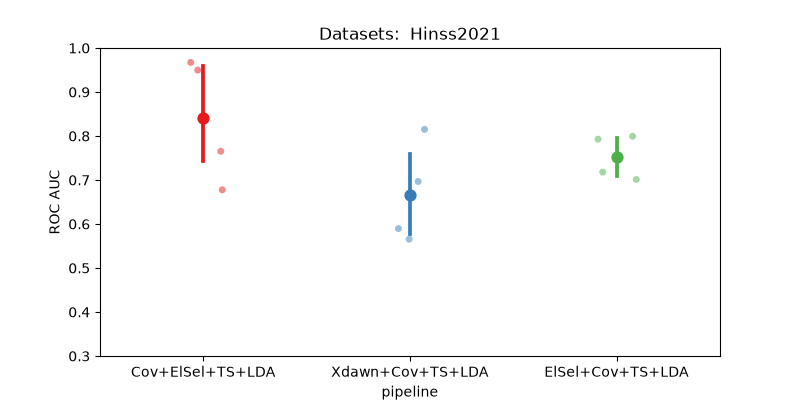

Note
Go to the end to download the full example code.
Hinss2021 classification example#
This example shows how to use the Hinss2021 dataset with the resting state paradigm.
In this example, we aim to determine the most effective channel selection strategy
for the moabb.datasets.Hinss2021 dataset.
The pipelines under consideration are:
Xdawn
Electrode selection based on time epochs data
Electrode selection based on covariance matrices
# License: BSD (3-clause)
import warnings
import numpy as np
import seaborn as sns
from matplotlib import pyplot as plt
from pyriemann.channelselection import ElectrodeSelection
from pyriemann.estimation import Covariances
from pyriemann.spatialfilters import Xdawn
from pyriemann.tangentspace import TangentSpace
from sklearn.base import BaseEstimator, TransformerMixin
from sklearn.discriminant_analysis import LinearDiscriminantAnalysis as LDA
from sklearn.pipeline import make_pipeline
from moabb import set_log_level
from moabb.datasets import Hinss2021
from moabb.evaluations import CrossSessionEvaluation
from moabb.paradigms import RestingStateToP300Adapter
# Suppressing future and runtime warnings for cleaner output
warnings.simplefilter(action="ignore", category=FutureWarning)
warnings.simplefilter(action="ignore", category=RuntimeWarning)
set_log_level("info")
Create util transformer#
Let’s create a scikit transformer mixin, that will select electrodes based on the covariance information
class EpochSelectChannel(TransformerMixin, BaseEstimator):
"""Select channels based on covariance information."""
def __init__(self, n_chan, cov_est):
self._chs_idx = None
self.n_chan = n_chan
self.cov_est = cov_est
def fit(self, X, _y=None):
# Get the covariances of the channels for each epoch.
covs = Covariances(estimator=self.cov_est).fit_transform(X)
# Get the average covariance between the channels
m = np.mean(covs, axis=0)
# Select the `n_chan` channels having the maximum covariances.
indices = np.unravel_index(
np.argpartition(m, -self.n_chan, axis=None)[-self.n_chan :], m.shape
)
# We will keep only these channels for the transform step.
self._chs_idx = np.unique(indices)
return self
def transform(self, X):
return X[:, self._chs_idx, :]
Initialization Process#
Define the experimental paradigm object (RestingState)
Load the datasets
Select a subset of subjects and specific events for analysis
# Here we define the mne events for the RestingState paradigm.
events = {"easy": 2, "diff": 3}
# The paradigm is adapted to the P300 paradigm.
paradigm = RestingStateToP300Adapter(events=events, tmin=0, tmax=0.5)
# We define a list with the dataset to use
datasets = [Hinss2021()]
# To reduce the computation time in the example, we will only use the
# first two subjects.
n__subjects = 2
title = "Datasets: "
for dataset in datasets:
title = title + " " + dataset.code
dataset.subject_list = dataset.subject_list[:n__subjects]
Create Pipelines#
Pipelines must be a dict of scikit-learning pipeline transformer.
pipelines = {}
pipelines["Xdawn+Cov+TS+LDA"] = make_pipeline(
Xdawn(nfilter=4), Covariances(estimator="lwf"), TangentSpace(), LDA()
)
pipelines["Cov+ElSel+TS+LDA"] = make_pipeline(
Covariances(estimator="lwf"), ElectrodeSelection(nelec=8), TangentSpace(), LDA()
)
# Pay attention here that the channel selection took place before computing the covariances:
# It is done on time epochs.
pipelines["ElSel+Cov+TS+LDA"] = make_pipeline(
EpochSelectChannel(n_chan=8, cov_est="lwf"),
Covariances(estimator="lwf"),
TangentSpace(),
LDA(),
)
Run evaluation#
Compare the pipeline using a cross session evaluation.
# Here should be cross-session
evaluation = CrossSessionEvaluation(paradigm=paradigm, datasets=datasets, overwrite=False)
results = evaluation.process(pipelines)
This is nemar-py 0.3.3.
Preparing to download nm000343 from https://data.nemar.org/
Retrieving 20 of 491 manifest files (16 concurrent downloads).
S3: 0%| | 0.00/193M [00:00<?, ?B/s]
S3: 1%| | 1.00M/193M [00:00<01:17, 2.61MB/s]
S3: 17%|█▋ | 32.8M/193M [00:00<00:01, 89.1MB/s]
S3: 60%|█████▉ | 115M/193M [00:00<00:00, 298MB/s]
S3: 84%|████████▍ | 163M/193M [00:00<00:00, 326MB/s]
S3: 100%|██████████| 193M/193M [00:01<00:00, 197MB/s]
Overall: 0%| | 0.00/7.26k [00:00<?, ?B/s]
Overall: 14%|█▍ | 1.02k/7.26k [00:00<00:00, 6.99kB/s]
Overall: 45%|████▌ | 3.28k/7.26k [00:00<00:00, 5.12kB/s]
Overall: 47%|████▋ | 3.40k/7.26k [00:00<00:00, 5.44kB/s]
Finished downloading nm000343 v1.0.3.
0%| | 0.00/181M [00:00<?, ?B/s]
0%| | 56.3k/181M [00:00<09:54, 305kB/s]
0%| | 89.1k/181M [00:00<19:02, 158kB/s]
0%| | 122k/181M [00:00<18:42, 161kB/s]
0%| | 155k/181M [00:01<47:08, 63.9kB/s]
0%| | 187k/181M [00:02<49:51, 60.4kB/s]
0%| | 220k/181M [00:02<46:01, 65.5kB/s]
0%| | 253k/181M [00:02<36:15, 83.1kB/s]
0%| | 286k/181M [00:03<32:29, 92.7kB/s]
0%| | 351k/181M [00:03<20:02, 150kB/s]
0%| | 384k/181M [00:03<23:42, 127kB/s]
0%| | 416k/181M [00:04<32:22, 93.0kB/s]
0%| | 449k/181M [00:04<29:33, 102kB/s]
0%| | 481k/181M [00:04<28:26, 106kB/s]
0%| | 547k/181M [00:04<18:19, 164kB/s]
0%| | 580k/181M [00:05<30:15, 99.4kB/s]
0%|▏ | 645k/181M [00:06<27:02, 111kB/s]
0%|▏ | 678k/181M [00:06<25:03, 120kB/s]
0%|▏ | 743k/181M [00:06<20:14, 149kB/s]
0%|▏ | 776k/181M [00:07<22:39, 133kB/s]
0%|▏ | 809k/181M [00:07<27:04, 111kB/s]
0%|▏ | 874k/181M [00:07<20:43, 145kB/s]
1%|▏ | 907k/181M [00:07<19:09, 157kB/s]
1%|▏ | 939k/181M [00:08<22:44, 132kB/s]
1%|▏ | 972k/181M [00:08<24:18, 123kB/s]
1%|▏ | 1.00M/181M [00:08<23:24, 128kB/s]
1%|▏ | 1.04M/181M [00:09<27:54, 107kB/s]
1%|▏ | 1.10M/181M [00:09<21:55, 137kB/s]
1%|▏ | 1.14M/181M [00:10<29:34, 101kB/s]
1%|▏ | 1.17M/181M [00:10<32:29, 92.3kB/s]
1%|▎ | 1.20M/181M [00:11<36:09, 82.9kB/s]
1%|▎ | 1.23M/181M [00:11<28:42, 104kB/s]
1%|▎ | 1.29M/181M [00:11<24:20, 123kB/s]
1%|▎ | 1.32M/181M [00:11<22:11, 135kB/s]
1%|▎ | 1.35M/181M [00:12<30:55, 96.8kB/s]
1%|▎ | 1.39M/181M [00:12<33:34, 89.2kB/s]
1%|▎ | 1.40M/181M [00:12<30:44, 97.4kB/s]
1%|▎ | 1.42M/181M [00:13<40:32, 73.8kB/s]
1%|▎ | 1.45M/181M [00:13<42:35, 70.3kB/s]
1%|▎ | 1.49M/181M [00:14<37:32, 79.7kB/s]
1%|▎ | 1.52M/181M [00:14<31:45, 94.2kB/s]
1%|▎ | 1.55M/181M [00:14<28:05, 106kB/s]
1%|▎ | 1.58M/181M [00:14<26:53, 111kB/s]
1%|▎ | 1.63M/181M [00:15<30:36, 97.7kB/s]
1%|▎ | 1.68M/181M [00:15<31:17, 95.5kB/s]
1%|▎ | 1.72M/181M [00:16<27:51, 107kB/s]
1%|▍ | 1.75M/181M [00:16<23:31, 127kB/s]
1%|▍ | 1.78M/181M [00:16<22:19, 134kB/s]
1%|▍ | 1.81M/181M [00:16<24:16, 123kB/s]
1%|▍ | 1.85M/181M [00:16<23:50, 125kB/s]
1%|▍ | 1.88M/181M [00:17<23:27, 127kB/s]
1%|▍ | 1.90M/181M [00:17<28:27, 105kB/s]
1%|▍ | 1.93M/181M [00:17<27:11, 110kB/s]
1%|▍ | 1.97M/181M [00:18<30:16, 98.6kB/s]
1%|▍ | 2.00M/181M [00:18<34:38, 86.1kB/s]
1%|▍ | 2.03M/181M [00:18<27:56, 107kB/s]
1%|▍ | 2.10M/181M [00:19<33:18, 89.5kB/s]
1%|▍ | 2.16M/181M [00:20<24:37, 121kB/s]
1%|▍ | 2.19M/181M [00:20<23:02, 129kB/s]
1%|▍ | 2.21M/181M [00:21<41:49, 71.3kB/s]
1%|▍ | 2.24M/181M [00:21<46:44, 63.7kB/s]
1%|▍ | 2.28M/181M [00:22<40:48, 73.0kB/s]
1%|▍ | 2.31M/181M [00:22<40:12, 74.1kB/s]
1%|▍ | 2.34M/181M [00:22<39:58, 74.5kB/s]
1%|▍ | 2.37M/181M [00:23<35:00, 85.1kB/s]
1%|▌ | 2.41M/181M [00:23<41:08, 72.4kB/s]
1%|▌ | 2.47M/181M [00:23<27:41, 107kB/s]
1%|▌ | 2.50M/181M [00:24<25:22, 117kB/s]
1%|▌ | 2.53M/181M [00:24<21:27, 139kB/s]
1%|▌ | 2.57M/181M [00:24<20:51, 143kB/s]
1%|▌ | 2.60M/181M [00:24<24:40, 120kB/s]
1%|▌ | 2.63M/181M [00:25<23:52, 125kB/s]
1%|▌ | 2.66M/181M [00:25<21:27, 139kB/s]
1%|▌ | 2.70M/181M [00:25<30:29, 97.5kB/s]
2%|▌ | 2.73M/181M [00:26<32:44, 90.8kB/s]
2%|▌ | 2.76M/181M [00:26<32:15, 92.1kB/s]
2%|▌ | 2.86M/181M [00:26<19:00, 156kB/s]
2%|▌ | 2.89M/181M [00:27<20:31, 145kB/s]
2%|▋ | 2.93M/181M [00:27<23:25, 127kB/s]
2%|▋ | 2.96M/181M [00:27<26:42, 111kB/s]
2%|▋ | 2.99M/181M [00:28<28:10, 105kB/s]
2%|▋ | 3.02M/181M [00:28<26:16, 113kB/s]
2%|▋ | 3.06M/181M [00:28<22:31, 132kB/s]
2%|▋ | 3.09M/181M [00:28<18:46, 158kB/s]
2%|▋ | 3.15M/181M [00:29<15:26, 192kB/s]
2%|▋ | 3.22M/181M [00:29<12:10, 244kB/s]
2%|▋ | 3.26M/181M [00:29<12:14, 242kB/s]
2%|▋ | 3.28M/181M [00:29<20:55, 142kB/s]
2%|▋ | 3.31M/181M [00:30<23:11, 128kB/s]
2%|▋ | 3.37M/181M [00:30<15:35, 190kB/s]
2%|▋ | 3.40M/181M [00:30<16:16, 182kB/s]
2%|▋ | 3.44M/181M [00:30<18:32, 160kB/s]
2%|▋ | 3.47M/181M [00:31<33:15, 89.0kB/s]
2%|▋ | 3.50M/181M [00:32<49:52, 59.3kB/s]
2%|▋ | 3.54M/181M [00:32<41:40, 71.0kB/s]
2%|▊ | 3.60M/181M [00:33<27:55, 106kB/s]
2%|▊ | 3.63M/181M [00:33<29:12, 101kB/s]
2%|▊ | 3.67M/181M [00:33<30:49, 95.9kB/s]
2%|▊ | 3.70M/181M [00:34<31:20, 94.3kB/s]
2%|▊ | 3.76M/181M [00:34<20:15, 146kB/s]
2%|▊ | 3.82M/181M [00:34<15:48, 187kB/s]
2%|▊ | 3.88M/181M [00:34<13:35, 217kB/s]
2%|▊ | 3.92M/181M [00:34<17:22, 170kB/s]
2%|▊ | 3.98M/181M [00:35<13:33, 218kB/s]
2%|▊ | 4.01M/181M [00:35<14:42, 201kB/s]
2%|▊ | 4.05M/181M [00:35<21:53, 135kB/s]
2%|▊ | 4.09M/181M [00:37<55:52, 52.8kB/s]
2%|▊ | 4.13M/181M [00:38<54:07, 54.5kB/s]
2%|▊ | 4.16M/181M [00:38<50:43, 58.1kB/s]
2%|▉ | 4.23M/181M [00:39<33:00, 89.3kB/s]
2%|▉ | 4.29M/181M [00:39<24:14, 122kB/s]
2%|▉ | 4.35M/181M [00:39<19:32, 151kB/s]
2%|▉ | 4.38M/181M [00:40<26:14, 112kB/s]
2%|▉ | 4.40M/181M [00:40<32:51, 89.6kB/s]
2%|▉ | 4.43M/181M [00:40<30:15, 97.3kB/s]
2%|▉ | 4.47M/181M [00:41<28:42, 102kB/s]
2%|▉ | 4.50M/181M [00:41<24:01, 122kB/s]
3%|▉ | 4.53M/181M [00:41<20:00, 147kB/s]
3%|▉ | 4.56M/181M [00:41<20:08, 146kB/s]
3%|▉ | 4.60M/181M [00:41<20:16, 145kB/s]
3%|█ | 4.66M/181M [00:42<25:10, 117kB/s]
3%|█ | 4.73M/181M [00:42<17:53, 164kB/s]
3%|█ | 4.76M/181M [00:42<16:57, 173kB/s]
3%|█ | 4.83M/181M [00:42<12:56, 227kB/s]
3%|█ | 4.89M/181M [00:43<10:11, 288kB/s]
3%|█ | 4.93M/181M [00:43<11:40, 252kB/s]
3%|█ | 4.96M/181M [00:43<14:56, 196kB/s]
3%|█ | 4.99M/181M [00:43<17:49, 165kB/s]
3%|█ | 5.02M/181M [00:44<20:10, 145kB/s]
3%|█ | 5.06M/181M [00:44<27:32, 106kB/s]
3%|█ | 5.09M/181M [00:44<24:42, 119kB/s]
3%|█ | 5.12M/181M [00:44<20:46, 141kB/s]
3%|█ | 5.15M/181M [00:45<25:36, 114kB/s]
3%|█ | 5.19M/181M [00:45<28:23, 103kB/s]
3%|█ | 5.22M/181M [00:46<36:45, 79.7kB/s]
3%|█ | 5.25M/181M [00:47<41:36, 70.4kB/s]
3%|█ | 5.28M/181M [00:47<38:52, 75.4kB/s]
3%|█ | 5.32M/181M [00:47<33:23, 87.7kB/s]
3%|█ | 5.35M/181M [00:47<30:39, 95.5kB/s]
3%|█▏ | 5.38M/181M [00:48<28:58, 101kB/s]
3%|█▏ | 5.41M/181M [00:48<29:45, 98.4kB/s]
3%|█▏ | 5.45M/181M [00:49<40:42, 71.9kB/s]
3%|█▏ | 5.48M/181M [00:49<33:46, 86.6kB/s]
3%|█▏ | 5.55M/181M [00:49<24:08, 121kB/s]
3%|█▏ | 5.58M/181M [00:49<21:36, 135kB/s]
3%|█▏ | 5.61M/181M [00:50<21:48, 134kB/s]
3%|█▏ | 5.64M/181M [00:50<27:02, 108kB/s]
3%|█▏ | 5.68M/181M [00:51<30:44, 95.1kB/s]
3%|█▏ | 5.74M/181M [00:51<21:53, 133kB/s]
3%|█▏ | 5.77M/181M [00:51<20:36, 142kB/s]
3%|█▎ | 5.80M/181M [00:51<18:01, 162kB/s]
3%|█▎ | 5.84M/181M [00:51<20:32, 142kB/s]
3%|█▎ | 5.87M/181M [00:52<20:52, 140kB/s]
3%|█▏ | 5.90M/181M [00:52<29:58, 97.4kB/s]
3%|█▎ | 5.94M/181M [00:52<24:31, 119kB/s]
3%|█▎ | 5.97M/181M [00:53<25:06, 116kB/s]
3%|█▎ | 6.00M/181M [00:53<20:48, 140kB/s]
3%|█▎ | 6.07M/181M [00:53<13:32, 215kB/s]
3%|█▎ | 6.10M/181M [00:53<17:08, 170kB/s]
3%|█▎ | 6.13M/181M [00:53<16:04, 181kB/s]
3%|█▎ | 6.16M/181M [00:53<14:47, 197kB/s]
3%|█▎ | 6.20M/181M [00:54<13:27, 217kB/s]
3%|█▎ | 6.23M/181M [00:54<30:51, 94.4kB/s]
3%|█▎ | 6.26M/181M [00:55<33:16, 87.5kB/s]
3%|█▎ | 6.33M/181M [00:55<24:02, 121kB/s]
4%|█▎ | 6.36M/181M [00:55<24:27, 119kB/s]
4%|█▎ | 6.41M/181M [00:57<39:07, 74.4kB/s]
4%|█▎ | 6.43M/181M [00:57<42:05, 69.1kB/s]
4%|█▍ | 6.51M/181M [00:57<24:30, 119kB/s]
4%|█▍ | 6.56M/181M [00:57<19:35, 148kB/s]
4%|█▍ | 6.59M/181M [00:58<21:39, 134kB/s]
4%|█▍ | 6.62M/181M [00:58<21:55, 133kB/s]
4%|█▍ | 6.69M/181M [00:58<18:45, 155kB/s]
4%|█▍ | 6.72M/181M [00:58<21:14, 137kB/s]
4%|█▍ | 6.75M/181M [00:59<20:00, 145kB/s]
4%|█▍ | 6.79M/181M [00:59<17:58, 162kB/s]
4%|█▍ | 6.82M/181M [00:59<18:23, 158kB/s]
4%|█▍ | 6.85M/181M [00:59<21:50, 133kB/s]
4%|█▍ | 6.88M/181M [01:00<22:27, 129kB/s]
4%|█▍ | 6.92M/181M [01:00<29:19, 99.0kB/s]
4%|█▌ | 6.98M/181M [01:00<21:15, 136kB/s]
4%|█▍ | 7.02M/181M [01:01<29:39, 97.8kB/s]
4%|█▍ | 7.05M/181M [01:02<35:52, 80.8kB/s]
4%|█▍ | 7.08M/181M [01:02<35:14, 82.3kB/s]
4%|█▍ | 7.11M/181M [01:02<30:17, 95.7kB/s]
4%|█▍ | 7.15M/181M [01:03<33:52, 85.5kB/s]
4%|█▌ | 7.18M/181M [01:03<26:56, 108kB/s]
4%|█▌ | 7.24M/181M [01:03<19:32, 148kB/s]
4%|█▌ | 7.28M/181M [01:03<20:50, 139kB/s]
4%|█▌ | 7.34M/181M [01:04<20:15, 143kB/s]
4%|█▌ | 7.37M/181M [01:04<27:40, 105kB/s]
4%|█▌ | 7.41M/181M [01:05<40:00, 72.3kB/s]
4%|█▌ | 7.44M/181M [01:05<34:09, 84.7kB/s]
4%|█▌ | 7.52M/181M [01:06<19:26, 149kB/s]
4%|█▋ | 7.57M/181M [01:06<17:33, 165kB/s]
4%|█▋ | 7.64M/181M [01:06<14:44, 196kB/s]
4%|█▌ | 7.70M/181M [01:07<29:23, 98.3kB/s]
4%|█▋ | 7.73M/181M [01:07<27:29, 105kB/s]
4%|█▋ | 7.79M/181M [01:08<19:56, 145kB/s]
4%|█▋ | 7.83M/181M [01:08<17:58, 161kB/s]
4%|█▋ | 7.86M/181M [01:08<16:46, 172kB/s]
4%|█▋ | 7.89M/181M [01:08<18:54, 153kB/s]
4%|█▋ | 7.92M/181M [01:08<16:22, 176kB/s]
4%|█▋ | 7.96M/181M [01:08<14:43, 196kB/s]
4%|█▋ | 7.99M/181M [01:09<14:46, 195kB/s]
4%|█▋ | 8.02M/181M [01:09<18:44, 154kB/s]
4%|█▋ | 8.12M/181M [01:09<11:57, 241kB/s]
5%|█▊ | 8.15M/181M [01:09<14:52, 194kB/s]
5%|█▊ | 8.18M/181M [01:10<24:56, 116kB/s]
5%|█▊ | 8.21M/181M [01:10<27:11, 106kB/s]
5%|█▊ | 8.27M/181M [01:11<19:01, 151kB/s]
5%|█▋ | 8.31M/181M [01:11<28:52, 99.7kB/s]
5%|█▊ | 8.37M/181M [01:11<19:18, 149kB/s]
5%|█▊ | 8.41M/181M [01:11<17:28, 165kB/s]
5%|█▊ | 8.47M/181M [01:12<16:42, 172kB/s]
5%|█▊ | 8.50M/181M [01:12<20:53, 138kB/s]
5%|█▊ | 8.54M/181M [01:12<20:40, 139kB/s]
5%|█▊ | 8.57M/181M [01:13<18:41, 154kB/s]
5%|█▊ | 8.60M/181M [01:13<25:17, 114kB/s]
5%|█▊ | 8.65M/181M [01:13<18:16, 157kB/s]
5%|█▊ | 8.68M/181M [01:13<18:21, 156kB/s]
5%|█▊ | 8.70M/181M [01:13<17:11, 167kB/s]
5%|█▉ | 8.73M/181M [01:14<15:47, 182kB/s]
5%|█▉ | 8.76M/181M [01:14<24:00, 120kB/s]
5%|█▊ | 8.78M/181M [01:15<43:29, 66.0kB/s]
5%|█▊ | 8.81M/181M [01:15<39:26, 72.8kB/s]
5%|█▊ | 8.84M/181M [01:15<29:57, 95.8kB/s]
5%|█▉ | 8.88M/181M [01:16<25:17, 113kB/s]
5%|█▉ | 8.91M/181M [01:16<22:00, 130kB/s]
5%|█▉ | 8.94M/181M [01:16<33:44, 85.0kB/s]
5%|█▉ | 8.97M/181M [01:17<45:31, 63.0kB/s]
5%|█▉ | 9.00M/181M [01:17<34:11, 83.9kB/s]
5%|█▉ | 9.04M/181M [01:17<28:33, 100kB/s]
5%|█▉ | 9.07M/181M [01:18<23:31, 122kB/s]
5%|█▉ | 9.13M/181M [01:18<14:40, 195kB/s]
5%|█▉ | 9.17M/181M [01:18<13:29, 212kB/s]
5%|█▉ | 9.20M/181M [01:20<51:55, 55.1kB/s]
5%|█▉ | 9.23M/181M [01:20<43:38, 65.6kB/s]
5%|█▉ | 9.28M/181M [01:20<39:31, 72.4kB/s]
5%|█▉ | 9.31M/181M [01:21<46:00, 62.2kB/s]
5%|█▉ | 9.35M/181M [01:21<41:59, 68.2kB/s]
5%|█▉ | 9.38M/181M [01:22<36:35, 78.2kB/s]
5%|█▉ | 9.41M/181M [01:22<37:01, 77.3kB/s]
5%|█▉ | 9.44M/181M [01:22<30:52, 92.6kB/s]
5%|█▉ | 9.46M/181M [01:23<33:56, 84.2kB/s]
5%|█▉ | 9.50M/181M [01:23<37:18, 76.6kB/s]
5%|██ | 9.53M/181M [01:24<39:00, 73.3kB/s]
5%|██ | 9.63M/181M [01:24<19:55, 143kB/s]
5%|██ | 9.69M/181M [01:24<14:34, 196kB/s]
5%|██ | 9.76M/181M [01:24<12:13, 234kB/s]
5%|██ | 9.79M/181M [01:24<15:09, 188kB/s]
5%|██ | 9.82M/181M [01:25<23:15, 123kB/s]
5%|██▏ | 9.89M/181M [01:25<21:39, 132kB/s]
5%|██▏ | 9.95M/181M [01:26<17:05, 167kB/s]
6%|██▏ | 9.99M/181M [01:26<17:04, 167kB/s]
6%|██▏ | 10.1M/181M [01:26<13:34, 210kB/s]
6%|██▏ | 10.1M/181M [01:26<12:11, 234kB/s]
6%|██▏ | 10.2M/181M [01:27<22:03, 129kB/s]
6%|██▏ | 10.2M/181M [01:27<16:41, 171kB/s]
6%|██▏ | 10.3M/181M [01:28<19:45, 144kB/s]
6%|██▏ | 10.4M/181M [01:28<15:59, 178kB/s]
6%|██▏ | 10.4M/181M [01:28<14:59, 190kB/s]
6%|██▎ | 10.5M/181M [01:29<13:09, 216kB/s]
6%|██▎ | 10.5M/181M [01:29<12:38, 225kB/s]
6%|██▎ | 10.6M/181M [01:29<17:13, 165kB/s]
6%|██▎ | 10.6M/181M [01:29<15:38, 182kB/s]
6%|██▎ | 10.6M/181M [01:30<16:09, 176kB/s]
6%|██▎ | 10.7M/181M [01:30<12:13, 232kB/s]
6%|██▎ | 10.8M/181M [01:30<10:16, 276kB/s]
6%|██▎ | 10.8M/181M [01:30<16:49, 169kB/s]
6%|██▎ | 10.8M/181M [01:30<16:53, 168kB/s]
6%|██▎ | 10.9M/181M [01:31<16:38, 170kB/s]
6%|██▎ | 10.9M/181M [01:31<12:33, 226kB/s]
6%|██▎ | 11.0M/181M [01:31<16:26, 172kB/s]
6%|██▎ | 11.0M/181M [01:32<23:10, 122kB/s]
6%|██▍ | 11.0M/181M [01:32<26:29, 107kB/s]
6%|██▎ | 11.1M/181M [01:33<31:59, 88.6kB/s]
6%|██▍ | 11.1M/181M [01:33<28:15, 100kB/s]
6%|██▎ | 11.1M/181M [01:34<39:58, 70.8kB/s]
6%|██▎ | 11.2M/181M [01:34<32:06, 88.2kB/s]
6%|██▎ | 11.2M/181M [01:34<39:36, 71.5kB/s]
6%|██▎ | 11.2M/181M [01:35<34:26, 82.2kB/s]
6%|██▎ | 11.3M/181M [01:35<36:28, 77.6kB/s]
6%|██▎ | 11.3M/181M [01:36<39:57, 70.8kB/s]
6%|██▍ | 11.3M/181M [01:37<57:06, 49.5kB/s]
6%|██▎ | 11.4M/181M [01:38<1:00:08, 47.0kB/s]
6%|██▎ | 11.4M/181M [01:38<1:01:43, 45.8kB/s]
6%|██▍ | 11.4M/181M [01:39<53:26, 52.9kB/s]
6%|██▍ | 11.5M/181M [01:39<45:48, 61.7kB/s]
6%|██▍ | 11.5M/181M [01:39<37:46, 74.8kB/s]
6%|██▍ | 11.5M/181M [01:40<36:27, 77.5kB/s]
6%|██▍ | 11.6M/181M [01:40<33:04, 85.4kB/s]
6%|██▍ | 11.6M/181M [01:40<29:17, 96.4kB/s]
6%|██▍ | 11.6M/181M [01:41<39:11, 72.0kB/s]
6%|██▌ | 11.7M/181M [01:41<26:06, 108kB/s]
6%|██▍ | 11.7M/181M [01:42<36:10, 78.0kB/s]
6%|██▍ | 11.7M/181M [01:42<39:48, 70.9kB/s]
6%|██▍ | 11.8M/181M [01:42<31:27, 89.7kB/s]
7%|██▍ | 11.8M/181M [01:43<44:00, 64.1kB/s]
7%|██▍ | 11.8M/181M [01:44<41:24, 68.1kB/s]
7%|██▍ | 11.8M/181M [01:44<39:23, 71.6kB/s]
7%|██▍ | 11.9M/181M [01:44<37:54, 74.4kB/s]
7%|██▌ | 11.9M/181M [01:45<39:19, 71.7kB/s]
7%|██▌ | 11.9M/181M [01:45<35:38, 79.1kB/s]
7%|██▌ | 12.0M/181M [01:46<34:07, 82.5kB/s]
7%|██▌ | 12.0M/181M [01:46<29:13, 96.4kB/s]
7%|██▌ | 12.0M/181M [01:46<24:27, 115kB/s]
7%|██▌ | 12.1M/181M [01:46<19:53, 142kB/s]
7%|██▌ | 12.1M/181M [01:47<30:20, 92.8kB/s]
7%|██▌ | 12.2M/181M [01:47<20:33, 137kB/s]
7%|██▋ | 12.2M/181M [01:47<20:23, 138kB/s]
7%|██▋ | 12.2M/181M [01:47<27:23, 103kB/s]
7%|██▋ | 12.3M/181M [01:48<23:22, 120kB/s]
7%|██▋ | 12.3M/181M [01:48<21:38, 130kB/s]
7%|██▌ | 12.3M/181M [01:49<35:14, 79.8kB/s]
7%|██▌ | 12.4M/181M [01:49<30:50, 91.2kB/s]
7%|██▋ | 12.4M/181M [01:49<24:31, 115kB/s]
7%|██▋ | 12.4M/181M [01:49<22:03, 127kB/s]
7%|██▌ | 12.5M/181M [01:50<30:28, 92.2kB/s]
7%|██▌ | 12.5M/181M [01:50<31:27, 89.3kB/s]
7%|██▋ | 12.5M/181M [01:50<26:25, 106kB/s]
7%|██▋ | 12.6M/181M [01:51<23:37, 119kB/s]
7%|██▋ | 12.6M/181M [01:52<38:13, 73.4kB/s]
7%|██▋ | 12.7M/181M [01:52<29:35, 94.8kB/s]
7%|██▋ | 12.7M/181M [01:53<32:10, 87.2kB/s]
7%|██▋ | 12.8M/181M [01:53<39:53, 70.3kB/s]
7%|██▋ | 12.8M/181M [01:54<48:34, 57.7kB/s]
7%|██▋ | 12.8M/181M [01:55<41:21, 67.8kB/s]
7%|██▋ | 12.8M/181M [01:55<41:06, 68.2kB/s]
7%|██▋ | 12.9M/181M [01:55<35:20, 79.3kB/s]
7%|██▋ | 12.9M/181M [01:56<33:53, 82.7kB/s]
7%|██▋ | 12.9M/181M [01:57<54:39, 51.3kB/s]
7%|██▌ | 12.9M/181M [01:57<1:03:13, 44.3kB/s]
7%|██▋ | 13.0M/181M [01:57<50:39, 55.3kB/s]
7%|██▋ | 13.0M/181M [01:58<37:03, 75.5kB/s]
7%|██▋ | 13.1M/181M [01:59<44:52, 62.4kB/s]
7%|██▋ | 13.1M/181M [01:59<35:01, 79.9kB/s]
7%|██▊ | 13.2M/181M [01:59<23:31, 119kB/s]
7%|██▊ | 13.2M/181M [01:59<25:06, 111kB/s]
7%|██▊ | 13.2M/181M [02:00<27:03, 103kB/s]
7%|██▊ | 13.3M/181M [02:00<23:23, 120kB/s]
7%|██▊ | 13.3M/181M [02:00<23:20, 120kB/s]
7%|██▊ | 13.3M/181M [02:01<29:51, 93.6kB/s]
7%|██▉ | 13.4M/181M [02:01<25:25, 110kB/s]
7%|██▉ | 13.4M/181M [02:01<23:44, 118kB/s]
7%|██▉ | 13.5M/181M [02:01<20:32, 136kB/s]
7%|██▉ | 13.5M/181M [02:02<17:32, 159kB/s]
7%|██▉ | 13.5M/181M [02:02<15:37, 179kB/s]
7%|██▉ | 13.6M/181M [02:02<13:36, 205kB/s]
8%|██▉ | 13.6M/181M [02:02<10:10, 274kB/s]
8%|██▉ | 13.6M/181M [02:02<14:02, 199kB/s]
8%|██▉ | 13.7M/181M [02:02<11:28, 243kB/s]
8%|██▉ | 13.8M/181M [02:03<09:44, 286kB/s]
8%|██▉ | 13.8M/181M [02:03<07:54, 353kB/s]
8%|██▉ | 13.9M/181M [02:03<11:05, 251kB/s]
8%|███ | 13.9M/181M [02:03<12:00, 232kB/s]
8%|███ | 14.0M/181M [02:03<11:18, 246kB/s]
8%|███ | 14.0M/181M [02:03<09:22, 297kB/s]
8%|███ | 14.1M/181M [02:05<25:00, 111kB/s]
8%|███ | 14.2M/181M [02:05<22:53, 122kB/s]
8%|███ | 14.2M/181M [02:05<20:14, 137kB/s]
8%|███ | 14.2M/181M [02:05<18:31, 150kB/s]
8%|███ | 14.3M/181M [02:06<19:24, 143kB/s]
8%|███ | 14.3M/181M [02:06<20:41, 134kB/s]
8%|███ | 14.3M/181M [02:06<26:18, 106kB/s]
8%|███ | 14.4M/181M [02:07<31:04, 89.4kB/s]
8%|███ | 14.4M/181M [02:07<28:46, 96.5kB/s]
8%|███ | 14.4M/181M [02:07<27:26, 101kB/s]
8%|███ | 14.4M/181M [02:08<31:57, 86.9kB/s]
8%|███ | 14.5M/181M [02:09<47:14, 58.8kB/s]
8%|███ | 14.5M/181M [02:09<29:46, 93.2kB/s]
8%|███ | 14.6M/181M [02:09<29:42, 93.4kB/s]
8%|███▏ | 14.6M/181M [02:10<27:09, 102kB/s]
8%|███ | 14.6M/181M [02:10<31:38, 87.7kB/s]
8%|███▏ | 14.7M/181M [02:10<25:36, 108kB/s]
8%|███▏ | 14.7M/181M [02:10<21:00, 132kB/s]
8%|███▏ | 14.7M/181M [02:11<22:27, 123kB/s]
8%|███ | 14.8M/181M [02:12<34:11, 81.1kB/s]
8%|███▏ | 14.9M/181M [02:12<24:05, 115kB/s]
8%|███▏ | 14.9M/181M [02:12<26:39, 104kB/s]
8%|███▏ | 14.9M/181M [02:13<31:52, 86.9kB/s]
8%|███▏ | 15.0M/181M [02:13<32:34, 85.0kB/s]
8%|███▏ | 15.0M/181M [02:13<27:21, 101kB/s]
8%|███▏ | 15.1M/181M [02:14<21:13, 130kB/s]
8%|███▎ | 15.1M/181M [02:14<20:37, 134kB/s]
8%|███▏ | 15.1M/181M [02:15<31:46, 87.0kB/s]
8%|███▏ | 15.2M/181M [02:15<36:48, 75.1kB/s]
8%|███▏ | 15.2M/181M [02:16<30:03, 91.9kB/s]
8%|███▎ | 15.2M/181M [02:16<21:03, 131kB/s]
8%|███▎ | 15.3M/181M [02:16<19:05, 145kB/s]
8%|███▎ | 15.3M/181M [02:16<16:54, 163kB/s]
8%|███▎ | 15.3M/181M [02:16<15:57, 173kB/s]
9%|███▎ | 15.4M/181M [02:17<17:49, 155kB/s]
9%|███▎ | 15.4M/181M [02:17<18:46, 147kB/s]
9%|███▎ | 15.5M/181M [02:17<17:27, 158kB/s]
9%|███▎ | 15.5M/181M [02:18<21:30, 128kB/s]
9%|███▎ | 15.6M/181M [02:18<18:51, 146kB/s]
9%|███▎ | 15.6M/181M [02:18<17:38, 156kB/s]
9%|███▎ | 15.6M/181M [02:18<20:14, 136kB/s]
9%|███▎ | 15.7M/181M [02:18<19:01, 145kB/s]
9%|███▍ | 15.7M/181M [02:19<14:08, 195kB/s]
9%|███▍ | 15.8M/181M [02:19<12:59, 212kB/s]
9%|███▍ | 15.8M/181M [02:19<19:56, 138kB/s]
9%|███▍ | 15.9M/181M [02:20<20:44, 133kB/s]
9%|███▍ | 15.9M/181M [02:20<22:05, 125kB/s]
9%|███▍ | 16.0M/181M [02:20<20:29, 134kB/s]
9%|███▍ | 16.0M/181M [02:21<15:15, 180kB/s]
9%|███▍ | 16.1M/181M [02:21<15:27, 178kB/s]
9%|███▎ | 16.1M/181M [02:22<30:59, 88.7kB/s]
9%|███▍ | 16.1M/181M [02:22<34:14, 80.3kB/s]
9%|███▍ | 16.1M/181M [02:22<26:08, 105kB/s]
9%|███▍ | 16.2M/181M [02:22<21:05, 130kB/s]
9%|███▍ | 16.2M/181M [02:23<25:55, 106kB/s]
9%|███▍ | 16.2M/181M [02:23<24:56, 110kB/s]
9%|███▍ | 16.3M/181M [02:24<38:23, 71.5kB/s]
9%|███▍ | 16.3M/181M [02:24<40:06, 68.5kB/s]
9%|███▍ | 16.3M/181M [02:25<37:11, 73.8kB/s]
9%|███▍ | 16.4M/181M [02:25<31:40, 86.7kB/s]
9%|███▍ | 16.4M/181M [02:25<31:59, 85.8kB/s]
9%|███▍ | 16.4M/181M [02:26<36:05, 76.0kB/s]
9%|███▍ | 16.4M/181M [02:26<28:10, 97.3kB/s]
9%|███▌ | 16.5M/181M [02:26<24:00, 114kB/s]
9%|███▍ | 16.5M/181M [02:27<31:17, 87.6kB/s]
9%|███▍ | 16.5M/181M [02:27<32:28, 84.4kB/s]
9%|███▌ | 16.6M/181M [02:27<26:49, 102kB/s]
9%|███▌ | 16.6M/181M [02:27<21:24, 128kB/s]
9%|███▌ | 16.7M/181M [02:27<13:48, 198kB/s]
9%|███▌ | 16.7M/181M [02:28<14:49, 185kB/s]
9%|███▌ | 16.7M/181M [02:28<18:54, 145kB/s]
9%|███▌ | 16.8M/181M [02:28<16:58, 161kB/s]
9%|███▌ | 16.8M/181M [02:29<24:47, 110kB/s]
9%|███▋ | 16.8M/181M [02:29<23:32, 116kB/s]
9%|███▋ | 16.9M/181M [02:29<22:51, 120kB/s]
9%|███▋ | 16.9M/181M [02:30<25:16, 108kB/s]
9%|███▋ | 17.0M/181M [02:30<25:12, 108kB/s]
9%|███▌ | 17.0M/181M [02:31<30:45, 88.9kB/s]
9%|███▋ | 17.1M/181M [02:31<21:36, 126kB/s]
9%|███▌ | 17.1M/181M [02:32<33:34, 81.4kB/s]
9%|███▌ | 17.1M/181M [02:32<29:28, 92.7kB/s]
9%|███▌ | 17.2M/181M [02:32<27:30, 99.3kB/s]
10%|███▌ | 17.2M/181M [02:33<28:23, 96.2kB/s]
10%|███▋ | 17.2M/181M [02:33<26:27, 103kB/s]
10%|███▌ | 17.3M/181M [02:34<38:25, 71.0kB/s]
10%|███▋ | 17.3M/181M [02:34<34:46, 78.5kB/s]
10%|███▋ | 17.3M/181M [02:34<30:48, 88.5kB/s]
10%|███▋ | 17.4M/181M [02:34<25:08, 108kB/s]
10%|███▊ | 17.4M/181M [02:35<15:41, 174kB/s]
10%|███▊ | 17.5M/181M [02:35<14:30, 188kB/s]
10%|███▋ | 17.5M/181M [02:36<31:35, 86.3kB/s]
10%|███▋ | 17.5M/181M [02:36<28:47, 94.6kB/s]
10%|███▋ | 17.6M/181M [02:36<29:34, 92.1kB/s]
10%|███▋ | 17.6M/181M [02:38<51:37, 52.8kB/s]
10%|███▋ | 17.6M/181M [02:38<42:24, 64.2kB/s]
10%|███▋ | 17.7M/181M [02:38<37:42, 72.2kB/s]
10%|███▋ | 17.7M/181M [02:38<32:59, 82.5kB/s]
10%|███▋ | 17.7M/181M [02:38<27:23, 99.4kB/s]
10%|███▊ | 17.8M/181M [02:39<22:51, 119kB/s]
10%|███▊ | 17.8M/181M [02:39<22:59, 118kB/s]
10%|███▊ | 17.8M/181M [02:39<20:29, 133kB/s]
10%|███▋ | 17.9M/181M [02:40<39:41, 68.5kB/s]
10%|███▊ | 17.9M/181M [02:40<34:44, 78.3kB/s]
10%|███▊ | 17.9M/181M [02:41<27:11, 100kB/s]
10%|███▊ | 18.0M/181M [02:41<22:24, 121kB/s]
10%|███▉ | 18.0M/181M [02:41<15:17, 178kB/s]
10%|███▊ | 18.0M/181M [02:42<34:46, 78.1kB/s]
10%|███▊ | 18.1M/181M [02:42<28:05, 96.7kB/s]
10%|███▉ | 18.1M/181M [02:42<25:31, 106kB/s]
10%|███▉ | 18.2M/181M [02:42<18:12, 149kB/s]
10%|███▉ | 18.2M/181M [02:43<16:13, 167kB/s]
10%|███▉ | 18.2M/181M [02:43<15:17, 178kB/s]
10%|███▉ | 18.3M/181M [02:43<16:27, 165kB/s]
10%|███▉ | 18.3M/181M [02:43<20:30, 132kB/s]
10%|███▉ | 18.3M/181M [02:44<17:56, 151kB/s]
10%|███▉ | 18.4M/181M [02:44<24:13, 112kB/s]
10%|███▉ | 18.4M/181M [02:44<21:47, 124kB/s]
10%|███▉ | 18.4M/181M [02:45<24:21, 111kB/s]
10%|███▉ | 18.5M/181M [02:45<35:50, 75.6kB/s]
10%|███▉ | 18.5M/181M [02:46<40:24, 67.0kB/s]
10%|███▉ | 18.6M/181M [02:47<29:07, 93.0kB/s]
10%|████ | 18.7M/181M [02:47<19:21, 140kB/s]
10%|████ | 18.7M/181M [02:47<21:42, 125kB/s]
10%|████ | 18.7M/181M [02:48<26:12, 103kB/s]
10%|████ | 18.8M/181M [02:48<24:02, 112kB/s]
10%|███▉ | 18.8M/181M [02:49<34:55, 77.4kB/s]
10%|███▉ | 18.8M/181M [02:49<41:16, 65.5kB/s]
10%|███▉ | 18.9M/181M [02:50<37:48, 71.5kB/s]
10%|███▉ | 18.9M/181M [02:50<38:20, 70.5kB/s]
10%|███▉ | 18.9M/181M [02:51<48:06, 56.2kB/s]
10%|███▉ | 19.0M/181M [02:51<41:09, 65.6kB/s]
10%|███▉ | 19.0M/181M [02:51<32:12, 83.8kB/s]
11%|███▉ | 19.0M/181M [02:52<33:45, 80.0kB/s]
11%|████ | 19.1M/181M [02:52<32:03, 84.2kB/s]
11%|████ | 19.1M/181M [02:53<35:21, 76.3kB/s]
11%|████ | 19.1M/181M [02:54<45:19, 59.5kB/s]
11%|████ | 19.2M/181M [02:54<37:07, 72.7kB/s]
11%|████▏ | 19.2M/181M [02:54<23:03, 117kB/s]
11%|████▏ | 19.3M/181M [02:54<19:33, 138kB/s]
11%|████ | 19.3M/181M [02:56<40:02, 67.3kB/s]
11%|████ | 19.3M/181M [02:56<40:44, 66.1kB/s]
11%|████ | 19.4M/181M [02:56<37:01, 72.8kB/s]
11%|████▏ | 19.4M/181M [02:56<23:28, 115kB/s]
11%|████▏ | 19.5M/181M [02:57<18:22, 146kB/s]
11%|████▏ | 19.5M/181M [02:57<16:42, 161kB/s]
11%|████▏ | 19.6M/181M [02:57<24:59, 108kB/s]
11%|████▏ | 19.6M/181M [02:58<23:21, 115kB/s]
11%|████▏ | 19.6M/181M [02:58<21:07, 127kB/s]
11%|████▏ | 19.7M/181M [02:58<16:58, 158kB/s]
11%|████▎ | 19.7M/181M [02:59<23:06, 116kB/s]
11%|███▉ | 19.8M/181M [03:01<1:10:05, 38.3kB/s]
11%|████▏ | 19.8M/181M [03:01<57:45, 46.5kB/s]
11%|████▏ | 19.8M/181M [03:02<44:39, 60.2kB/s]
11%|████▏ | 19.9M/181M [03:02<36:19, 74.0kB/s]
11%|████▏ | 19.9M/181M [03:02<35:34, 75.5kB/s]
11%|████▏ | 19.9M/181M [03:02<29:36, 90.7kB/s]
11%|████▎ | 20.0M/181M [03:03<25:57, 103kB/s]
11%|████▏ | 20.0M/181M [03:04<51:35, 52.0kB/s]
11%|████▏ | 20.1M/181M [03:04<35:40, 75.2kB/s]
11%|████▏ | 20.1M/181M [03:05<41:24, 64.8kB/s]
11%|████▏ | 20.1M/181M [03:06<49:12, 54.5kB/s]
11%|████▏ | 20.2M/181M [03:06<31:08, 86.1kB/s]
11%|████▏ | 20.2M/181M [03:07<35:27, 75.6kB/s]
11%|████▏ | 20.2M/181M [03:07<34:35, 77.5kB/s]
11%|████▎ | 20.3M/181M [03:07<30:48, 87.0kB/s]
11%|████▍ | 20.3M/181M [03:07<21:22, 125kB/s]
11%|████▍ | 20.4M/181M [03:08<24:50, 108kB/s]
11%|████▎ | 20.4M/181M [03:08<29:11, 91.7kB/s]
11%|████▎ | 20.4M/181M [03:09<37:51, 70.7kB/s]
11%|████▎ | 20.5M/181M [03:10<48:21, 55.3kB/s]
11%|████▎ | 20.5M/181M [03:10<37:24, 71.5kB/s]
11%|████▎ | 20.5M/181M [03:11<55:08, 48.5kB/s]
11%|████▎ | 20.6M/181M [03:12<39:49, 67.1kB/s]
11%|████▎ | 20.6M/181M [03:12<39:39, 67.4kB/s]
11%|████▎ | 20.6M/181M [03:12<37:34, 71.1kB/s]
11%|████▎ | 20.7M/181M [03:13<34:20, 77.8kB/s]
11%|████▎ | 20.7M/181M [03:13<39:02, 68.5kB/s]
11%|████▎ | 20.7M/181M [03:14<34:34, 77.3kB/s]
11%|████▎ | 20.8M/181M [03:14<34:05, 78.3kB/s]
11%|████▎ | 20.8M/181M [03:14<31:00, 86.1kB/s]
12%|████▎ | 20.8M/181M [03:15<29:10, 91.5kB/s]
12%|████▍ | 20.9M/181M [03:15<27:46, 96.1kB/s]
12%|████▍ | 20.9M/181M [03:15<31:22, 85.1kB/s]
12%|████▍ | 20.9M/181M [03:16<28:19, 94.2kB/s]
12%|████▌ | 21.0M/181M [03:16<26:04, 102kB/s]
12%|████▌ | 21.0M/181M [03:16<24:19, 110kB/s]
12%|████▍ | 21.0M/181M [03:17<33:52, 78.7kB/s]
12%|████▍ | 21.1M/181M [03:17<29:25, 90.6kB/s]
12%|████▌ | 21.1M/181M [03:17<25:38, 104kB/s]
12%|████▌ | 21.1M/181M [03:18<25:45, 103kB/s]
12%|████▌ | 21.2M/181M [03:18<24:17, 110kB/s]
12%|████▌ | 21.2M/181M [03:18<23:33, 113kB/s]
12%|████▌ | 21.2M/181M [03:18<22:20, 119kB/s]
12%|████▍ | 21.3M/181M [03:19<40:15, 66.1kB/s]
12%|████▍ | 21.3M/181M [03:20<28:56, 92.0kB/s]
12%|████▌ | 21.4M/181M [03:20<24:22, 109kB/s]
12%|████▌ | 21.4M/181M [03:20<20:34, 129kB/s]
12%|████▌ | 21.4M/181M [03:20<17:38, 151kB/s]
12%|████▌ | 21.5M/181M [03:20<15:36, 170kB/s]
12%|████▋ | 21.5M/181M [03:21<16:26, 162kB/s]
12%|████▋ | 21.5M/181M [03:21<25:27, 104kB/s]
12%|████▋ | 21.6M/181M [03:21<16:11, 164kB/s]
12%|████▋ | 21.7M/181M [03:22<16:45, 159kB/s]
12%|████▋ | 21.7M/181M [03:22<17:12, 154kB/s]
12%|████▋ | 21.7M/181M [03:22<15:19, 173kB/s]
12%|████▋ | 21.8M/181M [03:22<21:48, 122kB/s]
12%|████▌ | 21.8M/181M [03:23<36:06, 73.5kB/s]
12%|████▌ | 21.8M/181M [03:24<33:00, 80.4kB/s]
12%|████▌ | 21.9M/181M [03:24<30:31, 86.9kB/s]
12%|████▌ | 21.9M/181M [03:24<32:18, 82.1kB/s]
12%|████▌ | 21.9M/181M [03:25<33:12, 79.9kB/s]
12%|████▌ | 22.0M/181M [03:25<28:10, 94.1kB/s]
12%|████▌ | 22.0M/181M [03:26<33:59, 78.0kB/s]
12%|████▌ | 22.0M/181M [03:26<27:45, 95.5kB/s]
12%|████▋ | 22.1M/181M [03:26<27:14, 97.2kB/s]
12%|████▋ | 22.1M/181M [03:27<44:53, 59.0kB/s]
12%|████▋ | 22.1M/181M [03:28<30:56, 85.6kB/s]
12%|████▊ | 22.2M/181M [03:28<24:23, 109kB/s]
12%|████▋ | 22.2M/181M [03:28<26:52, 98.4kB/s]
12%|████▋ | 22.3M/181M [03:29<32:39, 81.0kB/s]
12%|████▋ | 22.3M/181M [03:30<36:09, 73.2kB/s]
12%|████▋ | 22.4M/181M [03:30<28:37, 92.4kB/s]
12%|████▋ | 22.4M/181M [03:30<28:27, 92.9kB/s]
12%|████▋ | 22.4M/181M [03:31<29:49, 88.6kB/s]
12%|████▊ | 22.5M/181M [03:31<25:18, 104kB/s]
12%|████▋ | 22.5M/181M [03:32<43:17, 61.0kB/s]
12%|████▋ | 22.5M/181M [03:32<38:27, 68.7kB/s]
12%|████▋ | 22.5M/181M [03:33<50:00, 52.8kB/s]
12%|████▋ | 22.6M/181M [03:33<44:54, 58.8kB/s]
12%|████▋ | 22.6M/181M [03:34<46:44, 56.5kB/s]
12%|████▋ | 22.6M/181M [03:34<44:23, 59.5kB/s]
13%|████▊ | 22.7M/181M [03:34<35:17, 74.8kB/s]
13%|████▊ | 22.7M/181M [03:35<30:43, 85.9kB/s]
13%|████▊ | 22.7M/181M [03:36<48:23, 54.5kB/s]
13%|████▊ | 22.7M/181M [03:36<45:49, 57.6kB/s]
13%|████▊ | 22.8M/181M [03:36<35:18, 74.7kB/s]
13%|████▉ | 22.8M/181M [03:36<20:24, 129kB/s]
13%|████▉ | 22.9M/181M [03:36<14:54, 177kB/s]
13%|████▉ | 22.9M/181M [03:37<15:24, 171kB/s]
13%|████▉ | 23.0M/181M [03:37<20:44, 127kB/s]
13%|████▉ | 23.0M/181M [03:37<17:47, 148kB/s]
13%|████▉ | 23.0M/181M [03:38<21:42, 121kB/s]
13%|████▊ | 23.1M/181M [03:38<32:50, 80.2kB/s]
13%|████▊ | 23.1M/181M [03:39<34:28, 76.4kB/s]
13%|████▉ | 23.2M/181M [03:39<25:58, 101kB/s]
13%|████▉ | 23.2M/181M [03:40<25:07, 105kB/s]
13%|█████ | 23.2M/181M [03:40<21:37, 122kB/s]
13%|█████ | 23.3M/181M [03:40<18:17, 144kB/s]
13%|█████ | 23.3M/181M [03:40<16:30, 159kB/s]
13%|█████ | 23.3M/181M [03:40<17:18, 152kB/s]
13%|█████ | 23.4M/181M [03:40<15:59, 164kB/s]
13%|████▉ | 23.4M/181M [03:41<31:05, 84.5kB/s]
13%|████▉ | 23.4M/181M [03:42<40:51, 64.3kB/s]
13%|████▉ | 23.5M/181M [03:42<39:29, 66.5kB/s]
13%|████▉ | 23.5M/181M [03:43<48:10, 54.5kB/s]
13%|████▉ | 23.5M/181M [03:43<38:19, 68.5kB/s]
13%|████▉ | 23.6M/181M [03:44<33:46, 77.7kB/s]
13%|████▉ | 23.6M/181M [03:44<31:41, 82.8kB/s]
13%|████▉ | 23.6M/181M [03:45<34:56, 75.1kB/s]
13%|████▉ | 23.7M/181M [03:45<34:35, 75.8kB/s]
13%|████▉ | 23.7M/181M [03:45<33:33, 78.2kB/s]
13%|████▉ | 23.7M/181M [03:46<33:42, 77.8kB/s]
13%|████▉ | 23.8M/181M [03:46<34:21, 76.3kB/s]
13%|████▉ | 23.8M/181M [03:47<30:54, 84.8kB/s]
13%|█████▏ | 23.8M/181M [03:47<25:10, 104kB/s]
13%|█████ | 23.9M/181M [03:47<27:06, 96.6kB/s]
13%|█████▏ | 23.9M/181M [03:47<24:25, 107kB/s]
13%|█████▏ | 24.0M/181M [03:48<23:21, 112kB/s]
13%|█████ | 24.0M/181M [03:49<34:08, 76.7kB/s]
13%|█████ | 24.0M/181M [03:49<27:19, 95.8kB/s]
13%|█████▏ | 24.1M/181M [03:49<17:21, 151kB/s]
13%|█████▏ | 24.1M/181M [03:49<17:47, 147kB/s]
13%|█████▏ | 24.2M/181M [03:50<19:13, 136kB/s]
13%|█████▏ | 24.2M/181M [03:50<23:17, 112kB/s]
13%|█████▏ | 24.2M/181M [03:50<23:30, 111kB/s]
13%|█████ | 24.3M/181M [03:51<36:37, 71.3kB/s]
13%|█████ | 24.3M/181M [03:52<37:14, 70.2kB/s]
13%|█████ | 24.3M/181M [03:52<33:47, 77.3kB/s]
13%|█████ | 24.3M/181M [03:52<36:10, 72.2kB/s]
13%|█████ | 24.4M/181M [03:53<45:22, 57.6kB/s]
13%|█████ | 24.4M/181M [03:53<39:25, 66.2kB/s]
13%|█████ | 24.4M/181M [03:54<59:10, 44.1kB/s]
14%|█████▏ | 24.4M/181M [03:55<59:54, 43.6kB/s]
14%|█████▏ | 24.5M/181M [03:55<48:42, 53.6kB/s]
14%|█████▏ | 24.5M/181M [03:55<42:05, 62.0kB/s]
14%|█████▏ | 24.5M/181M [03:55<44:29, 58.6kB/s]
14%|█████▏ | 24.5M/181M [03:56<37:36, 69.4kB/s]
14%|█████▏ | 24.5M/181M [03:56<35:07, 74.3kB/s]
14%|█████▏ | 24.6M/181M [03:56<26:28, 98.5kB/s]
14%|█████▎ | 24.6M/181M [03:56<16:14, 161kB/s]
14%|█████▎ | 24.7M/181M [03:56<15:54, 164kB/s]
14%|█████▎ | 24.7M/181M [03:56<11:24, 228kB/s]
14%|█████▎ | 24.8M/181M [03:57<14:56, 174kB/s]
14%|█████▎ | 24.8M/181M [03:57<12:30, 208kB/s]
14%|█████▎ | 24.9M/181M [03:57<11:16, 231kB/s]
14%|█████▍ | 25.0M/181M [03:57<08:53, 292kB/s]
14%|█████▍ | 25.0M/181M [03:58<07:32, 345kB/s]
14%|█████▍ | 25.1M/181M [03:58<07:38, 340kB/s]
14%|█████▍ | 25.1M/181M [03:58<16:20, 159kB/s]
14%|█████▍ | 25.2M/181M [03:59<18:57, 137kB/s]
14%|█████▍ | 25.2M/181M [03:59<19:14, 135kB/s]
14%|█████▍ | 25.2M/181M [03:59<17:31, 148kB/s]
14%|█████▍ | 25.3M/181M [03:59<19:56, 130kB/s]
14%|█████▎ | 25.3M/181M [04:01<36:51, 70.4kB/s]
14%|█████▎ | 25.3M/181M [04:01<29:25, 88.2kB/s]
14%|█████▎ | 25.4M/181M [04:01<29:05, 89.2kB/s]
14%|█████▎ | 25.4M/181M [04:01<30:05, 86.2kB/s]
14%|█████▎ | 25.4M/181M [04:02<26:40, 97.2kB/s]
14%|█████▎ | 25.5M/181M [04:02<25:57, 99.9kB/s]
14%|█████▎ | 25.5M/181M [04:03<36:55, 70.2kB/s]
14%|█████▎ | 25.5M/181M [04:03<33:33, 77.2kB/s]
14%|█████▎ | 25.5M/181M [04:03<30:29, 85.0kB/s]
14%|█████▎ | 25.6M/181M [04:03<28:53, 89.7kB/s]
14%|█████▌ | 25.6M/181M [04:03<23:43, 109kB/s]
14%|█████▌ | 25.6M/181M [04:04<18:40, 139kB/s]
14%|█████ | 25.7M/181M [04:06<1:07:30, 38.4kB/s]
14%|█████▍ | 25.7M/181M [04:06<50:20, 51.4kB/s]
14%|█████▍ | 25.7M/181M [04:06<41:59, 61.6kB/s]
14%|█████▍ | 25.7M/181M [04:06<34:43, 74.5kB/s]
14%|█████▍ | 25.8M/181M [04:07<35:36, 72.7kB/s]
14%|█████▍ | 25.8M/181M [04:08<47:05, 54.9kB/s]
14%|█████▍ | 25.8M/181M [04:08<38:06, 67.9kB/s]
14%|█████▍ | 25.9M/181M [04:08<30:13, 85.6kB/s]
14%|█████▌ | 25.9M/181M [04:08<25:35, 101kB/s]
14%|█████▌ | 25.9M/181M [04:09<22:33, 115kB/s]
14%|█████▌ | 26.0M/181M [04:09<21:57, 118kB/s]
14%|█████▌ | 26.0M/181M [04:09<24:31, 105kB/s]
14%|█████▌ | 26.0M/181M [04:09<22:54, 113kB/s]
14%|█████▌ | 26.1M/181M [04:10<20:58, 123kB/s]
14%|█████▍ | 26.1M/181M [04:11<34:36, 74.6kB/s]
14%|█████▍ | 26.1M/181M [04:11<26:36, 97.0kB/s]
14%|█████▋ | 26.2M/181M [04:11<16:29, 156kB/s]
14%|█████▋ | 26.2M/181M [04:11<20:00, 129kB/s]
15%|█████▋ | 26.3M/181M [04:12<24:00, 107kB/s]
15%|█████▌ | 26.3M/181M [04:12<31:11, 82.7kB/s]
15%|█████▌ | 26.3M/181M [04:13<36:07, 71.4kB/s]
15%|█████▌ | 26.4M/181M [04:13<31:26, 82.0kB/s]
15%|█████▌ | 26.4M/181M [04:13<28:48, 89.5kB/s]
15%|█████▌ | 26.4M/181M [04:14<32:25, 79.5kB/s]
15%|█████▌ | 26.5M/181M [04:15<47:57, 53.7kB/s]
15%|█████▌ | 26.5M/181M [04:15<42:17, 60.9kB/s]
15%|█████▌ | 26.5M/181M [04:15<38:10, 67.5kB/s]
15%|█████▌ | 26.5M/181M [04:15<28:23, 90.7kB/s]
15%|█████▌ | 26.6M/181M [04:16<27:05, 95.0kB/s]
15%|█████▌ | 26.6M/181M [04:16<48:42, 52.9kB/s]
15%|█████▌ | 26.6M/181M [04:17<34:03, 75.6kB/s]
15%|█████▌ | 26.6M/181M [04:17<53:26, 48.2kB/s]
15%|█████▌ | 26.7M/181M [04:17<37:14, 69.1kB/s]
15%|█████▊ | 26.7M/181M [04:18<21:43, 118kB/s]
15%|█████▊ | 26.8M/181M [04:18<20:42, 124kB/s]
15%|█████▌ | 26.8M/181M [04:19<45:46, 56.2kB/s]
15%|█████▎ | 26.8M/181M [04:21<1:16:18, 33.7kB/s]
15%|█████▎ | 26.8M/181M [04:22<1:06:14, 38.8kB/s]
15%|█████▋ | 26.9M/181M [04:22<57:33, 44.6kB/s]
15%|█████▎ | 26.9M/181M [04:22<1:02:08, 41.3kB/s]
15%|█████▋ | 26.9M/181M [04:22<51:57, 49.4kB/s]
15%|█████▋ | 26.9M/181M [04:23<49:52, 51.5kB/s]
15%|█████▋ | 26.9M/181M [04:23<49:59, 51.4kB/s]
15%|█████▋ | 27.0M/181M [04:23<42:25, 60.5kB/s]
15%|█████▋ | 27.0M/181M [04:24<28:59, 88.5kB/s]
15%|█████▋ | 27.0M/181M [04:24<29:17, 87.6kB/s]
15%|█████▋ | 27.0M/181M [04:24<28:07, 91.3kB/s]
15%|█████▋ | 27.1M/181M [04:24<27:44, 92.5kB/s]
15%|█████▊ | 27.1M/181M [04:25<23:59, 107kB/s]
15%|█████▊ | 27.1M/181M [04:25<21:45, 118kB/s]
15%|█████▊ | 27.2M/181M [04:25<18:20, 140kB/s]
15%|█████▊ | 27.2M/181M [04:25<24:00, 107kB/s]
15%|█████▊ | 27.2M/181M [04:26<23:39, 108kB/s]
15%|█████▉ | 27.3M/181M [04:26<21:25, 120kB/s]
15%|█████▉ | 27.3M/181M [04:26<20:41, 124kB/s]
15%|█████▉ | 27.3M/181M [04:26<19:22, 132kB/s]
15%|█████▉ | 27.4M/181M [04:27<19:24, 132kB/s]
15%|█████▊ | 27.4M/181M [04:28<47:49, 53.5kB/s]
15%|█████▊ | 27.4M/181M [04:28<35:49, 71.5kB/s]
15%|█████▊ | 27.5M/181M [04:28<28:38, 89.3kB/s]
15%|█████▊ | 27.5M/181M [04:29<27:14, 93.9kB/s]
15%|█████▊ | 27.5M/181M [04:29<35:51, 71.3kB/s]
15%|█████▊ | 27.6M/181M [04:29<27:35, 92.7kB/s]
15%|█████▊ | 27.6M/181M [04:30<30:28, 83.9kB/s]
15%|█████▊ | 27.6M/181M [04:31<41:19, 61.9kB/s]
15%|█████▊ | 27.6M/181M [04:31<36:55, 69.2kB/s]
15%|█████▊ | 27.7M/181M [04:31<30:20, 84.2kB/s]
15%|█████▊ | 27.7M/181M [04:31<26:27, 96.6kB/s]
15%|█████▉ | 27.7M/181M [04:32<23:44, 108kB/s]
15%|█████▊ | 27.8M/181M [04:32<30:36, 83.4kB/s]
15%|█████▊ | 27.8M/181M [04:33<35:22, 72.2kB/s]
15%|█████▊ | 27.8M/181M [04:33<30:41, 83.2kB/s]
15%|█████▊ | 27.9M/181M [04:33<31:46, 80.3kB/s]
15%|█████▊ | 27.9M/181M [04:34<34:32, 73.9kB/s]
15%|█████▊ | 27.9M/181M [04:34<36:29, 69.9kB/s]
15%|█████▊ | 28.0M/181M [04:35<33:56, 75.1kB/s]
15%|█████▉ | 28.0M/181M [04:35<32:17, 79.0kB/s]
15%|█████▉ | 28.0M/181M [04:35<28:39, 89.0kB/s]
16%|█████▉ | 28.1M/181M [04:36<26:12, 97.3kB/s]
16%|█████▉ | 28.1M/181M [04:36<27:25, 92.9kB/s]
16%|█████▉ | 28.1M/181M [04:37<33:28, 76.1kB/s]
16%|█████▉ | 28.2M/181M [04:37<28:35, 89.1kB/s]
16%|█████▉ | 28.2M/181M [04:37<31:45, 80.2kB/s]
16%|█████▉ | 28.2M/181M [04:38<46:07, 55.2kB/s]
16%|█████▉ | 28.3M/181M [04:39<50:24, 50.5kB/s]
16%|█████▉ | 28.3M/181M [04:40<55:14, 46.1kB/s]
16%|█████▉ | 28.3M/181M [04:41<57:06, 44.6kB/s]
16%|█████▉ | 28.4M/181M [04:41<52:36, 48.4kB/s]
16%|█████▉ | 28.4M/181M [04:42<46:06, 55.2kB/s]
16%|█████▉ | 28.4M/181M [04:42<46:04, 55.2kB/s]
16%|█████▉ | 28.4M/181M [04:42<34:50, 73.0kB/s]
16%|█████▉ | 28.5M/181M [04:43<42:53, 59.3kB/s]
16%|█████▉ | 28.5M/181M [04:44<51:42, 49.2kB/s]
16%|█████▉ | 28.5M/181M [04:44<41:28, 61.3kB/s]
16%|█████▉ | 28.6M/181M [04:44<32:03, 79.3kB/s]
16%|█████▉ | 28.6M/181M [04:45<43:47, 58.0kB/s]
16%|██████ | 28.6M/181M [04:45<37:59, 66.9kB/s]
16%|█████▋ | 28.6M/181M [04:46<1:16:16, 33.3kB/s]
16%|██████ | 28.6M/181M [04:46<49:53, 50.9kB/s]
16%|██████ | 28.7M/181M [04:47<30:20, 83.7kB/s]
16%|██████ | 28.7M/181M [04:47<27:26, 92.5kB/s]
16%|██████ | 28.8M/181M [04:47<26:22, 96.2kB/s]
16%|██████ | 28.8M/181M [04:48<29:16, 86.6kB/s]
16%|██████ | 28.8M/181M [04:49<46:49, 54.2kB/s]
16%|█████▋ | 28.9M/181M [04:50<1:14:05, 34.2kB/s]
16%|█████▋ | 28.9M/181M [04:51<1:11:26, 35.5kB/s]
16%|██████ | 28.9M/181M [04:51<50:33, 50.1kB/s]
16%|██████ | 29.0M/181M [04:51<41:39, 60.9kB/s]
16%|█████▊ | 29.0M/181M [04:53<1:16:16, 33.2kB/s]
16%|██████ | 29.0M/181M [04:53<58:25, 43.4kB/s]
16%|██████ | 29.0M/181M [04:54<44:09, 57.4kB/s]
16%|██████ | 29.1M/181M [04:54<48:03, 52.7kB/s]
16%|██████ | 29.1M/181M [04:54<42:24, 59.7kB/s]
16%|██████ | 29.1M/181M [04:55<52:10, 48.5kB/s]
16%|██████ | 29.1M/181M [04:55<43:58, 57.6kB/s]
16%|██████▏ | 29.2M/181M [04:55<30:11, 83.8kB/s]
16%|██████▏ | 29.2M/181M [04:56<27:31, 91.9kB/s]
16%|██████▏ | 29.2M/181M [04:56<29:21, 86.2kB/s]
16%|██████▏ | 29.3M/181M [04:56<29:06, 86.9kB/s]
16%|██████▏ | 29.3M/181M [04:57<34:26, 73.4kB/s]
16%|██████▏ | 29.3M/181M [04:57<28:36, 88.4kB/s]
16%|██████▎ | 29.4M/181M [04:57<17:54, 141kB/s]
16%|██████▎ | 29.4M/181M [04:58<15:40, 161kB/s]
16%|██████▎ | 29.5M/181M [04:58<11:34, 218kB/s]
16%|██████▎ | 29.6M/181M [04:58<09:01, 280kB/s]
16%|██████▍ | 29.6M/181M [04:58<10:33, 239kB/s]
16%|██████▍ | 29.7M/181M [04:58<08:54, 283kB/s]
16%|██████▍ | 29.7M/181M [04:59<12:39, 199kB/s]
16%|██████▍ | 29.8M/181M [04:59<16:37, 152kB/s]
16%|██████▍ | 29.8M/181M [04:59<16:55, 149kB/s]
16%|██████▎ | 29.8M/181M [05:00<29:45, 84.7kB/s]
16%|██████▎ | 29.9M/181M [05:01<29:05, 86.6kB/s]
17%|██████▎ | 29.9M/181M [05:01<26:57, 93.5kB/s]
17%|██████▍ | 29.9M/181M [05:01<22:27, 112kB/s]
17%|██████▎ | 30.0M/181M [05:02<38:31, 65.4kB/s]
17%|██████▎ | 30.0M/181M [05:02<30:49, 81.7kB/s]
17%|██████▎ | 30.0M/181M [05:02<26:57, 93.4kB/s]
17%|██████▎ | 30.1M/181M [05:03<25:57, 96.9kB/s]
17%|██████▍ | 30.1M/181M [05:03<21:31, 117kB/s]
17%|██████▍ | 30.1M/181M [05:03<17:47, 141kB/s]
17%|██████▎ | 30.2M/181M [05:04<31:48, 79.0kB/s]
17%|██████▎ | 30.2M/181M [05:05<46:03, 54.6kB/s]
17%|██████▎ | 30.2M/181M [05:05<43:27, 57.8kB/s]
17%|██████▎ | 30.2M/181M [05:05<38:31, 65.2kB/s]
17%|██████▎ | 30.3M/181M [05:06<43:55, 57.2kB/s]
17%|██████▎ | 30.3M/181M [05:06<37:35, 66.9kB/s]
17%|██████▎ | 30.3M/181M [05:06<46:36, 53.9kB/s]
17%|██████▎ | 30.3M/181M [05:07<38:37, 65.0kB/s]
17%|██████▎ | 30.3M/181M [05:07<41:59, 59.8kB/s]
17%|██████▎ | 30.3M/181M [05:07<34:52, 72.0kB/s]
17%|██████▎ | 30.4M/181M [05:07<37:55, 66.2kB/s]
17%|██████▍ | 30.4M/181M [05:07<28:04, 89.4kB/s]
17%|██████▌ | 30.5M/181M [05:08<15:07, 166kB/s]
17%|██████▌ | 30.5M/181M [05:08<19:48, 127kB/s]
17%|██████▌ | 30.5M/181M [05:08<23:57, 105kB/s]
17%|██████▍ | 30.5M/181M [05:09<39:31, 63.5kB/s]
17%|██████▍ | 30.6M/181M [05:09<36:17, 69.1kB/s]
17%|██████▍ | 30.6M/181M [05:10<32:10, 78.0kB/s]
17%|██████▍ | 30.6M/181M [05:10<31:44, 79.0kB/s]
17%|██████▍ | 30.6M/181M [05:10<25:07, 99.8kB/s]
17%|██████▌ | 30.7M/181M [05:10<21:01, 119kB/s]
17%|██████▌ | 30.7M/181M [05:10<19:38, 128kB/s]
17%|██████▌ | 30.7M/181M [05:11<18:29, 135kB/s]
17%|██████▋ | 30.8M/181M [05:11<16:11, 155kB/s]
17%|██████▋ | 30.8M/181M [05:11<14:55, 168kB/s]
17%|██████▋ | 30.8M/181M [05:11<18:08, 138kB/s]
17%|██████▋ | 30.9M/181M [05:11<16:38, 150kB/s]
17%|██████▋ | 30.9M/181M [05:12<20:49, 120kB/s]
17%|██████▍ | 30.9M/181M [05:13<32:20, 77.3kB/s]
17%|██████▌ | 31.0M/181M [05:13<30:44, 81.4kB/s]
17%|██████▌ | 31.0M/181M [05:13<27:17, 91.6kB/s]
17%|██████▋ | 31.0M/181M [05:13<23:38, 106kB/s]
17%|██████▋ | 31.1M/181M [05:14<23:54, 105kB/s]
17%|██████▌ | 31.1M/181M [05:14<32:35, 76.7kB/s]
17%|██████▌ | 31.1M/181M [05:15<29:34, 84.5kB/s]
17%|██████▌ | 31.1M/181M [05:15<42:47, 58.4kB/s]
17%|██████▌ | 31.2M/181M [05:15<36:46, 67.9kB/s]
17%|██████▌ | 31.2M/181M [05:16<35:29, 70.4kB/s]
17%|██████▌ | 31.2M/181M [05:16<38:29, 64.9kB/s]
17%|██████▌ | 31.2M/181M [05:17<40:05, 62.3kB/s]
17%|██████▌ | 31.3M/181M [05:18<49:20, 50.6kB/s]
17%|██████▌ | 31.3M/181M [05:18<42:38, 58.5kB/s]
17%|██████▌ | 31.3M/181M [05:18<48:07, 51.9kB/s]
17%|██████▌ | 31.3M/181M [05:18<37:27, 66.6kB/s]
17%|██████▌ | 31.4M/181M [05:19<35:10, 70.9kB/s]
17%|██████▌ | 31.4M/181M [05:19<28:58, 86.1kB/s]
17%|██████▌ | 31.4M/181M [05:19<24:57, 99.9kB/s]
17%|██████▌ | 31.5M/181M [05:20<35:30, 70.2kB/s]
17%|██████▌ | 31.5M/181M [05:20<31:49, 78.3kB/s]
17%|██████▌ | 31.5M/181M [05:20<32:21, 77.0kB/s]
17%|██████▌ | 31.5M/181M [05:21<33:22, 74.7kB/s]
17%|██████▌ | 31.6M/181M [05:21<32:06, 77.6kB/s]
17%|██████▋ | 31.6M/181M [05:22<38:31, 64.6kB/s]
17%|██████▋ | 31.6M/181M [05:22<34:05, 73.0kB/s]
17%|██████▊ | 31.6M/181M [05:22<24:44, 101kB/s]
17%|██████▋ | 31.7M/181M [05:22<28:26, 87.5kB/s]
18%|██████▋ | 31.7M/181M [05:23<26:57, 92.3kB/s]
18%|██████▋ | 31.7M/181M [05:23<25:39, 97.0kB/s]
18%|██████▊ | 31.8M/181M [05:23<22:01, 113kB/s]
18%|██████▊ | 31.8M/181M [05:23<16:13, 153kB/s]
18%|██████▋ | 31.9M/181M [05:25<39:01, 63.7kB/s]
18%|██████▋ | 31.9M/181M [05:25<35:42, 69.6kB/s]
18%|██████▋ | 31.9M/181M [05:25<32:26, 76.6kB/s]
18%|██████▋ | 31.9M/181M [05:25<35:08, 70.7kB/s]
18%|██████▋ | 31.9M/181M [05:26<30:58, 80.2kB/s]
18%|██████▋ | 32.0M/181M [05:26<32:42, 76.0kB/s]
18%|██████▋ | 32.0M/181M [05:26<36:26, 68.2kB/s]
18%|██████▋ | 32.0M/181M [05:27<33:07, 75.0kB/s]
18%|██████▋ | 32.0M/181M [05:27<26:01, 95.4kB/s]
18%|██████▉ | 32.1M/181M [05:27<17:10, 145kB/s]
18%|██████▉ | 32.1M/181M [05:27<12:37, 196kB/s]
18%|██████▉ | 32.2M/181M [05:27<10:31, 236kB/s]
18%|██████▉ | 32.2M/181M [05:28<18:27, 134kB/s]
18%|██████▉ | 32.3M/181M [05:28<16:58, 146kB/s]
18%|██████▊ | 32.3M/181M [05:29<31:12, 79.4kB/s]
18%|██████▊ | 32.3M/181M [05:29<27:49, 89.1kB/s]
18%|██████▉ | 32.3M/181M [05:29<24:02, 103kB/s]
18%|██████▉ | 32.4M/181M [05:29<16:12, 153kB/s]
18%|██████▉ | 32.4M/181M [05:29<12:51, 193kB/s]
18%|██████▉ | 32.5M/181M [05:29<11:38, 213kB/s]
18%|███████ | 32.5M/181M [05:30<10:29, 236kB/s]
18%|███████ | 32.6M/181M [05:30<08:37, 287kB/s]
18%|███████ | 32.6M/181M [05:30<09:52, 250kB/s]
18%|███████ | 32.7M/181M [05:30<11:37, 213kB/s]
18%|███████ | 32.7M/181M [05:30<10:55, 226kB/s]
18%|███████ | 32.8M/181M [05:31<09:03, 273kB/s]
18%|███████ | 32.8M/181M [05:31<07:05, 348kB/s]
18%|███████ | 32.9M/181M [05:31<06:53, 358kB/s]
18%|███████ | 32.9M/181M [05:31<06:22, 387kB/s]
18%|███████ | 33.0M/181M [05:31<07:22, 334kB/s]
18%|███████ | 33.0M/181M [05:31<09:18, 265kB/s]
18%|███████ | 33.0M/181M [05:31<10:30, 235kB/s]
18%|███████ | 33.1M/181M [05:32<15:08, 163kB/s]
18%|██████▉ | 33.1M/181M [05:33<25:53, 95.2kB/s]
18%|██████▉ | 33.1M/181M [05:33<24:43, 99.7kB/s]
18%|███████▏ | 33.2M/181M [05:33<23:15, 106kB/s]
18%|██████▉ | 33.2M/181M [05:34<27:20, 90.1kB/s]
18%|██████▉ | 33.2M/181M [05:34<25:16, 97.5kB/s]
18%|██████▉ | 33.2M/181M [05:34<27:19, 90.1kB/s]
18%|███████▏ | 33.3M/181M [05:34<20:36, 120kB/s]
18%|███████▏ | 33.3M/181M [05:34<22:20, 110kB/s]
18%|███████▏ | 33.3M/181M [05:34<20:57, 117kB/s]
18%|███████▏ | 33.4M/181M [05:35<21:04, 117kB/s]
18%|███████▏ | 33.4M/181M [05:35<20:02, 123kB/s]
18%|███████ | 33.4M/181M [05:36<38:43, 63.5kB/s]
18%|███████ | 33.4M/181M [05:36<27:19, 90.0kB/s]
18%|███████ | 33.5M/181M [05:37<31:08, 79.0kB/s]
19%|███████ | 33.5M/181M [05:37<24:50, 99.0kB/s]
19%|███████▏ | 33.6M/181M [05:37<23:50, 103kB/s]
19%|███████▏ | 33.6M/181M [05:37<22:37, 109kB/s]
19%|███████▏ | 33.6M/181M [05:38<23:11, 106kB/s]
19%|███████▏ | 33.6M/181M [05:38<21:49, 113kB/s]
19%|███████▏ | 33.7M/181M [05:38<21:58, 112kB/s]
19%|███████ | 33.7M/181M [05:39<39:53, 61.6kB/s]
19%|███████ | 33.7M/181M [05:39<30:52, 79.5kB/s]
19%|███████ | 33.8M/181M [05:39<24:57, 98.3kB/s]
19%|███████ | 33.8M/181M [05:40<25:15, 97.2kB/s]
19%|███████▎ | 33.8M/181M [05:40<23:24, 105kB/s]
19%|███████▎ | 33.8M/181M [05:40<22:19, 110kB/s]
19%|███████ | 33.9M/181M [05:41<26:36, 92.2kB/s]
19%|███████ | 33.9M/181M [05:41<24:37, 99.6kB/s]
19%|███████▎ | 33.9M/181M [05:41<21:57, 112kB/s]
19%|███████▎ | 34.0M/181M [05:41<18:19, 134kB/s]
19%|███████▎ | 34.0M/181M [05:42<20:55, 117kB/s]
19%|███████▎ | 34.0M/181M [05:42<19:55, 123kB/s]
19%|███████▏ | 34.0M/181M [05:42<32:59, 74.2kB/s]
19%|███████▏ | 34.1M/181M [05:42<29:05, 84.2kB/s]
19%|██████▊ | 34.1M/181M [05:44<1:01:46, 39.7kB/s]
19%|██████▊ | 34.1M/181M [05:45<1:08:15, 35.9kB/s]
19%|███████▏ | 34.1M/181M [05:45<45:59, 53.2kB/s]
19%|███████▏ | 34.2M/181M [05:45<49:40, 49.3kB/s]
19%|███████▏ | 34.2M/181M [05:46<37:52, 64.6kB/s]
19%|███████▏ | 34.2M/181M [05:46<33:31, 73.0kB/s]
19%|███████▏ | 34.3M/181M [05:46<30:07, 81.2kB/s]
19%|███████▏ | 34.3M/181M [05:46<30:49, 79.4kB/s]
19%|███████▏ | 34.3M/181M [05:47<29:26, 83.1kB/s]
19%|███████▏ | 34.3M/181M [05:47<26:25, 92.5kB/s]
19%|███████▍ | 34.4M/181M [05:47<18:40, 131kB/s]
19%|███████▍ | 34.4M/181M [05:47<13:10, 185kB/s]
19%|███████▍ | 34.5M/181M [05:48<19:09, 127kB/s]
19%|███████▍ | 34.5M/181M [05:48<17:58, 136kB/s]
19%|███████▍ | 34.6M/181M [05:48<14:19, 171kB/s]
19%|███████▍ | 34.6M/181M [05:49<20:25, 119kB/s]
19%|███████▍ | 34.7M/181M [05:49<19:01, 128kB/s]
19%|███████▍ | 34.7M/181M [05:49<22:36, 108kB/s]
19%|███████▍ | 34.7M/181M [05:49<21:08, 115kB/s]
19%|███████▎ | 34.7M/181M [05:50<24:59, 97.5kB/s]
19%|███████▍ | 34.8M/181M [05:50<19:41, 124kB/s]
19%|███████▍ | 34.8M/181M [05:50<18:58, 128kB/s]
19%|███████▌ | 34.8M/181M [05:51<21:30, 113kB/s]
19%|███████▌ | 34.9M/181M [05:51<22:14, 110kB/s]
19%|███████▌ | 34.9M/181M [05:51<18:21, 133kB/s]
19%|███████▎ | 34.9M/181M [05:52<29:22, 82.9kB/s]
19%|███████▌ | 35.0M/181M [05:52<22:49, 107kB/s]
19%|███████▎ | 35.0M/181M [05:53<32:47, 74.2kB/s]
19%|███████▎ | 35.1M/181M [05:53<26:31, 91.7kB/s]
19%|███████▌ | 35.1M/181M [05:53<21:52, 111kB/s]
19%|███████▎ | 35.1M/181M [05:54<28:40, 84.8kB/s]
19%|███████▍ | 35.1M/181M [05:54<26:12, 92.8kB/s]
19%|███████▌ | 35.2M/181M [05:54<20:43, 117kB/s]
19%|███████▌ | 35.2M/181M [05:54<20:20, 119kB/s]
19%|███████▌ | 35.2M/181M [05:54<18:04, 134kB/s]
19%|███████▌ | 35.3M/181M [05:55<20:02, 121kB/s]
20%|███████▍ | 35.3M/181M [05:56<33:03, 73.5kB/s]
20%|███████▍ | 35.4M/181M [05:56<26:03, 93.1kB/s]
20%|███████▋ | 35.4M/181M [05:57<21:57, 110kB/s]
20%|███████▍ | 35.5M/181M [05:58<37:13, 65.2kB/s]
20%|███████▍ | 35.5M/181M [05:58<32:43, 74.1kB/s]
20%|███████▍ | 35.5M/181M [05:58<28:01, 86.5kB/s]
20%|███████▋ | 35.5M/181M [05:58<23:02, 105kB/s]
20%|███████▋ | 35.6M/181M [05:59<24:00, 101kB/s]
20%|███████▍ | 35.6M/181M [05:59<27:47, 87.2kB/s]
20%|███████▍ | 35.6M/181M [06:00<27:31, 88.0kB/s]
20%|███████▍ | 35.7M/181M [06:00<31:47, 76.2kB/s]
20%|███████▍ | 35.7M/181M [06:01<33:52, 71.5kB/s]
20%|███████▌ | 35.7M/181M [06:01<27:59, 86.5kB/s]
20%|███████▋ | 35.8M/181M [06:01<21:51, 111kB/s]
20%|███████▌ | 35.8M/181M [06:02<39:45, 60.9kB/s]
20%|███████▌ | 35.8M/181M [06:02<43:48, 55.3kB/s]
20%|███████▌ | 35.8M/181M [06:02<31:50, 76.0kB/s]
20%|███████▋ | 35.9M/181M [06:03<22:15, 109kB/s]
20%|███████▌ | 35.9M/181M [06:04<45:07, 53.6kB/s]
20%|███████▌ | 35.9M/181M [06:04<41:59, 57.6kB/s]
20%|███████▌ | 36.0M/181M [06:04<36:49, 65.7kB/s]
20%|███████▌ | 36.0M/181M [06:05<41:00, 59.0kB/s]
20%|███████▌ | 36.0M/181M [06:05<34:54, 69.2kB/s]
20%|███████▏ | 36.0M/181M [06:06<1:09:45, 34.7kB/s]
20%|███████▏ | 36.0M/181M [06:07<1:06:22, 36.4kB/s]
20%|███████▌ | 36.1M/181M [06:07<55:21, 43.6kB/s]
20%|███████▌ | 36.1M/181M [06:07<46:51, 51.6kB/s]
20%|███████▌ | 36.1M/181M [06:08<46:45, 51.7kB/s]
20%|███████▌ | 36.1M/181M [06:08<38:51, 62.1kB/s]
20%|███████▌ | 36.1M/181M [06:08<40:02, 60.3kB/s]
20%|███████▌ | 36.2M/181M [06:09<40:32, 59.6kB/s]
20%|███████▌ | 36.2M/181M [06:09<34:22, 70.2kB/s]
20%|███████▌ | 36.2M/181M [06:09<31:21, 77.0kB/s]
20%|███████▌ | 36.3M/181M [06:10<45:44, 52.7kB/s]
20%|███████▌ | 36.3M/181M [06:10<33:20, 72.4kB/s]
20%|███████▊ | 36.4M/181M [06:10<19:55, 121kB/s]
20%|███████▋ | 36.4M/181M [06:11<25:56, 92.9kB/s]
20%|███████▊ | 36.4M/181M [06:11<23:47, 101kB/s]
20%|███████▋ | 36.5M/181M [06:12<32:09, 74.9kB/s]
20%|███████▋ | 36.5M/181M [06:13<56:21, 42.7kB/s]
20%|███████▋ | 36.5M/181M [06:13<49:38, 48.5kB/s]
20%|███████▋ | 36.5M/181M [06:14<42:09, 57.1kB/s]
20%|███████▋ | 36.6M/181M [06:14<28:13, 85.3kB/s]
20%|███████▉ | 36.6M/181M [06:14<23:22, 103kB/s]
20%|███████▉ | 36.6M/181M [06:14<19:17, 125kB/s]
20%|███████▉ | 36.7M/181M [06:15<21:26, 112kB/s]
20%|███████▋ | 36.7M/181M [06:15<24:47, 97.0kB/s]
20%|███████▉ | 36.7M/181M [06:15<22:38, 106kB/s]
20%|███████▉ | 36.8M/181M [06:15<20:19, 118kB/s]
20%|███████▉ | 36.8M/181M [06:16<17:47, 135kB/s]
20%|███████▉ | 36.8M/181M [06:16<15:56, 151kB/s]
20%|███████▉ | 36.9M/181M [06:16<11:02, 218kB/s]
20%|███████▉ | 37.0M/181M [06:16<11:03, 217kB/s]
20%|███████▉ | 37.0M/181M [06:16<12:12, 197kB/s]
20%|███████▉ | 37.1M/181M [06:17<08:59, 267kB/s]
21%|███████▉ | 37.1M/181M [06:17<09:07, 263kB/s]
21%|████████ | 37.2M/181M [06:17<10:34, 227kB/s]
21%|████████ | 37.2M/181M [06:17<09:18, 258kB/s]
21%|████████ | 37.2M/181M [06:18<14:58, 160kB/s]
21%|████████ | 37.3M/181M [06:18<11:47, 203kB/s]
21%|████████ | 37.3M/181M [06:19<22:14, 108kB/s]
21%|████████ | 37.4M/181M [06:19<20:18, 118kB/s]
21%|███████▊ | 37.4M/181M [06:20<36:00, 66.5kB/s]
21%|███████▊ | 37.4M/181M [06:20<41:43, 57.4kB/s]
21%|███████▊ | 37.4M/181M [06:20<36:40, 65.2kB/s]
21%|███████▊ | 37.4M/181M [06:21<44:07, 54.2kB/s]
21%|███████▊ | 37.5M/181M [06:21<37:20, 64.1kB/s]
21%|███████▊ | 37.5M/181M [06:22<56:50, 42.1kB/s]
21%|███████▊ | 37.5M/181M [06:22<36:18, 65.9kB/s]
21%|███████▉ | 37.5M/181M [06:22<27:21, 87.4kB/s]
21%|████████ | 37.6M/181M [06:22<22:32, 106kB/s]
21%|████████ | 37.6M/181M [06:22<20:50, 115kB/s]
21%|███████▉ | 37.6M/181M [06:24<46:03, 51.9kB/s]
21%|███████▍ | 37.6M/181M [06:24<1:02:14, 38.4kB/s]
21%|███████▉ | 37.7M/181M [06:24<51:06, 46.8kB/s]
21%|███████▉ | 37.7M/181M [06:25<43:38, 54.8kB/s]
21%|████████▏ | 37.7M/181M [06:25<23:34, 101kB/s]
21%|████████▏ | 37.8M/181M [06:25<16:45, 142kB/s]
21%|████████▏ | 37.8M/181M [06:25<18:37, 128kB/s]
21%|███████▉ | 37.9M/181M [06:27<38:31, 61.9kB/s]
21%|███████▉ | 37.9M/181M [06:27<37:49, 63.1kB/s]
21%|███████▉ | 37.9M/181M [06:28<42:19, 56.4kB/s]
21%|███████▉ | 37.9M/181M [06:28<31:24, 75.9kB/s]
21%|███████▉ | 38.0M/181M [06:28<35:25, 67.3kB/s]
21%|███████▉ | 38.0M/181M [06:28<31:39, 75.3kB/s]
21%|███████▉ | 38.0M/181M [06:29<39:26, 60.4kB/s]
21%|███████▉ | 38.0M/181M [06:29<33:22, 71.4kB/s]
21%|███████▉ | 38.1M/181M [06:30<41:48, 57.0kB/s]
21%|███████▉ | 38.1M/181M [06:30<32:28, 73.4kB/s]
21%|████████ | 38.1M/181M [06:30<31:46, 74.9kB/s]
21%|████████ | 38.1M/181M [06:31<29:17, 81.3kB/s]
21%|████████▏ | 38.2M/181M [06:31<23:32, 101kB/s]
21%|████████▏ | 38.2M/181M [06:31<17:10, 139kB/s]
21%|████████▏ | 38.3M/181M [06:31<17:36, 135kB/s]
21%|████████▎ | 38.3M/181M [06:32<18:33, 128kB/s]
21%|████████ | 38.3M/181M [06:32<29:03, 81.8kB/s]
21%|████████ | 38.4M/181M [06:32<27:35, 86.2kB/s]
21%|████████ | 38.4M/181M [06:33<33:31, 70.9kB/s]
21%|████████ | 38.4M/181M [06:33<32:34, 73.0kB/s]
21%|████████ | 38.4M/181M [06:34<29:33, 80.4kB/s]
21%|████████ | 38.5M/181M [06:34<26:54, 88.3kB/s]
21%|████████ | 38.5M/181M [06:34<29:52, 79.5kB/s]
21%|████████ | 38.5M/181M [06:35<29:16, 81.1kB/s]
21%|████████ | 38.6M/181M [06:36<43:09, 55.0kB/s]
21%|████████ | 38.6M/181M [06:37<57:01, 41.6kB/s]
21%|████████ | 38.6M/181M [06:37<42:24, 56.0kB/s]
21%|████████ | 38.7M/181M [06:37<35:03, 67.7kB/s]
21%|████████ | 38.7M/181M [06:38<35:16, 67.3kB/s]
21%|████████▏ | 38.7M/181M [06:38<35:24, 67.0kB/s]
21%|████████▏ | 38.8M/181M [06:39<35:11, 67.4kB/s]
21%|████████▏ | 38.8M/181M [06:39<35:48, 66.2kB/s]
21%|████████▏ | 38.8M/181M [06:40<36:36, 64.7kB/s]
21%|████████▏ | 38.8M/181M [06:40<38:09, 62.1kB/s]
21%|████████▏ | 38.9M/181M [06:40<31:56, 74.2kB/s]
22%|████████▍ | 38.9M/181M [06:41<21:06, 112kB/s]
22%|████████▍ | 39.0M/181M [06:41<20:04, 118kB/s]
22%|████████▏ | 39.0M/181M [06:41<25:44, 92.0kB/s]
22%|████████▍ | 39.0M/181M [06:42<21:22, 111kB/s]
22%|████████▍ | 39.1M/181M [06:42<17:30, 135kB/s]
22%|████████▍ | 39.1M/181M [06:42<16:03, 147kB/s]
22%|████████▍ | 39.2M/181M [06:42<17:40, 134kB/s]
22%|████████▍ | 39.2M/181M [06:43<16:25, 144kB/s]
22%|████████▍ | 39.2M/181M [06:43<16:26, 144kB/s]
22%|████████▍ | 39.3M/181M [06:43<15:15, 155kB/s]
22%|████████▍ | 39.3M/181M [06:43<13:09, 180kB/s]
22%|████████▍ | 39.3M/181M [06:43<16:14, 145kB/s]
22%|████████▍ | 39.4M/181M [06:44<19:34, 121kB/s]
22%|████████▍ | 39.4M/181M [06:44<17:51, 132kB/s]
22%|████████▌ | 39.5M/181M [06:45<21:50, 108kB/s]
22%|████████▎ | 39.5M/181M [06:45<27:16, 86.5kB/s]
22%|████████▎ | 39.5M/181M [06:46<29:19, 80.4kB/s]
22%|████████▎ | 39.6M/181M [06:46<24:51, 94.8kB/s]
22%|████████▎ | 39.6M/181M [06:46<27:53, 84.5kB/s]
22%|████████▎ | 39.6M/181M [06:47<31:15, 75.4kB/s]
22%|████████▎ | 39.7M/181M [06:47<30:23, 77.5kB/s]
22%|████████▎ | 39.7M/181M [06:48<25:31, 92.3kB/s]
22%|████████▌ | 39.7M/181M [06:48<21:08, 111kB/s]
22%|████████▎ | 39.8M/181M [06:49<39:03, 60.3kB/s]
22%|████████▎ | 39.8M/181M [06:50<44:00, 53.5kB/s]
22%|████████▎ | 39.8M/181M [06:50<36:49, 63.9kB/s]
22%|████████▎ | 39.9M/181M [06:51<42:23, 55.5kB/s]
22%|████████▎ | 39.9M/181M [06:51<37:28, 62.8kB/s]
22%|████████▎ | 39.9M/181M [06:51<35:27, 66.4kB/s]
22%|████████▍ | 39.9M/181M [06:52<46:09, 51.0kB/s]
22%|████████▍ | 40.0M/181M [06:52<40:29, 58.1kB/s]
22%|████████▍ | 40.0M/181M [06:52<35:22, 66.5kB/s]
22%|████████▍ | 40.0M/181M [06:53<49:58, 47.0kB/s]
22%|████████▍ | 40.0M/181M [06:53<34:12, 68.7kB/s]
22%|████████▍ | 40.1M/181M [06:54<30:50, 76.2kB/s]
22%|████████▍ | 40.1M/181M [06:54<27:21, 85.8kB/s]
22%|████████▋ | 40.1M/181M [06:54<23:26, 100kB/s]
22%|████████▍ | 40.1M/181M [06:55<26:13, 89.5kB/s]
22%|████████▍ | 40.2M/181M [06:56<48:33, 48.4kB/s]
22%|████████▍ | 40.2M/181M [06:56<53:45, 43.7kB/s]
22%|████████▍ | 40.2M/181M [06:56<41:18, 56.8kB/s]
22%|████████▍ | 40.3M/181M [06:56<25:53, 90.6kB/s]
22%|████████▋ | 40.3M/181M [06:57<22:37, 104kB/s]
22%|████████▍ | 40.3M/181M [06:58<37:34, 62.4kB/s]
22%|████████▍ | 40.4M/181M [06:58<28:31, 82.2kB/s]
22%|████████▋ | 40.4M/181M [06:58<22:16, 105kB/s]
22%|████████▍ | 40.4M/181M [06:58<25:04, 93.5kB/s]
22%|████████▋ | 40.5M/181M [06:59<22:20, 105kB/s]
22%|████████▋ | 40.5M/181M [06:59<22:57, 102kB/s]
22%|████████▌ | 40.5M/181M [07:00<29:02, 80.6kB/s]
22%|████████▌ | 40.6M/181M [07:00<23:29, 99.7kB/s]
22%|████████▋ | 40.6M/181M [07:00<18:41, 125kB/s]
22%|████████▌ | 40.6M/181M [07:00<24:18, 96.3kB/s]
22%|████████▊ | 40.7M/181M [07:00<19:11, 122kB/s]
22%|████████▊ | 40.7M/181M [07:01<13:03, 179kB/s]
23%|████████▊ | 40.8M/181M [07:01<10:37, 220kB/s]
23%|████████▊ | 40.8M/181M [07:01<13:06, 178kB/s]
23%|████████▊ | 40.9M/181M [07:01<14:38, 160kB/s]
23%|████████▊ | 40.9M/181M [07:02<14:02, 166kB/s]
23%|████████▌ | 40.9M/181M [07:02<24:39, 94.7kB/s]
23%|████████▌ | 40.9M/181M [07:03<29:50, 78.3kB/s]
23%|████████▌ | 41.0M/181M [07:03<27:17, 85.5kB/s]
23%|████████▌ | 41.0M/181M [07:04<50:22, 46.3kB/s]
23%|████████▌ | 41.0M/181M [07:04<42:08, 55.4kB/s]
23%|████████▌ | 41.0M/181M [07:04<36:33, 63.8kB/s]
23%|████████▌ | 41.1M/181M [07:05<24:07, 96.7kB/s]
23%|████████▋ | 41.1M/181M [07:05<26:15, 88.8kB/s]
23%|████████▋ | 41.1M/181M [07:06<36:29, 63.9kB/s]
23%|████████▋ | 41.2M/181M [07:06<31:42, 73.5kB/s]
23%|████████▋ | 41.2M/181M [07:07<30:29, 76.5kB/s]
23%|████████▋ | 41.2M/181M [07:07<25:54, 89.9kB/s]
23%|████████▉ | 41.3M/181M [07:07<22:00, 106kB/s]
23%|████████▋ | 41.3M/181M [07:07<23:29, 99.2kB/s]
23%|████████▋ | 41.3M/181M [07:08<28:18, 82.3kB/s]
23%|████████▋ | 41.4M/181M [07:08<23:26, 99.3kB/s]
23%|████████▉ | 41.4M/181M [07:08<20:17, 115kB/s]
23%|████████▉ | 41.5M/181M [07:08<12:38, 184kB/s]
23%|████████▉ | 41.5M/181M [07:08<09:16, 251kB/s]
23%|████████▉ | 41.6M/181M [07:09<08:55, 260kB/s]
23%|████████▉ | 41.6M/181M [07:09<08:57, 260kB/s]
23%|████████▉ | 41.6M/181M [07:09<11:14, 207kB/s]
23%|████████▋ | 41.7M/181M [07:10<23:18, 99.7kB/s]
23%|████████▉ | 41.7M/181M [07:10<21:11, 110kB/s]
23%|████████▊ | 41.7M/181M [07:11<43:50, 53.0kB/s]
23%|████████▊ | 41.7M/181M [07:11<33:33, 69.2kB/s]
23%|████████▊ | 41.8M/181M [07:12<39:45, 58.4kB/s]
23%|████████▊ | 41.8M/181M [07:12<34:47, 66.7kB/s]
23%|████████▎ | 41.8M/181M [07:13<1:00:25, 38.4kB/s]
23%|████████▊ | 41.8M/181M [07:13<51:58, 44.6kB/s]
23%|████████▊ | 41.8M/181M [07:13<43:48, 53.0kB/s]
23%|████████▊ | 41.9M/181M [07:14<40:52, 56.7kB/s]
23%|████████▊ | 41.9M/181M [07:14<35:39, 65.0kB/s]
23%|████████▊ | 41.9M/181M [07:14<30:01, 77.2kB/s]
23%|████████▊ | 42.0M/181M [07:15<30:55, 75.0kB/s]
23%|████████▊ | 42.0M/181M [07:15<30:05, 77.0kB/s]
23%|████████▊ | 42.0M/181M [07:16<28:51, 80.3kB/s]
23%|████████▊ | 42.1M/181M [07:16<32:02, 72.3kB/s]
23%|████████▊ | 42.1M/181M [07:17<39:42, 58.3kB/s]
23%|████████▊ | 42.1M/181M [07:17<32:42, 70.8kB/s]
23%|████████▊ | 42.1M/181M [07:18<30:29, 75.9kB/s]
23%|████████▊ | 42.2M/181M [07:18<31:48, 72.7kB/s]
23%|████████▊ | 42.2M/181M [07:18<29:58, 77.2kB/s]
23%|████████▊ | 42.2M/181M [07:19<25:53, 89.3kB/s]
23%|████████▉ | 42.3M/181M [07:19<35:27, 65.2kB/s]
23%|████████▉ | 42.3M/181M [07:20<39:47, 58.1kB/s]
23%|████████▉ | 42.3M/181M [07:20<31:46, 72.7kB/s]
23%|████████▉ | 42.4M/181M [07:21<33:16, 69.5kB/s]
23%|████████▉ | 42.4M/181M [07:21<26:27, 87.3kB/s]
23%|████████▉ | 42.4M/181M [07:22<33:37, 68.7kB/s]
23%|████████▉ | 42.5M/181M [07:22<29:37, 77.9kB/s]
23%|████████▉ | 42.5M/181M [07:22<27:27, 84.1kB/s]
23%|████████▉ | 42.5M/181M [07:23<24:02, 96.0kB/s]
24%|████████▉ | 42.6M/181M [07:23<35:18, 65.3kB/s]
24%|████████▉ | 42.6M/181M [07:24<30:56, 74.6kB/s]
24%|████████▉ | 42.6M/181M [07:25<43:42, 52.8kB/s]
24%|████████▉ | 42.7M/181M [07:25<40:57, 56.3kB/s]
24%|████████▉ | 42.7M/181M [07:25<36:17, 63.5kB/s]
24%|████████▉ | 42.7M/181M [07:26<52:31, 43.9kB/s]
24%|████████▉ | 42.7M/181M [07:26<37:39, 61.2kB/s]
24%|████████▉ | 42.8M/181M [07:27<27:46, 83.0kB/s]
24%|████████▉ | 42.8M/181M [07:27<23:07, 99.6kB/s]
24%|█████████▏ | 42.8M/181M [07:27<19:27, 118kB/s]
24%|█████████▏ | 42.9M/181M [07:27<14:28, 159kB/s]
24%|█████████▏ | 42.9M/181M [07:27<14:01, 164kB/s]
24%|█████████▎ | 43.0M/181M [07:28<14:23, 160kB/s]
24%|█████████▎ | 43.0M/181M [07:28<15:23, 149kB/s]
24%|█████████▎ | 43.0M/181M [07:28<18:51, 122kB/s]
24%|█████████▎ | 43.1M/181M [07:28<19:20, 119kB/s]
24%|█████████ | 43.1M/181M [07:29<34:00, 67.6kB/s]
24%|█████████ | 43.1M/181M [07:30<26:13, 87.6kB/s]
24%|█████████▎ | 43.2M/181M [07:30<22:17, 103kB/s]
24%|█████████▎ | 43.2M/181M [07:30<16:21, 140kB/s]
24%|█████████▎ | 43.3M/181M [07:30<16:07, 142kB/s]
24%|█████████▎ | 43.3M/181M [07:31<16:28, 139kB/s]
24%|█████████ | 43.3M/181M [07:32<32:29, 70.6kB/s]
24%|█████████ | 43.4M/181M [07:32<25:24, 90.3kB/s]
24%|█████████ | 43.4M/181M [07:32<29:00, 79.1kB/s]
24%|█████████ | 43.4M/181M [07:33<29:08, 78.7kB/s]
24%|█████████ | 43.5M/181M [07:33<35:50, 64.0kB/s]
24%|█████████▏ | 43.5M/181M [07:33<27:21, 83.8kB/s]
24%|█████████▍ | 43.6M/181M [07:34<16:31, 139kB/s]
24%|█████████▍ | 43.6M/181M [07:34<15:21, 149kB/s]
24%|█████████▍ | 43.6M/181M [07:34<18:02, 127kB/s]
24%|█████████▍ | 43.7M/181M [07:34<16:50, 136kB/s]
24%|█████████▍ | 43.7M/181M [07:34<15:18, 150kB/s]
24%|█████████▍ | 43.7M/181M [07:35<21:36, 106kB/s]
24%|█████████▍ | 43.8M/181M [07:35<22:09, 103kB/s]
24%|█████████▍ | 43.8M/181M [07:36<21:05, 108kB/s]
24%|█████████▏ | 43.8M/181M [07:36<25:51, 88.4kB/s]
24%|█████████▏ | 43.9M/181M [07:37<42:03, 54.4kB/s]
24%|█████████▏ | 43.9M/181M [07:38<36:03, 63.4kB/s]
24%|█████████▏ | 43.9M/181M [07:38<32:13, 70.9kB/s]
24%|█████████▏ | 43.9M/181M [07:38<35:24, 64.6kB/s]
24%|█████████▏ | 43.9M/181M [07:38<30:39, 74.5kB/s]
24%|█████████▏ | 43.9M/181M [07:39<41:03, 55.6kB/s]
24%|█████████▏ | 44.0M/181M [07:39<34:08, 66.9kB/s]
24%|█████████▏ | 44.0M/181M [07:39<44:05, 51.8kB/s]
24%|█████████▏ | 44.0M/181M [07:39<35:47, 63.8kB/s]
24%|█████████▏ | 44.0M/181M [07:40<40:27, 56.4kB/s]
24%|█████████▏ | 44.0M/181M [07:40<32:52, 69.4kB/s]
24%|█████████▏ | 44.0M/181M [07:40<42:00, 54.4kB/s]
24%|█████████▏ | 44.1M/181M [07:40<33:48, 67.5kB/s]
24%|█████████▎ | 44.1M/181M [07:41<47:02, 48.5kB/s]
24%|█████████▎ | 44.1M/181M [07:41<37:16, 61.2kB/s]
24%|█████████▎ | 44.1M/181M [07:42<45:05, 50.6kB/s]
24%|█████████▎ | 44.1M/181M [07:42<35:51, 63.6kB/s]
24%|█████████▎ | 44.1M/181M [07:42<35:13, 64.8kB/s]
24%|█████████▎ | 44.2M/181M [07:42<36:26, 62.6kB/s]
24%|█████████▎ | 44.2M/181M [07:43<26:50, 85.0kB/s]
24%|█████████▌ | 44.3M/181M [07:43<19:24, 117kB/s]
24%|█████████▎ | 44.3M/181M [07:44<30:47, 74.0kB/s]
24%|█████████▎ | 44.3M/181M [07:45<40:56, 55.6kB/s]
25%|█████████▎ | 44.4M/181M [07:45<39:51, 57.2kB/s]
25%|█████████▎ | 44.4M/181M [07:45<35:28, 64.2kB/s]
25%|█████████▎ | 44.4M/181M [07:46<24:59, 91.1kB/s]
25%|█████████▎ | 44.5M/181M [07:46<22:53, 99.4kB/s]
25%|█████████▌ | 44.5M/181M [07:46<18:22, 124kB/s]
25%|█████████▌ | 44.6M/181M [07:46<15:25, 147kB/s]
25%|█████████▌ | 44.6M/181M [07:47<16:08, 141kB/s]
25%|█████████▎ | 44.6M/181M [07:48<39:21, 57.8kB/s]
25%|█████████▍ | 44.7M/181M [07:49<37:35, 60.5kB/s]
25%|█████████▍ | 44.7M/181M [07:49<33:47, 67.2kB/s]
25%|█████████▍ | 44.7M/181M [07:49<34:00, 66.8kB/s]
25%|█████████▍ | 44.7M/181M [07:49<31:55, 71.1kB/s]
25%|█████████▍ | 44.8M/181M [07:50<30:35, 74.2kB/s]
25%|█████████▍ | 44.8M/181M [07:50<30:07, 75.4kB/s]
25%|█████████▍ | 44.8M/181M [07:51<37:11, 61.0kB/s]
25%|█████████▍ | 44.9M/181M [07:52<36:45, 61.7kB/s]
25%|█████████▍ | 44.9M/181M [07:52<32:38, 69.5kB/s]
25%|█████████▍ | 44.9M/181M [07:52<42:32, 53.3kB/s]
25%|█████████▍ | 44.9M/181M [07:52<36:04, 62.9kB/s]
25%|█████████▍ | 44.9M/181M [07:53<55:07, 41.2kB/s]
25%|█████████▍ | 45.0M/181M [07:54<57:46, 39.3kB/s]
25%|█████████▍ | 45.0M/181M [07:55<51:12, 44.3kB/s]
25%|█████████▍ | 45.0M/181M [07:55<43:28, 52.2kB/s]
25%|█████████▍ | 45.0M/181M [07:55<57:31, 39.4kB/s]
25%|█████████▍ | 45.1M/181M [07:56<38:50, 58.3kB/s]
25%|█████████▍ | 45.1M/181M [07:56<29:27, 76.9kB/s]
25%|████████▉ | 45.1M/181M [07:57<1:10:37, 32.1kB/s]
25%|████████▉ | 45.1M/181M [07:58<1:05:02, 34.8kB/s]
25%|█████████▍ | 45.2M/181M [07:58<48:49, 46.4kB/s]
25%|█████████▍ | 45.2M/181M [07:59<37:05, 61.0kB/s]
25%|█████████▍ | 45.2M/181M [07:59<33:38, 67.3kB/s]
25%|█████████▌ | 45.3M/181M [08:00<44:25, 50.9kB/s]
25%|█████████▌ | 45.3M/181M [08:00<36:45, 61.5kB/s]
25%|█████████▌ | 45.3M/181M [08:00<28:22, 79.7kB/s]
25%|█████████▊ | 45.4M/181M [08:01<18:59, 119kB/s]
25%|█████████▊ | 45.4M/181M [08:01<22:31, 100kB/s]
25%|█████████▌ | 45.5M/181M [08:02<24:06, 93.7kB/s]
25%|█████████▌ | 45.5M/181M [08:02<27:02, 83.5kB/s]
25%|█████████▌ | 45.5M/181M [08:02<26:52, 84.0kB/s]
25%|█████████▌ | 45.6M/181M [08:03<23:08, 97.5kB/s]
25%|█████████▊ | 45.6M/181M [08:03<20:53, 108kB/s]
25%|█████████▊ | 45.6M/181M [08:03<17:46, 127kB/s]
25%|█████████▊ | 45.7M/181M [08:03<17:39, 128kB/s]
25%|█████████▊ | 45.7M/181M [08:03<17:31, 129kB/s]
25%|█████████▊ | 45.7M/181M [08:04<18:31, 122kB/s]
25%|█████████▊ | 45.8M/181M [08:04<15:45, 143kB/s]
25%|█████████▊ | 45.8M/181M [08:04<13:28, 167kB/s]
25%|█████████▊ | 45.8M/181M [08:04<12:20, 183kB/s]
25%|█████████▉ | 45.9M/181M [08:04<10:15, 220kB/s]
25%|█████████▉ | 46.0M/181M [08:05<10:52, 207kB/s]
25%|█████████▉ | 46.0M/181M [08:05<19:16, 117kB/s]
25%|█████████▉ | 46.0M/181M [08:05<18:22, 122kB/s]
25%|█████████▉ | 46.0M/181M [08:06<21:21, 105kB/s]
25%|█████████▉ | 46.0M/181M [08:06<21:54, 103kB/s]
25%|█████████▋ | 46.1M/181M [08:07<35:59, 62.5kB/s]
25%|█████████▋ | 46.1M/181M [08:07<26:32, 84.7kB/s]
25%|█████████▋ | 46.1M/181M [08:07<27:45, 81.0kB/s]
26%|█████████▋ | 46.2M/181M [08:08<27:14, 82.5kB/s]
26%|█████████▋ | 46.2M/181M [08:08<27:27, 81.8kB/s]
26%|█████████▋ | 46.2M/181M [08:09<25:07, 89.4kB/s]
26%|█████████▋ | 46.3M/181M [08:09<29:26, 76.3kB/s]
26%|█████████▋ | 46.3M/181M [08:09<22:38, 99.2kB/s]
26%|█████████▋ | 46.3M/181M [08:10<22:42, 98.9kB/s]
26%|█████████▏ | 46.4M/181M [08:13<1:35:27, 23.5kB/s]
26%|█████████▏ | 46.4M/181M [08:14<1:14:53, 30.0kB/s]
26%|█████████▏ | 46.4M/181M [08:14<1:04:06, 35.0kB/s]
26%|█████████▏ | 46.4M/181M [08:14<1:05:56, 34.0kB/s]
26%|█████████▊ | 46.5M/181M [08:15<54:18, 41.3kB/s]
26%|█████████▊ | 46.5M/181M [08:15<31:39, 70.8kB/s]
26%|█████████▊ | 46.5M/181M [08:15<26:10, 85.7kB/s]
26%|██████████ | 46.6M/181M [08:15<20:43, 108kB/s]
26%|█████████▊ | 46.6M/181M [08:16<42:32, 52.7kB/s]
26%|█████████▊ | 46.6M/181M [08:17<42:19, 52.9kB/s]
26%|█████████▎ | 46.6M/181M [08:19<1:27:59, 25.5kB/s]
26%|█████████▎ | 46.7M/181M [08:19<1:07:59, 32.9kB/s]
26%|█████████▊ | 46.7M/181M [08:19<56:52, 39.4kB/s]
26%|█████████▊ | 46.7M/181M [08:20<54:40, 41.0kB/s]
26%|█████████▊ | 46.7M/181M [08:20<44:41, 50.1kB/s]
26%|█████████▊ | 46.8M/181M [08:20<34:52, 64.2kB/s]
26%|█████████▊ | 46.8M/181M [08:22<54:51, 40.8kB/s]
26%|█████████▎ | 46.8M/181M [08:23<1:04:47, 34.5kB/s]
26%|█████████▊ | 46.9M/181M [08:23<46:40, 47.9kB/s]
26%|█████████▊ | 46.9M/181M [08:24<48:23, 46.2kB/s]
26%|█████████▊ | 46.9M/181M [08:24<42:09, 53.0kB/s]
26%|█████████▊ | 46.9M/181M [08:25<55:22, 40.4kB/s]
26%|█████████▎ | 47.0M/181M [08:26<1:08:45, 32.5kB/s]
26%|█████████▊ | 47.0M/181M [08:26<48:55, 45.7kB/s]
26%|█████████▊ | 47.0M/181M [08:26<39:16, 56.9kB/s]
26%|█████████▉ | 47.1M/181M [08:27<31:29, 70.9kB/s]
26%|█████████▉ | 47.1M/181M [08:27<31:18, 71.3kB/s]
26%|█████████▉ | 47.1M/181M [08:28<41:31, 53.7kB/s]
26%|█████████▉ | 47.2M/181M [08:28<33:15, 67.1kB/s]
26%|█████████▉ | 47.2M/181M [08:29<33:36, 66.4kB/s]
26%|█████████▉ | 47.2M/181M [08:29<32:05, 69.5kB/s]
26%|█████████▉ | 47.3M/181M [08:29<26:36, 83.8kB/s]
26%|██████████▏ | 47.3M/181M [08:30<18:43, 119kB/s]
26%|█████████▉ | 47.3M/181M [08:31<36:09, 61.6kB/s]
26%|█████████▉ | 47.3M/181M [08:31<38:32, 57.8kB/s]
26%|█████████▉ | 47.4M/181M [08:32<55:15, 40.3kB/s]
26%|█████████▉ | 47.4M/181M [08:33<49:35, 44.9kB/s]
26%|█████████▉ | 47.4M/181M [08:34<54:43, 40.7kB/s]
26%|█████████▉ | 47.5M/181M [08:35<52:36, 42.3kB/s]
26%|█████████▉ | 47.5M/181M [08:35<45:18, 49.1kB/s]
26%|█████████▉ | 47.5M/181M [08:36<40:30, 54.9kB/s]
26%|█████████▉ | 47.6M/181M [08:36<32:46, 67.9kB/s]
26%|█████████▉ | 47.6M/181M [08:37<42:04, 52.9kB/s]
26%|██████████ | 47.6M/181M [08:37<34:57, 63.6kB/s]
26%|██████████ | 47.7M/181M [08:37<29:44, 74.7kB/s]
26%|██████████ | 47.7M/181M [08:37<24:56, 89.1kB/s]
26%|██████████ | 47.7M/181M [08:38<38:47, 57.3kB/s]
26%|██████████ | 47.8M/181M [08:39<35:52, 61.9kB/s]
26%|██████████ | 47.8M/181M [08:39<31:35, 70.3kB/s]
26%|██████████ | 47.8M/181M [08:39<39:29, 56.2kB/s]
26%|██████████ | 47.8M/181M [08:40<33:44, 65.8kB/s]
26%|██████████ | 47.8M/181M [08:41<57:15, 38.8kB/s]
26%|██████████ | 47.9M/181M [08:41<36:08, 61.4kB/s]
26%|██████████ | 47.9M/181M [08:41<31:50, 69.7kB/s]
26%|██████████ | 47.9M/181M [08:42<45:30, 48.7kB/s]
26%|██████████ | 48.0M/181M [08:43<43:08, 51.4kB/s]
27%|██████████ | 48.0M/181M [08:43<37:31, 59.1kB/s]
27%|██████████ | 48.0M/181M [08:43<39:23, 56.3kB/s]
27%|██████████ | 48.0M/181M [08:43<32:02, 69.2kB/s]
27%|██████████ | 48.1M/181M [08:45<43:20, 51.1kB/s]
27%|██████████ | 48.1M/181M [08:45<38:43, 57.2kB/s]
27%|██████████ | 48.2M/181M [08:46<46:02, 48.1kB/s]
27%|██████████ | 48.2M/181M [08:46<34:29, 64.2kB/s]
27%|██████████ | 48.2M/181M [08:47<27:22, 80.8kB/s]
27%|██████████▏ | 48.3M/181M [08:47<22:30, 98.3kB/s]
27%|██████████▏ | 48.3M/181M [08:47<25:10, 87.9kB/s]
27%|██████████▏ | 48.3M/181M [08:47<22:28, 98.4kB/s]
27%|██████████▍ | 48.4M/181M [08:48<20:24, 108kB/s]
27%|██████████▍ | 48.4M/181M [08:48<21:32, 103kB/s]
27%|██████████▏ | 48.4M/181M [08:48<25:24, 87.0kB/s]
27%|██████████▏ | 48.5M/181M [08:49<33:22, 66.2kB/s]
27%|██████████▏ | 48.5M/181M [08:49<24:55, 88.6kB/s]
27%|██████████▍ | 48.5M/181M [08:49<20:19, 109kB/s]
27%|██████████▏ | 48.6M/181M [08:50<22:12, 99.4kB/s]
27%|██████████▍ | 48.6M/181M [08:50<18:59, 116kB/s]
27%|██████████▍ | 48.6M/181M [08:50<18:43, 118kB/s]
27%|██████████▏ | 48.7M/181M [08:51<24:24, 90.4kB/s]
27%|██████████▏ | 48.7M/181M [08:52<38:23, 57.4kB/s]
27%|██████████▏ | 48.7M/181M [08:53<43:12, 51.0kB/s]
27%|██████████▏ | 48.8M/181M [08:53<29:12, 75.5kB/s]
27%|██████████▏ | 48.8M/181M [08:53<30:01, 73.4kB/s]
27%|██████████▏ | 48.8M/181M [08:55<53:19, 41.3kB/s]
27%|██████████▎ | 48.9M/181M [08:55<47:53, 46.0kB/s]
27%|██████████▎ | 48.9M/181M [08:55<41:44, 52.8kB/s]
27%|██████████▎ | 48.9M/181M [08:56<45:39, 48.2kB/s]
27%|██████████▎ | 48.9M/181M [08:56<43:32, 50.6kB/s]
27%|██████████▎ | 49.0M/181M [08:57<41:53, 52.5kB/s]
27%|██████████▎ | 49.0M/181M [08:57<30:28, 72.2kB/s]
27%|██████████▎ | 49.0M/181M [08:57<23:11, 94.9kB/s]
27%|██████████▎ | 49.1M/181M [08:58<31:02, 70.9kB/s]
27%|██████████▎ | 49.1M/181M [08:59<52:54, 41.6kB/s]
27%|██████████▎ | 49.1M/181M [09:00<48:01, 45.8kB/s]
27%|█████████▊ | 49.1M/181M [09:02<1:08:29, 32.1kB/s]
27%|██████████▎ | 49.2M/181M [09:02<51:10, 42.9kB/s]
27%|██████████▎ | 49.2M/181M [09:03<51:28, 42.7kB/s]
27%|██████████▎ | 49.2M/181M [09:03<39:34, 55.5kB/s]
27%|██████████▎ | 49.3M/181M [09:03<34:46, 63.2kB/s]
27%|██████████▎ | 49.3M/181M [09:03<30:41, 71.5kB/s]
27%|██████████▎ | 49.3M/181M [09:04<23:30, 93.3kB/s]
27%|██████████▎ | 49.4M/181M [09:04<23:57, 91.6kB/s]
27%|██████████▎ | 49.4M/181M [09:04<25:12, 87.0kB/s]
27%|██████████▍ | 49.4M/181M [09:05<38:46, 56.6kB/s]
27%|██████████▍ | 49.5M/181M [09:06<33:23, 65.7kB/s]
27%|██████████▍ | 49.5M/181M [09:06<27:25, 79.9kB/s]
27%|██████████▍ | 49.5M/181M [09:06<36:32, 60.0kB/s]
27%|██████████▍ | 49.5M/181M [09:07<31:49, 68.9kB/s]
27%|██████████▍ | 49.6M/181M [09:08<47:24, 46.2kB/s]
27%|██████████▍ | 49.6M/181M [09:08<41:27, 52.8kB/s]
27%|██████████▍ | 49.6M/181M [09:08<32:59, 66.4kB/s]
27%|██████████▍ | 49.7M/181M [09:09<25:31, 85.8kB/s]
27%|██████████▋ | 49.7M/181M [09:09<20:42, 106kB/s]
27%|█████████▉ | 49.7M/181M [09:11<1:08:56, 31.7kB/s]
27%|█████████▉ | 49.8M/181M [09:12<1:06:20, 33.0kB/s]
28%|█████████▉ | 49.8M/181M [09:13<1:03:31, 34.4kB/s]
28%|██████████▍ | 49.8M/181M [09:13<52:53, 41.3kB/s]
28%|██████████▍ | 49.9M/181M [09:14<50:30, 43.3kB/s]
28%|██████████▍ | 49.9M/181M [09:14<43:39, 50.1kB/s]
28%|██████████▍ | 49.9M/181M [09:15<58:07, 37.6kB/s]
28%|██████████▍ | 49.9M/181M [09:15<36:22, 60.1kB/s]
28%|██████████▍ | 50.0M/181M [09:15<27:54, 78.3kB/s]
28%|██████████▍ | 50.0M/181M [09:16<23:51, 91.5kB/s]
28%|██████████▌ | 50.0M/181M [09:16<22:38, 96.4kB/s]
28%|██████████▌ | 50.1M/181M [09:16<25:10, 86.7kB/s]
28%|██████████▌ | 50.1M/181M [09:17<38:56, 56.0kB/s]
28%|██████████▌ | 50.1M/181M [09:18<35:05, 62.2kB/s]
28%|██████████▌ | 50.2M/181M [09:18<30:19, 71.9kB/s]
28%|██████████▌ | 50.2M/181M [09:18<29:57, 72.8kB/s]
28%|██████████▌ | 50.2M/181M [09:18<30:16, 72.0kB/s]
28%|██████████▌ | 50.2M/181M [09:19<35:51, 60.8kB/s]
28%|██████████▌ | 50.3M/181M [09:20<45:23, 48.0kB/s]
28%|██████████▌ | 50.3M/181M [09:21<42:46, 50.9kB/s]
28%|██████████▌ | 50.3M/181M [09:21<35:15, 61.8kB/s]
28%|██████████▌ | 50.3M/181M [09:21<38:04, 57.2kB/s]
28%|██████████▌ | 50.4M/181M [09:22<38:16, 56.9kB/s]
28%|██████████▌ | 50.4M/181M [09:22<38:17, 56.9kB/s]
28%|██████████▌ | 50.4M/181M [09:24<53:36, 40.6kB/s]
28%|██████████▌ | 50.5M/181M [09:24<53:10, 40.9kB/s]
28%|██████████▌ | 50.5M/181M [09:25<57:52, 37.6kB/s]
28%|██████████▌ | 50.5M/181M [09:26<45:09, 48.2kB/s]
28%|██████████▌ | 50.6M/181M [09:26<33:52, 64.2kB/s]
28%|██████████▌ | 50.6M/181M [09:26<32:04, 67.8kB/s]
28%|██████████▋ | 50.6M/181M [09:27<33:08, 65.6kB/s]
28%|██████████▋ | 50.7M/181M [09:27<33:05, 65.6kB/s]
28%|██████████▋ | 50.7M/181M [09:28<32:53, 66.0kB/s]
28%|██████████▋ | 50.7M/181M [09:28<41:02, 52.9kB/s]
28%|██████████▋ | 50.8M/181M [09:29<39:43, 54.6kB/s]
28%|██████████▋ | 50.8M/181M [09:29<34:35, 62.7kB/s]
28%|██████████▋ | 50.8M/181M [09:29<25:01, 86.7kB/s]
28%|██████████▋ | 50.8M/181M [09:30<23:07, 93.8kB/s]
28%|██████████▋ | 50.9M/181M [09:30<28:17, 76.7kB/s]
28%|██████████▋ | 50.9M/181M [09:31<30:49, 70.4kB/s]
28%|██████████▋ | 50.9M/181M [09:31<24:25, 88.8kB/s]
28%|██████████▋ | 51.0M/181M [09:31<33:39, 64.4kB/s]
28%|██████████▋ | 51.0M/181M [09:32<41:29, 52.2kB/s]
28%|██████████▋ | 51.0M/181M [09:33<42:44, 50.7kB/s]
28%|██████████▋ | 51.0M/181M [09:33<36:42, 59.0kB/s]
28%|██████████▋ | 51.0M/181M [09:33<40:14, 53.8kB/s]
28%|██████████▋ | 51.1M/181M [09:34<35:15, 61.4kB/s]
28%|██████████▋ | 51.1M/181M [09:34<32:29, 66.6kB/s]
28%|██████████▋ | 51.1M/181M [09:35<34:16, 63.2kB/s]
28%|██████████▋ | 51.2M/181M [09:36<52:43, 41.0kB/s]
28%|██████████▋ | 51.2M/181M [09:36<45:49, 47.2kB/s]
28%|██████████▊ | 51.2M/181M [09:36<36:01, 60.0kB/s]
28%|██████████▊ | 51.2M/181M [09:37<50:51, 42.5kB/s]
28%|██████████▊ | 51.3M/181M [09:38<54:27, 39.7kB/s]
28%|██████████▊ | 51.3M/181M [09:38<37:21, 57.9kB/s]
28%|███████████ | 51.4M/181M [09:38<20:52, 104kB/s]
28%|██████████▊ | 51.4M/181M [09:40<43:32, 49.6kB/s]
28%|██████████▊ | 51.4M/181M [09:40<49:34, 43.6kB/s]
28%|██████████▊ | 51.5M/181M [09:41<51:58, 41.5kB/s]
28%|██████████▊ | 51.5M/181M [09:42<42:06, 51.3kB/s]
28%|██████████▊ | 51.5M/181M [09:42<32:04, 67.3kB/s]
28%|██████████▊ | 51.6M/181M [09:42<33:33, 64.3kB/s]
28%|██████████▊ | 51.6M/181M [09:43<34:39, 62.2kB/s]
29%|██████████▊ | 51.6M/181M [09:43<33:18, 64.7kB/s]
29%|██████████▊ | 51.7M/181M [09:44<30:20, 71.1kB/s]
29%|██████████▊ | 51.7M/181M [09:44<29:01, 74.3kB/s]
29%|██████████▊ | 51.7M/181M [09:45<30:51, 69.8kB/s]
29%|██████████▊ | 51.7M/181M [09:45<28:42, 75.0kB/s]
29%|██████████▊ | 51.8M/181M [09:45<22:16, 96.7kB/s]
29%|███████████▏ | 51.8M/181M [09:45<19:06, 113kB/s]
29%|███████████▏ | 51.8M/181M [09:46<19:57, 108kB/s]
29%|███████████▏ | 51.9M/181M [09:46<16:48, 128kB/s]
29%|███████████▏ | 51.9M/181M [09:46<15:23, 140kB/s]
29%|███████████▏ | 51.9M/181M [09:46<18:06, 119kB/s]
29%|██████████▉ | 52.0M/181M [09:47<22:38, 95.0kB/s]
29%|███████████▏ | 52.0M/181M [09:47<20:26, 105kB/s]
29%|███████████▏ | 52.0M/181M [09:47<16:55, 127kB/s]
29%|███████████▏ | 52.1M/181M [09:47<15:51, 135kB/s]
29%|███████████▏ | 52.1M/181M [09:48<17:29, 123kB/s]
29%|███████████▏ | 52.1M/181M [09:48<14:13, 151kB/s]
29%|███████████▏ | 52.2M/181M [09:48<10:59, 195kB/s]
29%|███████████▎ | 52.2M/181M [09:48<13:30, 159kB/s]
29%|███████████▎ | 52.3M/181M [09:49<15:55, 135kB/s]
29%|███████████▎ | 52.3M/181M [09:49<19:46, 109kB/s]
29%|██████████▉ | 52.3M/181M [09:50<29:08, 73.6kB/s]
29%|██████████▉ | 52.4M/181M [09:50<23:04, 92.9kB/s]
29%|██████████▉ | 52.4M/181M [09:51<39:43, 54.0kB/s]
29%|██████████▉ | 52.4M/181M [09:51<36:16, 59.1kB/s]
29%|███████████ | 52.4M/181M [09:51<24:58, 85.8kB/s]
29%|███████████ | 52.4M/181M [09:51<22:01, 97.3kB/s]
29%|███████████ | 52.5M/181M [09:52<28:30, 75.2kB/s]
29%|███████████ | 52.5M/181M [09:52<21:51, 98.0kB/s]
29%|███████████▎ | 52.5M/181M [09:52<17:18, 124kB/s]
29%|███████████▎ | 52.6M/181M [09:52<14:20, 149kB/s]
29%|███████████▎ | 52.6M/181M [09:52<12:40, 169kB/s]
29%|███████████▎ | 52.6M/181M [09:52<12:47, 167kB/s]
29%|███████████ | 52.7M/181M [09:54<28:08, 76.0kB/s]
29%|███████████ | 52.7M/181M [09:54<27:23, 78.1kB/s]
29%|███████████ | 52.7M/181M [09:54<22:39, 94.3kB/s]
29%|███████████▎ | 52.8M/181M [09:54<20:52, 102kB/s]
29%|███████████ | 52.8M/181M [09:55<29:22, 72.8kB/s]
29%|███████████ | 52.8M/181M [09:56<39:35, 54.0kB/s]
29%|███████████ | 52.8M/181M [09:56<29:31, 72.4kB/s]
29%|███████████ | 52.9M/181M [09:56<28:34, 74.7kB/s]
29%|███████████ | 52.9M/181M [09:56<22:19, 95.7kB/s]
29%|███████████▍ | 52.9M/181M [09:56<18:02, 118kB/s]
29%|███████████ | 53.0M/181M [09:57<25:32, 83.6kB/s]
29%|███████████ | 53.0M/181M [09:58<51:44, 41.2kB/s]
29%|███████████▏ | 53.0M/181M [09:59<41:45, 51.1kB/s]
29%|███████████▏ | 53.0M/181M [10:00<58:31, 36.4kB/s]
29%|███████████▏ | 53.1M/181M [10:00<38:57, 54.7kB/s]
29%|███████████▏ | 53.1M/181M [10:00<30:41, 69.5kB/s]
29%|███████████▏ | 53.1M/181M [10:00<25:38, 83.1kB/s]
29%|███████████▏ | 53.2M/181M [10:01<26:38, 80.0kB/s]
29%|███████████▏ | 53.2M/181M [10:01<21:44, 98.0kB/s]
29%|███████████▍ | 53.3M/181M [10:01<16:25, 130kB/s]
29%|███████████▏ | 53.3M/181M [10:02<30:25, 70.0kB/s]
29%|███████████▏ | 53.3M/181M [10:03<26:00, 81.8kB/s]
29%|███████████▏ | 53.4M/181M [10:03<27:15, 78.0kB/s]
29%|███████████▏ | 53.4M/181M [10:04<29:17, 72.6kB/s]
30%|███████████▏ | 53.4M/181M [10:04<26:12, 81.1kB/s]
30%|███████████▏ | 53.5M/181M [10:04<24:00, 88.6kB/s]
30%|███████████▏ | 53.5M/181M [10:05<22:47, 93.2kB/s]
30%|███████████▏ | 53.5M/181M [10:05<26:22, 80.6kB/s]
30%|███████████▏ | 53.6M/181M [10:06<35:47, 59.3kB/s]
30%|███████████▏ | 53.6M/181M [10:06<31:29, 67.4kB/s]
30%|███████████▎ | 53.6M/181M [10:06<24:55, 85.2kB/s]
30%|███████████▎ | 53.6M/181M [10:07<26:47, 79.3kB/s]
30%|███████████▎ | 53.7M/181M [10:07<31:46, 66.8kB/s]
30%|███████████▎ | 53.7M/181M [10:07<27:34, 77.0kB/s]
30%|███████████▎ | 53.7M/181M [10:08<25:44, 82.4kB/s]
30%|███████████▎ | 53.7M/181M [10:09<43:35, 48.7kB/s]
30%|███████████▎ | 53.8M/181M [10:09<39:23, 53.9kB/s]
30%|███████████▎ | 53.8M/181M [10:09<31:07, 68.1kB/s]
30%|███████████▌ | 53.8M/181M [10:09<19:32, 109kB/s]
30%|███████████▌ | 53.9M/181M [10:09<17:33, 121kB/s]
30%|███████████▌ | 53.9M/181M [10:10<16:25, 129kB/s]
30%|███████████▌ | 53.9M/181M [10:10<17:40, 120kB/s]
30%|███████████▋ | 54.0M/181M [10:10<17:11, 123kB/s]
30%|███████████▋ | 54.0M/181M [10:11<20:53, 101kB/s]
30%|███████████▋ | 54.0M/181M [10:11<18:17, 116kB/s]
30%|███████████▎ | 54.1M/181M [10:12<27:19, 77.4kB/s]
30%|███████████▋ | 54.1M/181M [10:12<18:16, 116kB/s]
30%|███████████▋ | 54.1M/181M [10:12<18:14, 116kB/s]
30%|███████████▋ | 54.2M/181M [10:12<17:34, 120kB/s]
30%|███████████▋ | 54.2M/181M [10:12<19:51, 106kB/s]
30%|███████████▋ | 54.2M/181M [10:13<17:21, 122kB/s]
30%|███████████▋ | 54.3M/181M [10:13<17:10, 123kB/s]
30%|███████████▋ | 54.3M/181M [10:13<14:37, 144kB/s]
30%|███████████▋ | 54.3M/181M [10:13<15:37, 135kB/s]
30%|███████████▋ | 54.4M/181M [10:14<19:02, 111kB/s]
30%|███████████▍ | 54.4M/181M [10:15<27:55, 75.6kB/s]
30%|███████████▍ | 54.4M/181M [10:15<21:58, 96.0kB/s]
30%|███████████▍ | 54.5M/181M [10:15<24:07, 87.4kB/s]
30%|███████████▍ | 54.5M/181M [10:15<24:27, 86.2kB/s]
30%|███████████▍ | 54.5M/181M [10:16<21:19, 98.9kB/s]
30%|███████████▊ | 54.6M/181M [10:16<17:24, 121kB/s]
30%|███████████▊ | 54.6M/181M [10:16<16:50, 125kB/s]
30%|███████████▊ | 54.6M/181M [10:16<16:17, 129kB/s]
30%|███████████▍ | 54.7M/181M [10:17<30:49, 68.3kB/s]
30%|███████████▍ | 54.7M/181M [10:17<23:29, 89.6kB/s]
30%|███████████▊ | 54.7M/181M [10:18<18:36, 113kB/s]
30%|███████████▊ | 54.8M/181M [10:18<16:16, 129kB/s]
30%|███████████▊ | 54.8M/181M [10:18<18:42, 112kB/s]
30%|███████████▊ | 54.8M/181M [10:18<17:09, 123kB/s]
30%|███████████▊ | 54.9M/181M [10:19<20:08, 104kB/s]
30%|███████████▌ | 54.9M/181M [10:19<24:44, 85.0kB/s]
30%|███████████▌ | 54.9M/181M [10:20<27:21, 76.8kB/s]
30%|███████████▌ | 55.0M/181M [10:20<29:45, 70.6kB/s]
30%|███████████▌ | 55.0M/181M [10:21<30:12, 69.6kB/s]
30%|███████████▌ | 55.0M/181M [10:21<28:40, 73.2kB/s]
30%|███████████▌ | 55.1M/181M [10:22<26:27, 79.3kB/s]
30%|███████████▌ | 55.1M/181M [10:22<23:29, 89.3kB/s]
30%|███████████▌ | 55.1M/181M [10:22<29:23, 71.4kB/s]
30%|███████████▌ | 55.1M/181M [10:22<28:24, 73.9kB/s]
30%|███████████▌ | 55.1M/181M [10:24<44:34, 47.1kB/s]
30%|███████████▌ | 55.2M/181M [10:24<28:57, 72.4kB/s]
30%|███████████▌ | 55.2M/181M [10:24<24:35, 85.2kB/s]
31%|███████████▉ | 55.2M/181M [10:24<20:49, 101kB/s]
31%|███████████▉ | 55.3M/181M [10:24<20:39, 101kB/s]
31%|███████████▌ | 55.3M/181M [10:25<21:44, 96.4kB/s]
31%|███████████▌ | 55.3M/181M [10:25<22:22, 93.6kB/s]
31%|███████████▉ | 55.4M/181M [10:25<20:57, 100kB/s]
31%|███████████▉ | 55.4M/181M [10:26<19:47, 106kB/s]
31%|███████████▋ | 55.4M/181M [10:26<22:52, 91.5kB/s]
31%|███████████▉ | 55.5M/181M [10:26<20:45, 101kB/s]
31%|███████████▉ | 55.5M/181M [10:27<20:07, 104kB/s]
31%|███████████▋ | 55.5M/181M [10:27<27:42, 75.5kB/s]
31%|███████████▋ | 55.6M/181M [10:27<22:44, 91.9kB/s]
31%|███████████▋ | 55.6M/181M [10:28<22:52, 91.4kB/s]
31%|███████████▋ | 55.6M/181M [10:28<21:07, 98.9kB/s]
31%|███████████▉ | 55.7M/181M [10:28<19:59, 105kB/s]
31%|████████████ | 55.7M/181M [10:29<17:56, 116kB/s]
31%|███████████▋ | 55.7M/181M [10:30<32:24, 64.4kB/s]
31%|███████████▋ | 55.8M/181M [10:30<24:46, 84.3kB/s]
31%|███████████▋ | 55.8M/181M [10:30<30:30, 68.4kB/s]
31%|███████████▋ | 55.8M/181M [10:31<27:22, 76.3kB/s]
31%|███████████▋ | 55.8M/181M [10:31<29:52, 69.9kB/s]
31%|███████████▋ | 55.9M/181M [10:31<22:34, 92.4kB/s]
31%|███████████▋ | 55.9M/181M [10:31<32:43, 63.7kB/s]
31%|███████████▋ | 55.9M/181M [10:33<56:24, 37.0kB/s]
31%|███████████▋ | 55.9M/181M [10:33<47:57, 43.5kB/s]
31%|███████████▋ | 56.0M/181M [10:34<39:13, 53.1kB/s]
31%|███████████▊ | 56.0M/181M [10:34<33:48, 61.6kB/s]
31%|███████████▊ | 56.0M/181M [10:34<28:01, 74.3kB/s]
31%|███████████▊ | 56.1M/181M [10:35<30:51, 67.5kB/s]
31%|███████████▊ | 56.1M/181M [10:35<27:23, 76.0kB/s]
31%|████████████ | 56.1M/181M [10:35<18:15, 114kB/s]
31%|███████████▊ | 56.2M/181M [10:36<27:44, 75.0kB/s]
31%|███████████▊ | 56.2M/181M [10:36<25:01, 83.1kB/s]
31%|████████████ | 56.2M/181M [10:36<18:23, 113kB/s]
31%|████████████ | 56.3M/181M [10:36<16:23, 127kB/s]
31%|████████████▏ | 56.3M/181M [10:37<15:24, 135kB/s]
31%|████████████▏ | 56.3M/181M [10:37<17:31, 119kB/s]
31%|███████████▊ | 56.4M/181M [10:38<27:07, 76.6kB/s]
31%|████████████▏ | 56.4M/181M [10:38<19:14, 108kB/s]
31%|████████████▏ | 56.5M/181M [10:38<13:39, 152kB/s]
31%|████████████▏ | 56.5M/181M [10:38<09:33, 217kB/s]
31%|████████████▏ | 56.6M/181M [10:38<11:44, 177kB/s]
31%|████████████▏ | 56.6M/181M [10:39<11:59, 173kB/s]
31%|████████████▏ | 56.6M/181M [10:39<19:17, 107kB/s]
31%|████████████▏ | 56.6M/181M [10:39<19:08, 108kB/s]
31%|███████████▉ | 56.7M/181M [10:40<24:17, 85.3kB/s]
31%|████████████▏ | 56.7M/181M [10:40<18:59, 109kB/s]
31%|████████████▏ | 56.8M/181M [10:40<13:03, 159kB/s]
31%|████████████▏ | 56.8M/181M [10:41<13:43, 151kB/s]
31%|████████████▏ | 56.8M/181M [10:41<18:47, 110kB/s]
31%|███████████▉ | 56.9M/181M [10:42<22:02, 93.9kB/s]
31%|███████████▉ | 56.9M/181M [10:42<21:51, 94.6kB/s]
31%|████████████▎ | 56.9M/181M [10:42<17:30, 118kB/s]
31%|███████████▉ | 57.0M/181M [10:43<21:27, 96.4kB/s]
32%|████████████▎ | 57.0M/181M [10:43<17:46, 116kB/s]
32%|████████████▎ | 57.1M/181M [10:43<18:41, 111kB/s]
32%|████████████▎ | 57.1M/181M [10:43<16:03, 129kB/s]
32%|███████████▉ | 57.1M/181M [10:44<21:34, 95.7kB/s]
32%|███████████▉ | 57.2M/181M [10:45<29:18, 70.4kB/s]
32%|████████████ | 57.2M/181M [10:45<33:46, 61.1kB/s]
32%|████████████ | 57.2M/181M [10:46<23:58, 86.1kB/s]
32%|████████████▎ | 57.3M/181M [10:46<18:58, 109kB/s]
32%|████████████▎ | 57.3M/181M [10:46<18:34, 111kB/s]
32%|████████████▎ | 57.4M/181M [10:46<17:41, 117kB/s]
32%|████████████▎ | 57.4M/181M [10:47<17:37, 117kB/s]
32%|████████████▎ | 57.4M/181M [10:47<18:45, 110kB/s]
32%|████████████ | 57.5M/181M [10:48<28:10, 73.1kB/s]
32%|████████████ | 57.5M/181M [10:48<24:56, 82.6kB/s]
32%|████████████ | 57.5M/181M [10:48<22:12, 92.7kB/s]
32%|████████████ | 57.6M/181M [10:49<31:06, 66.2kB/s]
32%|████████████ | 57.6M/181M [10:50<30:06, 68.3kB/s]
32%|████████████ | 57.6M/181M [10:50<23:27, 87.7kB/s]
32%|████████████ | 57.6M/181M [10:50<28:10, 73.0kB/s]
32%|████████████ | 57.7M/181M [10:50<26:19, 78.1kB/s]
32%|████████████ | 57.7M/181M [10:51<49:33, 41.5kB/s]
32%|████████████ | 57.7M/181M [10:51<40:40, 50.5kB/s]
32%|████████████ | 57.7M/181M [10:52<30:32, 67.3kB/s]
32%|████████████ | 57.8M/181M [10:52<30:17, 67.8kB/s]
32%|████████████▏ | 57.8M/181M [10:53<30:51, 66.6kB/s]
32%|████████████▏ | 57.8M/181M [10:54<42:57, 47.8kB/s]
32%|████████████▏ | 57.9M/181M [10:55<48:20, 42.5kB/s]
32%|████████████▏ | 57.9M/181M [10:55<39:28, 52.0kB/s]
32%|████████████▏ | 57.9M/181M [10:55<31:42, 64.7kB/s]
32%|████████████▏ | 58.0M/181M [10:56<29:50, 68.7kB/s]
32%|████████████▏ | 58.0M/181M [10:56<26:13, 78.2kB/s]
32%|████████████▏ | 58.0M/181M [10:56<22:37, 90.6kB/s]
32%|████████████▏ | 58.0M/181M [10:56<22:03, 92.9kB/s]
32%|████████████▏ | 58.1M/181M [10:57<22:46, 90.0kB/s]
32%|████████████▌ | 58.1M/181M [10:57<15:29, 132kB/s]
32%|████████████▏ | 58.2M/181M [10:58<31:16, 65.5kB/s]
32%|████████████▏ | 58.2M/181M [10:59<41:24, 49.5kB/s]
32%|████████████▏ | 58.2M/181M [11:00<49:55, 41.0kB/s]
32%|████████████▏ | 58.2M/181M [11:00<40:12, 50.9kB/s]
32%|████████████▏ | 58.3M/181M [11:01<33:41, 60.7kB/s]
32%|████████████▏ | 58.3M/181M [11:01<22:32, 90.7kB/s]
32%|████████████▌ | 58.4M/181M [11:01<18:25, 111kB/s]
32%|████████████▎ | 58.4M/181M [11:02<28:01, 72.9kB/s]
32%|████████████▎ | 58.4M/181M [11:02<22:58, 88.9kB/s]
32%|████████████▎ | 58.5M/181M [11:02<25:12, 81.0kB/s]
32%|████████████▎ | 58.5M/181M [11:02<22:59, 88.8kB/s]
32%|████████████▌ | 58.5M/181M [11:03<18:28, 111kB/s]
32%|████████████▎ | 58.5M/181M [11:03<21:36, 94.4kB/s]
32%|████████████▎ | 58.6M/181M [11:04<26:35, 76.8kB/s]
32%|████████████▎ | 58.6M/181M [11:04<31:36, 64.6kB/s]
32%|████████████▎ | 58.6M/181M [11:04<29:26, 69.3kB/s]
32%|████████████▎ | 58.6M/181M [11:05<36:15, 56.3kB/s]
32%|████████████▎ | 58.7M/181M [11:06<47:01, 43.4kB/s]
32%|████████████▎ | 58.7M/181M [11:06<40:18, 50.6kB/s]
32%|████████████▎ | 58.7M/181M [11:06<33:57, 60.0kB/s]
32%|████████████▎ | 58.8M/181M [11:07<24:27, 83.3kB/s]
32%|████████████▎ | 58.8M/181M [11:07<26:10, 77.8kB/s]
32%|████████████▎ | 58.8M/181M [11:07<21:11, 96.1kB/s]
33%|████████████▋ | 58.9M/181M [11:07<17:52, 114kB/s]
33%|████████████▎ | 58.9M/181M [11:09<47:51, 42.5kB/s]
33%|████████████▎ | 58.9M/181M [11:09<34:44, 58.6kB/s]
33%|████████████▎ | 58.9M/181M [11:09<28:07, 72.4kB/s]
33%|████████████▍ | 59.0M/181M [11:10<22:35, 90.1kB/s]
33%|████████████▋ | 59.0M/181M [11:10<19:45, 103kB/s]
33%|████████████▋ | 59.0M/181M [11:10<16:51, 121kB/s]
33%|████████████▍ | 59.1M/181M [11:11<25:18, 80.3kB/s]
33%|████████████▋ | 59.1M/181M [11:11<19:30, 104kB/s]
33%|████████████▍ | 59.1M/181M [11:11<22:27, 90.5kB/s]
33%|████████████▋ | 59.2M/181M [11:11<18:14, 111kB/s]
33%|████████████▊ | 59.2M/181M [11:12<14:56, 136kB/s]
33%|████████████▊ | 59.2M/181M [11:12<13:58, 145kB/s]
33%|████████████▊ | 59.3M/181M [11:12<13:19, 152kB/s]
33%|████████████▍ | 59.3M/181M [11:13<23:49, 85.1kB/s]
33%|████████████▍ | 59.3M/181M [11:13<22:24, 90.5kB/s]
33%|████████████▊ | 59.4M/181M [11:13<18:46, 108kB/s]
33%|████████████▊ | 59.4M/181M [11:13<13:53, 146kB/s]
33%|████████████▊ | 59.4M/181M [11:14<16:41, 121kB/s]
33%|████████████▍ | 59.5M/181M [11:15<32:32, 62.3kB/s]
33%|████████████▍ | 59.5M/181M [11:15<24:53, 81.4kB/s]
33%|████████████▍ | 59.5M/181M [11:16<35:52, 56.4kB/s]
33%|████████████▌ | 59.6M/181M [11:16<29:41, 68.2kB/s]
33%|████████████▌ | 59.6M/181M [11:17<36:30, 55.4kB/s]
33%|████████████▌ | 59.6M/181M [11:17<33:02, 61.2kB/s]
33%|████████████▌ | 59.7M/181M [11:17<27:32, 73.4kB/s]
33%|████████████▌ | 59.7M/181M [11:18<29:23, 68.8kB/s]
33%|████████████▌ | 59.7M/181M [11:18<36:26, 55.5kB/s]
33%|████████████▌ | 59.7M/181M [11:19<30:45, 65.7kB/s]
33%|████████████▌ | 59.7M/181M [11:19<27:04, 74.7kB/s]
33%|████████████▌ | 59.8M/181M [11:19<32:38, 61.9kB/s]
33%|████████████▌ | 59.8M/181M [11:19<26:56, 75.0kB/s]
33%|████████████▉ | 59.8M/181M [11:19<16:11, 125kB/s]
33%|████████████▉ | 59.9M/181M [11:20<14:13, 142kB/s]
33%|████████████▉ | 59.9M/181M [11:20<16:03, 126kB/s]
33%|████████████▉ | 59.9M/181M [11:20<19:48, 102kB/s]
33%|████████████▌ | 60.0M/181M [11:21<30:29, 66.2kB/s]
33%|████████████▌ | 60.0M/181M [11:21<24:39, 81.8kB/s]
33%|████████████▌ | 60.0M/181M [11:22<27:46, 72.6kB/s]
33%|████████████▌ | 60.1M/181M [11:22<27:55, 72.2kB/s]
33%|████████████▌ | 60.1M/181M [11:23<22:11, 90.8kB/s]
33%|████████████▌ | 60.1M/181M [11:23<22:32, 89.4kB/s]
33%|████████████▉ | 60.2M/181M [11:23<19:30, 103kB/s]
33%|████████████▋ | 60.2M/181M [11:24<20:18, 99.2kB/s]
33%|████████████▋ | 60.2M/181M [11:24<28:22, 71.0kB/s]
33%|████████████▋ | 60.3M/181M [11:24<21:41, 92.8kB/s]
33%|████████████▋ | 60.3M/181M [11:25<21:36, 93.1kB/s]
33%|████████████▋ | 60.3M/181M [11:25<22:13, 90.6kB/s]
33%|█████████████ | 60.4M/181M [11:25<15:06, 133kB/s]
33%|█████████████ | 60.4M/181M [11:25<14:27, 139kB/s]
33%|█████████████ | 60.4M/181M [11:26<13:09, 153kB/s]
33%|█████████████ | 60.4M/181M [11:26<11:41, 172kB/s]
33%|█████████████ | 60.5M/181M [11:26<12:27, 161kB/s]
33%|█████████████ | 60.5M/181M [11:26<12:16, 164kB/s]
33%|█████████████ | 60.5M/181M [11:26<13:28, 149kB/s]
33%|█████████████ | 60.6M/181M [11:27<12:35, 160kB/s]
33%|█████████████ | 60.6M/181M [11:27<12:17, 163kB/s]
33%|████████████▋ | 60.6M/181M [11:27<21:57, 91.4kB/s]
34%|████████████▋ | 60.7M/181M [11:28<38:27, 52.2kB/s]
34%|████████████▋ | 60.7M/181M [11:29<37:18, 53.8kB/s]
34%|████████████▋ | 60.7M/181M [11:29<30:53, 64.9kB/s]
34%|████████████▋ | 60.7M/181M [11:29<30:02, 66.8kB/s]
34%|████████████▊ | 60.7M/181M [11:29<23:45, 84.4kB/s]
34%|████████████▊ | 60.8M/181M [11:30<21:09, 94.7kB/s]
34%|█████████████ | 60.8M/181M [11:30<19:36, 102kB/s]
34%|████████████▊ | 60.8M/181M [11:32<53:53, 37.2kB/s]
34%|████████████▊ | 60.9M/181M [11:32<33:02, 60.6kB/s]
34%|████████████▊ | 60.9M/181M [11:32<36:13, 55.3kB/s]
34%|████████████▊ | 60.9M/181M [11:33<36:22, 55.0kB/s]
34%|████████████▊ | 61.0M/181M [11:33<32:11, 62.2kB/s]
34%|████████████▊ | 61.0M/181M [11:34<26:07, 76.6kB/s]
34%|████████████▊ | 61.0M/181M [11:34<25:25, 78.6kB/s]
34%|████████████▊ | 61.1M/181M [11:35<28:37, 69.8kB/s]
34%|████████████▊ | 61.1M/181M [11:35<25:02, 79.8kB/s]
34%|████████████▊ | 61.1M/181M [11:35<21:30, 92.9kB/s]
34%|████████████▊ | 61.2M/181M [11:36<29:41, 67.3kB/s]
34%|████████████▊ | 61.2M/181M [11:36<31:17, 63.8kB/s]
34%|████████████▊ | 61.2M/181M [11:36<26:07, 76.4kB/s]
34%|████████████▊ | 61.2M/181M [11:37<30:59, 64.4kB/s]
34%|████████████▊ | 61.3M/181M [11:37<27:59, 71.3kB/s]
34%|████████████▊ | 61.3M/181M [11:37<26:43, 74.7kB/s]
34%|████████████▊ | 61.3M/181M [11:38<36:36, 54.5kB/s]
34%|████████████▉ | 61.3M/181M [11:39<39:40, 50.3kB/s]
34%|████████████▉ | 61.4M/181M [11:39<30:32, 65.3kB/s]
34%|████████████▉ | 61.4M/181M [11:39<23:05, 86.3kB/s]
34%|████████████▉ | 61.4M/181M [11:40<32:59, 60.4kB/s]
34%|████████████▉ | 61.4M/181M [11:40<32:47, 60.8kB/s]
34%|████████████▉ | 61.5M/181M [11:40<27:11, 73.3kB/s]
34%|████████████▉ | 61.5M/181M [11:41<21:30, 92.6kB/s]
34%|█████████████▎ | 61.6M/181M [11:41<17:19, 115kB/s]
34%|█████████████▎ | 61.6M/181M [11:41<16:15, 122kB/s]
34%|████████████▉ | 61.6M/181M [11:42<36:03, 55.2kB/s]
34%|████████████▉ | 61.6M/181M [11:43<35:26, 56.2kB/s]
34%|████████████▉ | 61.7M/181M [11:43<27:54, 71.3kB/s]
34%|█████████████▎ | 61.7M/181M [11:43<19:52, 100kB/s]
34%|████████████▉ | 61.7M/181M [11:43<23:52, 83.3kB/s]
34%|████████████▉ | 61.8M/181M [11:44<29:45, 66.8kB/s]
34%|█████████████▎ | 61.8M/181M [11:44<19:32, 102kB/s]
34%|████████████▉ | 61.8M/181M [11:45<25:38, 77.5kB/s]
34%|████████████▉ | 61.9M/181M [11:46<39:59, 49.7kB/s]
34%|████████████▉ | 61.9M/181M [11:46<34:25, 57.7kB/s]
34%|████████████▉ | 61.9M/181M [11:46<28:24, 69.9kB/s]
34%|█████████████ | 61.9M/181M [11:47<32:40, 60.7kB/s]
34%|█████████████ | 61.9M/181M [11:47<29:46, 66.6kB/s]
34%|█████████████ | 62.0M/181M [11:47<26:33, 74.7kB/s]
34%|█████████████ | 62.0M/181M [11:48<24:00, 82.6kB/s]
34%|█████████████▎ | 62.1M/181M [11:48<19:20, 103kB/s]
34%|█████████████ | 62.1M/181M [11:48<28:51, 68.7kB/s]
34%|█████████████ | 62.1M/181M [11:49<22:52, 86.7kB/s]
34%|█████████████ | 62.1M/181M [11:49<22:10, 89.3kB/s]
34%|█████████████ | 62.2M/181M [11:49<20:55, 94.6kB/s]
34%|█████████████▍ | 62.2M/181M [11:49<17:56, 110kB/s]
34%|█████████████ | 62.2M/181M [11:50<21:18, 92.9kB/s]
34%|█████████████▍ | 62.3M/181M [11:50<19:47, 100kB/s]
34%|█████████████▍ | 62.3M/181M [11:50<19:07, 103kB/s]
34%|█████████████▍ | 62.3M/181M [11:51<18:07, 109kB/s]
34%|█████████████ | 62.4M/181M [11:52<32:57, 60.0kB/s]
34%|█████████████ | 62.4M/181M [11:52<23:23, 84.6kB/s]
34%|█████████████ | 62.4M/181M [11:52<19:47, 99.9kB/s]
34%|█████████████▍ | 62.5M/181M [11:52<17:50, 111kB/s]
35%|█████████████▍ | 62.5M/181M [11:52<18:15, 108kB/s]
35%|█████████████ | 62.5M/181M [11:53<22:13, 88.9kB/s]
35%|█████████████▏ | 62.6M/181M [11:53<26:01, 75.9kB/s]
35%|█████████████▏ | 62.6M/181M [11:54<21:01, 93.9kB/s]
35%|█████████████▍ | 62.6M/181M [11:54<19:21, 102kB/s]
35%|█████████████▍ | 62.7M/181M [11:54<15:48, 125kB/s]
35%|█████████████▏ | 62.7M/181M [11:55<20:46, 95.0kB/s]
35%|█████████████▌ | 62.7M/181M [11:55<16:24, 120kB/s]
35%|█████████████▌ | 62.7M/181M [11:55<14:31, 136kB/s]
35%|█████████████▏ | 62.8M/181M [11:56<24:01, 82.0kB/s]
35%|█████████████▏ | 62.8M/181M [11:56<21:06, 93.3kB/s]
35%|█████████████▏ | 62.8M/181M [11:56<21:10, 93.0kB/s]
35%|█████████████▏ | 62.9M/181M [11:57<23:15, 84.6kB/s]
35%|█████████████▏ | 62.9M/181M [11:57<20:01, 98.3kB/s]
35%|█████████████▌ | 62.9M/181M [11:57<17:36, 112kB/s]
35%|█████████████▏ | 63.0M/181M [11:58<28:40, 68.6kB/s]
35%|█████████████▏ | 63.0M/181M [11:58<26:23, 74.5kB/s]
35%|█████████████▏ | 63.0M/181M [11:58<23:05, 85.2kB/s]
35%|█████████████▏ | 63.0M/181M [11:59<27:35, 71.3kB/s]
35%|█████████████▏ | 63.1M/181M [12:00<41:00, 47.9kB/s]
35%|█████████████▏ | 63.1M/181M [12:00<38:40, 50.8kB/s]
35%|█████████████▎ | 63.1M/181M [12:01<33:27, 58.7kB/s]
35%|█████████████▎ | 63.1M/181M [12:01<31:13, 62.9kB/s]
35%|█████████████▎ | 63.2M/181M [12:01<32:04, 61.2kB/s]
35%|█████████████▎ | 63.2M/181M [12:03<50:09, 39.1kB/s]
35%|█████████████▎ | 63.2M/181M [12:03<40:32, 48.4kB/s]
35%|█████████████▎ | 63.3M/181M [12:04<37:27, 52.4kB/s]
35%|█████████████▎ | 63.3M/181M [12:04<32:25, 60.5kB/s]
35%|█████████████▎ | 63.3M/181M [12:04<34:37, 56.7kB/s]
35%|█████████████▎ | 63.3M/181M [12:04<30:50, 63.6kB/s]
35%|█████████████▎ | 63.4M/181M [12:05<28:47, 68.1kB/s]
35%|█████████████▎ | 63.4M/181M [12:05<25:16, 77.6kB/s]
35%|█████████████▎ | 63.4M/181M [12:06<42:56, 45.7kB/s]
35%|█████████████▎ | 63.4M/181M [12:07<47:37, 41.2kB/s]
35%|█████████████▎ | 63.5M/181M [12:07<34:10, 57.3kB/s]
35%|█████████████▎ | 63.5M/181M [12:07<27:14, 71.9kB/s]
35%|█████████████▎ | 63.5M/181M [12:07<23:28, 83.4kB/s]
35%|█████████████▎ | 63.6M/181M [12:08<28:20, 69.1kB/s]
35%|█████████████▎ | 63.6M/181M [12:08<24:59, 78.3kB/s]
35%|█████████████▎ | 63.6M/181M [12:08<30:04, 65.1kB/s]
35%|█████████████▎ | 63.6M/181M [12:09<22:52, 85.5kB/s]
35%|█████████████▎ | 63.6M/181M [12:10<46:07, 42.4kB/s]
35%|████████████▋ | 63.7M/181M [12:11<1:13:15, 26.7kB/s]
35%|████████████▋ | 63.7M/181M [12:12<1:08:38, 28.5kB/s]
35%|████████████▋ | 63.7M/181M [12:13<1:06:11, 29.5kB/s]
35%|█████████████▍ | 63.8M/181M [12:14<52:01, 37.6kB/s]
35%|█████████████▍ | 63.8M/181M [12:14<48:09, 40.6kB/s]
35%|█████████████▍ | 63.8M/181M [12:14<35:28, 55.1kB/s]
35%|█████████████▍ | 63.8M/181M [12:15<35:52, 54.4kB/s]
35%|█████████████▍ | 63.9M/181M [12:15<29:32, 66.1kB/s]
35%|█████████████▍ | 63.9M/181M [12:15<27:31, 70.9kB/s]
35%|█████████████▍ | 63.9M/181M [12:15<21:39, 90.1kB/s]
35%|█████████████▍ | 64.0M/181M [12:16<30:26, 64.1kB/s]
35%|█████████████▍ | 64.0M/181M [12:17<28:06, 69.4kB/s]
35%|█████████████▍ | 64.0M/181M [12:17<25:05, 77.7kB/s]
35%|█████████████▍ | 64.0M/181M [12:18<41:28, 47.0kB/s]
35%|█████████████▍ | 64.1M/181M [12:18<45:14, 43.1kB/s]
35%|█████████████▍ | 64.1M/181M [12:19<46:30, 41.9kB/s]
35%|█████████████▍ | 64.1M/181M [12:20<45:48, 42.5kB/s]
35%|█████████████▍ | 64.2M/181M [12:21<58:00, 33.6kB/s]
35%|█████████████▍ | 64.2M/181M [12:22<49:24, 39.4kB/s]
35%|█████████████▍ | 64.2M/181M [12:22<41:31, 46.9kB/s]
35%|█████████████▍ | 64.2M/181M [12:23<54:57, 35.4kB/s]
35%|█████████████▍ | 64.3M/181M [12:23<37:33, 51.8kB/s]
36%|█████████████▍ | 64.3M/181M [12:23<31:09, 62.4kB/s]
36%|█████████████▌ | 64.3M/181M [12:24<28:01, 69.4kB/s]
36%|█████████████▌ | 64.3M/181M [12:25<47:31, 40.9kB/s]
36%|█████████████▌ | 64.4M/181M [12:25<41:17, 47.1kB/s]
36%|█████████████▌ | 64.4M/181M [12:26<47:51, 40.6kB/s]
36%|█████████████▌ | 64.4M/181M [12:26<34:46, 55.9kB/s]
36%|█████████████▌ | 64.5M/181M [12:26<22:06, 87.9kB/s]
36%|█████████████▌ | 64.5M/181M [12:26<21:12, 91.6kB/s]
36%|█████████████▌ | 64.5M/181M [12:27<19:41, 98.6kB/s]
36%|█████████████▌ | 64.5M/181M [12:27<24:11, 80.3kB/s]
36%|█████████████▌ | 64.6M/181M [12:28<27:41, 70.1kB/s]
36%|█████████████▌ | 64.6M/181M [12:28<27:19, 71.0kB/s]
36%|█████████████▌ | 64.6M/181M [12:29<39:23, 49.3kB/s]
36%|█████████████▌ | 64.7M/181M [12:30<29:55, 64.8kB/s]
36%|█████████████▌ | 64.7M/181M [12:30<23:38, 82.0kB/s]
36%|█████████████▌ | 64.7M/181M [12:30<21:48, 88.9kB/s]
36%|█████████████▌ | 64.8M/181M [12:30<23:28, 82.6kB/s]
36%|█████████████▌ | 64.8M/181M [12:31<24:26, 79.3kB/s]
36%|█████████████▌ | 64.8M/181M [12:32<35:57, 53.9kB/s]
36%|█████████████▌ | 64.9M/181M [12:32<30:22, 63.7kB/s]
36%|█████████████▌ | 64.9M/181M [12:33<30:37, 63.2kB/s]
36%|█████████████▋ | 64.9M/181M [12:33<25:55, 74.6kB/s]
36%|█████████████▋ | 65.0M/181M [12:33<24:10, 80.0kB/s]
36%|█████████████▋ | 65.0M/181M [12:34<24:02, 80.4kB/s]
36%|█████████████▋ | 65.0M/181M [12:34<22:20, 86.5kB/s]
36%|█████████████▋ | 65.1M/181M [12:34<20:12, 95.6kB/s]
36%|█████████████▋ | 65.1M/181M [12:35<19:43, 97.9kB/s]
36%|██████████████ | 65.1M/181M [12:35<18:08, 107kB/s]
36%|█████████████▋ | 65.2M/181M [12:36<29:28, 65.5kB/s]
36%|█████████████▋ | 65.2M/181M [12:36<26:05, 74.0kB/s]
36%|█████████████▋ | 65.2M/181M [12:36<21:26, 90.1kB/s]
36%|█████████████▋ | 65.2M/181M [12:37<25:53, 74.5kB/s]
36%|█████████████▋ | 65.3M/181M [12:37<25:54, 74.5kB/s]
36%|█████████████▋ | 65.3M/181M [12:37<22:11, 86.9kB/s]
36%|█████████████▋ | 65.3M/181M [12:37<19:57, 96.6kB/s]
36%|█████████████▋ | 65.4M/181M [12:38<20:02, 96.2kB/s]
36%|█████████████▋ | 65.4M/181M [12:38<21:34, 89.3kB/s]
36%|█████████████▋ | 65.4M/181M [12:39<19:48, 97.3kB/s]
36%|██████████████ | 65.5M/181M [12:39<15:49, 122kB/s]
36%|█████████████▋ | 65.5M/181M [12:39<20:52, 92.2kB/s]
36%|█████████████▊ | 65.5M/181M [12:40<23:54, 80.5kB/s]
36%|█████████████▊ | 65.6M/181M [12:40<25:16, 76.2kB/s]
36%|█████████████▊ | 65.6M/181M [12:40<21:47, 88.3kB/s]
36%|██████████████▏ | 65.6M/181M [12:41<17:14, 112kB/s]
36%|█████████████▊ | 65.7M/181M [12:41<25:38, 75.0kB/s]
36%|█████████████▊ | 65.7M/181M [12:42<26:28, 72.6kB/s]
36%|█████████████▊ | 65.7M/181M [12:42<22:51, 84.1kB/s]
36%|█████████████▊ | 65.7M/181M [12:42<25:33, 75.2kB/s]
36%|█████████████▊ | 65.8M/181M [12:43<28:26, 67.6kB/s]
36%|█████████████▊ | 65.8M/181M [12:43<30:03, 63.9kB/s]
36%|█████████████▊ | 65.8M/181M [12:44<27:13, 70.5kB/s]
36%|█████████████▊ | 65.9M/181M [12:44<21:40, 88.6kB/s]
36%|█████████████▊ | 65.9M/181M [12:44<23:57, 80.1kB/s]
36%|█████████████▊ | 65.9M/181M [12:45<29:30, 65.0kB/s]
36%|█████████████▊ | 66.0M/181M [12:46<29:50, 64.3kB/s]
36%|█████████████▊ | 66.0M/181M [12:46<26:34, 72.2kB/s]
36%|█████████████▊ | 66.0M/181M [12:46<24:21, 78.7kB/s]
36%|█████████████▊ | 66.0M/181M [12:46<22:59, 83.4kB/s]
36%|█████████████▊ | 66.0M/181M [12:47<37:08, 51.6kB/s]
36%|█████████████▊ | 66.0M/181M [12:47<40:34, 47.2kB/s]
37%|█████████████▊ | 66.1M/181M [12:48<28:34, 67.1kB/s]
37%|█████████████▉ | 66.1M/181M [12:48<33:56, 56.4kB/s]
37%|█████████████▉ | 66.1M/181M [12:48<26:41, 71.7kB/s]
37%|█████████████▉ | 66.2M/181M [12:49<21:26, 89.3kB/s]
37%|█████████████▉ | 66.2M/181M [12:50<39:18, 48.7kB/s]
37%|█████████████▉ | 66.2M/181M [12:50<30:28, 62.8kB/s]
37%|█████████████▉ | 66.3M/181M [12:51<29:17, 65.3kB/s]
37%|█████████████▉ | 66.3M/181M [12:51<29:44, 64.3kB/s]
37%|█████████████▉ | 66.3M/181M [12:52<27:52, 68.6kB/s]
37%|█████████████▉ | 66.4M/181M [12:52<24:22, 78.4kB/s]
37%|█████████████▉ | 66.4M/181M [12:52<22:10, 86.1kB/s]
37%|█████████████▉ | 66.4M/181M [12:52<19:50, 96.2kB/s]
37%|██████████████▎ | 66.5M/181M [12:53<18:29, 103kB/s]
37%|██████████████▎ | 66.5M/181M [12:53<15:36, 122kB/s]
37%|██████████████▎ | 66.5M/181M [12:53<13:25, 142kB/s]
37%|██████████████▎ | 66.6M/181M [12:53<11:26, 167kB/s]
37%|█████████████▉ | 66.6M/181M [12:54<26:27, 72.1kB/s]
37%|█████████████▉ | 66.6M/181M [12:54<19:52, 95.9kB/s]
37%|█████████████▉ | 66.7M/181M [12:55<20:09, 94.5kB/s]
37%|██████████████ | 66.7M/181M [12:55<20:44, 91.9kB/s]
37%|██████████████ | 66.7M/181M [12:56<29:28, 64.6kB/s]
37%|██████████████ | 66.8M/181M [12:56<19:16, 98.8kB/s]
37%|██████████████ | 66.8M/181M [12:56<23:48, 80.0kB/s]
37%|██████████████ | 66.8M/181M [12:57<21:05, 90.2kB/s]
37%|██████████████▍ | 66.9M/181M [12:57<18:23, 103kB/s]
37%|██████████████ | 66.9M/181M [12:57<21:24, 88.8kB/s]
37%|██████████████ | 66.9M/181M [12:57<19:34, 97.2kB/s]
37%|██████████████ | 67.0M/181M [12:58<20:36, 92.3kB/s]
37%|██████████████ | 67.0M/181M [12:58<21:39, 87.8kB/s]
37%|██████████████▍ | 67.0M/181M [12:58<18:23, 103kB/s]
37%|██████████████▍ | 67.1M/181M [12:59<14:48, 128kB/s]
37%|██████████████▍ | 67.1M/181M [12:59<12:59, 146kB/s]
37%|██████████████▍ | 67.2M/181M [12:59<12:00, 158kB/s]
37%|██████████████ | 67.2M/181M [13:00<23:28, 80.9kB/s]
37%|██████████████ | 67.2M/181M [13:00<19:39, 96.5kB/s]
37%|██████████████ | 67.2M/181M [13:00<20:47, 91.2kB/s]
37%|██████████████▍ | 67.3M/181M [13:00<14:45, 128kB/s]
37%|██████████████▍ | 67.3M/181M [13:01<12:20, 154kB/s]
37%|██████████████▌ | 67.3M/181M [13:01<11:38, 163kB/s]
37%|██████████████▌ | 67.4M/181M [13:01<11:34, 164kB/s]
37%|██████████████▌ | 67.4M/181M [13:01<10:38, 178kB/s]
37%|██████████████▏ | 67.5M/181M [13:02<21:11, 89.3kB/s]
37%|██████████████▏ | 67.5M/181M [13:03<24:20, 77.7kB/s]
37%|██████████████▏ | 67.5M/181M [13:03<22:25, 84.4kB/s]
37%|██████████████▏ | 67.5M/181M [13:04<39:08, 48.3kB/s]
37%|██████████████▏ | 67.6M/181M [13:05<42:27, 44.5kB/s]
37%|██████████████▏ | 67.6M/181M [13:05<34:46, 54.4kB/s]
37%|██████████████▏ | 67.6M/181M [13:06<32:59, 57.3kB/s]
37%|██████████████▏ | 67.7M/181M [13:06<25:29, 74.1kB/s]
37%|██████████████▏ | 67.7M/181M [13:06<24:56, 75.8kB/s]
37%|██████████████▏ | 67.7M/181M [13:06<20:37, 91.6kB/s]
37%|██████████████▏ | 67.7M/181M [13:07<24:35, 76.8kB/s]
37%|██████████████▌ | 67.8M/181M [13:07<16:24, 115kB/s]
37%|██████████████▌ | 67.8M/181M [13:07<10:56, 172kB/s]
37%|██████████████▏ | 67.9M/181M [13:08<21:14, 88.8kB/s]
38%|██████████████▋ | 67.9M/181M [13:08<17:23, 108kB/s]
38%|██████████████▋ | 67.9M/181M [13:08<13:17, 142kB/s]
38%|██████████████▋ | 68.0M/181M [13:08<18:00, 105kB/s]
38%|██████████████▋ | 68.0M/181M [13:09<17:26, 108kB/s]
38%|██████████████▋ | 68.0M/181M [13:09<16:36, 113kB/s]
38%|██████████████▋ | 68.1M/181M [13:09<13:59, 135kB/s]
38%|██████████████▋ | 68.1M/181M [13:09<13:55, 135kB/s]
38%|██████████████▎ | 68.1M/181M [13:11<46:35, 40.4kB/s]
38%|██████████████▎ | 68.2M/181M [13:11<35:02, 53.7kB/s]
38%|██████████████▎ | 68.2M/181M [13:12<27:53, 67.4kB/s]
38%|██████████████▎ | 68.2M/181M [13:12<26:41, 70.4kB/s]
38%|██████████████▎ | 68.3M/181M [13:13<35:26, 53.0kB/s]
38%|██████████████▎ | 68.3M/181M [13:14<42:51, 43.8kB/s]
38%|██████████████▎ | 68.3M/181M [13:15<38:35, 48.7kB/s]
38%|██████████████▎ | 68.3M/181M [13:15<30:23, 61.8kB/s]
38%|██████████████▎ | 68.4M/181M [13:15<32:00, 58.7kB/s]
38%|██████████████▎ | 68.4M/181M [13:15<30:32, 61.5kB/s]
38%|██████████████▎ | 68.4M/181M [13:16<27:11, 69.0kB/s]
38%|██████████████▎ | 68.4M/181M [13:16<23:36, 79.5kB/s]
38%|██████████████▎ | 68.5M/181M [13:16<20:00, 93.8kB/s]
38%|██████████████▍ | 68.5M/181M [13:17<32:13, 58.2kB/s]
38%|██████████████▍ | 68.5M/181M [13:18<35:40, 52.6kB/s]
38%|██████████████▍ | 68.6M/181M [13:18<26:21, 71.1kB/s]
38%|██████████████▍ | 68.6M/181M [13:18<20:48, 90.1kB/s]
38%|██████████████▍ | 68.6M/181M [13:19<30:54, 60.6kB/s]
38%|██████████████▍ | 68.6M/181M [13:19<23:07, 81.0kB/s]
38%|██████████████▍ | 68.7M/181M [13:19<21:37, 86.6kB/s]
38%|██████████████▍ | 68.7M/181M [13:19<23:25, 79.9kB/s]
38%|██████████████▊ | 68.7M/181M [13:19<17:10, 109kB/s]
38%|██████████████▊ | 68.7M/181M [13:19<14:05, 133kB/s]
38%|██████████████▊ | 68.8M/181M [13:20<12:47, 146kB/s]
38%|██████████████▊ | 68.8M/181M [13:20<13:27, 139kB/s]
38%|██████████████▍ | 68.8M/181M [13:21<33:07, 56.5kB/s]
38%|██████████████▍ | 68.9M/181M [13:21<25:32, 73.2kB/s]
38%|██████████████▍ | 68.9M/181M [13:22<23:53, 78.2kB/s]
38%|██████████████▍ | 68.9M/181M [13:22<22:40, 82.4kB/s]
38%|██████████████▍ | 69.0M/181M [13:22<20:21, 91.7kB/s]
38%|██████████████▍ | 69.0M/181M [13:23<24:41, 75.6kB/s]
38%|██████████████▍ | 69.0M/181M [13:23<26:29, 70.5kB/s]
38%|██████████████▍ | 69.1M/181M [13:24<21:01, 88.7kB/s]
38%|██████████████▌ | 69.1M/181M [13:24<19:48, 94.2kB/s]
38%|██████████████▌ | 69.1M/181M [13:24<23:16, 80.1kB/s]
38%|██████████████▌ | 69.2M/181M [13:25<24:02, 77.5kB/s]
38%|██████████████▌ | 69.2M/181M [13:25<26:35, 70.1kB/s]
38%|██████████████▌ | 69.2M/181M [13:26<21:08, 88.1kB/s]
38%|██████████████▉ | 69.3M/181M [13:26<17:35, 106kB/s]
38%|██████████████▉ | 69.3M/181M [13:26<18:02, 103kB/s]
38%|██████████████▌ | 69.3M/181M [13:27<25:12, 73.9kB/s]
38%|██████████████▌ | 69.4M/181M [13:28<44:18, 42.0kB/s]
38%|██████████████▌ | 69.4M/181M [13:29<38:29, 48.4kB/s]
38%|██████████████▌ | 69.4M/181M [13:29<36:34, 50.9kB/s]
38%|██████████████▌ | 69.4M/181M [13:29<31:51, 58.4kB/s]
38%|██████████████▌ | 69.5M/181M [13:30<27:38, 67.3kB/s]
38%|██████████████▌ | 69.5M/181M [13:30<25:36, 72.6kB/s]
38%|██████████████▌ | 69.5M/181M [13:30<20:44, 89.6kB/s]
38%|██████████████▌ | 69.6M/181M [13:30<20:41, 89.8kB/s]
38%|██████████████▌ | 69.6M/181M [13:31<28:18, 65.6kB/s]
38%|██████████████▌ | 69.6M/181M [13:31<28:21, 65.5kB/s]
38%|██████████████▌ | 69.6M/181M [13:32<21:32, 86.2kB/s]
38%|██████████████▌ | 69.7M/181M [13:32<26:30, 70.0kB/s]
38%|██████████████▌ | 69.7M/181M [13:33<39:12, 47.3kB/s]
39%|██████████████▋ | 69.7M/181M [13:33<31:39, 58.6kB/s]
39%|██████████████▋ | 69.7M/181M [13:33<27:22, 67.8kB/s]
39%|██████████████▋ | 69.7M/181M [13:34<40:03, 46.3kB/s]
39%|██████████████▋ | 69.8M/181M [13:34<24:32, 75.6kB/s]
39%|██████████████▋ | 69.8M/181M [13:35<22:30, 82.3kB/s]
39%|██████████████▋ | 69.9M/181M [13:35<23:56, 77.4kB/s]
39%|██████████████▋ | 69.9M/181M [13:36<23:55, 77.4kB/s]
39%|██████████████▋ | 69.9M/181M [13:36<22:45, 81.3kB/s]
39%|██████████████▋ | 70.0M/181M [13:36<22:35, 81.9kB/s]
39%|██████████████▋ | 70.0M/181M [13:37<21:10, 87.4kB/s]
39%|██████████████▋ | 70.0M/181M [13:38<30:12, 61.2kB/s]
39%|██████████████▋ | 70.1M/181M [13:38<35:19, 52.4kB/s]
39%|██████████████▋ | 70.1M/181M [13:39<30:18, 61.0kB/s]
39%|██████████████▋ | 70.1M/181M [13:39<24:46, 74.6kB/s]
39%|██████████████▋ | 70.1M/181M [13:39<26:07, 70.7kB/s]
39%|██████████████▋ | 70.2M/181M [13:40<33:43, 54.8kB/s]
39%|██████████████▋ | 70.2M/181M [13:40<30:08, 61.3kB/s]
39%|██████████████▋ | 70.2M/181M [13:40<23:57, 77.1kB/s]
39%|██████████████▋ | 70.2M/181M [13:41<28:00, 65.9kB/s]
39%|██████████████▋ | 70.2M/181M [13:41<26:13, 70.4kB/s]
39%|██████████████▋ | 70.3M/181M [13:41<22:37, 81.6kB/s]
39%|██████████████▊ | 70.3M/181M [13:42<26:52, 68.7kB/s]
39%|██████████████▊ | 70.3M/181M [13:42<25:43, 71.7kB/s]
39%|██████████████▊ | 70.4M/181M [13:43<43:57, 42.0kB/s]
39%|██████████████▊ | 70.4M/181M [13:44<38:55, 47.4kB/s]
39%|██████████████▊ | 70.4M/181M [13:45<50:00, 36.9kB/s]
39%|██████████████▊ | 70.5M/181M [13:45<39:07, 47.1kB/s]
39%|██████████████▊ | 70.5M/181M [13:46<33:07, 55.6kB/s]
39%|██████████████▊ | 70.5M/181M [13:46<28:28, 64.7kB/s]
39%|██████████████▊ | 70.6M/181M [13:46<22:49, 80.7kB/s]
39%|██████████████▊ | 70.6M/181M [13:47<35:10, 52.3kB/s]
39%|██████████████▊ | 70.6M/181M [13:47<29:18, 62.8kB/s]
39%|██████████████▊ | 70.6M/181M [13:47<25:46, 71.4kB/s]
39%|██████████████▊ | 70.6M/181M [13:48<44:50, 41.0kB/s]
39%|██████████████▊ | 70.7M/181M [13:49<35:07, 52.4kB/s]
39%|██████████████▊ | 70.7M/181M [13:49<25:13, 72.9kB/s]
39%|██████████████▊ | 70.7M/181M [13:49<27:37, 66.6kB/s]
39%|██████████████▊ | 70.7M/181M [13:50<28:26, 64.6kB/s]
39%|██████████████▊ | 70.8M/181M [13:50<25:52, 71.0kB/s]
39%|██████████████▊ | 70.8M/181M [13:50<23:58, 76.6kB/s]
39%|██████████████▊ | 70.8M/181M [13:51<23:24, 78.5kB/s]
39%|██████████████▊ | 70.9M/181M [13:51<30:13, 60.7kB/s]
39%|██████████████▉ | 70.9M/181M [13:53<42:38, 43.0kB/s]
39%|██████████████▉ | 70.9M/181M [13:53<31:52, 57.6kB/s]
39%|██████████████▉ | 71.0M/181M [13:54<36:19, 50.5kB/s]
39%|██████████████▉ | 71.0M/181M [13:54<28:33, 64.2kB/s]
39%|██████████████▉ | 71.0M/181M [13:54<31:30, 58.2kB/s]
39%|██████████████▉ | 71.0M/181M [13:55<36:18, 50.5kB/s]
39%|██████████████▉ | 71.1M/181M [13:55<25:53, 70.8kB/s]
39%|██████████████▉ | 71.1M/181M [13:55<23:53, 76.7kB/s]
39%|██████████████▉ | 71.1M/181M [13:55<28:03, 65.3kB/s]
39%|██████████████▉ | 71.1M/181M [13:57<42:32, 43.1kB/s]
39%|██████████████▉ | 71.2M/181M [13:57<29:58, 61.1kB/s]
39%|██████████████▉ | 71.2M/181M [13:57<24:43, 74.1kB/s]
39%|██████████████▉ | 71.2M/181M [13:57<21:09, 86.5kB/s]
39%|███████████████▎ | 71.3M/181M [13:57<17:56, 102kB/s]
39%|███████████████▎ | 71.3M/181M [13:58<14:46, 124kB/s]
39%|███████████████▎ | 71.3M/181M [13:58<14:11, 129kB/s]
39%|███████████████▎ | 71.4M/181M [13:58<17:04, 107kB/s]
39%|██████████████▉ | 71.4M/181M [13:59<21:29, 85.1kB/s]
39%|██████████████▉ | 71.4M/181M [13:59<22:54, 79.7kB/s]
39%|██████████████▉ | 71.5M/181M [14:00<23:29, 77.7kB/s]
39%|███████████████ | 71.5M/181M [14:01<32:22, 56.4kB/s]
40%|███████████████ | 71.5M/181M [14:01<32:01, 57.0kB/s]
40%|███████████████ | 71.5M/181M [14:01<26:17, 69.4kB/s]
40%|███████████████ | 71.6M/181M [14:02<31:11, 58.5kB/s]
40%|███████████████ | 71.6M/181M [14:02<23:58, 76.1kB/s]
40%|███████████████ | 71.6M/181M [14:02<27:10, 67.1kB/s]
40%|███████████████ | 71.6M/181M [14:04<38:39, 47.2kB/s]
40%|███████████████ | 71.7M/181M [14:04<30:13, 60.3kB/s]
40%|███████████████ | 71.7M/181M [14:04<24:55, 73.1kB/s]
40%|███████████████ | 71.7M/181M [14:04<24:33, 74.2kB/s]
40%|███████████████ | 71.8M/181M [14:05<30:28, 59.8kB/s]
40%|███████████████ | 71.8M/181M [14:06<29:13, 62.3kB/s]
40%|███████████████ | 71.8M/181M [14:07<36:22, 50.0kB/s]
40%|███████████████ | 71.9M/181M [14:07<27:56, 65.1kB/s]
40%|███████████████ | 71.9M/181M [14:07<27:07, 67.1kB/s]
40%|███████████████ | 71.9M/181M [14:08<23:27, 77.5kB/s]
40%|███████████████ | 72.0M/181M [14:09<42:52, 42.4kB/s]
40%|███████████████ | 72.0M/181M [14:09<33:30, 54.2kB/s]
40%|███████████████ | 72.0M/181M [14:09<27:03, 67.2kB/s]
40%|███████████████ | 72.0M/181M [14:09<22:16, 81.5kB/s]
40%|███████████████▏ | 72.1M/181M [14:10<19:36, 92.6kB/s]
40%|███████████████▏ | 72.1M/181M [14:10<19:49, 91.5kB/s]
40%|███████████████▏ | 72.1M/181M [14:10<20:57, 86.6kB/s]
40%|███████████████▏ | 72.2M/181M [14:11<26:33, 68.3kB/s]
40%|███████████████▏ | 72.2M/181M [14:11<20:27, 88.6kB/s]
40%|███████████████▏ | 72.2M/181M [14:12<20:03, 90.4kB/s]
40%|███████████████▏ | 72.3M/181M [14:12<18:28, 98.1kB/s]
40%|███████████████▏ | 72.3M/181M [14:12<19:48, 91.5kB/s]
40%|███████████████▏ | 72.3M/181M [14:13<21:12, 85.4kB/s]
40%|███████████████▏ | 72.4M/181M [14:13<20:58, 86.3kB/s]
40%|███████████████▏ | 72.4M/181M [14:13<19:40, 92.0kB/s]
40%|███████████████▏ | 72.4M/181M [14:14<22:09, 81.7kB/s]
40%|███████████████▌ | 72.5M/181M [14:14<17:29, 103kB/s]
40%|███████████████▌ | 72.5M/181M [14:14<14:00, 129kB/s]
40%|███████████████▋ | 72.5M/181M [14:14<13:18, 136kB/s]
40%|███████████████▋ | 72.6M/181M [14:15<13:14, 137kB/s]
40%|███████████████▋ | 72.6M/181M [14:15<15:09, 119kB/s]
40%|███████████████▋ | 72.6M/181M [14:15<17:47, 102kB/s]
40%|███████████████▋ | 72.7M/181M [14:16<16:16, 111kB/s]
40%|███████████████▋ | 72.7M/181M [14:16<13:01, 139kB/s]
40%|███████████████▋ | 72.7M/181M [14:16<12:29, 145kB/s]
40%|███████████████▋ | 72.8M/181M [14:16<11:09, 162kB/s]
40%|███████████████▋ | 72.8M/181M [14:16<10:10, 177kB/s]
40%|███████████████▋ | 72.8M/181M [14:16<09:09, 197kB/s]
40%|███████████████▋ | 72.9M/181M [14:17<10:50, 166kB/s]
40%|███████████████▎ | 72.9M/181M [14:18<37:25, 48.2kB/s]
40%|███████████████▎ | 72.9M/181M [14:19<29:43, 60.6kB/s]
40%|███████████████▎ | 73.0M/181M [14:19<27:17, 66.0kB/s]
40%|███████████████▎ | 73.0M/181M [14:19<22:57, 78.4kB/s]
40%|███████████████▎ | 73.0M/181M [14:20<23:19, 77.2kB/s]
40%|███████████████▎ | 73.1M/181M [14:21<35:15, 51.0kB/s]
40%|███████████████▎ | 73.1M/181M [14:21<26:22, 68.2kB/s]
40%|███████████████▎ | 73.1M/181M [14:21<21:41, 82.9kB/s]
40%|███████████████▊ | 73.2M/181M [14:21<17:06, 105kB/s]
40%|███████████████▊ | 73.2M/181M [14:21<13:51, 130kB/s]
40%|███████████████▎ | 73.2M/181M [14:22<22:09, 81.1kB/s]
40%|███████████████▊ | 73.3M/181M [14:22<17:27, 103kB/s]
40%|███████████████▍ | 73.3M/181M [14:23<24:56, 72.0kB/s]
40%|███████████████▍ | 73.3M/181M [14:23<31:33, 56.9kB/s]
40%|███████████████▍ | 73.3M/181M [14:23<28:12, 63.6kB/s]
41%|███████████████▍ | 73.4M/181M [14:24<19:45, 90.9kB/s]
41%|███████████████▍ | 73.4M/181M [14:24<20:54, 85.8kB/s]
41%|███████████████▊ | 73.4M/181M [14:24<17:27, 103kB/s]
41%|███████████████▊ | 73.5M/181M [14:24<14:31, 123kB/s]
41%|███████████████▍ | 73.5M/181M [14:25<20:05, 89.2kB/s]
41%|███████████████▊ | 73.5M/181M [14:25<16:35, 108kB/s]
41%|███████████████▊ | 73.6M/181M [14:26<17:16, 104kB/s]
41%|███████████████▍ | 73.6M/181M [14:26<18:38, 96.0kB/s]
41%|███████████████▍ | 73.7M/181M [14:27<20:33, 87.0kB/s]
41%|███████████████▍ | 73.7M/181M [14:28<30:14, 59.2kB/s]
41%|███████████████▍ | 73.7M/181M [14:29<33:16, 53.7kB/s]
41%|███████████████▍ | 73.7M/181M [14:29<30:33, 58.5kB/s]
41%|███████████████▍ | 73.8M/181M [14:29<24:20, 73.4kB/s]
41%|███████████████▍ | 73.8M/181M [14:30<29:36, 60.3kB/s]
41%|███████████████▍ | 73.8M/181M [14:30<30:08, 59.3kB/s]
41%|███████████████▌ | 73.8M/181M [14:31<32:54, 54.3kB/s]
41%|███████████████▌ | 73.9M/181M [14:31<25:53, 69.0kB/s]
41%|███████████████▌ | 73.9M/181M [14:31<23:55, 74.7kB/s]
41%|███████████████▌ | 73.9M/181M [14:31<21:34, 82.8kB/s]
41%|███████████████▉ | 73.9M/181M [14:31<16:15, 110kB/s]
41%|███████████████▉ | 74.0M/181M [14:32<15:21, 116kB/s]
41%|███████████████▉ | 74.0M/181M [14:32<15:33, 115kB/s]
41%|███████████████▉ | 74.0M/181M [14:32<17:19, 103kB/s]
41%|███████████████▉ | 74.1M/181M [14:33<17:35, 101kB/s]
41%|███████████████▉ | 74.1M/181M [14:33<14:21, 124kB/s]
41%|███████████████▌ | 74.1M/181M [14:33<23:17, 76.5kB/s]
41%|███████████████▌ | 74.2M/181M [14:34<17:51, 99.7kB/s]
41%|███████████████▉ | 74.2M/181M [14:34<12:11, 146kB/s]
41%|███████████████▌ | 74.3M/181M [14:34<18:28, 96.3kB/s]
41%|████████████████ | 74.3M/181M [14:35<15:08, 117kB/s]
41%|████████████████ | 74.3M/181M [14:35<15:44, 113kB/s]
41%|███████████████▌ | 74.3M/181M [14:36<27:56, 63.6kB/s]
41%|███████████████▌ | 74.4M/181M [14:36<26:57, 65.9kB/s]
41%|███████████████▌ | 74.4M/181M [14:36<23:50, 74.6kB/s]
41%|███████████████▌ | 74.4M/181M [14:37<22:18, 79.6kB/s]
41%|███████████████▋ | 74.5M/181M [14:38<31:13, 56.9kB/s]
41%|███████████████▋ | 74.5M/181M [14:38<23:13, 76.5kB/s]
41%|████████████████ | 74.6M/181M [14:38<14:01, 127kB/s]
41%|████████████████ | 74.6M/181M [14:38<12:13, 145kB/s]
41%|████████████████ | 74.6M/181M [14:38<12:33, 141kB/s]
41%|████████████████ | 74.7M/181M [14:39<15:27, 115kB/s]
41%|███████████████▋ | 74.7M/181M [14:39<25:37, 69.2kB/s]
41%|███████████████▋ | 74.7M/181M [14:39<24:38, 71.9kB/s]
41%|███████████████▋ | 74.7M/181M [14:40<29:55, 59.2kB/s]
41%|███████████████▋ | 74.8M/181M [14:41<30:50, 57.4kB/s]
41%|███████████████▋ | 74.8M/181M [14:41<23:18, 76.0kB/s]
41%|███████████████▋ | 74.8M/181M [14:41<24:28, 72.3kB/s]
41%|███████████████▋ | 74.8M/181M [14:42<34:34, 51.2kB/s]
41%|███████████████▋ | 74.8M/181M [14:42<27:53, 63.4kB/s]
41%|███████████████▋ | 74.9M/181M [14:42<30:00, 59.0kB/s]
41%|███████████████▋ | 74.9M/181M [14:43<22:25, 78.9kB/s]
41%|████████████████▏ | 74.9M/181M [14:43<16:35, 107kB/s]
41%|████████████████▏ | 75.0M/181M [14:43<17:26, 101kB/s]
41%|███████████████▋ | 75.0M/181M [14:44<25:20, 69.8kB/s]
41%|███████████████▋ | 75.0M/181M [14:44<19:02, 92.8kB/s]
41%|███████████████▊ | 75.1M/181M [14:44<20:37, 85.6kB/s]
41%|███████████████▊ | 75.1M/181M [14:45<21:29, 82.2kB/s]
41%|███████████████▊ | 75.1M/181M [14:45<20:05, 87.9kB/s]
42%|████████████████▏ | 75.2M/181M [14:45<17:38, 100kB/s]
42%|███████████████▊ | 75.2M/181M [14:46<19:16, 91.5kB/s]
42%|███████████████▊ | 75.2M/181M [14:46<20:58, 84.1kB/s]
42%|███████████████▊ | 75.3M/181M [14:47<27:28, 64.1kB/s]
42%|███████████████▊ | 75.3M/181M [14:47<20:37, 85.4kB/s]
42%|███████████████▊ | 75.3M/181M [14:47<18:51, 93.4kB/s]
42%|████████████████▏ | 75.4M/181M [14:48<17:28, 101kB/s]
42%|████████████████▏ | 75.4M/181M [14:48<16:22, 108kB/s]
42%|███████████████▊ | 75.4M/181M [14:48<19:47, 88.9kB/s]
42%|███████████████▊ | 75.4M/181M [14:49<29:49, 59.0kB/s]
42%|███████████████▊ | 75.5M/181M [14:50<32:49, 53.6kB/s]
42%|███████████████▊ | 75.5M/181M [14:51<30:12, 58.2kB/s]
42%|███████████████▊ | 75.5M/181M [14:51<31:46, 55.3kB/s]
42%|███████████████▊ | 75.6M/181M [14:51<27:26, 64.0kB/s]
42%|███████████████▊ | 75.6M/181M [14:52<28:24, 61.9kB/s]
42%|███████████████▊ | 75.6M/181M [14:52<24:23, 72.0kB/s]
42%|███████████████▉ | 75.6M/181M [14:52<20:12, 86.9kB/s]
42%|███████████████▉ | 75.7M/181M [14:53<21:25, 82.0kB/s]
42%|███████████████▉ | 75.7M/181M [14:53<28:28, 61.7kB/s]
42%|███████████████▉ | 75.7M/181M [14:54<24:58, 70.2kB/s]
42%|███████████████▉ | 75.8M/181M [14:54<22:22, 78.4kB/s]
42%|███████████████▉ | 75.8M/181M [14:54<30:18, 57.9kB/s]
42%|███████████████▉ | 75.8M/181M [14:54<22:02, 79.6kB/s]
42%|███████████████▉ | 75.8M/181M [14:56<34:40, 50.6kB/s]
42%|███████████████▉ | 75.9M/181M [14:56<24:57, 70.2kB/s]
42%|███████████████▉ | 75.9M/181M [14:56<22:22, 78.3kB/s]
42%|███████████████▉ | 75.9M/181M [14:57<35:41, 49.1kB/s]
42%|███████████████▉ | 76.0M/181M [14:58<31:19, 55.9kB/s]
42%|███████████████▉ | 76.0M/181M [15:00<58:04, 30.1kB/s]
42%|███████████████▉ | 76.0M/181M [15:01<56:30, 31.0kB/s]
42%|███████████████▉ | 76.1M/181M [15:01<43:35, 40.1kB/s]
42%|███████████████▉ | 76.1M/181M [15:01<36:29, 47.9kB/s]
42%|███████████████▉ | 76.1M/181M [15:01<28:26, 61.5kB/s]
42%|███████████████▉ | 76.2M/181M [15:02<23:43, 73.7kB/s]
42%|███████████████▉ | 76.2M/181M [15:02<34:35, 50.5kB/s]
42%|███████████████▉ | 76.2M/181M [15:03<25:19, 69.0kB/s]
42%|████████████████ | 76.2M/181M [15:04<33:33, 52.0kB/s]
42%|████████████████ | 76.3M/181M [15:05<40:09, 43.5kB/s]
42%|████████████████ | 76.3M/181M [15:05<30:17, 57.6kB/s]
42%|████████████████ | 76.3M/181M [15:05<24:39, 70.8kB/s]
42%|████████████████ | 76.4M/181M [15:05<21:09, 82.5kB/s]
42%|████████████████ | 76.4M/181M [15:05<18:46, 92.9kB/s]
42%|████████████████ | 76.4M/181M [15:06<18:27, 94.5kB/s]
42%|████████████████ | 76.5M/181M [15:06<19:25, 89.7kB/s]
42%|███████████████▏ | 76.5M/181M [15:09<1:04:39, 27.0kB/s]
42%|███████████████▏ | 76.5M/181M [15:10<1:12:42, 24.0kB/s]
42%|████████████████ | 76.5M/181M [15:11<56:35, 30.8kB/s]
42%|████████████████ | 76.6M/181M [15:11<41:00, 42.5kB/s]
42%|████████████████ | 76.6M/181M [15:11<33:17, 52.3kB/s]
42%|████████████████ | 76.6M/181M [15:11<26:11, 66.4kB/s]
42%|████████████████ | 76.7M/181M [15:11<20:47, 83.6kB/s]
42%|████████████████ | 76.7M/181M [15:12<18:19, 94.9kB/s]
42%|████████████████ | 76.7M/181M [15:14<57:12, 30.4kB/s]
42%|████████████████ | 76.7M/181M [15:14<48:26, 35.9kB/s]
42%|████████████████ | 76.8M/181M [15:14<37:50, 45.9kB/s]
42%|████████████████ | 76.8M/181M [15:15<31:01, 56.0kB/s]
42%|████████████████▏ | 76.8M/181M [15:15<27:40, 62.8kB/s]
42%|████████████████▏ | 76.9M/181M [15:16<25:55, 67.0kB/s]
42%|████████████████▏ | 76.9M/181M [15:16<30:15, 57.4kB/s]
43%|████████████████▏ | 76.9M/181M [15:16<20:10, 86.0kB/s]
43%|████████████████▏ | 77.0M/181M [15:17<21:22, 81.2kB/s]
43%|████████████████▏ | 77.0M/181M [15:17<23:56, 72.4kB/s]
43%|████████████████▏ | 77.0M/181M [15:18<25:22, 68.3kB/s]
43%|████████████████▏ | 77.1M/181M [15:20<56:02, 30.9kB/s]
43%|████████████████▏ | 77.1M/181M [15:20<43:10, 40.1kB/s]
43%|████████████████▏ | 77.1M/181M [15:21<35:29, 48.8kB/s]
43%|████████████████▏ | 77.2M/181M [15:21<28:43, 60.3kB/s]
43%|████████████████▏ | 77.2M/181M [15:21<21:59, 78.7kB/s]
43%|████████████████▏ | 77.2M/181M [15:21<18:54, 91.5kB/s]
43%|████████████████▏ | 77.3M/181M [15:22<19:37, 88.1kB/s]
43%|████████████████▋ | 77.3M/181M [15:22<16:48, 103kB/s]
43%|████████████████▋ | 77.3M/181M [15:22<14:51, 116kB/s]
43%|████████████████▏ | 77.4M/181M [15:23<27:12, 63.5kB/s]
43%|████████████████▏ | 77.4M/181M [15:23<24:53, 69.4kB/s]
43%|████████████████▏ | 77.4M/181M [15:24<20:31, 84.1kB/s]
43%|████████████████▎ | 77.4M/181M [15:24<28:40, 60.2kB/s]
43%|████████████████▎ | 77.5M/181M [15:24<24:33, 70.3kB/s]
43%|████████████████▎ | 77.5M/181M [15:24<19:30, 88.5kB/s]
43%|████████████████▎ | 77.5M/181M [15:25<18:37, 92.6kB/s]
43%|████████████████▋ | 77.6M/181M [15:25<14:42, 117kB/s]
43%|████████████████▎ | 77.6M/181M [15:26<19:42, 87.5kB/s]
43%|████████████████▎ | 77.6M/181M [15:26<28:38, 60.2kB/s]
43%|████████████████▎ | 77.6M/181M [15:27<25:35, 67.3kB/s]
43%|████████████████▎ | 77.7M/181M [15:27<21:39, 79.6kB/s]
43%|████████████████▎ | 77.7M/181M [15:27<27:18, 63.1kB/s]
43%|████████████████▎ | 77.7M/181M [15:28<25:23, 67.8kB/s]
43%|████████████████▎ | 77.7M/181M [15:29<32:58, 52.2kB/s]
43%|████████████████▎ | 77.8M/181M [15:29<26:33, 64.8kB/s]
43%|████████████████▎ | 77.8M/181M [15:29<23:04, 74.5kB/s]
43%|████████████████▎ | 77.8M/181M [15:30<21:59, 78.2kB/s]
43%|████████████████▎ | 77.9M/181M [15:30<22:02, 78.0kB/s]
43%|████████████████▎ | 77.9M/181M [15:31<27:15, 63.0kB/s]
43%|████████████████▎ | 77.9M/181M [15:31<22:55, 75.0kB/s]
43%|████████████████▎ | 78.0M/181M [15:31<22:54, 75.0kB/s]
43%|████████████████▎ | 78.0M/181M [15:32<23:10, 74.1kB/s]
43%|████████████████▍ | 78.0M/181M [15:32<25:08, 68.3kB/s]
43%|████████████████▍ | 78.1M/181M [15:33<26:14, 65.4kB/s]
43%|████████████████▍ | 78.1M/181M [15:33<24:03, 71.3kB/s]
43%|████████████████▍ | 78.1M/181M [15:34<28:02, 61.1kB/s]
43%|████████████████▍ | 78.2M/181M [15:35<27:08, 63.2kB/s]
43%|████████████████▍ | 78.2M/181M [15:35<32:50, 52.2kB/s]
43%|████████████████▍ | 78.2M/181M [15:36<30:39, 55.9kB/s]
43%|████████████████▍ | 78.3M/181M [15:36<26:25, 64.8kB/s]
43%|████████████████▍ | 78.3M/181M [15:36<20:37, 83.0kB/s]
43%|████████████████▍ | 78.3M/181M [15:37<20:01, 85.4kB/s]
43%|████████████████▍ | 78.4M/181M [15:38<27:14, 62.8kB/s]
43%|████████████████▍ | 78.4M/181M [15:38<20:43, 82.5kB/s]
43%|████████████████▍ | 78.4M/181M [15:39<35:36, 48.0kB/s]
43%|████████████████▍ | 78.5M/181M [15:39<31:11, 54.8kB/s]
43%|████████████████▍ | 78.5M/181M [15:40<26:31, 64.4kB/s]
43%|████████████████▍ | 78.5M/181M [15:41<32:01, 53.4kB/s]
43%|████████████████▍ | 78.6M/181M [15:41<26:16, 65.0kB/s]
43%|████████████████▍ | 78.6M/181M [15:41<22:52, 74.6kB/s]
43%|████████████████▌ | 78.6M/181M [15:41<20:19, 84.0kB/s]
43%|████████████████▉ | 78.7M/181M [15:41<16:10, 106kB/s]
43%|████████████████▉ | 78.7M/181M [15:42<15:47, 108kB/s]
43%|████████████████▌ | 78.7M/181M [15:43<27:21, 62.3kB/s]
44%|████████████████▌ | 78.8M/181M [15:44<31:28, 54.2kB/s]
44%|████████████████▌ | 78.8M/181M [15:44<30:18, 56.2kB/s]
44%|████████████████▌ | 78.8M/181M [15:45<29:19, 58.1kB/s]
44%|████████████████▌ | 78.9M/181M [15:45<33:08, 51.4kB/s]
44%|████████████████▌ | 78.9M/181M [15:46<26:23, 64.5kB/s]
44%|████████████████▌ | 78.9M/181M [15:46<21:42, 78.4kB/s]
44%|████████████████▌ | 79.0M/181M [15:48<40:31, 42.0kB/s]
44%|████████████████▌ | 79.0M/181M [15:49<45:52, 37.1kB/s]
44%|████████████████▌ | 79.0M/181M [15:49<34:30, 49.3kB/s]
44%|████████████████▌ | 79.1M/181M [15:49<33:14, 51.1kB/s]
44%|████████████████▌ | 79.1M/181M [15:50<25:40, 66.2kB/s]
44%|████████████████▌ | 79.1M/181M [15:50<25:50, 65.7kB/s]
44%|████████████████▌ | 79.2M/181M [15:50<25:08, 67.6kB/s]
44%|████████████████▌ | 79.2M/181M [15:51<25:35, 66.3kB/s]
44%|████████████████▋ | 79.2M/181M [15:52<27:09, 62.5kB/s]
44%|████████████████▋ | 79.3M/181M [15:52<22:58, 73.8kB/s]
44%|████████████████▋ | 79.3M/181M [15:52<23:38, 71.7kB/s]
44%|████████████████▋ | 79.3M/181M [15:53<20:05, 84.4kB/s]
44%|████████████████▋ | 79.4M/181M [15:53<18:19, 92.5kB/s]
44%|████████████████▋ | 79.4M/181M [15:53<17:45, 95.4kB/s]
44%|████████████████▋ | 79.4M/181M [15:54<18:47, 90.2kB/s]
44%|████████████████▋ | 79.4M/181M [15:54<17:08, 98.8kB/s]
44%|████████████████▋ | 79.5M/181M [15:54<17:07, 98.9kB/s]
44%|████████████████▋ | 79.5M/181M [15:55<19:32, 86.6kB/s]
44%|████████████████▋ | 79.5M/181M [15:56<29:23, 57.5kB/s]
44%|████████████████▋ | 79.6M/181M [15:56<23:28, 72.1kB/s]
44%|████████████████▋ | 79.6M/181M [15:56<22:59, 73.5kB/s]
44%|████████████████▋ | 79.6M/181M [15:56<19:56, 84.7kB/s]
44%|████████████████▋ | 79.7M/181M [15:57<17:08, 98.5kB/s]
44%|█████████████████▏ | 79.7M/181M [15:57<15:27, 109kB/s]
44%|█████████████████▏ | 79.7M/181M [15:57<14:14, 118kB/s]
44%|█████████████████▏ | 79.8M/181M [15:57<12:05, 140kB/s]
44%|█████████████████▏ | 79.8M/181M [15:57<10:02, 168kB/s]
44%|█████████████████▏ | 79.8M/181M [15:58<09:42, 174kB/s]
44%|████████████████▊ | 79.9M/181M [15:59<24:43, 68.2kB/s]
44%|████████████████▊ | 79.9M/181M [16:00<30:16, 55.7kB/s]
44%|████████████████▊ | 79.9M/181M [16:00<32:34, 51.7kB/s]
44%|████████████████▊ | 80.0M/181M [16:02<44:21, 38.0kB/s]
44%|████████████████▊ | 80.0M/181M [16:02<29:02, 58.0kB/s]
44%|████████████████▊ | 80.1M/181M [16:02<19:40, 85.5kB/s]
44%|████████████████▊ | 80.1M/181M [16:02<17:45, 94.7kB/s]
44%|████████████████▊ | 80.1M/181M [16:03<21:19, 78.9kB/s]
44%|████████████████▊ | 80.2M/181M [16:03<18:58, 88.6kB/s]
44%|████████████████▊ | 80.2M/181M [16:03<18:12, 92.3kB/s]
44%|████████████████▊ | 80.2M/181M [16:04<20:58, 80.1kB/s]
44%|████████████████▊ | 80.3M/181M [16:04<19:32, 85.9kB/s]
44%|█████████████████▎ | 80.3M/181M [16:04<16:36, 101kB/s]
44%|████████████████▊ | 80.3M/181M [16:06<29:51, 56.2kB/s]
44%|████████████████▊ | 80.4M/181M [16:06<22:29, 74.6kB/s]
44%|████████████████▉ | 80.4M/181M [16:06<23:37, 71.0kB/s]
44%|████████████████▉ | 80.4M/181M [16:06<20:28, 81.9kB/s]
44%|████████████████▉ | 80.5M/181M [16:07<16:55, 99.0kB/s]
44%|████████████████▉ | 80.5M/181M [16:08<26:55, 62.2kB/s]
44%|████████████████▉ | 80.5M/181M [16:09<33:32, 49.9kB/s]
45%|████████████████▉ | 80.6M/181M [16:09<22:52, 73.2kB/s]
45%|████████████████▉ | 80.6M/181M [16:09<29:50, 56.1kB/s]
45%|████████████████▉ | 80.6M/181M [16:10<26:18, 63.6kB/s]
45%|████████████████▉ | 80.6M/181M [16:10<31:23, 53.3kB/s]
45%|████████████████▉ | 80.6M/181M [16:10<24:07, 69.4kB/s]
45%|████████████████▉ | 80.7M/181M [16:11<36:45, 45.5kB/s]
45%|████████████████▉ | 80.7M/181M [16:11<27:33, 60.7kB/s]
45%|████████████████▉ | 80.7M/181M [16:11<25:49, 64.7kB/s]
45%|████████████████▉ | 80.8M/181M [16:12<25:24, 65.8kB/s]
45%|████████████████▉ | 80.8M/181M [16:12<19:29, 85.7kB/s]
45%|█████████████████▍ | 80.9M/181M [16:12<14:12, 117kB/s]
45%|█████████████████▍ | 80.9M/181M [16:13<13:22, 125kB/s]
45%|█████████████████▍ | 80.9M/181M [16:13<11:38, 143kB/s]
45%|█████████████████▍ | 81.0M/181M [16:13<10:27, 160kB/s]
45%|█████████████████▍ | 81.0M/181M [16:13<09:53, 169kB/s]
45%|█████████████████▍ | 81.1M/181M [16:13<09:18, 179kB/s]
45%|█████████████████▍ | 81.1M/181M [16:14<11:27, 145kB/s]
45%|█████████████████▍ | 81.1M/181M [16:14<11:08, 149kB/s]
45%|█████████████████▍ | 81.1M/181M [16:14<12:36, 132kB/s]
45%|█████████████████▍ | 81.2M/181M [16:14<11:17, 147kB/s]
45%|█████████████████▍ | 81.2M/181M [16:15<10:39, 156kB/s]
45%|█████████████████▌ | 81.2M/181M [16:15<15:37, 106kB/s]
45%|█████████████████▌ | 81.3M/181M [16:15<12:05, 137kB/s]
45%|█████████████████ | 81.3M/181M [16:16<19:40, 84.5kB/s]
45%|█████████████████ | 81.3M/181M [16:16<25:02, 66.4kB/s]
45%|█████████████████ | 81.3M/181M [16:17<24:19, 68.3kB/s]
45%|█████████████████ | 81.4M/181M [16:17<17:44, 93.6kB/s]
45%|█████████████████ | 81.4M/181M [16:19<50:05, 33.1kB/s]
45%|█████████████████ | 81.4M/181M [16:20<47:34, 34.9kB/s]
45%|█████████████████ | 81.5M/181M [16:20<38:16, 43.3kB/s]
45%|█████████████████ | 81.5M/181M [16:20<32:36, 50.9kB/s]
45%|█████████████████ | 81.5M/181M [16:21<32:02, 51.8kB/s]
45%|█████████████████ | 81.5M/181M [16:21<28:54, 57.3kB/s]
45%|█████████████████ | 81.6M/181M [16:21<21:18, 77.8kB/s]
45%|█████████████████▏ | 81.6M/181M [16:22<22:29, 73.7kB/s]
45%|█████████████████▏ | 81.6M/181M [16:22<23:25, 70.7kB/s]
45%|█████████████████▏ | 81.7M/181M [16:22<19:08, 86.5kB/s]
45%|█████████████████▏ | 81.7M/181M [16:23<20:43, 79.8kB/s]
45%|█████████████████▏ | 81.7M/181M [16:24<27:44, 59.7kB/s]
45%|█████████████████▏ | 81.8M/181M [16:24<20:01, 82.6kB/s]
45%|█████████████████▏ | 81.8M/181M [16:24<21:06, 78.3kB/s]
45%|█████████████████▏ | 81.8M/181M [16:25<25:48, 64.0kB/s]
45%|█████████████████▏ | 81.9M/181M [16:26<26:37, 62.1kB/s]
45%|█████████████████▏ | 81.9M/181M [16:26<23:45, 69.6kB/s]
45%|█████████████████▏ | 81.9M/181M [16:26<34:05, 48.5kB/s]
45%|█████████████████▏ | 81.9M/181M [16:27<26:35, 62.1kB/s]
45%|█████████████████▏ | 82.0M/181M [16:27<27:56, 59.1kB/s]
45%|█████████████████▏ | 82.0M/181M [16:28<23:47, 69.4kB/s]
45%|█████████████████▏ | 82.0M/181M [16:28<22:48, 72.4kB/s]
45%|█████████████████▏ | 82.1M/181M [16:28<21:43, 75.9kB/s]
45%|█████████████████▏ | 82.1M/181M [16:29<21:42, 76.0kB/s]
45%|█████████████████▏ | 82.1M/181M [16:29<20:25, 80.7kB/s]
45%|█████████████████▏ | 82.2M/181M [16:29<19:04, 86.4kB/s]
45%|█████████████████▎ | 82.2M/181M [16:30<18:59, 86.7kB/s]
45%|█████████████████▋ | 82.2M/181M [16:30<15:42, 105kB/s]
45%|█████████████████▋ | 82.3M/181M [16:30<15:10, 108kB/s]
45%|████████████████▎ | 82.3M/181M [16:34<1:25:58, 19.1kB/s]
45%|████████████████▎ | 82.3M/181M [16:35<1:01:55, 26.6kB/s]
45%|█████████████████▎ | 82.3M/181M [16:35<45:30, 36.1kB/s]
46%|█████████████████▎ | 82.4M/181M [16:35<42:29, 38.7kB/s]
46%|█████████████████▎ | 82.4M/181M [16:37<45:32, 36.1kB/s]
46%|█████████████████▎ | 82.4M/181M [16:37<33:33, 49.0kB/s]
46%|█████████████████▎ | 82.5M/181M [16:37<24:52, 66.0kB/s]
46%|█████████████████▎ | 82.5M/181M [16:37<16:26, 99.9kB/s]
46%|█████████████████▎ | 82.6M/181M [16:37<17:36, 93.2kB/s]
46%|█████████████████▎ | 82.6M/181M [16:38<17:55, 91.5kB/s]
46%|█████████████████▎ | 82.6M/181M [16:39<30:37, 53.5kB/s]
46%|█████████████████▎ | 82.7M/181M [16:39<22:13, 73.7kB/s]
46%|█████████████████▎ | 82.7M/181M [16:39<18:57, 86.5kB/s]
46%|█████████████████▎ | 82.7M/181M [16:40<17:26, 94.0kB/s]
46%|█████████████████▎ | 82.8M/181M [16:40<19:45, 82.9kB/s]
46%|█████████████████▍ | 82.8M/181M [16:40<17:42, 92.4kB/s]
46%|█████████████████▊ | 82.8M/181M [16:41<15:22, 106kB/s]
46%|█████████████████▊ | 82.9M/181M [16:41<13:47, 119kB/s]
46%|█████████████████▊ | 82.9M/181M [16:41<12:25, 132kB/s]
46%|█████████████████▍ | 82.9M/181M [16:42<17:29, 93.5kB/s]
46%|█████████████████▍ | 83.0M/181M [16:42<18:53, 86.5kB/s]
46%|█████████████████▍ | 83.0M/181M [16:43<22:00, 74.2kB/s]
46%|█████████████████▍ | 83.0M/181M [16:43<22:15, 73.4kB/s]
46%|█████████████████▍ | 83.1M/181M [16:43<20:31, 79.5kB/s]
46%|█████████████████▍ | 83.1M/181M [16:44<17:33, 93.0kB/s]
46%|█████████████████▍ | 83.1M/181M [16:44<24:12, 67.4kB/s]
46%|█████████████████▍ | 83.2M/181M [16:45<30:16, 53.9kB/s]
46%|█████████████████▍ | 83.2M/181M [16:45<22:39, 72.0kB/s]
46%|█████████████████▍ | 83.2M/181M [16:46<26:25, 61.7kB/s]
46%|█████████████████▍ | 83.3M/181M [16:46<22:09, 73.5kB/s]
46%|█████████████████▍ | 83.3M/181M [16:46<17:05, 95.3kB/s]
46%|█████████████████▍ | 83.3M/181M [16:47<16:32, 98.4kB/s]
46%|█████████████████▍ | 83.4M/181M [16:47<19:18, 84.3kB/s]
46%|█████████████████▉ | 83.4M/181M [16:47<15:29, 105kB/s]
46%|█████████████████▉ | 83.4M/181M [16:48<15:44, 103kB/s]
46%|█████████████████▌ | 83.5M/181M [16:49<24:05, 67.5kB/s]
46%|█████████████████▌ | 83.5M/181M [16:49<19:06, 85.1kB/s]
46%|█████████████████▉ | 83.5M/181M [16:49<16:03, 101kB/s]
46%|█████████████████▌ | 83.6M/181M [16:50<25:10, 64.5kB/s]
46%|█████████████████▌ | 83.6M/181M [16:50<20:54, 77.7kB/s]
46%|█████████████████▌ | 83.6M/181M [16:51<22:26, 72.3kB/s]
46%|█████████████████▌ | 83.6M/181M [16:51<26:38, 60.9kB/s]
46%|█████████████████▌ | 83.7M/181M [16:52<23:38, 68.6kB/s]
46%|█████████████████▌ | 83.7M/181M [16:52<20:05, 80.7kB/s]
46%|█████████████████▌ | 83.7M/181M [16:53<33:54, 47.8kB/s]
46%|█████████████████▌ | 83.7M/181M [16:53<29:33, 54.9kB/s]
46%|█████████████████▌ | 83.8M/181M [16:53<27:02, 59.9kB/s]
46%|█████████████████▌ | 83.8M/181M [16:54<24:53, 65.1kB/s]
46%|█████████████████▌ | 83.8M/181M [16:54<22:53, 70.8kB/s]
46%|█████████████████▌ | 83.9M/181M [16:55<26:56, 60.1kB/s]
46%|█████████████████▌ | 83.9M/181M [16:56<26:52, 60.2kB/s]
46%|█████████████████▌ | 83.9M/181M [16:56<32:13, 50.2kB/s]
46%|█████████████████▋ | 84.0M/181M [16:57<29:22, 55.1kB/s]
46%|█████████████████▋ | 84.0M/181M [16:57<23:31, 68.8kB/s]
46%|█████████████████▋ | 84.0M/181M [16:58<43:57, 36.8kB/s]
46%|█████████████████▋ | 84.0M/181M [16:59<40:19, 40.1kB/s]
46%|█████████████████▋ | 84.1M/181M [16:59<32:54, 49.1kB/s]
46%|█████████████████▋ | 84.1M/181M [17:00<44:18, 36.5kB/s]
46%|█████████████████▋ | 84.1M/181M [17:00<33:57, 47.6kB/s]
46%|█████████████████▋ | 84.1M/181M [17:00<28:36, 56.5kB/s]
46%|█████████████████▋ | 84.1M/181M [17:00<27:27, 58.8kB/s]
46%|█████████████████▋ | 84.2M/181M [17:01<20:34, 78.5kB/s]
47%|█████████████████▋ | 84.2M/181M [17:01<17:12, 93.8kB/s]
47%|█████████████████▋ | 84.2M/181M [17:02<25:42, 62.8kB/s]
47%|█████████████████▋ | 84.3M/181M [17:02<20:03, 80.4kB/s]
47%|█████████████████▋ | 84.3M/181M [17:02<21:59, 73.3kB/s]
47%|█████████████████▋ | 84.3M/181M [17:03<33:15, 48.5kB/s]
47%|█████████████████▋ | 84.3M/181M [17:03<30:15, 53.3kB/s]
47%|█████████████████▋ | 84.4M/181M [17:04<25:59, 62.0kB/s]
47%|█████████████████▋ | 84.4M/181M [17:04<39:33, 40.7kB/s]
47%|█████████████████▋ | 84.4M/181M [17:05<27:10, 59.3kB/s]
47%|█████████████████▋ | 84.4M/181M [17:06<40:10, 40.1kB/s]
47%|█████████████████▋ | 84.5M/181M [17:06<33:54, 47.5kB/s]
47%|█████████████████▋ | 84.5M/181M [17:07<38:22, 41.9kB/s]
47%|█████████████████▋ | 84.5M/181M [17:07<27:42, 58.0kB/s]
47%|█████████████████▊ | 84.6M/181M [17:08<23:19, 68.9kB/s]
47%|█████████████████▊ | 84.6M/181M [17:08<18:25, 87.2kB/s]
47%|█████████████████▊ | 84.6M/181M [17:08<17:09, 93.6kB/s]
47%|██████████████████▏ | 84.7M/181M [17:08<13:55, 115kB/s]
47%|█████████████████▊ | 84.7M/181M [17:09<20:23, 78.7kB/s]
47%|█████████████████▊ | 84.7M/181M [17:09<18:33, 86.5kB/s]
47%|██████████████████▎ | 84.7M/181M [17:09<13:06, 122kB/s]
47%|██████████████████▎ | 84.8M/181M [17:09<12:46, 126kB/s]
47%|██████████████████▎ | 84.8M/181M [17:09<11:36, 138kB/s]
47%|██████████████████▎ | 84.8M/181M [17:10<09:43, 165kB/s]
47%|██████████████████▎ | 84.9M/181M [17:10<10:19, 155kB/s]
47%|██████████████████▎ | 84.9M/181M [17:10<09:18, 172kB/s]
47%|██████████████████▎ | 84.9M/181M [17:10<15:43, 102kB/s]
47%|██████████████████▎ | 84.9M/181M [17:11<16:00, 100kB/s]
47%|█████████████████▊ | 85.0M/181M [17:11<17:45, 90.2kB/s]
47%|██████████████████▎ | 85.0M/181M [17:11<12:32, 128kB/s]
47%|██████████████████▎ | 85.0M/181M [17:12<15:32, 103kB/s]
47%|█████████████████▊ | 85.1M/181M [17:12<21:17, 75.1kB/s]
47%|█████████████████▊ | 85.1M/181M [17:13<20:57, 76.3kB/s]
47%|█████████████████▊ | 85.1M/181M [17:13<17:25, 91.7kB/s]
47%|█████████████████▊ | 85.1M/181M [17:13<19:40, 81.2kB/s]
47%|█████████████████▉ | 85.2M/181M [17:13<17:00, 94.0kB/s]
47%|██████████████████▎ | 85.2M/181M [17:13<13:41, 117kB/s]
47%|██████████████████▎ | 85.2M/181M [17:14<12:58, 123kB/s]
47%|██████████████████▎ | 85.3M/181M [17:14<11:20, 141kB/s]
47%|█████████████████▉ | 85.3M/181M [17:15<34:42, 46.0kB/s]
47%|█████████████████▉ | 85.3M/181M [17:15<22:18, 71.5kB/s]
47%|█████████████████▉ | 85.3M/181M [17:16<25:56, 61.5kB/s]
47%|█████████████████▉ | 85.4M/181M [17:16<25:56, 61.4kB/s]
47%|█████████████████▉ | 85.4M/181M [17:17<21:20, 74.7kB/s]
47%|█████████████████▉ | 85.4M/181M [17:17<18:33, 85.8kB/s]
47%|█████████████████▉ | 85.5M/181M [17:17<17:50, 89.3kB/s]
47%|█████████████████▉ | 85.5M/181M [17:18<17:06, 93.0kB/s]
47%|█████████████████▉ | 85.5M/181M [17:18<17:13, 92.4kB/s]
47%|██████████████████▍ | 85.6M/181M [17:18<14:24, 110kB/s]
47%|██████████████████▍ | 85.6M/181M [17:18<14:22, 111kB/s]
47%|██████████████████▍ | 85.6M/181M [17:19<12:43, 125kB/s]
47%|██████████████████▍ | 85.7M/181M [17:19<12:55, 123kB/s]
47%|█████████████████▉ | 85.7M/181M [17:19<17:54, 88.7kB/s]
47%|█████████████████▉ | 85.7M/181M [17:20<24:33, 64.7kB/s]
47%|██████████████████ | 85.8M/181M [17:21<22:58, 69.1kB/s]
47%|██████████████████ | 85.8M/181M [17:22<32:38, 48.6kB/s]
47%|██████████████████ | 85.8M/181M [17:22<29:32, 53.7kB/s]
47%|██████████████████ | 85.9M/181M [17:22<26:04, 60.8kB/s]
47%|██████████████████ | 85.9M/181M [17:23<27:27, 57.8kB/s]
47%|██████████████████ | 85.9M/181M [17:23<21:17, 74.5kB/s]
47%|██████████████████ | 85.9M/181M [17:24<23:27, 67.6kB/s]
47%|██████████████████ | 86.0M/181M [17:24<36:29, 43.4kB/s]
47%|██████████████████ | 86.0M/181M [17:25<36:31, 43.4kB/s]
48%|██████████████████ | 86.0M/181M [17:25<29:19, 54.0kB/s]
48%|██████████████████ | 86.1M/181M [17:26<21:05, 75.1kB/s]
48%|██████████████████ | 86.1M/181M [17:26<23:04, 68.6kB/s]
48%|██████████████████ | 86.1M/181M [17:27<30:31, 51.8kB/s]
48%|██████████████████ | 86.2M/181M [17:27<25:21, 62.4kB/s]
48%|██████████████████ | 86.2M/181M [17:28<23:31, 67.2kB/s]
48%|██████████████████ | 86.2M/181M [17:28<20:23, 77.5kB/s]
48%|██████████████████ | 86.2M/181M [17:28<19:02, 83.0kB/s]
48%|██████████████████ | 86.3M/181M [17:29<18:11, 86.8kB/s]
48%|██████████████████ | 86.3M/181M [17:29<19:02, 82.9kB/s]
48%|██████████████████ | 86.3M/181M [17:29<18:06, 87.2kB/s]
48%|██████████████████▏ | 86.4M/181M [17:30<24:02, 65.6kB/s]
48%|██████████████████▏ | 86.4M/181M [17:30<23:34, 66.9kB/s]
48%|██████████████████▏ | 86.4M/181M [17:31<23:25, 67.3kB/s]
48%|██████████████████▏ | 86.4M/181M [17:31<18:43, 84.2kB/s]
48%|██████████████████▋ | 86.5M/181M [17:31<15:33, 101kB/s]
48%|██████████████████▏ | 86.5M/181M [17:31<17:13, 91.5kB/s]
48%|██████████████████▋ | 86.5M/181M [17:32<15:33, 101kB/s]
48%|██████████████████▋ | 86.6M/181M [17:32<12:08, 130kB/s]
48%|██████████████████▋ | 86.6M/181M [17:32<07:32, 209kB/s]
48%|██████████████████▋ | 86.7M/181M [17:32<05:36, 280kB/s]
48%|██████████████████▋ | 86.7M/181M [17:32<05:51, 268kB/s]
48%|██████████████████▋ | 86.8M/181M [17:32<06:09, 255kB/s]
48%|██████████████████▋ | 86.8M/181M [17:33<13:25, 117kB/s]
48%|██████████████████▋ | 86.8M/181M [17:33<12:04, 130kB/s]
48%|██████████████████▋ | 86.9M/181M [17:33<07:56, 197kB/s]
48%|██████████████████▋ | 86.9M/181M [17:33<07:11, 218kB/s]
48%|██████████████████▋ | 87.0M/181M [17:34<08:46, 179kB/s]
48%|██████████████████▋ | 87.0M/181M [17:34<08:08, 192kB/s]
48%|██████████████████▋ | 87.0M/181M [17:34<11:07, 141kB/s]
48%|██████████████████▎ | 87.0M/181M [17:35<21:53, 71.6kB/s]
48%|██████████████████▎ | 87.1M/181M [17:35<16:54, 92.6kB/s]
48%|██████████████████▎ | 87.1M/181M [17:35<16:18, 96.0kB/s]
48%|██████████████████▎ | 87.1M/181M [17:37<28:46, 54.4kB/s]
48%|██████████████████▎ | 87.2M/181M [17:37<21:07, 74.1kB/s]
48%|██████████████████▎ | 87.2M/181M [17:38<35:24, 44.2kB/s]
48%|██████████████████▎ | 87.2M/181M [17:38<26:43, 58.5kB/s]
48%|██████████████████▎ | 87.3M/181M [17:39<23:45, 65.8kB/s]
48%|██████████████████▎ | 87.3M/181M [17:39<20:53, 74.8kB/s]
48%|██████████████████▎ | 87.3M/181M [17:39<19:47, 78.9kB/s]
48%|██████████████████▎ | 87.4M/181M [17:40<17:47, 87.7kB/s]
48%|██████████████████▎ | 87.4M/181M [17:40<17:59, 86.7kB/s]
48%|██████████████████▎ | 87.4M/181M [17:40<15:54, 98.0kB/s]
48%|██████████████████▎ | 87.4M/181M [17:41<22:07, 70.5kB/s]
48%|██████████████████▎ | 87.5M/181M [17:42<44:45, 34.8kB/s]
48%|██████████████████▎ | 87.5M/181M [17:42<32:37, 47.8kB/s]
48%|██████████████████▎ | 87.5M/181M [17:42<24:42, 63.1kB/s]
48%|██████████████████▍ | 87.6M/181M [17:44<35:08, 44.3kB/s]
48%|██████████████████▍ | 87.6M/181M [17:44<25:05, 62.1kB/s]
48%|██████████████████▉ | 87.7M/181M [17:44<14:50, 105kB/s]
48%|██████████████████▉ | 87.7M/181M [17:44<11:59, 130kB/s]
48%|██████████████████▉ | 87.8M/181M [17:45<12:30, 124kB/s]
48%|██████████████████▉ | 87.8M/181M [17:45<13:23, 116kB/s]
49%|██████████████████▉ | 87.8M/181M [17:45<14:20, 108kB/s]
49%|██████████████████▉ | 87.9M/181M [17:45<12:33, 124kB/s]
49%|██████████████████▉ | 87.9M/181M [17:46<11:46, 132kB/s]
49%|██████████████████▉ | 87.9M/181M [17:46<12:51, 121kB/s]
49%|██████████████████▉ | 87.9M/181M [17:46<12:49, 121kB/s]
49%|██████████████████▉ | 88.0M/181M [17:46<11:18, 137kB/s]
49%|██████████████████▉ | 88.0M/181M [17:47<14:35, 106kB/s]
49%|██████████████████▍ | 88.0M/181M [17:48<22:20, 69.4kB/s]
49%|██████████████████▍ | 88.1M/181M [17:50<43:27, 35.7kB/s]
49%|██████████████████▍ | 88.1M/181M [17:50<40:27, 38.3kB/s]
49%|██████████████████▌ | 88.1M/181M [17:52<44:53, 34.5kB/s]
49%|██████████████████▌ | 88.2M/181M [17:52<44:12, 35.0kB/s]
49%|██████████████████▌ | 88.2M/181M [17:54<52:22, 29.5kB/s]
49%|██████████████████▌ | 88.2M/181M [17:54<43:36, 35.5kB/s]
49%|██████████████████▌ | 88.3M/181M [17:55<35:14, 43.9kB/s]
49%|██████████████████▌ | 88.3M/181M [17:55<38:06, 40.6kB/s]
49%|██████████████████▌ | 88.3M/181M [17:55<29:45, 51.9kB/s]
49%|██████████████████▌ | 88.3M/181M [17:57<42:05, 36.7kB/s]
49%|██████████████████▌ | 88.4M/181M [17:57<32:35, 47.4kB/s]
49%|██████████████████▌ | 88.4M/181M [17:57<27:09, 56.8kB/s]
49%|██████████████████▌ | 88.4M/181M [17:58<27:07, 56.9kB/s]
49%|██████████████████▌ | 88.5M/181M [17:59<36:16, 42.5kB/s]
49%|██████████████████▌ | 88.5M/181M [18:00<37:18, 41.3kB/s]
49%|██████████████████▌ | 88.5M/181M [18:00<33:15, 46.4kB/s]
49%|██████████████████▌ | 88.6M/181M [18:00<24:39, 62.5kB/s]
49%|██████████████████▌ | 88.6M/181M [18:01<19:24, 79.4kB/s]
49%|██████████████████▌ | 88.6M/181M [18:01<16:20, 94.3kB/s]
49%|██████████████████▌ | 88.7M/181M [18:01<17:29, 88.0kB/s]
49%|██████████████████▌ | 88.7M/181M [18:02<28:53, 53.3kB/s]
49%|██████████████████▋ | 88.7M/181M [18:03<32:05, 47.9kB/s]
49%|██████████████████▋ | 88.8M/181M [18:03<22:46, 67.5kB/s]
49%|██████████████████▋ | 88.8M/181M [18:03<18:29, 83.1kB/s]
49%|██████████████████▋ | 88.8M/181M [18:04<15:39, 98.1kB/s]
49%|██████████████████▋ | 88.9M/181M [18:04<18:48, 81.7kB/s]
49%|██████████████████▋ | 88.9M/181M [18:04<16:06, 95.3kB/s]
49%|██████████████████▋ | 88.9M/181M [18:05<16:48, 91.3kB/s]
49%|███████████████████▏ | 89.0M/181M [18:05<13:48, 111kB/s]
49%|███████████████████▏ | 89.0M/181M [18:05<14:56, 103kB/s]
49%|███████████████████▏ | 89.0M/181M [18:06<15:08, 101kB/s]
49%|███████████████████▏ | 89.1M/181M [18:06<14:02, 109kB/s]
49%|██████████████████▋ | 89.1M/181M [18:07<22:16, 68.8kB/s]
49%|██████████████████▋ | 89.1M/181M [18:07<17:55, 85.4kB/s]
49%|██████████████████▋ | 89.2M/181M [18:08<22:33, 67.9kB/s]
49%|██████████████████▋ | 89.2M/181M [18:08<20:00, 76.5kB/s]
49%|██████████████████▋ | 89.2M/181M [18:08<21:13, 72.1kB/s]
49%|██████████████████▋ | 89.2M/181M [18:08<17:28, 87.6kB/s]
49%|███████████████████▏ | 89.3M/181M [18:09<15:02, 102kB/s]
49%|███████████████████▏ | 89.3M/181M [18:09<13:11, 116kB/s]
49%|███████████████████▏ | 89.3M/181M [18:09<11:39, 131kB/s]
49%|███████████████████▏ | 89.3M/181M [18:09<11:36, 132kB/s]
49%|███████████████████▎ | 89.4M/181M [18:09<11:14, 136kB/s]
49%|██████████████████▊ | 89.4M/181M [18:10<16:50, 90.7kB/s]
49%|██████████████████▊ | 89.4M/181M [18:11<24:42, 61.8kB/s]
49%|██████████████████▊ | 89.5M/181M [18:11<22:00, 69.3kB/s]
49%|██████████████████▊ | 89.5M/181M [18:12<30:38, 49.8kB/s]
49%|██████████████████▊ | 89.5M/181M [18:12<29:44, 51.3kB/s]
49%|██████████████████▊ | 89.5M/181M [18:13<25:00, 61.0kB/s]
49%|██████████████████▊ | 89.6M/181M [18:14<31:16, 48.7kB/s]
49%|██████████████████▊ | 89.6M/181M [18:14<23:36, 64.5kB/s]
50%|██████████████████▊ | 89.6M/181M [18:15<28:50, 52.8kB/s]
50%|██████████████████▊ | 89.7M/181M [18:15<25:13, 60.4kB/s]
50%|██████████████████▊ | 89.7M/181M [18:15<25:05, 60.7kB/s]
50%|█████████████████▊ | 89.7M/181M [18:17<1:01:15, 24.9kB/s]
50%|██████████████████▊ | 89.7M/181M [18:17<57:01, 26.7kB/s]
50%|██████████████████▊ | 89.7M/181M [18:18<45:49, 33.2kB/s]
50%|██████████████████▊ | 89.8M/181M [18:18<30:30, 49.9kB/s]
50%|██████████████████▊ | 89.8M/181M [18:20<57:42, 26.4kB/s]
50%|██████████████████▊ | 89.8M/181M [18:20<42:52, 35.5kB/s]
50%|██████████████████▊ | 89.8M/181M [18:20<35:46, 42.5kB/s]
50%|██████████████████▊ | 89.9M/181M [18:21<35:02, 43.4kB/s]
50%|██████████████████▊ | 89.9M/181M [18:21<31:17, 48.5kB/s]
50%|██████████████████▊ | 89.9M/181M [18:22<31:18, 48.5kB/s]
50%|██████████████████▉ | 90.0M/181M [18:23<35:03, 43.3kB/s]
50%|██████████████████▉ | 90.0M/181M [18:23<27:57, 54.3kB/s]
50%|██████████████████▉ | 90.0M/181M [18:24<27:39, 54.9kB/s]
50%|██████████████████▉ | 90.1M/181M [18:24<21:22, 71.0kB/s]
50%|██████████████████▉ | 90.1M/181M [18:24<21:43, 69.8kB/s]
50%|██████████████████▉ | 90.1M/181M [18:25<22:44, 66.6kB/s]
50%|██████████████████▉ | 90.1M/181M [18:26<28:51, 52.5kB/s]
50%|██████████████████▉ | 90.2M/181M [18:26<23:31, 64.4kB/s]
50%|██████████████████▉ | 90.2M/181M [18:26<20:59, 72.1kB/s]
50%|██████████████████▉ | 90.2M/181M [18:27<22:40, 66.7kB/s]
50%|██████████████████▉ | 90.3M/181M [18:28<28:51, 52.4kB/s]
50%|██████████████████▉ | 90.3M/181M [18:28<19:05, 79.2kB/s]
50%|██████████████████▉ | 90.3M/181M [18:28<17:23, 86.9kB/s]
50%|██████████████████▉ | 90.4M/181M [18:29<24:11, 62.5kB/s]
50%|██████████████████▉ | 90.4M/181M [18:29<21:28, 70.3kB/s]
50%|██████████████████▉ | 90.4M/181M [18:29<26:40, 56.6kB/s]
50%|██████████████████▉ | 90.4M/181M [18:29<19:23, 77.9kB/s]
50%|██████████████████▉ | 90.4M/181M [18:30<19:51, 76.0kB/s]
50%|██████████████████▉ | 90.5M/181M [18:30<23:32, 64.1kB/s]
50%|██████████████████▉ | 90.5M/181M [18:30<17:45, 85.0kB/s]
50%|███████████████████ | 90.5M/181M [18:31<15:56, 94.6kB/s]
50%|███████████████████▌ | 90.6M/181M [18:31<13:47, 109kB/s]
50%|███████████████████▌ | 90.6M/181M [18:31<11:28, 131kB/s]
50%|███████████████████▌ | 90.6M/181M [18:31<09:19, 162kB/s]
50%|███████████████████ | 90.6M/181M [18:32<24:16, 62.1kB/s]
50%|███████████████████ | 90.7M/181M [18:32<25:12, 59.7kB/s]
50%|███████████████████ | 90.7M/181M [18:33<23:10, 65.0kB/s]
50%|███████████████████▌ | 90.7M/181M [18:33<14:20, 105kB/s]
50%|███████████████████ | 90.8M/181M [18:33<15:13, 98.9kB/s]
50%|███████████████████▌ | 90.8M/181M [18:33<13:09, 114kB/s]
50%|███████████████████▌ | 90.8M/181M [18:34<12:32, 120kB/s]
50%|███████████████████ | 90.9M/181M [18:34<23:25, 64.2kB/s]
50%|███████████████████ | 90.9M/181M [18:35<19:34, 76.8kB/s]
50%|███████████████████ | 90.9M/181M [18:35<24:39, 60.9kB/s]
50%|███████████████████ | 91.0M/181M [18:36<19:24, 77.4kB/s]
50%|███████████████████ | 91.0M/181M [18:36<25:01, 60.0kB/s]
50%|███████████████████ | 91.0M/181M [18:37<20:17, 74.0kB/s]
50%|███████████████████ | 91.0M/181M [18:37<17:53, 83.8kB/s]
50%|███████████████████ | 91.1M/181M [18:37<16:09, 92.8kB/s]
50%|███████████████████▋ | 91.1M/181M [18:37<14:50, 101kB/s]
50%|███████████████████▏ | 91.1M/181M [18:38<16:59, 88.2kB/s]
50%|███████████████████▏ | 91.2M/181M [18:39<21:43, 69.0kB/s]
50%|███████████████████▏ | 91.2M/181M [18:40<29:12, 51.3kB/s]
50%|███████████████████▏ | 91.2M/181M [18:40<30:47, 48.6kB/s]
50%|███████████████████▏ | 91.3M/181M [18:41<23:02, 64.9kB/s]
50%|███████████████████▏ | 91.3M/181M [18:41<19:47, 75.5kB/s]
50%|███████████████████▏ | 91.3M/181M [18:41<15:53, 94.1kB/s]
50%|███████████████████▋ | 91.4M/181M [18:41<13:44, 109kB/s]
50%|███████████████████▋ | 91.4M/181M [18:42<14:26, 103kB/s]
51%|███████████████████▏ | 91.4M/181M [18:42<15:56, 93.7kB/s]
51%|███████████████████▏ | 91.5M/181M [18:42<15:06, 98.8kB/s]
51%|███████████████████▏ | 91.5M/181M [18:43<17:24, 85.7kB/s]
51%|███████████████████▏ | 91.5M/181M [18:43<22:35, 66.0kB/s]
51%|███████████████████▏ | 91.6M/181M [18:44<23:55, 62.3kB/s]
51%|███████████████████▏ | 91.6M/181M [18:45<23:04, 64.6kB/s]
51%|███████████████████▏ | 91.6M/181M [18:45<20:40, 72.1kB/s]
51%|███████████████████▏ | 91.6M/181M [18:45<29:42, 50.1kB/s]
51%|███████████████████▏ | 91.7M/181M [18:46<27:04, 55.0kB/s]
51%|███████████████████▏ | 91.7M/181M [18:46<25:36, 58.1kB/s]
51%|███████████████████▎ | 91.7M/181M [18:47<26:48, 55.5kB/s]
51%|███████████████████▎ | 91.8M/181M [18:47<20:02, 74.3kB/s]
51%|███████████████████▎ | 91.8M/181M [18:47<21:00, 70.8kB/s]
51%|███████████████████▎ | 91.8M/181M [18:48<22:31, 66.0kB/s]
51%|███████████████████▎ | 91.8M/181M [18:48<16:49, 88.4kB/s]
51%|███████████████████▊ | 91.9M/181M [18:48<14:45, 101kB/s]
51%|███████████████████▎ | 91.9M/181M [18:49<18:03, 82.2kB/s]
51%|███████████████████▎ | 91.9M/181M [18:50<29:17, 50.7kB/s]
51%|███████████████████▎ | 92.0M/181M [18:51<30:13, 49.1kB/s]
51%|███████████████████▎ | 92.0M/181M [18:51<24:01, 61.8kB/s]
51%|███████████████████▎ | 92.0M/181M [18:51<22:35, 65.7kB/s]
51%|███████████████████▎ | 92.1M/181M [18:51<18:43, 79.2kB/s]
51%|███████████████████▎ | 92.1M/181M [18:52<17:08, 86.4kB/s]
51%|███████████████████▎ | 92.1M/181M [18:53<25:52, 57.3kB/s]
51%|███████████████████▎ | 92.2M/181M [18:54<31:28, 47.1kB/s]
51%|███████████████████▎ | 92.2M/181M [18:54<29:29, 50.2kB/s]
51%|███████████████████▎ | 92.2M/181M [18:54<25:57, 57.0kB/s]
51%|███████████████████▎ | 92.2M/181M [18:55<25:15, 58.6kB/s]
51%|███████████████████▎ | 92.3M/181M [18:55<19:49, 74.6kB/s]
51%|███████████████████▉ | 92.3M/181M [18:55<14:16, 104kB/s]
51%|███████████████████▍ | 92.3M/181M [18:58<42:49, 34.5kB/s]
51%|███████████████████▍ | 92.4M/181M [18:58<36:49, 40.1kB/s]
51%|███████████████████▍ | 92.4M/181M [18:59<42:45, 34.6kB/s]
51%|███████████████████▍ | 92.4M/181M [18:59<31:11, 47.3kB/s]
51%|███████████████████▍ | 92.5M/181M [19:02<52:39, 28.0kB/s]
51%|███████████████████▍ | 92.5M/181M [19:02<36:06, 40.9kB/s]
51%|███████████████████▍ | 92.6M/181M [19:02<24:40, 59.8kB/s]
51%|███████████████████▍ | 92.6M/181M [19:03<26:34, 55.5kB/s]
51%|███████████████████▍ | 92.6M/181M [19:03<21:38, 68.1kB/s]
51%|███████████████████▍ | 92.7M/181M [19:04<25:49, 57.0kB/s]
51%|███████████████████▍ | 92.7M/181M [19:04<23:05, 63.8kB/s]
51%|███████████████████▍ | 92.7M/181M [19:05<28:30, 51.6kB/s]
51%|███████████████████▍ | 92.7M/181M [19:05<27:21, 53.8kB/s]
51%|███████████████████▍ | 92.8M/181M [19:06<31:40, 46.4kB/s]
51%|███████████████████▍ | 92.8M/181M [19:06<22:53, 64.2kB/s]
51%|███████████████████▍ | 92.8M/181M [19:06<19:28, 75.5kB/s]
51%|███████████████████▍ | 92.9M/181M [19:07<21:07, 69.6kB/s]
51%|███████████████████▌ | 92.9M/181M [19:08<30:50, 47.6kB/s]
51%|███████████████████▌ | 92.9M/181M [19:09<38:06, 38.5kB/s]
51%|███████████████████▌ | 93.0M/181M [19:10<38:52, 37.8kB/s]
51%|███████████████████▌ | 93.0M/181M [19:10<28:25, 51.6kB/s]
51%|███████████████████▌ | 93.0M/181M [19:10<22:17, 65.8kB/s]
51%|███████████████████▌ | 93.1M/181M [19:11<20:47, 70.5kB/s]
51%|███████████████████▌ | 93.1M/181M [19:11<19:29, 75.2kB/s]
51%|███████████████████▌ | 93.1M/181M [19:12<23:43, 61.7kB/s]
51%|███████████████████▌ | 93.2M/181M [19:12<17:56, 81.6kB/s]
51%|████████████████████ | 93.2M/181M [19:12<11:40, 125kB/s]
52%|████████████████████ | 93.3M/181M [19:12<10:28, 140kB/s]
52%|████████████████████ | 93.3M/181M [19:13<10:42, 137kB/s]
52%|████████████████████ | 93.3M/181M [19:13<09:35, 152kB/s]
52%|████████████████████ | 93.4M/181M [19:13<12:11, 120kB/s]
52%|███████████████████▌ | 93.4M/181M [19:15<28:41, 50.9kB/s]
52%|███████████████████▌ | 93.4M/181M [19:16<30:39, 47.6kB/s]
52%|███████████████████▌ | 93.5M/181M [19:16<24:39, 59.2kB/s]
52%|███████████████████▌ | 93.5M/181M [19:16<20:54, 69.8kB/s]
52%|███████████████████▋ | 93.5M/181M [19:16<17:51, 81.7kB/s]
52%|████████████████████▏ | 93.6M/181M [19:16<14:33, 100kB/s]
52%|████████████████████▏ | 93.6M/181M [19:17<12:14, 119kB/s]
52%|████████████████████▏ | 93.6M/181M [19:17<10:30, 139kB/s]
52%|████████████████████▏ | 93.7M/181M [19:17<11:36, 125kB/s]
52%|████████████████████▏ | 93.7M/181M [19:17<10:40, 136kB/s]
52%|████████████████████▏ | 93.7M/181M [19:17<10:22, 140kB/s]
52%|████████████████████▏ | 93.7M/181M [19:18<09:24, 155kB/s]
52%|████████████████████▏ | 93.8M/181M [19:18<08:16, 176kB/s]
52%|████████████████████▏ | 93.8M/181M [19:18<07:58, 182kB/s]
52%|████████████████████▏ | 93.8M/181M [19:18<07:47, 186kB/s]
52%|███████████████████▋ | 93.9M/181M [19:19<14:58, 97.0kB/s]
52%|███████████████████▋ | 93.9M/181M [19:19<16:54, 85.9kB/s]
52%|████████████████████▏ | 93.9M/181M [19:19<14:04, 103kB/s]
52%|███████████████████▋ | 94.0M/181M [19:21<42:25, 34.2kB/s]
52%|███████████████████▋ | 94.0M/181M [19:22<34:57, 41.5kB/s]
52%|███████████████████▋ | 94.0M/181M [19:22<28:54, 50.2kB/s]
52%|███████████████████▋ | 94.0M/181M [19:22<24:07, 60.1kB/s]
52%|███████████████████▋ | 94.1M/181M [19:23<22:09, 65.4kB/s]
52%|███████████████████▊ | 94.1M/181M [19:23<19:04, 76.0kB/s]
52%|███████████████████▊ | 94.1M/181M [19:23<20:23, 71.0kB/s]
52%|███████████████████▊ | 94.2M/181M [19:25<27:59, 51.7kB/s]
52%|███████████████████▊ | 94.2M/181M [19:25<24:02, 60.2kB/s]
52%|███████████████████▊ | 94.2M/181M [19:25<18:25, 78.5kB/s]
52%|███████████████████▊ | 94.3M/181M [19:25<20:04, 72.1kB/s]
52%|███████████████████▊ | 94.3M/181M [19:26<20:22, 70.9kB/s]
52%|███████████████████▊ | 94.3M/181M [19:26<20:57, 69.0kB/s]
52%|███████████████████▊ | 94.3M/181M [19:28<40:24, 35.8kB/s]
52%|███████████████████▊ | 94.4M/181M [19:29<48:28, 29.8kB/s]
52%|███████████████████▊ | 94.4M/181M [19:30<38:15, 37.7kB/s]
52%|███████████████████▊ | 94.4M/181M [19:30<32:24, 44.5kB/s]
52%|███████████████████▊ | 94.4M/181M [19:30<31:45, 45.4kB/s]
52%|███████████████████▊ | 94.5M/181M [19:30<26:30, 54.4kB/s]
52%|███████████████████▊ | 94.5M/181M [19:31<30:54, 46.7kB/s]
52%|███████████████████▊ | 94.5M/181M [19:31<25:12, 57.2kB/s]
52%|███████████████████▊ | 94.5M/181M [19:32<32:14, 44.7kB/s]
52%|███████████████████▊ | 94.6M/181M [19:33<30:01, 48.0kB/s]
52%|███████████████████▊ | 94.6M/181M [19:33<24:51, 57.9kB/s]
52%|███████████████████▊ | 94.6M/181M [19:33<25:30, 56.5kB/s]
52%|███████████████████▊ | 94.6M/181M [19:34<25:38, 56.1kB/s]
52%|███████████████████▊ | 94.7M/181M [19:34<19:21, 74.4kB/s]
52%|███████████████████▉ | 94.7M/181M [19:34<15:51, 90.7kB/s]
52%|███████████████████▉ | 94.7M/181M [19:34<14:24, 99.8kB/s]
52%|████████████████████▍ | 94.8M/181M [19:34<13:41, 105kB/s]
52%|████████████████████▍ | 94.8M/181M [19:35<12:32, 115kB/s]
52%|████████████████████▍ | 94.8M/181M [19:35<11:57, 120kB/s]
52%|███████████████████▉ | 94.9M/181M [19:36<19:37, 73.2kB/s]
52%|███████████████████▉ | 94.9M/181M [19:36<17:30, 82.0kB/s]
52%|███████████████████▉ | 94.9M/181M [19:37<23:24, 61.3kB/s]
52%|███████████████████▉ | 95.0M/181M [19:37<19:34, 73.3kB/s]
52%|███████████████████▉ | 95.0M/181M [19:39<33:58, 42.2kB/s]
52%|███████████████████▉ | 95.0M/181M [19:39<25:00, 57.3kB/s]
53%|███████████████████▉ | 95.1M/181M [19:39<20:22, 70.3kB/s]
53%|███████████████████▉ | 95.1M/181M [19:39<17:19, 82.7kB/s]
53%|███████████████████▉ | 95.1M/181M [19:39<14:22, 99.6kB/s]
53%|███████████████████▉ | 95.2M/181M [19:40<18:43, 76.4kB/s]
53%|███████████████████▉ | 95.2M/181M [19:40<16:57, 84.4kB/s]
53%|███████████████████▉ | 95.2M/181M [19:40<16:10, 88.5kB/s]
53%|████████████████████▌ | 95.2M/181M [19:40<12:08, 118kB/s]
53%|████████████████████▌ | 95.3M/181M [19:41<13:59, 102kB/s]
53%|████████████████████▌ | 95.3M/181M [19:41<11:54, 120kB/s]
53%|████████████████████ | 95.3M/181M [19:42<18:13, 78.4kB/s]
53%|████████████████████ | 95.4M/181M [19:42<16:05, 88.8kB/s]
53%|████████████████████ | 95.4M/181M [19:43<30:28, 46.8kB/s]
53%|████████████████████ | 95.4M/181M [19:44<22:27, 63.5kB/s]
53%|████████████████████ | 95.5M/181M [19:44<14:18, 99.7kB/s]
53%|████████████████████ | 95.5M/181M [19:44<15:21, 92.8kB/s]
53%|████████████████████ | 95.5M/181M [19:45<14:51, 95.9kB/s]
53%|████████████████████▌ | 95.6M/181M [19:45<12:13, 116kB/s]
53%|████████████████████▌ | 95.6M/181M [19:45<12:05, 118kB/s]
53%|████████████████████ | 95.6M/181M [19:45<14:55, 95.4kB/s]
53%|████████████████████ | 95.7M/181M [19:46<14:24, 98.7kB/s]
53%|████████████████████▌ | 95.7M/181M [19:46<14:08, 101kB/s]
53%|████████████████████▋ | 95.7M/181M [19:46<11:20, 125kB/s]
53%|████████████████████▋ | 95.8M/181M [19:47<10:02, 142kB/s]
53%|████████████████████▋ | 95.8M/181M [19:47<10:19, 137kB/s]
53%|████████████████████ | 95.9M/181M [19:48<21:18, 66.6kB/s]
53%|████████████████████▏ | 95.9M/181M [19:49<32:32, 43.6kB/s]
53%|████████████████████▏ | 95.9M/181M [19:50<32:01, 44.3kB/s]
53%|████████████████████▏ | 96.0M/181M [19:50<24:07, 58.8kB/s]
53%|████████████████████▏ | 96.0M/181M [19:50<19:16, 73.5kB/s]
53%|████████████████████▏ | 96.0M/181M [19:51<22:07, 64.0kB/s]
53%|████████████████████▏ | 96.1M/181M [19:51<19:47, 71.6kB/s]
53%|████████████████████▏ | 96.1M/181M [19:52<30:54, 45.8kB/s]
53%|████████████████████▏ | 96.1M/181M [19:53<36:43, 38.5kB/s]
53%|████████████████████▏ | 96.1M/181M [19:53<25:39, 55.2kB/s]
53%|████████████████████▏ | 96.2M/181M [19:54<20:46, 68.1kB/s]
53%|████████████████████▏ | 96.2M/181M [19:54<18:28, 76.6kB/s]
53%|████████████████████▏ | 96.2M/181M [19:54<19:59, 70.7kB/s]
53%|████████████████████▏ | 96.3M/181M [19:55<17:51, 79.1kB/s]
53%|████████████████████▏ | 96.3M/181M [19:55<18:20, 77.0kB/s]
53%|████████████████████▏ | 96.3M/181M [19:56<24:07, 58.5kB/s]
53%|████████████████████▏ | 96.4M/181M [19:57<23:48, 59.3kB/s]
53%|████████████████████▏ | 96.4M/181M [19:57<22:40, 62.2kB/s]
53%|████████████████████▏ | 96.4M/181M [19:58<28:17, 49.8kB/s]
53%|████████████████████▏ | 96.5M/181M [19:58<22:58, 61.4kB/s]
53%|████████████████████▎ | 96.5M/181M [19:58<19:26, 72.5kB/s]
53%|████████████████████▎ | 96.5M/181M [19:59<16:57, 83.1kB/s]
53%|████████████████████▎ | 96.6M/181M [19:59<14:24, 97.7kB/s]
53%|████████████████████▎ | 96.6M/181M [19:59<14:36, 96.3kB/s]
53%|████████████████████▊ | 96.6M/181M [19:59<10:14, 137kB/s]
53%|████████████████████▎ | 96.7M/181M [20:00<14:51, 94.7kB/s]
53%|████████████████████▊ | 96.7M/181M [20:00<13:32, 104kB/s]
53%|████████████████████▎ | 96.7M/181M [20:01<20:28, 68.6kB/s]
53%|████████████████████▎ | 96.8M/181M [20:02<21:56, 64.0kB/s]
53%|████████████████████▎ | 96.8M/181M [20:02<19:06, 73.5kB/s]
53%|████████████████████▎ | 96.8M/181M [20:02<30:01, 46.8kB/s]
53%|████████████████████▎ | 96.8M/181M [20:03<21:10, 66.3kB/s]
54%|████████████████████▎ | 96.9M/181M [20:03<21:27, 65.4kB/s]
54%|████████████████████▎ | 96.9M/181M [20:04<22:03, 63.6kB/s]
54%|████████████████████▎ | 96.9M/181M [20:04<19:21, 72.4kB/s]
54%|████████████████████▎ | 97.0M/181M [20:04<16:35, 84.4kB/s]
54%|████████████████████▎ | 97.0M/181M [20:05<16:12, 86.5kB/s]
54%|████████████████████▉ | 97.0M/181M [20:05<12:59, 108kB/s]
54%|████████████████████▉ | 97.1M/181M [20:05<10:37, 132kB/s]
54%|████████████████████▉ | 97.1M/181M [20:05<09:28, 148kB/s]
54%|████████████████████▉ | 97.1M/181M [20:05<06:58, 200kB/s]
54%|████████████████████▉ | 97.2M/181M [20:06<10:54, 128kB/s]
54%|████████████████████▉ | 97.2M/181M [20:06<11:56, 117kB/s]
54%|████████████████████▉ | 97.2M/181M [20:06<10:25, 134kB/s]
54%|████████████████████▍ | 97.3M/181M [20:07<16:50, 82.9kB/s]
54%|████████████████████▉ | 97.3M/181M [20:07<13:38, 102kB/s]
54%|████████████████████▍ | 97.3M/181M [20:07<14:20, 97.2kB/s]
54%|████████████████████▍ | 97.4M/181M [20:08<15:06, 92.3kB/s]
54%|████████████████████▍ | 97.4M/181M [20:08<13:57, 99.9kB/s]
54%|████████████████████▍ | 97.4M/181M [20:09<14:26, 96.4kB/s]
54%|████████████████████▍ | 97.5M/181M [20:09<17:16, 80.6kB/s]
54%|████████████████████▍ | 97.5M/181M [20:10<23:04, 60.3kB/s]
54%|████████████████████▍ | 97.5M/181M [20:10<19:52, 70.0kB/s]
54%|████████████████████▍ | 97.6M/181M [20:11<19:31, 71.3kB/s]
54%|████████████████████▍ | 97.6M/181M [20:11<17:16, 80.5kB/s]
54%|████████████████████▍ | 97.6M/181M [20:11<16:48, 82.6kB/s]
54%|████████████████████▌ | 97.7M/181M [20:12<17:27, 79.6kB/s]
54%|████████████████████▌ | 97.7M/181M [20:12<17:53, 77.6kB/s]
54%|████████████████████▌ | 97.7M/181M [20:13<24:32, 56.6kB/s]
54%|████████████████████▌ | 97.8M/181M [20:13<18:52, 73.5kB/s]
54%|████████████████████▌ | 97.8M/181M [20:14<19:52, 69.8kB/s]
54%|████████████████████▌ | 97.8M/181M [20:15<30:58, 44.8kB/s]
54%|████████████████████▌ | 97.9M/181M [20:15<25:21, 54.7kB/s]
54%|████████████████████▌ | 97.9M/181M [20:16<28:37, 48.4kB/s]
54%|████████████████████▌ | 97.9M/181M [20:16<25:03, 55.3kB/s]
54%|████████████████████▌ | 97.9M/181M [20:17<34:02, 40.7kB/s]
54%|████████████████████▌ | 98.0M/181M [20:18<32:43, 42.3kB/s]
54%|████████████████████▌ | 98.0M/181M [20:18<29:03, 47.6kB/s]
54%|████████████████████▌ | 98.0M/181M [20:19<23:49, 58.1kB/s]
54%|████████████████████▌ | 98.0M/181M [20:19<36:39, 37.7kB/s]
54%|████████████████████▌ | 98.1M/181M [20:20<27:57, 49.5kB/s]
54%|████████████████████▌ | 98.1M/181M [20:20<23:23, 59.1kB/s]
54%|████████████████████▌ | 98.1M/181M [20:20<17:24, 79.4kB/s]
54%|████████████████████▌ | 98.2M/181M [20:21<16:11, 85.3kB/s]
54%|████████████████████▌ | 98.2M/181M [20:21<15:06, 91.4kB/s]
54%|████████████████████▌ | 98.2M/181M [20:22<30:37, 45.1kB/s]
54%|████████████████████▋ | 98.3M/181M [20:23<24:07, 57.2kB/s]
54%|████████████████████▋ | 98.3M/181M [20:23<25:11, 54.7kB/s]
54%|████████████████████▋ | 98.3M/181M [20:23<22:11, 62.1kB/s]
54%|████████████████████▋ | 98.3M/181M [20:24<35:21, 39.0kB/s]
54%|████████████████████▋ | 98.4M/181M [20:26<38:25, 35.9kB/s]
54%|████████████████████▋ | 98.4M/181M [20:26<31:57, 43.1kB/s]
54%|████████████████████▋ | 98.4M/181M [20:27<34:35, 39.8kB/s]
54%|████████████████████▋ | 98.5M/181M [20:28<34:09, 40.3kB/s]
54%|████████████████████▋ | 98.5M/181M [20:28<26:57, 51.0kB/s]
54%|████████████████████▋ | 98.5M/181M [20:29<25:27, 54.0kB/s]
54%|████████████████████▋ | 98.6M/181M [20:30<30:58, 44.4kB/s]
54%|████████████████████▋ | 98.6M/181M [20:30<23:01, 59.7kB/s]
54%|████████████████████▋ | 98.6M/181M [20:30<19:31, 70.3kB/s]
54%|████████████████████▋ | 98.7M/181M [20:31<21:55, 62.6kB/s]
55%|████████████████████▋ | 98.7M/181M [20:31<18:04, 75.9kB/s]
55%|████████████████████▋ | 98.7M/181M [20:31<17:26, 78.7kB/s]
55%|█████████████████████▎ | 98.7M/181M [20:31<13:40, 100kB/s]
55%|████████████████████▋ | 98.8M/181M [20:32<21:44, 63.1kB/s]
55%|████████████████████▋ | 98.8M/181M [20:32<19:06, 71.7kB/s]
55%|████████████████████▋ | 98.8M/181M [20:32<17:45, 77.2kB/s]
55%|████████████████████▋ | 98.8M/181M [20:32<15:58, 85.8kB/s]
55%|████████████████████▋ | 98.9M/181M [20:33<16:31, 82.9kB/s]
55%|████████████████████▊ | 98.9M/181M [20:33<18:31, 73.9kB/s]
55%|████████████████████▊ | 98.9M/181M [20:34<16:41, 82.0kB/s]
55%|████████████████████▊ | 98.9M/181M [20:34<15:02, 91.0kB/s]
55%|████████████████████▊ | 99.0M/181M [20:35<21:59, 62.2kB/s]
55%|████████████████████▊ | 99.0M/181M [20:36<24:33, 55.7kB/s]
55%|████████████████████▊ | 99.0M/181M [20:36<18:55, 72.2kB/s]
55%|████████████████████▊ | 99.1M/181M [20:36<17:30, 78.0kB/s]
55%|████████████████████▊ | 99.1M/181M [20:36<16:41, 81.8kB/s]
55%|████████████████████▊ | 99.1M/181M [20:37<16:18, 83.7kB/s]
55%|████████████████████▊ | 99.2M/181M [20:38<21:55, 62.2kB/s]
55%|████████████████████▊ | 99.2M/181M [20:40<49:47, 27.4kB/s]
55%|████████████████████▊ | 99.2M/181M [20:41<38:45, 35.2kB/s]
55%|████████████████████▊ | 99.3M/181M [20:41<32:58, 41.3kB/s]
55%|████████████████████▊ | 99.3M/181M [20:41<34:42, 39.3kB/s]
55%|████████████████████▊ | 99.3M/181M [20:42<30:48, 44.2kB/s]
55%|████████████████████▊ | 99.3M/181M [20:42<26:08, 52.1kB/s]
55%|████████████████████▊ | 99.3M/181M [20:43<38:39, 35.2kB/s]
55%|████████████████████▊ | 99.4M/181M [20:43<30:20, 44.8kB/s]
55%|████████████████████▊ | 99.4M/181M [20:43<25:33, 53.2kB/s]
55%|████████████████████▊ | 99.4M/181M [20:44<28:35, 47.6kB/s]
55%|████████████████████▊ | 99.4M/181M [20:44<20:45, 65.5kB/s]
55%|████████████████████▊ | 99.4M/181M [20:45<33:36, 40.5kB/s]
55%|████████████████████▉ | 99.5M/181M [20:45<28:54, 47.0kB/s]
55%|████████████████████▉ | 99.5M/181M [20:46<23:21, 58.2kB/s]
55%|████████████████████▉ | 99.5M/181M [20:46<23:15, 58.4kB/s]
55%|████████████████████▉ | 99.6M/181M [20:47<27:24, 49.5kB/s]
55%|████████████████████▉ | 99.6M/181M [20:47<20:33, 66.0kB/s]
55%|████████████████████▉ | 99.6M/181M [20:47<18:07, 74.8kB/s]
55%|████████████████████▉ | 99.7M/181M [20:49<28:56, 46.9kB/s]
55%|████████████████████▉ | 99.7M/181M [20:49<31:10, 43.5kB/s]
55%|████████████████████▉ | 99.7M/181M [20:50<22:35, 60.0kB/s]
55%|█████████████████████▍ | 99.8M/181M [20:50<12:51, 105kB/s]
55%|█████████████████████▌ | 99.9M/181M [20:50<11:07, 122kB/s]
55%|█████████████████████▌ | 99.9M/181M [20:50<10:42, 126kB/s]
55%|█████████████████████▌ | 99.9M/181M [20:51<12:23, 109kB/s]
55%|█████████████████████▌ | 100M/181M [20:51<13:39, 99.0kB/s]
55%|█████████████████████▌ | 100M/181M [20:52<16:45, 80.6kB/s]
55%|█████████████████████▌ | 100M/181M [20:53<29:49, 45.3kB/s]
55%|█████████████████████▌ | 100M/181M [20:53<22:29, 60.0kB/s]
55%|█████████████████████▌ | 100M/181M [20:53<13:33, 99.4kB/s]
55%|██████████████████████▏ | 100M/181M [20:54<11:40, 115kB/s]
55%|██████████████████████▏ | 100M/181M [20:54<12:19, 109kB/s]
55%|█████████████████████▌ | 100M/181M [20:55<16:20, 82.4kB/s]
55%|█████████████████████▌ | 100M/181M [20:55<15:58, 84.2kB/s]
55%|█████████████████████▌ | 100M/181M [20:55<13:43, 98.0kB/s]
55%|█████████████████████▌ | 100M/181M [20:57<27:00, 49.8kB/s]
55%|█████████████████████▌ | 100M/181M [20:57<24:54, 54.0kB/s]
55%|█████████████████████▋ | 100M/181M [20:58<28:24, 47.3kB/s]
55%|█████████████████████▋ | 100M/181M [20:59<29:39, 45.3kB/s]
55%|█████████████████████▋ | 100M/181M [20:59<22:10, 60.6kB/s]
56%|█████████████████████▋ | 100M/181M [20:59<17:25, 77.0kB/s]
56%|█████████████████████▋ | 101M/181M [20:59<14:33, 92.2kB/s]
56%|█████████████████████▋ | 101M/181M [21:00<19:02, 70.4kB/s]
56%|█████████████████████▋ | 101M/181M [21:00<15:22, 87.3kB/s]
56%|█████████████████████▋ | 101M/181M [21:00<15:47, 84.9kB/s]
56%|█████████████████████▋ | 101M/181M [21:01<20:44, 64.6kB/s]
56%|█████████████████████▋ | 101M/181M [21:01<17:16, 77.6kB/s]
56%|█████████████████████▋ | 101M/181M [21:02<13:35, 98.5kB/s]
56%|█████████████████████▋ | 101M/181M [21:02<19:23, 69.0kB/s]
56%|█████████████████████▋ | 101M/181M [21:02<14:55, 89.6kB/s]
56%|██████████████████████▎ | 101M/181M [21:03<12:32, 107kB/s]
56%|██████████████████████▎ | 101M/181M [21:03<10:15, 130kB/s]
56%|██████████████████████▎ | 101M/181M [21:03<08:51, 151kB/s]
56%|██████████████████████▎ | 101M/181M [21:03<10:22, 129kB/s]
56%|██████████████████████▎ | 101M/181M [21:03<09:08, 146kB/s]
56%|██████████████████████▎ | 101M/181M [21:04<08:17, 161kB/s]
56%|██████████████████████▎ | 101M/181M [21:04<07:04, 188kB/s]
56%|██████████████████████▎ | 101M/181M [21:04<09:32, 140kB/s]
56%|██████████████████████▎ | 101M/181M [21:04<08:21, 160kB/s]
56%|██████████████████████▎ | 101M/181M [21:04<07:31, 177kB/s]
56%|██████████████████████▎ | 101M/181M [21:04<07:04, 188kB/s]
56%|██████████████████████▎ | 101M/181M [21:05<08:13, 162kB/s]
56%|██████████████████████▎ | 101M/181M [21:05<08:29, 157kB/s]
56%|██████████████████████▎ | 101M/181M [21:05<08:28, 157kB/s]
56%|█████████████████████▊ | 101M/181M [21:06<14:49, 89.7kB/s]
56%|██████████████████████▍ | 101M/181M [21:06<10:09, 131kB/s]
56%|██████████████████████▍ | 101M/181M [21:06<10:15, 129kB/s]
56%|██████████████████████▍ | 101M/181M [21:06<09:24, 141kB/s]
56%|██████████████████████▍ | 101M/181M [21:07<09:01, 147kB/s]
56%|██████████████████████▍ | 101M/181M [21:07<08:05, 164kB/s]
56%|██████████████████████▍ | 101M/181M [21:07<09:18, 142kB/s]
56%|██████████████████████▍ | 102M/181M [21:07<08:38, 153kB/s]
56%|██████████████████████▍ | 102M/181M [21:08<09:06, 145kB/s]
56%|██████████████████████▍ | 102M/181M [21:08<09:20, 142kB/s]
56%|█████████████████████▉ | 102M/181M [21:09<16:41, 79.3kB/s]
56%|██████████████████████▍ | 102M/181M [21:09<11:56, 111kB/s]
56%|█████████████████████▉ | 102M/181M [21:09<14:16, 92.6kB/s]
56%|█████████████████████▉ | 102M/181M [21:09<13:30, 97.8kB/s]
56%|█████████████████████▉ | 102M/181M [21:10<14:22, 92.0kB/s]
56%|█████████████████████▉ | 102M/181M [21:10<16:27, 80.2kB/s]
56%|█████████████████████▉ | 102M/181M [21:11<24:11, 54.6kB/s]
56%|█████████████████████▉ | 102M/181M [21:11<18:06, 72.9kB/s]
56%|█████████████████████▉ | 102M/181M [21:12<13:55, 94.8kB/s]
56%|█████████████████████▉ | 102M/181M [21:12<17:12, 76.6kB/s]
56%|█████████████████████▉ | 102M/181M [21:12<15:35, 84.6kB/s]
56%|█████████████████████▉ | 102M/181M [21:12<14:38, 90.1kB/s]
56%|██████████████████████▌ | 102M/181M [21:13<11:57, 110kB/s]
56%|██████████████████████▌ | 102M/181M [21:13<12:45, 103kB/s]
56%|█████████████████████▉ | 102M/181M [21:14<15:58, 82.4kB/s]
56%|█████████████████████▉ | 102M/181M [21:14<18:05, 72.7kB/s]
56%|██████████████████████▌ | 102M/181M [21:14<13:09, 100kB/s]
56%|██████████████████████▌ | 102M/181M [21:14<09:05, 145kB/s]
56%|██████████████████████▌ | 102M/181M [21:15<08:33, 154kB/s]
56%|██████████████████████▌ | 102M/181M [21:15<10:16, 128kB/s]
56%|██████████████████████▌ | 102M/181M [21:15<09:13, 142kB/s]
57%|██████████████████████▌ | 102M/181M [21:15<08:16, 159kB/s]
57%|██████████████████████ | 102M/181M [21:16<15:48, 83.0kB/s]
57%|██████████████████████ | 102M/181M [21:17<20:40, 63.4kB/s]
57%|██████████████████████ | 102M/181M [21:17<16:27, 79.6kB/s]
57%|██████████████████████ | 102M/181M [21:17<14:55, 87.7kB/s]
57%|██████████████████████ | 102M/181M [21:18<13:26, 97.4kB/s]
57%|██████████████████████▋ | 103M/181M [21:18<11:35, 113kB/s]
57%|██████████████████████▋ | 103M/181M [21:18<13:04, 100kB/s]
57%|██████████████████████▋ | 103M/181M [21:18<12:46, 102kB/s]
57%|██████████████████████ | 103M/181M [21:20<21:29, 60.8kB/s]
57%|██████████████████████ | 103M/181M [21:20<23:34, 55.4kB/s]
57%|██████████████████████ | 103M/181M [21:21<20:05, 65.0kB/s]
57%|██████████████████████ | 103M/181M [21:21<18:35, 70.2kB/s]
57%|██████████████████████▏ | 103M/181M [21:21<18:30, 70.5kB/s]
57%|██████████████████████▏ | 103M/181M [21:23<26:11, 49.8kB/s]
57%|██████████████████████▏ | 103M/181M [21:23<20:07, 64.8kB/s]
57%|██████████████████████▏ | 103M/181M [21:23<15:51, 82.2kB/s]
57%|██████████████████████▏ | 103M/181M [21:23<14:02, 92.8kB/s]
57%|██████████████████████▏ | 103M/181M [21:23<13:29, 96.5kB/s]
57%|██████████████████████▋ | 103M/181M [21:24<12:26, 105kB/s]
57%|██████████████████████▋ | 103M/181M [21:24<12:56, 101kB/s]
57%|██████████████████████▏ | 103M/181M [21:24<14:10, 91.8kB/s]
57%|██████████████████████▏ | 103M/181M [21:25<13:38, 95.4kB/s]
57%|██████████████████████▊ | 103M/181M [21:25<12:00, 108kB/s]
57%|██████████████████████▏ | 103M/181M [21:26<15:30, 83.7kB/s]
57%|██████████████████████▏ | 103M/181M [21:26<20:27, 63.5kB/s]
57%|██████████████████████▏ | 103M/181M [21:27<20:20, 63.8kB/s]
57%|██████████████████████▏ | 103M/181M [21:27<16:01, 81.0kB/s]
57%|██████████████████████▏ | 103M/181M [21:27<18:08, 71.5kB/s]
57%|██████████████████████▏ | 103M/181M [21:27<17:07, 75.7kB/s]
57%|██████████████████████▏ | 103M/181M [21:28<31:05, 41.7kB/s]
57%|██████████████████████▏ | 103M/181M [21:29<35:26, 36.6kB/s]
57%|██████████████████████▎ | 103M/181M [21:29<23:29, 55.2kB/s]
57%|██████████████████████▎ | 103M/181M [21:30<28:50, 44.9kB/s]
57%|██████████████████████▎ | 103M/181M [21:30<18:42, 69.2kB/s]
57%|██████████████████████▎ | 103M/181M [21:30<17:49, 72.6kB/s]
57%|██████████████████████▎ | 103M/181M [21:31<14:53, 86.8kB/s]
57%|██████████████████████▎ | 103M/181M [21:32<21:09, 61.1kB/s]
57%|██████████████████████▎ | 103M/181M [21:32<18:42, 69.1kB/s]
57%|██████████████████████▎ | 103M/181M [21:32<20:57, 61.7kB/s]
57%|██████████████████████▎ | 103M/181M [21:32<16:03, 80.5kB/s]
57%|██████████████████████▎ | 104M/181M [21:33<20:51, 61.9kB/s]
57%|██████████████████████▎ | 104M/181M [21:33<18:53, 68.4kB/s]
57%|██████████████████████▎ | 104M/181M [21:33<17:40, 73.1kB/s]
57%|██████████████████████▎ | 104M/181M [21:34<15:50, 81.5kB/s]
57%|██████████████████████▎ | 104M/181M [21:35<23:40, 54.5kB/s]
57%|██████████████████████▎ | 104M/181M [21:35<27:11, 47.4kB/s]
57%|██████████████████████▎ | 104M/181M [21:36<31:07, 41.4kB/s]
57%|██████████████████████▎ | 104M/181M [21:37<32:26, 39.7kB/s]
57%|██████████████████████▎ | 104M/181M [21:37<23:25, 55.0kB/s]
57%|██████████████████████▎ | 104M/181M [21:38<18:03, 71.3kB/s]
57%|██████████████████████▉ | 104M/181M [21:38<11:41, 110kB/s]
57%|██████████████████████▉ | 104M/181M [21:38<10:57, 117kB/s]
57%|██████████████████████▉ | 104M/181M [21:38<10:13, 126kB/s]
57%|██████████████████████▉ | 104M/181M [21:39<10:30, 122kB/s]
57%|██████████████████████▉ | 104M/181M [21:39<10:51, 118kB/s]
57%|██████████████████████▉ | 104M/181M [21:39<11:13, 114kB/s]
57%|██████████████████████▉ | 104M/181M [21:39<09:36, 134kB/s]
57%|██████████████████████▍ | 104M/181M [21:40<15:32, 82.5kB/s]
58%|██████████████████████▍ | 104M/181M [21:40<13:03, 98.1kB/s]
58%|███████████████████████ | 104M/181M [21:40<10:11, 126kB/s]
58%|███████████████████████ | 104M/181M [21:40<09:20, 137kB/s]
58%|███████████████████████ | 104M/181M [21:40<08:40, 148kB/s]
58%|███████████████████████ | 104M/181M [21:41<11:04, 116kB/s]
58%|██████████████████████▍ | 104M/181M [21:42<21:31, 59.5kB/s]
58%|██████████████████████▍ | 104M/181M [21:42<16:24, 78.0kB/s]
58%|██████████████████████▍ | 104M/181M [21:43<16:45, 76.3kB/s]
58%|██████████████████████▍ | 104M/181M [21:43<16:54, 75.6kB/s]
58%|██████████████████████▍ | 104M/181M [21:44<19:05, 66.9kB/s]
58%|██████████████████████▍ | 104M/181M [21:44<18:35, 68.7kB/s]
58%|██████████████████████▌ | 104M/181M [21:44<15:54, 80.2kB/s]
58%|██████████████████████▌ | 104M/181M [21:45<15:21, 83.1kB/s]
58%|██████████████████████▌ | 105M/181M [21:45<14:51, 85.8kB/s]
58%|██████████████████████▌ | 105M/181M [21:45<13:00, 97.9kB/s]
58%|██████████████████████▌ | 105M/181M [21:46<13:12, 96.5kB/s]
58%|██████████████████████▌ | 105M/181M [21:46<16:09, 78.8kB/s]
58%|███████████████████████▏ | 105M/181M [21:46<10:27, 122kB/s]
58%|███████████████████████▏ | 105M/181M [21:47<09:49, 129kB/s]
58%|███████████████████████▏ | 105M/181M [21:47<09:03, 140kB/s]
58%|███████████████████████▏ | 105M/181M [21:47<09:37, 132kB/s]
58%|███████████████████████▏ | 105M/181M [21:47<10:44, 118kB/s]
58%|███████████████████████▏ | 105M/181M [21:48<10:14, 124kB/s]
58%|███████████████████████▏ | 105M/181M [21:48<11:17, 112kB/s]
58%|███████████████████████▏ | 105M/181M [21:48<12:15, 104kB/s]
58%|██████████████████████▌ | 105M/181M [21:49<18:06, 70.0kB/s]
58%|██████████████████████▌ | 105M/181M [21:49<16:11, 78.3kB/s]
58%|██████████████████████▌ | 105M/181M [21:50<13:07, 96.6kB/s]
58%|██████████████████████▌ | 105M/181M [21:50<22:39, 55.9kB/s]
58%|██████████████████████▋ | 105M/181M [21:51<18:56, 66.9kB/s]
58%|██████████████████████▋ | 105M/181M [21:51<19:44, 64.1kB/s]
58%|██████████████████████▋ | 105M/181M [21:53<34:21, 36.8kB/s]
58%|██████████████████████▋ | 105M/181M [21:53<24:44, 51.1kB/s]
58%|██████████████████████▋ | 105M/181M [21:54<26:18, 48.1kB/s]
58%|██████████████████████▋ | 105M/181M [21:54<20:51, 60.6kB/s]
58%|██████████████████████▋ | 105M/181M [21:54<18:20, 68.9kB/s]
58%|██████████████████████▋ | 105M/181M [21:54<15:19, 82.4kB/s]
58%|███████████████████████▎ | 105M/181M [21:55<12:16, 103kB/s]
58%|███████████████████████▎ | 105M/181M [21:55<10:28, 120kB/s]
58%|███████████████████████▎ | 105M/181M [21:55<10:21, 122kB/s]
58%|███████████████████████▎ | 105M/181M [21:55<09:47, 129kB/s]
58%|██████████████████████▋ | 105M/181M [21:57<27:29, 45.8kB/s]
58%|██████████████████████▋ | 105M/181M [21:57<19:32, 64.4kB/s]
58%|██████████████████████▋ | 105M/181M [21:57<18:05, 69.6kB/s]
58%|██████████████████████▋ | 106M/181M [21:57<13:54, 90.5kB/s]
58%|██████████████████████▋ | 106M/181M [21:58<14:04, 89.3kB/s]
58%|███████████████████████▎ | 106M/181M [21:58<11:58, 105kB/s]
58%|██████████████████████▊ | 106M/181M [21:58<12:56, 97.2kB/s]
58%|██████████████████████▊ | 106M/181M [21:59<17:46, 70.7kB/s]
58%|██████████████████████▊ | 106M/181M [21:59<14:35, 86.0kB/s]
58%|███████████████████████▎ | 106M/181M [21:59<12:17, 102kB/s]
58%|██████████████████████▊ | 106M/181M [22:00<13:37, 92.0kB/s]
58%|███████████████████████▎ | 106M/181M [22:00<11:51, 106kB/s]
58%|███████████████████████▍ | 106M/181M [22:00<10:24, 120kB/s]
58%|███████████████████████▍ | 106M/181M [22:00<09:24, 133kB/s]
58%|███████████████████████▍ | 106M/181M [22:01<08:52, 141kB/s]
59%|███████████████████████▍ | 106M/181M [22:01<09:36, 130kB/s]
59%|██████████████████████▊ | 106M/181M [22:01<13:12, 94.7kB/s]
59%|███████████████████████▍ | 106M/181M [22:02<11:49, 106kB/s]
59%|██████████████████████▊ | 106M/181M [22:03<26:04, 48.0kB/s]
59%|██████████████████████▊ | 106M/181M [22:03<19:29, 64.2kB/s]
59%|██████████████████████▊ | 106M/181M [22:04<18:59, 65.8kB/s]
59%|██████████████████████▊ | 106M/181M [22:04<16:15, 76.8kB/s]
59%|██████████████████████▊ | 106M/181M [22:05<18:01, 69.3kB/s]
59%|██████████████████████▊ | 106M/181M [22:05<17:42, 70.5kB/s]
59%|██████████████████████▉ | 106M/181M [22:05<17:10, 72.6kB/s]
59%|██████████████████████▉ | 106M/181M [22:06<20:44, 60.1kB/s]
59%|██████████████████████▉ | 106M/181M [22:06<15:43, 79.3kB/s]
59%|██████████████████████▉ | 106M/181M [22:07<13:23, 93.0kB/s]
59%|██████████████████████▉ | 106M/181M [22:07<12:51, 96.9kB/s]
59%|███████████████████████▌ | 106M/181M [22:07<12:16, 101kB/s]
59%|███████████████████████▌ | 106M/181M [22:07<10:47, 115kB/s]
59%|██████████████████████▉ | 106M/181M [22:08<12:41, 98.0kB/s]
59%|██████████████████████▉ | 106M/181M [22:09<18:23, 67.6kB/s]
59%|██████████████████████▉ | 106M/181M [22:09<13:52, 89.5kB/s]
59%|███████████████████████▌ | 107M/181M [22:09<08:32, 145kB/s]
59%|███████████████████████▌ | 107M/181M [22:09<06:02, 205kB/s]
59%|███████████████████████▌ | 107M/181M [22:09<05:32, 224kB/s]
59%|███████████████████████▌ | 107M/181M [22:09<05:49, 213kB/s]
59%|███████████████████████▌ | 107M/181M [22:09<06:24, 193kB/s]
59%|███████████████████████▌ | 107M/181M [22:10<08:26, 147kB/s]
59%|███████████████████████▌ | 107M/181M [22:10<10:09, 122kB/s]
59%|███████████████████████▌ | 107M/181M [22:11<11:51, 104kB/s]
59%|███████████████████████ | 107M/181M [22:11<13:09, 93.9kB/s]
59%|███████████████████████ | 107M/181M [22:12<14:42, 84.0kB/s]
59%|███████████████████████ | 107M/181M [22:12<14:40, 84.2kB/s]
59%|███████████████████████▋ | 107M/181M [22:12<12:03, 102kB/s]
59%|███████████████████████ | 107M/181M [22:13<13:17, 92.8kB/s]
59%|███████████████████████▋ | 107M/181M [22:13<12:12, 101kB/s]
59%|███████████████████████ | 107M/181M [22:13<14:19, 86.0kB/s]
59%|███████████████████████ | 107M/181M [22:14<13:51, 88.9kB/s]
59%|███████████████████████ | 107M/181M [22:15<22:09, 55.6kB/s]
59%|███████████████████████ | 107M/181M [22:15<21:47, 56.5kB/s]
59%|███████████████████████ | 107M/181M [22:15<19:16, 63.9kB/s]
59%|███████████████████████ | 107M/181M [22:16<15:05, 81.5kB/s]
59%|███████████████████████ | 107M/181M [22:16<12:26, 98.8kB/s]
59%|███████████████████████ | 107M/181M [22:16<14:16, 86.1kB/s]
59%|███████████████████████ | 107M/181M [22:17<13:14, 92.8kB/s]
59%|███████████████████████▏ | 107M/181M [22:17<14:53, 82.5kB/s]
59%|███████████████████████▏ | 107M/181M [22:18<14:32, 84.4kB/s]
59%|███████████████████████▏ | 107M/181M [22:18<15:24, 79.6kB/s]
59%|███████████████████████▏ | 107M/181M [22:19<17:26, 70.3kB/s]
59%|███████████████████████▏ | 107M/181M [22:19<15:21, 79.8kB/s]
59%|███████████████████████▏ | 108M/181M [22:19<12:32, 97.6kB/s]
59%|███████████████████████▏ | 108M/181M [22:20<14:36, 83.8kB/s]
59%|███████████████████████▏ | 108M/181M [22:20<13:51, 88.3kB/s]
59%|███████████████████████▏ | 108M/181M [22:20<13:49, 88.5kB/s]
59%|███████████████████████▏ | 108M/181M [22:22<23:30, 52.0kB/s]
59%|███████████████████████▏ | 108M/181M [22:22<19:26, 62.9kB/s]
60%|███████████████████████▏ | 108M/181M [22:22<19:30, 62.6kB/s]
60%|███████████████████████▏ | 108M/181M [22:23<16:42, 73.1kB/s]
60%|███████████████████████▏ | 108M/181M [22:23<15:05, 80.9kB/s]
60%|███████████████████████▏ | 108M/181M [22:24<16:36, 73.5kB/s]
60%|███████████████████████▏ | 108M/181M [22:24<17:04, 71.4kB/s]
60%|███████████████████████▏ | 108M/181M [22:25<22:17, 54.7kB/s]
60%|███████████████████████▏ | 108M/181M [22:25<21:25, 56.9kB/s]
60%|███████████████████████▎ | 108M/181M [22:26<18:44, 65.0kB/s]
60%|███████████████████████▎ | 108M/181M [22:26<21:45, 56.0kB/s]
60%|███████████████████████▎ | 108M/181M [22:26<15:30, 78.5kB/s]
60%|███████████████████████▎ | 108M/181M [22:27<21:05, 57.7kB/s]
60%|███████████████████████▎ | 108M/181M [22:28<34:59, 34.8kB/s]
60%|███████████████████████▎ | 108M/181M [22:28<26:31, 45.9kB/s]
60%|███████████████████████▎ | 108M/181M [22:29<27:45, 43.8kB/s]
60%|███████████████████████▎ | 108M/181M [22:29<22:55, 53.0kB/s]
60%|███████████████████████▎ | 108M/181M [22:29<19:47, 61.4kB/s]
60%|███████████████████████▎ | 108M/181M [22:30<15:26, 78.7kB/s]
60%|███████████████████████▎ | 108M/181M [22:30<14:17, 84.9kB/s]
60%|███████████████████████▎ | 108M/181M [22:31<26:48, 45.2kB/s]
60%|███████████████████████▎ | 108M/181M [22:32<18:54, 64.1kB/s]
60%|███████████████████████▎ | 108M/181M [22:32<18:19, 66.1kB/s]
60%|███████████████████████▎ | 108M/181M [22:32<13:01, 93.0kB/s]
60%|███████████████████████▉ | 108M/181M [22:32<10:38, 114kB/s]
60%|███████████████████████▉ | 108M/181M [22:32<10:26, 116kB/s]
60%|███████████████████████▎ | 108M/181M [22:33<14:15, 84.8kB/s]
60%|███████████████████████▎ | 108M/181M [22:33<13:02, 92.7kB/s]
60%|███████████████████████▎ | 108M/181M [22:34<23:48, 50.8kB/s]
60%|███████████████████████▎ | 108M/181M [22:35<25:56, 46.6kB/s]
60%|███████████████████████▍ | 109M/181M [22:35<27:04, 44.6kB/s]
60%|███████████████████████▍ | 109M/181M [22:35<20:08, 60.0kB/s]
60%|███████████████████████▍ | 109M/181M [22:36<13:37, 88.6kB/s]
60%|███████████████████████▍ | 109M/181M [22:36<21:23, 56.4kB/s]
60%|███████████████████████▍ | 109M/181M [22:37<16:35, 72.7kB/s]
60%|███████████████████████▍ | 109M/181M [22:37<20:29, 58.9kB/s]
60%|███████████████████████▍ | 109M/181M [22:38<15:43, 76.7kB/s]
60%|███████████████████████▍ | 109M/181M [22:38<18:00, 66.9kB/s]
60%|███████████████████████▍ | 109M/181M [22:38<16:04, 74.9kB/s]
60%|███████████████████████▍ | 109M/181M [22:38<15:32, 77.5kB/s]
60%|███████████████████████▍ | 109M/181M [22:39<16:43, 71.9kB/s]
60%|███████████████████████▍ | 109M/181M [22:39<15:02, 80.0kB/s]
60%|███████████████████████▍ | 109M/181M [22:40<21:42, 55.4kB/s]
60%|███████████████████████▍ | 109M/181M [22:40<16:04, 74.8kB/s]
60%|███████████████████████▍ | 109M/181M [22:41<13:02, 92.2kB/s]
60%|████████████████████████ | 109M/181M [22:41<10:49, 111kB/s]
60%|████████████████████████ | 109M/181M [22:41<11:33, 104kB/s]
60%|███████████████████████▍ | 109M/181M [22:42<19:20, 62.1kB/s]
60%|███████████████████████▍ | 109M/181M [22:43<26:29, 45.3kB/s]
60%|███████████████████████▌ | 109M/181M [22:43<18:29, 64.8kB/s]
60%|███████████████████████▌ | 109M/181M [22:44<23:19, 51.4kB/s]
60%|███████████████████████▌ | 109M/181M [22:45<23:39, 50.6kB/s]
60%|███████████████████████▌ | 109M/181M [22:45<17:44, 67.5kB/s]
60%|███████████████████████▌ | 109M/181M [22:45<15:48, 75.7kB/s]
60%|███████████████████████▌ | 109M/181M [22:45<16:39, 71.8kB/s]
60%|███████████████████████▌ | 109M/181M [22:46<15:13, 78.6kB/s]
60%|███████████████████████▌ | 109M/181M [22:46<15:15, 78.3kB/s]
60%|███████████████████████▌ | 109M/181M [22:46<14:33, 82.1kB/s]
60%|███████████████████████▌ | 109M/181M [22:47<13:14, 90.2kB/s]
60%|███████████████████████▌ | 109M/181M [22:47<14:49, 80.6kB/s]
60%|███████████████████████▌ | 109M/181M [22:48<13:37, 87.6kB/s]
60%|███████████████████████▌ | 109M/181M [22:48<13:01, 91.6kB/s]
60%|███████████████████████▌ | 109M/181M [22:48<14:26, 82.6kB/s]
61%|███████████████████████▌ | 110M/181M [22:49<18:12, 65.4kB/s]
61%|███████████████████████▌ | 110M/181M [22:49<12:36, 94.5kB/s]
61%|███████████████████████▌ | 110M/181M [22:50<14:14, 83.6kB/s]
61%|███████████████████████▌ | 110M/181M [22:50<15:52, 75.0kB/s]
61%|███████████████████████▌ | 110M/181M [22:50<13:58, 85.1kB/s]
61%|███████████████████████▋ | 110M/181M [22:51<13:11, 90.1kB/s]
61%|████████████████████████▏ | 110M/181M [22:51<10:53, 109kB/s]
61%|███████████████████████▋ | 110M/181M [22:51<14:10, 83.8kB/s]
61%|███████████████████████▋ | 110M/181M [22:52<13:17, 89.3kB/s]
61%|███████████████████████▋ | 110M/181M [22:52<14:36, 81.2kB/s]
61%|███████████████████████▋ | 110M/181M [22:52<12:28, 95.1kB/s]
61%|███████████████████████▋ | 110M/181M [22:53<12:17, 96.4kB/s]
61%|████████████████████████▎ | 110M/181M [22:53<10:14, 116kB/s]
61%|███████████████████████▋ | 110M/181M [22:53<12:40, 93.5kB/s]
61%|███████████████████████▋ | 110M/181M [22:54<13:24, 88.4kB/s]
61%|███████████████████████▋ | 110M/181M [22:54<19:09, 61.8kB/s]
61%|███████████████████████▋ | 110M/181M [22:56<32:37, 36.3kB/s]
61%|███████████████████████▋ | 110M/181M [22:56<23:15, 50.9kB/s]
61%|███████████████████████▋ | 110M/181M [22:56<18:27, 64.1kB/s]
61%|███████████████████████▋ | 110M/181M [22:57<15:59, 73.9kB/s]
61%|███████████████████████▋ | 110M/181M [22:57<17:38, 66.9kB/s]
61%|███████████████████████▋ | 110M/181M [22:58<17:15, 68.4kB/s]
61%|███████████████████████▋ | 110M/181M [22:59<22:27, 52.5kB/s]
61%|███████████████████████▊ | 110M/181M [22:59<24:24, 48.3kB/s]
61%|███████████████████████▊ | 110M/181M [23:00<18:07, 65.1kB/s]
61%|███████████████████████▊ | 110M/181M [23:00<15:24, 76.4kB/s]
61%|███████████████████████▊ | 110M/181M [23:00<17:28, 67.4kB/s]
61%|███████████████████████▊ | 110M/181M [23:01<15:40, 75.1kB/s]
61%|███████████████████████▊ | 110M/181M [23:01<16:39, 70.7kB/s]
61%|███████████████████████▊ | 110M/181M [23:01<14:06, 83.4kB/s]
61%|███████████████████████▊ | 110M/181M [23:01<12:03, 97.5kB/s]
61%|████████████████████████▍ | 110M/181M [23:02<11:07, 106kB/s]
61%|████████████████████████▍ | 111M/181M [23:02<09:56, 118kB/s]
61%|███████████████████████▊ | 111M/181M [23:03<15:22, 76.4kB/s]
61%|███████████████████████▊ | 111M/181M [23:03<12:42, 92.4kB/s]
61%|████████████████████████▍ | 111M/181M [23:03<09:44, 120kB/s]
61%|████████████████████████▍ | 111M/181M [23:03<07:28, 157kB/s]
61%|████████████████████████▍ | 111M/181M [23:03<10:01, 117kB/s]
61%|████████████████████████▍ | 111M/181M [23:04<09:50, 119kB/s]
61%|███████████████████████▊ | 111M/181M [23:04<16:09, 72.5kB/s]
61%|███████████████████████▊ | 111M/181M [23:05<13:29, 86.8kB/s]
61%|███████████████████████▊ | 111M/181M [23:05<15:33, 75.3kB/s]
61%|███████████████████████▉ | 111M/181M [23:06<16:33, 70.7kB/s]
61%|███████████████████████▉ | 111M/181M [23:06<19:09, 61.1kB/s]
61%|███████████████████████▉ | 111M/181M [23:07<14:28, 80.7kB/s]
61%|███████████████████████▉ | 111M/181M [23:07<12:19, 94.8kB/s]
61%|████████████████████████▌ | 111M/181M [23:07<10:44, 109kB/s]
61%|████████████████████████▌ | 111M/181M [23:07<10:19, 113kB/s]
61%|████████████████████████▌ | 111M/181M [23:07<09:04, 129kB/s]
61%|████████████████████████▌ | 111M/181M [23:08<08:24, 139kB/s]
61%|███████████████████████▉ | 111M/181M [23:08<14:30, 80.4kB/s]
61%|████████████████████████▌ | 111M/181M [23:09<11:17, 103kB/s]
61%|███████████████████████▉ | 111M/181M [23:09<16:40, 69.8kB/s]
61%|███████████████████████▉ | 111M/181M [23:10<15:11, 76.6kB/s]
61%|███████████████████████▉ | 111M/181M [23:10<11:45, 98.9kB/s]
61%|████████████████████████▌ | 111M/181M [23:10<11:06, 105kB/s]
61%|████████████████████████▌ | 111M/181M [23:10<10:46, 108kB/s]
61%|███████████████████████▉ | 111M/181M [23:11<12:03, 96.4kB/s]
62%|███████████████████████▉ | 111M/181M [23:12<19:18, 60.1kB/s]
62%|███████████████████████▉ | 111M/181M [23:12<14:35, 79.5kB/s]
62%|████████████████████████ | 111M/181M [23:12<13:18, 87.2kB/s]
62%|████████████████████████ | 111M/181M [23:12<11:50, 97.9kB/s]
62%|████████████████████████ | 111M/181M [23:13<17:51, 64.9kB/s]
62%|████████████████████████ | 112M/181M [23:13<15:57, 72.6kB/s]
62%|████████████████████████ | 112M/181M [23:15<21:51, 53.0kB/s]
62%|████████████████████████ | 112M/181M [23:15<20:01, 57.8kB/s]
62%|████████████████████████ | 112M/181M [23:16<18:51, 61.3kB/s]
62%|████████████████████████ | 112M/181M [23:16<16:48, 68.8kB/s]
62%|████████████████████████ | 112M/181M [23:16<23:17, 49.6kB/s]
62%|████████████████████████ | 112M/181M [23:18<31:40, 36.5kB/s]
62%|████████████████████████ | 112M/181M [23:18<24:44, 46.7kB/s]
62%|████████████████████████ | 112M/181M [23:18<18:55, 61.0kB/s]
62%|████████████████████████ | 112M/181M [23:19<21:59, 52.5kB/s]
62%|████████████████████████ | 112M/181M [23:19<24:34, 46.9kB/s]
62%|████████████████████████ | 112M/181M [23:20<21:32, 53.6kB/s]
62%|████████████████████████ | 112M/181M [23:20<16:22, 70.4kB/s]
62%|████████████████████████ | 112M/181M [23:21<30:03, 38.4kB/s]
62%|████████████████████████ | 112M/181M [23:21<27:33, 41.8kB/s]
62%|████████████████████████ | 112M/181M [23:21<19:13, 59.9kB/s]
62%|████████████████████████ | 112M/181M [23:22<28:37, 40.2kB/s]
62%|████████████████████████ | 112M/181M [23:23<24:52, 46.3kB/s]
62%|████████████████████████▏ | 112M/181M [23:23<18:56, 60.8kB/s]
62%|████████████████████████▏ | 112M/181M [23:23<17:06, 67.3kB/s]
62%|████████████████████████▏ | 112M/181M [23:24<14:48, 77.6kB/s]
62%|████████████████████████▏ | 112M/181M [23:24<12:49, 89.5kB/s]
62%|████████████████████████▏ | 112M/181M [23:24<13:00, 88.3kB/s]
62%|████████████████████████▏ | 112M/181M [23:24<12:37, 91.0kB/s]
62%|████████████████████████▊ | 112M/181M [23:25<10:18, 111kB/s]
62%|████████████████████████▊ | 112M/181M [23:25<10:46, 106kB/s]
62%|████████████████████████▏ | 112M/181M [23:25<12:37, 90.8kB/s]
62%|████████████████████████▏ | 112M/181M [23:26<11:58, 95.7kB/s]
62%|████████████████████████▏ | 112M/181M [23:27<17:40, 64.8kB/s]
62%|████████████████████████▏ | 112M/181M [23:27<14:26, 79.3kB/s]
62%|████████████████████████▏ | 112M/181M [23:27<15:52, 72.1kB/s]
62%|████████████████████████▏ | 112M/181M [23:28<18:43, 61.1kB/s]
62%|████████████████████████▏ | 112M/181M [23:29<17:21, 65.8kB/s]
62%|████████████████████████▏ | 112M/181M [23:30<32:27, 35.2kB/s]
62%|████████████████████████▏ | 112M/181M [23:31<34:05, 33.5kB/s]
62%|████████████████████████▏ | 113M/181M [23:31<27:47, 41.1kB/s]
62%|████████████████████████▏ | 113M/181M [23:31<21:57, 52.0kB/s]
62%|████████████████████████▏ | 113M/181M [23:32<25:40, 44.5kB/s]
62%|████████████████████████▎ | 113M/181M [23:32<27:13, 41.9kB/s]
62%|████████████████████████▎ | 113M/181M [23:32<16:48, 67.8kB/s]
62%|████████████████████████▎ | 113M/181M [23:33<14:30, 78.6kB/s]
62%|████████████████████████▎ | 113M/181M [23:33<16:24, 69.4kB/s]
62%|████████████████████████▎ | 113M/181M [23:33<13:01, 87.5kB/s]
62%|████████████████████████▎ | 113M/181M [23:34<12:23, 91.8kB/s]
62%|████████████████████████▎ | 113M/181M [23:36<35:50, 31.7kB/s]
62%|████████████████████████▎ | 113M/181M [23:36<26:49, 42.4kB/s]
62%|████████████████████████▎ | 113M/181M [23:37<23:05, 49.2kB/s]
62%|████████████████████████▎ | 113M/181M [23:38<23:35, 48.1kB/s]
62%|████████████████████████▎ | 113M/181M [23:38<21:28, 52.9kB/s]
62%|████████████████████████▎ | 113M/181M [23:39<20:46, 54.6kB/s]
62%|████████████████████████▎ | 113M/181M [23:39<16:18, 69.5kB/s]
62%|████████████████████████▎ | 113M/181M [23:42<49:41, 22.8kB/s]
62%|████████████████████████▎ | 113M/181M [23:42<42:49, 26.5kB/s]
62%|████████████████████████▎ | 113M/181M [23:42<39:13, 28.9kB/s]
62%|████████████████████████▎ | 113M/181M [23:42<26:47, 42.3kB/s]
62%|████████████████████████▎ | 113M/181M [23:42<18:54, 59.9kB/s]
62%|████████████████████████▎ | 113M/181M [23:43<15:33, 72.7kB/s]
63%|████████████████████████▍ | 113M/181M [23:43<11:36, 97.4kB/s]
63%|█████████████████████████ | 113M/181M [23:43<11:06, 102kB/s]
63%|████████████████████████▍ | 113M/181M [23:44<11:24, 99.1kB/s]
63%|████████████████████████▍ | 113M/181M [23:44<11:53, 95.0kB/s]
63%|████████████████████████▍ | 113M/181M [23:44<13:25, 84.1kB/s]
63%|████████████████████████▍ | 113M/181M [23:45<16:08, 70.0kB/s]
63%|████████████████████████▍ | 113M/181M [23:45<14:32, 77.6kB/s]
63%|████████████████████████▍ | 113M/181M [23:46<19:15, 58.6kB/s]
63%|████████████████████████▍ | 113M/181M [23:46<18:34, 60.7kB/s]
63%|████████████████████████▍ | 113M/181M [23:47<18:36, 60.6kB/s]
63%|████████████████████████▍ | 113M/181M [23:47<15:45, 71.5kB/s]
63%|████████████████████████▍ | 113M/181M [23:47<15:01, 75.0kB/s]
63%|████████████████████████▍ | 114M/181M [23:49<29:19, 38.4kB/s]
63%|████████████████████████▍ | 114M/181M [23:49<24:05, 46.7kB/s]
63%|████████████████████████▍ | 114M/181M [23:50<29:02, 38.7kB/s]
63%|████████████████████████▍ | 114M/181M [23:50<23:53, 47.1kB/s]
63%|████████████████████████▍ | 114M/181M [23:50<22:54, 49.1kB/s]
63%|████████████████████████▍ | 114M/181M [23:51<23:20, 48.1kB/s]
63%|████████████████████████▍ | 114M/181M [23:51<16:54, 66.4kB/s]
63%|████████████████████████▍ | 114M/181M [23:52<21:08, 53.1kB/s]
63%|████████████████████████▍ | 114M/181M [23:53<40:00, 28.1kB/s]
63%|████████████████████████▍ | 114M/181M [23:53<28:59, 38.7kB/s]
63%|████████████████████████▍ | 114M/181M [23:54<35:07, 31.9kB/s]
63%|████████████████████████▌ | 114M/181M [23:55<28:24, 39.5kB/s]
63%|████████████████████████▌ | 114M/181M [23:55<19:44, 56.8kB/s]
63%|████████████████████████▌ | 114M/181M [23:55<25:04, 44.7kB/s]
63%|████████████████████████▌ | 114M/181M [23:56<25:12, 44.4kB/s]
63%|████████████████████████▌ | 114M/181M [23:56<22:43, 49.3kB/s]
63%|████████████████████████▌ | 114M/181M [23:57<18:20, 61.0kB/s]
63%|████████████████████████▌ | 114M/181M [23:57<21:58, 50.9kB/s]
63%|████████████████████████▌ | 114M/181M [23:58<18:07, 61.7kB/s]
63%|████████████████████████▌ | 114M/181M [23:59<29:49, 37.5kB/s]
63%|████████████████████████▌ | 114M/181M [24:00<30:30, 36.6kB/s]
63%|████████████████████████▌ | 114M/181M [24:00<26:49, 41.7kB/s]
63%|████████████████████████▌ | 114M/181M [24:01<21:56, 50.9kB/s]
63%|████████████████████████▌ | 114M/181M [24:01<16:11, 68.9kB/s]
63%|████████████████████████▌ | 114M/181M [24:01<17:21, 64.3kB/s]
63%|████████████████████████▌ | 114M/181M [24:02<21:09, 52.7kB/s]
63%|████████████████████████▌ | 114M/181M [24:03<17:06, 65.2kB/s]
63%|████████████████████████▌ | 114M/181M [24:04<31:06, 35.8kB/s]
63%|████████████████████████▌ | 114M/181M [24:05<25:49, 43.1kB/s]
63%|████████████████████████▌ | 114M/181M [24:05<22:24, 49.7kB/s]
63%|████████████████████████▌ | 114M/181M [24:05<22:18, 49.9kB/s]
63%|████████████████████████▌ | 114M/181M [24:05<16:15, 68.4kB/s]
63%|████████████████████████▋ | 114M/181M [24:06<19:43, 56.4kB/s]
63%|████████████████████████▋ | 114M/181M [24:06<17:48, 62.4kB/s]
63%|████████████████████████▋ | 114M/181M [24:06<13:38, 81.4kB/s]
63%|████████████████████████▋ | 114M/181M [24:07<12:34, 88.3kB/s]
63%|████████████████████████▋ | 114M/181M [24:07<11:47, 94.1kB/s]
63%|████████████████████████▋ | 114M/181M [24:08<17:22, 63.9kB/s]
63%|████████████████████████▋ | 114M/181M [24:09<21:06, 52.5kB/s]
63%|████████████████████████▋ | 115M/181M [24:09<16:47, 66.0kB/s]
63%|████████████████████████▋ | 115M/181M [24:09<13:33, 81.7kB/s]
63%|████████████████████████▋ | 115M/181M [24:09<15:13, 72.7kB/s]
63%|████████████████████████▋ | 115M/181M [24:10<16:37, 66.6kB/s]
63%|████████████████████████▋ | 115M/181M [24:11<19:23, 57.0kB/s]
63%|████████████████████████▋ | 115M/181M [24:11<17:25, 63.5kB/s]
63%|████████████████████████▋ | 115M/181M [24:12<21:45, 50.8kB/s]
63%|████████████████████████▋ | 115M/181M [24:12<17:02, 64.8kB/s]
63%|████████████████████████▋ | 115M/181M [24:13<14:30, 76.1kB/s]
63%|████████████████████████▋ | 115M/181M [24:13<14:28, 76.2kB/s]
63%|████████████████████████▋ | 115M/181M [24:14<15:16, 72.2kB/s]
63%|████████████████████████▊ | 115M/181M [24:14<14:33, 75.7kB/s]
63%|████████████████████████▊ | 115M/181M [24:14<15:40, 70.3kB/s]
64%|████████████████████████▊ | 115M/181M [24:15<12:06, 90.9kB/s]
64%|████████████████████████▊ | 115M/181M [24:16<18:43, 58.8kB/s]
64%|████████████████████████▊ | 115M/181M [24:16<14:48, 74.3kB/s]
64%|████████████████████████▊ | 115M/181M [24:16<11:57, 91.9kB/s]
64%|████████████████████████▊ | 115M/181M [24:19<49:47, 22.1kB/s]
64%|████████████████████████▊ | 115M/181M [24:20<44:42, 24.6kB/s]
64%|████████████████████████▊ | 115M/181M [24:21<32:56, 33.3kB/s]
64%|████████████████████████▊ | 115M/181M [24:21<30:38, 35.8kB/s]
64%|████████████████████████▊ | 115M/181M [24:22<31:59, 34.3kB/s]
64%|████████████████████████▊ | 115M/181M [24:22<21:17, 51.5kB/s]
64%|████████████████████████▊ | 115M/181M [24:23<18:18, 59.9kB/s]
64%|████████████████████████▊ | 115M/181M [24:23<14:25, 76.0kB/s]
64%|████████████████████████▊ | 115M/181M [24:24<17:05, 64.0kB/s]
64%|████████████████████████▊ | 115M/181M [24:24<15:14, 71.9kB/s]
64%|████████████████████████▊ | 115M/181M [24:24<23:35, 46.4kB/s]
64%|████████████████████████▊ | 115M/181M [24:25<17:01, 64.2kB/s]
64%|████████████████████████▊ | 115M/181M [24:25<19:24, 56.3kB/s]
64%|████████████████████████▊ | 115M/181M [24:25<16:54, 64.6kB/s]
64%|████████████████████████▊ | 115M/181M [24:26<24:06, 45.3kB/s]
64%|████████████████████████▉ | 115M/181M [24:27<20:01, 54.5kB/s]
64%|████████████████████████▉ | 116M/181M [24:27<17:18, 63.1kB/s]
64%|████████████████████████▉ | 116M/181M [24:28<17:36, 62.0kB/s]
64%|████████████████████████▉ | 116M/181M [24:28<22:32, 48.4kB/s]
64%|████████████████████████▉ | 116M/181M [24:29<19:04, 57.2kB/s]
64%|████████████████████████▉ | 116M/181M [24:29<16:49, 64.8kB/s]
64%|████████████████████████▉ | 116M/181M [24:30<24:18, 44.8kB/s]
64%|████████████████████████▉ | 116M/181M [24:30<13:51, 78.6kB/s]
64%|████████████████████████▉ | 116M/181M [24:30<17:19, 62.8kB/s]
64%|████████████████████████▉ | 116M/181M [24:32<24:56, 43.6kB/s]
64%|████████████████████████▉ | 116M/181M [24:32<20:12, 53.8kB/s]
64%|████████████████████████▉ | 116M/181M [24:32<20:09, 53.9kB/s]
64%|████████████████████████▉ | 116M/181M [24:33<17:37, 61.6kB/s]
64%|████████████████████████▉ | 116M/181M [24:33<15:29, 70.1kB/s]
64%|████████████████████████▉ | 116M/181M [24:34<26:09, 41.5kB/s]
64%|████████████████████████▉ | 116M/181M [24:35<35:56, 30.2kB/s]
64%|████████████████████████▉ | 116M/181M [24:36<32:08, 33.8kB/s]
64%|████████████████████████▉ | 116M/181M [24:36<27:06, 40.0kB/s]
64%|████████████████████████▉ | 116M/181M [24:37<23:06, 46.9kB/s]
64%|████████████████████████▉ | 116M/181M [24:37<30:08, 36.0kB/s]
64%|████████████████████████▉ | 116M/181M [24:37<19:51, 54.5kB/s]
64%|█████████████████████████ | 116M/181M [24:38<11:12, 96.6kB/s]
64%|█████████████████████████ | 116M/181M [24:38<11:17, 95.8kB/s]
64%|█████████████████████████▋ | 116M/181M [24:38<10:14, 106kB/s]
64%|█████████████████████████▋ | 116M/181M [24:39<09:36, 112kB/s]
64%|█████████████████████████▋ | 116M/181M [24:39<09:16, 116kB/s]
64%|█████████████████████████▋ | 116M/181M [24:39<08:07, 133kB/s]
64%|█████████████████████████▋ | 116M/181M [24:39<08:12, 132kB/s]
64%|█████████████████████████▋ | 116M/181M [24:40<07:56, 136kB/s]
64%|█████████████████████████▋ | 116M/181M [24:40<10:22, 104kB/s]
64%|█████████████████████████ | 116M/181M [24:40<12:08, 88.7kB/s]
64%|█████████████████████████ | 116M/181M [24:41<12:01, 89.5kB/s]
64%|█████████████████████████▋ | 116M/181M [24:41<09:47, 110kB/s]
64%|█████████████████████████▋ | 117M/181M [24:41<09:16, 116kB/s]
64%|█████████████████████████▊ | 117M/181M [24:41<08:39, 124kB/s]
64%|█████████████████████████▊ | 117M/181M [24:42<08:07, 132kB/s]
64%|█████████████████████████▊ | 117M/181M [24:42<08:01, 134kB/s]
64%|█████████████████████████▏ | 117M/181M [24:42<10:53, 98.5kB/s]
64%|█████████████████████████▊ | 117M/181M [24:43<09:58, 107kB/s]
64%|█████████████████████████▏ | 117M/181M [24:43<11:12, 95.6kB/s]
64%|█████████████████████████▏ | 117M/181M [24:44<15:14, 70.3kB/s]
65%|█████████████████████████▏ | 117M/181M [24:44<14:01, 76.3kB/s]
65%|█████████████████████████▏ | 117M/181M [24:44<12:43, 84.1kB/s]
65%|█████████████████████████▏ | 117M/181M [24:45<22:16, 48.1kB/s]
65%|█████████████████████████▏ | 117M/181M [24:46<19:28, 55.0kB/s]
65%|█████████████████████████▏ | 117M/181M [24:46<16:48, 63.6kB/s]
65%|█████████████████████████▏ | 117M/181M [24:46<15:51, 67.5kB/s]
65%|█████████████████████████▏ | 117M/181M [24:47<16:39, 64.2kB/s]
65%|█████████████████████████▏ | 117M/181M [24:47<15:17, 69.9kB/s]
65%|█████████████████████████▏ | 117M/181M [24:47<14:10, 75.3kB/s]
65%|█████████████████████████▏ | 117M/181M [24:48<12:04, 88.3kB/s]
65%|█████████████████████████▏ | 117M/181M [24:48<17:43, 60.2kB/s]
65%|█████████████████████████▏ | 117M/181M [24:49<13:12, 80.7kB/s]
65%|█████████████████████████▏ | 117M/181M [24:49<12:42, 83.8kB/s]
65%|█████████████████████████▏ | 117M/181M [24:49<16:05, 66.2kB/s]
65%|█████████████████████████▏ | 117M/181M [24:50<17:53, 59.5kB/s]
65%|█████████████████████████▏ | 117M/181M [24:50<15:23, 69.2kB/s]
65%|█████████████████████████▏ | 117M/181M [24:50<17:29, 60.9kB/s]
65%|█████████████████████████▏ | 117M/181M [24:50<14:41, 72.4kB/s]
65%|█████████████████████████▏ | 117M/181M [24:51<14:13, 74.8kB/s]
65%|█████████████████████████▎ | 117M/181M [24:52<32:54, 32.3kB/s]
65%|█████████████████████████▎ | 117M/181M [24:53<22:43, 46.8kB/s]
65%|█████████████████████████▎ | 117M/181M [24:53<17:43, 59.9kB/s]
65%|█████████████████████████▎ | 117M/181M [24:53<16:28, 64.5kB/s]
65%|█████████████████████████▎ | 117M/181M [24:54<16:57, 62.6kB/s]
65%|█████████████████████████▎ | 117M/181M [24:54<14:54, 71.1kB/s]
65%|█████████████████████████▎ | 117M/181M [24:54<14:18, 74.1kB/s]
65%|█████████████████████████▎ | 117M/181M [24:55<12:07, 87.3kB/s]
65%|█████████████████████████▉ | 117M/181M [24:55<09:44, 109kB/s]
65%|█████████████████████████▎ | 118M/181M [24:55<10:59, 96.3kB/s]
65%|█████████████████████████▎ | 118M/181M [24:56<12:55, 81.8kB/s]
65%|█████████████████████████▎ | 118M/181M [25:00<45:41, 23.1kB/s]
65%|█████████████████████████▎ | 118M/181M [25:00<36:18, 29.1kB/s]
65%|█████████████████████████▎ | 118M/181M [25:00<31:00, 34.1kB/s]
65%|█████████████████████████▎ | 118M/181M [25:00<19:39, 53.7kB/s]
65%|█████████████████████████▎ | 118M/181M [25:01<19:12, 54.9kB/s]
65%|█████████████████████████▎ | 118M/181M [25:02<23:49, 44.3kB/s]
65%|█████████████████████████▎ | 118M/181M [25:02<18:00, 58.5kB/s]
65%|█████████████████████████▍ | 118M/181M [25:02<15:49, 66.6kB/s]
65%|█████████████████████████▍ | 118M/181M [25:03<14:41, 71.7kB/s]
65%|█████████████████████████▍ | 118M/181M [25:03<12:19, 85.4kB/s]
65%|█████████████████████████▍ | 118M/181M [25:03<12:38, 83.2kB/s]
65%|█████████████████████████▍ | 118M/181M [25:04<16:46, 62.7kB/s]
65%|█████████████████████████▍ | 118M/181M [25:05<15:10, 69.2kB/s]
65%|█████████████████████████▍ | 118M/181M [25:05<13:39, 77.0kB/s]
65%|█████████████████████████▍ | 118M/181M [25:05<20:06, 52.2kB/s]
65%|█████████████████████████▍ | 118M/181M [25:06<16:31, 63.6kB/s]
65%|█████████████████████████▍ | 118M/181M [25:06<14:26, 72.6kB/s]
65%|█████████████████████████▍ | 118M/181M [25:06<16:00, 65.5kB/s]
65%|█████████████████████████▍ | 118M/181M [25:06<13:39, 76.8kB/s]
65%|█████████████████████████▍ | 118M/181M [25:06<13:20, 78.6kB/s]
65%|█████████████████████████▍ | 118M/181M [25:07<14:15, 73.5kB/s]
65%|█████████████████████████▍ | 118M/181M [25:07<12:22, 84.6kB/s]
65%|█████████████████████████▍ | 118M/181M [25:08<11:23, 91.9kB/s]
65%|██████████████████████████▏ | 118M/181M [25:08<09:51, 106kB/s]
65%|██████████████████████████▏ | 118M/181M [25:08<08:38, 121kB/s]
65%|██████████████████████████▏ | 118M/181M [25:08<08:55, 117kB/s]
65%|██████████████████████████▏ | 118M/181M [25:08<08:27, 123kB/s]
65%|██████████████████████████▏ | 118M/181M [25:09<10:10, 103kB/s]
65%|█████████████████████████▌ | 118M/181M [25:09<11:36, 89.9kB/s]
65%|█████████████████████████▌ | 118M/181M [25:10<15:45, 66.2kB/s]
65%|█████████████████████████▌ | 118M/181M [25:11<14:58, 69.6kB/s]
65%|█████████████████████████▌ | 118M/181M [25:11<13:28, 77.4kB/s]
65%|█████████████████████████▌ | 119M/181M [25:11<16:12, 64.3kB/s]
65%|█████████████████████████▌ | 119M/181M [25:11<14:01, 74.3kB/s]
65%|█████████████████████████▌ | 119M/181M [25:12<24:34, 42.4kB/s]
65%|█████████████████████████▌ | 119M/181M [25:12<16:40, 62.4kB/s]
66%|█████████████████████████▌ | 119M/181M [25:13<13:13, 78.7kB/s]
66%|█████████████████████████▌ | 119M/181M [25:13<16:04, 64.7kB/s]
66%|█████████████████████████▌ | 119M/181M [25:13<14:10, 73.3kB/s]
66%|█████████████████████████▌ | 119M/181M [25:14<16:28, 63.1kB/s]
66%|█████████████████████████▌ | 119M/181M [25:14<14:03, 74.0kB/s]
66%|█████████████████████████▌ | 119M/181M [25:14<13:02, 79.7kB/s]
66%|█████████████████████████▌ | 119M/181M [25:14<11:46, 88.1kB/s]
66%|██████████████████████████▏ | 119M/181M [25:14<10:07, 103kB/s]
66%|██████████████████████████▏ | 119M/181M [25:15<10:00, 104kB/s]
66%|█████████████████████████▌ | 119M/181M [25:16<16:18, 63.6kB/s]
66%|█████████████████████████▌ | 119M/181M [25:16<15:11, 68.2kB/s]
66%|█████████████████████████▌ | 119M/181M [25:16<13:32, 76.5kB/s]
66%|█████████████████████████▌ | 119M/181M [25:17<17:23, 59.5kB/s]
66%|█████████████████████████▌ | 119M/181M [25:17<14:51, 69.7kB/s]
66%|█████████████████████████▋ | 119M/181M [25:17<10:22, 99.7kB/s]
66%|█████████████████████████▋ | 119M/181M [25:18<11:15, 91.9kB/s]
66%|█████████████████████████▋ | 119M/181M [25:18<15:34, 66.3kB/s]
66%|█████████████████████████▋ | 119M/181M [25:19<18:00, 57.4kB/s]
66%|█████████████████████████▋ | 119M/181M [25:19<13:27, 76.7kB/s]
66%|█████████████████████████▋ | 119M/181M [25:21<17:03, 60.5kB/s]
66%|█████████████████████████▋ | 119M/181M [25:21<13:41, 75.3kB/s]
66%|█████████████████████████▋ | 119M/181M [25:22<22:59, 44.8kB/s]
66%|█████████████████████████▋ | 119M/181M [25:24<39:17, 26.2kB/s]
66%|█████████████████████████▋ | 119M/181M [25:25<37:08, 27.7kB/s]
66%|█████████████████████████▋ | 119M/181M [25:26<30:01, 34.3kB/s]
66%|█████████████████████████▋ | 119M/181M [25:26<25:51, 39.8kB/s]
66%|█████████████████████████▋ | 119M/181M [25:26<23:24, 43.9kB/s]
66%|█████████████████████████▋ | 119M/181M [25:26<17:26, 58.9kB/s]
66%|█████████████████████████▋ | 119M/181M [25:27<20:29, 50.1kB/s]
66%|█████████████████████████▋ | 119M/181M [25:27<17:42, 58.0kB/s]
66%|█████████████████████████▋ | 119M/181M [25:28<16:23, 62.6kB/s]
66%|█████████████████████████▋ | 119M/181M [25:28<14:04, 72.9kB/s]
66%|█████████████████████████▋ | 120M/181M [25:28<12:18, 83.3kB/s]
66%|█████████████████████████▊ | 120M/181M [25:28<10:15, 99.9kB/s]
66%|█████████████████████████▊ | 120M/181M [25:29<11:10, 91.6kB/s]
66%|█████████████████████████▊ | 120M/181M [25:29<10:32, 97.1kB/s]
66%|█████████████████████████▊ | 120M/181M [25:30<16:41, 61.3kB/s]
66%|█████████████████████████▊ | 120M/181M [25:30<15:16, 67.0kB/s]
66%|█████████████████████████▊ | 120M/181M [25:31<13:38, 74.9kB/s]
66%|█████████████████████████▊ | 120M/181M [25:31<17:16, 59.1kB/s]
66%|█████████████████████████▊ | 120M/181M [25:31<14:47, 69.1kB/s]
66%|█████████████████████████▊ | 120M/181M [25:31<13:41, 74.6kB/s]
66%|█████████████████████████▊ | 120M/181M [25:32<13:51, 73.6kB/s]
66%|█████████████████████████▊ | 120M/181M [25:32<11:21, 89.8kB/s]
66%|█████████████████████████▊ | 120M/181M [25:32<10:42, 95.3kB/s]
66%|██████████████████████████▍ | 120M/181M [25:32<08:47, 116kB/s]
66%|██████████████████████████▍ | 120M/181M [25:33<08:14, 124kB/s]
66%|█████████████████████████▊ | 120M/181M [25:33<10:46, 94.6kB/s]
66%|█████████████████████████▊ | 120M/181M [25:34<11:20, 89.8kB/s]
66%|█████████████████████████▊ | 120M/181M [25:34<11:22, 89.4kB/s]
66%|█████████████████████████▊ | 120M/181M [25:34<12:02, 84.4kB/s]
66%|█████████████████████████▊ | 120M/181M [25:35<12:31, 81.2kB/s]
66%|█████████████████████████▊ | 120M/181M [25:35<11:24, 89.0kB/s]
66%|██████████████████████████▌ | 120M/181M [25:35<09:09, 111kB/s]
66%|██████████████████████████▌ | 120M/181M [25:36<08:39, 117kB/s]
66%|██████████████████████████▌ | 120M/181M [25:36<07:06, 143kB/s]
66%|██████████████████████████▌ | 120M/181M [25:36<06:00, 169kB/s]
66%|██████████████████████████▌ | 120M/181M [25:36<07:29, 135kB/s]
66%|██████████████████████████▌ | 120M/181M [25:36<06:15, 162kB/s]
66%|██████████████████████████▌ | 120M/181M [25:36<04:10, 242kB/s]
67%|██████████████████████████▌ | 120M/181M [25:37<04:17, 235kB/s]
67%|██████████████████████████▌ | 120M/181M [25:37<04:54, 205kB/s]
67%|██████████████████████████▌ | 120M/181M [25:37<04:48, 210kB/s]
67%|██████████████████████████▋ | 121M/181M [25:37<04:56, 204kB/s]
67%|██████████████████████████▋ | 121M/181M [25:37<06:20, 159kB/s]
67%|██████████████████████████▋ | 121M/181M [25:38<06:11, 163kB/s]
67%|██████████████████████████▋ | 121M/181M [25:38<06:52, 147kB/s]
67%|█████████████████████████▉ | 121M/181M [25:39<17:17, 58.2kB/s]
67%|█████████████████████████▉ | 121M/181M [25:39<18:20, 54.9kB/s]
67%|█████████████████████████▉ | 121M/181M [25:40<19:50, 50.7kB/s]
67%|██████████████████████████ | 121M/181M [25:40<14:09, 71.0kB/s]
67%|██████████████████████████ | 121M/181M [25:42<27:47, 36.2kB/s]
67%|██████████████████████████ | 121M/181M [25:42<23:05, 43.5kB/s]
67%|██████████████████████████ | 121M/181M [25:42<19:42, 51.0kB/s]
67%|██████████████████████████ | 121M/181M [25:43<22:49, 44.0kB/s]
67%|██████████████████████████ | 121M/181M [25:43<18:47, 53.4kB/s]
67%|██████████████████████████ | 121M/181M [25:43<19:44, 50.8kB/s]
67%|██████████████████████████ | 121M/181M [25:43<16:05, 62.3kB/s]
67%|██████████████████████████ | 121M/181M [25:44<16:27, 60.9kB/s]
67%|██████████████████████████ | 121M/181M [25:44<13:00, 77.0kB/s]
67%|██████████████████████████ | 121M/181M [25:44<12:19, 81.3kB/s]
67%|██████████████████████████ | 121M/181M [25:45<12:07, 82.5kB/s]
67%|██████████████████████████ | 121M/181M [25:46<26:39, 37.5kB/s]
67%|██████████████████████████ | 121M/181M [25:46<19:06, 52.4kB/s]
67%|██████████████████████████ | 121M/181M [25:47<17:51, 56.0kB/s]
67%|██████████████████████████ | 121M/181M [25:47<15:07, 66.1kB/s]
67%|██████████████████████████ | 121M/181M [25:47<13:41, 72.9kB/s]
67%|██████████████████████████ | 121M/181M [25:48<11:49, 84.4kB/s]
67%|██████████████████████████ | 121M/181M [25:48<15:55, 62.7kB/s]
67%|██████████████████████████ | 121M/181M [25:49<12:06, 82.4kB/s]
67%|██████████████████████████▊ | 121M/181M [25:49<09:45, 102kB/s]
67%|██████████████████████████▊ | 121M/181M [25:49<08:21, 119kB/s]
67%|██████████████████████████▏ | 121M/181M [25:49<12:22, 80.5kB/s]
67%|██████████████████████████▏ | 121M/181M [25:50<18:15, 54.5kB/s]
67%|██████████████████████████▏ | 121M/181M [25:50<15:24, 64.6kB/s]
67%|██████████████████████████▏ | 121M/181M [25:51<12:23, 80.2kB/s]
67%|██████████████████████████▏ | 121M/181M [25:51<13:01, 76.2kB/s]
67%|██████████████████████████▏ | 121M/181M [25:52<13:54, 71.4kB/s]
67%|██████████████████████████▏ | 121M/181M [25:52<12:01, 82.5kB/s]
67%|██████████████████████████▏ | 122M/181M [25:52<10:51, 91.4kB/s]
67%|██████████████████████████▊ | 122M/181M [25:53<09:15, 107kB/s]
67%|██████████████████████████▊ | 122M/181M [25:53<06:25, 154kB/s]
67%|██████████████████████████▉ | 122M/181M [25:53<05:18, 186kB/s]
67%|██████████████████████████▏ | 122M/181M [25:54<10:01, 98.6kB/s]
67%|██████████████████████████▉ | 122M/181M [25:54<09:29, 104kB/s]
67%|██████████████████████████▏ | 122M/181M [25:54<11:01, 89.7kB/s]
67%|██████████████████████████▏ | 122M/181M [25:54<10:05, 97.8kB/s]
67%|██████████████████████████▏ | 122M/181M [25:55<15:02, 65.7kB/s]
67%|██████████████████████████▏ | 122M/181M [25:55<12:57, 76.1kB/s]
67%|██████████████████████████▏ | 122M/181M [25:55<15:51, 62.2kB/s]
67%|██████████████████████████▏ | 122M/181M [25:56<13:17, 74.2kB/s]
67%|██████████████████████████▎ | 122M/181M [25:56<11:46, 83.7kB/s]
67%|██████████████████████████▎ | 122M/181M [25:57<17:33, 56.1kB/s]
67%|██████████████████████████▎ | 122M/181M [25:58<16:51, 58.4kB/s]
67%|██████████████████████████▎ | 122M/181M [25:58<14:49, 66.4kB/s]
67%|██████████████████████████▎ | 122M/181M [25:58<22:02, 44.7kB/s]
67%|██████████████████████████▎ | 122M/181M [25:59<22:11, 44.3kB/s]
67%|██████████████████████████▎ | 122M/181M [26:00<17:35, 55.9kB/s]
67%|██████████████████████████▎ | 122M/181M [26:00<19:10, 51.3kB/s]
67%|██████████████████████████▎ | 122M/181M [26:00<14:38, 67.1kB/s]
67%|██████████████████████████▎ | 122M/181M [26:01<11:45, 83.5kB/s]
67%|██████████████████████████▉ | 122M/181M [26:01<09:24, 104kB/s]
68%|██████████████████████████▎ | 122M/181M [26:01<13:09, 74.5kB/s]
68%|██████████████████████████▎ | 122M/181M [26:02<10:26, 93.9kB/s]
68%|██████████████████████████▎ | 122M/181M [26:02<11:51, 82.6kB/s]
68%|██████████████████████████▎ | 122M/181M [26:03<14:52, 65.8kB/s]
68%|██████████████████████████▎ | 122M/181M [26:03<15:41, 62.4kB/s]
68%|██████████████████████████▎ | 122M/181M [26:04<13:58, 70.0kB/s]
68%|██████████████████████████▎ | 122M/181M [26:04<16:00, 61.1kB/s]
68%|██████████████████████████▎ | 122M/181M [26:04<13:45, 71.0kB/s]
68%|██████████████████████████▎ | 122M/181M [26:05<23:34, 41.4kB/s]
68%|██████████████████████████▍ | 122M/181M [26:05<20:03, 48.7kB/s]
68%|██████████████████████████▍ | 122M/181M [26:06<16:52, 57.9kB/s]
68%|██████████████████████████▍ | 123M/181M [26:06<12:17, 79.3kB/s]
68%|██████████████████████████▍ | 123M/181M [26:06<10:55, 89.3kB/s]
68%|███████████████████████████ | 123M/181M [26:06<09:36, 101kB/s]
68%|███████████████████████████ | 123M/181M [26:07<09:20, 104kB/s]
68%|██████████████████████████▍ | 123M/181M [26:08<14:42, 66.2kB/s]
68%|██████████████████████████▍ | 123M/181M [26:08<11:08, 87.3kB/s]
68%|███████████████████████████ | 123M/181M [26:08<08:04, 120kB/s]
68%|███████████████████████████▏ | 123M/181M [26:08<09:14, 105kB/s]
68%|███████████████████████████▏ | 123M/181M [26:09<09:16, 105kB/s]
68%|███████████████████████████▏ | 123M/181M [26:09<09:30, 102kB/s]
68%|██████████████████████████▍ | 123M/181M [26:10<10:53, 89.0kB/s]
68%|███████████████████████████▏ | 123M/181M [26:10<09:33, 101kB/s]
68%|██████████████████████████▍ | 123M/181M [26:10<09:54, 97.8kB/s]
68%|██████████████████████████▍ | 123M/181M [26:11<09:51, 98.2kB/s]
68%|███████████████████████████▏ | 123M/181M [26:11<08:32, 113kB/s]
68%|██████████████████████████▌ | 123M/181M [26:11<10:29, 92.1kB/s]
68%|██████████████████████████▌ | 123M/181M [26:12<14:18, 67.5kB/s]
68%|██████████████████████████▌ | 123M/181M [26:12<14:17, 67.5kB/s]
68%|██████████████████████████▌ | 123M/181M [26:13<12:54, 74.8kB/s]
68%|██████████████████████████▌ | 123M/181M [26:13<15:36, 61.9kB/s]
68%|██████████████████████████▌ | 123M/181M [26:13<13:27, 71.7kB/s]
68%|██████████████████████████▌ | 123M/181M [26:14<18:39, 51.7kB/s]
68%|██████████████████████████▌ | 123M/181M [26:14<15:24, 62.6kB/s]
68%|██████████████████████████▌ | 123M/181M [26:14<09:42, 99.3kB/s]
68%|██████████████████████████▌ | 123M/181M [26:15<17:27, 55.1kB/s]
68%|██████████████████████████▌ | 123M/181M [26:15<15:13, 63.3kB/s]
68%|██████████████████████████▌ | 123M/181M [26:15<16:50, 57.2kB/s]
68%|██████████████████████████▌ | 123M/181M [26:16<15:50, 60.7kB/s]
68%|██████████████████████████▌ | 123M/181M [26:16<14:06, 68.2kB/s]
68%|██████████████████████████▌ | 123M/181M [26:16<13:24, 71.7kB/s]
68%|██████████████████████████▌ | 123M/181M [26:17<13:28, 71.3kB/s]
68%|██████████████████████████▌ | 123M/181M [26:18<19:00, 50.5kB/s]
68%|██████████████████████████▌ | 123M/181M [26:18<13:47, 69.6kB/s]
68%|██████████████████████████▌ | 123M/181M [26:19<14:43, 65.1kB/s]
68%|██████████████████████████▌ | 124M/181M [26:19<11:28, 83.5kB/s]
68%|██████████████████████████▌ | 124M/181M [26:20<17:39, 54.3kB/s]
68%|██████████████████████████▌ | 124M/181M [26:20<15:16, 62.7kB/s]
68%|██████████████████████████▋ | 124M/181M [26:20<13:35, 70.4kB/s]
68%|██████████████████████████▋ | 124M/181M [26:22<28:17, 33.8kB/s]
68%|██████████████████████████▋ | 124M/181M [26:22<22:01, 43.4kB/s]
68%|██████████████████████████▋ | 124M/181M [26:22<18:40, 51.2kB/s]
68%|██████████████████████████▋ | 124M/181M [26:23<20:40, 46.2kB/s]
68%|██████████████████████████▋ | 124M/181M [26:23<17:02, 56.1kB/s]
68%|██████████████████████████▋ | 124M/181M [26:24<23:36, 40.5kB/s]
68%|██████████████████████████▋ | 124M/181M [26:24<18:10, 52.5kB/s]
68%|██████████████████████████▋ | 124M/181M [26:24<15:18, 62.3kB/s]
68%|██████████████████████████▋ | 124M/181M [26:24<14:15, 66.9kB/s]
68%|██████████████████████████▋ | 124M/181M [26:24<10:46, 88.6kB/s]
68%|██████████████████████████▋ | 124M/181M [26:25<11:51, 80.4kB/s]
68%|██████████████████████████▋ | 124M/181M [26:25<11:46, 80.9kB/s]
68%|██████████████████████████▋ | 124M/181M [26:26<13:23, 71.1kB/s]
68%|██████████████████████████▋ | 124M/181M [26:26<14:33, 65.3kB/s]
68%|██████████████████████████▋ | 124M/181M [26:28<21:19, 44.6kB/s]
68%|██████████████████████████▋ | 124M/181M [26:28<15:35, 61.0kB/s]
69%|██████████████████████████▋ | 124M/181M [26:28<12:30, 75.9kB/s]
69%|██████████████████████████▋ | 124M/181M [26:28<10:33, 89.9kB/s]
69%|██████████████████████████▋ | 124M/181M [26:28<09:44, 97.3kB/s]
69%|███████████████████████████▍ | 124M/181M [26:29<08:15, 115kB/s]
69%|███████████████████████████▍ | 124M/181M [26:29<07:29, 126kB/s]
69%|██████████████████████████▊ | 124M/181M [26:30<12:55, 73.2kB/s]
69%|██████████████████████████▊ | 124M/181M [26:30<11:43, 80.7kB/s]
69%|██████████████████████████▊ | 124M/181M [26:30<14:48, 63.9kB/s]
69%|██████████████████████████▊ | 124M/181M [26:30<12:47, 74.0kB/s]
69%|██████████████████████████▊ | 124M/181M [26:31<13:33, 69.8kB/s]
69%|██████████████████████████▊ | 124M/181M [26:31<10:03, 94.1kB/s]
69%|███████████████████████████▍ | 124M/181M [26:31<08:31, 111kB/s]
69%|███████████████████████████▍ | 124M/181M [26:31<09:12, 102kB/s]
69%|██████████████████████████▊ | 124M/181M [26:32<10:58, 86.0kB/s]
69%|██████████████████████████▊ | 124M/181M [26:32<12:17, 76.7kB/s]
69%|██████████████████████████▊ | 124M/181M [26:33<10:54, 86.5kB/s]
69%|██████████████████████████▊ | 124M/181M [26:33<09:33, 98.6kB/s]
69%|███████████████████████████▌ | 125M/181M [26:33<09:12, 102kB/s]
69%|██████████████████████████▊ | 125M/181M [26:34<13:21, 70.4kB/s]
69%|██████████████████████████▊ | 125M/181M [26:34<11:03, 85.0kB/s]
69%|██████████████████████████▊ | 125M/181M [26:35<13:47, 68.2kB/s]
69%|██████████████████████████▊ | 125M/181M [26:35<12:21, 76.0kB/s]
69%|██████████████████████████▊ | 125M/181M [26:35<15:57, 58.9kB/s]
69%|██████████████████████████▊ | 125M/181M [26:35<13:39, 68.8kB/s]
69%|██████████████████████████▊ | 125M/181M [26:36<16:13, 57.9kB/s]
69%|██████████████████████████▊ | 125M/181M [26:36<13:36, 69.0kB/s]
69%|██████████████████████████▊ | 125M/181M [26:36<12:35, 74.5kB/s]
69%|██████████████████████████▉ | 125M/181M [26:37<13:50, 67.7kB/s]
69%|██████████████████████████▉ | 125M/181M [26:37<13:24, 69.9kB/s]
69%|██████████████████████████▉ | 125M/181M [26:37<11:47, 79.4kB/s]
69%|██████████████████████████▉ | 125M/181M [26:38<09:47, 95.6kB/s]
69%|███████████████████████████▌ | 125M/181M [26:38<08:59, 104kB/s]
69%|███████████████████████████▌ | 125M/181M [26:38<08:41, 108kB/s]
69%|██████████████████████████▉ | 125M/181M [26:39<12:57, 72.1kB/s]
69%|██████████████████████████▉ | 125M/181M [26:40<16:27, 56.8kB/s]
69%|██████████████████████████▉ | 125M/181M [26:40<12:38, 73.8kB/s]
69%|██████████████████████████▉ | 125M/181M [26:40<12:41, 73.5kB/s]
69%|██████████████████████████▉ | 125M/181M [26:41<12:03, 77.3kB/s]
69%|██████████████████████████▉ | 125M/181M [26:41<11:28, 81.2kB/s]
69%|██████████████████████████▉ | 125M/181M [26:42<13:08, 70.9kB/s]
69%|██████████████████████████▉ | 125M/181M [26:42<12:19, 75.6kB/s]
69%|██████████████████████████▉ | 125M/181M [26:43<15:14, 61.0kB/s]
69%|██████████████████████████▉ | 125M/181M [26:43<11:31, 80.7kB/s]
69%|███████████████████████████▋ | 125M/181M [26:43<08:21, 111kB/s]
69%|███████████████████████████▋ | 125M/181M [26:44<07:47, 119kB/s]
69%|███████████████████████████▋ | 125M/181M [26:44<06:57, 133kB/s]
69%|███████████████████████████▋ | 125M/181M [26:44<06:14, 148kB/s]
69%|███████████████████████████▋ | 125M/181M [26:44<07:05, 131kB/s]
69%|███████████████████████████▋ | 125M/181M [26:44<06:36, 140kB/s]
69%|███████████████████████████▋ | 126M/181M [26:45<08:34, 108kB/s]
69%|███████████████████████████ | 126M/181M [26:46<11:48, 78.3kB/s]
69%|███████████████████████████ | 126M/181M [26:46<10:45, 86.0kB/s]
69%|███████████████████████████ | 126M/181M [26:46<09:45, 94.8kB/s]
69%|███████████████████████████ | 126M/181M [26:46<14:21, 64.3kB/s]
69%|███████████████████████████ | 126M/181M [26:47<15:22, 60.1kB/s]
69%|███████████████████████████ | 126M/181M [26:47<13:17, 69.5kB/s]
69%|███████████████████████████ | 126M/181M [26:47<14:00, 65.9kB/s]
69%|███████████████████████████ | 126M/181M [26:48<12:17, 75.0kB/s]
69%|███████████████████████████ | 126M/181M [26:48<12:36, 73.1kB/s]
69%|███████████████████████████ | 126M/181M [26:48<10:52, 84.7kB/s]
69%|███████████████████████████ | 126M/181M [26:49<09:49, 93.8kB/s]
69%|███████████████████████████ | 126M/181M [26:49<09:14, 99.7kB/s]
70%|███████████████████████████▊ | 126M/181M [26:49<08:48, 104kB/s]
70%|███████████████████████████▊ | 126M/181M [26:49<05:47, 159kB/s]
70%|███████████████████████████▊ | 126M/181M [26:50<08:12, 112kB/s]
70%|███████████████████████████▊ | 126M/181M [26:50<08:29, 108kB/s]
70%|███████████████████████████▏ | 126M/181M [26:51<11:41, 78.4kB/s]
70%|███████████████████████████▏ | 126M/181M [26:51<09:16, 98.7kB/s]
70%|███████████████████████████▏ | 126M/181M [26:52<11:49, 77.5kB/s]
70%|███████████████████████████▏ | 126M/181M [26:52<10:05, 90.6kB/s]
70%|███████████████████████████▏ | 126M/181M [26:53<13:41, 66.8kB/s]
70%|███████████████████████████▏ | 126M/181M [26:53<12:26, 73.4kB/s]
70%|███████████████████████████▏ | 126M/181M [26:54<12:44, 71.7kB/s]
70%|███████████████████████████▏ | 126M/181M [26:54<15:21, 59.4kB/s]
70%|███████████████████████████▏ | 126M/181M [26:54<13:27, 67.8kB/s]
70%|███████████████████████████▏ | 126M/181M [26:55<16:33, 55.1kB/s]
70%|███████████████████████████▏ | 126M/181M [26:55<14:03, 64.9kB/s]
70%|███████████████████████████▏ | 126M/181M [26:56<21:14, 42.9kB/s]
70%|███████████████████████████▏ | 126M/181M [26:57<25:33, 35.7kB/s]
70%|███████████████████████████▏ | 126M/181M [26:57<18:44, 48.6kB/s]
70%|███████████████████████████▏ | 126M/181M [26:57<15:00, 60.7kB/s]
70%|███████████████████████████▏ | 126M/181M [26:58<15:52, 57.3kB/s]
70%|███████████████████████████▏ | 126M/181M [26:58<13:54, 65.4kB/s]
70%|███████████████████████████▏ | 126M/181M [26:58<09:58, 91.1kB/s]
70%|███████████████████████████▎ | 127M/181M [26:59<15:00, 60.6kB/s]
70%|███████████████████████████▎ | 127M/181M [26:59<13:06, 69.3kB/s]
70%|███████████████████████████▎ | 127M/181M [26:59<12:28, 72.8kB/s]
70%|███████████████████████████▎ | 127M/181M [27:00<11:20, 80.1kB/s]
70%|███████████████████████████▎ | 127M/181M [27:00<09:07, 99.4kB/s]
70%|███████████████████████████▉ | 127M/181M [27:00<08:10, 111kB/s]
70%|███████████████████████████▎ | 127M/181M [27:00<09:26, 96.0kB/s]
70%|███████████████████████████▎ | 127M/181M [27:01<09:46, 92.6kB/s]
70%|████████████████████████████ | 127M/181M [27:01<07:59, 113kB/s]
70%|████████████████████████████ | 127M/181M [27:01<06:28, 140kB/s]
70%|████████████████████████████ | 127M/181M [27:01<05:38, 160kB/s]
70%|████████████████████████████ | 127M/181M [27:01<05:18, 170kB/s]
70%|████████████████████████████ | 127M/181M [27:02<05:13, 173kB/s]
70%|███████████████████████████▎ | 127M/181M [27:02<09:54, 91.1kB/s]
70%|███████████████████████████▎ | 127M/181M [27:03<11:37, 77.5kB/s]
70%|███████████████████████████▎ | 127M/181M [27:03<10:38, 84.7kB/s]
70%|███████████████████████████▎ | 127M/181M [27:04<16:43, 53.9kB/s]
70%|███████████████████████████▎ | 127M/181M [27:04<12:42, 70.9kB/s]
70%|███████████████████████████▎ | 127M/181M [27:05<15:20, 58.6kB/s]
70%|███████████████████████████▎ | 127M/181M [27:05<17:06, 52.6kB/s]
70%|███████████████████████████▍ | 127M/181M [27:10<55:58, 16.1kB/s]
70%|███████████████████████████▍ | 127M/181M [27:11<50:15, 17.9kB/s]
70%|███████████████████████████▍ | 127M/181M [27:12<36:51, 24.4kB/s]
70%|███████████████████████████▍ | 127M/181M [27:12<31:02, 28.9kB/s]
70%|███████████████████████████▍ | 127M/181M [27:12<30:13, 29.7kB/s]
70%|███████████████████████████▍ | 127M/181M [27:12<24:34, 36.5kB/s]
70%|███████████████████████████▍ | 127M/181M [27:13<24:22, 36.8kB/s]
70%|███████████████████████████▍ | 127M/181M [27:13<19:26, 46.1kB/s]
70%|███████████████████████████▍ | 127M/181M [27:13<20:10, 44.4kB/s]
70%|███████████████████████████▍ | 127M/181M [27:14<16:04, 55.7kB/s]
70%|███████████████████████████▍ | 127M/181M [27:14<14:48, 60.5kB/s]
70%|███████████████████████████▍ | 127M/181M [27:14<17:20, 51.6kB/s]
70%|███████████████████████████▍ | 127M/181M [27:15<19:00, 47.1kB/s]
70%|███████████████████████████▍ | 127M/181M [27:15<13:35, 65.8kB/s]
70%|███████████████████████████▍ | 127M/181M [27:16<11:21, 78.7kB/s]
70%|███████████████████████████▍ | 127M/181M [27:16<10:51, 82.3kB/s]
70%|███████████████████████████▍ | 127M/181M [27:16<10:03, 88.8kB/s]
70%|███████████████████████████▍ | 128M/181M [27:17<09:27, 94.3kB/s]
70%|███████████████████████████▍ | 128M/181M [27:18<17:35, 50.7kB/s]
70%|███████████████████████████▍ | 128M/181M [27:18<17:33, 50.8kB/s]
70%|███████████████████████████▍ | 128M/181M [27:18<15:40, 56.8kB/s]
70%|███████████████████████████▍ | 128M/181M [27:18<11:14, 79.2kB/s]
70%|███████████████████████████▍ | 128M/181M [27:19<12:26, 71.6kB/s]
71%|███████████████████████████▍ | 128M/181M [27:19<10:54, 81.6kB/s]
71%|███████████████████████████▌ | 128M/181M [27:19<10:26, 85.2kB/s]
71%|███████████████████████████▌ | 128M/181M [27:20<11:23, 78.0kB/s]
71%|███████████████████████████▌ | 128M/181M [27:20<09:40, 91.8kB/s]
71%|███████████████████████████▌ | 128M/181M [27:20<09:56, 89.4kB/s]
71%|███████████████████████████▌ | 128M/181M [27:22<29:17, 30.3kB/s]
71%|███████████████████████████▌ | 128M/181M [27:22<20:49, 42.6kB/s]
71%|███████████████████████████▌ | 128M/181M [27:23<18:01, 49.2kB/s]
71%|███████████████████████████▌ | 128M/181M [27:24<22:47, 38.9kB/s]
71%|███████████████████████████▌ | 128M/181M [27:25<23:29, 37.7kB/s]
71%|███████████████████████████▌ | 128M/181M [27:25<19:50, 44.6kB/s]
71%|███████████████████████████▌ | 128M/181M [27:25<17:15, 51.3kB/s]
71%|███████████████████████████▌ | 128M/181M [27:26<18:26, 48.0kB/s]
71%|███████████████████████████▌ | 128M/181M [27:26<15:28, 57.1kB/s]
71%|███████████████████████████▌ | 128M/181M [27:26<09:45, 90.5kB/s]
71%|████████████████████████████▎ | 128M/181M [27:26<07:31, 117kB/s]
71%|████████████████████████████▎ | 128M/181M [27:26<06:44, 131kB/s]
71%|████████████████████████████▎ | 128M/181M [27:27<07:42, 114kB/s]
71%|████████████████████████████▎ | 128M/181M [27:27<06:28, 136kB/s]
71%|███████████████████████████▌ | 128M/181M [27:27<09:01, 97.6kB/s]
71%|███████████████████████████▌ | 128M/181M [27:28<13:35, 64.7kB/s]
71%|███████████████████████████▋ | 128M/181M [27:29<10:40, 82.5kB/s]
71%|███████████████████████████▋ | 128M/181M [27:29<09:10, 95.8kB/s]
71%|███████████████████████████▋ | 128M/181M [27:29<09:01, 97.4kB/s]
71%|███████████████████████████▋ | 128M/181M [27:29<09:03, 97.0kB/s]
71%|███████████████████████████▋ | 128M/181M [27:30<10:13, 85.9kB/s]
71%|███████████████████████████▋ | 128M/181M [27:30<11:50, 74.0kB/s]
71%|███████████████████████████▋ | 128M/181M [27:31<10:28, 83.7kB/s]
71%|███████████████████████████▋ | 128M/181M [27:31<09:43, 90.1kB/s]
71%|███████████████████████████▋ | 129M/181M [27:32<14:19, 61.1kB/s]
71%|███████████████████████████▋ | 129M/181M [27:33<18:28, 47.4kB/s]
71%|███████████████████████████▋ | 129M/181M [27:33<15:39, 55.8kB/s]
71%|███████████████████████████▋ | 129M/181M [27:33<13:51, 63.1kB/s]
71%|███████████████████████████▋ | 129M/181M [27:34<15:27, 56.5kB/s]
71%|███████████████████████████▋ | 129M/181M [27:34<13:12, 66.1kB/s]
71%|███████████████████████████▋ | 129M/181M [27:34<08:49, 98.8kB/s]
71%|███████████████████████████▋ | 129M/181M [27:35<09:10, 95.0kB/s]
71%|███████████████████████████▋ | 129M/181M [27:35<09:32, 91.3kB/s]
71%|███████████████████████████▋ | 129M/181M [27:36<11:32, 75.5kB/s]
71%|███████████████████████████▋ | 129M/181M [27:36<11:39, 74.6kB/s]
71%|███████████████████████████▊ | 129M/181M [27:36<10:46, 80.8kB/s]
71%|███████████████████████████▊ | 129M/181M [27:37<11:38, 74.7kB/s]
71%|███████████████████████████▊ | 129M/181M [27:37<09:45, 89.0kB/s]
71%|████████████████████████████▍ | 129M/181M [27:37<08:26, 103kB/s]
71%|████████████████████████████▍ | 129M/181M [27:38<07:56, 109kB/s]
71%|███████████████████████████▊ | 129M/181M [27:38<10:52, 79.7kB/s]
71%|███████████████████████████▊ | 129M/181M [27:38<13:01, 66.5kB/s]
71%|███████████████████████████▊ | 129M/181M [27:39<08:53, 97.4kB/s]
71%|███████████████████████████▊ | 129M/181M [27:39<12:09, 71.2kB/s]
71%|███████████████████████████▊ | 129M/181M [27:40<10:24, 83.1kB/s]
71%|███████████████████████████▊ | 129M/181M [27:40<10:02, 86.1kB/s]
71%|███████████████████████████▊ | 129M/181M [27:41<13:29, 64.1kB/s]
71%|███████████████████████████▊ | 129M/181M [27:41<12:13, 70.7kB/s]
71%|███████████████████████████▊ | 129M/181M [27:41<10:59, 78.5kB/s]
71%|███████████████████████████▊ | 129M/181M [27:41<11:14, 76.7kB/s]
71%|███████████████████████████▊ | 129M/181M [27:42<15:13, 56.7kB/s]
71%|███████████████████████████▊ | 129M/181M [27:43<13:06, 65.8kB/s]
71%|███████████████████████████▊ | 129M/181M [27:43<11:34, 74.4kB/s]
71%|███████████████████████████▊ | 129M/181M [27:43<12:59, 66.3kB/s]
71%|███████████████████████████▊ | 129M/181M [27:43<11:15, 76.5kB/s]
71%|███████████████████████████▊ | 129M/181M [27:44<15:04, 57.1kB/s]
71%|███████████████████████████▉ | 129M/181M [27:44<12:26, 69.1kB/s]
71%|███████████████████████████▉ | 129M/181M [27:44<14:26, 59.6kB/s]
71%|███████████████████████████▉ | 129M/181M [27:44<11:51, 72.6kB/s]
72%|███████████████████████████▉ | 129M/181M [27:45<13:45, 62.5kB/s]
72%|███████████████████████████▉ | 129M/181M [27:45<11:17, 76.1kB/s]
72%|███████████████████████████▉ | 129M/181M [27:45<14:29, 59.3kB/s]
72%|███████████████████████████▉ | 129M/181M [27:45<11:46, 72.9kB/s]
72%|███████████████████████████▉ | 130M/181M [27:46<13:39, 62.9kB/s]
72%|███████████████████████████▉ | 130M/181M [27:46<11:10, 76.8kB/s]
72%|███████████████████████████▉ | 130M/181M [27:46<11:11, 76.7kB/s]
72%|████████████████████████████▋ | 130M/181M [27:46<08:03, 107kB/s]
72%|████████████████████████████▋ | 130M/181M [27:46<06:13, 138kB/s]
72%|████████████████████████████▋ | 130M/181M [27:46<03:57, 216kB/s]
72%|████████████████████████████▋ | 130M/181M [27:47<05:57, 143kB/s]
72%|████████████████████████████▋ | 130M/181M [27:47<05:48, 147kB/s]
72%|████████████████████████████▋ | 130M/181M [27:47<03:59, 214kB/s]
72%|████████████████████████████▋ | 130M/181M [27:47<03:53, 219kB/s]
72%|████████████████████████████▋ | 130M/181M [27:47<04:12, 202kB/s]
72%|████████████████████████████▋ | 130M/181M [27:48<06:49, 125kB/s]
72%|████████████████████████████▋ | 130M/181M [27:48<07:12, 118kB/s]
72%|████████████████████████████▋ | 130M/181M [27:48<07:56, 107kB/s]
72%|███████████████████████████▉ | 130M/181M [27:49<08:46, 97.0kB/s]
72%|████████████████████████████▋ | 130M/181M [27:49<07:27, 114kB/s]
72%|████████████████████████████ | 130M/181M [27:50<14:43, 57.7kB/s]
72%|████████████████████████████ | 130M/181M [27:51<18:43, 45.4kB/s]
72%|████████████████████████████ | 130M/181M [27:52<16:04, 52.8kB/s]
72%|████████████████████████████ | 130M/181M [27:52<14:09, 59.9kB/s]
72%|████████████████████████████ | 130M/181M [27:52<15:11, 55.8kB/s]
72%|████████████████████████████ | 130M/181M [27:52<12:57, 65.4kB/s]
72%|████████████████████████████ | 130M/181M [27:54<27:09, 31.2kB/s]
72%|████████████████████████████ | 130M/181M [27:54<24:33, 34.5kB/s]
72%|████████████████████████████ | 130M/181M [27:55<16:27, 51.4kB/s]
72%|████████████████████████████ | 130M/181M [27:55<13:15, 63.8kB/s]
72%|████████████████████████████ | 130M/181M [27:55<11:04, 76.3kB/s]
72%|████████████████████████████ | 130M/181M [27:55<09:38, 87.7kB/s]
72%|████████████████████████████▊ | 130M/181M [27:56<08:09, 104kB/s]
72%|████████████████████████████ | 130M/181M [27:56<11:53, 71.0kB/s]
72%|████████████████████████████ | 130M/181M [27:57<15:56, 52.9kB/s]
72%|████████████████████████████ | 130M/181M [27:57<13:29, 62.5kB/s]
72%|████████████████████████████ | 130M/181M [27:57<09:18, 90.6kB/s]
72%|████████████████████████████ | 130M/181M [27:57<11:10, 75.4kB/s]
72%|████████████████████████████ | 131M/181M [27:58<10:51, 77.6kB/s]
72%|████████████████████████████ | 131M/181M [27:58<10:25, 80.7kB/s]
72%|████████████████████████████▏ | 131M/181M [27:59<10:23, 80.9kB/s]
72%|████████████████████████████▏ | 131M/181M [27:59<09:27, 88.8kB/s]
72%|████████████████████████████▏ | 131M/181M [28:00<14:30, 57.9kB/s]
72%|████████████████████████████▏ | 131M/181M [28:00<15:55, 52.7kB/s]
72%|████████████████████████████▏ | 131M/181M [28:01<13:49, 60.7kB/s]
72%|████████████████████████████▏ | 131M/181M [28:01<12:11, 68.8kB/s]
72%|████████████████████████████▏ | 131M/181M [28:01<10:54, 76.9kB/s]
72%|████████████████████████████▏ | 131M/181M [28:01<08:30, 98.4kB/s]
72%|████████████████████████████▏ | 131M/181M [28:02<09:10, 91.3kB/s]
72%|████████████████████████████▏ | 131M/181M [28:02<13:59, 59.8kB/s]
72%|████████████████████████████▏ | 131M/181M [28:03<10:18, 81.1kB/s]
72%|████████████████████████████▉ | 131M/181M [28:03<06:34, 127kB/s]
72%|████████████████████████████▉ | 131M/181M [28:03<06:56, 120kB/s]
72%|████████████████████████████▉ | 131M/181M [28:03<07:18, 114kB/s]
72%|████████████████████████████▏ | 131M/181M [28:04<08:29, 98.1kB/s]
72%|████████████████████████████▏ | 131M/181M [28:09<48:36, 17.1kB/s]
72%|████████████████████████████▏ | 131M/181M [28:09<37:20, 22.3kB/s]
72%|████████████████████████████▏ | 131M/181M [28:09<25:43, 32.4kB/s]
72%|████████████████████████████▏ | 131M/181M [28:09<18:40, 44.5kB/s]
72%|████████████████████████████▎ | 131M/181M [28:09<14:27, 57.5kB/s]
72%|████████████████████████████▎ | 131M/181M [28:09<11:45, 70.6kB/s]
72%|████████████████████████████▎ | 131M/181M [28:10<11:17, 73.5kB/s]
72%|████████████████████████████▎ | 131M/181M [28:10<10:18, 80.4kB/s]
73%|████████████████████████████▎ | 131M/181M [28:10<08:37, 96.2kB/s]
73%|█████████████████████████████ | 131M/181M [28:11<07:02, 118kB/s]
73%|█████████████████████████████ | 131M/181M [28:11<05:57, 139kB/s]
73%|█████████████████████████████ | 131M/181M [28:11<05:26, 152kB/s]
73%|█████████████████████████████ | 131M/181M [28:11<05:14, 158kB/s]
73%|█████████████████████████████ | 131M/181M [28:11<05:13, 158kB/s]
73%|█████████████████████████████ | 131M/181M [28:11<04:40, 177kB/s]
73%|█████████████████████████████ | 132M/181M [28:12<07:30, 110kB/s]
73%|█████████████████████████████ | 132M/181M [28:12<06:01, 137kB/s]
73%|█████████████████████████████ | 132M/181M [28:12<04:24, 187kB/s]
73%|█████████████████████████████ | 132M/181M [28:12<04:51, 169kB/s]
73%|████████████████████████████▎ | 132M/181M [28:13<09:02, 91.0kB/s]
73%|█████████████████████████████ | 132M/181M [28:13<08:13, 100kB/s]
73%|█████████████████████████████ | 132M/181M [28:13<07:32, 109kB/s]
73%|█████████████████████████████ | 132M/181M [28:13<07:41, 107kB/s]
73%|█████████████████████████████ | 132M/181M [28:14<07:03, 116kB/s]
73%|█████████████████████████████ | 132M/181M [28:14<06:56, 118kB/s]
73%|█████████████████████████████ | 132M/181M [28:14<06:11, 132kB/s]
73%|█████████████████████████████▏ | 132M/181M [28:14<05:42, 143kB/s]
73%|█████████████████████████████▏ | 132M/181M [28:14<04:55, 166kB/s]
73%|█████████████████████████████▏ | 132M/181M [28:15<04:22, 187kB/s]
73%|█████████████████████████████▏ | 132M/181M [28:15<03:49, 214kB/s]
73%|█████████████████████████████▏ | 132M/181M [28:15<03:32, 231kB/s]
73%|█████████████████████████████▏ | 132M/181M [28:15<03:23, 241kB/s]
73%|█████████████████████████████▏ | 132M/181M [28:15<05:42, 143kB/s]
73%|████████████████████████████▍ | 132M/181M [28:16<09:51, 82.8kB/s]
73%|████████████████████████████▍ | 132M/181M [28:16<08:40, 94.0kB/s]
73%|████████████████████████████▍ | 132M/181M [28:17<14:08, 57.7kB/s]
73%|████████████████████████████▍ | 132M/181M [28:18<10:41, 76.2kB/s]
73%|████████████████████████████▍ | 132M/181M [28:18<10:05, 80.7kB/s]
73%|████████████████████████████▍ | 132M/181M [28:19<12:55, 62.9kB/s]
73%|████████████████████████████▍ | 132M/181M [28:20<18:10, 44.7kB/s]
73%|████████████████████████████▌ | 132M/181M [28:21<18:18, 44.4kB/s]
73%|████████████████████████████▌ | 132M/181M [28:22<20:16, 40.0kB/s]
73%|████████████████████████████▌ | 132M/181M [28:22<19:51, 40.9kB/s]
73%|████████████████████████████▌ | 132M/181M [28:23<17:03, 47.5kB/s]
73%|████████████████████████████▌ | 132M/181M [28:23<14:59, 54.0kB/s]
73%|████████████████████████████▌ | 132M/181M [28:24<16:51, 48.0kB/s]
73%|████████████████████████████▌ | 132M/181M [28:24<14:13, 57.0kB/s]
73%|████████████████████████████▌ | 132M/181M [28:24<20:09, 40.2kB/s]
73%|████████████████████████████▌ | 132M/181M [28:24<16:16, 49.7kB/s]
73%|████████████████████████████▌ | 132M/181M [28:26<26:17, 30.8kB/s]
73%|████████████████████████████▌ | 133M/181M [28:26<20:59, 38.5kB/s]
73%|████████████████████████████▌ | 133M/181M [28:26<17:16, 46.8kB/s]
73%|████████████████████████████▌ | 133M/181M [28:27<23:46, 34.0kB/s]
73%|████████████████████████████▌ | 133M/181M [28:28<21:47, 37.1kB/s]
73%|████████████████████████████▌ | 133M/181M [28:33<56:28, 14.3kB/s]
73%|███████████████████████████ | 133M/181M [28:47<2:46:30, 4.84kB/s]
73%|███████████████████████████ | 133M/181M [28:49<2:00:33, 6.68kB/s]
73%|███████████████████████████▏ | 133M/181M [28:49<1:24:48, 9.50kB/s]
73%|███████████████████████████▏ | 133M/181M [28:49<1:09:48, 11.5kB/s]
73%|███████████████████████████▏ | 133M/181M [28:50<1:03:16, 12.7kB/s]
73%|████████████████████████████▌ | 133M/181M [28:51<44:40, 18.0kB/s]
73%|████████████████████████████▌ | 133M/181M [28:51<36:14, 22.2kB/s]
73%|████████████████████████████▌ | 133M/181M [28:51<33:20, 24.1kB/s]
73%|████████████████████████████▌ | 133M/181M [28:51<26:15, 30.6kB/s]
73%|████████████████████████████▌ | 133M/181M [28:52<29:51, 26.9kB/s]
73%|████████████████████████████▋ | 133M/181M [28:53<25:31, 31.4kB/s]
73%|████████████████████████████▋ | 133M/181M [28:54<23:26, 34.2kB/s]
73%|████████████████████████████▋ | 133M/181M [28:54<16:15, 49.3kB/s]
73%|████████████████████████████▋ | 133M/181M [28:54<11:52, 67.4kB/s]
73%|████████████████████████████▋ | 133M/181M [28:54<10:20, 77.4kB/s]
73%|████████████████████████████▋ | 133M/181M [28:54<08:38, 92.5kB/s]
74%|█████████████████████████████▍ | 133M/181M [28:55<07:34, 106kB/s]
74%|████████████████████████████▋ | 133M/181M [28:55<08:32, 93.4kB/s]
74%|████████████████████████████▋ | 133M/181M [29:00<54:55, 14.5kB/s]
74%|████████████████████████████▋ | 133M/181M [29:01<43:11, 18.5kB/s]
74%|████████████████████████████▋ | 133M/181M [29:01<33:17, 24.0kB/s]
74%|████████████████████████████▋ | 133M/181M [29:01<27:28, 29.0kB/s]
74%|████████████████████████████▋ | 133M/181M [29:02<27:50, 28.6kB/s]
74%|████████████████████████████▋ | 133M/181M [29:02<22:13, 35.8kB/s]
74%|████████████████████████████▋ | 133M/181M [29:03<23:13, 34.3kB/s]
74%|████████████████████████████▋ | 133M/181M [29:03<18:17, 43.5kB/s]
74%|████████████████████████████▋ | 133M/181M [29:03<10:50, 73.4kB/s]
74%|████████████████████████████▋ | 133M/181M [29:03<08:47, 90.3kB/s]
74%|████████████████████████████▋ | 133M/181M [29:04<09:51, 80.6kB/s]
74%|████████████████████████████▋ | 133M/181M [29:04<10:20, 76.8kB/s]
74%|████████████████████████████▋ | 133M/181M [29:05<10:36, 74.8kB/s]
74%|████████████████████████████▊ | 133M/181M [29:06<17:03, 46.5kB/s]
74%|████████████████████████████▊ | 134M/181M [29:06<12:34, 63.0kB/s]
74%|████████████████████████████▊ | 134M/181M [29:06<11:51, 66.8kB/s]
74%|████████████████████████████▊ | 134M/181M [29:07<11:40, 67.7kB/s]
74%|████████████████████████████▊ | 134M/181M [29:07<10:24, 76.0kB/s]
74%|████████████████████████████▊ | 134M/181M [29:08<10:47, 73.2kB/s]
74%|████████████████████████████▊ | 134M/181M [29:08<09:54, 79.7kB/s]
74%|████████████████████████████▊ | 134M/181M [29:08<09:07, 86.4kB/s]
74%|████████████████████████████▊ | 134M/181M [29:09<12:48, 61.5kB/s]
74%|████████████████████████████▊ | 134M/181M [29:09<09:47, 80.4kB/s]
74%|████████████████████████████▊ | 134M/181M [29:10<09:23, 83.8kB/s]
74%|████████████████████████████▊ | 134M/181M [29:10<08:47, 89.4kB/s]
74%|████████████████████████████▊ | 134M/181M [29:10<09:01, 87.1kB/s]
74%|████████████████████████████▊ | 134M/181M [29:11<13:31, 58.0kB/s]
74%|████████████████████████████▊ | 134M/181M [29:11<10:10, 77.1kB/s]
74%|████████████████████████████▊ | 134M/181M [29:12<08:46, 89.4kB/s]
74%|████████████████████████████▊ | 134M/181M [29:12<08:25, 93.0kB/s]
74%|████████████████████████████▊ | 134M/181M [29:13<12:35, 62.2kB/s]
74%|████████████████████████████▉ | 134M/181M [29:14<14:44, 53.1kB/s]
74%|████████████████████████████▉ | 134M/181M [29:14<14:05, 55.6kB/s]
74%|████████████████████████████▉ | 134M/181M [29:14<10:40, 73.3kB/s]
74%|████████████████████████████▉ | 134M/181M [29:15<19:53, 39.3kB/s]
74%|████████████████████████████▉ | 134M/181M [29:15<16:56, 46.2kB/s]
74%|████████████████████████████▉ | 134M/181M [29:16<18:26, 42.4kB/s]
74%|████████████████████████████▉ | 134M/181M [29:17<27:05, 28.8kB/s]
74%|████████████████████████████▉ | 134M/181M [29:17<16:30, 47.3kB/s]
74%|████████████████████████████▉ | 134M/181M [29:17<13:35, 57.4kB/s]
74%|████████████████████████████▉ | 134M/181M [29:18<17:54, 43.5kB/s]
74%|████████████████████████████▉ | 134M/181M [29:19<13:12, 59.0kB/s]
74%|████████████████████████████▉ | 134M/181M [29:19<11:41, 66.6kB/s]
74%|████████████████████████████▉ | 134M/181M [29:20<14:57, 52.0kB/s]
74%|████████████████████████████▉ | 134M/181M [29:20<12:45, 60.9kB/s]
74%|████████████████████████████▉ | 134M/181M [29:20<11:19, 68.6kB/s]
74%|████████████████████████████▉ | 134M/181M [29:20<10:06, 76.8kB/s]
74%|████████████████████████████▉ | 134M/181M [29:21<08:14, 94.2kB/s]
74%|████████████████████████████▉ | 134M/181M [29:22<13:13, 58.7kB/s]
74%|████████████████████████████▉ | 135M/181M [29:23<17:29, 44.3kB/s]
74%|████████████████████████████▉ | 135M/181M [29:23<13:50, 56.0kB/s]
74%|████████████████████████████▉ | 135M/181M [29:23<12:31, 61.8kB/s]
74%|█████████████████████████████ | 135M/181M [29:24<12:14, 63.2kB/s]
74%|█████████████████████████████ | 135M/181M [29:24<10:56, 70.7kB/s]
74%|█████████████████████████████ | 135M/181M [29:24<09:35, 80.6kB/s]
74%|█████████████████████████████ | 135M/181M [29:25<09:33, 80.7kB/s]
74%|█████████████████████████████ | 135M/181M [29:25<08:59, 85.8kB/s]
74%|█████████████████████████████ | 135M/181M [29:26<09:26, 81.6kB/s]
74%|█████████████████████████████ | 135M/181M [29:26<08:45, 88.0kB/s]
74%|█████████████████████████████ | 135M/181M [29:27<11:19, 68.0kB/s]
75%|█████████████████████████████ | 135M/181M [29:27<08:45, 87.8kB/s]
75%|█████████████████████████████▊ | 135M/181M [29:27<07:18, 105kB/s]
75%|█████████████████████████████▊ | 135M/181M [29:27<05:57, 129kB/s]
75%|█████████████████████████████▊ | 135M/181M [29:27<05:16, 146kB/s]
75%|█████████████████████████████ | 135M/181M [29:28<08:50, 86.7kB/s]
75%|█████████████████████████████ | 135M/181M [29:28<08:26, 90.8kB/s]
75%|█████████████████████████████▊ | 135M/181M [29:28<07:20, 104kB/s]
75%|█████████████████████████████▊ | 135M/181M [29:29<05:58, 128kB/s]
75%|█████████████████████████████ | 135M/181M [29:29<07:58, 96.0kB/s]
75%|█████████████████████████████ | 135M/181M [29:30<10:51, 70.4kB/s]
75%|█████████████████████████████▏ | 135M/181M [29:30<08:22, 91.2kB/s]
75%|█████████████████████████████▏ | 135M/181M [29:31<11:41, 65.2kB/s]
75%|█████████████████████████████▏ | 135M/181M [29:31<10:29, 72.7kB/s]
75%|█████████████████████████████▏ | 135M/181M [29:31<13:21, 57.1kB/s]
75%|█████████████████████████████▏ | 135M/181M [29:32<11:25, 66.7kB/s]
75%|█████████████████████████████▏ | 135M/181M [29:32<12:31, 60.9kB/s]
75%|█████████████████████████████▏ | 135M/181M [29:32<10:30, 72.4kB/s]
75%|█████████████████████████████▏ | 135M/181M [29:32<12:33, 60.7kB/s]
75%|█████████████████████████████▏ | 135M/181M [29:32<10:22, 73.3kB/s]
75%|█████████████████████████████▏ | 135M/181M [29:33<17:15, 44.1kB/s]
75%|█████████████████████████████▏ | 135M/181M [29:34<21:13, 35.8kB/s]
75%|█████████████████████████████▏ | 135M/181M [29:35<14:32, 52.2kB/s]
75%|█████████████████████████████▏ | 135M/181M [29:35<10:49, 70.2kB/s]
75%|█████████████████████████████▏ | 136M/181M [29:35<09:32, 79.6kB/s]
75%|█████████████████████████████▏ | 136M/181M [29:35<07:51, 96.5kB/s]
75%|█████████████████████████████▉ | 136M/181M [29:35<07:17, 104kB/s]
75%|█████████████████████████████▉ | 136M/181M [29:36<06:16, 121kB/s]
75%|█████████████████████████████▉ | 136M/181M [29:36<07:14, 105kB/s]
75%|█████████████████████████████▉ | 136M/181M [29:36<06:24, 118kB/s]
75%|█████████████████████████████▉ | 136M/181M [29:36<05:41, 133kB/s]
75%|█████████████████████████████▏ | 136M/181M [29:38<14:44, 51.2kB/s]
75%|█████████████████████████████▏ | 136M/181M [29:38<10:59, 68.7kB/s]
75%|█████████████████████████████▎ | 136M/181M [29:39<10:47, 69.8kB/s]
75%|█████████████████████████████▎ | 136M/181M [29:39<13:15, 56.8kB/s]
75%|█████████████████████████████▎ | 136M/181M [29:40<16:54, 44.5kB/s]
75%|█████████████████████████████▎ | 136M/181M [29:41<14:09, 53.1kB/s]
75%|█████████████████████████████▎ | 136M/181M [29:41<12:28, 60.2kB/s]
75%|█████████████████████████████▎ | 136M/181M [29:41<15:17, 49.1kB/s]
75%|█████████████████████████████▎ | 136M/181M [29:42<12:54, 58.2kB/s]
75%|█████████████████████████████▎ | 136M/181M [29:42<12:51, 58.4kB/s]
75%|█████████████████████████████▎ | 136M/181M [29:42<10:51, 69.1kB/s]
75%|█████████████████████████████▎ | 136M/181M [29:42<08:47, 85.4kB/s]
75%|██████████████████████████████ | 136M/181M [29:43<07:27, 101kB/s]
75%|██████████████████████████████ | 136M/181M [29:43<06:45, 111kB/s]
75%|██████████████████████████████ | 136M/181M [29:43<06:46, 110kB/s]
75%|██████████████████████████████ | 136M/181M [29:43<06:33, 114kB/s]
75%|█████████████████████████████▎ | 136M/181M [29:44<08:14, 90.7kB/s]
75%|██████████████████████████████ | 136M/181M [29:44<06:25, 116kB/s]
75%|██████████████████████████████ | 136M/181M [29:44<07:25, 101kB/s]
75%|█████████████████████████████▎ | 136M/181M [29:45<10:13, 72.9kB/s]
75%|█████████████████████████████▎ | 136M/181M [29:45<08:42, 85.6kB/s]
75%|█████████████████████████████▍ | 136M/181M [29:46<09:09, 81.3kB/s]
75%|█████████████████████████████▍ | 136M/181M [29:46<07:55, 93.9kB/s]
75%|█████████████████████████████▍ | 136M/181M [29:47<09:16, 80.1kB/s]
75%|█████████████████████████████▍ | 136M/181M [29:47<11:27, 64.8kB/s]
75%|█████████████████████████████▍ | 136M/181M [29:48<09:39, 76.9kB/s]
75%|█████████████████████████████▍ | 137M/181M [29:48<08:12, 90.4kB/s]
75%|█████████████████████████████▍ | 137M/181M [29:48<09:16, 79.9kB/s]
75%|█████████████████████████████▍ | 137M/181M [29:49<09:24, 78.8kB/s]
75%|█████████████████████████████▍ | 137M/181M [29:49<08:27, 87.5kB/s]
75%|█████████████████████████████▍ | 137M/181M [29:50<09:46, 75.7kB/s]
76%|█████████████████████████████▍ | 137M/181M [29:50<10:50, 68.2kB/s]
76%|█████████████████████████████▍ | 137M/181M [29:51<15:09, 48.7kB/s]
76%|█████████████████████████████▍ | 137M/181M [29:51<11:16, 65.4kB/s]
76%|█████████████████████████████▍ | 137M/181M [29:52<08:56, 82.5kB/s]
76%|█████████████████████████████▍ | 137M/181M [29:52<10:50, 67.9kB/s]
76%|█████████████████████████████▍ | 137M/181M [29:52<09:43, 75.7kB/s]
76%|█████████████████████████████▍ | 137M/181M [29:53<10:26, 70.5kB/s]
76%|█████████████████████████████▍ | 137M/181M [29:53<09:08, 80.5kB/s]
76%|█████████████████████████████▍ | 137M/181M [29:54<09:59, 73.6kB/s]
76%|█████████████████████████████▌ | 137M/181M [29:54<13:57, 52.6kB/s]
76%|█████████████████████████████▌ | 137M/181M [29:55<11:11, 65.6kB/s]
76%|█████████████████████████████▌ | 137M/181M [29:55<10:16, 71.5kB/s]
76%|█████████████████████████████▌ | 137M/181M [29:56<10:57, 66.9kB/s]
76%|█████████████████████████████▌ | 137M/181M [29:57<13:26, 54.5kB/s]
76%|█████████████████████████████▌ | 137M/181M [29:57<10:11, 71.8kB/s]
76%|█████████████████████████████▌ | 137M/181M [29:57<08:12, 89.1kB/s]
76%|█████████████████████████████▌ | 137M/181M [29:58<11:57, 61.2kB/s]
76%|█████████████████████████████▌ | 137M/181M [29:58<10:27, 69.9kB/s]
76%|█████████████████████████████▌ | 137M/181M [29:58<09:23, 77.7kB/s]
76%|██████████████████████████████▎ | 137M/181M [29:58<07:00, 104kB/s]
76%|██████████████████████████████▎ | 137M/181M [29:59<06:36, 110kB/s]
76%|█████████████████████████████▌ | 137M/181M [29:59<07:24, 98.4kB/s]
76%|█████████████████████████████▌ | 137M/181M [30:00<11:27, 63.5kB/s]
76%|█████████████████████████████▌ | 137M/181M [30:00<09:33, 76.1kB/s]
76%|█████████████████████████████▌ | 137M/181M [30:00<08:19, 87.3kB/s]
76%|█████████████████████████████▌ | 137M/181M [30:01<07:46, 93.3kB/s]
76%|██████████████████████████████▍ | 137M/181M [30:01<06:33, 111kB/s]
76%|██████████████████████████████▍ | 138M/181M [30:01<05:48, 125kB/s]
76%|██████████████████████████████▍ | 138M/181M [30:01<05:42, 127kB/s]
76%|██████████████████████████████▍ | 138M/181M [30:02<05:38, 128kB/s]
76%|██████████████████████████████▍ | 138M/181M [30:02<06:15, 116kB/s]
76%|█████████████████████████████▋ | 138M/181M [30:03<14:35, 49.6kB/s]
76%|█████████████████████████████▋ | 138M/181M [30:04<12:52, 56.1kB/s]
76%|█████████████████████████████▋ | 138M/181M [30:04<11:23, 63.4kB/s]
76%|█████████████████████████████▋ | 138M/181M [30:05<13:44, 52.5kB/s]
76%|█████████████████████████████▋ | 138M/181M [30:05<11:39, 61.9kB/s]
76%|█████████████████████████████▋ | 138M/181M [30:05<11:44, 61.4kB/s]
76%|█████████████████████████████▋ | 138M/181M [30:05<09:49, 73.4kB/s]
76%|█████████████████████████████▋ | 138M/181M [30:06<08:43, 82.6kB/s]
76%|█████████████████████████████▋ | 138M/181M [30:06<08:24, 85.6kB/s]
76%|█████████████████████████████▋ | 138M/181M [30:06<09:44, 73.8kB/s]
76%|█████████████████████████████▋ | 138M/181M [30:07<13:26, 53.5kB/s]
76%|█████████████████████████████▋ | 138M/181M [30:08<09:54, 72.4kB/s]
76%|█████████████████████████████▋ | 138M/181M [30:08<08:05, 88.6kB/s]
76%|██████████████████████████████▍ | 138M/181M [30:08<06:39, 108kB/s]
76%|██████████████████████████████▌ | 138M/181M [30:08<06:01, 119kB/s]
76%|██████████████████████████████▌ | 138M/181M [30:08<06:47, 105kB/s]
76%|█████████████████████████████▊ | 138M/181M [30:09<10:41, 66.9kB/s]
76%|█████████████████████████████▊ | 138M/181M [30:10<14:46, 48.4kB/s]
76%|█████████████████████████████▊ | 138M/181M [30:11<11:05, 64.4kB/s]
76%|█████████████████████████████▊ | 138M/181M [30:11<09:28, 75.3kB/s]
76%|█████████████████████████████▊ | 138M/181M [30:11<07:56, 89.7kB/s]
76%|█████████████████████████████▊ | 138M/181M [30:11<07:59, 89.2kB/s]
76%|█████████████████████████████▊ | 138M/181M [30:12<07:43, 92.1kB/s]
76%|█████████████████████████████▊ | 138M/181M [30:12<10:44, 66.2kB/s]
76%|█████████████████████████████▊ | 138M/181M [30:13<10:46, 66.1kB/s]
76%|█████████████████████████████▊ | 138M/181M [30:13<07:57, 89.2kB/s]
76%|██████████████████████████████▌ | 138M/181M [30:13<06:04, 117kB/s]
76%|█████████████████████████████▊ | 138M/181M [30:14<09:58, 71.1kB/s]
76%|█████████████████████████████▊ | 138M/181M [30:14<08:53, 79.8kB/s]
77%|██████████████████████████████▌ | 138M/181M [30:14<06:28, 110kB/s]
77%|██████████████████████████████▌ | 139M/181M [30:14<05:14, 135kB/s]
77%|█████████████████████████████▊ | 139M/181M [30:15<09:00, 78.5kB/s]
77%|█████████████████████████████▊ | 139M/181M [30:16<11:59, 58.9kB/s]
77%|█████████████████████████████▊ | 139M/181M [30:16<09:56, 71.1kB/s]
77%|█████████████████████████████▉ | 139M/181M [30:16<08:19, 84.7kB/s]
77%|█████████████████████████████▉ | 139M/181M [30:17<07:28, 94.4kB/s]
77%|█████████████████████████████▉ | 139M/181M [30:17<09:50, 71.7kB/s]
77%|█████████████████████████████▉ | 139M/181M [30:17<08:52, 79.5kB/s]
77%|█████████████████████████████▉ | 139M/181M [30:19<19:50, 35.5kB/s]
77%|█████████████████████████████▉ | 139M/181M [30:20<18:11, 38.7kB/s]
77%|█████████████████████████████▉ | 139M/181M [30:20<14:33, 48.3kB/s]
77%|█████████████████████████████▉ | 139M/181M [30:20<12:33, 56.0kB/s]
77%|█████████████████████████████▉ | 139M/181M [30:21<15:16, 46.0kB/s]
77%|█████████████████████████████▉ | 139M/181M [30:21<12:39, 55.5kB/s]
77%|█████████████████████████████▉ | 139M/181M [30:21<15:03, 46.6kB/s]
77%|█████████████████████████████▉ | 139M/181M [30:25<56:42, 12.4kB/s]
77%|█████████████████████████████▉ | 139M/181M [30:25<35:17, 19.9kB/s]
77%|█████████████████████████████▉ | 139M/181M [30:26<27:46, 25.2kB/s]
77%|█████████████████████████████▉ | 139M/181M [30:26<24:09, 29.0kB/s]
77%|█████████████████████████████▉ | 139M/181M [30:27<16:34, 42.2kB/s]
77%|█████████████████████████████▉ | 139M/181M [30:27<13:32, 51.6kB/s]
77%|█████████████████████████████▉ | 139M/181M [30:27<11:27, 61.0kB/s]
77%|█████████████████████████████▉ | 139M/181M [30:28<14:14, 49.1kB/s]
77%|█████████████████████████████▉ | 139M/181M [30:28<10:50, 64.3kB/s]
77%|█████████████████████████████▉ | 139M/181M [30:29<10:42, 65.1kB/s]
77%|█████████████████████████████▉ | 139M/181M [30:29<09:33, 72.9kB/s]
77%|██████████████████████████████ | 139M/181M [30:29<07:49, 88.9kB/s]
77%|██████████████████████████████▊ | 139M/181M [30:30<06:41, 104kB/s]
77%|██████████████████████████████ | 139M/181M [30:30<10:11, 68.2kB/s]
77%|██████████████████████████████ | 139M/181M [30:31<10:39, 65.2kB/s]
77%|██████████████████████████████ | 139M/181M [30:31<09:31, 72.9kB/s]
77%|██████████████████████████████ | 139M/181M [30:31<08:01, 86.4kB/s]
77%|██████████████████████████████ | 139M/181M [30:32<11:25, 60.7kB/s]
77%|██████████████████████████████ | 139M/181M [30:33<08:48, 78.6kB/s]
77%|██████████████████████████████ | 140M/181M [30:33<07:18, 94.6kB/s]
77%|██████████████████████████████ | 140M/181M [30:33<07:28, 92.5kB/s]
77%|██████████████████████████████ | 140M/181M [30:33<07:28, 92.4kB/s]
77%|██████████████████████████████ | 140M/181M [30:34<10:32, 65.5kB/s]
77%|██████████████████████████████ | 140M/181M [30:34<08:37, 80.0kB/s]
77%|██████████████████████████████ | 140M/181M [30:35<09:03, 76.0kB/s]
77%|██████████████████████████████ | 140M/181M [30:36<11:09, 61.7kB/s]
77%|██████████████████████████████ | 140M/181M [30:36<12:31, 54.9kB/s]
77%|██████████████████████████████ | 140M/181M [30:37<09:24, 73.1kB/s]
77%|██████████████████████████████ | 140M/181M [30:37<07:35, 90.4kB/s]
77%|██████████████████████████████▏ | 140M/181M [30:37<07:11, 95.4kB/s]
77%|██████████████████████████████▉ | 140M/181M [30:37<06:12, 110kB/s]
77%|██████████████████████████████▉ | 140M/181M [30:37<05:48, 118kB/s]
77%|██████████████████████████████▏ | 140M/181M [30:38<07:29, 91.3kB/s]
77%|██████████████████████████████▉ | 140M/181M [30:38<06:34, 104kB/s]
77%|██████████████████████████████▏ | 140M/181M [30:39<07:18, 93.4kB/s]
77%|██████████████████████████████▉ | 140M/181M [30:39<06:48, 100kB/s]
77%|██████████████████████████████▏ | 140M/181M [30:40<09:20, 73.0kB/s]
77%|██████████████████████████████▏ | 140M/181M [30:40<07:10, 95.1kB/s]
77%|██████████████████████████████▉ | 140M/181M [30:40<05:57, 114kB/s]
77%|██████████████████████████████▏ | 140M/181M [30:40<06:58, 97.5kB/s]
77%|██████████████████████████████▉ | 140M/181M [30:40<05:30, 123kB/s]
77%|██████████████████████████████▉ | 140M/181M [30:41<03:54, 174kB/s]
78%|███████████████████████████████ | 140M/181M [30:41<06:12, 109kB/s]
78%|███████████████████████████████ | 140M/181M [30:41<06:42, 101kB/s]
78%|██████████████████████████████▏ | 140M/181M [30:42<12:36, 53.8kB/s]
78%|██████████████████████████████▏ | 140M/181M [30:43<09:09, 73.9kB/s]
78%|██████████████████████████████▏ | 140M/181M [30:43<09:46, 69.2kB/s]
78%|██████████████████████████████▎ | 140M/181M [30:44<11:42, 57.8kB/s]
78%|██████████████████████████████▎ | 140M/181M [30:44<08:43, 77.4kB/s]
78%|██████████████████████████████▎ | 141M/181M [30:44<07:05, 95.3kB/s]
78%|██████████████████████████████▎ | 141M/181M [30:45<07:31, 89.7kB/s]
78%|██████████████████████████████▎ | 141M/181M [30:45<07:38, 88.3kB/s]
78%|██████████████████████████████▎ | 141M/181M [30:45<07:09, 94.1kB/s]
78%|██████████████████████████████▎ | 141M/181M [30:46<07:15, 92.8kB/s]
78%|███████████████████████████████ | 141M/181M [30:46<06:04, 111kB/s]
78%|███████████████████████████████ | 141M/181M [30:46<06:19, 106kB/s]
78%|██████████████████████████████▎ | 141M/181M [30:47<10:49, 62.0kB/s]
78%|██████████████████████████████▎ | 141M/181M [30:48<10:26, 64.3kB/s]
78%|██████████████████████████████▎ | 141M/181M [30:48<09:20, 71.8kB/s]
78%|██████████████████████████████▎ | 141M/181M [30:48<13:46, 48.7kB/s]
78%|██████████████████████████████▎ | 141M/181M [30:49<11:15, 59.5kB/s]
78%|██████████████████████████████▎ | 141M/181M [30:49<09:47, 68.4kB/s]
78%|██████████████████████████████▎ | 141M/181M [30:49<12:11, 54.9kB/s]
78%|██████████████████████████████▎ | 141M/181M [30:50<10:13, 65.5kB/s]
78%|██████████████████████████████▎ | 141M/181M [30:50<15:53, 42.1kB/s]
78%|██████████████████████████████▎ | 141M/181M [30:50<09:59, 66.8kB/s]
78%|██████████████████████████████▎ | 141M/181M [30:51<07:34, 88.1kB/s]
78%|██████████████████████████████▎ | 141M/181M [30:51<10:07, 65.9kB/s]
78%|██████████████████████████████▍ | 141M/181M [30:51<09:49, 67.9kB/s]
78%|██████████████████████████████▍ | 141M/181M [30:51<07:16, 91.7kB/s]
78%|███████████████████████████████▏ | 141M/181M [30:52<06:13, 107kB/s]
78%|███████████████████████████████▏ | 141M/181M [30:52<05:24, 123kB/s]
78%|██████████████████████████████▍ | 141M/181M [30:53<13:58, 47.6kB/s]
78%|██████████████████████████████▍ | 141M/181M [30:54<12:33, 52.9kB/s]
78%|██████████████████████████████▍ | 141M/181M [30:54<10:50, 61.3kB/s]
78%|██████████████████████████████▍ | 141M/181M [30:54<13:08, 50.5kB/s]
78%|██████████████████████████████▍ | 141M/181M [30:54<10:56, 60.6kB/s]
78%|██████████████████████████████▍ | 141M/181M [30:55<18:03, 36.7kB/s]
78%|██████████████████████████████▍ | 141M/181M [30:56<12:36, 52.6kB/s]
78%|██████████████████████████████▍ | 141M/181M [30:56<10:14, 64.7kB/s]
78%|██████████████████████████████▍ | 141M/181M [30:56<07:22, 89.7kB/s]
78%|███████████████████████████████▏ | 141M/181M [30:56<06:23, 104kB/s]
78%|██████████████████████████████▍ | 141M/181M [30:57<08:17, 79.8kB/s]
78%|██████████████████████████████▍ | 141M/181M [30:58<16:19, 40.4kB/s]
78%|██████████████████████████████▍ | 141M/181M [30:59<12:54, 51.1kB/s]
78%|██████████████████████████████▍ | 141M/181M [30:59<10:52, 60.6kB/s]
78%|██████████████████████████████▍ | 142M/181M [30:59<09:40, 68.1kB/s]
78%|██████████████████████████████▍ | 142M/181M [31:01<17:31, 37.6kB/s]
78%|██████████████████████████████▍ | 142M/181M [31:01<13:39, 48.2kB/s]
78%|██████████████████████████████▌ | 142M/181M [31:02<11:39, 56.4kB/s]
78%|██████████████████████████████▌ | 142M/181M [31:02<12:41, 51.7kB/s]
78%|██████████████████████████████▌ | 142M/181M [31:03<13:37, 48.1kB/s]
78%|██████████████████████████████▌ | 142M/181M [31:04<14:45, 44.4kB/s]
78%|██████████████████████████████▌ | 142M/181M [31:04<11:13, 58.3kB/s]
78%|██████████████████████████████▌ | 142M/181M [31:04<08:42, 75.1kB/s]
78%|██████████████████████████████▌ | 142M/181M [31:05<07:07, 91.8kB/s]
78%|███████████████████████████████▎ | 142M/181M [31:05<05:44, 114kB/s]
78%|███████████████████████████████▎ | 142M/181M [31:05<04:43, 138kB/s]
78%|███████████████████████████████▎ | 142M/181M [31:05<03:57, 165kB/s]
78%|██████████████████████████████▌ | 142M/181M [31:07<13:15, 49.1kB/s]
78%|██████████████████████████████▌ | 142M/181M [31:07<12:24, 52.5kB/s]
78%|██████████████████████████████▌ | 142M/181M [31:07<12:15, 53.1kB/s]
78%|██████████████████████████████▌ | 142M/181M [31:07<10:29, 62.1kB/s]
78%|██████████████████████████████▌ | 142M/181M [31:07<09:21, 69.5kB/s]
78%|██████████████████████████████▌ | 142M/181M [31:08<08:03, 80.7kB/s]
78%|███████████████████████████████▍ | 142M/181M [31:08<05:51, 111kB/s]
78%|██████████████████████████████▌ | 142M/181M [31:08<07:04, 91.7kB/s]
79%|███████████████████████████████▍ | 142M/181M [31:09<06:12, 104kB/s]
79%|██████████████████████████████▋ | 142M/181M [31:09<09:21, 69.3kB/s]
79%|██████████████████████████████▋ | 142M/181M [31:09<07:05, 91.2kB/s]
79%|██████████████████████████████▋ | 142M/181M [31:11<11:21, 57.0kB/s]
79%|██████████████████████████████▋ | 142M/181M [31:11<08:51, 72.9kB/s]
79%|██████████████████████████████▋ | 142M/181M [31:12<15:19, 42.1kB/s]
79%|██████████████████████████████▋ | 142M/181M [31:13<12:50, 50.2kB/s]
79%|██████████████████████████████▋ | 142M/181M [31:13<11:15, 57.2kB/s]
79%|██████████████████████████████▋ | 142M/181M [31:13<10:28, 61.5kB/s]
79%|██████████████████████████████▋ | 142M/181M [31:13<08:33, 75.3kB/s]
79%|██████████████████████████████▋ | 142M/181M [31:14<08:18, 77.5kB/s]
79%|██████████████████████████████▋ | 142M/181M [31:14<07:30, 85.7kB/s]
79%|███████████████████████████████▍ | 142M/181M [31:14<05:58, 107kB/s]
79%|██████████████████████████████▋ | 143M/181M [31:15<13:48, 46.5kB/s]
79%|██████████████████████████████▋ | 143M/181M [31:15<09:41, 66.2kB/s]
79%|██████████████████████████████▋ | 143M/181M [31:16<12:17, 52.1kB/s]
79%|██████████████████████████████▋ | 143M/181M [31:16<10:37, 60.4kB/s]
79%|██████████████████████████████▋ | 143M/181M [31:16<09:18, 68.8kB/s]
79%|██████████████████████████████▋ | 143M/181M [31:17<13:06, 48.9kB/s]
79%|██████████████████████████████▋ | 143M/181M [31:17<09:00, 71.0kB/s]
79%|███████████████████████████████▌ | 143M/181M [31:17<05:27, 117kB/s]
79%|███████████████████████████████▌ | 143M/181M [31:18<04:49, 132kB/s]
79%|███████████████████████████████▌ | 143M/181M [31:18<04:24, 145kB/s]
79%|███████████████████████████████▌ | 143M/181M [31:18<04:59, 128kB/s]
79%|██████████████████████████████▊ | 143M/181M [31:19<09:51, 64.6kB/s]
79%|██████████████████████████████▊ | 143M/181M [31:20<12:18, 51.7kB/s]
79%|██████████████████████████████▊ | 143M/181M [31:20<11:21, 56.0kB/s]
79%|██████████████████████████████▊ | 143M/181M [31:20<08:19, 76.4kB/s]
79%|██████████████████████████████▊ | 143M/181M [31:20<08:03, 78.8kB/s]
79%|██████████████████████████████▊ | 143M/181M [31:21<06:26, 98.5kB/s]
79%|███████████████████████████████▌ | 143M/181M [31:21<05:04, 125kB/s]
79%|███████████████████████████████▌ | 143M/181M [31:21<04:56, 128kB/s]
79%|██████████████████████████████▊ | 143M/181M [31:22<10:02, 63.1kB/s]
79%|██████████████████████████████▊ | 143M/181M [31:22<07:30, 84.2kB/s]
79%|██████████████████████████████▊ | 143M/181M [31:23<12:01, 52.6kB/s]
79%|██████████████████████████████▊ | 143M/181M [31:23<09:49, 64.3kB/s]
79%|██████████████████████████████▊ | 143M/181M [31:23<08:16, 76.3kB/s]
79%|██████████████████████████████▊ | 143M/181M [31:24<06:19, 99.6kB/s]
79%|███████████████████████████████▋ | 143M/181M [31:24<04:59, 126kB/s]
79%|███████████████████████████████▋ | 143M/181M [31:24<05:10, 122kB/s]
79%|███████████████████████████████▋ | 143M/181M [31:24<04:13, 149kB/s]
79%|███████████████████████████████▋ | 143M/181M [31:25<06:12, 101kB/s]
79%|██████████████████████████████▉ | 143M/181M [31:26<11:39, 53.8kB/s]
79%|██████████████████████████████▉ | 143M/181M [31:26<08:43, 71.9kB/s]
79%|██████████████████████████████▉ | 143M/181M [31:26<07:57, 78.8kB/s]
79%|██████████████████████████████▉ | 143M/181M [31:27<07:00, 89.4kB/s]
79%|██████████████████████████████▉ | 144M/181M [31:28<10:54, 57.3kB/s]
79%|██████████████████████████████▉ | 144M/181M [31:28<09:13, 67.7kB/s]
79%|██████████████████████████████▉ | 144M/181M [31:29<10:51, 57.5kB/s]
79%|██████████████████████████████▉ | 144M/181M [31:29<09:36, 64.9kB/s]
79%|██████████████████████████████▉ | 144M/181M [31:29<08:42, 71.6kB/s]
79%|██████████████████████████████▉ | 144M/181M [31:29<06:44, 92.6kB/s]
79%|███████████████████████████████▋ | 144M/181M [31:29<05:35, 111kB/s]
79%|███████████████████████████████▊ | 144M/181M [31:30<06:02, 103kB/s]
79%|██████████████████████████████▉ | 144M/181M [31:30<06:58, 89.2kB/s]
79%|██████████████████████████████▉ | 144M/181M [31:30<06:42, 92.5kB/s]
79%|██████████████████████████████▉ | 144M/181M [31:31<07:15, 85.6kB/s]
79%|███████████████████████████████▊ | 144M/181M [31:31<06:00, 103kB/s]
79%|██████████████████████████████▉ | 144M/181M [31:32<07:39, 80.9kB/s]
79%|███████████████████████████████ | 144M/181M [31:32<07:51, 78.8kB/s]
80%|███████████████████████████████ | 144M/181M [31:33<07:55, 78.1kB/s]
80%|███████████████████████████████ | 144M/181M [31:33<06:56, 89.0kB/s]
80%|███████████████████████████████ | 144M/181M [31:34<09:48, 62.9kB/s]
80%|███████████████████████████████ | 144M/181M [31:34<08:49, 69.8kB/s]
80%|███████████████████████████████ | 144M/181M [31:34<07:56, 77.6kB/s]
80%|███████████████████████████████ | 144M/181M [31:34<06:27, 95.2kB/s]
80%|███████████████████████████████▊ | 144M/181M [31:35<05:39, 109kB/s]
80%|███████████████████████████████▊ | 144M/181M [31:35<06:08, 100kB/s]
80%|███████████████████████████████ | 144M/181M [31:36<08:26, 72.7kB/s]
80%|███████████████████████████████ | 144M/181M [31:36<07:38, 80.4kB/s]
80%|███████████████████████████████ | 144M/181M [31:36<07:56, 77.3kB/s]
80%|███████████████████████████████ | 144M/181M [31:37<08:50, 69.3kB/s]
80%|███████████████████████████████ | 144M/181M [31:37<07:29, 81.7kB/s]
80%|███████████████████████████████ | 144M/181M [31:37<06:31, 93.6kB/s]
80%|███████████████████████████████▉ | 144M/181M [31:37<05:42, 107kB/s]
80%|███████████████████████████████ | 144M/181M [31:38<07:04, 86.2kB/s]
80%|███████████████████████████████ | 144M/181M [31:38<06:39, 91.6kB/s]
80%|███████████████████████████████ | 144M/181M [31:39<10:32, 57.8kB/s]
80%|███████████████████████████████▏ | 144M/181M [31:40<08:50, 68.8kB/s]
80%|███████████████████████████████▏ | 145M/181M [31:40<08:01, 75.9kB/s]
80%|███████████████████████████████▏ | 145M/181M [31:40<08:12, 74.1kB/s]
80%|███████████████████████████████▏ | 145M/181M [31:41<07:04, 86.0kB/s]
80%|███████████████████████████████▏ | 145M/181M [31:41<06:17, 96.4kB/s]
80%|███████████████████████████████▏ | 145M/181M [31:42<09:08, 66.3kB/s]
80%|███████████████████████████████▏ | 145M/181M [31:42<07:15, 83.4kB/s]
80%|███████████████████████████████▉ | 145M/181M [31:42<05:52, 103kB/s]
80%|███████████████████████████████▉ | 145M/181M [31:42<04:58, 122kB/s]
80%|███████████████████████████████▉ | 145M/181M [31:42<04:32, 133kB/s]
80%|███████████████████████████████▉ | 145M/181M [31:43<04:30, 134kB/s]
80%|████████████████████████████████ | 145M/181M [31:43<05:09, 117kB/s]
80%|████████████████████████████████ | 145M/181M [31:43<04:55, 122kB/s]
80%|████████████████████████████████ | 145M/181M [31:43<04:22, 138kB/s]
80%|███████████████████████████████▏ | 145M/181M [31:45<12:43, 47.3kB/s]
80%|███████████████████████████████▏ | 145M/181M [31:45<14:37, 41.1kB/s]
80%|███████████████████████████████▏ | 145M/181M [31:48<23:42, 25.3kB/s]
80%|███████████████████████████████▏ | 145M/181M [31:48<18:32, 32.4kB/s]
80%|███████████████████████████████▏ | 145M/181M [31:48<15:35, 38.5kB/s]
80%|███████████████████████████████▏ | 145M/181M [31:48<15:22, 39.0kB/s]
80%|███████████████████████████████▎ | 145M/181M [31:49<12:34, 47.7kB/s]
80%|███████████████████████████████▎ | 145M/181M [31:49<10:18, 58.1kB/s]
80%|███████████████████████████████▎ | 145M/181M [31:49<08:21, 71.6kB/s]
80%|███████████████████████████████▎ | 145M/181M [31:50<10:23, 57.5kB/s]
80%|███████████████████████████████▎ | 145M/181M [31:50<08:47, 67.9kB/s]
80%|███████████████████████████████▎ | 145M/181M [31:50<07:47, 76.7kB/s]
80%|███████████████████████████████▎ | 145M/181M [31:51<09:23, 63.6kB/s]
80%|███████████████████████████████▎ | 145M/181M [31:51<08:01, 74.4kB/s]
80%|███████████████████████████████▎ | 145M/181M [31:51<07:11, 83.0kB/s]
80%|███████████████████████████████▎ | 145M/181M [31:51<07:36, 78.4kB/s]
80%|███████████████████████████████▎ | 145M/181M [31:52<11:33, 51.5kB/s]
80%|███████████████████████████████▎ | 145M/181M [31:53<12:43, 46.8kB/s]
80%|███████████████████████████████▎ | 145M/181M [31:53<09:05, 65.4kB/s]
80%|███████████████████████████████▎ | 145M/181M [31:54<08:21, 71.1kB/s]
80%|███████████████████████████████▎ | 145M/181M [31:54<07:03, 84.0kB/s]
80%|████████████████████████████████▏ | 145M/181M [31:54<05:48, 102kB/s]
80%|████████████████████████████████▏ | 146M/181M [31:54<04:56, 120kB/s]
80%|████████████████████████████████▏ | 146M/181M [31:54<04:42, 126kB/s]
80%|████████████████████████████████▏ | 146M/181M [31:55<03:24, 173kB/s]
80%|████████████████████████████████▏ | 146M/181M [31:55<03:36, 164kB/s]
80%|███████████████████████████████▍ | 146M/181M [31:56<06:05, 96.7kB/s]
80%|████████████████████████████████▏ | 146M/181M [31:56<05:42, 103kB/s]
80%|████████████████████████████████▏ | 146M/181M [31:56<05:52, 100kB/s]
80%|███████████████████████████████▍ | 146M/181M [31:57<10:18, 57.1kB/s]
81%|███████████████████████████████▍ | 146M/181M [31:57<07:30, 78.4kB/s]
81%|███████████████████████████████▍ | 146M/181M [31:57<06:30, 90.3kB/s]
81%|███████████████████████████████▍ | 146M/181M [31:58<10:19, 56.9kB/s]
81%|███████████████████████████████▍ | 146M/181M [31:58<09:40, 60.7kB/s]
81%|███████████████████████████████▍ | 146M/181M [31:59<10:29, 55.9kB/s]
81%|███████████████████████████████▍ | 146M/181M [31:59<08:55, 65.6kB/s]
81%|███████████████████████████████▍ | 146M/181M [32:00<13:50, 42.3kB/s]
81%|███████████████████████████████▍ | 146M/181M [32:00<11:49, 49.5kB/s]
81%|███████████████████████████████▍ | 146M/181M [32:01<12:29, 46.8kB/s]
81%|███████████████████████████████▍ | 146M/181M [32:01<10:31, 55.5kB/s]
81%|███████████████████████████████▍ | 146M/181M [32:02<09:29, 61.5kB/s]
81%|███████████████████████████████▍ | 146M/181M [32:02<06:53, 84.5kB/s]
81%|████████████████████████████████▎ | 146M/181M [32:02<05:49, 100kB/s]
81%|███████████████████████████████▍ | 146M/181M [32:03<08:34, 67.8kB/s]
81%|███████████████████████████████▍ | 146M/181M [32:03<07:40, 75.8kB/s]
81%|███████████████████████████████▍ | 146M/181M [32:04<14:30, 40.1kB/s]
81%|███████████████████████████████▍ | 146M/181M [32:04<10:37, 54.7kB/s]
81%|███████████████████████████████▍ | 146M/181M [32:06<15:16, 38.0kB/s]
81%|███████████████████████████████▌ | 146M/181M [32:06<13:26, 43.1kB/s]
81%|███████████████████████████████▌ | 146M/181M [32:06<11:33, 50.2kB/s]
81%|███████████████████████████████▌ | 146M/181M [32:06<09:54, 58.5kB/s]
81%|███████████████████████████████▌ | 146M/181M [32:07<08:29, 68.1kB/s]
81%|███████████████████████████████▌ | 146M/181M [32:07<07:23, 78.3kB/s]
81%|███████████████████████████████▌ | 146M/181M [32:08<07:43, 74.8kB/s]
81%|███████████████████████████████▌ | 146M/181M [32:08<07:26, 77.6kB/s]
81%|███████████████████████████████▌ | 146M/181M [32:08<07:10, 80.3kB/s]
81%|███████████████████████████████▌ | 146M/181M [32:09<10:07, 56.9kB/s]
81%|███████████████████████████████▌ | 147M/181M [32:09<07:51, 73.2kB/s]
81%|███████████████████████████████▌ | 147M/181M [32:10<08:34, 67.0kB/s]
81%|███████████████████████████████▌ | 147M/181M [32:11<10:44, 53.5kB/s]
81%|███████████████████████████████▌ | 147M/181M [32:12<12:25, 46.2kB/s]
81%|███████████████████████████████▌ | 147M/181M [32:12<09:26, 60.7kB/s]
81%|███████████████████████████████▌ | 147M/181M [32:13<09:41, 59.0kB/s]
81%|███████████████████████████████▌ | 147M/181M [32:13<08:54, 64.2kB/s]
81%|███████████████████████████████▌ | 147M/181M [32:13<08:32, 66.9kB/s]
81%|███████████████████████████████▌ | 147M/181M [32:14<08:48, 64.8kB/s]
81%|███████████████████████████████▋ | 147M/181M [32:15<10:21, 55.1kB/s]
81%|███████████████████████████████▋ | 147M/181M [32:15<08:35, 66.4kB/s]
81%|███████████████████████████████▋ | 147M/181M [32:16<08:38, 65.9kB/s]
81%|███████████████████████████████▋ | 147M/181M [32:16<07:22, 77.2kB/s]
81%|███████████████████████████████▋ | 147M/181M [32:17<11:56, 47.6kB/s]
81%|███████████████████████████████▋ | 147M/181M [32:17<09:07, 62.2kB/s]
81%|███████████████████████████████▋ | 147M/181M [32:17<07:12, 78.8kB/s]
81%|███████████████████████████████▋ | 147M/181M [32:21<31:28, 18.0kB/s]
81%|███████████████████████████████▋ | 147M/181M [32:22<23:43, 23.9kB/s]
81%|███████████████████████████████▋ | 147M/181M [32:22<19:44, 28.7kB/s]
81%|███████████████████████████████▋ | 147M/181M [32:22<18:19, 30.9kB/s]
81%|███████████████████████████████▋ | 147M/181M [32:23<14:47, 38.2kB/s]
81%|███████████████████████████████▋ | 147M/181M [32:23<15:33, 36.3kB/s]
81%|███████████████████████████████▋ | 147M/181M [32:23<12:22, 45.7kB/s]
81%|███████████████████████████████▋ | 147M/181M [32:23<12:23, 45.6kB/s]
81%|███████████████████████████████▋ | 147M/181M [32:24<09:53, 57.1kB/s]
81%|███████████████████████████████▋ | 147M/181M [32:24<10:46, 52.3kB/s]
81%|███████████████████████████████▋ | 147M/181M [32:24<08:39, 65.2kB/s]
81%|███████████████████████████████▋ | 147M/181M [32:24<08:44, 64.5kB/s]
81%|███████████████████████████████▋ | 147M/181M [32:25<07:11, 78.3kB/s]
81%|███████████████████████████████▋ | 147M/181M [32:25<09:35, 58.6kB/s]
81%|███████████████████████████████▋ | 147M/181M [32:26<09:16, 60.6kB/s]
81%|███████████████████████████████▋ | 147M/181M [32:26<08:06, 69.3kB/s]
81%|███████████████████████████████▋ | 147M/181M [32:26<07:46, 72.2kB/s]
81%|███████████████████████████████▋ | 147M/181M [32:27<08:33, 65.5kB/s]
81%|███████████████████████████████▊ | 147M/181M [32:28<14:01, 40.0kB/s]
81%|███████████████████████████████▊ | 147M/181M [32:29<11:09, 50.1kB/s]
81%|███████████████████████████████▊ | 147M/181M [32:29<09:41, 57.7kB/s]
81%|███████████████████████████████▊ | 147M/181M [32:29<10:47, 51.8kB/s]
81%|███████████████████████████████▊ | 147M/181M [32:29<09:03, 61.7kB/s]
81%|███████████████████████████████▊ | 148M/181M [32:30<10:09, 55.0kB/s]
81%|███████████████████████████████▊ | 148M/181M [32:30<08:22, 66.7kB/s]
81%|███████████████████████████████▊ | 148M/181M [32:30<07:16, 76.7kB/s]
82%|████████████████████████████████▌ | 148M/181M [32:30<04:56, 113kB/s]
82%|████████████████████████████████▌ | 148M/181M [32:30<03:59, 140kB/s]
82%|████████████████████████████████▋ | 148M/181M [32:30<02:30, 222kB/s]
82%|████████████████████████████████▋ | 148M/181M [32:30<02:28, 224kB/s]
82%|████████████████████████████████▋ | 148M/181M [32:31<04:56, 112kB/s]
82%|████████████████████████████████▋ | 148M/181M [32:31<05:22, 103kB/s]
82%|███████████████████████████████▊ | 148M/181M [32:31<05:48, 95.4kB/s]
82%|███████████████████████████████▊ | 148M/181M [32:32<05:38, 98.2kB/s]
82%|███████████████████████████████▊ | 148M/181M [32:32<05:44, 96.2kB/s]
82%|████████████████████████████████▋ | 148M/181M [32:33<05:28, 101kB/s]
82%|███████████████████████████████▊ | 148M/181M [32:33<06:02, 91.2kB/s]
82%|███████████████████████████████▊ | 148M/181M [32:33<05:33, 99.2kB/s]
82%|███████████████████████████████▉ | 148M/181M [32:33<05:34, 99.0kB/s]
82%|████████████████████████████████▋ | 148M/181M [32:34<05:00, 110kB/s]
82%|███████████████████████████████▉ | 148M/181M [32:34<06:39, 82.6kB/s]
82%|███████████████████████████████▉ | 148M/181M [32:35<06:21, 86.3kB/s]
82%|███████████████████████████████▉ | 148M/181M [32:35<06:50, 80.2kB/s]
82%|███████████████████████████████▉ | 148M/181M [32:36<07:07, 77.0kB/s]
82%|███████████████████████████████▉ | 148M/181M [32:36<06:53, 79.5kB/s]
82%|███████████████████████████████▉ | 148M/181M [32:37<12:16, 44.6kB/s]
82%|███████████████████████████████▉ | 148M/181M [32:38<11:35, 47.2kB/s]
82%|███████████████████████████████▉ | 148M/181M [32:38<10:07, 54.0kB/s]
82%|███████████████████████████████▉ | 148M/181M [32:39<14:36, 37.4kB/s]
82%|███████████████████████████████▉ | 148M/181M [32:39<10:14, 53.3kB/s]
82%|███████████████████████████████▉ | 148M/181M [32:40<09:36, 56.7kB/s]
82%|███████████████████████████████▉ | 148M/181M [32:40<08:06, 67.2kB/s]
82%|███████████████████████████████▉ | 148M/181M [32:41<07:52, 69.0kB/s]
82%|███████████████████████████████▉ | 148M/181M [32:41<07:51, 69.1kB/s]
82%|███████████████████████████████▉ | 148M/181M [32:41<06:09, 88.3kB/s]
82%|███████████████████████████████▉ | 148M/181M [32:41<05:58, 90.9kB/s]
82%|███████████████████████████████▉ | 149M/181M [32:42<05:55, 91.6kB/s]
82%|████████████████████████████████▊ | 149M/181M [32:42<05:20, 101kB/s]
82%|████████████████████████████████ | 149M/181M [32:43<06:52, 78.7kB/s]
82%|████████████████████████████████ | 149M/181M [32:43<07:52, 68.6kB/s]
82%|████████████████████████████████ | 149M/181M [32:44<07:00, 77.0kB/s]
82%|████████████████████████████████ | 149M/181M [32:44<07:55, 68.0kB/s]
82%|████████████████████████████████ | 149M/181M [32:44<07:05, 75.9kB/s]
82%|████████████████████████████████ | 149M/181M [32:45<08:11, 65.8kB/s]
82%|████████████████████████████████ | 149M/181M [32:45<07:05, 76.0kB/s]
82%|████████████████████████████████ | 149M/181M [32:46<07:33, 71.2kB/s]
82%|████████████████████████████████ | 149M/181M [32:46<06:45, 79.6kB/s]
82%|████████████████████████████████ | 149M/181M [32:46<07:03, 76.1kB/s]
82%|████████████████████████████████ | 149M/181M [32:46<06:45, 79.4kB/s]
82%|████████████████████████████████ | 149M/181M [32:47<06:19, 84.7kB/s]
82%|████████████████████████████████▉ | 149M/181M [32:47<05:11, 103kB/s]
82%|████████████████████████████████ | 149M/181M [32:47<08:10, 65.5kB/s]
82%|████████████████████████████████ | 149M/181M [32:48<07:29, 71.4kB/s]
82%|████████████████████████████████ | 149M/181M [32:48<06:28, 82.6kB/s]
82%|████████████████████████████████ | 149M/181M [32:49<10:18, 51.8kB/s]
82%|████████████████████████████████ | 149M/181M [32:49<08:40, 61.4kB/s]
82%|████████████████████████████████ | 149M/181M [32:49<07:39, 69.5kB/s]
82%|████████████████████████████████ | 149M/181M [32:50<10:11, 52.3kB/s]
82%|████████████████████████████████ | 149M/181M [32:50<08:34, 62.1kB/s]
82%|████████████████████████████████ | 149M/181M [32:50<08:14, 64.5kB/s]
82%|████████████████████████████████▏ | 149M/181M [32:51<07:32, 70.5kB/s]
82%|████████████████████████████████▏ | 149M/181M [32:51<06:03, 87.5kB/s]
82%|████████████████████████████████▏ | 149M/181M [32:51<06:40, 79.4kB/s]
82%|████████████████████████████████▏ | 149M/181M [32:53<11:03, 47.9kB/s]
82%|████████████████████████████████▏ | 149M/181M [32:54<13:30, 39.2kB/s]
82%|████████████████████████████████▏ | 149M/181M [32:54<11:40, 45.3kB/s]
82%|████████████████████████████████▏ | 149M/181M [32:54<10:07, 52.2kB/s]
82%|████████████████████████████████▏ | 149M/181M [32:55<10:17, 51.3kB/s]
83%|████████████████████████████████▏ | 149M/181M [32:55<08:41, 60.7kB/s]
83%|████████████████████████████████▏ | 149M/181M [32:56<12:16, 43.0kB/s]
83%|████████████████████████████████▏ | 149M/181M [32:56<08:33, 61.6kB/s]
83%|████████████████████████████████▏ | 149M/181M [32:56<07:52, 66.9kB/s]
83%|████████████████████████████████▏ | 149M/181M [32:57<08:07, 64.7kB/s]
83%|████████████████████████████████▏ | 150M/181M [32:57<07:37, 68.9kB/s]
83%|████████████████████████████████▏ | 150M/181M [32:58<07:13, 72.6kB/s]
83%|████████████████████████████████▏ | 150M/181M [32:58<06:29, 80.7kB/s]
83%|████████████████████████████████▏ | 150M/181M [32:59<10:54, 48.0kB/s]
83%|████████████████████████████████▏ | 150M/181M [33:00<09:50, 53.2kB/s]
83%|████████████████████████████████▏ | 150M/181M [33:00<08:38, 60.5kB/s]
83%|████████████████████████████████▏ | 150M/181M [33:00<09:55, 52.7kB/s]
83%|████████████████████████████████▏ | 150M/181M [33:00<08:24, 62.1kB/s]
83%|████████████████████████████████▎ | 150M/181M [33:01<09:02, 57.8kB/s]
83%|████████████████████████████████▎ | 150M/181M [33:01<07:31, 69.3kB/s]
83%|████████████████████████████████▎ | 150M/181M [33:01<10:15, 50.9kB/s]
83%|████████████████████████████████▎ | 150M/181M [33:01<08:19, 62.7kB/s]
83%|████████████████████████████████▎ | 150M/181M [33:02<07:28, 69.8kB/s]
83%|█████████████████████████████████ | 150M/181M [33:02<04:57, 105kB/s]
83%|█████████████████████████████████ | 150M/181M [33:02<03:50, 135kB/s]
83%|█████████████████████████████████ | 150M/181M [33:02<04:09, 125kB/s]
83%|█████████████████████████████████ | 150M/181M [33:02<03:26, 151kB/s]
83%|█████████████████████████████████▏ | 150M/181M [33:02<03:13, 161kB/s]
83%|████████████████████████████████▎ | 150M/181M [33:04<10:20, 50.1kB/s]
83%|████████████████████████████████▎ | 150M/181M [33:04<09:59, 51.8kB/s]
83%|████████████████████████████████▎ | 150M/181M [33:04<08:31, 60.7kB/s]
83%|████████████████████████████████▎ | 150M/181M [33:05<10:41, 48.4kB/s]
83%|████████████████████████████████▎ | 150M/181M [33:05<08:01, 64.4kB/s]
83%|████████████████████████████████▎ | 150M/181M [33:06<06:35, 78.3kB/s]
83%|████████████████████████████████▎ | 150M/181M [33:06<06:40, 77.2kB/s]
83%|████████████████████████████████▎ | 150M/181M [33:06<05:20, 96.5kB/s]
83%|█████████████████████████████████▏ | 150M/181M [33:06<04:24, 117kB/s]
83%|█████████████████████████████████▏ | 150M/181M [33:07<04:28, 115kB/s]
83%|████████████████████████████████▎ | 150M/181M [33:09<12:12, 42.0kB/s]
83%|████████████████████████████████▍ | 150M/181M [33:09<09:11, 55.7kB/s]
83%|████████████████████████████████▍ | 150M/181M [33:09<07:39, 66.9kB/s]
83%|████████████████████████████████▍ | 150M/181M [33:09<06:41, 76.5kB/s]
83%|████████████████████████████████▍ | 150M/181M [33:09<05:15, 97.2kB/s]
83%|█████████████████████████████████▏ | 150M/181M [33:10<05:02, 101kB/s]
83%|█████████████████████████████████▏ | 150M/181M [33:10<04:56, 103kB/s]
83%|████████████████████████████████▍ | 150M/181M [33:12<13:03, 39.0kB/s]
83%|████████████████████████████████▍ | 150M/181M [33:12<12:41, 40.1kB/s]
83%|████████████████████████████████▍ | 151M/181M [33:13<10:38, 47.8kB/s]
83%|████████████████████████████████▍ | 151M/181M [33:13<08:09, 62.2kB/s]
83%|████████████████████████████████▍ | 151M/181M [33:13<06:11, 82.0kB/s]
83%|█████████████████████████████████▎ | 151M/181M [33:13<04:54, 103kB/s]
83%|████████████████████████████████▍ | 151M/181M [33:13<05:05, 99.4kB/s]
83%|████████████████████████████████▍ | 151M/181M [33:14<07:46, 65.0kB/s]
83%|████████████████████████████████▍ | 151M/181M [33:14<06:56, 72.9kB/s]
83%|████████████████████████████████▍ | 151M/181M [33:14<05:05, 99.0kB/s]
83%|█████████████████████████████████▎ | 151M/181M [33:15<04:40, 108kB/s]
83%|█████████████████████████████████▎ | 151M/181M [33:15<04:18, 117kB/s]
83%|█████████████████████████████████▎ | 151M/181M [33:15<04:24, 114kB/s]
83%|█████████████████████████████████▎ | 151M/181M [33:15<03:11, 158kB/s]
83%|█████████████████████████████████▎ | 151M/181M [33:15<03:16, 153kB/s]
83%|████████████████████████████████▌ | 151M/181M [33:16<05:29, 91.3kB/s]
83%|████████████████████████████████▌ | 151M/181M [33:16<05:05, 98.6kB/s]
83%|████████████████████████████████▌ | 151M/181M [33:17<06:07, 81.8kB/s]
83%|████████████████████████████████▌ | 151M/181M [33:17<05:27, 91.6kB/s]
83%|████████████████████████████████▌ | 151M/181M [33:18<10:33, 47.4kB/s]
83%|████████████████████████████████▌ | 151M/181M [33:18<07:55, 63.1kB/s]
83%|████████████████████████████████▌ | 151M/181M [33:18<06:49, 73.2kB/s]
83%|████████████████████████████████▌ | 151M/181M [33:19<06:22, 78.2kB/s]
83%|████████████████████████████████▌ | 151M/181M [33:19<05:39, 88.0kB/s]
83%|████████████████████████████████▌ | 151M/181M [33:19<06:09, 80.9kB/s]
84%|████████████████████████████████▌ | 151M/181M [33:20<08:31, 58.3kB/s]
84%|████████████████████████████████▌ | 151M/181M [33:20<06:50, 72.6kB/s]
84%|████████████████████████████████▌ | 151M/181M [33:21<06:15, 79.2kB/s]
84%|████████████████████████████████▌ | 151M/181M [33:21<06:03, 81.8kB/s]
84%|████████████████████████████████▌ | 151M/181M [33:21<05:12, 95.1kB/s]
84%|█████████████████████████████████▍ | 151M/181M [33:22<04:52, 101kB/s]
84%|█████████████████████████████████▍ | 151M/181M [33:22<04:07, 120kB/s]
84%|█████████████████████████████████▍ | 151M/181M [33:22<03:23, 146kB/s]
84%|████████████████████████████████▌ | 151M/181M [33:22<05:07, 96.2kB/s]
84%|████████████████████████████████▋ | 151M/181M [33:23<07:10, 68.7kB/s]
84%|████████████████████████████████▋ | 152M/181M [33:23<05:52, 83.7kB/s]
84%|████████████████████████████████▋ | 152M/181M [33:23<04:59, 98.4kB/s]
84%|█████████████████████████████████▍ | 152M/181M [33:24<04:15, 115kB/s]
84%|█████████████████████████████████▍ | 152M/181M [33:24<04:24, 111kB/s]
84%|█████████████████████████████████▌ | 152M/181M [33:24<04:18, 114kB/s]
84%|████████████████████████████████▋ | 152M/181M [33:25<05:05, 96.3kB/s]
84%|████████████████████████████████▋ | 152M/181M [33:25<05:42, 85.7kB/s]
84%|████████████████████████████████▋ | 152M/181M [33:27<11:44, 41.6kB/s]
84%|████████████████████████████████▋ | 152M/181M [33:27<09:37, 50.7kB/s]
84%|████████████████████████████████▋ | 152M/181M [33:27<08:27, 57.7kB/s]
84%|████████████████████████████████▋ | 152M/181M [33:28<09:26, 51.6kB/s]
84%|████████████████████████████████▋ | 152M/181M [33:28<08:00, 60.9kB/s]
84%|████████████████████████████████▋ | 152M/181M [33:28<07:16, 67.0kB/s]
84%|████████████████████████████████▋ | 152M/181M [33:28<05:49, 83.4kB/s]
84%|████████████████████████████████▋ | 152M/181M [33:29<04:53, 99.2kB/s]
84%|████████████████████████████████▋ | 152M/181M [33:29<05:41, 85.1kB/s]
84%|████████████████████████████████▋ | 152M/181M [33:30<08:57, 54.1kB/s]
84%|████████████████████████████████▋ | 152M/181M [33:30<09:11, 52.7kB/s]
84%|████████████████████████████████▋ | 152M/181M [33:31<09:35, 50.5kB/s]
84%|████████████████████████████████▊ | 152M/181M [33:31<06:42, 72.1kB/s]
84%|████████████████████████████████▊ | 152M/181M [33:32<13:00, 37.1kB/s]
84%|████████████████████████████████▊ | 152M/181M [33:32<08:46, 55.0kB/s]
84%|████████████████████████████████▊ | 152M/181M [33:33<07:10, 67.2kB/s]
84%|████████████████████████████████▊ | 152M/181M [33:33<06:16, 76.7kB/s]
84%|████████████████████████████████▊ | 152M/181M [33:33<05:33, 86.4kB/s]
84%|████████████████████████████████▊ | 152M/181M [33:33<05:13, 92.1kB/s]
84%|█████████████████████████████████▋ | 152M/181M [33:34<04:21, 110kB/s]
84%|█████████████████████████████████▋ | 152M/181M [33:34<04:24, 109kB/s]
84%|█████████████████████████████████▋ | 152M/181M [33:34<03:47, 126kB/s]
84%|████████████████████████████████▊ | 152M/181M [33:35<05:59, 79.9kB/s]
84%|█████████████████████████████████▋ | 152M/181M [33:35<04:37, 103kB/s]
84%|████████████████████████████████▊ | 152M/181M [33:36<05:15, 90.6kB/s]
84%|████████████████████████████████▊ | 152M/181M [33:37<09:42, 49.1kB/s]
84%|████████████████████████████████▊ | 152M/181M [33:37<08:34, 55.5kB/s]
84%|████████████████████████████████▊ | 152M/181M [33:38<07:38, 62.3kB/s]
84%|████████████████████████████████▊ | 153M/181M [33:40<21:21, 22.3kB/s]
84%|████████████████████████████████▊ | 153M/181M [33:41<15:50, 30.0kB/s]
84%|████████████████████████████████▊ | 153M/181M [33:41<13:13, 35.9kB/s]
84%|████████████████████████████████▊ | 153M/181M [33:42<16:17, 29.1kB/s]
84%|████████████████████████████████▉ | 153M/181M [33:42<10:49, 43.7kB/s]
84%|████████████████████████████████▉ | 153M/181M [33:42<09:52, 47.9kB/s]
84%|████████████████████████████████▉ | 153M/181M [33:44<11:46, 40.1kB/s]
84%|████████████████████████████████▉ | 153M/181M [33:44<09:41, 48.7kB/s]
84%|████████████████████████████████▉ | 153M/181M [33:44<08:18, 56.8kB/s]
84%|████████████████████████████████▉ | 153M/181M [33:45<11:25, 41.3kB/s]
84%|████████████████████████████████▉ | 153M/181M [33:45<10:07, 46.5kB/s]
84%|████████████████████████████████▉ | 153M/181M [33:45<08:35, 54.8kB/s]
84%|████████████████████████████████▉ | 153M/181M [33:47<09:34, 49.1kB/s]
84%|████████████████████████████████▉ | 153M/181M [33:47<07:01, 66.8kB/s]
84%|████████████████████████████████▉ | 153M/181M [33:47<05:54, 79.3kB/s]
84%|████████████████████████████████▉ | 153M/181M [33:48<07:46, 60.2kB/s]
84%|████████████████████████████████▉ | 153M/181M [33:48<06:53, 67.8kB/s]
85%|████████████████████████████████▉ | 153M/181M [33:48<07:09, 65.3kB/s]
85%|████████████████████████████████▉ | 153M/181M [33:48<05:56, 78.6kB/s]
85%|████████████████████████████████▉ | 153M/181M [33:49<05:06, 91.2kB/s]
85%|████████████████████████████████▉ | 153M/181M [33:49<06:49, 68.2kB/s]
85%|████████████████████████████████▉ | 153M/181M [33:49<06:04, 76.6kB/s]
85%|████████████████████████████████▉ | 153M/181M [33:50<10:18, 45.2kB/s]
85%|████████████████████████████████▉ | 153M/181M [33:51<07:58, 58.3kB/s]
85%|████████████████████████████████▉ | 153M/181M [33:51<08:01, 57.9kB/s]
85%|█████████████████████████████████ | 153M/181M [33:52<07:13, 64.2kB/s]
85%|█████████████████████████████████ | 153M/181M [33:52<06:07, 75.7kB/s]
85%|█████████████████████████████████ | 153M/181M [33:52<06:44, 68.7kB/s]
85%|█████████████████████████████████ | 153M/181M [33:53<05:10, 89.2kB/s]
85%|█████████████████████████████████ | 153M/181M [33:54<11:03, 41.8kB/s]
85%|█████████████████████████████████ | 153M/181M [33:55<10:02, 46.0kB/s]
85%|█████████████████████████████████ | 153M/181M [33:55<08:37, 53.4kB/s]
85%|█████████████████████████████████ | 153M/181M [33:55<09:43, 47.4kB/s]
85%|█████████████████████████████████ | 153M/181M [33:55<08:09, 56.5kB/s]
85%|█████████████████████████████████ | 153M/181M [33:56<09:23, 49.0kB/s]
85%|█████████████████████████████████ | 153M/181M [33:56<07:39, 60.1kB/s]
85%|█████████████████████████████████ | 153M/181M [33:56<07:00, 65.7kB/s]
85%|█████████████████████████████████ | 153M/181M [33:56<05:40, 80.9kB/s]
85%|█████████████████████████████████▉ | 154M/181M [33:56<04:29, 102kB/s]
85%|█████████████████████████████████▉ | 154M/181M [33:57<03:43, 123kB/s]
85%|█████████████████████████████████▉ | 154M/181M [33:57<03:16, 140kB/s]
85%|█████████████████████████████████▉ | 154M/181M [33:57<03:57, 115kB/s]
85%|█████████████████████████████████ | 154M/181M [33:58<08:02, 56.8kB/s]
85%|█████████████████████████████████ | 154M/181M [33:59<06:47, 67.1kB/s]
85%|█████████████████████████████████ | 154M/181M [33:59<05:34, 81.8kB/s]
85%|█████████████████████████████████▉ | 154M/181M [33:59<04:31, 101kB/s]
85%|█████████████████████████████████▏ | 154M/181M [33:59<04:55, 92.2kB/s]
85%|█████████████████████████████████▏ | 154M/181M [34:00<06:29, 69.9kB/s]
85%|█████████████████████████████████▏ | 154M/181M [34:02<10:56, 41.4kB/s]
85%|█████████████████████████████████▏ | 154M/181M [34:02<08:59, 50.3kB/s]
85%|█████████████████████████████████▏ | 154M/181M [34:02<07:53, 57.3kB/s]
85%|█████████████████████████████████▏ | 154M/181M [34:03<08:57, 50.5kB/s]
85%|█████████████████████████████████▏ | 154M/181M [34:03<07:34, 59.6kB/s]
85%|█████████████████████████████████▏ | 154M/181M [34:03<09:40, 46.7kB/s]
85%|█████████████████████████████████▏ | 154M/181M [34:03<07:54, 57.1kB/s]
85%|█████████████████████████████████▏ | 154M/181M [34:04<07:23, 60.9kB/s]
85%|█████████████████████████████████▏ | 154M/181M [34:04<05:52, 76.7kB/s]
85%|█████████████████████████████████▏ | 154M/181M [34:04<05:05, 88.3kB/s]
85%|██████████████████████████████████ | 154M/181M [34:04<03:53, 115kB/s]
85%|██████████████████████████████████ | 154M/181M [34:04<03:06, 144kB/s]
85%|██████████████████████████████████ | 154M/181M [34:05<02:43, 164kB/s]
85%|██████████████████████████████████ | 154M/181M [34:05<02:24, 186kB/s]
85%|██████████████████████████████████ | 154M/181M [34:05<02:42, 165kB/s]
85%|██████████████████████████████████ | 154M/181M [34:05<02:41, 166kB/s]
85%|██████████████████████████████████ | 154M/181M [34:05<02:34, 174kB/s]
85%|██████████████████████████████████ | 154M/181M [34:05<02:19, 192kB/s]
85%|██████████████████████████████████ | 154M/181M [34:06<02:48, 159kB/s]
85%|██████████████████████████████████ | 154M/181M [34:06<02:27, 180kB/s]
85%|██████████████████████████████████▏ | 154M/181M [34:06<01:56, 228kB/s]
85%|██████████████████████████████████▏ | 154M/181M [34:07<03:22, 131kB/s]
85%|██████████████████████████████████▏ | 155M/181M [34:07<03:12, 138kB/s]
85%|██████████████████████████████████▏ | 155M/181M [34:07<03:02, 145kB/s]
85%|██████████████████████████████████▏ | 155M/181M [34:07<03:15, 135kB/s]
85%|██████████████████████████████████▏ | 155M/181M [34:08<03:29, 126kB/s]
85%|██████████████████████████████████▏ | 155M/181M [34:08<03:19, 132kB/s]
85%|██████████████████████████████████▏ | 155M/181M [34:08<03:06, 141kB/s]
85%|██████████████████████████████████▏ | 155M/181M [34:08<02:46, 158kB/s]
85%|██████████████████████████████████▏ | 155M/181M [34:09<03:28, 126kB/s]
86%|██████████████████████████████████▏ | 155M/181M [34:09<03:39, 120kB/s]
86%|█████████████████████████████████▎ | 155M/181M [34:11<08:27, 51.6kB/s]
86%|█████████████████████████████████▎ | 155M/181M [34:11<06:20, 68.8kB/s]
86%|█████████████████████████████████▎ | 155M/181M [34:11<04:25, 98.5kB/s]
86%|█████████████████████████████████▍ | 155M/181M [34:11<04:59, 87.1kB/s]
86%|█████████████████████████████████▍ | 155M/181M [34:12<06:16, 69.3kB/s]
86%|█████████████████████████████████▍ | 155M/181M [34:12<05:40, 76.5kB/s]
86%|█████████████████████████████████▍ | 155M/181M [34:13<06:30, 66.6kB/s]
86%|█████████████████████████████████▍ | 155M/181M [34:13<05:43, 75.8kB/s]
86%|█████████████████████████████████▍ | 155M/181M [34:13<06:59, 61.9kB/s]
86%|█████████████████████████████████▍ | 155M/181M [34:14<06:47, 63.7kB/s]
86%|█████████████████████████████████▍ | 155M/181M [34:14<06:13, 69.5kB/s]
86%|█████████████████████████████████▍ | 155M/181M [34:14<05:48, 74.4kB/s]
86%|█████████████████████████████████▍ | 155M/181M [34:15<05:40, 76.0kB/s]
86%|█████████████████████████████████▍ | 155M/181M [34:15<05:38, 76.3kB/s]
86%|█████████████████████████████████▍ | 155M/181M [34:16<05:37, 76.4kB/s]
86%|█████████████████████████████████▍ | 155M/181M [34:16<05:16, 81.3kB/s]
86%|█████████████████████████████████▍ | 155M/181M [34:16<04:55, 87.0kB/s]
86%|█████████████████████████████████▍ | 155M/181M [34:17<04:31, 94.6kB/s]
86%|█████████████████████████████████▍ | 155M/181M [34:17<04:43, 90.7kB/s]
86%|█████████████████████████████████▍ | 155M/181M [34:18<05:21, 79.7kB/s]
86%|█████████████████████████████████▍ | 155M/181M [34:18<06:47, 62.8kB/s]
86%|█████████████████████████████████▍ | 155M/181M [34:18<06:03, 70.4kB/s]
86%|█████████████████████████████████▍ | 155M/181M [34:19<05:43, 74.4kB/s]
86%|█████████████████████████████████▍ | 156M/181M [34:19<04:53, 87.1kB/s]
86%|█████████████████████████████████▌ | 156M/181M [34:19<04:46, 88.9kB/s]
86%|█████████████████████████████████▌ | 156M/181M [34:20<06:36, 64.2kB/s]
86%|█████████████████████████████████▌ | 156M/181M [34:20<05:51, 72.3kB/s]
86%|█████████████████████████████████▌ | 156M/181M [34:20<06:11, 68.4kB/s]
86%|█████████████████████████████████▌ | 156M/181M [34:21<06:49, 62.0kB/s]
86%|█████████████████████████████████▌ | 156M/181M [34:22<06:55, 61.0kB/s]
86%|█████████████████████████████████▌ | 156M/181M [34:22<07:17, 58.0kB/s]
86%|█████████████████████████████████▌ | 156M/181M [34:22<06:22, 66.1kB/s]
86%|█████████████████████████████████▌ | 156M/181M [34:23<06:32, 64.5kB/s]
86%|█████████████████████████████████▌ | 156M/181M [34:23<06:43, 62.6kB/s]
86%|█████████████████████████████████▌ | 156M/181M [34:24<06:18, 66.7kB/s]
86%|█████████████████████████████████▌ | 156M/181M [34:24<05:36, 74.9kB/s]
86%|█████████████████████████████████▌ | 156M/181M [34:24<05:01, 83.6kB/s]
86%|█████████████████████████████████▌ | 156M/181M [34:24<04:37, 90.7kB/s]
86%|█████████████████████████████████▌ | 156M/181M [34:25<04:27, 93.9kB/s]
86%|█████████████████████████████████▌ | 156M/181M [34:25<04:54, 85.2kB/s]
86%|█████████████████████████████████▌ | 156M/181M [34:26<05:26, 76.7kB/s]
86%|█████████████████████████████████▌ | 156M/181M [34:26<05:29, 75.8kB/s]
86%|█████████████████████████████████▌ | 156M/181M [34:28<12:29, 33.4kB/s]
86%|█████████████████████████████████▌ | 156M/181M [34:29<10:48, 38.5kB/s]
86%|█████████████████████████████████▋ | 156M/181M [34:29<09:13, 45.1kB/s]
86%|█████████████████████████████████▋ | 156M/181M [34:29<07:05, 58.5kB/s]
86%|█████████████████████████████████▋ | 156M/181M [34:30<06:39, 62.2kB/s]
86%|█████████████████████████████████▋ | 156M/181M [34:30<05:42, 72.5kB/s]
86%|█████████████████████████████████▋ | 156M/181M [34:30<05:32, 74.6kB/s]
86%|█████████████████████████████████▋ | 156M/181M [34:31<05:08, 80.2kB/s]
86%|█████████████████████████████████▋ | 156M/181M [34:32<07:51, 52.4kB/s]
86%|█████████████████████████████████▋ | 156M/181M [34:32<07:08, 57.6kB/s]
86%|█████████████████████████████████▋ | 156M/181M [34:32<06:20, 64.9kB/s]
86%|█████████████████████████████████▋ | 156M/181M [34:33<05:49, 70.6kB/s]
86%|█████████████████████████████████▋ | 156M/181M [34:33<06:07, 67.0kB/s]
86%|█████████████████████████████████▋ | 156M/181M [34:34<07:20, 55.9kB/s]
86%|█████████████████████████████████▋ | 156M/181M [34:34<05:43, 71.4kB/s]
86%|█████████████████████████████████▋ | 157M/181M [34:35<06:02, 67.6kB/s]
86%|█████████████████████████████████▋ | 157M/181M [34:35<05:13, 78.1kB/s]
86%|█████████████████████████████████▋ | 157M/181M [34:37<11:46, 34.6kB/s]
87%|█████████████████████████████████▋ | 157M/181M [34:38<13:05, 31.1kB/s]
87%|█████████████████████████████████▋ | 157M/181M [34:39<10:57, 37.1kB/s]
87%|█████████████████████████████████▋ | 157M/181M [34:39<09:28, 42.9kB/s]
87%|█████████████████████████████████▊ | 157M/181M [34:39<10:33, 38.4kB/s]
87%|█████████████████████████████████▊ | 157M/181M [34:40<08:44, 46.4kB/s]
87%|█████████████████████████████████▊ | 157M/181M [34:40<08:00, 50.7kB/s]
87%|█████████████████████████████████▊ | 157M/181M [34:40<05:44, 70.5kB/s]
87%|█████████████████████████████████▊ | 157M/181M [34:40<05:02, 80.4kB/s]
87%|█████████████████████████████████▊ | 157M/181M [34:41<04:18, 93.7kB/s]
87%|█████████████████████████████████▊ | 157M/181M [34:41<04:28, 90.3kB/s]
87%|█████████████████████████████████▊ | 157M/181M [34:41<04:43, 85.3kB/s]
87%|█████████████████████████████████▊ | 157M/181M [34:42<04:25, 91.0kB/s]
87%|█████████████████████████████████▊ | 157M/181M [34:42<06:00, 66.9kB/s]
87%|█████████████████████████████████▊ | 157M/181M [34:43<05:49, 68.9kB/s]
87%|█████████████████████████████████▊ | 157M/181M [34:43<05:49, 69.0kB/s]
87%|█████████████████████████████████▊ | 157M/181M [34:43<05:21, 74.9kB/s]
87%|█████████████████████████████████▊ | 157M/181M [34:44<05:27, 73.3kB/s]
87%|█████████████████████████████████▊ | 157M/181M [34:44<06:31, 61.3kB/s]
87%|█████████████████████████████████▊ | 157M/181M [34:44<05:43, 69.8kB/s]
87%|█████████████████████████████████▊ | 157M/181M [34:45<06:17, 63.5kB/s]
87%|█████████████████████████████████▊ | 157M/181M [34:45<05:51, 68.0kB/s]
87%|█████████████████████████████████▊ | 157M/181M [34:46<05:58, 66.7kB/s]
87%|█████████████████████████████████▊ | 157M/181M [34:46<06:18, 63.1kB/s]
87%|█████████████████████████████████▊ | 157M/181M [34:47<08:08, 48.8kB/s]
87%|█████████████████████████████████▊ | 157M/181M [34:47<05:55, 66.9kB/s]
87%|█████████████████████████████████▉ | 157M/181M [34:47<04:52, 81.4kB/s]
87%|██████████████████████████████████▊ | 157M/181M [34:47<03:51, 103kB/s]
87%|█████████████████████████████████▉ | 157M/181M [34:48<06:13, 63.4kB/s]
87%|█████████████████████████████████▉ | 157M/181M [34:48<04:57, 79.7kB/s]
87%|█████████████████████████████████▉ | 157M/181M [34:49<04:43, 83.5kB/s]
87%|█████████████████████████████████▉ | 157M/181M [34:50<09:17, 42.3kB/s]
87%|█████████████████████████████████▉ | 157M/181M [34:51<06:49, 57.6kB/s]
87%|█████████████████████████████████▉ | 157M/181M [34:51<05:46, 67.9kB/s]
87%|█████████████████████████████████▉ | 158M/181M [34:51<05:44, 68.4kB/s]
87%|█████████████████████████████████▉ | 158M/181M [34:52<05:22, 72.8kB/s]
87%|█████████████████████████████████▉ | 158M/181M [34:52<05:24, 72.3kB/s]
87%|█████████████████████████████████▉ | 158M/181M [34:53<06:36, 59.1kB/s]
87%|█████████████████████████████████▉ | 158M/181M [34:53<05:58, 65.3kB/s]
87%|█████████████████████████████████▉ | 158M/181M [34:53<05:20, 73.0kB/s]
87%|█████████████████████████████████▉ | 158M/181M [34:54<05:37, 69.3kB/s]
87%|█████████████████████████████████▉ | 158M/181M [34:55<07:51, 49.5kB/s]
87%|█████████████████████████████████▉ | 158M/181M [34:55<05:58, 65.0kB/s]
87%|█████████████████████████████████▉ | 158M/181M [34:55<04:56, 78.5kB/s]
87%|█████████████████████████████████▉ | 158M/181M [34:56<07:39, 50.5kB/s]
87%|██████████████████████████████████ | 158M/181M [34:57<07:20, 52.7kB/s]
87%|██████████████████████████████████ | 158M/181M [34:57<06:25, 60.0kB/s]
87%|██████████████████████████████████ | 158M/181M [34:57<06:31, 59.2kB/s]
87%|██████████████████████████████████ | 158M/181M [34:58<08:04, 47.7kB/s]
87%|██████████████████████████████████ | 158M/181M [34:59<09:05, 42.3kB/s]
87%|██████████████████████████████████ | 158M/181M [34:59<06:27, 59.4kB/s]
87%|██████████████████████████████████ | 158M/181M [34:59<05:35, 68.8kB/s]
87%|██████████████████████████████████ | 158M/181M [34:59<04:19, 88.6kB/s]
87%|██████████████████████████████████ | 158M/181M [35:00<04:51, 78.9kB/s]
87%|██████████████████████████████████ | 158M/181M [35:00<03:55, 97.3kB/s]
87%|██████████████████████████████████ | 158M/181M [35:01<04:29, 85.1kB/s]
87%|██████████████████████████████████ | 158M/181M [35:01<05:12, 73.2kB/s]
87%|██████████████████████████████████ | 158M/181M [35:02<06:24, 59.5kB/s]
87%|██████████████████████████████████ | 158M/181M [35:02<05:27, 69.7kB/s]
87%|██████████████████████████████████ | 158M/181M [35:03<05:47, 65.5kB/s]
87%|██████████████████████████████████ | 158M/181M [35:03<05:00, 75.8kB/s]
87%|██████████████████████████████████ | 158M/181M [35:04<06:17, 60.2kB/s]
87%|██████████████████████████████████ | 158M/181M [35:05<09:09, 41.3kB/s]
87%|██████████████████████████████████ | 158M/181M [35:06<07:29, 50.4kB/s]
88%|██████████████████████████████████▏ | 158M/181M [35:06<06:34, 57.4kB/s]
88%|██████████████████████████████████▏ | 158M/181M [35:06<07:26, 50.7kB/s]
88%|██████████████████████████████████▏ | 158M/181M [35:06<06:17, 59.8kB/s]
88%|██████████████████████████████████▏ | 158M/181M [35:07<07:23, 50.9kB/s]
88%|██████████████████████████████████▏ | 158M/181M [35:07<06:05, 61.8kB/s]
88%|██████████████████████████████████▏ | 158M/181M [35:08<12:47, 29.4kB/s]
88%|██████████████████████████████████▏ | 159M/181M [35:08<08:37, 43.5kB/s]
88%|██████████████████████████████████▏ | 159M/181M [35:09<07:15, 51.7kB/s]
88%|██████████████████████████████████▏ | 159M/181M [35:09<05:42, 65.6kB/s]
88%|██████████████████████████████████▏ | 159M/181M [35:09<04:43, 79.2kB/s]
88%|██████████████████████████████████▏ | 159M/181M [35:10<04:15, 87.5kB/s]
88%|██████████████████████████████████▏ | 159M/181M [35:10<04:15, 87.4kB/s]
88%|██████████████████████████████████▏ | 159M/181M [35:11<04:35, 81.1kB/s]
88%|██████████████████████████████████▏ | 159M/181M [35:11<04:29, 82.6kB/s]
88%|███████████████████████████████████ | 159M/181M [35:11<03:30, 106kB/s]
88%|██████████████████████████████████▏ | 159M/181M [35:12<04:11, 88.5kB/s]
88%|██████████████████████████████████▏ | 159M/181M [35:12<04:52, 76.0kB/s]
88%|██████████████████████████████████▏ | 159M/181M [35:12<04:31, 81.5kB/s]
88%|██████████████████████████████████▏ | 159M/181M [35:13<05:58, 61.7kB/s]
88%|██████████████████████████████████▏ | 159M/181M [35:13<04:46, 77.2kB/s]
88%|██████████████████████████████████▏ | 159M/181M [35:14<04:27, 82.4kB/s]
88%|██████████████████████████████████▎ | 159M/181M [35:14<05:32, 66.4kB/s]
88%|██████████████████████████████████▎ | 159M/181M [35:14<04:54, 74.8kB/s]
88%|██████████████████████████████████▎ | 159M/181M [35:15<05:40, 64.7kB/s]
88%|██████████████████████████████████▎ | 159M/181M [35:15<06:07, 59.8kB/s]
88%|██████████████████████████████████▎ | 159M/181M [35:16<05:11, 70.4kB/s]
88%|██████████████████████████████████▎ | 159M/181M [35:16<04:35, 79.4kB/s]
88%|██████████████████████████████████▎ | 159M/181M [35:16<04:15, 85.8kB/s]
88%|██████████████████████████████████▎ | 159M/181M [35:17<03:55, 92.7kB/s]
88%|███████████████████████████████████▏ | 159M/181M [35:17<03:20, 109kB/s]
88%|███████████████████████████████████▏ | 159M/181M [35:17<03:03, 118kB/s]
88%|██████████████████████████████████▎ | 159M/181M [35:18<04:43, 76.8kB/s]
88%|██████████████████████████████████▎ | 159M/181M [35:18<04:23, 82.4kB/s]
88%|██████████████████████████████████▎ | 159M/181M [35:18<04:23, 82.2kB/s]
88%|██████████████████████████████████▎ | 159M/181M [35:20<09:40, 37.4kB/s]
88%|██████████████████████████████████▎ | 159M/181M [35:20<07:14, 49.8kB/s]
88%|██████████████████████████████████▎ | 159M/181M [35:20<05:56, 60.6kB/s]
88%|██████████████████████████████████▎ | 159M/181M [35:21<05:36, 64.2kB/s]
88%|██████████████████████████████████▎ | 159M/181M [35:21<06:42, 53.6kB/s]
88%|██████████████████████████████████▎ | 159M/181M [35:22<06:16, 57.2kB/s]
88%|██████████████████████████████████▎ | 160M/181M [35:22<07:40, 46.8kB/s]
88%|██████████████████████████████████▎ | 160M/181M [35:22<06:04, 59.0kB/s]
88%|██████████████████████████████████▍ | 160M/181M [35:23<05:01, 71.1kB/s]
88%|██████████████████████████████████▍ | 160M/181M [35:23<04:42, 75.9kB/s]
88%|██████████████████████████████████▍ | 160M/181M [35:24<05:10, 68.9kB/s]
88%|██████████████████████████████████▍ | 160M/181M [35:24<05:29, 64.8kB/s]
88%|██████████████████████████████████▍ | 160M/181M [35:24<04:29, 79.2kB/s]
88%|██████████████████████████████████▍ | 160M/181M [35:25<03:46, 94.1kB/s]
88%|███████████████████████████████████▎ | 160M/181M [35:25<03:17, 108kB/s]
88%|██████████████████████████████████▍ | 160M/181M [35:25<04:34, 77.5kB/s]
88%|██████████████████████████████████▍ | 160M/181M [35:26<03:35, 98.6kB/s]
88%|██████████████████████████████████▍ | 160M/181M [35:26<04:56, 71.5kB/s]
88%|██████████████████████████████████▍ | 160M/181M [35:27<04:18, 81.9kB/s]
88%|██████████████████████████████████▍ | 160M/181M [35:27<03:32, 99.5kB/s]
88%|███████████████████████████████████▎ | 160M/181M [35:27<03:26, 102kB/s]
88%|███████████████████████████████████▎ | 160M/181M [35:27<03:27, 101kB/s]
88%|███████████████████████████████████▎ | 160M/181M [35:28<03:14, 108kB/s]
88%|██████████████████████████████████▍ | 160M/181M [35:28<04:22, 80.1kB/s]
88%|██████████████████████████████████▍ | 160M/181M [35:29<04:27, 78.4kB/s]
88%|██████████████████████████████████▍ | 160M/181M [35:29<05:25, 64.3kB/s]
88%|██████████████████████████████████▍ | 160M/181M [35:30<05:07, 68.0kB/s]
88%|██████████████████████████████████▌ | 160M/181M [35:30<04:36, 75.5kB/s]
88%|██████████████████████████████████▌ | 160M/181M [35:31<07:42, 45.1kB/s]
88%|██████████████████████████████████▌ | 160M/181M [35:32<08:18, 41.8kB/s]
89%|██████████████████████████████████▌ | 160M/181M [35:32<06:38, 52.1kB/s]
89%|██████████████████████████████████▌ | 160M/181M [35:32<05:45, 60.1kB/s]
89%|██████████████████████████████████▌ | 160M/181M [35:32<05:52, 58.8kB/s]
89%|██████████████████████████████████▌ | 160M/181M [35:33<06:41, 51.7kB/s]
89%|██████████████████████████████████▌ | 160M/181M [35:33<04:41, 73.6kB/s]
89%|██████████████████████████████████▌ | 160M/181M [35:34<04:03, 84.8kB/s]
89%|██████████████████████████████████▌ | 160M/181M [35:34<04:07, 83.5kB/s]
89%|██████████████████████████████████▌ | 160M/181M [35:35<04:37, 74.2kB/s]
89%|██████████████████████████████████▌ | 160M/181M [35:35<05:35, 61.3kB/s]
89%|██████████████████████████████████▌ | 160M/181M [35:36<06:11, 55.3kB/s]
89%|██████████████████████████████████▌ | 161M/181M [35:36<04:40, 73.1kB/s]
89%|██████████████████████████████████▌ | 161M/181M [35:37<04:45, 71.7kB/s]
89%|██████████████████████████████████▌ | 161M/181M [35:37<04:34, 74.4kB/s]
89%|██████████████████████████████████▌ | 161M/181M [35:37<04:23, 77.6kB/s]
89%|██████████████████████████████████▌ | 161M/181M [35:38<04:12, 80.7kB/s]
89%|██████████████████████████████████▌ | 161M/181M [35:38<03:46, 90.0kB/s]
89%|███████████████████████████████████▌ | 161M/181M [35:38<03:07, 108kB/s]
89%|██████████████████████████████████▋ | 161M/181M [35:39<04:23, 77.1kB/s]
89%|██████████████████████████████████▋ | 161M/181M [35:39<03:22, 99.8kB/s]
89%|███████████████████████████████████▌ | 161M/181M [35:39<03:17, 102kB/s]
89%|███████████████████████████████████▌ | 161M/181M [35:40<03:09, 106kB/s]
89%|███████████████████████████████████▌ | 161M/181M [35:40<03:02, 111kB/s]
89%|██████████████████████████████████▋ | 161M/181M [35:41<06:29, 51.6kB/s]
89%|██████████████████████████████████▋ | 161M/181M [35:42<07:03, 47.5kB/s]
89%|██████████████████████████████████▋ | 161M/181M [35:42<05:05, 65.6kB/s]
89%|██████████████████████████████████▋ | 161M/181M [35:42<05:23, 62.0kB/s]
89%|██████████████████████████████████▋ | 161M/181M [35:42<04:45, 70.2kB/s]
89%|██████████████████████████████████▋ | 161M/181M [35:43<05:47, 57.5kB/s]
89%|██████████████████████████████████▋ | 161M/181M [35:43<04:51, 68.6kB/s]
89%|██████████████████████████████████▋ | 161M/181M [35:43<05:13, 63.7kB/s]
89%|██████████████████████████████████▋ | 161M/181M [35:43<04:21, 76.4kB/s]
89%|██████████████████████████████████▋ | 161M/181M [35:44<05:06, 65.0kB/s]
89%|██████████████████████████████████▋ | 161M/181M [35:44<04:14, 78.4kB/s]
89%|██████████████████████████████████▋ | 161M/181M [35:44<04:04, 81.6kB/s]
89%|██████████████████████████████████▋ | 161M/181M [35:44<03:19, 99.8kB/s]
89%|███████████████████████████████████▌ | 161M/181M [35:44<03:04, 107kB/s]
89%|███████████████████████████████████▌ | 161M/181M [35:45<02:26, 136kB/s]
89%|███████████████████████████████████▋ | 161M/181M [35:45<02:51, 116kB/s]
89%|███████████████████████████████████▋ | 161M/181M [35:45<02:57, 111kB/s]
89%|██████████████████████████████████▊ | 161M/181M [35:46<03:19, 98.9kB/s]
89%|███████████████████████████████████▋ | 161M/181M [35:46<03:16, 100kB/s]
89%|██████████████████████████████████▊ | 161M/181M [35:47<05:49, 56.3kB/s]
89%|██████████████████████████████████▊ | 161M/181M [35:47<04:22, 74.8kB/s]
89%|██████████████████████████████████▊ | 161M/181M [35:48<05:25, 60.2kB/s]
89%|██████████████████████████████████▊ | 161M/181M [35:49<07:12, 45.2kB/s]
89%|██████████████████████████████████▊ | 162M/181M [35:49<05:53, 55.2kB/s]
89%|██████████████████████████████████▊ | 162M/181M [35:50<05:17, 61.4kB/s]
89%|██████████████████████████████████▊ | 162M/181M [35:51<06:01, 53.9kB/s]
89%|██████████████████████████████████▊ | 162M/181M [35:51<04:33, 70.9kB/s]
89%|██████████████████████████████████▊ | 162M/181M [35:51<04:07, 78.3kB/s]
89%|██████████████████████████████████▊ | 162M/181M [35:51<03:29, 92.2kB/s]
89%|██████████████████████████████████▊ | 162M/181M [35:52<05:38, 57.2kB/s]
89%|██████████████████████████████████▊ | 162M/181M [35:52<05:16, 61.1kB/s]
89%|██████████████████████████████████▊ | 162M/181M [35:53<07:24, 43.4kB/s]
89%|██████████████████████████████████▊ | 162M/181M [35:54<06:20, 50.6kB/s]
89%|██████████████████████████████████▊ | 162M/181M [35:54<05:27, 58.7kB/s]
89%|██████████████████████████████████▊ | 162M/181M [35:54<06:41, 47.9kB/s]
89%|██████████████████████████████████▊ | 162M/181M [35:55<05:32, 57.7kB/s]
89%|██████████████████████████████████▊ | 162M/181M [35:55<05:43, 55.9kB/s]
89%|██████████████████████████████████▊ | 162M/181M [35:55<04:45, 67.3kB/s]
89%|██████████████████████████████████▉ | 162M/181M [35:55<03:51, 82.7kB/s]
89%|██████████████████████████████████▉ | 162M/181M [35:57<09:02, 35.2kB/s]
89%|██████████████████████████████████▉ | 162M/181M [35:58<10:15, 31.0kB/s]
89%|██████████████████████████████████▉ | 162M/181M [35:58<07:24, 42.9kB/s]
89%|██████████████████████████████████▉ | 162M/181M [35:59<06:12, 51.0kB/s]
90%|██████████████████████████████████▉ | 162M/181M [35:59<05:52, 53.8kB/s]
90%|██████████████████████████████████▉ | 162M/181M [36:00<05:44, 55.0kB/s]
90%|██████████████████████████████████▉ | 162M/181M [36:01<07:35, 41.6kB/s]
90%|██████████████████████████████████▉ | 162M/181M [36:01<05:37, 55.9kB/s]
90%|██████████████████████████████████▉ | 162M/181M [36:01<04:57, 63.5kB/s]
90%|██████████████████████████████████▉ | 162M/181M [36:02<05:33, 56.4kB/s]
90%|██████████████████████████████████▉ | 162M/181M [36:03<05:23, 58.1kB/s]
90%|██████████████████████████████████▉ | 162M/181M [36:03<04:46, 65.6kB/s]
90%|██████████████████████████████████▉ | 162M/181M [36:04<07:34, 41.3kB/s]
90%|██████████████████████████████████▉ | 162M/181M [36:04<06:40, 46.7kB/s]
90%|██████████████████████████████████▉ | 162M/181M [36:04<05:41, 54.8kB/s]
90%|██████████████████████████████████▉ | 162M/181M [36:05<05:12, 59.8kB/s]
90%|██████████████████████████████████▉ | 162M/181M [36:06<07:44, 40.2kB/s]
90%|██████████████████████████████████▉ | 162M/181M [36:06<06:00, 51.6kB/s]
90%|██████████████████████████████████▉ | 162M/181M [36:06<05:11, 59.8kB/s]
90%|██████████████████████████████████▉ | 162M/181M [36:07<05:21, 57.8kB/s]
90%|██████████████████████████████████▉ | 162M/181M [36:07<04:30, 68.6kB/s]
90%|███████████████████████████████████ | 162M/181M [36:07<04:44, 65.4kB/s]
90%|███████████████████████████████████ | 163M/181M [36:07<03:31, 87.5kB/s]
90%|███████████████████████████████████ | 163M/181M [36:07<03:24, 90.3kB/s]
90%|███████████████████████████████████ | 163M/181M [36:08<03:08, 97.8kB/s]
90%|███████████████████████████████████▉ | 163M/181M [36:08<02:46, 111kB/s]
90%|███████████████████████████████████▉ | 163M/181M [36:08<02:47, 110kB/s]
90%|███████████████████████████████████ | 163M/181M [36:09<04:06, 74.4kB/s]
90%|███████████████████████████████████ | 163M/181M [36:09<03:52, 78.9kB/s]
90%|███████████████████████████████████ | 163M/181M [36:09<03:30, 87.0kB/s]
90%|███████████████████████████████████ | 163M/181M [36:10<04:39, 65.5kB/s]
90%|███████████████████████████████████ | 163M/181M [36:10<04:01, 75.8kB/s]
90%|███████████████████████████████████ | 163M/181M [36:10<04:45, 64.1kB/s]
90%|███████████████████████████████████ | 163M/181M [36:11<04:00, 76.0kB/s]
90%|███████████████████████████████████ | 163M/181M [36:11<04:38, 65.4kB/s]
90%|███████████████████████████████████ | 163M/181M [36:11<03:52, 78.4kB/s]
90%|███████████████████████████████████ | 163M/181M [36:11<04:48, 63.0kB/s]
90%|███████████████████████████████████ | 163M/181M [36:11<03:59, 75.9kB/s]
90%|███████████████████████████████████ | 163M/181M [36:12<03:44, 80.9kB/s]
90%|███████████████████████████████████ | 163M/181M [36:12<04:28, 67.5kB/s]
90%|███████████████████████████████████ | 163M/181M [36:13<05:28, 55.1kB/s]
90%|███████████████████████████████████ | 163M/181M [36:13<04:20, 69.4kB/s]
90%|███████████████████████████████████ | 163M/181M [36:16<13:53, 21.7kB/s]
90%|███████████████████████████████████ | 163M/181M [36:17<10:01, 29.9kB/s]
90%|███████████████████████████████████ | 163M/181M [36:17<08:21, 35.9kB/s]
90%|███████████████████████████████████▏ | 163M/181M [36:17<07:39, 39.1kB/s]
90%|███████████████████████████████████▏ | 163M/181M [36:17<06:02, 49.5kB/s]
90%|███████████████████████████████████▏ | 163M/181M [36:17<04:29, 66.5kB/s]
90%|███████████████████████████████████▏ | 163M/181M [36:18<03:20, 89.2kB/s]
90%|████████████████████████████████████ | 163M/181M [36:18<02:47, 106kB/s]
90%|████████████████████████████████████ | 163M/181M [36:18<02:25, 122kB/s]
90%|████████████████████████████████████ | 163M/181M [36:18<02:14, 132kB/s]
90%|███████████████████████████████████▏ | 163M/181M [36:19<03:14, 91.5kB/s]
90%|███████████████████████████████████▏ | 163M/181M [36:20<05:01, 58.7kB/s]
90%|███████████████████████████████████▏ | 163M/181M [36:20<03:48, 77.4kB/s]
90%|████████████████████████████████████ | 163M/181M [36:20<02:34, 114kB/s]
90%|████████████████████████████████████ | 163M/181M [36:21<02:17, 128kB/s]
90%|████████████████████████████████████▏ | 164M/181M [36:21<02:09, 136kB/s]
90%|████████████████████████████████████▏ | 164M/181M [36:21<02:12, 132kB/s]
90%|████████████████████████████████████▏ | 164M/181M [36:21<02:20, 124kB/s]
90%|████████████████████████████████████▏ | 164M/181M [36:22<02:40, 108kB/s]
90%|███████████████████████████████████▎ | 164M/181M [36:22<03:24, 85.1kB/s]
90%|████████████████████████████████████▏ | 164M/181M [36:22<02:41, 108kB/s]
90%|████████████████████████████████████▏ | 164M/181M [36:23<02:11, 131kB/s]
90%|████████████████████████████████████▏ | 164M/181M [36:23<02:08, 134kB/s]
90%|████████████████████████████████████▏ | 164M/181M [36:23<02:26, 118kB/s]
90%|████████████████████████████████████▏ | 164M/181M [36:24<02:33, 112kB/s]
91%|███████████████████████████████████▎ | 164M/181M [36:24<03:01, 94.8kB/s]
91%|███████████████████████████████████▎ | 164M/181M [36:25<03:02, 93.9kB/s]
91%|███████████████████████████████████▎ | 164M/181M [36:26<04:29, 63.4kB/s]
91%|███████████████████████████████████▎ | 164M/181M [36:26<03:25, 82.9kB/s]
91%|███████████████████████████████████▎ | 164M/181M [36:26<03:42, 76.5kB/s]
91%|███████████████████████████████████▎ | 164M/181M [36:26<03:27, 81.9kB/s]
91%|███████████████████████████████████▎ | 164M/181M [36:28<05:12, 54.3kB/s]
91%|███████████████████████████████████▎ | 164M/181M [36:28<04:11, 67.2kB/s]
91%|███████████████████████████████████▎ | 164M/181M [36:28<03:45, 74.8kB/s]
91%|███████████████████████████████████▎ | 164M/181M [36:28<03:13, 87.1kB/s]
91%|███████████████████████████████████▎ | 164M/181M [36:29<02:54, 96.7kB/s]
91%|███████████████████████████████████▍ | 164M/181M [36:29<03:35, 78.2kB/s]
91%|███████████████████████████████████▍ | 164M/181M [36:30<03:41, 75.7kB/s]
91%|███████████████████████████████████▍ | 164M/181M [36:30<03:46, 74.1kB/s]
91%|███████████████████████████████████▍ | 164M/181M [36:30<03:16, 84.9kB/s]
91%|████████████████████████████████████▎ | 164M/181M [36:31<02:42, 102kB/s]
91%|████████████████████████████████████▎ | 164M/181M [36:31<02:46, 100kB/s]
91%|████████████████████████████████████▎ | 164M/181M [36:31<02:43, 101kB/s]
91%|███████████████████████████████████▍ | 164M/181M [36:32<03:06, 88.7kB/s]
91%|███████████████████████████████████▍ | 164M/181M [36:33<04:33, 60.4kB/s]
91%|███████████████████████████████████▍ | 165M/181M [36:33<03:26, 79.9kB/s]
91%|███████████████████████████████████▍ | 165M/181M [36:35<07:28, 36.8kB/s]
91%|███████████████████████████████████▍ | 165M/181M [36:35<05:43, 47.8kB/s]
91%|███████████████████████████████████▍ | 165M/181M [36:35<04:33, 60.1kB/s]
91%|███████████████████████████████████▍ | 165M/181M [36:35<03:43, 73.3kB/s]
91%|███████████████████████████████████▍ | 165M/181M [36:35<03:06, 87.9kB/s]
91%|███████████████████████████████████▍ | 165M/181M [36:36<02:48, 96.7kB/s]
91%|████████████████████████████████████▍ | 165M/181M [36:36<02:29, 109kB/s]
91%|███████████████████████████████████▍ | 165M/181M [36:37<03:40, 73.8kB/s]
91%|███████████████████████████████████▌ | 165M/181M [36:37<03:30, 77.0kB/s]
91%|███████████████████████████████████▌ | 165M/181M [36:37<03:09, 85.5kB/s]
91%|███████████████████████████████████▌ | 165M/181M [36:37<03:10, 85.2kB/s]
91%|███████████████████████████████████▌ | 165M/181M [36:38<03:12, 84.1kB/s]
91%|███████████████████████████████████▌ | 165M/181M [36:38<02:42, 99.4kB/s]
91%|████████████████████████████████████▍ | 165M/181M [36:38<02:35, 104kB/s]
91%|███████████████████████████████████▌ | 165M/181M [36:39<02:44, 97.9kB/s]
91%|████████████████████████████████████▍ | 165M/181M [36:39<02:15, 118kB/s]
91%|████████████████████████████████████▍ | 165M/181M [36:39<01:51, 143kB/s]
91%|████████████████████████████████████▍ | 165M/181M [36:39<01:54, 139kB/s]
91%|████████████████████████████████████▍ | 165M/181M [36:40<02:32, 105kB/s]
91%|████████████████████████████████████▍ | 165M/181M [36:40<02:19, 114kB/s]
91%|████████████████████████████████████▌ | 165M/181M [36:40<01:31, 173kB/s]
91%|████████████████████████████████████▌ | 165M/181M [36:40<01:38, 160kB/s]
91%|████████████████████████████████████▌ | 165M/181M [36:40<01:52, 140kB/s]
91%|████████████████████████████████████▌ | 165M/181M [36:41<01:56, 135kB/s]
91%|████████████████████████████████████▌ | 165M/181M [36:41<01:57, 134kB/s]
91%|████████████████████████████████████▌ | 165M/181M [36:41<02:02, 128kB/s]
91%|████████████████████████████████████▌ | 165M/181M [36:42<02:17, 114kB/s]
91%|███████████████████████████████████▋ | 165M/181M [36:43<04:31, 57.6kB/s]
91%|███████████████████████████████████▋ | 165M/181M [36:43<03:24, 76.3kB/s]
91%|███████████████████████████████████▋ | 165M/181M [36:43<02:40, 96.9kB/s]
91%|███████████████████████████████████▋ | 166M/181M [36:45<06:40, 38.8kB/s]
91%|███████████████████████████████████▋ | 166M/181M [36:45<04:57, 52.0kB/s]
91%|███████████████████████████████████▋ | 166M/181M [36:46<04:30, 57.1kB/s]
91%|███████████████████████████████████▋ | 166M/181M [36:46<04:11, 61.4kB/s]
91%|███████████████████████████████████▋ | 166M/181M [36:46<03:48, 67.2kB/s]
92%|███████████████████████████████████▋ | 166M/181M [36:47<04:33, 56.2kB/s]
92%|███████████████████████████████████▋ | 166M/181M [36:48<05:12, 49.0kB/s]
92%|███████████████████████████████████▋ | 166M/181M [36:48<04:18, 59.2kB/s]
92%|███████████████████████████████████▋ | 166M/181M [36:48<04:05, 62.3kB/s]
92%|███████████████████████████████████▋ | 166M/181M [36:48<02:58, 85.3kB/s]
92%|███████████████████████████████████▋ | 166M/181M [36:49<04:00, 63.3kB/s]
92%|███████████████████████████████████▋ | 166M/181M [36:49<03:14, 78.0kB/s]
92%|███████████████████████████████████▋ | 166M/181M [36:50<03:37, 69.9kB/s]
92%|███████████████████████████████████▋ | 166M/181M [36:50<03:28, 72.6kB/s]
92%|███████████████████████████████████▋ | 166M/181M [36:51<04:23, 57.3kB/s]
92%|███████████████████████████████████▊ | 166M/181M [36:51<03:19, 75.6kB/s]
92%|███████████████████████████████████▊ | 166M/181M [36:52<04:16, 58.6kB/s]
92%|███████████████████████████████████▊ | 166M/181M [36:53<03:35, 69.7kB/s]
92%|███████████████████████████████████▊ | 166M/181M [36:53<04:14, 58.9kB/s]
92%|███████████████████████████████████▊ | 166M/181M [36:53<03:45, 66.4kB/s]
92%|███████████████████████████████████▊ | 166M/181M [36:54<03:36, 69.0kB/s]
92%|███████████████████████████████████▊ | 166M/181M [36:54<03:09, 78.4kB/s]
92%|███████████████████████████████████▊ | 166M/181M [36:54<03:03, 80.9kB/s]
92%|███████████████████████████████████▊ | 166M/181M [36:55<02:48, 87.9kB/s]
92%|███████████████████████████████████▊ | 166M/181M [36:55<02:46, 89.1kB/s]
92%|███████████████████████████████████▊ | 166M/181M [36:55<03:00, 81.7kB/s]
92%|███████████████████████████████████▊ | 166M/181M [36:56<02:57, 82.9kB/s]
92%|███████████████████████████████████▊ | 166M/181M [36:57<03:45, 65.1kB/s]
92%|███████████████████████████████████▊ | 166M/181M [36:57<03:18, 73.9kB/s]
92%|███████████████████████████████████▊ | 166M/181M [36:57<02:59, 81.8kB/s]
92%|███████████████████████████████████▊ | 166M/181M [36:57<03:54, 62.4kB/s]
92%|███████████████████████████████████▊ | 166M/181M [36:58<03:21, 72.4kB/s]
92%|███████████████████████████████████▊ | 166M/181M [36:58<04:17, 56.7kB/s]
92%|███████████████████████████████████▊ | 166M/181M [36:58<03:34, 68.1kB/s]
92%|███████████████████████████████████▊ | 166M/181M [36:58<03:47, 64.1kB/s]
92%|███████████████████████████████████▊ | 166M/181M [36:59<02:39, 91.0kB/s]
92%|████████████████████████████████████▊ | 167M/181M [36:59<02:11, 110kB/s]
92%|████████████████████████████████████▊ | 167M/181M [36:59<01:59, 121kB/s]
92%|████████████████████████████████████▊ | 167M/181M [36:59<01:54, 126kB/s]
92%|████████████████████████████████████▊ | 167M/181M [37:00<02:16, 106kB/s]
92%|████████████████████████████████████▊ | 167M/181M [37:00<02:10, 110kB/s]
92%|████████████████████████████████████▊ | 167M/181M [37:00<01:53, 127kB/s]
92%|████████████████████████████████████▊ | 167M/181M [37:00<01:47, 133kB/s]
92%|████████████████████████████████████▊ | 167M/181M [37:00<01:37, 147kB/s]
92%|████████████████████████████████████▊ | 167M/181M [37:01<01:28, 162kB/s]
92%|████████████████████████████████████▊ | 167M/181M [37:01<01:17, 182kB/s]
92%|███████████████████████████████████▉ | 167M/181M [37:02<03:35, 65.8kB/s]
92%|███████████████████████████████████▉ | 167M/181M [37:02<03:27, 68.4kB/s]
92%|███████████████████████████████████▉ | 167M/181M [37:02<03:01, 77.9kB/s]
92%|███████████████████████████████████▉ | 167M/181M [37:03<03:00, 78.4kB/s]
92%|███████████████████████████████████▉ | 167M/181M [37:03<02:43, 86.1kB/s]
92%|███████████████████████████████████▉ | 167M/181M [37:04<04:32, 51.6kB/s]
92%|███████████████████████████████████▉ | 167M/181M [37:04<03:29, 67.1kB/s]
92%|███████████████████████████████████▉ | 167M/181M [37:05<03:40, 63.5kB/s]
92%|███████████████████████████████████▉ | 167M/181M [37:05<03:12, 72.5kB/s]
92%|███████████████████████████████████▉ | 167M/181M [37:05<03:12, 72.6kB/s]
92%|████████████████████████████████████ | 167M/181M [37:06<02:52, 80.6kB/s]
92%|████████████████████████████████████ | 167M/181M [37:06<02:39, 87.1kB/s]
92%|████████████████████████████████████ | 167M/181M [37:06<02:20, 98.5kB/s]
92%|████████████████████████████████████▉ | 167M/181M [37:06<02:11, 105kB/s]
92%|████████████████████████████████████▉ | 167M/181M [37:07<01:55, 120kB/s]
92%|████████████████████████████████████ | 167M/181M [37:07<02:50, 80.8kB/s]
92%|████████████████████████████████████ | 167M/181M [37:08<03:03, 74.8kB/s]
92%|████████████████████████████████████ | 167M/181M [37:08<03:44, 61.0kB/s]
92%|████████████████████████████████████ | 167M/181M [37:09<02:49, 80.7kB/s]
92%|████████████████████████████████████ | 167M/181M [37:09<02:39, 85.6kB/s]
92%|████████████████████████████████████ | 167M/181M [37:10<03:22, 67.3kB/s]
93%|████████████████████████████████████ | 167M/181M [37:10<03:13, 70.1kB/s]
93%|████████████████████████████████████ | 167M/181M [37:10<02:53, 78.0kB/s]
93%|████████████████████████████████████ | 168M/181M [37:10<02:19, 97.0kB/s]
93%|█████████████████████████████████████ | 168M/181M [37:11<01:58, 113kB/s]
93%|████████████████████████████████████ | 168M/181M [37:12<03:28, 64.5kB/s]
93%|████████████████████████████████████ | 168M/181M [37:12<03:08, 71.2kB/s]
93%|████████████████████████████████████ | 168M/181M [37:12<02:49, 78.9kB/s]
93%|████████████████████████████████████ | 168M/181M [37:13<03:54, 57.0kB/s]
93%|████████████████████████████████████ | 168M/181M [37:13<03:20, 66.6kB/s]
93%|████████████████████████████████████▏ | 168M/181M [37:13<03:52, 57.3kB/s]
93%|████████████████████████████████████▏ | 168M/181M [37:13<03:14, 68.5kB/s]
93%|████████████████████████████████████▏ | 168M/181M [37:14<03:00, 73.5kB/s]
93%|████████████████████████████████████▏ | 168M/181M [37:14<02:22, 92.9kB/s]
93%|█████████████████████████████████████ | 168M/181M [37:14<01:47, 123kB/s]
93%|████████████████████████████████████▏ | 168M/181M [37:15<03:13, 68.1kB/s]
93%|████████████████████████████████████▏ | 168M/181M [37:15<02:59, 73.2kB/s]
93%|████████████████████████████████████▏ | 168M/181M [37:15<02:40, 81.8kB/s]
93%|████████████████████████████████████▏ | 168M/181M [37:16<04:13, 51.9kB/s]
93%|████████████████████████████████████▏ | 168M/181M [37:16<03:42, 59.0kB/s]
93%|████████████████████████████████████▏ | 168M/181M [37:16<03:11, 68.3kB/s]
93%|████████████████████████████████████▏ | 168M/181M [37:17<03:16, 66.6kB/s]
93%|████████████████████████████████████▏ | 168M/181M [37:17<02:41, 80.9kB/s]
93%|████████████████████████████████████▏ | 168M/181M [37:17<02:14, 96.8kB/s]
93%|████████████████████████████████████▏ | 168M/181M [37:18<02:56, 73.5kB/s]
93%|████████████████████████████████████▏ | 168M/181M [37:18<02:37, 82.3kB/s]
93%|█████████████████████████████████████▏ | 168M/181M [37:18<01:55, 112kB/s]
93%|█████████████████████████████████████▏ | 168M/181M [37:18<01:49, 118kB/s]
93%|█████████████████████████████████████▏ | 168M/181M [37:18<01:44, 123kB/s]
93%|█████████████████████████████████████▏ | 168M/181M [37:19<01:26, 149kB/s]
93%|█████████████████████████████████████▏ | 168M/181M [37:19<01:21, 156kB/s]
93%|█████████████████████████████████████▏ | 168M/181M [37:19<01:31, 139kB/s]
93%|████████████████████████████████████▎ | 168M/181M [37:20<02:21, 89.8kB/s]
93%|████████████████████████████████████▎ | 168M/181M [37:20<02:10, 97.8kB/s]
93%|████████████████████████████████████▎ | 168M/181M [37:20<02:55, 72.3kB/s]
93%|████████████████████████████████████▎ | 168M/181M [37:20<02:33, 82.6kB/s]
93%|████████████████████████████████████▎ | 168M/181M [37:21<03:18, 63.9kB/s]
93%|████████████████████████████████████▎ | 168M/181M [37:21<02:47, 75.8kB/s]
93%|████████████████████████████████████▎ | 168M/181M [37:22<02:40, 78.4kB/s]
93%|████████████████████████████████████▎ | 168M/181M [37:22<02:28, 84.9kB/s]
93%|████████████████████████████████████▎ | 168M/181M [37:22<02:26, 85.6kB/s]
93%|████████████████████████████████████▎ | 169M/181M [37:23<02:16, 91.9kB/s]
93%|█████████████████████████████████████▏ | 169M/181M [37:23<01:59, 105kB/s]
93%|████████████████████████████████████▎ | 169M/181M [37:24<03:01, 68.5kB/s]
93%|████████████████████████████████████▎ | 169M/181M [37:24<02:17, 90.2kB/s]
93%|█████████████████████████████████████▎ | 169M/181M [37:24<01:55, 107kB/s]
93%|████████████████████████████████████▎ | 169M/181M [37:24<02:33, 80.4kB/s]
93%|████████████████████████████████████▎ | 169M/181M [37:25<02:19, 88.3kB/s]
93%|████████████████████████████████████▎ | 169M/181M [37:25<02:50, 72.1kB/s]
93%|████████████████████████████████████▎ | 169M/181M [37:25<02:29, 82.3kB/s]
93%|████████████████████████████████████▎ | 169M/181M [37:25<02:26, 83.7kB/s]
93%|████████████████████████████████████▎ | 169M/181M [37:26<02:29, 82.1kB/s]
93%|████████████████████████████████████▎ | 169M/181M [37:26<02:17, 88.9kB/s]
93%|████████████████████████████████████▎ | 169M/181M [37:26<02:08, 94.7kB/s]
93%|████████████████████████████████████▍ | 169M/181M [37:27<02:58, 68.3kB/s]
93%|████████████████████████████████████▍ | 169M/181M [37:27<02:33, 78.9kB/s]
93%|████████████████████████████████████▍ | 169M/181M [37:27<02:03, 97.7kB/s]
93%|████████████████████████████████████▍ | 169M/181M [37:28<03:06, 64.6kB/s]
93%|████████████████████████████████████▍ | 169M/181M [37:28<02:46, 72.5kB/s]
93%|████████████████████████████████████▍ | 169M/181M [37:29<02:38, 75.8kB/s]
93%|████████████████████████████████████▍ | 169M/181M [37:29<02:01, 98.7kB/s]
93%|█████████████████████████████████████▎ | 169M/181M [37:29<01:50, 108kB/s]
93%|█████████████████████████████████████▎ | 169M/181M [37:29<01:40, 118kB/s]
93%|█████████████████████████████████████▎ | 169M/181M [37:30<01:48, 109kB/s]
93%|████████████████████████████████████▍ | 169M/181M [37:31<02:57, 66.8kB/s]
93%|████████████████████████████████████▍ | 169M/181M [37:31<03:34, 55.1kB/s]
93%|████████████████████████████████████▍ | 169M/181M [37:32<03:59, 49.3kB/s]
94%|████████████████████████████████████▍ | 169M/181M [37:33<03:21, 58.5kB/s]
94%|████████████████████████████████████▍ | 169M/181M [37:33<02:57, 66.1kB/s]
94%|████████████████████████████████████▍ | 169M/181M [37:33<02:52, 68.0kB/s]
94%|████████████████████████████████████▍ | 169M/181M [37:33<02:23, 81.5kB/s]
94%|████████████████████████████████████▍ | 169M/181M [37:33<02:05, 92.8kB/s]
94%|████████████████████████████████████▍ | 169M/181M [37:34<03:41, 52.6kB/s]
94%|████████████████████████████████████▍ | 169M/181M [37:34<03:08, 61.8kB/s]
94%|████████████████████████████████████▍ | 169M/181M [37:34<02:42, 71.5kB/s]
94%|████████████████████████████████████▌ | 169M/181M [37:35<02:26, 79.0kB/s]
94%|████████████████████████████████████▌ | 169M/181M [37:35<02:40, 72.2kB/s]
94%|████████████████████████████████████▌ | 169M/181M [37:36<02:54, 66.0kB/s]
94%|████████████████████████████████████▌ | 170M/181M [37:36<02:11, 87.3kB/s]
94%|████████████████████████████████████▌ | 170M/181M [37:36<01:58, 97.1kB/s]
94%|█████████████████████████████████████▍ | 170M/181M [37:36<01:47, 106kB/s]
94%|████████████████████████████████████▌ | 170M/181M [37:37<02:53, 65.8kB/s]
94%|████████████████████████████████████▌ | 170M/181M [37:37<02:11, 86.7kB/s]
94%|████████████████████████████████████▌ | 170M/181M [37:38<01:58, 95.8kB/s]
94%|████████████████████████████████████▌ | 170M/181M [37:38<02:54, 65.0kB/s]
94%|████████████████████████████████████▌ | 170M/181M [37:39<02:35, 72.7kB/s]
94%|████████████████████████████████████▌ | 170M/181M [37:39<03:52, 48.6kB/s]
94%|████████████████████████████████████▌ | 170M/181M [37:39<02:39, 70.6kB/s]
94%|████████████████████████████████████▌ | 170M/181M [37:40<01:58, 94.5kB/s]
94%|█████████████████████████████████████▌ | 170M/181M [37:40<01:46, 104kB/s]
94%|█████████████████████████████████████▌ | 170M/181M [37:40<01:47, 103kB/s]
94%|█████████████████████████████████████▌ | 170M/181M [37:41<01:42, 108kB/s]
94%|█████████████████████████████████████▌ | 170M/181M [37:41<01:43, 106kB/s]
94%|█████████████████████████████████████▌ | 170M/181M [37:41<01:40, 110kB/s]
94%|████████████████████████████████████▋ | 170M/181M [37:45<09:27, 19.4kB/s]
94%|████████████████████████████████████▋ | 170M/181M [37:46<07:48, 23.5kB/s]
94%|████████████████████████████████████▋ | 170M/181M [37:46<06:22, 28.7kB/s]
94%|████████████████████████████████████▋ | 170M/181M [37:47<07:18, 24.9kB/s]
94%|████████████████████████████████████▋ | 170M/181M [37:47<05:32, 32.9kB/s]
94%|████████████████████████████████████▋ | 170M/181M [37:47<04:33, 39.9kB/s]
94%|████████████████████████████████████▋ | 170M/181M [37:48<04:08, 43.7kB/s]
94%|████████████████████████████████████▋ | 170M/181M [37:48<03:03, 59.1kB/s]
94%|████████████████████████████████████▋ | 170M/181M [37:48<02:42, 66.6kB/s]
94%|████████████████████████████████████▋ | 170M/181M [37:49<03:06, 57.9kB/s]
94%|████████████████████████████████████▋ | 170M/181M [37:49<02:37, 68.3kB/s]
94%|████████████████████████████████████▋ | 170M/181M [37:49<02:31, 70.8kB/s]
94%|████████████████████████████████████▋ | 170M/181M [37:50<02:35, 68.9kB/s]
94%|████████████████████████████████████▋ | 170M/181M [37:50<02:38, 67.5kB/s]
94%|████████████████████████████████████▋ | 170M/181M [37:50<02:10, 81.6kB/s]
94%|████████████████████████████████████▋ | 170M/181M [37:51<01:50, 96.3kB/s]
94%|████████████████████████████████████▋ | 170M/181M [37:51<01:49, 96.7kB/s]
94%|█████████████████████████████████████▋ | 170M/181M [37:51<01:30, 117kB/s]
94%|█████████████████████████████████████▋ | 171M/181M [37:51<01:15, 140kB/s]
94%|█████████████████████████████████████▋ | 171M/181M [37:52<01:19, 133kB/s]
94%|█████████████████████████████████████▋ | 171M/181M [37:52<01:43, 101kB/s]
94%|█████████████████████████████████████▋ | 171M/181M [37:52<01:43, 100kB/s]
94%|█████████████████████████████████████▋ | 171M/181M [37:53<01:33, 111kB/s]
94%|█████████████████████████████████████▋ | 171M/181M [37:53<01:19, 130kB/s]
94%|█████████████████████████████████████▋ | 171M/181M [37:53<01:28, 117kB/s]
94%|█████████████████████████████████████▋ | 171M/181M [37:53<01:23, 124kB/s]
94%|████████████████████████████████████▊ | 171M/181M [37:54<02:05, 81.6kB/s]
94%|████████████████████████████████████▊ | 171M/181M [37:54<01:54, 89.4kB/s]
94%|████████████████████████████████████▊ | 171M/181M [37:55<02:28, 68.9kB/s]
94%|████████████████████████████████████▊ | 171M/181M [37:55<02:09, 78.8kB/s]
94%|████████████████████████████████████▊ | 171M/181M [37:55<03:06, 54.7kB/s]
94%|████████████████████████████████████▊ | 171M/181M [37:55<02:36, 64.9kB/s]
94%|████████████████████████████████████▊ | 171M/181M [37:56<03:23, 50.0kB/s]
94%|████████████████████████████████████▊ | 171M/181M [37:56<02:24, 69.9kB/s]
94%|████████████████████████████████████▊ | 171M/181M [37:56<02:04, 81.3kB/s]
94%|████████████████████████████████████▊ | 171M/181M [37:57<02:40, 62.8kB/s]
94%|████████████████████████████████████▊ | 171M/181M [37:57<02:20, 71.5kB/s]
94%|████████████████████████████████████▊ | 171M/181M [37:58<02:52, 58.3kB/s]
94%|████████████████████████████████████▊ | 171M/181M [37:58<02:25, 68.9kB/s]
94%|████████████████████████████████████▊ | 171M/181M [37:58<02:20, 71.4kB/s]
94%|████████████████████████████████████▊ | 171M/181M [37:58<02:06, 78.8kB/s]
95%|████████████████████████████████████▊ | 171M/181M [37:59<02:10, 75.9kB/s]
95%|████████████████████████████████████▊ | 171M/181M [37:59<01:52, 88.3kB/s]
95%|████████████████████████████████████▊ | 171M/181M [38:00<02:02, 80.3kB/s]
95%|████████████████████████████████████▉ | 171M/181M [38:00<02:17, 71.5kB/s]
95%|████████████████████████████████████▉ | 171M/181M [38:01<02:17, 71.3kB/s]
95%|████████████████████████████████████▉ | 171M/181M [38:01<02:04, 78.3kB/s]
95%|████████████████████████████████████▉ | 171M/181M [38:01<01:40, 97.1kB/s]
95%|████████████████████████████████████▉ | 171M/181M [38:01<01:37, 99.4kB/s]
95%|████████████████████████████████████▉ | 171M/181M [38:02<01:38, 98.4kB/s]
95%|████████████████████████████████████▉ | 171M/181M [38:02<02:03, 78.3kB/s]
95%|████████████████████████████████████▉ | 171M/181M [38:03<01:44, 91.5kB/s]
95%|█████████████████████████████████████▉ | 171M/181M [38:03<01:32, 103kB/s]
95%|████████████████████████████████████▉ | 171M/181M [38:03<01:47, 89.1kB/s]
95%|████████████████████████████████████▉ | 172M/181M [38:04<01:58, 80.2kB/s]
95%|████████████████████████████████████▉ | 172M/181M [38:04<01:53, 83.8kB/s]
95%|████████████████████████████████████▉ | 172M/181M [38:05<02:08, 73.2kB/s]
95%|████████████████████████████████████▉ | 172M/181M [38:05<01:52, 83.3kB/s]
95%|█████████████████████████████████████▉ | 172M/181M [38:05<01:31, 103kB/s]
95%|█████████████████████████████████████▉ | 172M/181M [38:05<01:27, 107kB/s]
95%|█████████████████████████████████████▉ | 172M/181M [38:06<01:32, 101kB/s]
95%|█████████████████████████████████████▉ | 172M/181M [38:06<01:25, 109kB/s]
95%|█████████████████████████████████████ | 172M/181M [38:07<01:56, 79.5kB/s]
95%|█████████████████████████████████████ | 172M/181M [38:07<01:45, 87.3kB/s]
95%|█████████████████████████████████████ | 172M/181M [38:07<02:04, 73.8kB/s]
95%|█████████████████████████████████████ | 172M/181M [38:07<01:49, 83.9kB/s]
95%|█████████████████████████████████████ | 172M/181M [38:07<01:51, 82.7kB/s]
95%|█████████████████████████████████████ | 172M/181M [38:08<03:16, 46.7kB/s]
95%|█████████████████████████████████████ | 172M/181M [38:08<02:06, 72.2kB/s]
95%|█████████████████████████████████████ | 172M/181M [38:09<01:32, 98.3kB/s]
95%|█████████████████████████████████████ | 172M/181M [38:09<01:40, 90.2kB/s]
95%|█████████████████████████████████████ | 172M/181M [38:10<02:26, 61.7kB/s]
95%|█████████████████████████████████████ | 172M/181M [38:10<01:47, 83.6kB/s]
95%|██████████████████████████████████████ | 172M/181M [38:10<01:28, 101kB/s]
95%|█████████████████████████████████████ | 172M/181M [38:10<01:29, 99.3kB/s]
95%|█████████████████████████████████████ | 172M/181M [38:11<01:31, 97.6kB/s]
95%|█████████████████████████████████████ | 172M/181M [38:11<01:39, 89.5kB/s]
95%|██████████████████████████████████████ | 172M/181M [38:11<01:27, 101kB/s]
95%|█████████████████████████████████████ | 172M/181M [38:12<02:07, 68.8kB/s]
95%|█████████████████████████████████████ | 172M/181M [38:13<01:52, 77.9kB/s]
95%|█████████████████████████████████████ | 172M/181M [38:13<01:41, 86.2kB/s]
95%|██████████████████████████████████████ | 172M/181M [38:13<01:24, 103kB/s]
95%|██████████████████████████████████████ | 172M/181M [38:13<01:10, 123kB/s]
95%|██████████████████████████████████████ | 172M/181M [38:14<01:23, 104kB/s]
95%|█████████████████████████████████████▏ | 172M/181M [38:15<02:38, 54.4kB/s]
95%|█████████████████████████████████████▏ | 172M/181M [38:15<01:58, 72.4kB/s]
95%|█████████████████████████████████████▏ | 172M/181M [38:15<01:40, 85.3kB/s]
95%|█████████████████████████████████████▏ | 173M/181M [38:16<01:53, 74.9kB/s]
95%|█████████████████████████████████████▏ | 173M/181M [38:16<02:00, 70.1kB/s]
95%|█████████████████████████████████████▏ | 173M/181M [38:17<02:19, 60.6kB/s]
95%|█████████████████████████████████████▏ | 173M/181M [38:18<02:19, 60.3kB/s]
95%|█████████████████████████████████████▏ | 173M/181M [38:18<02:03, 67.8kB/s]
95%|██████████████████████████████████████▏ | 173M/181M [38:18<01:17, 108kB/s]
95%|██████████████████████████████████████▏ | 173M/181M [38:18<01:15, 110kB/s]
95%|██████████████████████████████████████▏ | 173M/181M [38:18<01:18, 105kB/s]
95%|█████████████████████████████████████▏ | 173M/181M [38:19<01:35, 86.5kB/s]
95%|█████████████████████████████████████▏ | 173M/181M [38:19<01:49, 74.9kB/s]
95%|█████████████████████████████████████▏ | 173M/181M [38:20<01:33, 87.7kB/s]
95%|█████████████████████████████████████▏ | 173M/181M [38:20<01:58, 68.7kB/s]
96%|█████████████████████████████████████▎ | 173M/181M [38:21<01:33, 87.2kB/s]
96%|██████████████████████████████████████▏ | 173M/181M [38:21<01:18, 103kB/s]
96%|█████████████████████████████████████▎ | 173M/181M [38:22<02:34, 52.2kB/s]
96%|█████████████████████████████████████▎ | 173M/181M [38:22<02:03, 64.8kB/s]
96%|█████████████████████████████████████▎ | 173M/181M [38:23<02:40, 49.8kB/s]
96%|█████████████████████████████████████▎ | 173M/181M [38:23<01:59, 66.8kB/s]
96%|█████████████████████████████████████▎ | 173M/181M [38:24<01:47, 74.0kB/s]
96%|█████████████████████████████████████▎ | 173M/181M [38:24<01:30, 86.7kB/s]
96%|█████████████████████████████████████▎ | 173M/181M [38:24<01:31, 86.0kB/s]
96%|█████████████████████████████████████▎ | 173M/181M [38:25<01:29, 87.8kB/s]
96%|█████████████████████████████████████▎ | 173M/181M [38:25<01:40, 77.2kB/s]
96%|█████████████████████████████████████▎ | 173M/181M [38:26<02:37, 49.4kB/s]
96%|█████████████████████████████████████▎ | 173M/181M [38:27<02:04, 62.1kB/s]
96%|█████████████████████████████████████▎ | 173M/181M [38:28<02:27, 52.2kB/s]
96%|█████████████████████████████████████▎ | 173M/181M [38:28<02:09, 59.3kB/s]
96%|█████████████████████████████████████▎ | 173M/181M [38:28<01:33, 81.6kB/s]
96%|█████████████████████████████████████▎ | 173M/181M [38:28<01:43, 73.6kB/s]
96%|█████████████████████████████████████▎ | 173M/181M [38:29<02:35, 49.0kB/s]
96%|█████████████████████████████████████▎ | 173M/181M [38:29<01:43, 72.9kB/s]
96%|█████████████████████████████████████▍ | 173M/181M [38:29<01:30, 83.6kB/s]
96%|██████████████████████████████████████▎ | 174M/181M [38:29<01:12, 104kB/s]
96%|██████████████████████████████████████▎ | 174M/181M [38:30<01:09, 108kB/s]
96%|██████████████████████████████████████▎ | 174M/181M [38:30<01:00, 122kB/s]
96%|██████████████████████████████████████▎ | 174M/181M [38:30<00:55, 133kB/s]
96%|██████████████████████████████████████▎ | 174M/181M [38:30<00:48, 152kB/s]
96%|██████████████████████████████████████▍ | 174M/181M [38:30<00:44, 164kB/s]
96%|██████████████████████████████████████▍ | 174M/181M [38:31<00:32, 224kB/s]
96%|██████████████████████████████████████▍ | 174M/181M [38:31<00:45, 158kB/s]
96%|██████████████████████████████████████▍ | 174M/181M [38:31<00:55, 130kB/s]
96%|██████████████████████████████████████▍ | 174M/181M [38:32<00:52, 136kB/s]
96%|█████████████████████████████████████▍ | 174M/181M [38:32<01:14, 95.8kB/s]
96%|██████████████████████████████████████▍ | 174M/181M [38:32<00:59, 120kB/s]
96%|█████████████████████████████████████▍ | 174M/181M [38:33<01:21, 86.6kB/s]
96%|█████████████████████████████████████▍ | 174M/181M [38:33<01:15, 94.1kB/s]
96%|█████████████████████████████████████▍ | 174M/181M [38:34<01:50, 63.9kB/s]
96%|█████████████████████████████████████▍ | 174M/181M [38:34<01:35, 73.6kB/s]
96%|█████████████████████████████████████▍ | 174M/181M [38:34<01:39, 70.2kB/s]
96%|█████████████████████████████████████▍ | 174M/181M [38:35<02:27, 47.4kB/s]
96%|█████████████████████████████████████▌ | 174M/181M [38:35<01:40, 69.1kB/s]
96%|██████████████████████████████████████▍ | 174M/181M [38:35<00:54, 126kB/s]
96%|██████████████████████████████████████▍ | 174M/181M [38:35<00:47, 145kB/s]
96%|██████████████████████████████████████▍ | 174M/181M [38:36<01:07, 101kB/s]
96%|██████████████████████████████████████▌ | 174M/181M [38:36<00:58, 115kB/s]
96%|█████████████████████████████████████▌ | 174M/181M [38:37<02:01, 55.5kB/s]
96%|█████████████████████████████████████▌ | 174M/181M [38:38<01:49, 61.2kB/s]
96%|█████████████████████████████████████▌ | 174M/181M [38:38<01:42, 65.3kB/s]
96%|█████████████████████████████████████▌ | 174M/181M [38:38<01:31, 72.8kB/s]
96%|█████████████████████████████████████▌ | 174M/181M [38:40<03:08, 35.4kB/s]
96%|█████████████████████████████████████▌ | 174M/181M [38:40<02:26, 45.3kB/s]
96%|█████████████████████████████████████▌ | 174M/181M [38:40<02:04, 53.0kB/s]
96%|█████████████████████████████████████▌ | 174M/181M [38:41<02:03, 53.3kB/s]
96%|█████████████████████████████████████▌ | 174M/181M [38:41<01:55, 56.9kB/s]
96%|█████████████████████████████████████▌ | 175M/181M [38:42<01:40, 64.7kB/s]
96%|█████████████████████████████████████▌ | 175M/181M [38:42<01:18, 82.4kB/s]
96%|█████████████████████████████████████▌ | 175M/181M [38:43<01:47, 59.8kB/s]
96%|█████████████████████████████████████▌ | 175M/181M [38:43<01:28, 72.8kB/s]
96%|█████████████████████████████████████▌ | 175M/181M [38:43<01:19, 80.4kB/s]
96%|█████████████████████████████████████▋ | 175M/181M [38:43<01:05, 97.0kB/s]
97%|█████████████████████████████████████▋ | 175M/181M [38:44<01:34, 66.8kB/s]
97%|█████████████████████████████████████▋ | 175M/181M [38:45<01:30, 69.4kB/s]
97%|█████████████████████████████████████▋ | 175M/181M [38:45<01:21, 77.3kB/s]
97%|█████████████████████████████████████▋ | 175M/181M [38:45<01:17, 80.9kB/s]
97%|██████████████████████████████████████▋ | 175M/181M [38:45<00:47, 132kB/s]
97%|██████████████████████████████████████▋ | 175M/181M [38:45<00:49, 124kB/s]
97%|█████████████████████████████████████▋ | 175M/181M [38:46<01:11, 86.6kB/s]
97%|█████████████████████████████████████▋ | 175M/181M [38:46<01:14, 82.7kB/s]
97%|█████████████████████████████████████▋ | 175M/181M [38:47<01:52, 54.0kB/s]
97%|█████████████████████████████████████▋ | 175M/181M [38:48<01:58, 51.0kB/s]
97%|█████████████████████████████████████▋ | 175M/181M [38:48<01:40, 59.8kB/s]
97%|█████████████████████████████████████▋ | 175M/181M [38:48<01:29, 67.5kB/s]
97%|█████████████████████████████████████▋ | 175M/181M [38:49<01:32, 65.2kB/s]
97%|█████████████████████████████████████▋ | 175M/181M [38:50<02:38, 37.7kB/s]
97%|█████████████████████████████████████▋ | 175M/181M [38:50<01:49, 54.4kB/s]
97%|█████████████████████████████████████▋ | 175M/181M [38:51<02:17, 42.9kB/s]
97%|█████████████████████████████████████▋ | 175M/181M [38:52<01:47, 54.6kB/s]
97%|█████████████████████████████████████▋ | 175M/181M [38:52<01:26, 67.7kB/s]
97%|█████████████████████████████████████▋ | 175M/181M [38:52<01:18, 73.6kB/s]
97%|█████████████████████████████████████▊ | 175M/181M [38:52<01:13, 78.2kB/s]
97%|█████████████████████████████████████▊ | 175M/181M [38:53<01:02, 92.1kB/s]
97%|██████████████████████████████████████▋ | 175M/181M [38:53<00:54, 104kB/s]
97%|█████████████████████████████████████▊ | 175M/181M [38:53<01:03, 89.5kB/s]
97%|█████████████████████████████████████▊ | 175M/181M [38:54<01:00, 93.5kB/s]
97%|█████████████████████████████████████▊ | 175M/181M [38:54<01:02, 89.8kB/s]
97%|█████████████████████████████████████▊ | 175M/181M [38:54<01:01, 91.2kB/s]
97%|█████████████████████████████████████▊ | 175M/181M [38:55<00:58, 94.7kB/s]
97%|██████████████████████████████████████▊ | 176M/181M [38:55<00:52, 104kB/s]
97%|██████████████████████████████████████▊ | 176M/181M [38:55<00:50, 108kB/s]
97%|█████████████████████████████████████▊ | 176M/181M [38:56<01:03, 85.2kB/s]
97%|█████████████████████████████████████▊ | 176M/181M [38:56<00:56, 95.2kB/s]
97%|██████████████████████████████████████▊ | 176M/181M [38:56<00:49, 108kB/s]
97%|██████████████████████████████████████▊ | 176M/181M [38:57<00:49, 108kB/s]
97%|█████████████████████████████████████▊ | 176M/181M [38:57<00:53, 98.5kB/s]
97%|█████████████████████████████████████▊ | 176M/181M [38:57<00:54, 96.2kB/s]
97%|█████████████████████████████████████▊ | 176M/181M [38:58<01:20, 64.9kB/s]
97%|█████████████████████████████████████▉ | 176M/181M [38:58<01:01, 85.4kB/s]
97%|██████████████████████████████████████▊ | 176M/181M [38:59<00:42, 123kB/s]
97%|██████████████████████████████████████▊ | 176M/181M [38:59<00:47, 108kB/s]
97%|█████████████████████████████████████▉ | 176M/181M [39:00<00:55, 92.2kB/s]
97%|█████████████████████████████████████▉ | 176M/181M [39:00<00:52, 96.2kB/s]
97%|█████████████████████████████████████▉ | 176M/181M [39:01<01:13, 67.9kB/s]
97%|█████████████████████████████████████▉ | 176M/181M [39:01<01:04, 77.8kB/s]
97%|█████████████████████████████████████▉ | 176M/181M [39:01<01:01, 81.2kB/s]
97%|█████████████████████████████████████▉ | 176M/181M [39:02<00:54, 89.6kB/s]
97%|██████████████████████████████████████▉ | 176M/181M [39:02<00:47, 102kB/s]
97%|██████████████████████████████████████▉ | 176M/181M [39:02<00:43, 111kB/s]
97%|██████████████████████████████████████▉ | 176M/181M [39:02<00:42, 114kB/s]
97%|██████████████████████████████████████▉ | 176M/181M [39:03<00:40, 117kB/s]
97%|██████████████████████████████████████▉ | 176M/181M [39:03<00:43, 110kB/s]
97%|█████████████████████████████████████▉ | 176M/181M [39:04<01:11, 65.7kB/s]
97%|█████████████████████████████████████▉ | 176M/181M [39:04<00:54, 86.2kB/s]
97%|█████████████████████████████████████▉ | 176M/181M [39:04<00:49, 94.7kB/s]
97%|██████████████████████████████████████ | 176M/181M [39:05<00:47, 97.2kB/s]
97%|██████████████████████████████████████▉ | 176M/181M [39:05<00:38, 120kB/s]
97%|██████████████████████████████████████▉ | 176M/181M [39:05<00:30, 148kB/s]
97%|██████████████████████████████████████▉ | 177M/181M [39:05<00:29, 156kB/s]
98%|███████████████████████████████████████ | 177M/181M [39:05<00:36, 123kB/s]
98%|███████████████████████████████████████ | 177M/181M [39:06<00:36, 121kB/s]
98%|███████████████████████████████████████ | 177M/181M [39:06<00:36, 123kB/s]
98%|██████████████████████████████████████ | 177M/181M [39:07<01:04, 68.6kB/s]
98%|██████████████████████████████████████ | 177M/181M [39:07<00:48, 89.9kB/s]
98%|███████████████████████████████████████ | 177M/181M [39:07<00:40, 106kB/s]
98%|██████████████████████████████████████ | 177M/181M [39:08<01:14, 57.9kB/s]
98%|██████████████████████████████████████ | 177M/181M [39:09<01:02, 68.8kB/s]
98%|██████████████████████████████████████ | 177M/181M [39:09<01:10, 59.8kB/s]
98%|██████████████████████████████████████ | 177M/181M [39:09<00:53, 79.2kB/s]
98%|███████████████████████████████████████ | 177M/181M [39:10<00:35, 116kB/s]
98%|███████████████████████████████████████ | 177M/181M [39:10<00:31, 131kB/s]
98%|███████████████████████████████████████ | 177M/181M [39:10<00:36, 111kB/s]
98%|███████████████████████████████████████ | 177M/181M [39:10<00:31, 127kB/s]
98%|███████████████████████████████████████ | 177M/181M [39:10<00:26, 151kB/s]
98%|███████████████████████████████████████ | 177M/181M [39:11<00:23, 168kB/s]
98%|███████████████████████████████████████▏| 177M/181M [39:11<00:21, 187kB/s]
98%|███████████████████████████████████████▏| 177M/181M [39:11<00:18, 210kB/s]
98%|███████████████████████████████████████▏| 177M/181M [39:11<00:25, 154kB/s]
98%|███████████████████████████████████████▏| 177M/181M [39:12<00:35, 108kB/s]
98%|███████████████████████████████████████▏| 177M/181M [39:12<00:30, 126kB/s]
98%|███████████████████████████████████████▏| 177M/181M [39:12<00:34, 108kB/s]
98%|██████████████████████████████████████▏| 177M/181M [39:13<00:37, 98.6kB/s]
98%|███████████████████████████████████████▏| 177M/181M [39:13<00:32, 114kB/s]
98%|███████████████████████████████████████▏| 177M/181M [39:13<00:35, 102kB/s]
98%|██████████████████████████████████████▏| 177M/181M [39:14<00:48, 74.7kB/s]
98%|██████████████████████████████████████▏| 177M/181M [39:14<00:37, 97.0kB/s]
98%|███████████████████████████████████████▏| 177M/181M [39:14<00:26, 133kB/s]
98%|███████████████████████████████████████▏| 178M/181M [39:15<00:21, 163kB/s]
98%|███████████████████████████████████████▏| 178M/181M [39:15<00:19, 181kB/s]
98%|███████████████████████████████████████▏| 178M/181M [39:15<00:21, 158kB/s]
98%|███████████████████████████████████████▎| 178M/181M [39:15<00:15, 217kB/s]
98%|███████████████████████████████████████▎| 178M/181M [39:15<00:19, 169kB/s]
98%|███████████████████████████████████████▎| 178M/181M [39:16<00:25, 128kB/s]
98%|███████████████████████████████████████▎| 178M/181M [39:16<00:24, 134kB/s]
98%|██████████████████████████████████████▎| 178M/181M [39:17<00:32, 98.7kB/s]
98%|███████████████████████████████████████▎| 178M/181M [39:17<00:26, 122kB/s]
98%|███████████████████████████████████████▎| 178M/181M [39:17<00:22, 139kB/s]
98%|███████████████████████████████████████▎| 178M/181M [39:17<00:22, 140kB/s]
98%|███████████████████████████████████████▎| 178M/181M [39:17<00:21, 144kB/s]
98%|███████████████████████████████████████▎| 178M/181M [39:18<00:27, 111kB/s]
98%|███████████████████████████████████████▎| 178M/181M [39:18<00:28, 104kB/s]
98%|██████████████████████████████████████▎| 178M/181M [39:19<00:52, 57.4kB/s]
98%|██████████████████████████████████████▎| 178M/181M [39:20<00:41, 70.5kB/s]
98%|██████████████████████████████████████▎| 178M/181M [39:20<00:45, 63.8kB/s]
98%|██████████████████████████████████████▎| 178M/181M [39:20<00:40, 71.4kB/s]
98%|██████████████████████████████████████▍| 178M/181M [39:21<00:40, 72.3kB/s]
98%|██████████████████████████████████████▍| 178M/181M [39:22<00:57, 49.6kB/s]
98%|██████████████████████████████████████▍| 178M/181M [39:22<01:04, 44.0kB/s]
98%|██████████████████████████████████████▍| 178M/181M [39:23<00:47, 58.5kB/s]
98%|██████████████████████████████████████▍| 178M/181M [39:23<00:47, 57.8kB/s]
98%|██████████████████████████████████████▍| 178M/181M [39:24<00:43, 63.5kB/s]
99%|██████████████████████████████████████▍| 178M/181M [39:24<00:46, 57.9kB/s]
99%|██████████████████████████████████████▍| 178M/181M [39:24<00:41, 65.4kB/s]
99%|██████████████████████████████████████▍| 178M/181M [39:25<00:46, 57.3kB/s]
99%|██████████████████████████████████████▍| 178M/181M [39:25<00:39, 67.0kB/s]
99%|██████████████████████████████████████▍| 178M/181M [39:26<01:00, 43.6kB/s]
99%|██████████████████████████████████████▍| 178M/181M [39:26<00:42, 60.7kB/s]
99%|██████████████████████████████████████▍| 178M/181M [39:26<00:40, 63.6kB/s]
99%|██████████████████████████████████████▍| 178M/181M [39:27<00:30, 84.2kB/s]
99%|███████████████████████████████████████▍| 179M/181M [39:27<00:22, 110kB/s]
99%|███████████████████████████████████████▍| 179M/181M [39:27<00:18, 133kB/s]
99%|███████████████████████████████████████▍| 179M/181M [39:27<00:13, 185kB/s]
99%|███████████████████████████████████████▍| 179M/181M [39:27<00:15, 157kB/s]
99%|██████████████████████████████████████▍| 179M/181M [39:28<00:33, 70.3kB/s]
99%|██████████████████████████████████████▌| 179M/181M [39:29<00:25, 89.7kB/s]
99%|██████████████████████████████████████▌| 179M/181M [39:29<00:23, 97.5kB/s]
99%|███████████████████████████████████████▌| 179M/181M [39:29<00:20, 108kB/s]
99%|███████████████████████████████████████▌| 179M/181M [39:29<00:17, 128kB/s]
99%|███████████████████████████████████████▌| 179M/181M [39:29<00:14, 150kB/s]
99%|███████████████████████████████████████▌| 179M/181M [39:30<00:14, 150kB/s]
99%|██████████████████████████████████████▌| 179M/181M [39:30<00:21, 98.3kB/s]
99%|███████████████████████████████████████▌| 179M/181M [39:31<00:19, 104kB/s]
99%|██████████████████████████████████████▌| 179M/181M [39:31<00:21, 93.4kB/s]
99%|███████████████████████████████████████▌| 179M/181M [39:31<00:20, 101kB/s]
99%|██████████████████████████████████████▌| 179M/181M [39:32<00:21, 92.2kB/s]
99%|███████████████████████████████████████▌| 179M/181M [39:32<00:18, 103kB/s]
99%|██████████████████████████████████████▌| 179M/181M [39:32<00:19, 99.5kB/s]
99%|██████████████████████████████████████▌| 179M/181M [39:33<00:32, 58.7kB/s]
99%|██████████████████████████████████████▌| 179M/181M [39:33<00:25, 72.0kB/s]
99%|██████████████████████████████████████▌| 179M/181M [39:34<00:25, 71.4kB/s]
99%|██████████████████████████████████████▌| 179M/181M [39:34<00:27, 66.5kB/s]
99%|██████████████████████████████████████▌| 179M/181M [39:35<00:32, 55.1kB/s]
99%|██████████████████████████████████████▋| 179M/181M [39:35<00:26, 65.6kB/s]
99%|██████████████████████████████████████▋| 179M/181M [39:36<00:22, 76.4kB/s]
99%|██████████████████████████████████████▋| 179M/181M [39:36<00:20, 82.9kB/s]
99%|███████████████████████████████████████▋| 179M/181M [39:36<00:16, 101kB/s]
99%|██████████████████████████████████████▋| 179M/181M [39:37<00:23, 69.4kB/s]
99%|██████████████████████████████████████▋| 179M/181M [39:37<00:17, 89.1kB/s]
99%|██████████████████████████████████████▋| 179M/181M [39:37<00:16, 95.4kB/s]
99%|██████████████████████████████████████▋| 180M/181M [39:38<00:19, 76.2kB/s]
99%|██████████████████████████████████████▋| 180M/181M [39:38<00:17, 83.7kB/s]
99%|██████████████████████████████████████▋| 180M/181M [39:38<00:20, 72.0kB/s]
99%|██████████████████████████████████████▋| 180M/181M [39:38<00:17, 82.2kB/s]
99%|██████████████████████████████████████▋| 180M/181M [39:39<00:17, 80.6kB/s]
99%|██████████████████████████████████████▋| 180M/181M [39:39<00:16, 87.0kB/s]
99%|██████████████████████████████████████▋| 180M/181M [39:40<00:22, 62.3kB/s]
99%|██████████████████████████████████████▋| 180M/181M [39:40<00:18, 73.8kB/s]
99%|██████████████████████████████████████▋| 180M/181M [39:40<00:15, 82.0kB/s]
99%|██████████████████████████████████████▋| 180M/181M [39:41<00:14, 90.8kB/s]
99%|██████████████████████████████████████▋| 180M/181M [39:42<00:24, 51.8kB/s]
99%|██████████████████████████████████████▋| 180M/181M [39:42<00:20, 58.0kB/s]
99%|██████████████████████████████████████▋| 180M/181M [39:42<00:18, 65.6kB/s]
99%|██████████████████████████████████████▋| 180M/181M [39:43<00:20, 58.7kB/s]
99%|██████████████████████████████████████▋| 180M/181M [39:43<00:16, 68.6kB/s]
99%|██████████████████████████████████████▊| 180M/181M [39:43<00:16, 67.4kB/s]
99%|██████████████████████████████████████▊| 180M/181M [39:44<00:16, 69.0kB/s]
99%|██████████████████████████████████████▊| 180M/181M [39:45<00:26, 41.0kB/s]
99%|██████████████████████████████████████▊| 180M/181M [39:45<00:20, 51.2kB/s]
99%|██████████████████████████████████████▊| 180M/181M [39:45<00:17, 59.2kB/s]
99%|██████████████████████████████████████▊| 180M/181M [39:46<00:19, 52.6kB/s]
99%|██████████████████████████████████████▊| 180M/181M [39:46<00:15, 62.7kB/s]
99%|██████████████████████████████████████▊| 180M/181M [39:46<00:17, 55.4kB/s]
99%|██████████████████████████████████████▊| 180M/181M [39:46<00:14, 67.2kB/s]
99%|██████████████████████████████████████▊| 180M/181M [39:47<00:14, 63.3kB/s]
99%|██████████████████████████████████████▊| 180M/181M [39:47<00:14, 64.3kB/s]
100%|██████████████████████████████████████▊| 180M/181M [39:48<00:21, 41.0kB/s]
100%|██████████████████████████████████████▊| 180M/181M [39:49<00:14, 59.7kB/s]
100%|██████████████████████████████████████▊| 180M/181M [39:49<00:15, 51.8kB/s]
100%|██████████████████████████████████████▊| 180M/181M [39:50<00:16, 46.5kB/s]
100%|██████████████████████████████████████▊| 180M/181M [39:51<00:17, 43.2kB/s]
100%|██████████████████████████████████████▊| 180M/181M [39:51<00:12, 59.2kB/s]
100%|██████████████████████████████████████▊| 180M/181M [39:51<00:09, 76.2kB/s]
100%|██████████████████████████████████████▊| 180M/181M [39:52<00:07, 93.3kB/s]
100%|███████████████████████████████████████▊| 180M/181M [39:52<00:05, 108kB/s]
100%|███████████████████████████████████████▊| 180M/181M [39:52<00:05, 116kB/s]
100%|███████████████████████████████████████▉| 180M/181M [39:52<00:04, 125kB/s]
100%|██████████████████████████████████████▉| 181M/181M [39:53<00:06, 85.3kB/s]
100%|██████████████████████████████████████▉| 181M/181M [39:53<00:05, 93.1kB/s]
100%|██████████████████████████████████████▉| 181M/181M [39:54<00:11, 41.4kB/s]
100%|██████████████████████████████████████▉| 181M/181M [39:54<00:07, 60.7kB/s]
100%|██████████████████████████████████████▉| 181M/181M [39:54<00:05, 80.9kB/s]
100%|██████████████████████████████████████▉| 181M/181M [39:55<00:04, 96.5kB/s]
100%|███████████████████████████████████████▉| 181M/181M [39:55<00:02, 123kB/s]
100%|██████████████████████████████████████▉| 181M/181M [39:55<00:03, 95.4kB/s]
100%|██████████████████████████████████████▉| 181M/181M [39:57<00:06, 42.5kB/s]
100%|██████████████████████████████████████▉| 181M/181M [39:57<00:04, 58.0kB/s]
100%|██████████████████████████████████████▉| 181M/181M [39:57<00:03, 74.6kB/s]
100%|██████████████████████████████████████▉| 181M/181M [39:58<00:02, 85.4kB/s]
100%|██████████████████████████████████████▉| 181M/181M [39:58<00:01, 99.8kB/s]
100%|███████████████████████████████████████▉| 181M/181M [39:58<00:01, 118kB/s]
100%|███████████████████████████████████████▉| 181M/181M [39:58<00:00, 135kB/s]
100%|██████████████████████████████████████▉| 181M/181M [39:59<00:01, 77.1kB/s]
100%|██████████████████████████████████████▉| 181M/181M [39:59<00:01, 56.8kB/s]
100%|██████████████████████████████████████▉| 181M/181M [40:00<00:00, 70.0kB/s]
0%| | 0.00/181M [00:00<?, ?B/s]
100%|███████████████████████████████████████| 181M/181M [00:00<00:00, 1.63TB/s]
0%| | 0.00/181M [00:00<?, ?B/s]
0%| | 1.02k/181M [00:00<5:02:17, 9.98kB/s]
0%| | 17.4k/181M [00:00<58:14, 51.8kB/s]
0%| | 49.2k/181M [00:00<40:32, 74.4kB/s]
0%| | 81.9k/181M [00:00<25:49, 117kB/s]
0%| | 117k/181M [00:01<20:48, 145kB/s]
0%| | 150k/181M [00:01<21:04, 143kB/s]
0%| | 183k/181M [00:01<21:43, 139kB/s]
0%| | 200k/181M [00:01<32:46, 92.0kB/s]
0%| | 216k/181M [00:02<30:33, 98.6kB/s]
0%| | 248k/181M [00:02<23:45, 127kB/s]
0%| | 297k/181M [00:02<16:06, 187kB/s]
0%| | 346k/181M [00:02<21:59, 137kB/s]
0%| | 379k/181M [00:02<19:22, 155kB/s]
0%| | 412k/181M [00:03<16:53, 178kB/s]
0%| | 435k/181M [00:03<21:20, 141kB/s]
0%| | 455k/181M [00:03<22:30, 134kB/s]
0%| | 520k/181M [00:03<14:45, 204kB/s]
0%| | 545k/181M [00:03<19:53, 151kB/s]
0%| | 565k/181M [00:04<21:58, 137kB/s]
0%|▏ | 598k/181M [00:04<20:07, 149kB/s]
0%|▏ | 631k/181M [00:04<20:52, 144kB/s]
0%|▏ | 664k/181M [00:04<19:45, 152kB/s]
0%|▏ | 696k/181M [00:04<18:51, 159kB/s]
0%|▏ | 729k/181M [00:05<18:46, 160kB/s]
0%|▏ | 762k/181M [00:05<17:39, 170kB/s]
0%|▏ | 795k/181M [00:05<23:04, 130kB/s]
0%|▏ | 827k/181M [00:06<24:39, 122kB/s]
0%|▏ | 860k/181M [00:06<23:17, 129kB/s]
0%|▏ | 893k/181M [00:06<19:41, 152kB/s]
1%|▏ | 926k/181M [00:06<18:55, 159kB/s]
1%|▏ | 958k/181M [00:06<19:39, 153kB/s]
1%|▏ | 991k/181M [00:06<18:23, 163kB/s]
1%|▏ | 1.02M/181M [00:07<16:03, 187kB/s]
1%|▏ | 1.09M/181M [00:07<11:54, 252kB/s]
1%|▏ | 1.15M/181M [00:07<09:37, 312kB/s]
1%|▎ | 1.22M/181M [00:07<08:05, 370kB/s]
1%|▎ | 1.32M/181M [00:08<12:28, 240kB/s]
1%|▎ | 1.38M/181M [00:08<11:25, 262kB/s]
1%|▎ | 1.42M/181M [00:08<13:03, 229kB/s]
1%|▎ | 1.45M/181M [00:08<12:52, 232kB/s]
1%|▎ | 1.48M/181M [00:08<12:29, 240kB/s]
1%|▎ | 1.51M/181M [00:08<12:06, 247kB/s]
1%|▎ | 1.55M/181M [00:09<11:50, 253kB/s]
1%|▎ | 1.58M/181M [00:09<11:49, 253kB/s]
1%|▎ | 1.61M/181M [00:09<12:01, 249kB/s]
1%|▎ | 1.64M/181M [00:09<12:44, 235kB/s]
1%|▎ | 1.68M/181M [00:09<13:13, 226kB/s]
1%|▎ | 1.71M/181M [00:09<13:57, 214kB/s]
1%|▍ | 1.74M/181M [00:09<14:56, 200kB/s]
1%|▍ | 1.78M/181M [00:10<13:38, 219kB/s]
1%|▍ | 1.81M/181M [00:10<13:33, 220kB/s]
1%|▍ | 1.83M/181M [00:10<14:47, 202kB/s]
1%|▍ | 1.86M/181M [00:10<14:47, 202kB/s]
1%|▍ | 1.90M/181M [00:10<13:58, 214kB/s]
1%|▍ | 1.94M/181M [00:10<12:55, 231kB/s]
1%|▍ | 1.97M/181M [00:10<13:21, 223kB/s]
1%|▍ | 2.00M/181M [00:11<13:22, 223kB/s]
1%|▍ | 2.04M/181M [00:11<12:17, 243kB/s]
1%|▍ | 2.06M/181M [00:11<12:22, 241kB/s]
1%|▍ | 2.09M/181M [00:11<12:10, 245kB/s]
1%|▍ | 2.12M/181M [00:11<11:29, 260kB/s]
1%|▍ | 2.17M/181M [00:11<09:50, 303kB/s]
1%|▍ | 2.20M/181M [00:11<14:23, 207kB/s]
1%|▍ | 2.23M/181M [00:12<16:01, 186kB/s]
1%|▍ | 2.26M/181M [00:12<20:51, 143kB/s]
1%|▍ | 2.30M/181M [00:12<20:15, 147kB/s]
1%|▌ | 2.33M/181M [00:12<19:42, 151kB/s]
1%|▌ | 2.36M/181M [00:13<18:40, 159kB/s]
1%|▌ | 2.39M/181M [00:13<19:29, 153kB/s]
1%|▌ | 2.44M/181M [00:13<16:01, 186kB/s]
1%|▌ | 2.47M/181M [00:13<17:49, 167kB/s]
1%|▌ | 2.50M/181M [00:13<15:36, 191kB/s]
1%|▌ | 2.54M/181M [00:14<16:34, 180kB/s]
1%|▌ | 2.57M/181M [00:14<15:04, 197kB/s]
1%|▌ | 2.60M/181M [00:14<13:45, 216kB/s]
1%|▌ | 2.63M/181M [00:14<16:55, 176kB/s]
1%|▌ | 2.67M/181M [00:14<15:00, 198kB/s]
1%|▌ | 2.70M/181M [00:15<22:03, 135kB/s]
2%|▌ | 2.76M/181M [00:15<25:19, 117kB/s]
2%|▌ | 2.80M/181M [00:15<23:05, 129kB/s]
2%|▌ | 2.83M/181M [00:16<23:13, 128kB/s]
2%|▌ | 2.86M/181M [00:16<21:35, 138kB/s]
2%|▋ | 2.93M/181M [00:16<14:41, 202kB/s]
2%|▋ | 3.01M/181M [00:16<09:57, 298kB/s]
2%|▋ | 3.09M/181M [00:16<09:46, 303kB/s]
2%|▋ | 3.16M/181M [00:17<08:50, 335kB/s]
2%|▋ | 3.24M/181M [00:17<07:09, 414kB/s]
2%|▋ | 3.32M/181M [00:17<06:56, 427kB/s]
2%|▋ | 3.37M/181M [00:17<12:01, 246kB/s]
2%|▋ | 3.41M/181M [00:18<19:01, 156kB/s]
2%|▋ | 3.44M/181M [00:18<24:05, 123kB/s]
2%|▋ | 3.46M/181M [00:19<27:53, 106kB/s]
2%|▋ | 3.48M/181M [00:19<33:44, 87.7kB/s]
2%|▋ | 3.51M/181M [00:21<1:09:00, 42.9kB/s]
2%|▋ | 3.54M/181M [00:21<51:25, 57.5kB/s]
2%|▊ | 3.61M/181M [00:21<30:15, 97.8kB/s]
2%|▊ | 3.67M/181M [00:21<20:21, 145kB/s]
2%|▊ | 3.72M/181M [00:22<31:25, 94.0kB/s]
2%|▊ | 3.75M/181M [00:22<27:18, 108kB/s]
2%|▊ | 3.78M/181M [00:23<35:25, 83.4kB/s]
2%|▊ | 3.80M/181M [00:23<41:05, 71.9kB/s]
2%|▊ | 3.84M/181M [00:24<44:56, 65.7kB/s]
2%|▊ | 3.87M/181M [00:24<34:31, 85.6kB/s]
2%|▊ | 3.90M/181M [00:24<29:19, 101kB/s]
2%|▊ | 3.97M/181M [00:25<21:21, 138kB/s]
2%|▊ | 4.03M/181M [00:25<16:59, 174kB/s]
2%|▉ | 4.10M/181M [00:25<14:22, 205kB/s]
2%|▉ | 4.16M/181M [00:25<13:01, 226kB/s]
2%|▉ | 4.20M/181M [00:25<14:56, 197kB/s]
2%|▉ | 4.23M/181M [00:26<17:39, 167kB/s]
2%|▉ | 4.26M/181M [00:26<27:42, 106kB/s]
2%|▉ | 4.28M/181M [00:27<26:23, 112kB/s]
2%|▉ | 4.31M/181M [00:27<21:21, 138kB/s]
2%|▉ | 4.36M/181M [00:27<22:08, 133kB/s]
2%|▉ | 4.39M/181M [00:27<19:51, 148kB/s]
2%|▉ | 4.42M/181M [00:27<22:45, 129kB/s]
2%|▉ | 4.46M/181M [00:28<22:25, 131kB/s]
2%|▉ | 4.49M/181M [00:28<23:39, 124kB/s]
2%|▉ | 4.52M/181M [00:28<23:37, 125kB/s]
3%|▉ | 4.56M/181M [00:28<20:50, 141kB/s]
3%|▉ | 4.62M/181M [00:29<13:25, 219kB/s]
3%|█ | 4.69M/181M [00:29<10:13, 288kB/s]
3%|█ | 4.77M/181M [00:29<07:31, 391kB/s]
3%|█ | 4.82M/181M [00:29<13:45, 213kB/s]
3%|█ | 4.86M/181M [00:29<12:28, 236kB/s]
3%|█ | 4.90M/181M [00:30<12:23, 237kB/s]
3%|█ | 4.93M/181M [00:30<11:41, 251kB/s]
3%|█ | 4.96M/181M [00:30<13:15, 221kB/s]
3%|█ | 4.99M/181M [00:30<15:32, 189kB/s]
3%|█ | 5.02M/181M [00:31<35:17, 83.2kB/s]
3%|█ | 5.05M/181M [00:31<29:36, 99.1kB/s]
3%|█ | 5.08M/181M [00:31<26:50, 109kB/s]
3%|█ | 5.11M/181M [00:32<28:50, 102kB/s]
3%|█ | 5.14M/181M [00:32<24:48, 118kB/s]
3%|█ | 5.18M/181M [00:32<23:52, 123kB/s]
3%|█ | 5.21M/181M [00:32<23:03, 127kB/s]
3%|█▏ | 5.24M/181M [00:33<24:11, 121kB/s]
3%|█ | 5.27M/181M [00:34<43:41, 67.1kB/s]
3%|█ | 5.31M/181M [00:34<36:37, 80.0kB/s]
3%|█ | 5.34M/181M [00:34<34:21, 85.3kB/s]
3%|█▏ | 5.37M/181M [00:35<33:24, 87.6kB/s]
3%|█▏ | 5.41M/181M [00:35<33:39, 87.0kB/s]
3%|█▏ | 5.44M/181M [00:35<27:21, 107kB/s]
3%|█▏ | 5.50M/181M [00:35<18:49, 155kB/s]
3%|█▏ | 5.54M/181M [00:36<22:17, 131kB/s]
3%|█▏ | 5.58M/181M [00:36<19:04, 153kB/s]
3%|█▏ | 5.61M/181M [00:36<16:31, 177kB/s]
3%|█▏ | 5.64M/181M [00:36<25:05, 117kB/s]
3%|█▏ | 5.68M/181M [00:37<22:38, 129kB/s]
3%|█▏ | 5.71M/181M [00:37<27:36, 106kB/s]
3%|█▏ | 5.74M/181M [00:38<46:23, 63.0kB/s]
3%|█▏ | 5.77M/181M [00:38<35:29, 82.3kB/s]
3%|█▏ | 5.81M/181M [00:38<30:23, 96.1kB/s]
3%|█▏ | 5.84M/181M [00:39<36:05, 80.9kB/s]
3%|█▏ | 5.87M/181M [00:39<35:04, 83.3kB/s]
3%|█▏ | 5.90M/181M [00:40<38:17, 76.2kB/s]
3%|█▏ | 5.94M/181M [00:40<38:57, 74.9kB/s]
3%|█▎ | 5.97M/181M [00:41<35:04, 83.2kB/s]
3%|█▎ | 6.00M/181M [00:41<30:56, 94.3kB/s]
3%|█▎ | 6.04M/181M [00:41<25:11, 116kB/s]
3%|█▎ | 6.07M/181M [00:41<24:33, 119kB/s]
3%|█▎ | 6.10M/181M [00:42<25:34, 114kB/s]
3%|█▎ | 6.13M/181M [00:42<23:17, 125kB/s]
3%|█▎ | 6.17M/181M [00:42<25:58, 112kB/s]
3%|█▎ | 6.20M/181M [00:42<21:05, 138kB/s]
3%|█▎ | 6.23M/181M [00:42<20:26, 143kB/s]
3%|█▎ | 6.26M/181M [00:43<26:38, 109kB/s]
3%|█▎ | 6.30M/181M [00:43<25:49, 113kB/s]
4%|█▎ | 6.36M/181M [00:43<18:36, 157kB/s]
4%|█▍ | 6.38M/181M [00:44<25:07, 116kB/s]
4%|█▍ | 6.42M/181M [00:44<21:28, 136kB/s]
4%|█▍ | 6.45M/181M [00:44<23:34, 123kB/s]
4%|█▍ | 6.48M/181M [00:44<20:16, 144kB/s]
4%|█▍ | 6.51M/181M [00:45<23:20, 125kB/s]
4%|█▍ | 6.55M/181M [00:45<21:48, 133kB/s]
4%|█▍ | 6.58M/181M [00:45<19:07, 152kB/s]
4%|█▍ | 6.61M/181M [00:45<22:38, 128kB/s]
4%|█▍ | 6.65M/181M [00:46<23:39, 123kB/s]
4%|█▍ | 6.68M/181M [00:46<20:02, 145kB/s]
4%|█▍ | 6.71M/181M [00:46<17:44, 164kB/s]
4%|█▍ | 6.73M/181M [00:46<26:43, 109kB/s]
4%|█▍ | 6.75M/181M [00:47<34:22, 84.5kB/s]
4%|█▍ | 6.78M/181M [00:47<30:26, 95.4kB/s]
4%|█▍ | 6.83M/181M [00:47<21:12, 137kB/s]
4%|█▍ | 6.86M/181M [00:47<20:23, 142kB/s]
4%|█▍ | 6.89M/181M [00:48<24:50, 117kB/s]
4%|█▍ | 6.92M/181M [00:48<20:42, 140kB/s]
4%|█▍ | 6.96M/181M [00:49<38:59, 74.4kB/s]
4%|█▍ | 6.99M/181M [00:49<39:45, 73.0kB/s]
4%|█▍ | 7.01M/181M [00:50<44:09, 65.7kB/s]
4%|█▍ | 7.03M/181M [00:50<39:07, 74.1kB/s]
4%|█▍ | 7.04M/181M [00:50<35:07, 82.6kB/s]
4%|█▍ | 7.08M/181M [00:50<36:06, 80.3kB/s]
4%|█▍ | 7.11M/181M [00:51<46:05, 62.9kB/s]
4%|█▍ | 7.14M/181M [00:51<33:41, 86.1kB/s]
4%|█▌ | 7.17M/181M [00:52<48:11, 60.1kB/s]
4%|█▌ | 7.19M/181M [00:52<42:33, 68.1kB/s]
4%|█▌ | 7.21M/181M [00:53<44:27, 65.2kB/s]
4%|█▌ | 7.24M/181M [00:53<40:21, 71.8kB/s]
4%|█▌ | 7.27M/181M [00:53<29:48, 97.2kB/s]
4%|█▌ | 7.31M/181M [00:53<29:19, 98.8kB/s]
4%|█▌ | 7.34M/181M [00:53<23:06, 125kB/s]
4%|█▌ | 7.37M/181M [00:54<19:03, 152kB/s]
4%|█▌ | 7.40M/181M [00:54<18:27, 157kB/s]
4%|█▌ | 7.47M/181M [00:54<13:03, 222kB/s]
4%|█▌ | 7.50M/181M [00:54<19:53, 145kB/s]
4%|█▌ | 7.53M/181M [00:54<17:01, 170kB/s]
4%|█▋ | 7.60M/181M [00:55<12:44, 227kB/s]
4%|█▋ | 7.63M/181M [00:55<13:39, 212kB/s]
4%|█▋ | 7.66M/181M [00:55<14:01, 206kB/s]
4%|█▋ | 7.70M/181M [00:55<14:16, 202kB/s]
4%|█▋ | 7.73M/181M [00:55<17:52, 162kB/s]
4%|█▋ | 7.76M/181M [00:56<22:50, 126kB/s]
4%|█▋ | 7.80M/181M [00:56<22:41, 127kB/s]
4%|█▋ | 7.83M/181M [00:56<24:32, 118kB/s]
4%|█▋ | 7.86M/181M [00:57<21:24, 135kB/s]
4%|█▋ | 7.89M/181M [00:57<19:00, 152kB/s]
4%|█▋ | 7.93M/181M [00:57<17:36, 164kB/s]
4%|█▋ | 7.96M/181M [00:57<16:53, 171kB/s]
4%|█▋ | 7.99M/181M [00:58<24:57, 116kB/s]
4%|█▋ | 8.02M/181M [00:58<27:14, 106kB/s]
4%|█▋ | 8.06M/181M [00:58<26:39, 108kB/s]
4%|█▋ | 8.09M/181M [00:59<25:41, 112kB/s]
4%|█▋ | 8.12M/181M [00:59<22:43, 127kB/s]
5%|█▋ | 8.16M/181M [00:59<36:09, 79.7kB/s]
5%|█▋ | 8.19M/181M [01:00<29:20, 98.2kB/s]
5%|█▋ | 8.22M/181M [01:01<50:16, 57.3kB/s]
5%|█▋ | 8.24M/181M [01:01<44:55, 64.1kB/s]
5%|█▋ | 8.27M/181M [01:01<38:02, 75.7kB/s]
5%|█▋ | 8.30M/181M [01:01<34:34, 83.3kB/s]
5%|█▋ | 8.33M/181M [01:02<32:14, 89.3kB/s]
5%|█▊ | 8.37M/181M [01:02<32:27, 88.7kB/s]
5%|█▊ | 8.40M/181M [01:02<32:41, 88.0kB/s]
5%|█▊ | 8.43M/181M [01:03<38:56, 73.9kB/s]
5%|█▊ | 8.47M/181M [01:03<29:53, 96.2kB/s]
5%|█▊ | 8.53M/181M [01:03<18:37, 154kB/s]
5%|█▊ | 8.58M/181M [01:04<20:38, 139kB/s]
5%|█▊ | 8.60M/181M [01:04<19:48, 145kB/s]
5%|█▊ | 8.63M/181M [01:04<20:25, 141kB/s]
5%|█▊ | 8.66M/181M [01:04<19:52, 145kB/s]
5%|█▊ | 8.69M/181M [01:04<19:10, 150kB/s]
5%|█▉ | 8.73M/181M [01:05<21:51, 131kB/s]
5%|█▉ | 8.76M/181M [01:05<21:45, 132kB/s]
5%|█▉ | 8.79M/181M [01:05<22:26, 128kB/s]
5%|█▉ | 8.82M/181M [01:06<25:34, 112kB/s]
5%|█▊ | 8.86M/181M [01:06<28:58, 99.1kB/s]
5%|█▉ | 8.89M/181M [01:06<24:57, 115kB/s]
5%|█▉ | 8.92M/181M [01:06<20:19, 141kB/s]
5%|█▉ | 8.97M/181M [01:07<14:53, 193kB/s]
5%|█▉ | 9.04M/181M [01:07<11:23, 252kB/s]
5%|█▉ | 9.11M/181M [01:07<10:44, 267kB/s]
5%|█▉ | 9.14M/181M [01:07<10:21, 277kB/s]
5%|█▉ | 9.20M/181M [01:07<08:43, 328kB/s]
5%|█▉ | 9.27M/181M [01:07<07:31, 381kB/s]
5%|██ | 9.33M/181M [01:07<07:50, 365kB/s]
5%|██ | 9.39M/181M [01:08<08:05, 354kB/s]
5%|██ | 9.46M/181M [01:08<07:45, 369kB/s]
5%|██ | 9.52M/181M [01:08<07:06, 402kB/s]
5%|██ | 9.59M/181M [01:08<06:26, 444kB/s]
5%|██ | 9.65M/181M [01:08<07:59, 358kB/s]
5%|██ | 9.69M/181M [01:08<09:01, 316kB/s]
5%|██ | 9.75M/181M [01:09<08:33, 333kB/s]
5%|██ | 9.82M/181M [01:09<08:19, 343kB/s]
5%|██ | 9.85M/181M [01:09<09:30, 300kB/s]
5%|██▏ | 9.88M/181M [01:09<10:24, 274kB/s]
5%|██▏ | 9.91M/181M [01:09<12:10, 234kB/s]
5%|██▏ | 9.95M/181M [01:10<15:58, 179kB/s]
6%|██▏ | 9.98M/181M [01:10<16:46, 170kB/s]
6%|██▏ | 10.0M/181M [01:10<15:28, 184kB/s]
6%|██▏ | 10.0M/181M [01:10<15:54, 179kB/s]
6%|██▏ | 10.1M/181M [01:10<17:51, 160kB/s]
6%|██▏ | 10.1M/181M [01:11<15:56, 179kB/s]
6%|██▏ | 10.1M/181M [01:11<15:20, 186kB/s]
6%|██▏ | 10.2M/181M [01:11<17:59, 158kB/s]
6%|██▏ | 10.2M/181M [01:11<20:44, 137kB/s]
6%|██▏ | 10.2M/181M [01:12<21:28, 133kB/s]
6%|██▏ | 10.3M/181M [01:12<15:29, 184kB/s]
6%|██▏ | 10.3M/181M [01:12<19:36, 145kB/s]
6%|██▏ | 10.4M/181M [01:12<17:36, 162kB/s]
6%|██▏ | 10.4M/181M [01:12<15:29, 184kB/s]
6%|██▏ | 10.4M/181M [01:13<19:07, 149kB/s]
6%|██▎ | 10.5M/181M [01:13<17:35, 162kB/s]
6%|██▎ | 10.5M/181M [01:13<16:35, 171kB/s]
6%|██▎ | 10.5M/181M [01:13<21:55, 130kB/s]
6%|██▏ | 10.6M/181M [01:14<34:14, 83.0kB/s]
6%|██▏ | 10.6M/181M [01:14<28:46, 98.7kB/s]
6%|██▏ | 10.6M/181M [01:15<47:00, 60.4kB/s]
6%|██▏ | 10.7M/181M [01:16<35:45, 79.4kB/s]
6%|██▎ | 10.7M/181M [01:16<21:26, 132kB/s]
6%|██▎ | 10.8M/181M [01:16<20:14, 140kB/s]
6%|██▎ | 10.8M/181M [01:16<18:19, 155kB/s]
6%|██▎ | 10.8M/181M [01:16<16:05, 176kB/s]
6%|██▎ | 10.9M/181M [01:16<15:23, 184kB/s]
6%|██▎ | 10.9M/181M [01:17<19:16, 147kB/s]
6%|██▎ | 10.9M/181M [01:17<24:46, 114kB/s]
6%|██▎ | 11.0M/181M [01:17<21:41, 131kB/s]
6%|██▎ | 11.0M/181M [01:18<28:44, 98.6kB/s]
6%|██▎ | 11.0M/181M [01:18<25:28, 111kB/s]
6%|██▍ | 11.1M/181M [01:18<17:03, 166kB/s]
6%|██▍ | 11.2M/181M [01:19<17:36, 161kB/s]
6%|██▍ | 11.2M/181M [01:19<14:08, 200kB/s]
6%|██▍ | 11.2M/181M [01:19<11:57, 237kB/s]
6%|██▍ | 11.3M/181M [01:19<11:40, 242kB/s]
6%|██▍ | 11.3M/181M [01:19<11:54, 238kB/s]
6%|██▍ | 11.3M/181M [01:19<12:32, 225kB/s]
6%|██▍ | 11.4M/181M [01:19<14:35, 194kB/s]
6%|██▍ | 11.4M/181M [01:20<13:04, 216kB/s]
6%|██▍ | 11.5M/181M [01:20<11:23, 248kB/s]
6%|██▍ | 11.5M/181M [01:20<15:47, 179kB/s]
6%|██▍ | 11.5M/181M [01:20<20:26, 138kB/s]
6%|██▍ | 11.6M/181M [01:21<17:20, 163kB/s]
6%|██▍ | 11.6M/181M [01:21<22:52, 123kB/s]
6%|██▌ | 11.6M/181M [01:21<26:03, 108kB/s]
6%|██▌ | 11.7M/181M [01:21<25:12, 112kB/s]
6%|██▌ | 11.7M/181M [01:22<20:00, 141kB/s]
6%|██▌ | 11.7M/181M [01:22<22:43, 124kB/s]
6%|██▍ | 11.8M/181M [01:22<30:01, 94.0kB/s]
7%|██▌ | 11.8M/181M [01:23<23:34, 120kB/s]
7%|██▌ | 11.8M/181M [01:23<15:02, 188kB/s]
7%|██▌ | 11.9M/181M [01:23<14:58, 188kB/s]
7%|██▌ | 11.9M/181M [01:23<21:22, 132kB/s]
7%|██▌ | 11.9M/181M [01:24<25:08, 112kB/s]
7%|██▌ | 12.0M/181M [01:24<24:54, 113kB/s]
7%|██▌ | 12.0M/181M [01:24<27:20, 103kB/s]
7%|██▌ | 12.0M/181M [01:25<30:58, 90.9kB/s]
7%|██▌ | 12.1M/181M [01:25<25:53, 109kB/s]
7%|██▌ | 12.1M/181M [01:26<36:33, 77.0kB/s]
7%|██▌ | 12.1M/181M [01:26<33:30, 84.0kB/s]
7%|██▌ | 12.2M/181M [01:26<30:44, 91.6kB/s]
7%|██▌ | 12.2M/181M [01:26<33:54, 83.0kB/s]
7%|██▌ | 12.2M/181M [01:27<32:40, 86.1kB/s]
7%|██▌ | 12.2M/181M [01:28<48:31, 58.0kB/s]
7%|██▌ | 12.3M/181M [01:28<37:05, 75.9kB/s]
7%|██▌ | 12.3M/181M [01:28<31:42, 88.7kB/s]
7%|██▋ | 12.3M/181M [01:28<25:59, 108kB/s]
7%|██▋ | 12.4M/181M [01:28<22:41, 124kB/s]
7%|██▋ | 12.4M/181M [01:29<19:49, 142kB/s]
7%|██▋ | 12.4M/181M [01:29<18:18, 154kB/s]
7%|██▋ | 12.5M/181M [01:29<16:23, 171kB/s]
7%|██▋ | 12.5M/181M [01:29<15:33, 181kB/s]
7%|██▋ | 12.5M/181M [01:29<17:09, 164kB/s]
7%|██▋ | 12.6M/181M [01:29<17:22, 162kB/s]
7%|██▋ | 12.6M/181M [01:30<15:18, 183kB/s]
7%|██▋ | 12.6M/181M [01:31<44:19, 63.3kB/s]
7%|██▋ | 12.7M/181M [01:31<33:38, 83.4kB/s]
7%|██▋ | 12.7M/181M [01:31<31:58, 87.7kB/s]
7%|██▋ | 12.7M/181M [01:32<29:07, 96.3kB/s]
7%|██▋ | 12.8M/181M [01:32<31:46, 88.3kB/s]
7%|██▋ | 12.8M/181M [01:32<31:41, 88.5kB/s]
7%|██▋ | 12.8M/181M [01:33<31:28, 89.1kB/s]
7%|██▊ | 12.9M/181M [01:33<27:54, 100kB/s]
7%|██▊ | 12.9M/181M [01:33<25:05, 112kB/s]
7%|██▊ | 12.9M/181M [01:33<23:38, 119kB/s]
7%|██▊ | 13.0M/181M [01:34<24:44, 113kB/s]
7%|██▊ | 13.0M/181M [01:34<25:32, 110kB/s]
7%|██▊ | 13.0M/181M [01:34<22:15, 126kB/s]
7%|██▊ | 13.1M/181M [01:34<20:00, 140kB/s]
7%|██▊ | 13.1M/181M [01:35<17:48, 157kB/s]
7%|██▊ | 13.1M/181M [01:35<15:51, 177kB/s]
7%|██▊ | 13.2M/181M [01:35<12:14, 229kB/s]
7%|██▊ | 13.2M/181M [01:36<24:13, 115kB/s]
7%|██▊ | 13.2M/181M [01:36<22:43, 123kB/s]
7%|██▊ | 13.3M/181M [01:36<25:12, 111kB/s]
7%|██▊ | 13.3M/181M [01:36<26:21, 106kB/s]
7%|██▊ | 13.3M/181M [01:37<40:49, 68.5kB/s]
7%|██▊ | 13.3M/181M [01:37<29:53, 93.5kB/s]
7%|██▊ | 13.4M/181M [01:37<36:36, 76.4kB/s]
7%|██▉ | 13.4M/181M [01:37<27:33, 101kB/s]
7%|██▉ | 13.4M/181M [01:38<23:41, 118kB/s]
7%|██▋ | 13.4M/181M [01:40<1:30:56, 30.7kB/s]
7%|██▋ | 13.5M/181M [01:41<1:10:53, 39.4kB/s]
7%|██▋ | 13.5M/181M [01:41<1:00:49, 45.9kB/s]
7%|██▋ | 13.5M/181M [01:41<1:06:22, 42.1kB/s]
7%|██▊ | 13.5M/181M [01:41<55:02, 50.7kB/s]
7%|██▊ | 13.5M/181M [01:42<57:28, 48.6kB/s]
7%|██▊ | 13.6M/181M [01:42<46:57, 59.5kB/s]
7%|██▊ | 13.6M/181M [01:42<42:58, 65.0kB/s]
8%|██▊ | 13.6M/181M [01:42<43:54, 63.6kB/s]
8%|██▊ | 13.6M/181M [01:43<34:15, 81.5kB/s]
8%|██▉ | 13.7M/181M [01:43<26:08, 107kB/s]
8%|██▉ | 13.7M/181M [01:43<24:35, 113kB/s]
8%|██▉ | 13.7M/181M [01:43<23:28, 119kB/s]
8%|██▉ | 13.8M/181M [01:44<27:15, 102kB/s]
8%|██▉ | 13.8M/181M [01:44<25:39, 109kB/s]
8%|██▉ | 13.8M/181M [01:44<23:06, 121kB/s]
8%|██▉ | 13.9M/181M [01:44<18:57, 147kB/s]
8%|██▊ | 13.9M/181M [01:46<1:15:52, 36.7kB/s]
8%|██▉ | 13.9M/181M [01:47<55:48, 49.9kB/s]
8%|██▉ | 14.0M/181M [01:47<44:43, 62.3kB/s]
8%|██▉ | 14.0M/181M [01:48<53:47, 51.8kB/s]
8%|██▉ | 14.0M/181M [01:48<47:10, 59.0kB/s]
8%|██▉ | 14.0M/181M [01:48<34:01, 81.8kB/s]
8%|██▉ | 14.1M/181M [01:48<32:05, 86.7kB/s]
8%|███ | 14.1M/181M [01:48<24:19, 114kB/s]
8%|███ | 14.1M/181M [01:48<22:52, 122kB/s]
8%|███ | 14.2M/181M [01:49<24:20, 114kB/s]
8%|███ | 14.2M/181M [01:49<27:10, 102kB/s]
8%|██▉ | 14.2M/181M [01:50<32:56, 84.4kB/s]
8%|██▉ | 14.2M/181M [01:50<38:06, 73.0kB/s]
8%|██▉ | 14.3M/181M [01:51<40:51, 68.0kB/s]
8%|███ | 14.3M/181M [01:52<47:09, 58.9kB/s]
8%|███ | 14.3M/181M [01:52<36:30, 76.1kB/s]
8%|███ | 14.4M/181M [01:52<28:42, 96.8kB/s]
8%|███ | 14.4M/181M [01:52<25:39, 108kB/s]
8%|███ | 14.4M/181M [01:52<20:45, 134kB/s]
8%|███ | 14.5M/181M [01:53<29:13, 95.0kB/s]
8%|███▏ | 14.5M/181M [01:53<26:42, 104kB/s]
8%|███ | 14.5M/181M [01:54<41:05, 67.6kB/s]
8%|███ | 14.6M/181M [01:54<39:08, 70.9kB/s]
8%|███ | 14.6M/181M [01:54<29:43, 93.3kB/s]
8%|███▏ | 14.7M/181M [01:55<20:54, 133kB/s]
8%|███▏ | 14.7M/181M [01:55<18:49, 147kB/s]
8%|███▏ | 14.7M/181M [01:55<25:47, 108kB/s]
8%|███▏ | 14.8M/181M [01:55<21:44, 128kB/s]
8%|███▏ | 14.8M/181M [01:55<19:07, 145kB/s]
8%|███▏ | 14.9M/181M [01:56<12:47, 217kB/s]
8%|███▏ | 14.9M/181M [01:56<10:27, 265kB/s]
8%|███▏ | 15.0M/181M [01:56<11:53, 233kB/s]
8%|███▏ | 15.1M/181M [01:56<09:52, 280kB/s]
8%|███▎ | 15.1M/181M [01:56<09:39, 287kB/s]
8%|███▎ | 15.2M/181M [01:57<09:32, 290kB/s]
8%|███▎ | 15.2M/181M [01:57<09:45, 283kB/s]
8%|███▎ | 15.3M/181M [01:57<07:45, 356kB/s]
8%|███▎ | 15.4M/181M [01:57<08:08, 339kB/s]
9%|███▎ | 15.4M/181M [01:57<08:34, 322kB/s]
9%|███▎ | 15.5M/181M [01:57<06:10, 446kB/s]
9%|███▎ | 15.6M/181M [01:57<04:36, 598kB/s]
9%|███▍ | 15.7M/181M [01:58<03:54, 704kB/s]
9%|███▍ | 15.8M/181M [01:58<03:39, 753kB/s]
9%|███▍ | 15.9M/181M [01:58<04:36, 596kB/s]
9%|███▍ | 16.0M/181M [01:58<04:15, 646kB/s]
9%|███▍ | 16.1M/181M [01:58<05:00, 549kB/s]
9%|███▍ | 16.1M/181M [01:59<07:34, 363kB/s]
9%|███▍ | 16.2M/181M [01:59<08:07, 338kB/s]
9%|███▍ | 16.2M/181M [01:59<07:49, 351kB/s]
9%|███▌ | 16.3M/181M [01:59<08:01, 342kB/s]
9%|███▌ | 16.3M/181M [01:59<13:29, 204kB/s]
9%|███▌ | 16.3M/181M [02:00<16:20, 168kB/s]
9%|███▌ | 16.4M/181M [02:00<21:02, 131kB/s]
9%|███▌ | 16.4M/181M [02:01<25:42, 107kB/s]
9%|███▌ | 16.4M/181M [02:01<26:03, 105kB/s]
9%|███▍ | 16.5M/181M [02:01<27:56, 98.2kB/s]
9%|███▍ | 16.5M/181M [02:02<37:19, 73.5kB/s]
9%|███▍ | 16.5M/181M [02:02<33:58, 80.7kB/s]
9%|███▍ | 16.5M/181M [02:02<31:27, 87.2kB/s]
9%|███▌ | 16.6M/181M [02:03<22:14, 123kB/s]
9%|███▌ | 16.6M/181M [02:03<22:01, 124kB/s]
9%|███▌ | 16.7M/181M [02:03<23:12, 118kB/s]
9%|███▌ | 16.7M/181M [02:03<20:11, 136kB/s]
9%|███▌ | 16.7M/181M [02:03<18:15, 150kB/s]
9%|███▌ | 16.8M/181M [02:04<17:09, 160kB/s]
9%|███▌ | 16.8M/181M [02:04<17:58, 152kB/s]
9%|███▋ | 16.9M/181M [02:04<18:48, 145kB/s]
9%|███▌ | 16.9M/181M [02:05<33:54, 80.7kB/s]
9%|███▌ | 16.9M/181M [02:05<27:26, 99.7kB/s]
9%|███▋ | 17.0M/181M [02:06<18:20, 149kB/s]
9%|███▋ | 17.0M/181M [02:06<16:45, 163kB/s]
9%|███▋ | 17.1M/181M [02:06<15:01, 182kB/s]
9%|███▋ | 17.1M/181M [02:06<14:12, 192kB/s]
9%|███▋ | 17.1M/181M [02:06<12:49, 213kB/s]
9%|███▌ | 17.1M/181M [02:07<36:47, 74.3kB/s]
9%|███▌ | 17.2M/181M [02:07<35:19, 77.3kB/s]
9%|███▌ | 17.2M/181M [02:08<29:19, 93.1kB/s]
10%|███▋ | 17.2M/181M [02:08<23:55, 114kB/s]
10%|███▋ | 17.3M/181M [02:08<15:59, 171kB/s]
10%|███▋ | 17.4M/181M [02:08<11:40, 234kB/s]
10%|███▊ | 17.4M/181M [02:08<09:12, 296kB/s]
10%|███▊ | 17.5M/181M [02:08<07:40, 355kB/s]
10%|███▊ | 17.6M/181M [02:09<12:17, 222kB/s]
10%|███▊ | 17.6M/181M [02:09<10:37, 257kB/s]
10%|███▊ | 17.7M/181M [02:09<08:30, 320kB/s]
10%|███▊ | 17.8M/181M [02:09<06:40, 407kB/s]
10%|███▊ | 17.9M/181M [02:09<05:53, 462kB/s]
10%|███▊ | 17.9M/181M [02:10<05:54, 460kB/s]
10%|███▊ | 18.0M/181M [02:10<07:33, 359kB/s]
10%|███▉ | 18.1M/181M [02:10<05:38, 481kB/s]
10%|███▉ | 18.2M/181M [02:10<05:43, 474kB/s]
10%|███▉ | 18.2M/181M [02:10<06:49, 398kB/s]
10%|███▉ | 18.3M/181M [02:10<06:38, 408kB/s]
10%|███▉ | 18.3M/181M [02:10<06:41, 406kB/s]
10%|███▉ | 18.3M/181M [02:11<08:05, 335kB/s]
10%|███▉ | 18.4M/181M [02:11<11:09, 243kB/s]
10%|███▉ | 18.4M/181M [02:11<15:11, 178kB/s]
10%|███▉ | 18.5M/181M [02:11<11:29, 236kB/s]
10%|███▉ | 18.6M/181M [02:11<07:24, 366kB/s]
10%|████ | 18.6M/181M [02:13<24:55, 109kB/s]
10%|████ | 18.7M/181M [02:13<21:15, 127kB/s]
10%|████ | 18.7M/181M [02:13<18:54, 143kB/s]
10%|████ | 18.7M/181M [02:14<23:03, 117kB/s]
10%|████ | 18.8M/181M [02:14<20:37, 131kB/s]
10%|████ | 18.8M/181M [02:14<17:15, 157kB/s]
10%|████ | 18.9M/181M [02:14<13:06, 206kB/s]
10%|████ | 18.9M/181M [02:15<17:17, 156kB/s]
10%|████ | 18.9M/181M [02:15<16:06, 168kB/s]
10%|████ | 19.0M/181M [02:15<19:07, 141kB/s]
10%|████ | 19.0M/181M [02:15<23:52, 113kB/s]
11%|████ | 19.0M/181M [02:15<19:19, 140kB/s]
11%|████ | 19.1M/181M [02:16<17:07, 158kB/s]
11%|████ | 19.1M/181M [02:16<15:13, 177kB/s]
11%|████ | 19.1M/181M [02:17<36:28, 74.0kB/s]
11%|████ | 19.2M/181M [02:17<28:06, 96.0kB/s]
11%|████▏ | 19.2M/181M [02:17<25:12, 107kB/s]
11%|████▏ | 19.2M/181M [02:17<22:45, 119kB/s]
11%|████▏ | 19.3M/181M [02:17<18:54, 143kB/s]
11%|████▏ | 19.3M/181M [02:18<13:34, 199kB/s]
11%|████▏ | 19.4M/181M [02:18<12:30, 215kB/s]
11%|████▏ | 19.4M/181M [02:18<17:08, 157kB/s]
11%|████▏ | 19.4M/181M [02:18<20:18, 133kB/s]
11%|████▏ | 19.4M/181M [02:19<26:01, 103kB/s]
11%|████▏ | 19.5M/181M [02:19<18:17, 147kB/s]
11%|████▏ | 19.5M/181M [02:19<20:00, 135kB/s]
11%|████▏ | 19.6M/181M [02:20<18:09, 148kB/s]
11%|████▏ | 19.6M/181M [02:20<16:15, 166kB/s]
11%|████▏ | 19.6M/181M [02:20<15:39, 172kB/s]
11%|████▏ | 19.7M/181M [02:20<17:58, 150kB/s]
11%|████▎ | 19.7M/181M [02:20<13:11, 204kB/s]
11%|████▎ | 19.8M/181M [02:21<21:17, 126kB/s]
11%|████▎ | 19.8M/181M [02:21<14:48, 181kB/s]
11%|████▎ | 19.9M/181M [02:21<11:09, 241kB/s]
11%|████▎ | 20.0M/181M [02:21<06:43, 399kB/s]
11%|████▎ | 20.1M/181M [02:21<06:17, 427kB/s]
11%|████▎ | 20.2M/181M [02:23<18:41, 143kB/s]
11%|████▎ | 20.2M/181M [02:23<22:11, 121kB/s]
11%|████▎ | 20.3M/181M [02:23<17:39, 152kB/s]
11%|████▎ | 20.3M/181M [02:24<17:45, 151kB/s]
11%|████▍ | 20.3M/181M [02:24<20:31, 131kB/s]
11%|████▍ | 20.4M/181M [02:24<21:46, 123kB/s]
11%|████▍ | 20.4M/181M [02:24<19:00, 141kB/s]
11%|████▍ | 20.5M/181M [02:25<17:43, 151kB/s]
11%|████▍ | 20.5M/181M [02:25<17:52, 150kB/s]
11%|████▎ | 20.5M/181M [02:26<28:29, 93.9kB/s]
11%|████▍ | 20.6M/181M [02:26<24:17, 110kB/s]
11%|████▍ | 20.6M/181M [02:26<20:26, 131kB/s]
11%|████▍ | 20.7M/181M [02:26<14:13, 188kB/s]
11%|████▍ | 20.7M/181M [02:27<16:14, 164kB/s]
11%|████▍ | 20.7M/181M [02:27<15:04, 177kB/s]
11%|████▍ | 20.8M/181M [02:27<14:58, 178kB/s]
11%|████▍ | 20.8M/181M [02:27<13:51, 193kB/s]
12%|████▍ | 20.9M/181M [02:27<11:21, 235kB/s]
12%|████▌ | 20.9M/181M [02:28<21:04, 127kB/s]
12%|████▌ | 20.9M/181M [02:28<19:38, 136kB/s]
12%|████▌ | 21.0M/181M [02:28<13:55, 192kB/s]
12%|████▌ | 21.0M/181M [02:28<12:38, 211kB/s]
12%|████▏ | 21.1M/181M [02:31<1:08:09, 39.1kB/s]
12%|████▍ | 21.1M/181M [02:31<52:05, 51.2kB/s]
12%|████▍ | 21.2M/181M [02:31<33:18, 80.0kB/s]
12%|████▍ | 21.2M/181M [02:32<32:59, 80.8kB/s]
12%|████▍ | 21.2M/181M [02:32<27:49, 95.8kB/s]
12%|████▍ | 21.3M/181M [02:32<28:29, 93.5kB/s]
12%|████▌ | 21.3M/181M [02:32<23:12, 115kB/s]
12%|████▌ | 21.3M/181M [02:33<22:52, 116kB/s]
12%|████▌ | 21.4M/181M [02:33<26:01, 102kB/s]
12%|████▌ | 21.4M/181M [02:33<21:20, 125kB/s]
12%|████▌ | 21.5M/181M [02:33<14:32, 183kB/s]
12%|████▌ | 21.5M/181M [02:34<28:45, 92.5kB/s]
12%|████▌ | 21.5M/181M [02:34<31:05, 85.5kB/s]
12%|████▌ | 21.5M/181M [02:35<30:45, 86.5kB/s]
12%|████▋ | 21.6M/181M [02:35<23:28, 113kB/s]
12%|████▋ | 21.6M/181M [02:35<19:06, 139kB/s]
12%|████▋ | 21.6M/181M [02:35<16:48, 158kB/s]
12%|████▋ | 21.7M/181M [02:35<12:39, 210kB/s]
12%|████▋ | 21.7M/181M [02:36<17:24, 153kB/s]
12%|████▋ | 21.8M/181M [02:36<16:52, 157kB/s]
12%|████▋ | 21.8M/181M [02:36<15:58, 166kB/s]
12%|████▋ | 21.9M/181M [02:37<23:05, 115kB/s]
12%|████▋ | 21.9M/181M [02:37<21:33, 123kB/s]
12%|████▋ | 21.9M/181M [02:37<18:06, 147kB/s]
12%|████▋ | 22.0M/181M [02:37<16:20, 162kB/s]
12%|████▋ | 22.0M/181M [02:38<17:29, 152kB/s]
12%|████▋ | 22.1M/181M [02:38<14:40, 181kB/s]
12%|████▊ | 22.1M/181M [02:38<11:17, 235kB/s]
12%|████▊ | 22.2M/181M [02:38<09:27, 280kB/s]
12%|████▊ | 22.2M/181M [02:38<10:50, 244kB/s]
12%|████▊ | 22.3M/181M [02:39<13:20, 198kB/s]
12%|████▊ | 22.3M/181M [02:39<12:15, 216kB/s]
12%|████▊ | 22.3M/181M [02:39<11:29, 230kB/s]
12%|████▊ | 22.3M/181M [02:39<11:03, 239kB/s]
12%|████▊ | 22.4M/181M [02:39<10:30, 252kB/s]
12%|████▊ | 22.4M/181M [02:39<09:55, 267kB/s]
12%|████▊ | 22.4M/181M [02:39<11:18, 234kB/s]
12%|████▊ | 22.5M/181M [02:40<17:30, 151kB/s]
12%|████▊ | 22.5M/181M [02:40<16:06, 164kB/s]
12%|████▊ | 22.5M/181M [02:40<23:30, 112kB/s]
12%|████▊ | 22.6M/181M [02:41<21:11, 125kB/s]
12%|████▊ | 22.6M/181M [02:41<19:10, 138kB/s]
13%|████▉ | 22.6M/181M [02:41<18:33, 142kB/s]
13%|████▉ | 22.7M/181M [02:41<17:21, 152kB/s]
13%|████▉ | 22.7M/181M [02:41<16:12, 163kB/s]
13%|████▉ | 22.7M/181M [02:42<15:49, 167kB/s]
13%|████▉ | 22.8M/181M [02:42<17:23, 152kB/s]
13%|████▉ | 22.8M/181M [02:42<17:12, 153kB/s]
13%|████▉ | 22.8M/181M [02:42<18:15, 144kB/s]
13%|████▉ | 22.9M/181M [02:43<19:27, 136kB/s]
13%|████▉ | 22.9M/181M [02:43<22:25, 118kB/s]
13%|████▉ | 22.9M/181M [02:43<19:42, 134kB/s]
13%|████▉ | 23.0M/181M [02:43<18:29, 143kB/s]
13%|████▉ | 23.0M/181M [02:44<20:55, 126kB/s]
13%|████▊ | 23.0M/181M [02:44<29:19, 89.8kB/s]
13%|████▊ | 23.1M/181M [02:45<44:51, 58.7kB/s]
13%|████▊ | 23.1M/181M [02:45<37:52, 69.5kB/s]
13%|████▊ | 23.1M/181M [02:46<31:02, 84.8kB/s]
13%|████▉ | 23.2M/181M [02:46<25:31, 103kB/s]
13%|████▉ | 23.2M/181M [02:46<21:46, 121kB/s]
13%|█████ | 23.2M/181M [02:46<23:15, 113kB/s]
13%|█████ | 23.3M/181M [02:46<19:10, 137kB/s]
13%|█████ | 23.3M/181M [02:47<16:28, 160kB/s]
13%|█████ | 23.3M/181M [02:47<14:41, 179kB/s]
13%|█████ | 23.4M/181M [02:47<13:28, 195kB/s]
13%|█████ | 23.4M/181M [02:47<19:05, 138kB/s]
13%|█████ | 23.4M/181M [02:48<25:28, 103kB/s]
13%|████▉ | 23.5M/181M [02:48<30:03, 87.4kB/s]
13%|████▉ | 23.5M/181M [02:49<31:31, 83.3kB/s]
13%|████▉ | 23.5M/181M [02:49<29:40, 88.5kB/s]
13%|████▉ | 23.6M/181M [02:50<42:47, 61.3kB/s]
13%|████▉ | 23.6M/181M [02:50<39:17, 66.8kB/s]
13%|████▉ | 23.6M/181M [02:50<35:17, 74.4kB/s]
13%|████▉ | 23.6M/181M [02:51<32:49, 79.9kB/s]
13%|█████ | 23.7M/181M [02:51<24:07, 109kB/s]
13%|█████ | 23.7M/181M [02:51<19:14, 136kB/s]
13%|█████ | 23.7M/181M [02:51<17:03, 154kB/s]
13%|█████ | 23.8M/181M [02:51<11:54, 220kB/s]
13%|████▉ | 23.8M/181M [02:52<29:48, 88.0kB/s]
13%|█████ | 23.8M/181M [02:52<26:57, 97.2kB/s]
13%|█████ | 23.8M/181M [02:53<37:23, 70.1kB/s]
13%|█████▏ | 23.9M/181M [02:53<23:37, 111kB/s]
13%|█████ | 23.9M/181M [02:53<32:04, 81.7kB/s]
13%|█████ | 23.9M/181M [02:54<29:10, 89.8kB/s]
13%|█████▏ | 24.0M/181M [02:54<23:46, 110kB/s]
13%|█████▏ | 24.0M/181M [02:54<25:16, 104kB/s]
13%|█████▏ | 24.0M/181M [02:54<25:19, 103kB/s]
13%|█████▏ | 24.1M/181M [02:55<24:29, 107kB/s]
13%|█████▏ | 24.1M/181M [02:55<20:54, 125kB/s]
13%|█████ | 24.1M/181M [02:55<28:19, 92.3kB/s]
13%|█████ | 24.2M/181M [02:56<30:31, 85.7kB/s]
13%|█████▏ | 24.2M/181M [02:56<25:24, 103kB/s]
13%|█████▏ | 24.2M/181M [02:56<23:46, 110kB/s]
13%|█████▏ | 24.3M/181M [02:57<21:37, 121kB/s]
13%|█████▏ | 24.3M/181M [02:57<22:12, 118kB/s]
13%|█████ | 24.3M/181M [02:57<32:01, 81.6kB/s]
13%|█████ | 24.3M/181M [02:58<30:56, 84.4kB/s]
13%|█████ | 24.4M/181M [02:58<30:14, 86.4kB/s]
13%|█████▎ | 24.4M/181M [02:58<21:53, 119kB/s]
13%|█████▏ | 24.4M/181M [02:59<37:29, 69.6kB/s]
14%|█████▏ | 24.5M/181M [02:59<34:33, 75.5kB/s]
14%|█████▏ | 24.5M/181M [02:59<26:25, 98.8kB/s]
14%|█████▎ | 24.5M/181M [02:59<21:32, 121kB/s]
14%|█████▏ | 24.5M/181M [03:00<27:21, 95.3kB/s]
14%|█████▏ | 24.6M/181M [03:00<26:06, 99.9kB/s]
14%|█████▎ | 24.6M/181M [03:00<21:02, 124kB/s]
14%|█████▎ | 24.6M/181M [03:00<17:10, 152kB/s]
14%|█████▎ | 24.7M/181M [03:00<11:29, 227kB/s]
14%|█████▎ | 24.8M/181M [03:01<20:51, 125kB/s]
14%|█████▎ | 24.8M/181M [03:01<18:00, 145kB/s]
14%|█████▎ | 24.8M/181M [03:01<19:13, 135kB/s]
14%|█████▎ | 24.9M/181M [03:02<17:12, 151kB/s]
14%|█████▎ | 24.9M/181M [03:02<16:49, 155kB/s]
14%|█████▎ | 24.9M/181M [03:02<14:37, 178kB/s]
14%|█████▎ | 25.0M/181M [03:02<12:55, 201kB/s]
14%|█████▍ | 25.0M/181M [03:02<09:27, 275kB/s]
14%|█████▍ | 25.1M/181M [03:02<10:55, 238kB/s]
14%|█████▍ | 25.1M/181M [03:03<20:20, 128kB/s]
14%|█████▍ | 25.1M/181M [03:03<22:05, 118kB/s]
14%|█████▍ | 25.2M/181M [03:04<18:38, 139kB/s]
14%|█████▍ | 25.2M/181M [03:04<13:22, 194kB/s]
14%|█████▍ | 25.3M/181M [03:04<11:00, 236kB/s]
14%|█████▍ | 25.3M/181M [03:04<10:35, 245kB/s]
14%|█████▍ | 25.4M/181M [03:04<11:41, 222kB/s]
14%|█████▍ | 25.4M/181M [03:04<13:06, 198kB/s]
14%|█████▍ | 25.4M/181M [03:05<17:03, 152kB/s]
14%|█████▍ | 25.5M/181M [03:05<18:23, 141kB/s]
14%|█████▍ | 25.5M/181M [03:05<17:39, 147kB/s]
14%|█████▍ | 25.5M/181M [03:05<17:53, 145kB/s]
14%|█████▌ | 25.6M/181M [03:06<22:44, 114kB/s]
14%|█████▌ | 25.6M/181M [03:06<24:30, 106kB/s]
14%|█████▌ | 25.6M/181M [03:06<21:57, 118kB/s]
14%|█████▌ | 25.7M/181M [03:07<20:48, 124kB/s]
14%|█████▌ | 25.7M/181M [03:07<17:27, 148kB/s]
14%|█████▌ | 25.7M/181M [03:07<15:06, 171kB/s]
14%|█████▌ | 25.7M/181M [03:07<18:26, 140kB/s]
14%|█████▌ | 25.8M/181M [03:07<18:43, 138kB/s]
14%|█████▌ | 25.8M/181M [03:08<19:32, 132kB/s]
14%|█████▌ | 25.9M/181M [03:08<13:53, 186kB/s]
14%|█████▌ | 25.9M/181M [03:08<12:30, 207kB/s]
14%|█████▌ | 26.0M/181M [03:08<08:05, 319kB/s]
14%|█████▌ | 26.1M/181M [03:08<09:52, 262kB/s]
14%|█████▌ | 26.1M/181M [03:09<10:51, 238kB/s]
14%|█████▋ | 26.1M/181M [03:09<11:03, 234kB/s]
14%|█████▋ | 26.2M/181M [03:09<07:28, 345kB/s]
15%|█████▋ | 26.3M/181M [03:09<06:56, 372kB/s]
15%|█████▋ | 26.4M/181M [03:09<05:22, 480kB/s]
15%|█████▋ | 26.5M/181M [03:09<04:36, 559kB/s]
15%|█████▋ | 26.6M/181M [03:09<04:39, 552kB/s]
15%|█████▋ | 26.7M/181M [03:10<03:47, 680kB/s]
15%|█████▊ | 26.8M/181M [03:10<04:43, 545kB/s]
15%|█████▊ | 26.8M/181M [03:10<05:43, 450kB/s]
15%|█████▊ | 26.9M/181M [03:10<06:08, 418kB/s]
15%|█████▊ | 26.9M/181M [03:10<08:30, 302kB/s]
15%|█████▊ | 27.0M/181M [03:11<14:19, 179kB/s]
15%|█████▊ | 27.1M/181M [03:11<10:15, 250kB/s]
15%|█████▊ | 27.1M/181M [03:11<09:33, 269kB/s]
15%|█████▊ | 27.2M/181M [03:11<09:30, 270kB/s]
15%|█████▊ | 27.2M/181M [03:12<08:37, 297kB/s]
15%|█████▊ | 27.3M/181M [03:12<07:21, 348kB/s]
15%|█████▉ | 27.3M/181M [03:12<07:38, 335kB/s]
15%|█████▉ | 27.5M/181M [03:12<05:02, 508kB/s]
15%|█████▉ | 27.5M/181M [03:12<05:24, 473kB/s]
15%|█████▉ | 27.6M/181M [03:13<07:47, 328kB/s]
15%|█████▉ | 27.7M/181M [03:13<07:28, 342kB/s]
15%|█████▉ | 27.7M/181M [03:13<07:14, 353kB/s]
15%|█████▉ | 27.8M/181M [03:13<07:51, 325kB/s]
15%|█████▉ | 27.8M/181M [03:13<07:38, 334kB/s]
15%|█████▉ | 27.8M/181M [03:13<07:43, 330kB/s]
15%|██████ | 27.9M/181M [03:14<17:32, 146kB/s]
15%|██████ | 27.9M/181M [03:14<17:09, 149kB/s]
15%|██████ | 27.9M/181M [03:14<17:15, 148kB/s]
15%|██████ | 28.0M/181M [03:15<16:22, 156kB/s]
15%|██████ | 28.0M/181M [03:15<17:40, 144kB/s]
15%|██████ | 28.0M/181M [03:15<15:52, 161kB/s]
15%|██████ | 28.1M/181M [03:15<13:52, 184kB/s]
16%|██████ | 28.1M/181M [03:15<12:45, 200kB/s]
16%|██████ | 28.1M/181M [03:15<15:25, 165kB/s]
16%|██████ | 28.2M/181M [03:16<13:18, 191kB/s]
16%|██████ | 28.2M/181M [03:16<12:08, 210kB/s]
16%|██████ | 28.2M/181M [03:16<16:50, 151kB/s]
16%|██████ | 28.3M/181M [03:17<20:20, 125kB/s]
16%|██████ | 28.3M/181M [03:17<16:55, 150kB/s]
16%|██████ | 28.3M/181M [03:17<16:40, 153kB/s]
16%|██████ | 28.4M/181M [03:17<15:28, 164kB/s]
16%|██████ | 28.4M/181M [03:17<13:59, 182kB/s]
16%|██████▏ | 28.4M/181M [03:17<14:56, 170kB/s]
16%|██████▏ | 28.5M/181M [03:18<13:10, 193kB/s]
16%|██████▏ | 28.5M/181M [03:18<11:48, 215kB/s]
16%|██████▏ | 28.5M/181M [03:18<12:05, 210kB/s]
16%|██████▏ | 28.6M/181M [03:18<13:12, 192kB/s]
16%|██████▏ | 28.6M/181M [03:18<12:25, 204kB/s]
16%|██████▏ | 28.6M/181M [03:18<11:27, 222kB/s]
16%|██████▏ | 28.7M/181M [03:18<13:19, 191kB/s]
16%|██████▏ | 28.7M/181M [03:19<13:17, 191kB/s]
16%|██████▏ | 28.7M/181M [03:19<11:51, 214kB/s]
16%|██████▏ | 28.8M/181M [03:19<21:44, 117kB/s]
16%|██████▏ | 28.8M/181M [03:19<17:41, 143kB/s]
16%|██████▏ | 28.8M/181M [03:20<16:56, 150kB/s]
16%|██████▏ | 28.9M/181M [03:20<15:47, 161kB/s]
16%|██████▏ | 28.9M/181M [03:20<15:43, 161kB/s]
16%|██████▏ | 28.9M/181M [03:20<14:12, 178kB/s]
16%|██████▏ | 29.0M/181M [03:20<13:50, 183kB/s]
16%|██████ | 29.0M/181M [03:21<37:06, 68.3kB/s]
16%|██████ | 29.0M/181M [03:22<29:07, 87.0kB/s]
16%|█████▊ | 29.1M/181M [03:24<1:14:02, 34.2kB/s]
16%|█████▊ | 29.1M/181M [03:25<1:25:05, 29.8kB/s]
16%|█████▊ | 29.1M/181M [03:25<1:01:54, 40.9kB/s]
16%|██████▏ | 29.2M/181M [03:26<35:42, 70.9kB/s]
16%|██████▏ | 29.2M/181M [03:26<33:13, 76.2kB/s]
16%|██████▏ | 29.3M/181M [03:26<30:12, 83.7kB/s]
16%|██████▏ | 29.3M/181M [03:26<27:33, 91.8kB/s]
16%|██████▏ | 29.3M/181M [03:27<25:37, 98.7kB/s]
16%|██████▎ | 29.4M/181M [03:27<22:44, 111kB/s]
16%|██████▎ | 29.4M/181M [03:27<20:20, 124kB/s]
16%|██████▎ | 29.4M/181M [03:27<18:38, 136kB/s]
16%|██████▎ | 29.5M/181M [03:27<12:06, 209kB/s]
16%|██████▎ | 29.5M/181M [03:28<15:43, 161kB/s]
16%|██████▎ | 29.6M/181M [03:28<16:01, 158kB/s]
16%|██████▎ | 29.6M/181M [03:28<15:20, 164kB/s]
16%|██████▍ | 29.6M/181M [03:28<14:13, 177kB/s]
16%|██████▍ | 29.7M/181M [03:29<14:31, 174kB/s]
16%|██████▍ | 29.7M/181M [03:29<15:25, 164kB/s]
16%|██████▍ | 29.7M/181M [03:29<13:43, 184kB/s]
16%|██████▍ | 29.8M/181M [03:29<16:47, 150kB/s]
16%|██████▍ | 29.8M/181M [03:29<15:03, 167kB/s]
16%|██████▍ | 29.8M/181M [03:29<13:34, 186kB/s]
16%|██████▍ | 29.8M/181M [03:30<14:02, 179kB/s]
17%|██████▍ | 29.9M/181M [03:30<14:36, 173kB/s]
17%|██████▍ | 29.9M/181M [03:30<13:42, 184kB/s]
17%|██████▍ | 29.9M/181M [03:30<12:39, 199kB/s]
17%|██████▍ | 30.0M/181M [03:30<13:21, 188kB/s]
17%|██████▍ | 30.0M/181M [03:31<13:00, 193kB/s]
17%|██████▍ | 30.0M/181M [03:31<12:32, 201kB/s]
17%|██████▍ | 30.1M/181M [03:31<13:18, 189kB/s]
17%|██████▍ | 30.1M/181M [03:31<13:38, 184kB/s]
17%|██████▍ | 30.1M/181M [03:31<12:00, 209kB/s]
17%|██████▍ | 30.2M/181M [03:31<14:00, 179kB/s]
17%|██████▌ | 30.2M/181M [03:32<12:56, 194kB/s]
17%|██████▌ | 30.2M/181M [03:32<11:33, 217kB/s]
17%|██████▌ | 30.3M/181M [03:32<13:37, 185kB/s]
17%|██████▌ | 30.3M/181M [03:32<10:59, 229kB/s]
17%|██████▌ | 30.4M/181M [03:32<11:20, 222kB/s]
17%|██████▌ | 30.4M/181M [03:32<10:41, 235kB/s]
17%|██████▌ | 30.4M/181M [03:32<12:12, 206kB/s]
17%|██████▌ | 30.5M/181M [03:33<09:19, 269kB/s]
17%|██████▌ | 30.6M/181M [03:33<08:56, 280kB/s]
17%|██████▌ | 30.6M/181M [03:33<09:12, 272kB/s]
17%|██████▌ | 30.6M/181M [03:33<08:56, 281kB/s]
17%|██████▌ | 30.7M/181M [03:33<09:03, 277kB/s]
17%|██████▌ | 30.7M/181M [03:33<08:47, 285kB/s]
17%|██████▌ | 30.7M/181M [03:33<07:32, 332kB/s]
17%|██████▋ | 30.8M/181M [03:34<07:56, 316kB/s]
17%|██████▋ | 30.9M/181M [03:34<05:20, 469kB/s]
17%|██████▋ | 31.0M/181M [03:34<03:46, 663kB/s]
17%|██████▋ | 31.1M/181M [03:34<05:54, 423kB/s]
17%|██████▋ | 31.2M/181M [03:34<05:40, 440kB/s]
17%|██████▋ | 31.2M/181M [03:34<05:54, 422kB/s]
17%|██████▋ | 31.3M/181M [03:35<06:47, 368kB/s]
17%|██████▋ | 31.3M/181M [03:35<07:19, 341kB/s]
17%|██████▊ | 31.4M/181M [03:36<16:46, 149kB/s]
17%|██████▊ | 31.4M/181M [03:36<12:49, 195kB/s]
17%|██████▊ | 31.6M/181M [03:36<07:34, 329kB/s]
18%|██████▊ | 31.8M/181M [03:36<03:59, 622kB/s]
18%|██████▋ | 32.1M/181M [03:36<02:20, 1.06MB/s]
18%|██████▊ | 32.6M/181M [03:36<01:31, 1.62MB/s]
18%|██████▉ | 32.8M/181M [03:36<01:26, 1.71MB/s]
18%|██████▉ | 33.0M/181M [03:37<01:42, 1.44MB/s]
18%|██████▉ | 33.2M/181M [03:37<02:25, 1.02MB/s]
18%|███████▏ | 33.3M/181M [03:37<03:26, 716kB/s]
18%|███████▏ | 33.4M/181M [03:38<03:59, 617kB/s]
18%|███████▏ | 33.5M/181M [03:38<04:27, 553kB/s]
19%|███████▏ | 33.6M/181M [03:38<06:04, 404kB/s]
19%|███████▏ | 33.6M/181M [03:38<05:59, 411kB/s]
19%|███████▎ | 33.7M/181M [03:39<06:51, 358kB/s]
19%|███████▎ | 33.7M/181M [03:39<06:48, 361kB/s]
19%|███████▎ | 33.8M/181M [03:39<07:33, 325kB/s]
19%|███████▎ | 33.8M/181M [03:39<07:35, 323kB/s]
19%|███████▎ | 33.8M/181M [03:39<07:38, 321kB/s]
19%|███████▎ | 33.9M/181M [03:39<07:49, 313kB/s]
19%|███████▎ | 33.9M/181M [03:39<07:48, 314kB/s]
19%|███████▎ | 33.9M/181M [03:39<08:19, 294kB/s]
19%|███████▎ | 34.0M/181M [03:40<08:29, 289kB/s]
19%|███████▎ | 34.0M/181M [03:40<08:30, 288kB/s]
19%|███████▎ | 34.0M/181M [03:40<08:59, 273kB/s]
19%|███████▎ | 34.1M/181M [03:40<08:33, 286kB/s]
19%|███████▎ | 34.1M/181M [03:40<08:28, 289kB/s]
19%|███████▎ | 34.1M/181M [03:40<08:17, 295kB/s]
19%|███████▎ | 34.2M/181M [03:40<08:22, 292kB/s]
19%|███████▎ | 34.2M/181M [03:40<08:01, 305kB/s]
19%|███████▍ | 34.3M/181M [03:41<07:59, 306kB/s]
19%|███████▍ | 34.3M/181M [03:41<09:04, 270kB/s]
19%|███████▍ | 34.3M/181M [03:41<12:02, 203kB/s]
19%|███████▍ | 34.4M/181M [03:41<11:11, 219kB/s]
19%|███████▍ | 34.4M/181M [03:41<10:23, 235kB/s]
19%|███████▍ | 34.4M/181M [03:41<13:59, 175kB/s]
19%|███████▍ | 34.4M/181M [03:42<14:49, 165kB/s]
19%|███████▍ | 34.5M/181M [03:42<14:37, 167kB/s]
19%|███████▍ | 34.5M/181M [03:42<15:04, 162kB/s]
19%|███████▍ | 34.5M/181M [03:42<15:34, 157kB/s]
19%|███████▍ | 34.6M/181M [03:42<13:47, 177kB/s]
19%|███████▍ | 34.6M/181M [03:43<12:56, 189kB/s]
19%|███████▍ | 34.6M/181M [03:43<12:39, 193kB/s]
19%|███████▍ | 34.7M/181M [03:43<13:17, 184kB/s]
19%|███████▍ | 34.7M/181M [03:43<12:22, 197kB/s]
19%|███████▍ | 34.7M/181M [03:43<13:06, 186kB/s]
19%|███████▍ | 34.8M/181M [03:44<13:37, 179kB/s]
19%|███████▍ | 34.8M/181M [03:44<12:41, 192kB/s]
19%|███████▌ | 34.8M/181M [03:44<12:47, 191kB/s]
19%|███████▌ | 34.9M/181M [03:44<12:22, 197kB/s]
19%|███████▌ | 34.9M/181M [03:44<14:01, 174kB/s]
19%|███████▌ | 34.9M/181M [03:44<14:18, 170kB/s]
19%|███████▌ | 35.0M/181M [03:45<15:07, 161kB/s]
19%|███████▌ | 35.0M/181M [03:45<14:26, 169kB/s]
19%|███████▌ | 35.0M/181M [03:45<13:54, 175kB/s]
19%|███████▎ | 35.1M/181M [03:47<59:32, 40.9kB/s]
19%|███████▎ | 35.1M/181M [03:47<46:46, 52.0kB/s]
19%|███████▎ | 35.1M/181M [03:48<40:00, 60.8kB/s]
19%|███████▍ | 35.2M/181M [03:48<35:53, 67.8kB/s]
19%|███████▍ | 35.2M/181M [03:48<33:43, 72.1kB/s]
19%|███████▍ | 35.2M/181M [03:48<26:25, 92.0kB/s]
19%|███████▌ | 35.2M/181M [03:48<20:54, 116kB/s]
19%|███████▌ | 35.3M/181M [03:48<16:34, 147kB/s]
19%|███████▌ | 35.3M/181M [03:49<16:53, 144kB/s]
20%|███████▌ | 35.3M/181M [03:49<19:02, 128kB/s]
20%|███████▌ | 35.4M/181M [03:49<23:06, 105kB/s]
20%|███████▌ | 35.4M/181M [03:50<23:57, 101kB/s]
20%|███████▋ | 35.4M/181M [03:50<21:29, 113kB/s]
20%|███████▋ | 35.5M/181M [03:50<19:33, 124kB/s]
20%|███████▋ | 35.5M/181M [03:50<17:09, 141kB/s]
20%|███████▋ | 35.5M/181M [03:51<14:48, 164kB/s]
20%|███████▋ | 35.6M/181M [03:51<10:31, 231kB/s]
20%|███████▋ | 35.6M/181M [03:51<10:28, 231kB/s]
20%|███████▋ | 35.7M/181M [03:51<09:53, 245kB/s]
20%|███████▋ | 35.7M/181M [03:51<10:43, 226kB/s]
20%|███████▋ | 35.7M/181M [03:51<11:00, 220kB/s]
20%|███████▋ | 35.8M/181M [03:51<09:20, 259kB/s]
20%|███████▋ | 35.9M/181M [03:52<07:28, 324kB/s]
20%|███████▋ | 35.9M/181M [03:52<07:27, 325kB/s]
20%|███████▋ | 35.9M/181M [03:52<10:23, 233kB/s]
20%|███████▋ | 36.0M/181M [03:52<11:30, 210kB/s]
20%|███████▊ | 36.0M/181M [03:52<13:33, 178kB/s]
20%|███████▊ | 36.0M/181M [03:53<14:15, 169kB/s]
20%|███████▊ | 36.1M/181M [03:53<10:04, 240kB/s]
20%|███████▊ | 36.1M/181M [03:53<08:46, 275kB/s]
20%|███████▊ | 36.2M/181M [03:53<07:53, 306kB/s]
20%|███████▊ | 36.2M/181M [03:53<09:08, 264kB/s]
20%|███████▊ | 36.3M/181M [03:53<09:12, 262kB/s]
20%|███████▊ | 36.3M/181M [03:54<10:14, 236kB/s]
20%|███████▊ | 36.3M/181M [03:54<14:10, 170kB/s]
20%|███████▊ | 36.4M/181M [03:54<13:36, 177kB/s]
20%|███████▊ | 36.4M/181M [03:54<13:20, 181kB/s]
20%|███████▊ | 36.4M/181M [03:54<12:40, 190kB/s]
20%|███████▊ | 36.5M/181M [03:55<13:29, 179kB/s]
20%|███████▊ | 36.5M/181M [03:55<15:13, 158kB/s]
20%|███████▊ | 36.5M/181M [03:55<15:01, 160kB/s]
20%|███████▉ | 36.6M/181M [03:55<17:00, 142kB/s]
20%|███████▉ | 36.6M/181M [03:56<16:27, 146kB/s]
20%|███████▉ | 36.6M/181M [03:56<13:52, 173kB/s]
20%|███████▉ | 36.7M/181M [03:56<14:46, 163kB/s]
20%|███████▉ | 36.7M/181M [03:56<17:45, 135kB/s]
20%|███████▉ | 36.7M/181M [03:56<14:48, 163kB/s]
20%|███████▉ | 36.8M/181M [03:57<14:09, 170kB/s]
20%|███████▉ | 36.8M/181M [03:57<13:47, 174kB/s]
20%|███████▉ | 36.8M/181M [03:57<12:55, 186kB/s]
20%|███████▉ | 36.9M/181M [03:57<13:22, 180kB/s]
20%|███████▉ | 36.9M/181M [03:57<16:07, 149kB/s]
20%|███████▉ | 36.9M/181M [03:58<17:53, 134kB/s]
20%|███████▉ | 37.0M/181M [03:58<18:31, 130kB/s]
20%|███████▉ | 37.0M/181M [03:58<18:20, 131kB/s]
20%|███████▉ | 37.0M/181M [03:58<19:26, 124kB/s]
20%|███████▉ | 37.1M/181M [03:59<19:01, 126kB/s]
20%|███████▉ | 37.1M/181M [03:59<18:17, 131kB/s]
21%|███████▉ | 37.1M/181M [03:59<16:20, 147kB/s]
21%|████████ | 37.2M/181M [03:59<15:27, 155kB/s]
21%|████████ | 37.2M/181M [04:00<12:27, 192kB/s]
21%|███████▊ | 37.3M/181M [04:01<29:00, 82.6kB/s]
21%|███████▊ | 37.3M/181M [04:01<26:54, 89.1kB/s]
21%|███████▊ | 37.3M/181M [04:01<30:49, 77.7kB/s]
21%|███████▊ | 37.3M/181M [04:01<28:16, 84.8kB/s]
21%|███████▊ | 37.4M/181M [04:02<27:04, 88.5kB/s]
21%|████████ | 37.4M/181M [04:02<23:17, 103kB/s]
21%|████████ | 37.4M/181M [04:02<22:36, 106kB/s]
21%|████████ | 37.4M/181M [04:02<22:09, 108kB/s]
21%|████████ | 37.5M/181M [04:03<21:55, 109kB/s]
21%|████████ | 37.5M/181M [04:03<23:49, 100kB/s]
21%|████████ | 37.5M/181M [04:03<22:38, 106kB/s]
21%|███████▉ | 37.6M/181M [04:04<26:40, 89.7kB/s]
21%|████████ | 37.6M/181M [04:04<21:27, 111kB/s]
21%|████████ | 37.7M/181M [04:04<13:40, 175kB/s]
21%|████████ | 37.7M/181M [04:04<15:42, 152kB/s]
21%|████████▏ | 37.7M/181M [04:05<13:52, 172kB/s]
21%|████████▏ | 37.8M/181M [04:05<14:00, 170kB/s]
21%|████████▏ | 37.8M/181M [04:05<12:47, 187kB/s]
21%|████████▏ | 37.9M/181M [04:06<20:19, 117kB/s]
21%|████████▏ | 37.9M/181M [04:06<22:47, 105kB/s]
21%|███████▉ | 37.9M/181M [04:07<26:44, 89.2kB/s]
21%|███████▉ | 38.0M/181M [04:07<26:01, 91.7kB/s]
21%|████████▏ | 38.0M/181M [04:07<20:48, 115kB/s]
21%|████████▏ | 38.0M/181M [04:07<18:19, 130kB/s]
21%|████████▏ | 38.1M/181M [04:07<14:18, 167kB/s]
21%|████████▏ | 38.1M/181M [04:08<18:59, 125kB/s]
21%|████████▏ | 38.1M/181M [04:08<20:21, 117kB/s]
21%|████████▏ | 38.2M/181M [04:08<18:02, 132kB/s]
21%|████████▏ | 38.2M/181M [04:08<13:17, 179kB/s]
21%|████████▏ | 38.2M/181M [04:08<14:14, 167kB/s]
21%|████████▏ | 38.3M/181M [04:09<17:06, 139kB/s]
21%|████████▏ | 38.3M/181M [04:09<15:27, 154kB/s]
21%|████████▎ | 38.3M/181M [04:09<15:43, 151kB/s]
21%|████████▎ | 38.4M/181M [04:09<11:35, 205kB/s]
21%|████████▎ | 38.4M/181M [04:10<13:15, 179kB/s]
21%|████████▎ | 38.5M/181M [04:10<13:43, 173kB/s]
21%|████████▎ | 38.5M/181M [04:10<17:18, 137kB/s]
21%|████████▎ | 38.5M/181M [04:10<17:36, 135kB/s]
21%|████████▎ | 38.6M/181M [04:11<19:15, 123kB/s]
21%|████████▎ | 38.6M/181M [04:11<19:06, 124kB/s]
21%|████████▎ | 38.6M/181M [04:11<20:51, 114kB/s]
21%|████████▎ | 38.7M/181M [04:12<19:43, 120kB/s]
21%|████████▎ | 38.7M/181M [04:12<17:20, 137kB/s]
21%|████████▎ | 38.7M/181M [04:12<17:56, 132kB/s]
21%|████████▎ | 38.8M/181M [04:12<17:08, 138kB/s]
21%|████████▎ | 38.8M/181M [04:12<17:21, 137kB/s]
21%|████████▎ | 38.8M/181M [04:13<15:50, 150kB/s]
21%|████████▍ | 38.9M/181M [04:13<12:16, 193kB/s]
22%|████████▍ | 39.0M/181M [04:13<09:48, 242kB/s]
22%|████████▍ | 39.0M/181M [04:13<09:43, 244kB/s]
22%|████████▍ | 39.0M/181M [04:14<19:20, 122kB/s]
22%|████████▍ | 39.0M/181M [04:14<16:20, 145kB/s]
22%|████████▍ | 39.1M/181M [04:14<12:13, 193kB/s]
22%|████████▍ | 39.1M/181M [04:14<11:17, 210kB/s]
22%|████████▍ | 39.2M/181M [04:14<10:53, 217kB/s]
22%|████████▍ | 39.2M/181M [04:14<11:36, 204kB/s]
22%|████████▍ | 39.2M/181M [04:15<12:53, 183kB/s]
22%|████████▍ | 39.3M/181M [04:15<13:08, 180kB/s]
22%|████████▍ | 39.3M/181M [04:15<12:22, 191kB/s]
22%|████████▍ | 39.3M/181M [04:15<12:11, 194kB/s]
22%|████████▍ | 39.4M/181M [04:15<10:47, 219kB/s]
22%|████████▍ | 39.4M/181M [04:15<10:36, 223kB/s]
22%|████████▍ | 39.4M/181M [04:16<09:54, 238kB/s]
22%|████████▍ | 39.4M/181M [04:16<16:56, 139kB/s]
22%|████████▍ | 39.5M/181M [04:16<18:29, 128kB/s]
22%|████████▎ | 39.5M/181M [04:17<26:28, 89.1kB/s]
22%|████████▌ | 39.5M/181M [04:17<18:59, 124kB/s]
22%|████████▌ | 39.6M/181M [04:17<20:29, 115kB/s]
22%|████████▌ | 39.6M/181M [04:17<21:18, 111kB/s]
22%|████████▌ | 39.6M/181M [04:18<21:41, 109kB/s]
22%|████████▎ | 39.7M/181M [04:18<24:29, 96.2kB/s]
22%|████████▌ | 39.7M/181M [04:18<22:57, 103kB/s]
22%|████████▌ | 39.7M/181M [04:19<23:21, 101kB/s]
22%|████████▎ | 39.8M/181M [04:19<32:15, 73.0kB/s]
22%|████████▎ | 39.8M/181M [04:19<28:55, 81.4kB/s]
22%|████████▎ | 39.8M/181M [04:20<41:18, 57.0kB/s]
22%|████████▎ | 39.8M/181M [04:20<35:02, 67.2kB/s]
22%|████████▎ | 39.9M/181M [04:21<26:33, 88.6kB/s]
22%|███████▉ | 39.9M/181M [04:23<1:11:42, 32.8kB/s]
22%|████████▍ | 39.9M/181M [04:23<57:48, 40.7kB/s]
22%|████████▍ | 39.9M/181M [04:23<49:59, 47.1kB/s]
22%|████████▍ | 39.9M/181M [04:24<48:14, 48.8kB/s]
22%|████████▍ | 40.0M/181M [04:24<34:41, 67.8kB/s]
22%|████████▍ | 40.0M/181M [04:24<27:32, 85.4kB/s]
22%|████████▍ | 40.0M/181M [04:24<24:41, 95.2kB/s]
22%|████████▋ | 40.1M/181M [04:25<22:41, 104kB/s]
22%|████████▋ | 40.1M/181M [04:25<19:17, 122kB/s]
22%|████████▋ | 40.1M/181M [04:25<17:24, 135kB/s]
22%|████████▋ | 40.2M/181M [04:25<15:51, 148kB/s]
22%|████████▋ | 40.2M/181M [04:25<19:26, 121kB/s]
22%|████████▋ | 40.2M/181M [04:26<17:08, 137kB/s]
22%|████████▋ | 40.3M/181M [04:26<16:02, 146kB/s]
22%|████████▋ | 40.3M/181M [04:26<14:58, 157kB/s]
22%|████████▋ | 40.3M/181M [04:26<14:13, 165kB/s]
22%|████████▋ | 40.4M/181M [04:26<12:47, 183kB/s]
22%|████████▋ | 40.4M/181M [04:26<12:04, 194kB/s]
22%|████████▋ | 40.4M/181M [04:27<11:03, 212kB/s]
22%|████████▋ | 40.5M/181M [04:27<10:28, 224kB/s]
22%|████████▋ | 40.5M/181M [04:27<09:36, 244kB/s]
22%|████████▋ | 40.5M/181M [04:27<08:57, 261kB/s]
22%|████████▌ | 40.6M/181M [04:28<23:39, 99.0kB/s]
22%|████████▋ | 40.6M/181M [04:28<22:21, 105kB/s]
22%|████████▊ | 40.6M/181M [04:28<18:15, 128kB/s]
22%|████████▊ | 40.7M/181M [04:28<17:41, 132kB/s]
22%|████████▊ | 40.7M/181M [04:29<18:24, 127kB/s]
22%|████████▊ | 40.7M/181M [04:29<15:59, 146kB/s]
23%|████████▊ | 40.8M/181M [04:29<13:54, 168kB/s]
23%|████████▊ | 40.8M/181M [04:29<12:43, 184kB/s]
23%|████████▊ | 40.8M/181M [04:29<11:36, 201kB/s]
23%|████████▊ | 40.9M/181M [04:29<10:59, 213kB/s]
23%|████████▊ | 40.9M/181M [04:29<10:20, 226kB/s]
23%|████████▊ | 40.9M/181M [04:30<09:46, 239kB/s]
23%|████████▊ | 41.0M/181M [04:30<11:41, 200kB/s]
23%|████████▌ | 41.0M/181M [04:31<33:13, 70.3kB/s]
23%|████████▌ | 41.0M/181M [04:31<26:15, 88.9kB/s]
23%|████████▌ | 41.1M/181M [04:31<24:46, 94.2kB/s]
23%|████████▌ | 41.1M/181M [04:32<27:40, 84.3kB/s]
23%|████████▋ | 41.1M/181M [04:33<33:47, 69.0kB/s]
23%|████████▋ | 41.1M/181M [04:33<30:28, 76.5kB/s]
23%|████████▋ | 41.2M/181M [04:33<30:51, 75.6kB/s]
23%|████████▋ | 41.2M/181M [04:33<26:00, 89.6kB/s]
23%|████████▉ | 41.2M/181M [04:33<19:41, 118kB/s]
23%|████████▉ | 41.3M/181M [04:33<16:05, 145kB/s]
23%|████████▉ | 41.3M/181M [04:34<14:04, 165kB/s]
23%|████████▉ | 41.4M/181M [04:34<22:49, 102kB/s]
23%|████████▋ | 41.4M/181M [04:35<31:24, 74.1kB/s]
23%|████████▋ | 41.4M/181M [04:35<28:42, 81.1kB/s]
23%|████████▋ | 41.4M/181M [04:36<46:01, 50.6kB/s]
23%|████████▋ | 41.5M/181M [04:36<40:34, 57.4kB/s]
23%|████████▋ | 41.5M/181M [04:37<35:24, 65.7kB/s]
23%|████████▋ | 41.5M/181M [04:37<45:37, 51.0kB/s]
23%|████████▋ | 41.5M/181M [04:37<38:20, 60.7kB/s]
23%|████████▋ | 41.5M/181M [04:37<33:54, 68.6kB/s]
23%|████████▋ | 41.6M/181M [04:38<28:40, 81.1kB/s]
23%|████████▉ | 41.6M/181M [04:38<21:41, 107kB/s]
23%|████████▉ | 41.6M/181M [04:38<16:55, 137kB/s]
23%|████████▉ | 41.7M/181M [04:38<12:03, 193kB/s]
23%|████████▉ | 41.7M/181M [04:38<11:01, 211kB/s]
23%|████████▊ | 41.7M/181M [04:39<29:38, 78.4kB/s]
23%|████████▊ | 41.8M/181M [04:39<26:38, 87.2kB/s]
23%|████████▊ | 41.8M/181M [04:40<24:06, 96.3kB/s]
23%|████████▊ | 41.8M/181M [04:40<24:10, 96.0kB/s]
23%|█████████ | 41.8M/181M [04:40<19:38, 118kB/s]
23%|█████████ | 41.9M/181M [04:40<17:27, 133kB/s]
23%|█████████ | 41.9M/181M [04:40<13:35, 171kB/s]
23%|█████████ | 42.0M/181M [04:40<12:08, 191kB/s]
23%|█████████ | 42.0M/181M [04:41<14:16, 162kB/s]
23%|█████████ | 42.1M/181M [04:42<21:08, 110kB/s]
23%|█████████ | 42.1M/181M [04:42<17:39, 131kB/s]
23%|█████████ | 42.2M/181M [04:42<12:37, 183kB/s]
23%|█████████ | 42.2M/181M [04:42<09:19, 248kB/s]
23%|█████████ | 42.3M/181M [04:42<08:11, 282kB/s]
23%|█████████ | 42.4M/181M [04:42<07:32, 307kB/s]
23%|█████████▏ | 42.4M/181M [04:42<07:33, 306kB/s]
23%|█████████▏ | 42.4M/181M [04:43<07:14, 319kB/s]
23%|█████████▏ | 42.5M/181M [04:43<06:40, 346kB/s]
24%|█████████▏ | 42.6M/181M [04:43<05:41, 406kB/s]
24%|█████████▏ | 42.6M/181M [04:43<05:08, 449kB/s]
24%|█████████▏ | 42.7M/181M [04:43<04:51, 475kB/s]
24%|█████████▏ | 42.8M/181M [04:43<04:22, 526kB/s]
24%|█████████▏ | 42.9M/181M [04:43<04:56, 465kB/s]
24%|█████████▏ | 42.9M/181M [04:44<05:37, 410kB/s]
24%|█████████▎ | 43.0M/181M [04:44<05:20, 430kB/s]
24%|█████████▎ | 43.0M/181M [04:44<07:03, 326kB/s]
24%|█████████▎ | 43.1M/181M [04:44<05:41, 404kB/s]
24%|█████████▎ | 43.1M/181M [04:45<11:22, 202kB/s]
24%|█████████▎ | 43.2M/181M [04:45<11:37, 198kB/s]
24%|█████████▎ | 43.2M/181M [04:45<11:06, 207kB/s]
24%|█████████▎ | 43.3M/181M [04:45<11:10, 206kB/s]
24%|█████████▎ | 43.3M/181M [04:45<11:05, 207kB/s]
24%|█████████▎ | 43.4M/181M [04:46<09:39, 238kB/s]
24%|█████████ | 43.4M/181M [04:47<36:15, 63.3kB/s]
24%|█████████ | 43.4M/181M [04:48<33:24, 68.7kB/s]
24%|█████████ | 43.4M/181M [04:48<30:38, 74.9kB/s]
24%|█████████ | 43.5M/181M [04:48<29:56, 76.6kB/s]
24%|█████████▏ | 43.5M/181M [04:48<24:43, 92.7kB/s]
24%|█████████▎ | 43.5M/181M [04:48<20:33, 112kB/s]
24%|█████████▍ | 43.6M/181M [04:49<19:13, 119kB/s]
24%|█████████▍ | 43.6M/181M [04:49<21:34, 106kB/s]
24%|█████████▏ | 43.6M/181M [04:49<23:03, 99.4kB/s]
24%|█████████▏ | 43.7M/181M [04:50<32:19, 70.9kB/s]
24%|█████████▏ | 43.7M/181M [04:50<25:06, 91.2kB/s]
24%|█████████▏ | 43.7M/181M [04:51<32:31, 70.4kB/s]
24%|█████████▏ | 43.7M/181M [04:51<29:33, 77.4kB/s]
24%|█████████▏ | 43.7M/181M [04:52<50:19, 45.5kB/s]
24%|█████████▏ | 43.8M/181M [04:52<39:47, 57.5kB/s]
24%|█████████▏ | 43.8M/181M [04:53<34:33, 66.2kB/s]
24%|█████████▏ | 43.8M/181M [04:53<36:27, 62.8kB/s]
24%|█████████▏ | 43.8M/181M [04:53<31:01, 73.7kB/s]
24%|█████████▍ | 43.9M/181M [04:53<18:14, 125kB/s]
24%|█████████▍ | 43.9M/181M [04:53<11:46, 194kB/s]
24%|█████████▍ | 44.0M/181M [04:54<18:38, 123kB/s]
24%|█████████▍ | 44.0M/181M [04:54<19:57, 114kB/s]
24%|█████████▍ | 44.0M/181M [04:54<20:01, 114kB/s]
24%|█████████▏ | 44.1M/181M [04:55<23:33, 96.9kB/s]
24%|█████████▎ | 44.1M/181M [04:56<31:18, 72.9kB/s]
24%|█████████▎ | 44.1M/181M [04:56<25:58, 87.9kB/s]
24%|█████████▎ | 44.2M/181M [04:56<25:29, 89.5kB/s]
24%|█████████▌ | 44.2M/181M [04:56<20:04, 114kB/s]
24%|█████████▌ | 44.3M/181M [04:56<13:40, 167kB/s]
24%|█████████▌ | 44.3M/181M [04:57<14:53, 153kB/s]
24%|█████████▌ | 44.3M/181M [04:57<16:47, 136kB/s]
25%|█████████▌ | 44.4M/181M [04:57<18:48, 121kB/s]
25%|█████████▌ | 44.4M/181M [04:57<17:14, 132kB/s]
25%|█████████▌ | 44.4M/181M [04:58<14:43, 155kB/s]
25%|█████████▌ | 44.5M/181M [04:58<12:27, 183kB/s]
25%|█████████▌ | 44.5M/181M [04:58<11:16, 202kB/s]
25%|█████████▌ | 44.6M/181M [04:58<11:58, 190kB/s]
25%|█████████▎ | 44.6M/181M [05:00<26:28, 85.9kB/s]
25%|█████████▎ | 44.6M/181M [05:00<28:54, 78.7kB/s]
25%|█████████▎ | 44.7M/181M [05:00<25:37, 88.7kB/s]
25%|█████████▍ | 44.7M/181M [05:00<23:16, 97.7kB/s]
25%|█████████▋ | 44.7M/181M [05:00<20:55, 109kB/s]
25%|█████████▋ | 44.8M/181M [05:01<19:31, 116kB/s]
25%|█████████▋ | 44.8M/181M [05:01<18:48, 121kB/s]
25%|█████████▋ | 44.8M/181M [05:01<16:32, 137kB/s]
25%|█████████▍ | 44.9M/181M [05:02<24:48, 91.5kB/s]
25%|█████████▍ | 44.9M/181M [05:02<22:58, 98.8kB/s]
25%|█████████▍ | 44.9M/181M [05:02<25:41, 88.3kB/s]
25%|█████████▋ | 44.9M/181M [05:02<20:35, 110kB/s]
25%|█████████▋ | 45.0M/181M [05:02<17:10, 132kB/s]
25%|█████████▋ | 45.0M/181M [05:03<19:54, 114kB/s]
25%|█████████▋ | 45.0M/181M [05:03<17:07, 132kB/s]
25%|█████████▋ | 45.1M/181M [05:03<14:13, 159kB/s]
25%|█████████▋ | 45.1M/181M [05:03<18:06, 125kB/s]
25%|█████████▋ | 45.1M/181M [05:04<19:59, 113kB/s]
25%|█████████▋ | 45.2M/181M [05:04<20:10, 112kB/s]
25%|█████████▋ | 45.2M/181M [05:04<17:43, 128kB/s]
25%|█████████▋ | 45.2M/181M [05:04<16:09, 140kB/s]
25%|█████████▋ | 45.3M/181M [05:05<15:51, 143kB/s]
25%|█████████▊ | 45.3M/181M [05:05<16:06, 140kB/s]
25%|█████████▌ | 45.3M/181M [05:07<49:24, 45.8kB/s]
25%|█████████▌ | 45.4M/181M [05:07<36:51, 61.4kB/s]
25%|█████████▌ | 45.4M/181M [05:07<30:30, 74.1kB/s]
25%|█████████▌ | 45.4M/181M [05:07<24:57, 90.6kB/s]
25%|█████████▊ | 45.5M/181M [05:07<17:11, 131kB/s]
25%|█████████▊ | 45.5M/181M [05:08<14:03, 161kB/s]
25%|█████████▊ | 45.6M/181M [05:08<13:17, 170kB/s]
25%|█████████▊ | 45.6M/181M [05:08<13:03, 173kB/s]
25%|█████████▊ | 45.6M/181M [05:08<13:04, 173kB/s]
25%|█████████▌ | 45.7M/181M [05:09<24:45, 91.2kB/s]
25%|█████████▊ | 45.7M/181M [05:09<19:49, 114kB/s]
25%|█████████▊ | 45.8M/181M [05:09<12:59, 174kB/s]
25%|█████████▊ | 45.8M/181M [05:09<11:50, 191kB/s]
25%|█████████▊ | 45.8M/181M [05:09<10:45, 210kB/s]
25%|█████████▉ | 45.9M/181M [05:09<08:01, 281kB/s]
25%|█████████▉ | 45.9M/181M [05:10<07:38, 295kB/s]
25%|█████████▉ | 46.0M/181M [05:10<06:15, 360kB/s]
25%|█████████▉ | 46.1M/181M [05:10<04:38, 485kB/s]
25%|█████████▉ | 46.1M/181M [05:11<16:34, 136kB/s]
25%|█████████▉ | 46.2M/181M [05:11<18:00, 125kB/s]
26%|█████████▉ | 46.2M/181M [05:12<16:12, 139kB/s]
26%|█████████▉ | 46.2M/181M [05:12<17:38, 127kB/s]
26%|█████████▉ | 46.3M/181M [05:12<17:10, 131kB/s]
26%|█████████▉ | 46.3M/181M [05:12<16:29, 136kB/s]
26%|█████████▉ | 46.3M/181M [05:12<15:10, 148kB/s]
26%|█████████▉ | 46.4M/181M [05:13<13:52, 162kB/s]
26%|█████████▉ | 46.4M/181M [05:13<12:47, 176kB/s]
26%|█████████▉ | 46.4M/181M [05:13<13:57, 161kB/s]
26%|██████████ | 46.5M/181M [05:13<11:50, 189kB/s]
26%|██████████ | 46.5M/181M [05:13<11:37, 193kB/s]
26%|██████████ | 46.5M/181M [05:13<10:32, 213kB/s]
26%|██████████ | 46.6M/181M [05:14<17:12, 130kB/s]
26%|██████████ | 46.6M/181M [05:14<16:17, 138kB/s]
26%|██████████ | 46.7M/181M [05:15<12:05, 185kB/s]
26%|██████████ | 46.8M/181M [05:15<09:17, 241kB/s]
26%|██████████ | 46.8M/181M [05:15<07:28, 300kB/s]
26%|██████████ | 46.9M/181M [05:15<05:45, 388kB/s]
26%|██████████▏ | 47.0M/181M [05:15<05:17, 422kB/s]
26%|██████████▏ | 47.1M/181M [05:15<05:13, 428kB/s]
26%|██████████▏ | 47.2M/181M [05:15<05:03, 442kB/s]
26%|██████████▏ | 47.2M/181M [05:16<05:01, 444kB/s]
26%|██████████▏ | 47.3M/181M [05:16<05:45, 387kB/s]
26%|██████████▏ | 47.3M/181M [05:16<06:44, 331kB/s]
26%|██████████▏ | 47.4M/181M [05:17<13:23, 166kB/s]
26%|██████████▏ | 47.4M/181M [05:17<11:46, 189kB/s]
26%|██████████▏ | 47.5M/181M [05:17<08:00, 278kB/s]
26%|██████████▏ | 47.6M/181M [05:17<07:05, 314kB/s]
26%|██████████▎ | 47.6M/181M [05:17<06:55, 321kB/s]
26%|██████████▎ | 47.7M/181M [05:17<05:14, 424kB/s]
26%|██████████▎ | 47.8M/181M [05:18<06:23, 348kB/s]
26%|██████████▎ | 47.8M/181M [05:18<06:41, 332kB/s]
26%|██████████▎ | 47.9M/181M [05:18<06:50, 325kB/s]
26%|██████████▎ | 48.0M/181M [05:18<05:23, 411kB/s]
27%|██████████▎ | 48.0M/181M [05:18<06:47, 326kB/s]
27%|██████████▎ | 48.1M/181M [05:18<06:37, 334kB/s]
27%|██████████▎ | 48.1M/181M [05:19<06:23, 347kB/s]
27%|██████████▍ | 48.2M/181M [05:19<05:50, 379kB/s]
27%|██████████▍ | 48.3M/181M [05:19<06:51, 323kB/s]
27%|██████████▍ | 48.3M/181M [05:20<11:36, 191kB/s]
27%|██████████▍ | 48.4M/181M [05:20<11:45, 188kB/s]
27%|██████████▍ | 48.4M/181M [05:20<11:15, 196kB/s]
27%|██████████▍ | 48.4M/181M [05:20<10:41, 207kB/s]
27%|██████████▍ | 48.5M/181M [05:20<10:57, 202kB/s]
27%|██████████▍ | 48.5M/181M [05:21<10:22, 213kB/s]
27%|██████████▍ | 48.5M/181M [05:21<10:17, 215kB/s]
27%|██████████▍ | 48.6M/181M [05:21<10:22, 213kB/s]
27%|██████████▍ | 48.6M/181M [05:21<11:07, 199kB/s]
27%|██████████▍ | 48.6M/181M [05:22<20:43, 107kB/s]
27%|██████████▍ | 48.7M/181M [05:22<16:58, 130kB/s]
27%|██████████▍ | 48.7M/181M [05:22<12:21, 178kB/s]
27%|██████████▌ | 48.8M/181M [05:22<11:51, 186kB/s]
27%|██████████▌ | 48.8M/181M [05:22<13:40, 161kB/s]
27%|██████████▌ | 48.8M/181M [05:23<16:21, 135kB/s]
27%|██████████▎ | 48.9M/181M [05:24<40:01, 55.0kB/s]
27%|██████████▎ | 48.9M/181M [05:24<35:38, 61.8kB/s]
27%|██████████▎ | 48.9M/181M [05:24<32:30, 67.8kB/s]
27%|██████████▎ | 48.9M/181M [05:25<26:00, 84.7kB/s]
27%|██████████▎ | 49.0M/181M [05:25<23:33, 93.5kB/s]
27%|██████████▎ | 49.0M/181M [05:26<33:10, 66.3kB/s]
27%|██████████▎ | 49.0M/181M [05:26<29:32, 74.5kB/s]
27%|██████████▌ | 49.0M/181M [05:26<21:37, 102kB/s]
27%|██████████▎ | 49.1M/181M [05:27<39:44, 55.4kB/s]
27%|██████████▎ | 49.1M/181M [05:27<37:21, 58.9kB/s]
27%|██████████▎ | 49.1M/181M [05:28<33:44, 65.2kB/s]
27%|██████████▎ | 49.2M/181M [05:28<28:33, 77.0kB/s]
27%|██████████▎ | 49.2M/181M [05:28<25:20, 86.7kB/s]
27%|██████████▎ | 49.2M/181M [05:29<21:59, 99.9kB/s]
27%|██████████▌ | 49.3M/181M [05:29<18:48, 117kB/s]
27%|██████████▌ | 49.3M/181M [05:29<18:16, 120kB/s]
27%|██████████▋ | 49.3M/181M [05:29<18:16, 120kB/s]
27%|██████████▋ | 49.4M/181M [05:30<17:48, 123kB/s]
27%|██████████▋ | 49.4M/181M [05:30<18:12, 121kB/s]
27%|██████████▎ | 49.4M/181M [05:31<25:03, 87.6kB/s]
27%|██████████▋ | 49.5M/181M [05:31<21:03, 104kB/s]
27%|██████████▋ | 49.5M/181M [05:31<18:10, 121kB/s]
27%|██████████▍ | 49.5M/181M [05:31<24:13, 90.5kB/s]
27%|██████████▍ | 49.6M/181M [05:32<22:12, 98.7kB/s]
27%|██████████▋ | 49.6M/181M [05:32<21:28, 102kB/s]
27%|██████████▋ | 49.6M/181M [05:32<19:32, 112kB/s]
27%|██████████▋ | 49.7M/181M [05:32<17:29, 125kB/s]
27%|██████████▋ | 49.7M/181M [05:33<15:49, 138kB/s]
27%|██████████▍ | 49.7M/181M [05:34<51:11, 42.8kB/s]
27%|██████████▍ | 49.8M/181M [05:34<36:20, 60.2kB/s]
27%|██████████▍ | 49.8M/181M [05:35<31:39, 69.1kB/s]
28%|██████████▍ | 49.8M/181M [05:35<28:22, 77.1kB/s]
28%|██████████▍ | 49.8M/181M [05:35<23:21, 93.6kB/s]
28%|██████████▋ | 49.9M/181M [05:35<19:55, 110kB/s]
28%|██████████▋ | 49.9M/181M [05:35<17:32, 125kB/s]
28%|██████████▊ | 49.9M/181M [05:36<16:02, 136kB/s]
28%|██████████▊ | 50.0M/181M [05:36<15:32, 141kB/s]
28%|██████████▊ | 50.0M/181M [05:36<14:20, 152kB/s]
28%|██████████▌ | 50.0M/181M [05:37<22:04, 98.9kB/s]
28%|██████████▊ | 50.1M/181M [05:37<17:31, 125kB/s]
28%|██████████▊ | 50.1M/181M [05:37<11:01, 198kB/s]
28%|██████████▊ | 50.2M/181M [05:37<17:25, 125kB/s]
28%|██████████▊ | 50.2M/181M [05:38<12:32, 174kB/s]
28%|██████████▊ | 50.3M/181M [05:38<08:12, 266kB/s]
28%|██████████▊ | 50.4M/181M [05:38<06:46, 321kB/s]
28%|██████████▊ | 50.5M/181M [05:38<06:01, 361kB/s]
28%|██████████▉ | 50.6M/181M [05:38<04:54, 442kB/s]
28%|██████████▉ | 50.6M/181M [05:38<04:37, 470kB/s]
28%|██████████▉ | 50.7M/181M [05:38<05:16, 412kB/s]
28%|██████████▉ | 50.7M/181M [05:39<09:36, 226kB/s]
28%|██████████▉ | 50.8M/181M [05:39<08:10, 265kB/s]
28%|██████████▉ | 50.9M/181M [05:40<08:35, 252kB/s]
28%|██████████▉ | 50.9M/181M [05:40<09:06, 238kB/s]
28%|██████████▉ | 51.0M/181M [05:40<09:31, 228kB/s]
28%|██████████▉ | 51.0M/181M [05:40<09:54, 219kB/s]
28%|██████████▉ | 51.0M/181M [05:40<12:25, 174kB/s]
28%|██████████▉ | 51.1M/181M [05:41<20:27, 106kB/s]
28%|███████████ | 51.1M/181M [05:41<17:00, 127kB/s]
28%|███████████ | 51.2M/181M [05:41<11:12, 193kB/s]
28%|███████████ | 51.2M/181M [05:42<11:16, 192kB/s]
28%|███████████ | 51.3M/181M [05:42<10:17, 210kB/s]
28%|███████████ | 51.4M/181M [05:42<08:48, 246kB/s]
28%|███████████ | 51.4M/181M [05:42<07:36, 284kB/s]
28%|███████████ | 51.5M/181M [05:42<05:46, 374kB/s]
28%|███████████ | 51.6M/181M [05:43<06:04, 356kB/s]
29%|███████████▏ | 51.7M/181M [05:43<04:49, 446kB/s]
29%|███████████▏ | 51.8M/181M [05:43<09:10, 235kB/s]
29%|███████████▏ | 51.8M/181M [05:44<08:14, 261kB/s]
29%|███████████▏ | 51.9M/181M [05:44<07:51, 274kB/s]
29%|███████████▏ | 51.9M/181M [05:44<06:51, 314kB/s]
29%|███████████▏ | 52.0M/181M [05:44<06:33, 328kB/s]
29%|███████████▏ | 52.1M/181M [05:44<06:09, 349kB/s]
29%|███████████▏ | 52.2M/181M [05:44<04:54, 438kB/s]
29%|███████████▏ | 52.2M/181M [05:45<11:55, 180kB/s]
29%|███████████▎ | 52.3M/181M [05:45<12:38, 170kB/s]
29%|███████████▎ | 52.3M/181M [05:46<12:44, 168kB/s]
29%|███████████▎ | 52.3M/181M [05:46<12:33, 171kB/s]
29%|███████████▎ | 52.3M/181M [05:46<12:00, 179kB/s]
29%|███████████▎ | 52.4M/181M [05:46<11:14, 191kB/s]
29%|███████████▎ | 52.4M/181M [05:46<11:28, 187kB/s]
29%|███████████▎ | 52.4M/181M [05:46<12:28, 172kB/s]
29%|███████████▎ | 52.5M/181M [05:47<16:30, 130kB/s]
29%|███████████▎ | 52.5M/181M [05:47<16:13, 132kB/s]
29%|███████████▎ | 52.6M/181M [05:48<16:12, 132kB/s]
29%|███████████▎ | 52.6M/181M [05:48<14:05, 152kB/s]
29%|███████████▎ | 52.6M/181M [05:48<12:55, 166kB/s]
29%|███████████▎ | 52.7M/181M [05:48<11:38, 184kB/s]
29%|███████████▎ | 52.7M/181M [05:48<10:16, 208kB/s]
29%|███████████▎ | 52.7M/181M [05:48<09:40, 221kB/s]
29%|███████████▎ | 52.8M/181M [05:48<09:36, 222kB/s]
29%|███████████▍ | 52.8M/181M [05:49<07:41, 278kB/s]
29%|███████████▍ | 52.9M/181M [05:49<07:41, 278kB/s]
29%|███████████▍ | 52.9M/181M [05:49<07:27, 287kB/s]
29%|███████████▍ | 52.9M/181M [05:49<11:26, 187kB/s]
29%|███████████▍ | 53.0M/181M [05:50<16:33, 129kB/s]
29%|███████████▍ | 53.0M/181M [05:50<14:28, 147kB/s]
29%|███████████▍ | 53.0M/181M [05:50<13:34, 157kB/s]
29%|███████████▍ | 53.1M/181M [05:50<13:18, 160kB/s]
29%|███████████▍ | 53.1M/181M [05:50<12:40, 168kB/s]
29%|███████████▍ | 53.1M/181M [05:51<14:55, 143kB/s]
29%|███████████▍ | 53.2M/181M [05:51<14:06, 151kB/s]
29%|███████████▏ | 53.2M/181M [05:52<40:03, 53.2kB/s]
29%|███████████▏ | 53.2M/181M [05:52<30:14, 70.5kB/s]
29%|███████████▍ | 53.3M/181M [05:52<16:51, 126kB/s]
29%|███████████▍ | 53.4M/181M [05:52<10:03, 212kB/s]
29%|███████████▌ | 53.4M/181M [05:53<13:34, 157kB/s]
30%|███████████▌ | 53.4M/181M [05:53<13:21, 159kB/s]
30%|███████████▌ | 53.5M/181M [05:53<15:31, 137kB/s]
30%|███████████▌ | 53.5M/181M [05:54<16:06, 132kB/s]
30%|███████████▌ | 53.5M/181M [05:54<14:05, 151kB/s]
30%|███████████▌ | 53.6M/181M [05:54<19:31, 109kB/s]
30%|███████████▏ | 53.6M/181M [05:56<43:11, 49.2kB/s]
30%|███████████▎ | 53.6M/181M [05:56<33:36, 63.2kB/s]
30%|███████████▎ | 53.7M/181M [05:56<30:50, 68.9kB/s]
30%|███████████▎ | 53.7M/181M [05:57<27:04, 78.4kB/s]
30%|███████████▌ | 53.7M/181M [05:57<21:11, 100kB/s]
30%|███████████▌ | 53.8M/181M [05:57<14:25, 147kB/s]
30%|███████████▎ | 53.8M/181M [05:58<26:20, 80.5kB/s]
30%|███████████▎ | 53.8M/181M [05:58<28:15, 75.0kB/s]
30%|███████████▎ | 53.9M/181M [05:58<23:56, 88.6kB/s]
30%|███████████▌ | 53.9M/181M [05:58<16:12, 131kB/s]
30%|███████████▌ | 53.9M/181M [05:58<13:48, 154kB/s]
30%|███████████▌ | 54.0M/181M [05:59<12:00, 176kB/s]
30%|███████████▋ | 54.0M/181M [05:59<11:32, 183kB/s]
30%|███████████▋ | 54.0M/181M [05:59<11:05, 191kB/s]
30%|███████████▋ | 54.1M/181M [05:59<12:46, 166kB/s]
30%|███████████▋ | 54.1M/181M [05:59<11:52, 178kB/s]
30%|███████████▎ | 54.1M/181M [06:00<25:38, 82.5kB/s]
30%|███████████▋ | 54.2M/181M [06:00<20:47, 102kB/s]
30%|███████████▋ | 54.2M/181M [06:01<19:01, 111kB/s]
30%|███████████▋ | 54.2M/181M [06:01<18:56, 112kB/s]
30%|███████████▋ | 54.3M/181M [06:01<15:37, 135kB/s]
30%|███████████▋ | 54.3M/181M [06:01<19:55, 106kB/s]
30%|███████████▋ | 54.3M/181M [06:02<18:42, 113kB/s]
30%|███████████▍ | 54.4M/181M [06:03<38:01, 55.5kB/s]
30%|███████████▍ | 54.4M/181M [06:03<36:40, 57.6kB/s]
30%|███████████▍ | 54.4M/181M [06:03<32:23, 65.2kB/s]
30%|███████████▍ | 54.4M/181M [06:04<30:34, 69.0kB/s]
30%|███████████▍ | 54.5M/181M [06:04<25:50, 81.7kB/s]
30%|███████████▋ | 54.5M/181M [06:04<19:02, 111kB/s]
30%|███████████▋ | 54.5M/181M [06:04<15:25, 137kB/s]
30%|███████████▋ | 54.5M/181M [06:04<13:15, 159kB/s]
30%|███████████▊ | 54.6M/181M [06:04<12:49, 164kB/s]
30%|██████████▊ | 54.6M/181M [06:09<1:58:25, 17.8kB/s]
30%|██████████▊ | 54.6M/181M [06:09<1:24:30, 24.9kB/s]
30%|███████████▍ | 54.7M/181M [06:09<43:55, 48.0kB/s]
30%|███████████▍ | 54.8M/181M [06:09<22:17, 94.4kB/s]
30%|███████████▊ | 54.8M/181M [06:10<19:21, 109kB/s]
30%|███████████▊ | 54.9M/181M [06:10<16:32, 127kB/s]
30%|███████████▊ | 54.9M/181M [06:10<13:52, 152kB/s]
30%|███████████▊ | 55.0M/181M [06:10<13:27, 156kB/s]
30%|███████████▊ | 55.0M/181M [06:10<13:27, 156kB/s]
30%|███████████▊ | 55.0M/181M [06:11<16:47, 125kB/s]
30%|███████████▊ | 55.1M/181M [06:11<15:25, 136kB/s]
30%|███████████▊ | 55.1M/181M [06:11<14:05, 149kB/s]
30%|███████████▉ | 55.2M/181M [06:11<10:17, 204kB/s]
30%|███████████▉ | 55.2M/181M [06:12<08:55, 235kB/s]
31%|███████████▉ | 55.3M/181M [06:12<12:56, 162kB/s]
31%|███████████▉ | 55.3M/181M [06:12<12:22, 169kB/s]
31%|███████████▉ | 55.3M/181M [06:12<11:48, 178kB/s]
31%|███████████▉ | 55.4M/181M [06:13<12:02, 174kB/s]
31%|███████████▉ | 55.4M/181M [06:13<12:48, 164kB/s]
31%|███████████▉ | 55.4M/181M [06:13<11:38, 180kB/s]
31%|███████████▉ | 55.5M/181M [06:13<10:24, 201kB/s]
31%|███████████▉ | 55.5M/181M [06:14<19:13, 109kB/s]
31%|███████████▉ | 55.5M/181M [06:14<17:58, 116kB/s]
31%|███████████▉ | 55.5M/181M [06:14<14:27, 145kB/s]
31%|███████████▉ | 55.6M/181M [06:14<13:43, 152kB/s]
31%|███████████▉ | 55.6M/181M [06:14<10:13, 204kB/s]
31%|███████████▉ | 55.6M/181M [06:14<09:54, 211kB/s]
31%|███████████▉ | 55.7M/181M [06:14<10:47, 194kB/s]
31%|███████████▉ | 55.7M/181M [06:15<09:54, 211kB/s]
31%|████████████ | 55.8M/181M [06:15<10:08, 206kB/s]
31%|████████████ | 55.8M/181M [06:15<10:59, 190kB/s]
31%|████████████ | 55.8M/181M [06:15<14:17, 146kB/s]
31%|███████████▋ | 55.9M/181M [06:16<24:06, 86.6kB/s]
31%|████████████ | 55.9M/181M [06:16<19:03, 109kB/s]
31%|████████████ | 56.0M/181M [06:16<12:01, 173kB/s]
31%|████████████ | 56.0M/181M [06:17<11:59, 174kB/s]
31%|████████████ | 56.0M/181M [06:17<12:21, 169kB/s]
31%|████████████ | 56.1M/181M [06:17<11:14, 185kB/s]
31%|████████████ | 56.1M/181M [06:17<10:57, 190kB/s]
31%|████████████ | 56.1M/181M [06:17<14:25, 144kB/s]
31%|████████████ | 56.2M/181M [06:18<12:27, 167kB/s]
31%|████████████ | 56.2M/181M [06:18<11:09, 187kB/s]
31%|████████████ | 56.2M/181M [06:18<10:35, 197kB/s]
31%|████████████ | 56.3M/181M [06:18<10:18, 202kB/s]
31%|████████████ | 56.3M/181M [06:19<17:04, 122kB/s]
31%|████████████▏ | 56.3M/181M [06:19<14:09, 147kB/s]
31%|████████████▏ | 56.4M/181M [06:19<11:56, 174kB/s]
31%|████████████▏ | 56.4M/181M [06:19<08:37, 241kB/s]
31%|████████████▏ | 56.5M/181M [06:19<07:05, 292kB/s]
31%|████████████▏ | 56.5M/181M [06:19<07:45, 267kB/s]
31%|████████████▏ | 56.5M/181M [06:19<08:30, 244kB/s]
31%|████████████▏ | 56.6M/181M [06:20<11:45, 176kB/s]
31%|████████████▏ | 56.6M/181M [06:20<11:57, 174kB/s]
31%|████████████▏ | 56.6M/181M [06:20<10:29, 198kB/s]
31%|████████████▏ | 56.7M/181M [06:20<10:28, 198kB/s]
31%|████████████▏ | 56.7M/181M [06:21<18:42, 111kB/s]
31%|████████████▏ | 56.7M/181M [06:21<15:11, 136kB/s]
31%|████████████▏ | 56.8M/181M [06:21<10:32, 197kB/s]
31%|████████████▏ | 56.8M/181M [06:21<10:25, 199kB/s]
31%|████████████▏ | 56.9M/181M [06:22<13:05, 158kB/s]
31%|████████████▎ | 56.9M/181M [06:22<14:48, 140kB/s]
31%|████████████▎ | 56.9M/181M [06:22<13:23, 154kB/s]
31%|████████████▎ | 57.0M/181M [06:22<10:30, 197kB/s]
31%|████████████▎ | 57.0M/181M [06:22<10:16, 201kB/s]
32%|████████████▎ | 57.1M/181M [06:23<11:16, 183kB/s]
32%|████████████▎ | 57.1M/181M [06:23<17:12, 120kB/s]
32%|████████████▎ | 57.1M/181M [06:23<14:12, 145kB/s]
32%|████████████▎ | 57.2M/181M [06:23<11:01, 187kB/s]
32%|████████████▎ | 57.2M/181M [06:24<12:33, 164kB/s]
32%|████████████▎ | 57.3M/181M [06:24<13:31, 153kB/s]
32%|████████████▎ | 57.3M/181M [06:24<15:12, 136kB/s]
32%|████████████▎ | 57.3M/181M [06:25<16:03, 128kB/s]
32%|████████████▎ | 57.4M/181M [06:25<19:27, 106kB/s]
32%|████████████ | 57.4M/181M [06:26<22:40, 90.9kB/s]
32%|████████████ | 57.4M/181M [06:26<24:42, 83.4kB/s]
32%|████████████ | 57.5M/181M [06:27<32:54, 62.6kB/s]
32%|████████████ | 57.5M/181M [06:27<29:52, 69.0kB/s]
32%|████████████ | 57.5M/181M [06:27<27:09, 75.8kB/s]
32%|████████████ | 57.5M/181M [06:28<40:04, 51.4kB/s]
32%|████████████ | 57.6M/181M [06:28<28:22, 72.6kB/s]
32%|████████████ | 57.6M/181M [06:29<28:14, 72.9kB/s]
32%|████████████ | 57.6M/181M [06:29<24:07, 85.3kB/s]
32%|████████████ | 57.7M/181M [06:29<22:15, 92.4kB/s]
32%|████████████ | 57.7M/181M [06:29<20:40, 99.4kB/s]
32%|████████████ | 57.7M/181M [06:30<21:29, 95.7kB/s]
32%|████████████ | 57.8M/181M [06:31<29:16, 70.2kB/s]
32%|████████████▏ | 57.8M/181M [06:31<22:18, 92.1kB/s]
32%|████████████▍ | 57.8M/181M [06:31<18:55, 109kB/s]
32%|████████████▍ | 57.9M/181M [06:31<19:18, 106kB/s]
32%|████████████▍ | 57.9M/181M [06:31<18:55, 108kB/s]
32%|████████████▍ | 57.9M/181M [06:32<15:19, 134kB/s]
32%|████████████▍ | 58.0M/181M [06:32<11:06, 185kB/s]
32%|████████████▍ | 58.0M/181M [06:32<10:43, 191kB/s]
32%|████████████▌ | 58.1M/181M [06:32<10:08, 202kB/s]
32%|████████████▌ | 58.1M/181M [06:32<11:28, 179kB/s]
32%|████████████▏ | 58.1M/181M [06:33<20:41, 99.1kB/s]
32%|████████████▌ | 58.2M/181M [06:33<19:23, 106kB/s]
32%|████████████▌ | 58.2M/181M [06:33<15:41, 131kB/s]
32%|████████████▌ | 58.2M/181M [06:33<13:19, 154kB/s]
32%|████████████▌ | 58.2M/181M [06:34<13:04, 157kB/s]
32%|████████████▌ | 58.3M/181M [06:34<12:07, 169kB/s]
32%|████████████▌ | 58.3M/181M [06:34<11:08, 184kB/s]
32%|████████████▌ | 58.3M/181M [06:34<10:53, 188kB/s]
32%|████████████▌ | 58.4M/181M [06:34<11:13, 182kB/s]
32%|████████████▌ | 58.4M/181M [06:34<10:38, 192kB/s]
32%|████████████▌ | 58.4M/181M [06:35<10:39, 192kB/s]
32%|████████████▌ | 58.5M/181M [06:35<10:57, 186kB/s]
32%|████████████▌ | 58.5M/181M [06:35<17:47, 115kB/s]
32%|████████████▌ | 58.5M/181M [06:36<16:28, 124kB/s]
32%|████████████▌ | 58.6M/181M [06:36<10:40, 191kB/s]
32%|████████████▋ | 58.7M/181M [06:36<08:12, 249kB/s]
32%|████████████▋ | 58.7M/181M [06:36<09:07, 224kB/s]
32%|████████████▋ | 58.8M/181M [06:36<10:58, 186kB/s]
32%|████████████▋ | 58.8M/181M [06:37<11:46, 173kB/s]
32%|████████████▋ | 58.8M/181M [06:37<11:46, 173kB/s]
32%|████████████▋ | 58.8M/181M [06:37<12:40, 161kB/s]
33%|████████████▋ | 58.9M/181M [06:37<13:28, 151kB/s]
33%|████████████▋ | 58.9M/181M [06:37<14:20, 142kB/s]
33%|████████████▋ | 59.0M/181M [06:38<13:04, 156kB/s]
33%|████████████▋ | 59.0M/181M [06:38<15:37, 130kB/s]
33%|████████████▋ | 59.0M/181M [06:38<15:23, 132kB/s]
33%|████████████▋ | 59.1M/181M [06:39<14:11, 143kB/s]
33%|████████████▋ | 59.1M/181M [06:39<12:57, 157kB/s]
33%|████████████▋ | 59.1M/181M [06:39<19:00, 107kB/s]
33%|████████████▋ | 59.2M/181M [06:40<19:05, 106kB/s]
33%|████████████▋ | 59.2M/181M [06:40<16:10, 126kB/s]
33%|████████████▊ | 59.2M/181M [06:40<13:25, 151kB/s]
33%|████████████▊ | 59.3M/181M [06:40<11:23, 178kB/s]
33%|████████████▊ | 59.3M/181M [06:40<09:50, 206kB/s]
33%|████████████▊ | 59.3M/181M [06:40<09:18, 218kB/s]
33%|████████████▊ | 59.4M/181M [06:41<14:29, 140kB/s]
33%|████████████▊ | 59.4M/181M [06:41<15:34, 130kB/s]
33%|████████████▊ | 59.4M/181M [06:41<13:59, 145kB/s]
33%|████████████▊ | 59.5M/181M [06:41<10:53, 186kB/s]
33%|████████████▍ | 59.5M/181M [06:44<45:07, 44.9kB/s]
33%|████████████▍ | 59.6M/181M [06:44<34:50, 58.1kB/s]
33%|████████████▌ | 59.6M/181M [06:44<21:13, 95.4kB/s]
33%|████████████▊ | 59.7M/181M [06:44<13:30, 150kB/s]
33%|████████████▊ | 59.7M/181M [06:44<12:31, 161kB/s]
33%|████████████▉ | 59.8M/181M [06:44<09:37, 210kB/s]
33%|████████████▉ | 59.8M/181M [06:44<08:42, 232kB/s]
33%|████████████▉ | 59.9M/181M [06:45<09:55, 203kB/s]
33%|████████████▉ | 59.9M/181M [06:45<14:28, 139kB/s]
33%|████████████▉ | 60.0M/181M [06:45<10:08, 199kB/s]
33%|████████████▉ | 60.0M/181M [06:46<10:38, 189kB/s]
33%|████████████▉ | 60.1M/181M [06:46<10:27, 193kB/s]
33%|████████████▉ | 60.1M/181M [06:46<10:03, 200kB/s]
33%|████████████▉ | 60.1M/181M [06:46<09:25, 214kB/s]
33%|████████████▉ | 60.2M/181M [06:47<14:24, 140kB/s]
33%|████████████▉ | 60.2M/181M [06:47<12:27, 162kB/s]
33%|████████████▉ | 60.3M/181M [06:47<09:52, 204kB/s]
33%|████████████▉ | 60.3M/181M [06:47<13:04, 154kB/s]
33%|█████████████ | 60.4M/181M [06:48<12:18, 163kB/s]
33%|█████████████ | 60.4M/181M [06:48<11:56, 168kB/s]
33%|█████████████ | 60.4M/181M [06:48<11:03, 182kB/s]
33%|█████████████ | 60.5M/181M [06:48<09:27, 212kB/s]
33%|█████████████ | 60.5M/181M [06:48<09:43, 207kB/s]
33%|█████████████ | 60.6M/181M [06:48<09:18, 216kB/s]
33%|█████████████ | 60.6M/181M [06:49<09:35, 209kB/s]
33%|█████████████ | 60.6M/181M [06:49<11:19, 177kB/s]
33%|█████████████ | 60.7M/181M [06:49<12:53, 156kB/s]
34%|████████████▋ | 60.7M/181M [06:50<22:34, 88.9kB/s]
34%|█████████████ | 60.7M/181M [06:50<18:17, 110kB/s]
34%|█████████████ | 60.8M/181M [06:50<17:35, 114kB/s]
34%|█████████████ | 60.8M/181M [06:51<15:54, 126kB/s]
34%|█████████████ | 60.8M/181M [06:51<14:04, 142kB/s]
34%|█████████████ | 60.9M/181M [06:51<12:54, 155kB/s]
34%|█████████████ | 60.9M/181M [06:51<11:37, 172kB/s]
34%|█████████████▏ | 61.0M/181M [06:51<09:15, 216kB/s]
34%|█████████████▏ | 61.0M/181M [06:51<08:33, 234kB/s]
34%|█████████████▏ | 61.0M/181M [06:51<08:36, 232kB/s]
34%|█████████████▏ | 61.0M/181M [06:52<09:31, 210kB/s]
34%|█████████████▏ | 61.1M/181M [06:52<09:20, 214kB/s]
34%|█████████████▏ | 61.1M/181M [06:52<12:10, 164kB/s]
34%|█████████████▏ | 61.1M/181M [06:52<11:50, 169kB/s]
34%|█████████████▏ | 61.2M/181M [06:53<13:12, 151kB/s]
34%|█████████████▏ | 61.2M/181M [06:53<10:02, 199kB/s]
34%|█████████████▏ | 61.3M/181M [06:53<14:45, 135kB/s]
34%|█████████████▏ | 61.3M/181M [06:53<15:12, 131kB/s]
34%|█████████████▏ | 61.3M/181M [06:54<18:47, 106kB/s]
34%|█████████████▏ | 61.4M/181M [06:54<15:19, 130kB/s]
34%|█████████████▏ | 61.4M/181M [06:54<10:14, 195kB/s]
34%|█████████████▏ | 61.5M/181M [06:54<09:20, 213kB/s]
34%|█████████████▎ | 61.6M/181M [06:55<07:53, 253kB/s]
34%|█████████████▎ | 61.6M/181M [06:55<08:20, 239kB/s]
34%|█████████████▎ | 61.6M/181M [06:55<09:32, 209kB/s]
34%|█████████████▎ | 61.7M/181M [06:55<13:36, 146kB/s]
34%|█████████████▎ | 61.7M/181M [06:56<12:00, 166kB/s]
34%|█████████████▎ | 61.7M/181M [06:56<15:02, 132kB/s]
34%|█████████████▎ | 61.8M/181M [06:56<13:11, 151kB/s]
34%|█████████████▎ | 61.8M/181M [06:56<14:10, 140kB/s]
34%|█████████████▎ | 61.8M/181M [06:56<11:54, 167kB/s]
34%|█████████████▎ | 61.9M/181M [06:57<09:08, 217kB/s]
34%|█████████████▎ | 61.9M/181M [06:57<08:43, 228kB/s]
34%|█████████████▎ | 62.0M/181M [06:57<12:05, 164kB/s]
34%|█████████████▎ | 62.0M/181M [06:58<17:11, 115kB/s]
34%|█████████████▎ | 62.0M/181M [06:58<18:39, 106kB/s]
34%|█████████████▎ | 62.1M/181M [06:58<16:29, 120kB/s]
34%|█████████████▎ | 62.1M/181M [06:58<15:53, 125kB/s]
34%|█████████████▍ | 62.1M/181M [06:59<17:00, 117kB/s]
34%|█████████████▍ | 62.2M/181M [06:59<15:02, 132kB/s]
34%|█████████████▍ | 62.2M/181M [06:59<13:09, 151kB/s]
34%|█████████████▍ | 62.2M/181M [06:59<11:53, 167kB/s]
34%|█████████████▍ | 62.3M/181M [06:59<10:30, 189kB/s]
34%|█████████████▍ | 62.3M/181M [06:59<10:06, 196kB/s]
34%|█████████████▍ | 62.3M/181M [07:00<08:58, 220kB/s]
34%|█████████████▍ | 62.3M/181M [07:00<10:38, 186kB/s]
34%|█████████████▍ | 62.4M/181M [07:00<10:28, 189kB/s]
34%|█████████████▍ | 62.4M/181M [07:00<08:27, 234kB/s]
34%|█████████████▍ | 62.5M/181M [07:00<09:14, 214kB/s]
35%|█████████████▍ | 62.5M/181M [07:01<12:00, 165kB/s]
35%|█████████████▍ | 62.5M/181M [07:01<11:08, 177kB/s]
35%|█████████████▍ | 62.6M/181M [07:01<10:17, 192kB/s]
35%|█████████████▍ | 62.6M/181M [07:01<12:11, 162kB/s]
35%|█████████████▍ | 62.7M/181M [07:02<11:40, 169kB/s]
35%|█████████████▌ | 62.7M/181M [07:02<10:36, 186kB/s]
35%|█████████████▌ | 62.7M/181M [07:02<10:02, 196kB/s]
35%|█████████████▌ | 62.8M/181M [07:02<10:18, 191kB/s]
35%|█████████████▌ | 62.8M/181M [07:02<10:28, 188kB/s]
35%|█████████████▏ | 62.8M/181M [07:03<20:12, 97.5kB/s]
35%|█████████████▌ | 62.9M/181M [07:03<17:04, 115kB/s]
35%|█████████████▌ | 62.9M/181M [07:03<14:25, 137kB/s]
35%|█████████████▌ | 62.9M/181M [07:03<13:44, 143kB/s]
35%|█████████████▌ | 63.0M/181M [07:04<15:02, 131kB/s]
35%|█████████████▌ | 63.0M/181M [07:04<14:34, 135kB/s]
35%|█████████████▌ | 63.0M/181M [07:04<13:46, 143kB/s]
35%|█████████████▌ | 63.1M/181M [07:04<12:36, 156kB/s]
35%|█████████████▌ | 63.1M/181M [07:04<08:33, 230kB/s]
35%|█████████████▌ | 63.2M/181M [07:05<06:42, 293kB/s]
35%|█████████████▌ | 63.2M/181M [07:05<08:37, 228kB/s]
35%|█████████████▌ | 63.3M/181M [07:05<08:36, 228kB/s]
35%|█████████████▋ | 63.3M/181M [07:05<08:35, 228kB/s]
35%|█████████████▋ | 63.3M/181M [07:05<08:48, 223kB/s]
35%|█████████████▋ | 63.4M/181M [07:06<11:08, 176kB/s]
35%|█████████████▋ | 63.4M/181M [07:06<11:11, 175kB/s]
35%|█████████████▋ | 63.4M/181M [07:06<10:28, 187kB/s]
35%|█████████████▋ | 63.5M/181M [07:06<10:50, 181kB/s]
35%|█████████████▋ | 63.5M/181M [07:06<10:38, 184kB/s]
35%|█████████████▋ | 63.5M/181M [07:06<10:14, 191kB/s]
35%|█████████████▋ | 63.6M/181M [07:07<11:07, 176kB/s]
35%|█████████████▋ | 63.6M/181M [07:07<15:44, 124kB/s]
35%|█████████████▎ | 63.6M/181M [07:08<19:55, 98.3kB/s]
35%|█████████████▎ | 63.6M/181M [07:08<21:22, 91.6kB/s]
35%|█████████████▎ | 63.7M/181M [07:08<22:10, 88.2kB/s]
35%|█████████████▋ | 63.7M/181M [07:09<18:50, 104kB/s]
35%|█████████████▋ | 63.7M/181M [07:09<16:55, 116kB/s]
35%|█████████████▋ | 63.8M/181M [07:09<15:45, 124kB/s]
35%|█████████████▋ | 63.8M/181M [07:09<13:27, 145kB/s]
35%|█████████████▊ | 63.8M/181M [07:09<11:41, 167kB/s]
35%|█████████████▊ | 63.9M/181M [07:09<10:38, 184kB/s]
35%|█████████████▊ | 63.9M/181M [07:10<09:27, 206kB/s]
35%|█████████████▊ | 63.9M/181M [07:10<09:48, 199kB/s]
35%|█████████████▊ | 64.0M/181M [07:10<10:21, 188kB/s]
35%|█████████████▍ | 64.0M/181M [07:11<23:06, 84.4kB/s]
35%|█████████████▍ | 64.0M/181M [07:11<22:05, 88.3kB/s]
35%|█████████████▊ | 64.1M/181M [07:11<17:55, 109kB/s]
35%|█████████████▊ | 64.1M/181M [07:11<14:53, 131kB/s]
35%|█████████████▊ | 64.1M/181M [07:11<13:35, 143kB/s]
35%|█████████████▊ | 64.2M/181M [07:12<12:55, 151kB/s]
35%|█████████████▊ | 64.2M/181M [07:12<12:53, 151kB/s]
35%|█████████████▍ | 64.2M/181M [07:13<33:27, 58.2kB/s]
35%|█████████████▍ | 64.2M/181M [07:13<29:39, 65.6kB/s]
35%|█████████████▍ | 64.3M/181M [07:14<29:04, 67.0kB/s]
36%|█████████████▍ | 64.3M/181M [07:14<22:28, 86.6kB/s]
36%|█████████████▊ | 64.3M/181M [07:14<18:32, 105kB/s]
36%|█████████████▊ | 64.4M/181M [07:14<14:41, 132kB/s]
36%|█████████████▊ | 64.4M/181M [07:14<11:52, 164kB/s]
36%|█████████████▉ | 64.4M/181M [07:15<16:37, 117kB/s]
36%|█████████████▉ | 64.5M/181M [07:15<15:48, 123kB/s]
36%|█████████████▉ | 64.5M/181M [07:15<13:09, 148kB/s]
36%|█████████████▉ | 64.5M/181M [07:15<13:54, 140kB/s]
36%|█████████████▉ | 64.6M/181M [07:16<16:21, 119kB/s]
36%|█████████████▌ | 64.6M/181M [07:16<19:43, 98.4kB/s]
36%|█████████████▉ | 64.6M/181M [07:16<19:04, 102kB/s]
36%|█████████████▉ | 64.7M/181M [07:17<16:44, 116kB/s]
36%|█████████████▉ | 64.7M/181M [07:17<14:07, 137kB/s]
36%|█████████████▉ | 64.7M/181M [07:17<15:21, 126kB/s]
36%|█████████████▉ | 64.8M/181M [07:17<14:26, 134kB/s]
36%|█████████████▉ | 64.8M/181M [07:17<14:02, 138kB/s]
36%|█████████████▉ | 64.8M/181M [07:18<12:47, 152kB/s]
36%|█████████████▉ | 64.9M/181M [07:18<12:39, 153kB/s]
36%|█████████████▉ | 64.9M/181M [07:18<12:02, 161kB/s]
36%|█████████████▉ | 64.9M/181M [07:18<16:33, 117kB/s]
36%|█████████████▉ | 65.0M/181M [07:19<13:26, 144kB/s]
36%|█████████████▉ | 65.0M/181M [07:19<12:32, 154kB/s]
36%|██████████████ | 65.0M/181M [07:19<12:02, 161kB/s]
36%|██████████████ | 65.1M/181M [07:19<12:56, 149kB/s]
36%|██████████████ | 65.1M/181M [07:19<13:11, 147kB/s]
36%|██████████████ | 65.2M/181M [07:20<09:45, 198kB/s]
36%|█████████████▋ | 65.2M/181M [07:21<22:23, 86.2kB/s]
36%|██████████████ | 65.2M/181M [07:21<18:54, 102kB/s]
36%|██████████████ | 65.3M/181M [07:21<18:02, 107kB/s]
36%|██████████████ | 65.3M/181M [07:21<16:53, 114kB/s]
36%|██████████████ | 65.3M/181M [07:21<14:32, 133kB/s]
36%|██████████████ | 65.4M/181M [07:22<16:34, 116kB/s]
36%|██████████████ | 65.4M/181M [07:22<15:07, 128kB/s]
36%|██████████████ | 65.4M/181M [07:22<18:31, 104kB/s]
36%|██████████████ | 65.4M/181M [07:23<16:13, 119kB/s]
36%|██████████████ | 65.5M/181M [07:23<13:52, 139kB/s]
36%|██████████████ | 65.5M/181M [07:23<12:35, 153kB/s]
36%|██████████████ | 65.5M/181M [07:23<11:58, 161kB/s]
36%|██████████████ | 65.6M/181M [07:23<10:36, 181kB/s]
36%|██████████████▏ | 65.6M/181M [07:23<09:44, 197kB/s]
36%|██████████████▏ | 65.7M/181M [07:24<07:59, 241kB/s]
36%|██████████████▏ | 65.7M/181M [07:24<09:58, 193kB/s]
36%|██████████████▏ | 65.8M/181M [07:24<07:16, 264kB/s]
36%|██████████████▏ | 65.8M/181M [07:25<15:24, 125kB/s]
36%|██████████████▏ | 65.8M/181M [07:25<16:46, 115kB/s]
36%|██████████████▏ | 65.9M/181M [07:25<16:43, 115kB/s]
36%|██████████████▏ | 65.9M/181M [07:26<17:37, 109kB/s]
36%|█████████████▊ | 65.9M/181M [07:26<24:46, 77.5kB/s]
36%|█████████████▊ | 66.0M/181M [07:27<22:55, 83.7kB/s]
36%|█████████████▊ | 66.0M/181M [07:27<21:05, 91.0kB/s]
36%|█████████████▊ | 66.0M/181M [07:27<22:26, 85.5kB/s]
36%|██████████████▏ | 66.0M/181M [07:27<17:36, 109kB/s]
36%|█████████████▊ | 66.1M/181M [07:28<22:01, 87.0kB/s]
37%|█████████████▊ | 66.1M/181M [07:28<25:19, 75.7kB/s]
37%|█████████████▉ | 66.1M/181M [07:29<27:22, 70.0kB/s]
37%|█████████████▉ | 66.2M/181M [07:29<21:20, 89.8kB/s]
37%|█████████████▉ | 66.2M/181M [07:30<33:27, 57.2kB/s]
37%|█████████████▉ | 66.2M/181M [07:30<30:35, 62.6kB/s]
37%|█████████████▉ | 66.3M/181M [07:31<27:20, 70.0kB/s]
37%|█████████████▉ | 66.3M/181M [07:31<24:50, 77.0kB/s]
37%|█████████████▉ | 66.3M/181M [07:31<23:19, 82.0kB/s]
37%|█████████████▉ | 66.3M/181M [07:32<27:49, 68.7kB/s]
37%|█████████████▉ | 66.4M/181M [07:32<22:44, 84.1kB/s]
37%|█████████████▉ | 66.4M/181M [07:32<19:14, 99.3kB/s]
37%|██████████████▎ | 66.4M/181M [07:32<16:09, 118kB/s]
37%|██████████████▎ | 66.5M/181M [07:32<14:16, 134kB/s]
37%|██████████████▎ | 66.5M/181M [07:33<12:40, 151kB/s]
37%|██████████████▎ | 66.5M/181M [07:33<11:37, 164kB/s]
37%|██████████████▎ | 66.6M/181M [07:33<11:40, 164kB/s]
37%|██████████████▎ | 66.6M/181M [07:33<10:49, 176kB/s]
37%|█████████████▉ | 66.6M/181M [07:34<20:25, 93.4kB/s]
37%|██████████████▎ | 66.7M/181M [07:34<16:04, 119kB/s]
37%|██████████████▎ | 66.7M/181M [07:34<10:01, 190kB/s]
37%|██████████████▍ | 66.8M/181M [07:34<06:29, 293kB/s]
37%|██████████████▍ | 66.9M/181M [07:35<17:49, 107kB/s]
37%|██████████████▍ | 66.9M/181M [07:36<15:41, 121kB/s]
37%|██████████████▍ | 66.9M/181M [07:36<13:39, 139kB/s]
37%|██████████████▍ | 67.0M/181M [07:36<11:36, 164kB/s]
37%|██████████████▍ | 67.0M/181M [07:36<13:14, 144kB/s]
37%|██████████████▍ | 67.0M/181M [07:36<15:09, 125kB/s]
37%|██████████████▍ | 67.1M/181M [07:37<16:31, 115kB/s]
37%|██████████████▍ | 67.1M/181M [07:37<13:33, 140kB/s]
37%|██████████████ | 67.1M/181M [07:38<22:35, 84.1kB/s]
37%|██████████████ | 67.1M/181M [07:38<20:37, 92.1kB/s]
37%|██████████████ | 67.2M/181M [07:38<23:17, 81.5kB/s]
37%|██████████████ | 67.2M/181M [07:38<21:28, 88.4kB/s]
37%|██████████████ | 67.2M/181M [07:39<23:03, 82.3kB/s]
37%|██████████████▍ | 67.2M/181M [07:39<18:34, 102kB/s]
37%|██████████████▍ | 67.3M/181M [07:39<15:40, 121kB/s]
37%|██████████████▍ | 67.3M/181M [07:39<12:53, 147kB/s]
37%|██████████████▌ | 67.3M/181M [07:39<12:17, 154kB/s]
37%|██████████████▏ | 67.4M/181M [07:40<21:39, 87.5kB/s]
37%|██████████████▏ | 67.4M/181M [07:40<20:11, 93.9kB/s]
37%|██████████████▏ | 67.4M/181M [07:40<19:15, 98.4kB/s]
37%|██████████████▏ | 67.4M/181M [07:41<44:45, 42.3kB/s]
37%|██████████████▏ | 67.4M/181M [07:41<28:33, 66.3kB/s]
37%|██████████████▏ | 67.5M/181M [07:41<22:41, 83.5kB/s]
37%|██████████████▏ | 67.5M/181M [07:42<23:11, 81.6kB/s]
37%|██████████████▌ | 67.5M/181M [07:42<17:28, 108kB/s]
37%|██████████████▌ | 67.6M/181M [07:42<14:39, 129kB/s]
37%|██████████████▌ | 67.6M/181M [07:43<14:06, 134kB/s]
37%|██████████████▌ | 67.7M/181M [07:43<13:57, 135kB/s]
37%|██████████████▌ | 67.7M/181M [07:43<14:51, 127kB/s]
37%|██████████████▌ | 67.7M/181M [07:43<14:13, 133kB/s]
37%|█████████████▍ | 67.7M/181M [07:46<1:07:22, 28.0kB/s]
37%|██████████████▏ | 67.8M/181M [07:47<54:20, 34.8kB/s]
37%|██████████████▏ | 67.8M/181M [07:47<46:20, 40.7kB/s]
37%|██████████████▏ | 67.8M/181M [07:47<43:11, 43.7kB/s]
37%|██████████████▏ | 67.9M/181M [07:47<24:32, 76.9kB/s]
37%|██████████████▏ | 67.9M/181M [07:47<25:00, 75.4kB/s]
38%|██████████████▋ | 67.9M/181M [07:47<14:44, 128kB/s]
38%|██████████████▋ | 68.0M/181M [07:48<12:55, 146kB/s]
38%|██████████████▋ | 68.1M/181M [07:48<07:14, 260kB/s]
38%|██████████████▋ | 68.1M/181M [07:48<10:29, 179kB/s]
38%|██████████████▋ | 68.1M/181M [07:48<10:48, 174kB/s]
38%|██████████████▋ | 68.2M/181M [07:49<06:55, 272kB/s]
38%|██████████████▋ | 68.3M/181M [07:49<05:44, 327kB/s]
38%|██████████████▋ | 68.4M/181M [07:49<04:52, 385kB/s]
38%|██████████████▋ | 68.5M/181M [07:49<03:57, 474kB/s]
38%|██████████████▊ | 68.6M/181M [07:49<03:30, 534kB/s]
38%|██████████████▊ | 68.6M/181M [07:49<03:12, 585kB/s]
38%|██████████████▊ | 68.7M/181M [07:49<02:52, 651kB/s]
38%|██████████████▊ | 68.9M/181M [07:49<02:35, 721kB/s]
38%|██████████████▊ | 69.0M/181M [07:49<02:29, 749kB/s]
38%|██████████████▊ | 69.0M/181M [07:50<03:31, 531kB/s]
38%|██████████████▉ | 69.1M/181M [07:50<04:26, 420kB/s]
38%|██████████████▉ | 69.2M/181M [07:52<16:09, 115kB/s]
38%|██████████████▉ | 69.2M/181M [07:52<14:11, 131kB/s]
38%|██████████████▉ | 69.3M/181M [07:52<10:53, 171kB/s]
38%|██████████████▉ | 69.3M/181M [07:52<10:54, 171kB/s]
38%|██████████████▉ | 69.4M/181M [07:52<11:16, 165kB/s]
38%|██████████████▉ | 69.4M/181M [07:53<12:56, 144kB/s]
38%|██████████████▉ | 69.4M/181M [07:53<15:44, 118kB/s]
38%|██████████████▉ | 69.4M/181M [07:53<16:05, 116kB/s]
38%|██████████████▉ | 69.5M/181M [07:54<15:43, 118kB/s]
38%|██████████████▉ | 69.5M/181M [07:54<13:57, 133kB/s]
38%|██████████████▉ | 69.5M/181M [07:54<13:27, 138kB/s]
38%|██████████████▉ | 69.6M/181M [07:55<18:30, 100kB/s]
38%|██████████████▉ | 69.6M/181M [07:55<16:28, 113kB/s]
38%|██████████████▉ | 69.6M/181M [07:55<14:40, 127kB/s]
38%|███████████████ | 69.7M/181M [07:55<12:38, 147kB/s]
38%|███████████████ | 69.7M/181M [07:55<11:13, 165kB/s]
39%|███████████████ | 69.7M/181M [07:55<09:50, 188kB/s]
39%|███████████████ | 69.8M/181M [07:56<08:55, 208kB/s]
39%|███████████████ | 69.8M/181M [07:56<12:19, 151kB/s]
39%|███████████████ | 69.8M/181M [07:56<12:15, 151kB/s]
39%|███████████████ | 69.8M/181M [07:56<16:59, 109kB/s]
39%|███████████████ | 69.9M/181M [07:56<14:06, 131kB/s]
39%|███████████████ | 69.9M/181M [07:57<11:49, 157kB/s]
39%|███████████████ | 69.9M/181M [07:57<10:27, 177kB/s]
39%|███████████████ | 70.0M/181M [07:57<14:45, 126kB/s]
39%|███████████████ | 70.0M/181M [07:57<13:36, 136kB/s]
39%|███████████████ | 70.0M/181M [07:58<13:26, 138kB/s]
39%|███████████████ | 70.1M/181M [07:58<11:47, 157kB/s]
39%|███████████████ | 70.1M/181M [07:58<10:38, 174kB/s]
39%|███████████████ | 70.2M/181M [07:58<07:43, 239kB/s]
39%|███████████████▏ | 70.2M/181M [07:58<05:25, 341kB/s]
39%|███████████████▏ | 70.3M/181M [07:58<05:11, 355kB/s]
39%|███████████████▏ | 70.4M/181M [07:58<05:03, 365kB/s]
39%|███████████████▏ | 70.4M/181M [07:59<04:40, 395kB/s]
39%|███████████████▏ | 70.5M/181M [07:59<05:33, 331kB/s]
39%|███████████████▏ | 70.5M/181M [07:59<06:29, 284kB/s]
39%|███████████████▏ | 70.5M/181M [07:59<06:41, 276kB/s]
39%|███████████████▏ | 70.6M/181M [07:59<07:31, 245kB/s]
39%|███████████████▏ | 70.6M/181M [08:00<09:06, 202kB/s]
39%|███████████████▏ | 70.7M/181M [08:00<17:06, 108kB/s]
39%|███████████████▏ | 70.7M/181M [08:01<16:01, 115kB/s]
39%|███████████████▏ | 70.7M/181M [08:01<16:28, 112kB/s]
39%|███████████████▏ | 70.8M/181M [08:01<17:40, 104kB/s]
39%|██████████████▊ | 70.8M/181M [08:02<25:03, 73.4kB/s]
39%|██████████████▊ | 70.8M/181M [08:02<19:42, 93.2kB/s]
39%|██████████████▊ | 70.9M/181M [08:03<22:41, 81.0kB/s]
39%|███████████████▎ | 70.9M/181M [08:03<17:44, 104kB/s]
39%|██████████████▉ | 70.9M/181M [08:03<20:52, 88.0kB/s]
39%|██████████████▉ | 71.0M/181M [08:04<20:03, 91.5kB/s]
39%|███████████████▎ | 71.0M/181M [08:04<17:54, 102kB/s]
39%|███████████████▎ | 71.0M/181M [08:04<14:55, 123kB/s]
39%|███████████████▎ | 71.1M/181M [08:04<13:16, 138kB/s]
39%|███████████████▎ | 71.1M/181M [08:05<10:10, 180kB/s]
39%|███████████████▎ | 71.2M/181M [08:05<07:24, 247kB/s]
39%|███████████████▎ | 71.3M/181M [08:05<07:27, 245kB/s]
39%|███████████████▎ | 71.3M/181M [08:05<09:26, 194kB/s]
39%|███████████████▎ | 71.3M/181M [08:06<14:05, 130kB/s]
39%|███████████████▎ | 71.4M/181M [08:06<13:01, 140kB/s]
39%|███████████████▎ | 71.4M/181M [08:06<11:06, 165kB/s]
39%|███████████████▍ | 71.4M/181M [08:06<11:08, 164kB/s]
39%|███████████████▍ | 71.4M/181M [08:06<09:59, 183kB/s]
39%|███████████████ | 71.5M/181M [08:08<30:46, 59.4kB/s]
39%|███████████████ | 71.5M/181M [08:08<23:22, 78.1kB/s]
40%|███████████████ | 71.5M/181M [08:08<18:21, 99.5kB/s]
40%|███████████████▍ | 71.6M/181M [08:08<15:29, 118kB/s]
40%|███████████████▍ | 71.6M/181M [08:08<12:33, 145kB/s]
40%|███████████████▍ | 71.6M/181M [08:08<11:20, 161kB/s]
40%|███████████████▍ | 71.7M/181M [08:09<11:26, 159kB/s]
40%|███████████████▍ | 71.7M/181M [08:09<11:20, 161kB/s]
40%|███████████████▍ | 71.7M/181M [08:09<11:34, 157kB/s]
40%|███████████████▍ | 71.8M/181M [08:10<15:35, 117kB/s]
40%|███████████████▍ | 71.8M/181M [08:10<13:07, 139kB/s]
40%|███████████████▍ | 71.8M/181M [08:10<14:04, 129kB/s]
40%|███████████████▍ | 71.9M/181M [08:10<16:09, 113kB/s]
40%|███████████████▍ | 71.9M/181M [08:10<14:24, 126kB/s]
40%|███████████████▍ | 71.9M/181M [08:11<12:05, 150kB/s]
40%|███████████████▌ | 72.0M/181M [08:11<11:48, 154kB/s]
40%|███████████████▌ | 72.0M/181M [08:11<10:25, 174kB/s]
40%|███████████████▌ | 72.1M/181M [08:11<09:53, 184kB/s]
40%|███████████████▌ | 72.1M/181M [08:11<09:18, 195kB/s]
40%|███████████████▌ | 72.1M/181M [08:12<09:30, 191kB/s]
40%|███████████████▌ | 72.2M/181M [08:12<09:25, 193kB/s]
40%|███████████████▌ | 72.2M/181M [08:12<12:48, 142kB/s]
40%|███████████████▌ | 72.2M/181M [08:12<12:15, 148kB/s]
40%|███████████████▌ | 72.3M/181M [08:12<10:38, 170kB/s]
40%|███████████████▌ | 72.3M/181M [08:13<07:34, 239kB/s]
40%|███████████████▌ | 72.4M/181M [08:13<05:50, 310kB/s]
40%|███████████████▌ | 72.5M/181M [08:13<04:48, 377kB/s]
40%|███████████████▌ | 72.5M/181M [08:13<04:46, 378kB/s]
40%|███████████████▋ | 72.6M/181M [08:13<04:39, 388kB/s]
40%|███████████████▋ | 72.6M/181M [08:13<06:32, 276kB/s]
40%|███████████████▋ | 72.7M/181M [08:14<06:53, 262kB/s]
40%|███████████████▋ | 72.7M/181M [08:14<11:24, 158kB/s]
40%|███████████████▋ | 72.7M/181M [08:14<12:11, 148kB/s]
40%|███████████████▎ | 72.8M/181M [08:15<18:13, 99.0kB/s]
40%|███████████████▋ | 72.8M/181M [08:15<17:09, 105kB/s]
40%|███████████████▋ | 72.8M/181M [08:15<17:02, 106kB/s]
40%|███████████████▋ | 72.8M/181M [08:15<15:07, 119kB/s]
40%|███████████████▋ | 72.9M/181M [08:16<16:15, 111kB/s]
40%|███████████████▋ | 72.9M/181M [08:16<16:01, 113kB/s]
40%|███████████████▋ | 72.9M/181M [08:16<16:30, 109kB/s]
40%|███████████████▋ | 73.0M/181M [08:17<15:24, 117kB/s]
40%|███████████████▋ | 73.0M/181M [08:17<15:33, 116kB/s]
40%|███████████████▋ | 73.0M/181M [08:17<16:48, 107kB/s]
40%|███████████████▎ | 73.1M/181M [08:18<19:17, 93.4kB/s]
40%|███████████████▎ | 73.1M/181M [08:18<18:15, 98.6kB/s]
40%|███████████████▎ | 73.1M/181M [08:18<18:17, 98.4kB/s]
40%|███████████████▊ | 73.1M/181M [08:19<16:33, 109kB/s]
40%|███████████████▊ | 73.2M/181M [08:19<15:47, 114kB/s]
40%|███████████████▊ | 73.2M/181M [08:19<14:55, 121kB/s]
40%|███████████████▊ | 73.3M/181M [08:19<09:41, 185kB/s]
40%|███████████████▊ | 73.3M/181M [08:19<08:52, 202kB/s]
41%|███████████████▊ | 73.3M/181M [08:19<08:49, 204kB/s]
41%|███████████████▊ | 73.4M/181M [08:20<09:40, 186kB/s]
41%|███████████████▊ | 73.4M/181M [08:20<11:16, 159kB/s]
41%|███████████████▊ | 73.4M/181M [08:20<10:14, 175kB/s]
41%|███████████████▍ | 73.5M/181M [08:21<20:11, 88.8kB/s]
41%|███████████████▊ | 73.5M/181M [08:21<16:44, 107kB/s]
41%|███████████████▊ | 73.5M/181M [08:21<16:08, 111kB/s]
41%|███████████████▊ | 73.6M/181M [08:22<14:52, 120kB/s]
41%|███████████████▊ | 73.6M/181M [08:22<13:16, 135kB/s]
41%|███████████████▊ | 73.6M/181M [08:22<12:10, 147kB/s]
41%|███████████████▊ | 73.7M/181M [08:22<12:28, 143kB/s]
41%|███████████████▊ | 73.7M/181M [08:22<13:50, 129kB/s]
41%|███████████████▉ | 73.7M/181M [08:23<12:17, 146kB/s]
41%|███████████████▉ | 73.8M/181M [08:23<11:36, 154kB/s]
41%|███████████████▉ | 73.8M/181M [08:23<11:02, 162kB/s]
41%|███████████████▉ | 73.9M/181M [08:23<08:22, 214kB/s]
41%|███████████████▉ | 73.9M/181M [08:24<12:14, 146kB/s]
41%|███████████████▉ | 73.9M/181M [08:24<15:06, 118kB/s]
41%|███████████████▌ | 73.9M/181M [08:24<20:14, 88.2kB/s]
41%|███████████████▉ | 74.0M/181M [08:24<16:52, 106kB/s]
41%|███████████████▉ | 74.0M/181M [08:25<16:27, 108kB/s]
41%|███████████████▉ | 74.0M/181M [08:25<17:41, 101kB/s]
41%|███████████████▌ | 74.1M/181M [08:26<28:09, 63.3kB/s]
41%|███████████████▌ | 74.1M/181M [08:27<23:41, 75.2kB/s]
41%|███████████████▌ | 74.1M/181M [08:27<20:59, 84.9kB/s]
41%|███████████████▌ | 74.2M/181M [08:27<23:08, 77.0kB/s]
41%|███████████████▌ | 74.2M/181M [08:27<18:02, 98.8kB/s]
41%|███████████████▉ | 74.3M/181M [08:28<11:24, 156kB/s]
41%|███████████████▌ | 74.3M/181M [08:29<21:46, 81.7kB/s]
41%|███████████████▌ | 74.4M/181M [08:29<18:58, 93.7kB/s]
41%|████████████████ | 74.4M/181M [08:29<16:07, 110kB/s]
41%|████████████████ | 74.4M/181M [08:29<14:49, 120kB/s]
41%|████████████████ | 74.5M/181M [08:29<14:03, 126kB/s]
41%|████████████████ | 74.5M/181M [08:30<12:15, 145kB/s]
41%|████████████████ | 74.5M/181M [08:30<11:14, 158kB/s]
41%|████████████████ | 74.6M/181M [08:30<08:09, 218kB/s]
41%|████████████████ | 74.7M/181M [08:30<06:38, 267kB/s]
41%|████████████████ | 74.7M/181M [08:30<09:12, 193kB/s]
41%|████████████████ | 74.8M/181M [08:31<07:30, 236kB/s]
41%|████████████████ | 74.8M/181M [08:31<06:22, 278kB/s]
41%|████████████████▏ | 74.9M/181M [08:31<04:37, 382kB/s]
41%|████████████████▏ | 75.0M/181M [08:31<04:22, 405kB/s]
41%|████████████████▏ | 75.1M/181M [08:31<04:44, 373kB/s]
41%|████████████████▏ | 75.1M/181M [08:32<04:48, 367kB/s]
42%|████████████████▏ | 75.2M/181M [08:32<04:44, 373kB/s]
42%|████████████████▏ | 75.2M/181M [08:32<05:19, 332kB/s]
42%|████████████████▏ | 75.3M/181M [08:32<06:44, 262kB/s]
42%|████████████████▏ | 75.3M/181M [08:32<08:28, 208kB/s]
42%|████████████████▏ | 75.3M/181M [08:33<10:49, 163kB/s]
42%|████████████████▏ | 75.3M/181M [08:33<11:14, 157kB/s]
42%|████████████████▏ | 75.4M/181M [08:33<10:24, 169kB/s]
42%|████████████████▏ | 75.4M/181M [08:33<10:29, 168kB/s]
42%|████████████████▏ | 75.4M/181M [08:33<10:08, 174kB/s]
42%|████████████████▎ | 75.5M/181M [08:33<10:25, 169kB/s]
42%|████████████████▎ | 75.5M/181M [08:34<15:21, 115kB/s]
42%|████████████████▎ | 75.5M/181M [08:34<15:41, 112kB/s]
42%|████████████████▎ | 75.6M/181M [08:34<10:06, 174kB/s]
42%|████████████████▎ | 75.7M/181M [08:34<07:24, 237kB/s]
42%|████████████████▎ | 75.7M/181M [08:35<10:36, 166kB/s]
42%|████████████████▎ | 75.7M/181M [08:35<09:37, 182kB/s]
42%|████████████████▎ | 75.8M/181M [08:35<09:33, 183kB/s]
42%|████████████████▎ | 75.8M/181M [08:35<07:25, 236kB/s]
42%|████████████████▎ | 75.9M/181M [08:36<06:50, 256kB/s]
42%|████████████████▎ | 75.9M/181M [08:36<11:15, 156kB/s]
42%|███████████████▉ | 76.0M/181M [08:37<18:09, 96.5kB/s]
42%|████████████████▎ | 76.0M/181M [08:37<17:00, 103kB/s]
42%|████████████████▎ | 76.0M/181M [08:37<13:52, 126kB/s]
42%|████████████████▍ | 76.1M/181M [08:37<08:50, 198kB/s]
42%|████████████████▍ | 76.1M/181M [08:37<07:20, 238kB/s]
42%|████████████████▍ | 76.2M/181M [08:38<05:10, 338kB/s]
42%|████████████████▍ | 76.3M/181M [08:38<04:36, 379kB/s]
42%|████████████████▍ | 76.4M/181M [08:38<03:47, 460kB/s]
42%|████████████████▍ | 76.5M/181M [08:38<03:16, 533kB/s]
42%|████████████████▍ | 76.6M/181M [08:38<02:50, 611kB/s]
42%|████████████████▌ | 76.7M/181M [08:38<02:51, 608kB/s]
42%|████████████████▌ | 76.7M/181M [08:38<02:37, 662kB/s]
42%|████████████████▌ | 76.8M/181M [08:38<02:41, 647kB/s]
42%|████████████████▌ | 76.9M/181M [08:39<08:26, 206kB/s]
43%|████████████████▌ | 77.0M/181M [08:40<07:40, 226kB/s]
43%|████████████████▌ | 77.0M/181M [08:40<07:40, 226kB/s]
43%|████████████████▌ | 77.0M/181M [08:40<09:21, 185kB/s]
43%|████████████████▌ | 77.1M/181M [08:41<13:36, 127kB/s]
43%|████████████████▌ | 77.1M/181M [08:41<12:52, 135kB/s]
43%|████████████████▌ | 77.1M/181M [08:41<12:09, 143kB/s]
43%|████████████████▋ | 77.2M/181M [08:41<09:26, 183kB/s]
43%|████████████████▋ | 77.3M/181M [08:42<08:25, 205kB/s]
43%|████████████████▋ | 77.3M/181M [08:42<07:47, 222kB/s]
43%|████████████████▋ | 77.4M/181M [08:42<07:03, 245kB/s]
43%|████████████████▋ | 77.4M/181M [08:42<07:20, 235kB/s]
43%|████████████████▋ | 77.4M/181M [08:42<10:23, 166kB/s]
43%|████████████████▋ | 77.5M/181M [08:43<13:41, 126kB/s]
43%|████████████████▋ | 77.5M/181M [08:43<12:07, 142kB/s]
43%|████████████████▋ | 77.5M/181M [08:43<11:29, 150kB/s]
43%|████████████████▋ | 77.6M/181M [08:43<11:18, 153kB/s]
43%|████████████████▋ | 77.6M/181M [08:44<10:10, 170kB/s]
43%|████████████████▋ | 77.6M/181M [08:44<10:44, 161kB/s]
43%|████████████████▋ | 77.7M/181M [08:44<09:17, 186kB/s]
43%|████████████████▋ | 77.7M/181M [08:44<10:36, 163kB/s]
43%|████████████████▋ | 77.7M/181M [08:44<10:06, 171kB/s]
43%|████████████████▋ | 77.8M/181M [08:45<11:12, 154kB/s]
43%|████████████████▊ | 77.8M/181M [08:45<07:59, 215kB/s]
43%|████████████████▊ | 77.9M/181M [08:45<06:33, 262kB/s]
43%|████████████████▊ | 77.9M/181M [08:45<06:21, 270kB/s]
43%|████████████████▊ | 78.0M/181M [08:46<15:08, 114kB/s]
43%|████████████████▊ | 78.0M/181M [08:46<17:09, 100kB/s]
43%|████████████████▊ | 78.0M/181M [08:46<15:04, 114kB/s]
43%|████████████████▊ | 78.1M/181M [08:47<13:22, 128kB/s]
43%|████████████████▊ | 78.1M/181M [08:47<11:49, 145kB/s]
43%|████████████████▊ | 78.1M/181M [08:47<12:13, 140kB/s]
43%|████████████████▍ | 78.2M/181M [08:48<20:10, 85.1kB/s]
43%|████████████████▊ | 78.2M/181M [08:48<15:49, 108kB/s]
43%|████████████████▊ | 78.3M/181M [08:48<13:41, 125kB/s]
43%|████████████████▊ | 78.3M/181M [08:49<14:25, 119kB/s]
43%|████████████████▊ | 78.3M/181M [08:49<15:45, 109kB/s]
43%|████████████████▊ | 78.4M/181M [08:49<16:00, 107kB/s]
43%|████████████████▉ | 78.4M/181M [08:50<16:01, 107kB/s]
43%|████████████████▉ | 78.4M/181M [08:50<15:44, 109kB/s]
43%|████████████████▉ | 78.4M/181M [08:50<15:14, 112kB/s]
43%|████████████████▉ | 78.5M/181M [08:50<14:58, 114kB/s]
43%|████████████████▉ | 78.5M/181M [08:51<13:43, 125kB/s]
43%|████████████████▉ | 78.5M/181M [08:51<12:08, 141kB/s]
43%|████████████████▉ | 78.6M/181M [08:51<07:46, 219kB/s]
43%|████████████████▉ | 78.6M/181M [08:51<08:59, 190kB/s]
43%|████████████████▉ | 78.7M/181M [08:51<09:18, 183kB/s]
43%|████████████████▉ | 78.7M/181M [08:52<11:18, 151kB/s]
43%|████████████████▉ | 78.7M/181M [08:52<11:37, 147kB/s]
44%|████████████████▉ | 78.8M/181M [08:52<11:53, 143kB/s]
44%|████████████████▉ | 78.8M/181M [08:52<11:34, 147kB/s]
44%|████████████████▉ | 78.8M/181M [08:53<11:27, 149kB/s]
44%|████████████████▉ | 78.9M/181M [08:53<10:50, 157kB/s]
44%|████████████████▉ | 78.9M/181M [08:53<09:37, 177kB/s]
44%|█████████████████ | 78.9M/181M [08:53<09:11, 185kB/s]
44%|█████████████████ | 79.0M/181M [08:53<09:17, 183kB/s]
44%|█████████████████ | 79.0M/181M [08:53<08:39, 196kB/s]
44%|█████████████████ | 79.0M/181M [08:53<07:42, 221kB/s]
44%|█████████████████ | 79.1M/181M [08:54<08:32, 199kB/s]
44%|█████████████████ | 79.1M/181M [08:54<12:31, 136kB/s]
44%|█████████████████ | 79.1M/181M [08:54<12:31, 136kB/s]
44%|█████████████████ | 79.2M/181M [08:54<11:20, 150kB/s]
44%|█████████████████ | 79.2M/181M [08:55<09:45, 174kB/s]
44%|█████████████████ | 79.2M/181M [08:55<08:44, 194kB/s]
44%|█████████████████ | 79.3M/181M [08:55<07:49, 217kB/s]
44%|█████████████████ | 79.3M/181M [08:55<07:09, 237kB/s]
44%|█████████████████ | 79.3M/181M [08:56<16:41, 102kB/s]
44%|█████████████████ | 79.3M/181M [08:56<16:05, 105kB/s]
44%|████████████████▋ | 79.4M/181M [08:56<16:58, 99.9kB/s]
44%|████████████████▋ | 79.4M/181M [08:57<26:09, 64.8kB/s]
44%|████████████████▋ | 79.4M/181M [08:57<21:51, 77.5kB/s]
44%|████████████████▋ | 79.5M/181M [08:58<25:22, 66.8kB/s]
44%|████████████████▋ | 79.5M/181M [08:58<22:32, 75.1kB/s]
44%|████████████████▋ | 79.5M/181M [08:59<33:47, 50.1kB/s]
44%|████████████████▋ | 79.5M/181M [08:59<28:41, 59.0kB/s]
44%|████████████████▋ | 79.5M/181M [08:59<24:59, 67.7kB/s]
44%|████████████████▋ | 79.6M/181M [09:00<37:05, 45.6kB/s]
44%|████████████████▋ | 79.6M/181M [09:00<24:46, 68.3kB/s]
44%|████████████████▋ | 79.6M/181M [09:00<25:25, 66.5kB/s]
44%|████████████████▋ | 79.7M/181M [09:01<18:54, 89.4kB/s]
44%|█████████████████▏ | 79.7M/181M [09:01<11:53, 142kB/s]
44%|█████████████████▏ | 79.8M/181M [09:01<10:16, 164kB/s]
44%|█████████████████▏ | 79.8M/181M [09:01<08:22, 202kB/s]
44%|█████████████████▏ | 79.9M/181M [09:01<06:26, 262kB/s]
44%|█████████████████▏ | 80.0M/181M [09:01<05:09, 327kB/s]
44%|█████████████████▏ | 80.0M/181M [09:02<05:51, 287kB/s]
44%|█████████████████▏ | 80.1M/181M [09:02<05:51, 288kB/s]
44%|█████████████████▏ | 80.1M/181M [09:02<06:22, 264kB/s]
44%|█████████████████▎ | 80.1M/181M [09:02<06:43, 250kB/s]
44%|█████████████████▎ | 80.2M/181M [09:02<08:13, 204kB/s]
44%|█████████████████▎ | 80.2M/181M [09:03<08:22, 201kB/s]
44%|█████████████████▎ | 80.2M/181M [09:03<10:01, 168kB/s]
44%|█████████████████▎ | 80.3M/181M [09:03<10:19, 163kB/s]
44%|█████████████████▎ | 80.3M/181M [09:03<08:58, 187kB/s]
44%|█████████████████▎ | 80.3M/181M [09:03<10:16, 163kB/s]
44%|█████████████████▎ | 80.4M/181M [09:04<11:23, 147kB/s]
44%|█████████████████▎ | 80.4M/181M [09:04<11:44, 143kB/s]
44%|█████████████████▎ | 80.4M/181M [09:04<10:20, 162kB/s]
44%|█████████████████▎ | 80.5M/181M [09:04<08:49, 190kB/s]
44%|█████████████████▎ | 80.5M/181M [09:04<07:57, 211kB/s]
44%|█████████████████▎ | 80.5M/181M [09:05<10:32, 159kB/s]
44%|█████████████████▎ | 80.6M/181M [09:05<13:12, 127kB/s]
45%|█████████████████▎ | 80.6M/181M [09:05<15:32, 108kB/s]
45%|█████████████████▎ | 80.6M/181M [09:06<12:48, 131kB/s]
45%|█████████████████▎ | 80.7M/181M [09:06<11:44, 142kB/s]
45%|█████████████████▍ | 80.7M/181M [09:06<10:32, 159kB/s]
45%|█████████████████▍ | 80.7M/181M [09:06<09:52, 169kB/s]
45%|█████████████████▍ | 80.8M/181M [09:06<07:06, 235kB/s]
45%|█████████████████▍ | 80.8M/181M [09:06<07:00, 238kB/s]
45%|█████████████████▍ | 80.9M/181M [09:07<05:10, 322kB/s]
45%|█████████████████▍ | 81.0M/181M [09:07<05:23, 309kB/s]
45%|█████████████████▍ | 81.0M/181M [09:07<06:08, 272kB/s]
45%|█████████████████▍ | 81.0M/181M [09:07<09:15, 180kB/s]
45%|█████████████████▍ | 81.1M/181M [09:07<07:36, 219kB/s]
45%|█████████████████▍ | 81.1M/181M [09:08<07:14, 230kB/s]
45%|█████████████████▍ | 81.2M/181M [09:08<06:00, 277kB/s]
45%|█████████████████▍ | 81.2M/181M [09:08<05:47, 287kB/s]
45%|█████████████████▍ | 81.2M/181M [09:08<05:59, 278kB/s]
45%|█████████████████▌ | 81.3M/181M [09:08<06:00, 277kB/s]
45%|█████████████████▌ | 81.3M/181M [09:08<07:28, 222kB/s]
45%|█████████████████▌ | 81.3M/181M [09:08<08:36, 193kB/s]
45%|█████████████████▌ | 81.4M/181M [09:08<08:05, 206kB/s]
45%|█████████████████▌ | 81.4M/181M [09:09<07:40, 217kB/s]
45%|█████████████████▌ | 81.5M/181M [09:09<06:14, 266kB/s]
45%|█████████████████▌ | 81.5M/181M [09:09<06:13, 267kB/s]
45%|█████████████████▌ | 81.5M/181M [09:09<08:22, 198kB/s]
45%|█████████████████▌ | 81.6M/181M [09:09<08:31, 195kB/s]
45%|█████████████████▌ | 81.6M/181M [09:10<09:19, 178kB/s]
45%|█████████████████▌ | 81.7M/181M [09:10<06:55, 239kB/s]
45%|█████████████████▌ | 81.7M/181M [09:10<05:13, 317kB/s]
45%|█████████████████▌ | 81.8M/181M [09:10<04:40, 354kB/s]
45%|█████████████████▋ | 81.9M/181M [09:10<06:31, 253kB/s]
45%|█████████████████▋ | 81.9M/181M [09:11<06:31, 253kB/s]
45%|█████████████████▋ | 81.9M/181M [09:11<07:35, 218kB/s]
45%|█████████████████▋ | 82.0M/181M [09:11<08:37, 191kB/s]
45%|█████████████████▋ | 82.0M/181M [09:11<09:51, 167kB/s]
45%|█████████████████▋ | 82.1M/181M [09:12<07:26, 222kB/s]
45%|█████████████████▋ | 82.2M/181M [09:12<04:53, 337kB/s]
45%|█████████████████▋ | 82.2M/181M [09:12<04:53, 336kB/s]
45%|█████████████████▋ | 82.3M/181M [09:12<05:19, 309kB/s]
45%|█████████████████▋ | 82.3M/181M [09:13<08:18, 198kB/s]
45%|█████████████████▋ | 82.4M/181M [09:13<12:57, 127kB/s]
46%|█████████████████▋ | 82.4M/181M [09:13<09:49, 167kB/s]
46%|█████████████████▊ | 82.5M/181M [09:14<09:05, 181kB/s]
46%|█████████████████▊ | 82.5M/181M [09:14<09:26, 174kB/s]
46%|█████████████████▊ | 82.6M/181M [09:14<07:30, 219kB/s]
46%|█████████████████▊ | 82.6M/181M [09:14<09:13, 178kB/s]
46%|█████████████████▊ | 82.6M/181M [09:14<08:27, 194kB/s]
46%|█████████████████▊ | 82.7M/181M [09:15<07:00, 234kB/s]
46%|█████████████████▊ | 82.7M/181M [09:15<06:38, 247kB/s]
46%|█████████████████▊ | 82.8M/181M [09:15<09:26, 173kB/s]
46%|█████████████████▊ | 82.8M/181M [09:16<11:35, 141kB/s]
46%|█████████████████▊ | 82.9M/181M [09:16<10:08, 161kB/s]
46%|█████████████████▊ | 82.9M/181M [09:16<09:19, 175kB/s]
46%|█████████████████▊ | 82.9M/181M [09:16<08:25, 194kB/s]
46%|█████████████████▊ | 83.0M/181M [09:16<06:25, 255kB/s]
46%|█████████████████▉ | 83.0M/181M [09:16<06:42, 244kB/s]
46%|█████████████████▉ | 83.1M/181M [09:16<06:55, 236kB/s]
46%|█████████████████▉ | 83.1M/181M [09:16<06:29, 251kB/s]
46%|█████████████████▉ | 83.1M/181M [09:17<06:52, 237kB/s]
46%|█████████████████▉ | 83.2M/181M [09:17<07:52, 207kB/s]
46%|█████████████████▉ | 83.2M/181M [09:17<08:45, 186kB/s]
46%|█████████████████▉ | 83.2M/181M [09:17<08:45, 186kB/s]
46%|█████████████████▉ | 83.3M/181M [09:17<08:12, 199kB/s]
46%|█████████████████▉ | 83.3M/181M [09:18<08:23, 194kB/s]
46%|█████████████████▉ | 83.3M/181M [09:18<08:21, 195kB/s]
46%|█████████████████▉ | 83.4M/181M [09:18<15:51, 103kB/s]
46%|█████████████████▉ | 83.4M/181M [09:19<12:38, 129kB/s]
46%|█████████████████▉ | 83.4M/181M [09:19<14:43, 111kB/s]
46%|█████████████████▌ | 83.4M/181M [09:19<19:19, 84.2kB/s]
46%|████████████████▌ | 83.5M/181M [09:22<1:04:30, 25.2kB/s]
46%|█████████████████▌ | 83.5M/181M [09:23<45:30, 35.7kB/s]
46%|█████████████████▌ | 83.5M/181M [09:23<33:19, 48.8kB/s]
46%|█████████████████▌ | 83.6M/181M [09:23<26:53, 60.4kB/s]
46%|█████████████████▌ | 83.6M/181M [09:23<21:40, 75.0kB/s]
46%|█████████████████▌ | 83.6M/181M [09:23<17:23, 93.4kB/s]
46%|█████████████████▌ | 83.7M/181M [09:24<16:54, 96.0kB/s]
46%|██████████████████ | 83.7M/181M [09:24<14:12, 114kB/s]
46%|██████████████████ | 83.7M/181M [09:24<13:14, 123kB/s]
46%|█████████████████▌ | 83.8M/181M [09:25<18:25, 88.0kB/s]
46%|█████████████████▌ | 83.8M/181M [09:25<17:04, 94.9kB/s]
46%|██████████████████ | 83.9M/181M [09:25<14:04, 115kB/s]
46%|██████████████████ | 83.9M/181M [09:26<11:57, 135kB/s]
46%|██████████████████ | 83.9M/181M [09:26<08:46, 184kB/s]
46%|██████████████████ | 84.0M/181M [09:26<07:34, 214kB/s]
46%|██████████████████ | 84.0M/181M [09:26<06:57, 232kB/s]
46%|██████████████████ | 84.1M/181M [09:26<13:16, 122kB/s]
46%|█████████████████▋ | 84.1M/181M [09:28<31:55, 50.6kB/s]
46%|█████████████████▋ | 84.1M/181M [09:28<22:45, 71.0kB/s]
46%|█████████████████▋ | 84.2M/181M [09:28<18:04, 89.3kB/s]
46%|█████████████████▋ | 84.2M/181M [09:29<18:43, 86.2kB/s]
47%|█████████████████▋ | 84.2M/181M [09:29<19:36, 82.3kB/s]
47%|██████████████████▏ | 84.3M/181M [09:29<15:29, 104kB/s]
47%|██████████████████▏ | 84.3M/181M [09:29<13:31, 119kB/s]
47%|█████████████████▋ | 84.3M/181M [09:30<18:33, 86.9kB/s]
47%|█████████████████▋ | 84.3M/181M [09:30<17:05, 94.3kB/s]
47%|██████████████████▏ | 84.4M/181M [09:30<11:21, 142kB/s]
47%|██████████████████▏ | 84.5M/181M [09:31<09:13, 175kB/s]
47%|██████████████████▏ | 84.5M/181M [09:31<10:57, 147kB/s]
47%|██████████████████▏ | 84.5M/181M [09:31<08:24, 191kB/s]
47%|██████████████████▏ | 84.6M/181M [09:31<10:27, 154kB/s]
47%|██████████████████▏ | 84.6M/181M [09:32<10:33, 152kB/s]
47%|██████████████████▏ | 84.6M/181M [09:32<09:14, 174kB/s]
47%|██████████████████▏ | 84.7M/181M [09:32<08:14, 195kB/s]
47%|██████████████████▏ | 84.7M/181M [09:32<06:07, 262kB/s]
47%|██████████████████▎ | 84.7M/181M [09:32<10:47, 149kB/s]
47%|██████████████████▎ | 84.8M/181M [09:33<09:45, 164kB/s]
47%|██████████████████▎ | 84.8M/181M [09:33<11:17, 142kB/s]
47%|██████████████████▎ | 84.8M/181M [09:33<13:07, 122kB/s]
47%|██████████████████▎ | 84.9M/181M [09:33<12:17, 130kB/s]
47%|██████████████████▎ | 84.9M/181M [09:34<12:15, 131kB/s]
47%|██████████████████▎ | 84.9M/181M [09:34<11:45, 136kB/s]
47%|██████████████████▎ | 85.0M/181M [09:34<11:16, 142kB/s]
47%|██████████████████▎ | 85.0M/181M [09:35<14:19, 112kB/s]
47%|██████████████████▎ | 85.0M/181M [09:35<12:06, 132kB/s]
47%|██████████████████▎ | 85.1M/181M [09:35<12:08, 132kB/s]
47%|██████████████████▎ | 85.1M/181M [09:35<13:07, 122kB/s]
47%|██████████████████▎ | 85.1M/181M [09:35<12:06, 132kB/s]
47%|██████████████████▎ | 85.2M/181M [09:36<12:11, 131kB/s]
47%|██████████████████▎ | 85.2M/181M [09:36<08:39, 184kB/s]
47%|██████████████████▎ | 85.3M/181M [09:36<09:34, 167kB/s]
47%|██████████████████▎ | 85.3M/181M [09:37<13:43, 116kB/s]
47%|██████████████████▍ | 85.3M/181M [09:37<11:29, 139kB/s]
47%|██████████████████▍ | 85.4M/181M [09:37<10:02, 159kB/s]
47%|██████████████████▍ | 85.4M/181M [09:37<07:35, 210kB/s]
47%|██████████████████▍ | 85.5M/181M [09:37<06:58, 228kB/s]
47%|██████████████████▍ | 85.5M/181M [09:37<06:17, 253kB/s]
47%|██████████████████▍ | 85.6M/181M [09:37<04:46, 333kB/s]
47%|██████████████████▍ | 85.7M/181M [09:38<04:24, 361kB/s]
47%|██████████████████▍ | 85.7M/181M [09:38<03:53, 408kB/s]
47%|██████████████████▍ | 85.8M/181M [09:38<03:04, 516kB/s]
47%|██████████████████▍ | 85.9M/181M [09:38<03:06, 511kB/s]
47%|██████████████████▌ | 85.9M/181M [09:38<03:16, 484kB/s]
47%|██████████████████▌ | 86.0M/181M [09:38<03:30, 451kB/s]
48%|██████████████████▌ | 86.1M/181M [09:38<02:49, 561kB/s]
48%|██████████████████▌ | 86.2M/181M [09:39<05:23, 293kB/s]
48%|██████████████████▌ | 86.2M/181M [09:39<06:11, 255kB/s]
48%|██████████████████▌ | 86.3M/181M [09:40<06:50, 231kB/s]
48%|██████████████████▌ | 86.3M/181M [09:40<07:03, 224kB/s]
48%|██████████████████▌ | 86.3M/181M [09:40<06:56, 228kB/s]
48%|██████████████████▌ | 86.4M/181M [09:40<06:17, 251kB/s]
48%|██████████████████▌ | 86.5M/181M [09:40<04:45, 331kB/s]
48%|██████████████████▋ | 86.5M/181M [09:40<05:54, 267kB/s]
48%|██████████████████▋ | 86.5M/181M [09:40<06:54, 228kB/s]
48%|██████████████████▋ | 86.6M/181M [09:41<06:33, 240kB/s]
48%|██████████████████▋ | 86.6M/181M [09:41<05:25, 291kB/s]
48%|██████████████████▋ | 86.7M/181M [09:41<04:45, 331kB/s]
48%|██████████████████▋ | 86.7M/181M [09:41<05:10, 304kB/s]
48%|██████████████████▋ | 86.8M/181M [09:41<04:37, 340kB/s]
48%|██████████████████▋ | 86.9M/181M [09:42<06:02, 260kB/s]
48%|██████████████████▋ | 86.9M/181M [09:42<05:36, 280kB/s]
48%|██████████████████▋ | 86.9M/181M [09:42<06:13, 252kB/s]
48%|██████████████████▋ | 87.0M/181M [09:42<05:22, 291kB/s]
48%|██████████████████▋ | 87.0M/181M [09:42<05:55, 265kB/s]
48%|██████████████████▊ | 87.1M/181M [09:43<06:26, 243kB/s]
48%|██████████████████▊ | 87.1M/181M [09:43<06:06, 256kB/s]
48%|██████████████████▊ | 87.2M/181M [09:43<06:01, 260kB/s]
48%|██████████████████▊ | 87.2M/181M [09:43<06:04, 257kB/s]
48%|██████████████████▊ | 87.2M/181M [09:43<07:29, 209kB/s]
48%|██████████████████▊ | 87.3M/181M [09:43<07:03, 222kB/s]
48%|██████████████████▊ | 87.3M/181M [09:43<06:43, 232kB/s]
48%|██████████████████▊ | 87.3M/181M [09:43<06:23, 244kB/s]
48%|██████████████████▊ | 87.4M/181M [09:44<06:43, 232kB/s]
48%|██████████████████▊ | 87.4M/181M [09:44<06:51, 228kB/s]
48%|██████████████████▊ | 87.4M/181M [09:44<06:29, 240kB/s]
48%|██████████████████▊ | 87.5M/181M [09:44<06:35, 237kB/s]
48%|██████████████████▊ | 87.5M/181M [09:44<06:28, 241kB/s]
48%|██████████████████▊ | 87.5M/181M [09:44<08:19, 187kB/s]
48%|██████████████████▊ | 87.6M/181M [09:45<07:47, 200kB/s]
48%|██████████████████▊ | 87.6M/181M [09:45<07:30, 208kB/s]
48%|██████████████████▊ | 87.6M/181M [09:45<07:06, 219kB/s]
48%|██████████████████▉ | 87.7M/181M [09:45<07:52, 198kB/s]
48%|██████████████████▉ | 87.7M/181M [09:45<07:31, 207kB/s]
48%|██████████████████▉ | 87.7M/181M [09:45<07:12, 216kB/s]
48%|██████████████████▉ | 87.8M/181M [09:45<06:30, 239kB/s]
48%|██████████████████▉ | 87.8M/181M [09:46<06:09, 252kB/s]
49%|██████████████████▉ | 87.8M/181M [09:46<05:44, 270kB/s]
49%|██████████████████▉ | 87.9M/181M [09:46<06:22, 244kB/s]
49%|██████████████████▉ | 87.9M/181M [09:46<08:40, 179kB/s]
49%|██████████████████▉ | 87.9M/181M [09:46<07:56, 196kB/s]
49%|██████████████████▉ | 88.0M/181M [09:46<07:35, 205kB/s]
49%|██████████████████▉ | 88.0M/181M [09:47<07:19, 212kB/s]
49%|██████████████████▉ | 88.0M/181M [09:47<06:45, 230kB/s]
49%|██████████████████▉ | 88.1M/181M [09:47<06:44, 230kB/s]
49%|██████████████████▉ | 88.1M/181M [09:47<08:24, 184kB/s]
49%|██████████████████▉ | 88.1M/181M [09:47<08:36, 180kB/s]
49%|██████████████████▍ | 88.2M/181M [09:48<17:27, 88.8kB/s]
49%|██████████████████▉ | 88.2M/181M [09:48<14:25, 107kB/s]
49%|██████████████████▉ | 88.2M/181M [09:48<11:42, 132kB/s]
49%|███████████████████ | 88.3M/181M [09:48<07:44, 200kB/s]
49%|███████████████████ | 88.3M/181M [09:49<11:02, 140kB/s]
49%|███████████████████ | 88.3M/181M [09:49<11:15, 137kB/s]
49%|███████████████████ | 88.4M/181M [09:49<11:03, 140kB/s]
49%|███████████████████ | 88.4M/181M [09:50<09:54, 156kB/s]
49%|███████████████████ | 88.4M/181M [09:50<10:31, 147kB/s]
49%|███████████████████ | 88.5M/181M [09:50<09:52, 156kB/s]
49%|███████████████████ | 88.5M/181M [09:50<08:36, 179kB/s]
49%|███████████████████ | 88.5M/181M [09:50<08:44, 177kB/s]
49%|███████████████████ | 88.6M/181M [09:50<08:16, 186kB/s]
49%|███████████████████ | 88.6M/181M [09:51<07:02, 219kB/s]
49%|███████████████████ | 88.7M/181M [09:51<06:12, 248kB/s]
49%|███████████████████ | 88.7M/181M [09:51<06:47, 227kB/s]
49%|███████████████████ | 88.8M/181M [09:52<11:40, 132kB/s]
49%|███████████████████▏ | 88.8M/181M [09:52<08:54, 173kB/s]
49%|███████████████████▏ | 88.9M/181M [09:52<05:50, 263kB/s]
49%|███████████████████▏ | 89.0M/181M [09:52<04:48, 320kB/s]
49%|███████████████████▏ | 89.0M/181M [09:52<05:10, 296kB/s]
49%|███████████████████▏ | 89.1M/181M [09:52<05:15, 291kB/s]
49%|███████████████████▏ | 89.1M/181M [09:53<06:20, 241kB/s]
49%|███████████████████▏ | 89.1M/181M [09:53<13:09, 117kB/s]
49%|███████████████████▏ | 89.2M/181M [09:54<15:16, 100kB/s]
49%|██████████████████▋ | 89.2M/181M [09:54<21:12, 72.2kB/s]
49%|██████████████████▋ | 89.2M/181M [09:55<19:05, 80.2kB/s]
49%|███████████████████▏ | 89.3M/181M [09:55<15:09, 101kB/s]
49%|███████████████████▏ | 89.3M/181M [09:55<15:09, 101kB/s]
49%|███████████████████▏ | 89.3M/181M [09:55<12:38, 121kB/s]
49%|███████████████████▎ | 89.4M/181M [09:56<09:04, 168kB/s]
49%|███████████████████▎ | 89.4M/181M [09:56<08:18, 184kB/s]
49%|███████████████████▎ | 89.5M/181M [09:56<12:05, 126kB/s]
49%|███████████████████▎ | 89.5M/181M [09:56<11:35, 132kB/s]
49%|███████████████████▎ | 89.5M/181M [09:57<11:00, 139kB/s]
49%|███████████████████▎ | 89.6M/181M [09:57<12:32, 122kB/s]
49%|███████████████████▎ | 89.6M/181M [09:57<10:30, 145kB/s]
49%|███████████████████▎ | 89.6M/181M [09:57<13:17, 115kB/s]
50%|██████████████████▊ | 89.7M/181M [09:58<15:24, 98.9kB/s]
50%|███████████████████▎ | 89.7M/181M [09:58<14:41, 104kB/s]
50%|███████████████████▎ | 89.7M/181M [09:58<12:57, 117kB/s]
50%|███████████████████▎ | 89.8M/181M [09:59<13:04, 116kB/s]
50%|███████████████████▎ | 89.8M/181M [09:59<11:10, 136kB/s]
50%|██████████████████▊ | 89.8M/181M [10:00<20:13, 75.2kB/s]
50%|██████████████████▊ | 89.9M/181M [10:00<16:52, 90.1kB/s]
50%|███████████████████▎ | 89.9M/181M [10:00<15:09, 100kB/s]
50%|███████████████████▎ | 89.9M/181M [10:00<14:25, 105kB/s]
50%|███████████████████▎ | 90.0M/181M [10:01<12:24, 122kB/s]
50%|███████████████████▍ | 90.0M/181M [10:01<11:11, 136kB/s]
50%|███████████████████▍ | 90.0M/181M [10:01<09:37, 158kB/s]
50%|███████████████████▍ | 90.1M/181M [10:01<07:24, 205kB/s]
50%|███████████████████▍ | 90.1M/181M [10:02<12:48, 118kB/s]
50%|███████████████████▍ | 90.2M/181M [10:02<11:23, 133kB/s]
50%|███████████████████▍ | 90.2M/181M [10:02<11:27, 132kB/s]
50%|███████████████████▍ | 90.2M/181M [10:03<13:59, 108kB/s]
50%|███████████████████▍ | 90.3M/181M [10:03<13:20, 113kB/s]
50%|███████████████████▍ | 90.3M/181M [10:03<14:42, 103kB/s]
50%|███████████████████▍ | 90.3M/181M [10:04<11:56, 127kB/s]
50%|███████████████████▍ | 90.4M/181M [10:04<10:18, 147kB/s]
50%|███████████████████▍ | 90.4M/181M [10:04<09:41, 156kB/s]
50%|███████████████████▍ | 90.4M/181M [10:04<11:37, 130kB/s]
50%|███████████████████▍ | 90.5M/181M [10:04<11:52, 127kB/s]
50%|███████████████████▍ | 90.5M/181M [10:05<09:56, 152kB/s]
50%|███████████████████▍ | 90.5M/181M [10:05<08:49, 171kB/s]
50%|███████████████████ | 90.6M/181M [10:06<28:22, 53.2kB/s]
50%|███████████████████ | 90.6M/181M [10:06<21:16, 70.9kB/s]
50%|███████████████████ | 90.6M/181M [10:07<19:18, 78.1kB/s]
50%|███████████████████ | 90.7M/181M [10:07<15:26, 97.6kB/s]
50%|███████████████████▌ | 90.7M/181M [10:07<13:05, 115kB/s]
50%|███████████████████▌ | 90.7M/181M [10:07<12:25, 121kB/s]
50%|███████████████████▌ | 90.8M/181M [10:07<11:27, 131kB/s]
50%|███████████████████▌ | 90.8M/181M [10:08<11:14, 134kB/s]
50%|███████████████████▌ | 90.8M/181M [10:08<10:45, 140kB/s]
50%|███████████████████▌ | 90.9M/181M [10:08<10:48, 139kB/s]
50%|███████████████████▌ | 90.9M/181M [10:08<10:17, 146kB/s]
50%|███████████████████▌ | 90.9M/181M [10:09<09:31, 158kB/s]
50%|███████████████████▌ | 91.0M/181M [10:09<10:59, 137kB/s]
50%|███████████████████▌ | 91.0M/181M [10:09<09:15, 162kB/s]
50%|███████████████████▌ | 91.1M/181M [10:09<06:58, 215kB/s]
50%|███████████████████▌ | 91.1M/181M [10:09<08:14, 182kB/s]
50%|███████████████████▌ | 91.1M/181M [10:10<11:22, 132kB/s]
50%|███████████████████▋ | 91.1M/181M [10:10<13:08, 114kB/s]
50%|███████████████████▏ | 91.2M/181M [10:11<19:36, 76.4kB/s]
50%|███████████████████▏ | 91.2M/181M [10:11<15:19, 97.7kB/s]
50%|███████████████████▋ | 91.2M/181M [10:11<12:17, 122kB/s]
50%|███████████████████▋ | 91.3M/181M [10:11<11:19, 132kB/s]
50%|███████████████████▋ | 91.3M/181M [10:12<09:39, 155kB/s]
50%|███████████████████▋ | 91.3M/181M [10:12<11:46, 127kB/s]
50%|███████████████████▋ | 91.4M/181M [10:12<12:58, 115kB/s]
50%|███████████████████▏ | 91.4M/181M [10:13<15:01, 99.5kB/s]
50%|███████████████████▏ | 91.4M/181M [10:13<18:36, 80.3kB/s]
51%|███████████████████▋ | 91.5M/181M [10:13<14:25, 104kB/s]
51%|███████████████████▋ | 91.5M/181M [10:14<09:17, 161kB/s]
51%|███████████████████▋ | 91.6M/181M [10:14<07:08, 209kB/s]
51%|███████████████████▋ | 91.6M/181M [10:14<10:19, 144kB/s]
51%|███████████████████▋ | 91.7M/181M [10:14<11:01, 135kB/s]
51%|███████████████████▏ | 91.7M/181M [10:15<15:04, 98.8kB/s]
51%|███████████████████▎ | 91.7M/181M [10:16<18:16, 81.5kB/s]
51%|███████████████████▎ | 91.8M/181M [10:16<16:22, 90.9kB/s]
51%|███████████████████▎ | 91.8M/181M [10:16<15:45, 94.5kB/s]
51%|███████████████████▊ | 91.8M/181M [10:16<13:52, 107kB/s]
51%|███████████████████▊ | 91.9M/181M [10:17<14:02, 106kB/s]
51%|███████████████████▊ | 91.9M/181M [10:17<12:20, 120kB/s]
51%|███████████████████▊ | 92.0M/181M [10:17<08:52, 167kB/s]
51%|███████████████████▊ | 92.1M/181M [10:18<07:33, 196kB/s]
51%|███████████████████▊ | 92.1M/181M [10:18<08:36, 172kB/s]
51%|███████████████████▊ | 92.1M/181M [10:18<10:13, 145kB/s]
51%|███████████████████▊ | 92.2M/181M [10:18<09:48, 151kB/s]
51%|███████████████████▊ | 92.2M/181M [10:19<11:46, 126kB/s]
51%|███████████████████▊ | 92.2M/181M [10:19<12:05, 122kB/s]
51%|███████████████████▎ | 92.3M/181M [10:20<18:17, 80.9kB/s]
51%|███████████████████▉ | 92.3M/181M [10:20<14:22, 103kB/s]
51%|███████████████████▉ | 92.3M/181M [10:20<12:24, 119kB/s]
51%|███████████████████▉ | 92.4M/181M [10:20<12:56, 114kB/s]
51%|███████████████████▉ | 92.4M/181M [10:21<11:11, 132kB/s]
51%|███████████████████▉ | 92.4M/181M [10:21<09:23, 157kB/s]
51%|███████████████████▉ | 92.5M/181M [10:21<08:57, 165kB/s]
51%|███████████████████▉ | 92.5M/181M [10:21<07:08, 207kB/s]
51%|███████████████████▉ | 92.6M/181M [10:21<06:34, 224kB/s]
51%|███████████████████▉ | 92.6M/181M [10:22<09:49, 150kB/s]
51%|███████████████████▉ | 92.7M/181M [10:22<07:23, 199kB/s]
51%|███████████████████▉ | 92.7M/181M [10:22<06:52, 214kB/s]
51%|███████████████████▉ | 92.7M/181M [10:22<06:31, 226kB/s]
51%|███████████████████▉ | 92.8M/181M [10:22<07:52, 187kB/s]
51%|███████████████████▉ | 92.8M/181M [10:23<09:10, 160kB/s]
51%|███████████████████▉ | 92.9M/181M [10:23<11:29, 128kB/s]
51%|███████████████████▍ | 92.9M/181M [10:24<17:27, 84.2kB/s]
51%|███████████████████▍ | 92.9M/181M [10:24<15:27, 95.1kB/s]
51%|███████████████████▌ | 92.9M/181M [10:25<16:41, 88.0kB/s]
51%|████████████████████ | 93.0M/181M [10:25<13:34, 108kB/s]
51%|████████████████████ | 93.0M/181M [10:25<09:12, 159kB/s]
51%|████████████████████ | 93.1M/181M [10:25<06:56, 211kB/s]
51%|████████████████████ | 93.2M/181M [10:26<11:15, 130kB/s]
51%|████████████████████ | 93.2M/181M [10:26<11:51, 124kB/s]
51%|████████████████████ | 93.2M/181M [10:26<12:02, 122kB/s]
51%|████████████████████ | 93.2M/181M [10:26<11:05, 132kB/s]
52%|████████████████████ | 93.3M/181M [10:27<09:41, 151kB/s]
52%|████████████████████ | 93.3M/181M [10:27<08:57, 163kB/s]
52%|████████████████████ | 93.3M/181M [10:27<09:04, 161kB/s]
52%|████████████████████ | 93.4M/181M [10:27<08:24, 174kB/s]
52%|████████████████████ | 93.4M/181M [10:27<07:37, 192kB/s]
52%|████████████████████ | 93.4M/181M [10:28<08:48, 166kB/s]
52%|████████████████████▏ | 93.5M/181M [10:28<12:10, 120kB/s]
52%|████████████████████▏ | 93.5M/181M [10:28<13:02, 112kB/s]
52%|████████████████████▏ | 93.5M/181M [10:28<12:03, 121kB/s]
52%|████████████████████▏ | 93.6M/181M [10:29<07:37, 191kB/s]
52%|████████████████████▏ | 93.7M/181M [10:29<05:56, 245kB/s]
52%|████████████████████▏ | 93.7M/181M [10:29<05:35, 260kB/s]
52%|████████████████████▏ | 93.7M/181M [10:30<13:45, 106kB/s]
52%|████████████████████▏ | 93.7M/181M [10:30<12:14, 119kB/s]
52%|████████████████████▏ | 93.8M/181M [10:30<12:40, 115kB/s]
52%|███████████████████▋ | 93.8M/181M [10:31<16:00, 90.8kB/s]
52%|███████████████████▋ | 93.8M/181M [10:31<16:20, 89.0kB/s]
52%|████████████████████▏ | 93.9M/181M [10:31<14:20, 101kB/s]
52%|███████████████████▋ | 93.9M/181M [10:32<15:47, 92.0kB/s]
52%|███████████████████▋ | 93.9M/181M [10:32<16:01, 90.6kB/s]
52%|███████████████████▋ | 94.0M/181M [10:32<16:47, 86.5kB/s]
52%|███████████████████▋ | 94.0M/181M [10:33<16:06, 90.1kB/s]
52%|████████████████████▎ | 94.0M/181M [10:33<12:36, 115kB/s]
52%|████████████████████▎ | 94.1M/181M [10:33<11:21, 128kB/s]
52%|████████████████████▎ | 94.1M/181M [10:33<10:39, 136kB/s]
52%|████████████████████▎ | 94.1M/181M [10:34<11:25, 127kB/s]
52%|████████████████████▎ | 94.2M/181M [10:34<09:42, 149kB/s]
52%|████████████████████▎ | 94.2M/181M [10:34<08:14, 176kB/s]
52%|████████████████████▎ | 94.2M/181M [10:34<07:07, 203kB/s]
52%|████████████████████▎ | 94.3M/181M [10:35<10:39, 136kB/s]
52%|████████████████████▎ | 94.3M/181M [10:35<09:13, 157kB/s]
52%|████████████████████▎ | 94.4M/181M [10:35<06:19, 228kB/s]
52%|████████████████████▎ | 94.4M/181M [10:35<05:56, 243kB/s]
52%|████████████████████▎ | 94.5M/181M [10:35<04:36, 313kB/s]
52%|████████████████████▎ | 94.6M/181M [10:35<06:10, 233kB/s]
52%|████████████████████▎ | 94.6M/181M [10:36<06:56, 208kB/s]
52%|████████████████████▍ | 94.6M/181M [10:36<07:08, 202kB/s]
52%|████████████████████▍ | 94.7M/181M [10:36<06:49, 211kB/s]
52%|████████████████████▍ | 94.7M/181M [10:36<07:09, 201kB/s]
52%|████████████████████▍ | 94.7M/181M [10:37<12:23, 116kB/s]
52%|████████████████████▍ | 94.8M/181M [10:37<11:27, 126kB/s]
52%|████████████████████▍ | 94.8M/181M [10:37<11:47, 122kB/s]
52%|████████████████████▍ | 94.8M/181M [10:38<14:19, 100kB/s]
52%|████████████████████▍ | 94.9M/181M [10:38<11:26, 126kB/s]
52%|████████████████████▍ | 94.9M/181M [10:38<10:37, 135kB/s]
52%|████████████████████▍ | 94.9M/181M [10:38<11:53, 121kB/s]
52%|███████████████████▉ | 94.9M/181M [10:39<16:15, 88.3kB/s]
52%|████████████████████▍ | 95.0M/181M [10:39<13:52, 103kB/s]
52%|████████████████████▍ | 95.0M/181M [10:39<11:42, 122kB/s]
52%|████████████████████▍ | 95.0M/181M [10:39<10:45, 133kB/s]
53%|████████████████████▍ | 95.1M/181M [10:40<12:28, 115kB/s]
53%|███████████████████▉ | 95.1M/181M [10:40<16:31, 86.7kB/s]
53%|███████████████████▉ | 95.1M/181M [10:41<16:40, 85.9kB/s]
53%|███████████████████▉ | 95.2M/181M [10:41<19:11, 74.6kB/s]
53%|███████████████████▉ | 95.2M/181M [10:41<14:45, 97.0kB/s]
53%|████████████████████▌ | 95.2M/181M [10:42<12:56, 111kB/s]
53%|████████████████████▌ | 95.3M/181M [10:42<13:24, 107kB/s]
53%|████████████████████▌ | 95.3M/181M [10:42<13:00, 110kB/s]
53%|████████████████████ | 95.3M/181M [10:43<17:17, 82.7kB/s]
53%|████████████████████ | 95.4M/181M [10:43<15:46, 90.6kB/s]
53%|████████████████████▌ | 95.4M/181M [10:43<10:12, 140kB/s]
53%|████████████████████▌ | 95.5M/181M [10:43<08:26, 169kB/s]
53%|████████████████████▌ | 95.5M/181M [10:44<08:17, 172kB/s]
53%|████████████████████▌ | 95.5M/181M [10:44<07:24, 193kB/s]
53%|████████████████████▌ | 95.6M/181M [10:44<08:00, 178kB/s]
53%|████████████████████▌ | 95.6M/181M [10:44<06:12, 230kB/s]
53%|████████████████████▌ | 95.7M/181M [10:44<05:51, 243kB/s]
53%|████████████████████▌ | 95.7M/181M [10:44<04:35, 310kB/s]
53%|████████████████████▌ | 95.8M/181M [10:44<04:36, 308kB/s]
53%|████████████████████▋ | 95.8M/181M [10:45<08:45, 162kB/s]
53%|████████████████████▋ | 95.9M/181M [10:45<06:19, 225kB/s]
53%|████████████████████▋ | 95.9M/181M [10:45<05:54, 240kB/s]
53%|████████████████████▋ | 95.9M/181M [10:45<06:46, 209kB/s]
53%|████████████████████▋ | 96.0M/181M [10:46<10:49, 131kB/s]
53%|████████████████████▋ | 96.0M/181M [10:46<11:50, 120kB/s]
53%|████████████████████▋ | 96.0M/181M [10:46<09:56, 143kB/s]
53%|████████████████████▋ | 96.1M/181M [10:46<09:25, 150kB/s]
53%|████████████████████▋ | 96.1M/181M [10:47<06:39, 213kB/s]
53%|████████████████████▋ | 96.2M/181M [10:47<11:02, 128kB/s]
53%|████████████████████▋ | 96.2M/181M [10:47<10:16, 138kB/s]
53%|████████████████████▋ | 96.2M/181M [10:48<09:21, 151kB/s]
53%|████████████████████▋ | 96.3M/181M [10:48<10:32, 134kB/s]
53%|████████████████████▋ | 96.3M/181M [10:48<09:42, 146kB/s]
53%|████████████████████▋ | 96.3M/181M [10:48<09:08, 155kB/s]
53%|████████████████████▊ | 96.4M/181M [10:48<08:42, 162kB/s]
53%|████████████████████▊ | 96.4M/181M [10:49<07:38, 185kB/s]
53%|████████████████████▊ | 96.4M/181M [10:49<09:29, 149kB/s]
53%|████████████████████▏ | 96.4M/181M [10:50<18:09, 77.7kB/s]
53%|████████████████████▏ | 96.5M/181M [10:50<16:53, 83.5kB/s]
53%|████████████████████▏ | 96.5M/181M [10:50<15:24, 91.5kB/s]
53%|████████████████████▎ | 96.5M/181M [10:50<14:10, 99.4kB/s]
53%|████████████████████▊ | 96.5M/181M [10:50<11:03, 127kB/s]
53%|████████████████████▊ | 96.6M/181M [10:50<08:42, 162kB/s]
53%|████████████████████▊ | 96.6M/181M [10:51<07:22, 191kB/s]
53%|████████████████████▊ | 96.7M/181M [10:51<05:21, 263kB/s]
53%|████████████████████▎ | 96.7M/181M [10:52<17:00, 82.7kB/s]
53%|████████████████████▎ | 96.7M/181M [10:52<14:49, 94.9kB/s]
53%|████████████████████▊ | 96.8M/181M [10:52<12:23, 113kB/s]
53%|████████████████████▊ | 96.8M/181M [10:53<12:46, 110kB/s]
53%|████████████████████▊ | 96.8M/181M [10:53<12:46, 110kB/s]
53%|████████████████████▊ | 96.9M/181M [10:53<13:28, 104kB/s]
54%|████████████████████▊ | 96.9M/181M [10:53<12:00, 117kB/s]
54%|████████████████████▉ | 96.9M/181M [10:54<13:52, 101kB/s]
54%|████████████████████▎ | 96.9M/181M [10:54<15:37, 89.7kB/s]
54%|████████████████████▎ | 97.0M/181M [10:54<17:53, 78.4kB/s]
54%|████████████████████▎ | 97.0M/181M [10:55<14:59, 93.5kB/s]
54%|████████████████████▉ | 97.0M/181M [10:55<13:02, 107kB/s]
54%|████████████████████▉ | 97.1M/181M [10:55<11:41, 120kB/s]
54%|████████████████████▎ | 97.1M/181M [10:56<24:09, 58.0kB/s]
54%|████████████████████▍ | 97.1M/181M [10:56<17:49, 78.5kB/s]
54%|████████████████████▍ | 97.1M/181M [10:56<14:22, 97.4kB/s]
54%|████████████████████▉ | 97.2M/181M [10:56<11:37, 120kB/s]
54%|████████████████████▉ | 97.2M/181M [10:57<09:25, 148kB/s]
54%|████████████████████▉ | 97.2M/181M [10:57<11:04, 126kB/s]
54%|████████████████████▉ | 97.3M/181M [10:57<12:36, 111kB/s]
54%|████████████████████▍ | 97.3M/181M [10:58<16:01, 87.1kB/s]
54%|████████████████████▉ | 97.3M/181M [10:58<13:33, 103kB/s]
54%|████████████████████▉ | 97.4M/181M [10:58<12:57, 108kB/s]
54%|████████████████████▍ | 97.4M/181M [10:59<16:05, 86.6kB/s]
54%|████████████████████▉ | 97.4M/181M [10:59<13:47, 101kB/s]
54%|████████████████████▉ | 97.5M/181M [10:59<12:27, 112kB/s]
54%|█████████████████████ | 97.5M/181M [11:00<11:12, 124kB/s]
54%|█████████████████████ | 97.5M/181M [11:00<10:56, 127kB/s]
54%|█████████████████████ | 97.6M/181M [11:00<12:27, 112kB/s]
54%|█████████████████████ | 97.6M/181M [11:00<11:54, 117kB/s]
54%|█████████████████████ | 97.6M/181M [11:01<10:46, 129kB/s]
54%|█████████████████████ | 97.7M/181M [11:01<09:47, 142kB/s]
54%|█████████████████████ | 97.7M/181M [11:01<10:34, 131kB/s]
54%|█████████████████████ | 97.8M/181M [11:01<07:06, 196kB/s]
54%|█████████████████████ | 97.8M/181M [11:01<07:16, 191kB/s]
54%|█████████████████████ | 97.9M/181M [11:02<05:37, 246kB/s]
54%|█████████████████████ | 97.9M/181M [11:02<06:48, 203kB/s]
54%|█████████████████████ | 97.9M/181M [11:02<07:35, 182kB/s]
54%|█████████████████████ | 98.0M/181M [11:02<07:02, 197kB/s]
54%|█████████████████████ | 98.0M/181M [11:02<09:14, 150kB/s]
54%|█████████████████████ | 98.0M/181M [11:03<08:02, 172kB/s]
54%|█████████████████████ | 98.1M/181M [11:03<08:17, 167kB/s]
54%|█████████████████████▏ | 98.1M/181M [11:03<07:26, 186kB/s]
54%|█████████████████████▏ | 98.2M/181M [11:03<05:36, 247kB/s]
54%|█████████████████████▏ | 98.2M/181M [11:03<04:35, 301kB/s]
54%|█████████████████████▏ | 98.3M/181M [11:04<04:48, 287kB/s]
54%|█████████████████████▏ | 98.3M/181M [11:04<04:41, 294kB/s]
54%|█████████████████████▏ | 98.4M/181M [11:04<04:36, 299kB/s]
54%|█████████████████████▏ | 98.4M/181M [11:04<04:32, 303kB/s]
54%|█████████████████████▏ | 98.4M/181M [11:04<05:30, 250kB/s]
54%|█████████████████████▏ | 98.5M/181M [11:04<07:48, 176kB/s]
54%|█████████████████████▏ | 98.5M/181M [11:04<07:31, 183kB/s]
54%|█████████████████████▏ | 98.5M/181M [11:05<08:54, 154kB/s]
54%|█████████████████████▏ | 98.6M/181M [11:05<08:20, 165kB/s]
54%|█████████████████████▏ | 98.6M/181M [11:05<07:22, 186kB/s]
54%|█████████████████████▏ | 98.6M/181M [11:05<07:47, 176kB/s]
54%|█████████████████████▏ | 98.7M/181M [11:05<07:40, 179kB/s]
54%|█████████████████████▎ | 98.7M/181M [11:06<07:13, 190kB/s]
55%|█████████████████████▎ | 98.7M/181M [11:06<07:29, 183kB/s]
55%|█████████████████████▎ | 98.8M/181M [11:06<08:22, 164kB/s]
55%|█████████████████████▎ | 98.8M/181M [11:06<10:37, 129kB/s]
55%|█████████████████████▎ | 98.8M/181M [11:07<08:42, 157kB/s]
55%|█████████████████████▎ | 98.9M/181M [11:07<07:34, 181kB/s]
55%|█████████████████████▎ | 98.9M/181M [11:07<09:56, 138kB/s]
55%|█████████████████████▎ | 98.9M/181M [11:07<08:32, 160kB/s]
55%|█████████████████████▎ | 99.0M/181M [11:08<08:11, 167kB/s]
55%|█████████████████████▎ | 99.0M/181M [11:08<07:47, 176kB/s]
55%|█████████████████████▎ | 99.1M/181M [11:08<06:01, 227kB/s]
55%|█████████████████████▎ | 99.1M/181M [11:08<06:57, 196kB/s]
55%|█████████████████████▎ | 99.1M/181M [11:08<08:13, 166kB/s]
55%|█████████████████████▎ | 99.2M/181M [11:09<05:53, 231kB/s]
55%|█████████████████████▍ | 99.3M/181M [11:09<05:15, 260kB/s]
55%|█████████████████████▍ | 99.3M/181M [11:09<05:07, 266kB/s]
55%|█████████████████████▍ | 99.4M/181M [11:09<03:58, 342kB/s]
55%|█████████████████████▍ | 99.4M/181M [11:09<03:56, 345kB/s]
55%|█████████████████████▍ | 99.5M/181M [11:09<04:59, 272kB/s]
55%|█████████████████████▍ | 99.5M/181M [11:10<05:29, 248kB/s]
55%|█████████████████████▍ | 99.5M/181M [11:10<06:01, 225kB/s]
55%|█████████████████████▍ | 99.6M/181M [11:10<06:11, 219kB/s]
55%|█████████████████████▍ | 99.6M/181M [11:10<06:31, 208kB/s]
55%|████████████████████▉ | 99.6M/181M [11:11<20:25, 66.5kB/s]
55%|████████████████████▉ | 99.7M/181M [11:11<15:37, 86.8kB/s]
55%|█████████████████████▍ | 99.7M/181M [11:12<11:46, 115kB/s]
55%|█████████████████████▍ | 99.8M/181M [11:12<09:06, 149kB/s]
55%|█████████████████████▍ | 99.8M/181M [11:12<08:13, 165kB/s]
55%|█████████████████████▌ | 99.9M/181M [11:12<05:48, 233kB/s]
55%|█████████████████████▌ | 99.9M/181M [11:12<04:41, 288kB/s]
55%|██████████████████████ | 100M/181M [11:12<03:52, 348kB/s]
55%|██████████████████████ | 100M/181M [11:12<02:50, 474kB/s]
55%|██████████████████████ | 100M/181M [11:13<05:23, 250kB/s]
55%|██████████████████████▏ | 100M/181M [11:13<04:51, 277kB/s]
55%|██████████████████████▏ | 100M/181M [11:13<03:20, 402kB/s]
55%|██████████████████████▏ | 100M/181M [11:14<04:04, 330kB/s]
55%|██████████████████████▏ | 100M/181M [11:14<05:17, 254kB/s]
55%|██████████████████████▏ | 100M/181M [11:14<05:55, 227kB/s]
56%|██████████████████████▏ | 101M/181M [11:14<07:15, 185kB/s]
56%|██████████████████████▏ | 101M/181M [11:15<07:52, 170kB/s]
56%|██████████████████████▏ | 101M/181M [11:15<08:40, 155kB/s]
56%|██████████████████████▏ | 101M/181M [11:15<07:55, 169kB/s]
56%|██████████████████████▏ | 101M/181M [11:15<07:08, 188kB/s]
56%|██████████████████████▏ | 101M/181M [11:15<06:21, 211kB/s]
56%|██████████████████████▏ | 101M/181M [11:15<04:31, 296kB/s]
56%|██████████████████████▎ | 101M/181M [11:15<04:04, 329kB/s]
56%|██████████████████████▎ | 101M/181M [11:16<04:01, 333kB/s]
56%|██████████████████████▎ | 101M/181M [11:16<06:47, 197kB/s]
56%|██████████████████████▎ | 101M/181M [11:16<05:35, 239kB/s]
56%|██████████████████████▎ | 101M/181M [11:16<06:40, 200kB/s]
56%|██████████████████████▎ | 101M/181M [11:17<08:19, 160kB/s]
56%|██████████████████████▎ | 101M/181M [11:17<09:38, 138kB/s]
56%|██████████████████████▎ | 101M/181M [11:17<08:08, 164kB/s]
56%|█████████████████████▊ | 101M/181M [11:18<20:24, 65.4kB/s]
56%|█████████████████████▊ | 101M/181M [11:19<15:45, 84.6kB/s]
56%|██████████████████████▎ | 101M/181M [11:19<13:02, 102kB/s]
56%|██████████████████████▎ | 101M/181M [11:19<10:58, 121kB/s]
56%|██████████████████████▎ | 101M/181M [11:19<09:47, 136kB/s]
56%|██████████████████████▎ | 101M/181M [11:19<09:31, 140kB/s]
56%|██████████████████████▎ | 101M/181M [11:19<09:46, 136kB/s]
56%|██████████████████████▍ | 101M/181M [11:20<08:40, 153kB/s]
56%|██████████████████████▍ | 101M/181M [11:20<08:19, 160kB/s]
56%|██████████████████████▍ | 101M/181M [11:20<08:40, 153kB/s]
56%|██████████████████████▍ | 101M/181M [11:20<09:23, 141kB/s]
56%|██████████████████████▍ | 101M/181M [11:21<09:19, 142kB/s]
56%|██████████████████████▍ | 101M/181M [11:21<09:02, 147kB/s]
56%|██████████████████████▍ | 102M/181M [11:21<08:29, 156kB/s]
56%|██████████████████████▍ | 102M/181M [11:21<12:55, 103kB/s]
56%|██████████████████████▍ | 102M/181M [11:22<10:40, 124kB/s]
56%|██████████████████████▍ | 102M/181M [11:22<09:26, 140kB/s]
56%|██████████████████████▍ | 102M/181M [11:22<10:39, 124kB/s]
56%|██████████████████████▍ | 102M/181M [11:22<09:13, 144kB/s]
56%|██████████████████████▍ | 102M/181M [11:22<08:39, 153kB/s]
56%|██████████████████████▍ | 102M/181M [11:23<07:37, 173kB/s]
56%|██████████████████████▍ | 102M/181M [11:23<11:07, 119kB/s]
56%|██████████████████████▍ | 102M/181M [11:23<10:50, 122kB/s]
56%|██████████████████████▍ | 102M/181M [11:23<08:51, 149kB/s]
56%|██████████████████████▌ | 102M/181M [11:24<08:02, 164kB/s]
56%|██████████████████████▌ | 102M/181M [11:24<07:23, 178kB/s]
56%|██████████████████████▌ | 102M/181M [11:24<06:29, 203kB/s]
56%|██████████████████████▌ | 102M/181M [11:24<05:58, 221kB/s]
56%|██████████████████████▌ | 102M/181M [11:24<06:00, 219kB/s]
56%|██████████████████████▌ | 102M/181M [11:24<05:54, 223kB/s]
56%|██████████████████████▌ | 102M/181M [11:24<04:35, 286kB/s]
56%|██████████████████████▌ | 102M/181M [11:25<04:36, 286kB/s]
56%|██████████████████████▌ | 102M/181M [11:25<06:36, 199kB/s]
56%|██████████████████████▌ | 102M/181M [11:25<09:33, 137kB/s]
56%|██████████████████████▌ | 102M/181M [11:26<08:27, 155kB/s]
57%|██████████████████████▌ | 102M/181M [11:26<09:28, 138kB/s]
57%|██████████████████████▌ | 102M/181M [11:26<08:26, 155kB/s]
57%|██████████████████████▌ | 102M/181M [11:26<07:38, 172kB/s]
57%|██████████████████████▌ | 102M/181M [11:27<07:33, 174kB/s]
57%|██████████████████████▋ | 102M/181M [11:27<07:50, 167kB/s]
57%|██████████████████████▋ | 102M/181M [11:27<07:35, 172kB/s]
57%|██████████████████████▋ | 103M/181M [11:27<06:56, 189kB/s]
57%|██████████████████████▋ | 103M/181M [11:27<07:04, 185kB/s]
57%|██████████████████████▋ | 103M/181M [11:27<07:02, 186kB/s]
57%|██████████████████████▋ | 103M/181M [11:28<07:07, 183kB/s]
57%|██████████████████████▋ | 103M/181M [11:28<06:22, 205kB/s]
57%|██████████████████████▋ | 103M/181M [11:28<05:38, 231kB/s]
57%|██████████████████████▋ | 103M/181M [11:28<05:09, 253kB/s]
57%|██████████████████████▋ | 103M/181M [11:28<05:58, 218kB/s]
57%|██████████████████████▋ | 103M/181M [11:29<10:31, 124kB/s]
57%|██████████████████████▏ | 103M/181M [11:31<30:39, 42.5kB/s]
57%|██████████████████████▏ | 103M/181M [11:31<23:31, 55.4kB/s]
57%|██████████████████████▏ | 103M/181M [11:32<18:32, 70.2kB/s]
57%|██████████████████████▏ | 103M/181M [11:32<16:30, 78.9kB/s]
57%|██████████████████████▏ | 103M/181M [11:32<15:22, 84.7kB/s]
57%|██████████████████████▏ | 103M/181M [11:32<13:30, 96.3kB/s]
57%|██████████████████████▊ | 103M/181M [11:32<10:49, 120kB/s]
57%|██████████████████████▊ | 103M/181M [11:33<09:52, 132kB/s]
57%|██████████████████████▊ | 103M/181M [11:33<11:55, 109kB/s]
57%|██████████████████████▊ | 103M/181M [11:33<12:53, 101kB/s]
57%|██████████████████████▊ | 103M/181M [11:34<11:01, 118kB/s]
57%|██████████████████████▊ | 103M/181M [11:34<10:10, 128kB/s]
57%|██████████████████████▊ | 103M/181M [11:34<10:37, 122kB/s]
57%|██████████████████████▊ | 103M/181M [11:34<10:17, 126kB/s]
57%|██████████████████████▊ | 103M/181M [11:35<11:42, 111kB/s]
57%|██████████████████████▊ | 103M/181M [11:35<11:34, 112kB/s]
57%|██████████████████████▊ | 103M/181M [11:35<11:29, 113kB/s]
57%|██████████████████████▊ | 103M/181M [11:35<10:19, 125kB/s]
57%|██████████████████████▊ | 103M/181M [11:36<08:28, 153kB/s]
57%|██████████████████████▊ | 103M/181M [11:36<08:13, 157kB/s]
57%|██████████████████████▊ | 104M/181M [11:36<08:20, 155kB/s]
57%|██████████████████████▊ | 104M/181M [11:36<10:48, 119kB/s]
57%|██████████████████████▉ | 104M/181M [11:36<11:22, 114kB/s]
57%|██████████████████████▉ | 104M/181M [11:37<10:50, 119kB/s]
57%|██████████████████████▉ | 104M/181M [11:37<08:25, 153kB/s]
57%|██████████████████████▉ | 104M/181M [11:37<05:30, 234kB/s]
57%|██████████████████████▉ | 104M/181M [11:37<05:30, 234kB/s]
57%|██████████████████████▉ | 104M/181M [11:37<05:16, 244kB/s]
57%|██████████████████████▎ | 104M/181M [11:38<17:02, 75.6kB/s]
57%|██████████████████████▎ | 104M/181M [11:39<14:41, 87.6kB/s]
57%|██████████████████████▎ | 104M/181M [11:39<16:46, 76.7kB/s]
57%|██████████████████████▎ | 104M/181M [11:39<14:33, 88.3kB/s]
57%|██████████████████████▉ | 104M/181M [11:39<09:23, 137kB/s]
57%|██████████████████████▉ | 104M/181M [11:40<07:25, 173kB/s]
57%|██████████████████████▉ | 104M/181M [11:40<06:16, 205kB/s]
57%|██████████████████████▉ | 104M/181M [11:40<05:25, 237kB/s]
58%|███████████████████████ | 104M/181M [11:40<05:14, 245kB/s]
58%|███████████████████████ | 104M/181M [11:40<04:30, 284kB/s]
58%|███████████████████████ | 104M/181M [11:40<04:25, 289kB/s]
58%|███████████████████████ | 104M/181M [11:41<07:59, 160kB/s]
58%|███████████████████████ | 104M/181M [11:41<07:16, 176kB/s]
58%|███████████████████████ | 104M/181M [11:41<07:07, 179kB/s]
58%|███████████████████████ | 104M/181M [11:41<05:46, 221kB/s]
58%|███████████████████████ | 104M/181M [11:42<05:45, 222kB/s]
58%|███████████████████████ | 104M/181M [11:42<05:24, 236kB/s]
58%|███████████████████████ | 105M/181M [11:42<05:13, 245kB/s]
58%|███████████████████████ | 105M/181M [11:42<05:09, 247kB/s]
58%|███████████████████████ | 105M/181M [11:42<04:59, 255kB/s]
58%|███████████████████████ | 105M/181M [11:42<04:48, 265kB/s]
58%|███████████████████████ | 105M/181M [11:42<04:53, 261kB/s]
58%|███████████████████████▏ | 105M/181M [11:43<05:11, 246kB/s]
58%|███████████████████████▏ | 105M/181M [11:43<05:43, 222kB/s]
58%|███████████████████████▏ | 105M/181M [11:43<06:33, 194kB/s]
58%|███████████████████████▏ | 105M/181M [11:43<07:35, 167kB/s]
58%|███████████████████████▏ | 105M/181M [11:43<06:51, 185kB/s]
58%|███████████████████████▏ | 105M/181M [11:43<06:09, 206kB/s]
58%|███████████████████████▏ | 105M/181M [11:44<05:51, 217kB/s]
58%|███████████████████████▏ | 105M/181M [11:44<05:24, 235kB/s]
58%|███████████████████████▏ | 105M/181M [11:44<05:15, 242kB/s]
58%|███████████████████████▏ | 105M/181M [11:44<04:27, 285kB/s]
58%|███████████████████████▏ | 105M/181M [11:44<05:00, 253kB/s]
58%|███████████████████████▏ | 105M/181M [11:45<04:58, 254kB/s]
58%|███████████████████████▏ | 105M/181M [11:45<04:56, 256kB/s]
58%|███████████████████████▏ | 105M/181M [11:45<04:53, 258kB/s]
58%|███████████████████████▎ | 105M/181M [11:45<04:58, 254kB/s]
58%|███████████████████████▎ | 105M/181M [11:45<04:25, 286kB/s]
58%|███████████████████████▎ | 105M/181M [11:45<04:32, 278kB/s]
58%|███████████████████████▎ | 105M/181M [11:45<04:32, 278kB/s]
58%|███████████████████████▎ | 105M/181M [11:46<08:08, 155kB/s]
58%|███████████████████████▎ | 105M/181M [11:46<08:06, 156kB/s]
58%|███████████████████████▎ | 105M/181M [11:46<07:42, 164kB/s]
58%|███████████████████████▎ | 106M/181M [11:46<07:57, 158kB/s]
58%|███████████████████████▎ | 106M/181M [11:47<08:00, 157kB/s]
58%|███████████████████████▎ | 106M/181M [11:47<06:00, 209kB/s]
58%|███████████████████████▎ | 106M/181M [11:47<04:53, 257kB/s]
58%|███████████████████████▎ | 106M/181M [11:47<07:31, 167kB/s]
58%|███████████████████████▎ | 106M/181M [11:48<07:34, 166kB/s]
58%|███████████████████████▎ | 106M/181M [11:48<07:37, 165kB/s]
58%|███████████████████████▎ | 106M/181M [11:48<09:38, 130kB/s]
58%|███████████████████████▍ | 106M/181M [11:48<08:10, 153kB/s]
58%|███████████████████████▍ | 106M/181M [11:49<09:47, 128kB/s]
58%|███████████████████████▍ | 106M/181M [11:49<09:31, 131kB/s]
59%|██████████████████████▊ | 106M/181M [11:50<16:16, 77.0kB/s]
59%|██████████████████████▊ | 106M/181M [11:50<12:36, 99.3kB/s]
59%|███████████████████████▍ | 106M/181M [11:50<11:28, 109kB/s]
59%|███████████████████████▍ | 106M/181M [11:50<09:43, 129kB/s]
59%|███████████████████████▍ | 106M/181M [11:51<11:27, 109kB/s]
59%|███████████████████████▍ | 106M/181M [11:51<11:06, 113kB/s]
59%|███████████████████████▍ | 106M/181M [11:51<07:26, 168kB/s]
59%|███████████████████████▍ | 106M/181M [11:51<05:22, 232kB/s]
59%|███████████████████████▍ | 106M/181M [11:51<05:15, 237kB/s]
59%|███████████████████████▍ | 106M/181M [11:52<04:23, 284kB/s]
59%|███████████████████████▌ | 106M/181M [11:52<05:04, 246kB/s]
59%|███████████████████████▌ | 106M/181M [11:52<05:19, 233kB/s]
59%|███████████████████████▌ | 106M/181M [11:52<05:06, 243kB/s]
59%|███████████████████████▌ | 106M/181M [11:52<05:40, 219kB/s]
59%|███████████████████████▌ | 107M/181M [11:53<06:10, 201kB/s]
59%|███████████████████████▌ | 107M/181M [11:53<06:09, 202kB/s]
59%|███████████████████████▌ | 107M/181M [11:53<07:15, 171kB/s]
59%|███████████████████████▌ | 107M/181M [11:53<09:09, 135kB/s]
59%|███████████████████████▌ | 107M/181M [11:54<09:37, 129kB/s]
59%|██████████████████████▉ | 107M/181M [11:54<12:25, 99.8kB/s]
59%|███████████████████████▌ | 107M/181M [11:54<11:00, 113kB/s]
59%|███████████████████████▌ | 107M/181M [11:54<09:27, 131kB/s]
59%|███████████████████████▌ | 107M/181M [11:55<10:20, 120kB/s]
59%|███████████████████████▌ | 107M/181M [11:55<09:10, 135kB/s]
59%|███████████████████████▌ | 107M/181M [11:55<06:06, 203kB/s]
59%|███████████████████████▌ | 107M/181M [11:55<07:09, 173kB/s]
59%|███████████████████████▌ | 107M/181M [11:55<07:14, 171kB/s]
59%|███████████████████████▋ | 107M/181M [11:56<07:10, 172kB/s]
59%|███████████████████████▋ | 107M/181M [11:56<07:43, 160kB/s]
59%|███████████████████████▋ | 107M/181M [11:56<09:55, 124kB/s]
59%|███████████████████████ | 107M/181M [11:57<16:24, 75.2kB/s]
59%|███████████████████████ | 107M/181M [11:57<14:53, 82.8kB/s]
59%|███████████████████████ | 107M/181M [11:57<15:42, 78.5kB/s]
59%|███████████████████████ | 107M/181M [11:58<12:48, 96.2kB/s]
59%|███████████████████████▋ | 107M/181M [11:58<11:58, 103kB/s]
59%|███████████████████████ | 107M/181M [11:59<13:07, 93.8kB/s]
59%|███████████████████████▋ | 107M/181M [11:59<11:58, 103kB/s]
59%|███████████████████████▋ | 107M/181M [11:59<10:40, 115kB/s]
59%|███████████████████████▋ | 107M/181M [11:59<07:51, 156kB/s]
59%|███████████████████████▋ | 107M/181M [11:59<05:57, 206kB/s]
59%|███████████████████████▋ | 107M/181M [12:00<04:29, 273kB/s]
59%|███████████████████████▋ | 108M/181M [12:00<09:29, 129kB/s]
59%|███████████████████████▊ | 108M/181M [12:00<08:46, 140kB/s]
59%|███████████████████████▊ | 108M/181M [12:01<10:32, 116kB/s]
59%|███████████████████████▏ | 108M/181M [12:01<12:16, 99.8kB/s]
59%|███████████████████████▊ | 108M/181M [12:01<11:44, 104kB/s]
59%|███████████████████████▏ | 108M/181M [12:02<12:42, 96.3kB/s]
59%|███████████████████████▏ | 108M/181M [12:02<13:43, 89.1kB/s]
59%|███████████████████████▊ | 108M/181M [12:02<11:37, 105kB/s]
59%|███████████████████████▏ | 108M/181M [12:03<13:58, 87.5kB/s]
60%|███████████████████████▏ | 108M/181M [12:03<12:22, 98.7kB/s]
60%|███████████████████████▊ | 108M/181M [12:03<11:22, 107kB/s]
60%|███████████████████████▊ | 108M/181M [12:04<10:08, 120kB/s]
60%|███████████████████████▊ | 108M/181M [12:04<09:22, 130kB/s]
60%|███████████████████████▊ | 108M/181M [12:04<07:26, 164kB/s]
60%|███████████████████████▊ | 108M/181M [12:04<06:52, 177kB/s]
60%|███████████████████████▊ | 108M/181M [12:04<05:19, 229kB/s]
60%|███████████████████████▉ | 108M/181M [12:04<04:30, 270kB/s]
60%|███████████████████████▉ | 108M/181M [12:05<04:41, 259kB/s]
60%|███████████████████████▉ | 108M/181M [12:05<04:49, 252kB/s]
60%|███████████████████████▉ | 108M/181M [12:05<05:33, 219kB/s]
60%|███████████████████████▉ | 108M/181M [12:05<05:39, 214kB/s]
60%|███████████████████████▉ | 108M/181M [12:05<05:12, 233kB/s]
60%|███████████████████████▉ | 108M/181M [12:06<04:58, 243kB/s]
60%|███████████████████████▉ | 108M/181M [12:06<04:38, 261kB/s]
60%|███████████████████████▉ | 108M/181M [12:06<05:02, 240kB/s]
60%|███████████████████████▉ | 108M/181M [12:06<05:25, 223kB/s]
60%|███████████████████████▉ | 108M/181M [12:06<05:05, 237kB/s]
60%|███████████████████████▉ | 109M/181M [12:06<05:18, 228kB/s]
60%|███████████████████████▉ | 109M/181M [12:07<05:34, 217kB/s]
60%|███████████████████████▉ | 109M/181M [12:07<05:09, 234kB/s]
60%|████████████████████████ | 109M/181M [12:07<05:25, 222kB/s]
60%|████████████████████████ | 109M/181M [12:07<05:24, 223kB/s]
60%|████████████████████████ | 109M/181M [12:07<06:18, 191kB/s]
60%|████████████████████████ | 109M/181M [12:07<05:50, 207kB/s]
60%|████████████████████████ | 109M/181M [12:08<06:49, 177kB/s]
60%|████████████████████████ | 109M/181M [12:08<11:00, 109kB/s]
60%|████████████████████████ | 109M/181M [12:09<10:51, 111kB/s]
60%|████████████████████████ | 109M/181M [12:09<10:35, 114kB/s]
60%|████████████████████████ | 109M/181M [12:09<09:04, 133kB/s]
60%|████████████████████████ | 109M/181M [12:09<05:59, 200kB/s]
60%|████████████████████████ | 109M/181M [12:09<07:46, 155kB/s]
60%|████████████████████████ | 109M/181M [12:10<07:50, 153kB/s]
60%|████████████████████████ | 109M/181M [12:10<07:40, 156kB/s]
60%|████████████████████████ | 109M/181M [12:10<06:59, 172kB/s]
60%|████████████████████████ | 109M/181M [12:10<10:59, 109kB/s]
60%|████████████████████████ | 109M/181M [12:11<09:24, 127kB/s]
60%|████████████████████████ | 109M/181M [12:11<06:44, 178kB/s]
60%|████████████████████████▏ | 109M/181M [12:11<06:42, 178kB/s]
60%|████████████████████████▏ | 109M/181M [12:11<05:54, 202kB/s]
60%|████████████████████████▏ | 109M/181M [12:11<05:41, 210kB/s]
60%|████████████████████████▏ | 109M/181M [12:11<05:32, 216kB/s]
60%|████████████████████████▏ | 109M/181M [12:12<04:47, 249kB/s]
60%|████████████████████████▏ | 109M/181M [12:12<04:00, 298kB/s]
60%|████████████████████████▏ | 110M/181M [12:12<03:41, 323kB/s]
61%|████████████████████████▏ | 110M/181M [12:12<03:43, 321kB/s]
61%|████████████████████████▏ | 110M/181M [12:12<04:54, 243kB/s]
61%|████████████████████████▏ | 110M/181M [12:12<05:30, 216kB/s]
61%|███████████████████████▌ | 110M/181M [12:15<35:56, 33.1kB/s]
61%|███████████████████████▌ | 110M/181M [12:16<30:30, 39.0kB/s]
61%|███████████████████████▋ | 110M/181M [12:16<21:03, 56.5kB/s]
61%|███████████████████████▋ | 110M/181M [12:16<18:04, 65.8kB/s]
61%|███████████████████████▋ | 110M/181M [12:16<17:51, 66.6kB/s]
61%|███████████████████████▋ | 110M/181M [12:16<13:58, 85.0kB/s]
61%|███████████████████████▋ | 110M/181M [12:17<11:56, 99.5kB/s]
61%|████████████████████████▎ | 110M/181M [12:17<11:51, 100kB/s]
61%|███████████████████████▋ | 110M/181M [12:18<14:28, 82.0kB/s]
61%|███████████████████████▋ | 110M/181M [12:18<13:38, 86.9kB/s]
61%|███████████████████████▋ | 110M/181M [12:18<14:16, 83.1kB/s]
61%|███████████████████████▋ | 110M/181M [12:19<12:19, 96.1kB/s]
61%|███████████████████████▋ | 110M/181M [12:19<14:01, 84.4kB/s]
61%|████████████████████████▎ | 110M/181M [12:19<10:54, 109kB/s]
61%|████████████████████████▎ | 110M/181M [12:19<06:42, 176kB/s]
61%|████████████████████████▎ | 110M/181M [12:19<06:03, 195kB/s]
61%|████████████████████████▎ | 110M/181M [12:19<05:47, 204kB/s]
61%|████████████████████████▎ | 110M/181M [12:20<07:58, 148kB/s]
61%|██████████████████████▌ | 110M/181M [12:27<1:28:08, 13.4kB/s]
61%|██████████████████████▌ | 110M/181M [12:27<1:13:30, 16.1kB/s]
61%|███████████████████████▊ | 110M/181M [12:28<52:54, 22.3kB/s]
61%|███████████████████████▊ | 110M/181M [12:28<36:47, 32.0kB/s]
61%|███████████████████████▊ | 110M/181M [12:28<26:57, 43.7kB/s]
61%|███████████████████████▊ | 110M/181M [12:28<15:22, 76.6kB/s]
61%|███████████████████████▊ | 110M/181M [12:31<39:56, 29.5kB/s]
61%|███████████████████████▊ | 110M/181M [12:32<38:52, 30.3kB/s]
61%|███████████████████████▊ | 111M/181M [12:32<33:32, 35.1kB/s]
61%|███████████████████████▊ | 111M/181M [12:32<24:34, 47.8kB/s]
61%|███████████████████████▊ | 111M/181M [12:32<18:38, 63.0kB/s]
61%|███████████████████████▊ | 111M/181M [12:32<14:05, 83.4kB/s]
61%|████████████████████████▍ | 111M/181M [12:33<11:06, 106kB/s]
61%|████████████████████████▍ | 111M/181M [12:33<10:45, 109kB/s]
61%|███████████████████████▊ | 111M/181M [12:33<12:09, 96.4kB/s]
61%|███████████████████████▊ | 111M/181M [12:34<14:01, 83.6kB/s]
61%|███████████████████████▊ | 111M/181M [12:34<13:45, 85.2kB/s]
61%|███████████████████████▊ | 111M/181M [12:34<12:29, 93.7kB/s]
61%|████████████████████████▍ | 111M/181M [12:35<10:05, 116kB/s]
61%|████████████████████████▍ | 111M/181M [12:35<10:12, 115kB/s]
61%|████████████████████████▍ | 111M/181M [12:35<08:41, 135kB/s]
61%|████████████████████████▌ | 111M/181M [12:35<10:19, 113kB/s]
61%|████████████████████████▌ | 111M/181M [12:36<11:16, 104kB/s]
61%|████████████████████████▌ | 111M/181M [12:36<09:04, 129kB/s]
61%|████████████████████████▌ | 111M/181M [12:36<07:37, 153kB/s]
61%|████████████████████████▌ | 111M/181M [12:36<05:28, 213kB/s]
61%|████████████████████████▌ | 111M/181M [12:36<05:42, 204kB/s]
61%|████████████████████████▌ | 111M/181M [12:37<09:34, 122kB/s]
61%|████████████████████████▌ | 111M/181M [12:37<09:06, 128kB/s]
61%|████████████████████████▌ | 111M/181M [12:37<05:52, 198kB/s]
61%|████████████████████████▌ | 111M/181M [12:37<05:13, 222kB/s]
62%|████████████████████████▌ | 111M/181M [12:37<04:03, 287kB/s]
62%|████████████████████████▌ | 111M/181M [12:38<08:09, 142kB/s]
62%|████████████████████████▌ | 111M/181M [12:38<08:19, 139kB/s]
62%|████████████████████████▋ | 111M/181M [12:39<06:18, 184kB/s]
62%|████████████████████████ | 112M/181M [12:41<22:54, 50.6kB/s]
62%|████████████████████████ | 112M/181M [12:41<19:30, 59.4kB/s]
62%|████████████████████████ | 112M/181M [12:41<11:53, 97.3kB/s]
62%|████████████████████████▋ | 112M/181M [12:41<09:01, 128kB/s]
62%|████████████████████████▋ | 112M/181M [12:41<08:08, 142kB/s]
62%|████████████████████████▋ | 112M/181M [12:42<07:33, 153kB/s]
62%|████████████████████████▋ | 112M/181M [12:42<04:35, 251kB/s]
62%|████████████████████████▋ | 112M/181M [12:42<03:49, 302kB/s]
62%|████████████████████████▋ | 112M/181M [12:42<03:55, 293kB/s]
62%|████████████████████████▋ | 112M/181M [12:42<02:59, 385kB/s]
62%|████████████████████████▊ | 112M/181M [12:42<02:42, 424kB/s]
62%|████████████████████████▊ | 112M/181M [12:43<04:11, 274kB/s]
62%|████████████████████████▊ | 112M/181M [12:43<06:15, 183kB/s]
62%|████████████████████████▊ | 112M/181M [12:43<04:28, 257kB/s]
62%|████████████████████████▊ | 112M/181M [12:43<04:02, 283kB/s]
62%|████████████████████████▊ | 112M/181M [12:44<04:20, 264kB/s]
62%|████████████████████████▊ | 112M/181M [12:44<03:58, 287kB/s]
62%|████████████████████████▊ | 113M/181M [12:44<03:32, 323kB/s]
62%|████████████████████████▊ | 113M/181M [12:44<04:06, 278kB/s]
62%|████████████████████████▊ | 113M/181M [12:44<04:22, 261kB/s]
62%|████████████████████████▉ | 113M/181M [12:45<04:51, 235kB/s]
62%|████████████████████████▉ | 113M/181M [12:45<07:18, 156kB/s]
62%|████████████████████████▉ | 113M/181M [12:45<07:20, 155kB/s]
62%|████████████████████████▉ | 113M/181M [12:45<06:51, 166kB/s]
62%|████████████████████████▉ | 113M/181M [12:45<05:16, 216kB/s]
62%|████████████████████████▉ | 113M/181M [12:46<04:40, 244kB/s]
62%|████████████████████████▉ | 113M/181M [12:46<05:50, 195kB/s]
62%|████████████████████████▉ | 113M/181M [12:46<05:52, 194kB/s]
62%|████████████████████████▉ | 113M/181M [12:46<05:38, 201kB/s]
62%|████████████████████████▉ | 113M/181M [12:46<05:14, 217kB/s]
62%|████████████████████████▉ | 113M/181M [12:46<04:59, 227kB/s]
62%|████████████████████████▉ | 113M/181M [12:47<05:09, 220kB/s]
62%|████████████████████████▉ | 113M/181M [12:47<05:03, 224kB/s]
62%|████████████████████████▉ | 113M/181M [12:47<06:47, 167kB/s]
62%|████████████████████████▉ | 113M/181M [12:47<06:14, 181kB/s]
62%|████████████████████████▉ | 113M/181M [12:47<05:48, 195kB/s]
63%|█████████████████████████ | 113M/181M [12:48<08:04, 140kB/s]
63%|█████████████████████████ | 113M/181M [12:48<08:10, 138kB/s]
63%|████████████████████████▍ | 113M/181M [12:49<15:35, 72.5kB/s]
63%|████████████████████████▍ | 113M/181M [12:49<11:35, 97.5kB/s]
63%|████████████████████████▍ | 113M/181M [12:49<11:35, 97.5kB/s]
63%|█████████████████████████ | 113M/181M [12:49<08:12, 138kB/s]
63%|█████████████████████████ | 113M/181M [12:49<07:36, 148kB/s]
63%|█████████████████████████ | 113M/181M [12:49<05:08, 219kB/s]
63%|█████████████████████████ | 114M/181M [12:50<04:20, 259kB/s]
63%|█████████████████████████ | 114M/181M [12:50<04:26, 254kB/s]
63%|█████████████████████████ | 114M/181M [12:50<03:49, 294kB/s]
63%|█████████████████████████ | 114M/181M [12:50<03:48, 295kB/s]
63%|█████████████████████████ | 114M/181M [12:50<04:17, 262kB/s]
63%|█████████████████████████ | 114M/181M [12:50<04:06, 273kB/s]
63%|█████████████████████████▏ | 114M/181M [12:51<04:11, 268kB/s]
63%|█████████████████████████▏ | 114M/181M [12:51<04:30, 249kB/s]
63%|█████████████████████████▏ | 114M/181M [12:51<04:41, 239kB/s]
63%|█████████████████████████▏ | 114M/181M [12:51<05:14, 214kB/s]
63%|█████████████████████████▏ | 114M/181M [12:51<04:50, 231kB/s]
63%|█████████████████████████▏ | 114M/181M [12:51<04:48, 233kB/s]
63%|█████████████████████████▏ | 114M/181M [12:51<04:58, 225kB/s]
63%|█████████████████████████▏ | 114M/181M [12:52<05:00, 223kB/s]
63%|█████████████████████████▏ | 114M/181M [12:52<04:52, 229kB/s]
63%|█████████████████████████▏ | 114M/181M [12:52<04:20, 257kB/s]
63%|█████████████████████████▏ | 114M/181M [12:52<04:11, 266kB/s]
63%|█████████████████████████▏ | 114M/181M [12:53<09:03, 123kB/s]
63%|█████████████████████████▏ | 114M/181M [12:53<07:32, 148kB/s]
63%|█████████████████████████▏ | 114M/181M [12:53<05:43, 195kB/s]
63%|█████████████████████████▏ | 114M/181M [12:53<06:28, 172kB/s]
63%|█████████████████████████▎ | 114M/181M [12:54<06:43, 166kB/s]
63%|█████████████████████████▎ | 114M/181M [12:54<06:17, 177kB/s]
63%|█████████████████████████▎ | 114M/181M [12:54<05:31, 201kB/s]
63%|█████████████████████████▎ | 114M/181M [12:54<04:56, 225kB/s]
63%|█████████████████████████▎ | 114M/181M [12:54<04:56, 225kB/s]
63%|█████████████████████████▎ | 114M/181M [12:54<05:10, 214kB/s]
63%|█████████████████████████▎ | 115M/181M [12:54<04:43, 235kB/s]
63%|█████████████████████████▎ | 115M/181M [12:55<09:00, 123kB/s]
63%|█████████████████████████▎ | 115M/181M [12:55<07:31, 147kB/s]
63%|█████████████████████████▎ | 115M/181M [12:55<07:07, 156kB/s]
63%|█████████████████████████▎ | 115M/181M [12:56<09:13, 120kB/s]
63%|█████████████████████████▎ | 115M/181M [12:56<10:17, 108kB/s]
63%|█████████████████████████▎ | 115M/181M [12:56<08:33, 129kB/s]
63%|█████████████████████████▎ | 115M/181M [12:56<07:15, 152kB/s]
63%|█████████████████████████▎ | 115M/181M [12:57<07:40, 144kB/s]
63%|█████████████████████████▎ | 115M/181M [12:57<06:30, 170kB/s]
63%|█████████████████████████▎ | 115M/181M [12:57<06:46, 163kB/s]
63%|█████████████████████████▍ | 115M/181M [12:57<06:56, 159kB/s]
63%|█████████████████████████▍ | 115M/181M [12:57<07:45, 142kB/s]
63%|█████████████████████████▍ | 115M/181M [12:57<06:50, 161kB/s]
63%|█████████████████████████▍ | 115M/181M [12:58<06:26, 171kB/s]
64%|█████████████████████████▍ | 115M/181M [12:58<06:18, 175kB/s]
64%|█████████████████████████▍ | 115M/181M [12:58<10:17, 107kB/s]
64%|█████████████████████████▍ | 115M/181M [12:59<08:15, 133kB/s]
64%|█████████████████████████▍ | 115M/181M [12:59<05:15, 209kB/s]
64%|█████████████████████████▍ | 115M/181M [12:59<05:33, 198kB/s]
64%|█████████████████████████▍ | 115M/181M [12:59<04:16, 257kB/s]
64%|█████████████████████████▍ | 115M/181M [12:59<04:45, 231kB/s]
64%|█████████████████████████▍ | 115M/181M [12:59<04:39, 235kB/s]
64%|█████████████████████████▍ | 115M/181M [13:00<04:22, 250kB/s]
64%|█████████████████████████▍ | 115M/181M [13:00<03:56, 277kB/s]
64%|█████████████████████████▌ | 115M/181M [13:00<06:09, 178kB/s]
64%|█████████████████████████▌ | 116M/181M [13:00<04:55, 222kB/s]
64%|█████████████████████████▌ | 116M/181M [13:01<06:25, 170kB/s]
64%|█████████████████████████▌ | 116M/181M [13:01<05:44, 190kB/s]
64%|█████████████████████████▌ | 116M/181M [13:01<05:46, 189kB/s]
64%|█████████████████████████▌ | 116M/181M [13:01<05:08, 212kB/s]
64%|█████████████████████████▌ | 116M/181M [13:01<04:43, 230kB/s]
64%|█████████████████████████▌ | 116M/181M [13:01<04:24, 247kB/s]
64%|█████████████████████████▌ | 116M/181M [13:02<06:10, 176kB/s]
64%|█████████████████████████▌ | 116M/181M [13:02<07:02, 154kB/s]
64%|█████████████████████████▌ | 116M/181M [13:02<05:58, 182kB/s]
64%|█████████████████████████▌ | 116M/181M [13:02<05:32, 196kB/s]
64%|█████████████████████████▌ | 116M/181M [13:03<05:11, 209kB/s]
64%|█████████████████████████▌ | 116M/181M [13:03<05:24, 200kB/s]
64%|█████████████████████████▋ | 116M/181M [13:03<05:22, 202kB/s]
64%|█████████████████████████▋ | 116M/181M [13:03<04:57, 219kB/s]
64%|█████████████████████████▋ | 116M/181M [13:03<05:03, 214kB/s]
64%|█████████████████████████▋ | 116M/181M [13:03<05:06, 212kB/s]
64%|█████████████████████████▋ | 116M/181M [13:04<05:47, 187kB/s]
64%|█████████████████████████▋ | 116M/181M [13:04<06:00, 180kB/s]
64%|█████████████████████████▋ | 116M/181M [13:04<05:55, 182kB/s]
64%|█████████████████████████▋ | 116M/181M [13:04<05:22, 201kB/s]
64%|█████████████████████████▋ | 116M/181M [13:04<04:59, 216kB/s]
64%|█████████████████████████▋ | 116M/181M [13:04<04:55, 219kB/s]
64%|█████████████████████████▋ | 116M/181M [13:05<06:56, 155kB/s]
64%|█████████████████████████▋ | 116M/181M [13:05<07:59, 135kB/s]
64%|█████████████████████████▋ | 116M/181M [13:05<06:38, 162kB/s]
64%|█████████████████████████▋ | 116M/181M [13:05<05:37, 191kB/s]
64%|█████████████████████████▋ | 116M/181M [13:05<05:48, 185kB/s]
64%|█████████████████████████▋ | 117M/181M [13:06<07:41, 140kB/s]
64%|█████████████████████████▋ | 117M/181M [13:06<07:53, 136kB/s]
64%|█████████████████████████▊ | 117M/181M [13:06<07:29, 144kB/s]
64%|█████████████████████████▊ | 117M/181M [13:06<06:15, 172kB/s]
64%|█████████████████████████▊ | 117M/181M [13:07<09:39, 111kB/s]
64%|█████████████████████████▊ | 117M/181M [13:07<08:45, 122kB/s]
64%|█████████████████████████▊ | 117M/181M [13:07<07:31, 143kB/s]
64%|█████████████████████████▊ | 117M/181M [13:07<08:55, 120kB/s]
64%|█████████████████████████▊ | 117M/181M [13:08<06:38, 161kB/s]
65%|█████████████████████████▊ | 117M/181M [13:08<09:47, 109kB/s]
65%|█████████████████████████▊ | 117M/181M [13:08<06:53, 155kB/s]
65%|█████████████████████████▊ | 117M/181M [13:09<05:22, 199kB/s]
65%|█████████████████████████▊ | 117M/181M [13:09<06:57, 153kB/s]
65%|█████████████████████████▊ | 117M/181M [13:09<08:19, 128kB/s]
65%|█████████████████████████▊ | 117M/181M [13:09<07:04, 151kB/s]
65%|█████████████████████████▊ | 117M/181M [13:10<05:27, 195kB/s]
65%|█████████████████████████▉ | 117M/181M [13:10<06:05, 175kB/s]
65%|█████████████████████████▉ | 117M/181M [13:10<05:33, 192kB/s]
65%|█████████████████████████▉ | 117M/181M [13:10<05:47, 184kB/s]
65%|█████████████████████████▉ | 117M/181M [13:10<05:11, 205kB/s]
65%|█████████████████████████▉ | 117M/181M [13:10<04:40, 228kB/s]
65%|█████████████████████████▉ | 117M/181M [13:11<04:26, 240kB/s]
65%|█████████████████████████▉ | 117M/181M [13:11<04:10, 254kB/s]
65%|█████████████████████████▉ | 117M/181M [13:11<06:55, 153kB/s]
65%|█████████████████████████▉ | 117M/181M [13:11<04:53, 217kB/s]
65%|█████████████████████████▉ | 117M/181M [13:12<04:56, 215kB/s]
65%|█████████████████████████▉ | 118M/181M [13:12<05:05, 208kB/s]
65%|█████████████████████████▉ | 118M/181M [13:12<05:00, 211kB/s]
65%|█████████████████████████▉ | 118M/181M [13:12<06:29, 163kB/s]
65%|█████████████████████████▉ | 118M/181M [13:12<07:29, 141kB/s]
65%|█████████████████████████▉ | 118M/181M [13:13<06:30, 162kB/s]
65%|█████████████████████████▉ | 118M/181M [13:13<06:52, 154kB/s]
65%|██████████████████████████ | 118M/181M [13:13<08:07, 130kB/s]
65%|██████████████████████████ | 118M/181M [13:14<08:43, 121kB/s]
65%|█████████████████████████▎ | 118M/181M [13:14<12:43, 82.9kB/s]
65%|█████████████████████████▎ | 118M/181M [13:14<13:25, 78.6kB/s]
65%|█████████████████████████▍ | 118M/181M [13:15<12:09, 86.8kB/s]
65%|█████████████████████████▍ | 118M/181M [13:15<11:05, 95.1kB/s]
65%|██████████████████████████ | 118M/181M [13:15<09:33, 110kB/s]
65%|██████████████████████████ | 118M/181M [13:15<07:38, 138kB/s]
65%|██████████████████████████ | 118M/181M [13:15<08:32, 123kB/s]
65%|██████████████████████████ | 118M/181M [13:16<07:25, 141kB/s]
65%|██████████████████████████ | 118M/181M [13:16<06:22, 165kB/s]
65%|██████████████████████████ | 118M/181M [13:16<05:41, 185kB/s]
65%|██████████████████████████ | 118M/181M [13:16<08:18, 126kB/s]
65%|██████████████████████████ | 118M/181M [13:17<09:46, 107kB/s]
65%|██████████████████████████ | 118M/181M [13:17<07:42, 136kB/s]
65%|██████████████████████████ | 118M/181M [13:17<06:54, 152kB/s]
65%|██████████████████████████ | 118M/181M [13:17<07:52, 133kB/s]
65%|██████████████████████████ | 118M/181M [13:17<06:27, 162kB/s]
65%|██████████████████████████ | 118M/181M [13:17<06:55, 151kB/s]
65%|██████████████████████████▏ | 118M/181M [13:18<06:59, 150kB/s]
65%|██████████████████████████▏ | 118M/181M [13:18<05:58, 175kB/s]
65%|██████████████████████████▏ | 118M/181M [13:18<04:08, 252kB/s]
65%|██████████████████████████▏ | 118M/181M [13:18<03:57, 263kB/s]
65%|██████████████████████████▏ | 118M/181M [13:18<03:02, 343kB/s]
65%|██████████████████████████▏ | 119M/181M [13:18<03:09, 329kB/s]
66%|██████████████████████████▏ | 119M/181M [13:19<02:57, 351kB/s]
66%|██████████████████████████▏ | 119M/181M [13:19<02:58, 350kB/s]
66%|██████████████████████████▏ | 119M/181M [13:19<03:36, 288kB/s]
66%|██████████████████████████▏ | 119M/181M [13:19<04:41, 221kB/s]
66%|██████████████████████████▏ | 119M/181M [13:19<04:29, 231kB/s]
66%|██████████████████████████▏ | 119M/181M [13:20<09:32, 109kB/s]
66%|██████████████████████████▎ | 119M/181M [13:20<08:51, 117kB/s]
66%|██████████████████████████▎ | 119M/181M [13:20<07:40, 135kB/s]
66%|██████████████████████████▎ | 119M/181M [13:21<05:12, 199kB/s]
66%|██████████████████████████▎ | 119M/181M [13:21<04:04, 254kB/s]
66%|██████████████████████████▎ | 119M/181M [13:21<04:10, 247kB/s]
66%|██████████████████████████▎ | 119M/181M [13:21<03:35, 288kB/s]
66%|██████████████████████████▎ | 119M/181M [13:21<03:23, 304kB/s]
66%|██████████████████████████▎ | 119M/181M [13:22<04:54, 210kB/s]
66%|██████████████████████████▎ | 119M/181M [13:22<04:59, 206kB/s]
66%|██████████████████████████▎ | 119M/181M [13:22<04:06, 250kB/s]
66%|██████████████████████████▍ | 119M/181M [13:22<03:22, 305kB/s]
66%|██████████████████████████▍ | 119M/181M [13:22<03:52, 265kB/s]
66%|██████████████████████████▍ | 120M/181M [13:23<03:50, 267kB/s]
66%|██████████████████████████▍ | 120M/181M [13:23<03:53, 263kB/s]
66%|██████████████████████████▍ | 120M/181M [13:23<03:40, 279kB/s]
66%|██████████████████████████▍ | 120M/181M [13:23<03:36, 284kB/s]
66%|██████████████████████████▍ | 120M/181M [13:23<03:20, 306kB/s]
66%|██████████████████████████▍ | 120M/181M [13:24<04:08, 247kB/s]
66%|██████████████████████████▍ | 120M/181M [13:24<04:15, 240kB/s]
66%|██████████████████████████▍ | 120M/181M [13:24<07:39, 133kB/s]
66%|██████████████████████████▍ | 120M/181M [13:24<07:16, 140kB/s]
66%|██████████████████████████▍ | 120M/181M [13:25<04:54, 208kB/s]
66%|██████████████████████████▌ | 120M/181M [13:25<03:16, 310kB/s]
66%|██████████████████████████▌ | 120M/181M [13:25<03:36, 281kB/s]
66%|██████████████████████████▌ | 120M/181M [13:25<03:55, 259kB/s]
66%|██████████████████████████▌ | 120M/181M [13:25<03:42, 274kB/s]
66%|██████████████████████████▌ | 120M/181M [13:26<03:44, 271kB/s]
66%|██████████████████████████▌ | 120M/181M [13:26<03:39, 277kB/s]
66%|██████████████████████████▌ | 120M/181M [13:26<07:21, 138kB/s]
66%|█████████████████████████▉ | 120M/181M [13:27<14:38, 69.2kB/s]
66%|█████████████████████████▉ | 120M/181M [13:28<12:01, 84.2kB/s]
66%|█████████████████████████▉ | 120M/181M [13:28<13:14, 76.4kB/s]
66%|█████████████████████████▉ | 120M/181M [13:28<11:06, 91.0kB/s]
67%|██████████████████████████▌ | 120M/181M [13:28<09:05, 111kB/s]
67%|██████████████████████████▌ | 120M/181M [13:29<07:39, 132kB/s]
67%|██████████████████████████▌ | 121M/181M [13:29<08:05, 125kB/s]
67%|██████████████████████████▋ | 121M/181M [13:29<08:22, 120kB/s]
67%|██████████████████████████▋ | 121M/181M [13:30<09:40, 104kB/s]
67%|█████████████████████████▉ | 121M/181M [13:30<12:34, 80.1kB/s]
67%|██████████████████████████▋ | 121M/181M [13:30<09:58, 101kB/s]
67%|██████████████████████████▋ | 121M/181M [13:31<09:11, 110kB/s]
67%|██████████████████████████▋ | 121M/181M [13:31<08:33, 118kB/s]
67%|██████████████████████████▋ | 121M/181M [13:31<07:41, 131kB/s]
67%|██████████████████████████▋ | 121M/181M [13:31<06:59, 144kB/s]
67%|██████████████████████████▋ | 121M/181M [13:31<06:14, 161kB/s]
67%|██████████████████████████▋ | 121M/181M [13:31<05:46, 174kB/s]
67%|██████████████████████████▋ | 121M/181M [13:32<04:58, 201kB/s]
67%|██████████████████████████▋ | 121M/181M [13:32<04:51, 207kB/s]
67%|██████████████████████████▋ | 121M/181M [13:32<04:54, 204kB/s]
67%|██████████████████████████▋ | 121M/181M [13:32<09:15, 108kB/s]
67%|██████████████████████████▋ | 121M/181M [13:33<07:39, 131kB/s]
67%|██████████████████████████▋ | 121M/181M [13:33<06:50, 146kB/s]
67%|██████████████████████████▋ | 121M/181M [13:33<06:03, 165kB/s]
67%|██████████████████████████▊ | 121M/181M [13:33<05:08, 194kB/s]
67%|██████████████████████████▊ | 121M/181M [13:33<05:22, 186kB/s]
67%|██████████████████████████▊ | 121M/181M [13:34<05:16, 189kB/s]
67%|██████████████████████████▊ | 121M/181M [13:34<04:59, 200kB/s]
67%|██████████████████████████▊ | 121M/181M [13:34<05:01, 198kB/s]
67%|██████████████████████████▊ | 121M/181M [13:34<05:23, 185kB/s]
67%|██████████████████████████▊ | 121M/181M [13:34<05:20, 187kB/s]
67%|██████████████████████████▏ | 121M/181M [13:35<14:07, 70.5kB/s]
67%|██████████████████████████▏ | 121M/181M [13:36<11:49, 84.1kB/s]
67%|██████████████████████████▏ | 121M/181M [13:36<10:10, 97.8kB/s]
67%|██████████████████████████▊ | 121M/181M [13:36<09:17, 107kB/s]
67%|██████████████████████████▊ | 121M/181M [13:36<08:43, 114kB/s]
67%|██████████████████████████▊ | 122M/181M [13:37<08:56, 111kB/s]
67%|██████████████████████████▊ | 122M/181M [13:37<08:07, 122kB/s]
67%|██████████████████████████▊ | 122M/181M [13:37<08:01, 124kB/s]
67%|██████████████████████████▊ | 122M/181M [13:37<07:44, 128kB/s]
67%|██████████████████████████▊ | 122M/181M [13:37<07:03, 140kB/s]
67%|██████████████████████████▉ | 122M/181M [13:38<06:51, 144kB/s]
67%|██████████████████████████▏ | 122M/181M [13:38<11:45, 84.1kB/s]
67%|██████████████████████████▏ | 122M/181M [13:39<10:35, 93.4kB/s]
67%|██████████████████████████▉ | 122M/181M [13:39<09:40, 102kB/s]
67%|██████████████████████████▉ | 122M/181M [13:39<08:37, 115kB/s]
67%|██████████████████████████▉ | 122M/181M [13:39<08:19, 118kB/s]
67%|██████████████████████████▉ | 122M/181M [13:40<09:35, 103kB/s]
67%|██████████████████████████▎ | 122M/181M [13:40<11:08, 88.5kB/s]
67%|██████████████████████████▉ | 122M/181M [13:40<09:02, 109kB/s]
67%|██████████████████████████▉ | 122M/181M [13:41<08:45, 112kB/s]
67%|██████████████████████████▉ | 122M/181M [13:41<08:13, 120kB/s]
67%|██████████████████████████▉ | 122M/181M [13:41<08:45, 112kB/s]
67%|██████████████████████████▉ | 122M/181M [13:42<09:02, 109kB/s]
67%|██████████████████████████▉ | 122M/181M [13:42<07:16, 135kB/s]
67%|██████████████████████████▉ | 122M/181M [13:42<06:20, 155kB/s]
67%|██████████████████████████▉ | 122M/181M [13:42<06:12, 158kB/s]
67%|██████████████████████████▉ | 122M/181M [13:42<06:07, 160kB/s]
68%|███████████████████████████ | 122M/181M [13:42<05:58, 164kB/s]
68%|███████████████████████████ | 122M/181M [13:43<05:31, 177kB/s]
68%|███████████████████████████ | 122M/181M [13:43<05:05, 192kB/s]
68%|███████████████████████████ | 122M/181M [13:43<04:31, 216kB/s]
68%|███████████████████████████ | 122M/181M [13:43<04:33, 215kB/s]
68%|███████████████████████████ | 122M/181M [13:43<04:57, 198kB/s]
68%|███████████████████████████ | 122M/181M [13:43<04:56, 197kB/s]
68%|███████████████████████████ | 122M/181M [13:44<04:45, 205kB/s]
68%|███████████████████████████ | 123M/181M [13:44<05:01, 195kB/s]
68%|███████████████████████████ | 123M/181M [13:44<04:49, 202kB/s]
68%|███████████████████████████ | 123M/181M [13:44<04:51, 201kB/s]
68%|███████████████████████████ | 123M/181M [13:44<05:16, 185kB/s]
68%|███████████████████████████ | 123M/181M [13:44<05:32, 176kB/s]
68%|███████████████████████████ | 123M/181M [13:45<05:55, 164kB/s]
68%|███████████████████████████ | 123M/181M [13:45<09:00, 108kB/s]
68%|███████████████████████████ | 123M/181M [13:45<08:52, 110kB/s]
68%|██████████████████████████▍ | 123M/181M [13:45<10:32, 92.3kB/s]
68%|███████████████████████████ | 123M/181M [13:46<08:37, 113kB/s]
68%|███████████████████████████ | 123M/181M [13:46<07:45, 125kB/s]
68%|███████████████████████████▏ | 123M/181M [13:46<07:38, 127kB/s]
68%|███████████████████████████▏ | 123M/181M [13:46<07:49, 124kB/s]
68%|███████████████████████████▏ | 123M/181M [13:47<07:27, 130kB/s]
68%|███████████████████████████▏ | 123M/181M [13:47<05:16, 183kB/s]
68%|██████████████████████████▍ | 123M/181M [13:48<10:34, 91.5kB/s]
68%|███████████████████████████▏ | 123M/181M [13:48<09:13, 105kB/s]
68%|██████████████████████████▍ | 123M/181M [13:49<13:22, 72.4kB/s]
68%|██████████████████████████▌ | 123M/181M [13:49<10:17, 94.0kB/s]
68%|██████████████████████████▌ | 123M/181M [13:49<13:06, 73.8kB/s]
68%|██████████████████████████▌ | 123M/181M [13:49<11:50, 81.5kB/s]
68%|██████████████████████████▌ | 123M/181M [13:50<11:22, 84.9kB/s]
68%|██████████████████████████▌ | 123M/181M [13:50<09:58, 96.8kB/s]
68%|███████████████████████████▏ | 123M/181M [13:50<08:39, 111kB/s]
68%|███████████████████████████▏ | 123M/181M [13:50<06:56, 139kB/s]
68%|███████████████████████████▏ | 123M/181M [13:50<06:12, 155kB/s]
68%|███████████████████████████▏ | 123M/181M [13:51<06:16, 154kB/s]
68%|███████████████████████████▏ | 123M/181M [13:51<06:49, 141kB/s]
68%|███████████████████████████▏ | 123M/181M [13:51<07:29, 128kB/s]
68%|██████████████████████████▌ | 123M/181M [13:52<10:55, 88.0kB/s]
68%|██████████████████████████▌ | 123M/181M [13:52<10:21, 92.8kB/s]
68%|███████████████████████████▎ | 123M/181M [13:52<08:50, 109kB/s]
68%|███████████████████████████▎ | 123M/181M [13:52<06:52, 140kB/s]
68%|███████████████████████████▎ | 124M/181M [13:52<07:20, 131kB/s]
68%|███████████████████████████▎ | 124M/181M [13:53<07:03, 136kB/s]
68%|███████████████████████████▎ | 124M/181M [13:53<06:22, 150kB/s]
68%|███████████████████████████▎ | 124M/181M [13:53<09:10, 104kB/s]
68%|███████████████████████████▎ | 124M/181M [13:53<07:40, 125kB/s]
68%|███████████████████████████▎ | 124M/181M [13:54<06:29, 147kB/s]
68%|███████████████████████████▎ | 124M/181M [13:54<05:41, 168kB/s]
68%|███████████████████████████▎ | 124M/181M [13:54<04:53, 196kB/s]
68%|███████████████████████████▎ | 124M/181M [13:54<04:34, 209kB/s]
68%|███████████████████████████▎ | 124M/181M [13:55<07:25, 129kB/s]
68%|███████████████████████████▎ | 124M/181M [13:55<07:44, 123kB/s]
68%|███████████████████████████▎ | 124M/181M [13:55<06:35, 145kB/s]
68%|███████████████████████████▎ | 124M/181M [13:55<06:13, 153kB/s]
68%|███████████████████████████▍ | 124M/181M [13:55<05:40, 168kB/s]
68%|███████████████████████████▍ | 124M/181M [13:55<05:48, 164kB/s]
68%|███████████████████████████▍ | 124M/181M [13:56<05:23, 176kB/s]
69%|███████████████████████████▍ | 124M/181M [13:56<05:18, 179kB/s]
69%|███████████████████████████▍ | 124M/181M [13:56<08:15, 115kB/s]
69%|███████████████████████████▍ | 124M/181M [13:57<07:11, 132kB/s]
69%|███████████████████████████▍ | 124M/181M [13:57<06:09, 154kB/s]
69%|███████████████████████████▍ | 124M/181M [13:57<06:03, 157kB/s]
69%|███████████████████████████▍ | 124M/181M [13:57<05:26, 174kB/s]
69%|███████████████████████████▍ | 124M/181M [13:57<04:44, 200kB/s]
69%|███████████████████████████▍ | 124M/181M [13:57<04:33, 208kB/s]
69%|███████████████████████████▍ | 124M/181M [13:58<05:06, 185kB/s]
69%|███████████████████████████▍ | 124M/181M [13:58<06:00, 157kB/s]
69%|███████████████████████████▍ | 124M/181M [13:58<06:15, 151kB/s]
69%|███████████████████████████▍ | 124M/181M [13:58<06:02, 156kB/s]
69%|███████████████████████████▍ | 124M/181M [13:59<08:51, 107kB/s]
69%|███████████████████████████▌ | 125M/181M [13:59<07:50, 120kB/s]
69%|███████████████████████████▌ | 125M/181M [13:59<07:15, 130kB/s]
69%|███████████████████████████▌ | 125M/181M [14:00<06:31, 144kB/s]
69%|███████████████████████████▌ | 125M/181M [14:00<07:13, 130kB/s]
69%|██████████████████████████▊ | 125M/181M [14:01<11:00, 85.5kB/s]
69%|███████████████████████████▌ | 125M/181M [14:01<08:48, 107kB/s]
69%|███████████████████████████▌ | 125M/181M [14:01<07:19, 128kB/s]
69%|███████████████████████████▌ | 125M/181M [14:01<07:36, 123kB/s]
69%|███████████████████████████▌ | 125M/181M [14:01<06:31, 144kB/s]
69%|███████████████████████████▌ | 125M/181M [14:01<06:33, 143kB/s]
69%|███████████████████████████▌ | 125M/181M [14:02<08:51, 106kB/s]
69%|███████████████████████████▌ | 125M/181M [14:02<07:04, 132kB/s]
69%|███████████████████████████▌ | 125M/181M [14:02<04:29, 209kB/s]
69%|███████████████████████████▌ | 125M/181M [14:02<03:34, 262kB/s]
69%|███████████████████████████▋ | 125M/181M [14:03<03:54, 239kB/s]
69%|███████████████████████████▋ | 125M/181M [14:03<04:17, 217kB/s]
69%|███████████████████████████▋ | 125M/181M [14:03<04:13, 221kB/s]
69%|███████████████████████████▋ | 125M/181M [14:03<03:57, 235kB/s]
69%|███████████████████████████▋ | 125M/181M [14:03<03:26, 270kB/s]
69%|███████████████████████████▋ | 125M/181M [14:04<03:42, 250kB/s]
69%|███████████████████████████▋ | 125M/181M [14:04<04:38, 200kB/s]
69%|███████████████████████████▋ | 125M/181M [14:04<05:42, 163kB/s]
69%|███████████████████████████▋ | 125M/181M [14:05<06:47, 137kB/s]
69%|███████████████████████████▋ | 125M/181M [14:05<07:37, 122kB/s]
69%|███████████████████████████▋ | 125M/181M [14:05<06:51, 135kB/s]
69%|███████████████████████████▋ | 126M/181M [14:06<08:49, 105kB/s]
69%|███████████████████████████▋ | 126M/181M [14:06<08:40, 107kB/s]
69%|███████████████████████████▋ | 126M/181M [14:06<08:06, 114kB/s]
69%|███████████████████████████▊ | 126M/181M [14:07<07:45, 119kB/s]
69%|███████████████████████████▊ | 126M/181M [14:07<08:07, 114kB/s]
69%|███████████████████████████▊ | 126M/181M [14:07<07:06, 130kB/s]
69%|███████████████████████████▊ | 126M/181M [14:07<05:57, 155kB/s]
69%|███████████████████████████ | 126M/181M [14:09<15:41, 58.7kB/s]
69%|███████████████████████████ | 126M/181M [14:09<11:55, 77.3kB/s]
70%|███████████████████████████▊ | 126M/181M [14:09<07:08, 129kB/s]
70%|███████████████████████████▊ | 126M/181M [14:09<04:33, 201kB/s]
70%|███████████████████████████▊ | 126M/181M [14:09<04:13, 217kB/s]
70%|███████████████████████████▊ | 126M/181M [14:10<04:44, 193kB/s]
70%|███████████████████████████▊ | 126M/181M [14:10<04:45, 192kB/s]
70%|███████████████████████████▊ | 126M/181M [14:10<04:40, 196kB/s]
70%|███████████████████████████▏ | 126M/181M [14:11<11:47, 77.6kB/s]
70%|███████████████████████████▏ | 126M/181M [14:11<10:44, 85.2kB/s]
70%|███████████████████████████▏ | 126M/181M [14:11<11:11, 81.7kB/s]
70%|███████████████████████████▏ | 126M/181M [14:12<10:36, 86.2kB/s]
70%|███████████████████████████▉ | 126M/181M [14:12<08:30, 107kB/s]
70%|███████████████████████████▉ | 126M/181M [14:12<06:26, 142kB/s]
70%|███████████████████████████▉ | 126M/181M [14:12<05:44, 159kB/s]
70%|███████████████████████████▉ | 126M/181M [14:13<08:48, 104kB/s]
70%|███████████████████████████▉ | 126M/181M [14:13<08:48, 103kB/s]
70%|███████████████████████████▉ | 126M/181M [14:13<08:05, 113kB/s]
70%|███████████████████████████▉ | 126M/181M [14:14<07:48, 117kB/s]
70%|███████████████████████████▉ | 127M/181M [14:14<06:23, 142kB/s]
70%|███████████████████████████▉ | 127M/181M [14:14<06:29, 140kB/s]
70%|███████████████████████████▉ | 127M/181M [14:14<05:31, 164kB/s]
70%|███████████████████████████▉ | 127M/181M [14:14<04:50, 188kB/s]
70%|███████████████████████████▉ | 127M/181M [14:15<05:47, 157kB/s]
70%|███████████████████████████▉ | 127M/181M [14:15<06:34, 138kB/s]
70%|███████████████████████████▉ | 127M/181M [14:15<04:29, 201kB/s]
70%|████████████████████████████ | 127M/181M [14:15<04:09, 218kB/s]
70%|████████████████████████████ | 127M/181M [14:15<03:00, 300kB/s]
70%|████████████████████████████ | 127M/181M [14:16<04:38, 195kB/s]
70%|████████████████████████████ | 127M/181M [14:16<04:25, 204kB/s]
70%|████████████████████████████ | 127M/181M [14:16<04:14, 212kB/s]
70%|████████████████████████████ | 127M/181M [14:16<06:52, 131kB/s]
70%|████████████████████████████ | 127M/181M [14:17<06:06, 148kB/s]
70%|████████████████████████████ | 127M/181M [14:17<04:03, 222kB/s]
70%|████████████████████████████ | 127M/181M [14:17<03:59, 225kB/s]
70%|████████████████████████████ | 127M/181M [14:17<07:39, 118kB/s]
70%|████████████████████████████ | 127M/181M [14:18<08:53, 101kB/s]
70%|████████████████████████████ | 127M/181M [14:18<08:37, 104kB/s]
70%|████████████████████████████ | 127M/181M [14:18<08:05, 111kB/s]
70%|████████████████████████████ | 127M/181M [14:19<07:52, 114kB/s]
70%|████████████████████████████ | 127M/181M [14:19<07:29, 120kB/s]
70%|███████████████████████████▍ | 127M/181M [14:19<09:00, 99.5kB/s]
70%|███████████████████████████▍ | 127M/181M [14:20<09:40, 92.5kB/s]
70%|████████████████████████████▏ | 127M/181M [14:20<08:14, 109kB/s]
70%|████████████████████████████▏ | 127M/181M [14:20<07:05, 126kB/s]
70%|████████████████████████████▏ | 127M/181M [14:20<06:09, 145kB/s]
70%|████████████████████████████▏ | 127M/181M [14:20<05:41, 157kB/s]
70%|████████████████████████████▏ | 128M/181M [14:21<05:10, 173kB/s]
70%|████████████████████████████▏ | 128M/181M [14:21<04:26, 201kB/s]
70%|████████████████████████████▏ | 128M/181M [14:21<03:24, 261kB/s]
71%|████████████████████████████▏ | 128M/181M [14:21<02:39, 335kB/s]
71%|████████████████████████████▏ | 128M/181M [14:21<03:55, 227kB/s]
71%|████████████████████████████▏ | 128M/181M [14:21<04:01, 221kB/s]
71%|████████████████████████████▏ | 128M/181M [14:22<03:28, 255kB/s]
71%|████████████████████████████▏ | 128M/181M [14:22<03:20, 266kB/s]
71%|████████████████████████████▎ | 128M/181M [14:22<02:40, 330kB/s]
71%|████████████████████████████▎ | 128M/181M [14:22<02:41, 329kB/s]
71%|████████████████████████████▎ | 128M/181M [14:22<02:26, 363kB/s]
71%|████████████████████████████▎ | 128M/181M [14:22<02:22, 370kB/s]
71%|████████████████████████████▎ | 128M/181M [14:23<02:31, 349kB/s]
71%|████████████████████████████▎ | 128M/181M [14:23<02:39, 331kB/s]
71%|████████████████████████████▎ | 128M/181M [14:23<02:45, 319kB/s]
71%|████████████████████████████▎ | 128M/181M [14:23<03:16, 269kB/s]
71%|████████████████████████████▎ | 128M/181M [14:23<04:13, 208kB/s]
71%|████████████████████████████▎ | 128M/181M [14:23<05:23, 163kB/s]
71%|████████████████████████████▎ | 128M/181M [14:24<05:03, 174kB/s]
71%|████████████████████████████▎ | 128M/181M [14:24<04:38, 189kB/s]
71%|████████████████████████████▎ | 128M/181M [14:24<04:05, 215kB/s]
71%|████████████████████████████▍ | 129M/181M [14:24<02:59, 293kB/s]
71%|████████████████████████████▍ | 129M/181M [14:24<02:36, 335kB/s]
71%|████████████████████████████▍ | 129M/181M [14:25<02:31, 345kB/s]
71%|████████████████████████████▍ | 129M/181M [14:25<02:58, 294kB/s]
71%|████████████████████████████▍ | 129M/181M [14:25<03:06, 281kB/s]
71%|████████████████████████████▍ | 129M/181M [14:25<03:23, 257kB/s]
71%|████████████████████████████▍ | 129M/181M [14:25<03:34, 244kB/s]
71%|████████████████████████████▍ | 129M/181M [14:25<03:30, 249kB/s]
71%|████████████████████████████▍ | 129M/181M [14:25<03:00, 290kB/s]
71%|████████████████████████████▍ | 129M/181M [14:26<02:35, 335kB/s]
71%|████████████████████████████▍ | 129M/181M [14:26<02:20, 370kB/s]
71%|████████████████████████████▌ | 129M/181M [14:26<02:34, 338kB/s]
71%|████████████████████████████▌ | 129M/181M [14:26<02:39, 325kB/s]
71%|████████████████████████████▌ | 129M/181M [14:26<02:18, 375kB/s]
71%|████████████████████████████▌ | 129M/181M [14:26<02:13, 388kB/s]
71%|████████████████████████████▌ | 129M/181M [14:27<03:07, 276kB/s]
71%|████████████████████████████▌ | 129M/181M [14:27<03:32, 244kB/s]
71%|████████████████████████████▌ | 129M/181M [14:27<04:23, 196kB/s]
71%|████████████████████████████▌ | 129M/181M [14:27<03:24, 253kB/s]
72%|████████████████████████████▌ | 129M/181M [14:27<02:42, 318kB/s]
72%|████████████████████████████▌ | 130M/181M [14:27<02:20, 368kB/s]
72%|████████████████████████████▋ | 130M/181M [14:28<02:09, 397kB/s]
72%|████████████████████████████▋ | 130M/181M [14:28<02:01, 424kB/s]
72%|████████████████████████████▋ | 130M/181M [14:28<02:07, 402kB/s]
72%|████████████████████████████▋ | 130M/181M [14:28<03:01, 283kB/s]
72%|████████████████████████████▋ | 130M/181M [14:29<04:33, 187kB/s]
72%|████████████████████████████▋ | 130M/181M [14:29<04:00, 213kB/s]
72%|████████████████████████████▋ | 130M/181M [14:30<05:56, 143kB/s]
72%|████████████████████████████▋ | 130M/181M [14:30<05:13, 163kB/s]
72%|████████████████████████████▋ | 130M/181M [14:30<04:41, 182kB/s]
72%|████████████████████████████▋ | 130M/181M [14:30<04:24, 193kB/s]
72%|████████████████████████████▋ | 130M/181M [14:30<03:39, 232kB/s]
72%|████████████████████████████▊ | 130M/181M [14:30<03:19, 255kB/s]
72%|████████████████████████████▊ | 130M/181M [14:30<03:11, 265kB/s]
72%|████████████████████████████▊ | 130M/181M [14:31<03:18, 256kB/s]
72%|████████████████████████████ | 130M/181M [14:32<08:32, 99.1kB/s]
72%|████████████████████████████▊ | 130M/181M [14:32<07:00, 121kB/s]
72%|████████████████████████████▊ | 130M/181M [14:32<04:42, 179kB/s]
72%|████████████████████████████▊ | 130M/181M [14:32<04:28, 189kB/s]
72%|████████████████████████████▊ | 130M/181M [14:32<04:18, 196kB/s]
72%|████████████████████████████▊ | 130M/181M [14:32<04:04, 207kB/s]
72%|████████████████████████████▊ | 131M/181M [14:32<03:22, 249kB/s]
72%|████████████████████████████▊ | 131M/181M [14:33<03:26, 244kB/s]
72%|████████████████████████████▊ | 131M/181M [14:33<03:37, 232kB/s]
72%|████████████████████████████▊ | 131M/181M [14:33<03:40, 228kB/s]
72%|████████████████████████████▊ | 131M/181M [14:33<03:28, 242kB/s]
72%|████████████████████████████▉ | 131M/181M [14:33<02:36, 322kB/s]
72%|████████████████████████████▉ | 131M/181M [14:33<03:27, 242kB/s]
72%|████████████████████████████▉ | 131M/181M [14:34<03:24, 246kB/s]
72%|████████████████████████████▉ | 131M/181M [14:34<02:35, 323kB/s]
72%|████████████████████████████▉ | 131M/181M [14:34<04:14, 197kB/s]
72%|████████████████████████████▉ | 131M/181M [14:34<04:51, 172kB/s]
72%|████████████████████████████▉ | 131M/181M [14:35<04:35, 182kB/s]
72%|████████████████████████████▉ | 131M/181M [14:35<03:34, 233kB/s]
72%|████████████████████████████▉ | 131M/181M [14:35<02:51, 291kB/s]
72%|████████████████████████████▉ | 131M/181M [14:35<02:40, 311kB/s]
72%|████████████████████████████▉ | 131M/181M [14:35<02:13, 373kB/s]
73%|█████████████████████████████ | 131M/181M [14:35<02:32, 327kB/s]
73%|█████████████████████████████ | 131M/181M [14:35<01:37, 507kB/s]
73%|█████████████████████████████ | 132M/181M [14:36<01:35, 517kB/s]
73%|█████████████████████████████ | 132M/181M [14:36<01:35, 518kB/s]
73%|█████████████████████████████ | 132M/181M [14:36<03:23, 243kB/s]
73%|█████████████████████████████ | 132M/181M [14:37<03:17, 249kB/s]
73%|█████████████████████████████ | 132M/181M [14:37<03:17, 249kB/s]
73%|█████████████████████████████ | 132M/181M [14:37<03:10, 259kB/s]
73%|█████████████████████████████ | 132M/181M [14:37<03:08, 261kB/s]
73%|█████████████████████████████▏ | 132M/181M [14:37<03:24, 240kB/s]
73%|█████████████████████████████▏ | 132M/181M [14:37<03:28, 236kB/s]
73%|█████████████████████████████▏ | 132M/181M [14:37<03:41, 222kB/s]
73%|█████████████████████████████▏ | 132M/181M [14:38<03:05, 265kB/s]
73%|█████████████████████████████▏ | 132M/181M [14:38<03:31, 232kB/s]
73%|█████████████████████████████▏ | 132M/181M [14:38<03:53, 210kB/s]
73%|█████████████████████████████▏ | 132M/181M [14:38<03:35, 227kB/s]
73%|█████████████████████████████▏ | 132M/181M [14:38<03:21, 243kB/s]
73%|█████████████████████████████▏ | 132M/181M [14:38<03:41, 221kB/s]
73%|█████████████████████████████▏ | 132M/181M [14:39<03:48, 214kB/s]
73%|█████████████████████████████▏ | 132M/181M [14:39<05:13, 156kB/s]
73%|█████████████████████████████▏ | 132M/181M [14:39<04:15, 191kB/s]
73%|█████████████████████████████▏ | 132M/181M [14:39<04:24, 184kB/s]
73%|█████████████████████████████▏ | 132M/181M [14:39<04:54, 166kB/s]
73%|█████████████████████████████▏ | 132M/181M [14:40<05:38, 144kB/s]
73%|█████████████████████████████▏ | 132M/181M [14:40<04:00, 202kB/s]
73%|█████████████████████████████▎ | 132M/181M [14:40<03:14, 250kB/s]
73%|█████████████████████████████▎ | 133M/181M [14:40<03:37, 224kB/s]
73%|█████████████████████████████▎ | 133M/181M [14:40<03:31, 229kB/s]
73%|█████████████████████████████▎ | 133M/181M [14:41<02:48, 288kB/s]
73%|█████████████████████████████▎ | 133M/181M [14:41<03:04, 262kB/s]
73%|█████████████████████████████▎ | 133M/181M [14:41<02:44, 293kB/s]
73%|█████████████████████████████▎ | 133M/181M [14:41<02:13, 362kB/s]
73%|█████████████████████████████▎ | 133M/181M [14:41<01:45, 458kB/s]
73%|█████████████████████████████▎ | 133M/181M [14:41<01:24, 571kB/s]
73%|█████████████████████████████▍ | 133M/181M [14:43<05:45, 139kB/s]
73%|█████████████████████████████▍ | 133M/181M [14:43<04:55, 163kB/s]
74%|█████████████████████████████▍ | 133M/181M [14:43<04:16, 187kB/s]
74%|█████████████████████████████▍ | 133M/181M [14:43<04:09, 192kB/s]
74%|█████████████████████████████▍ | 133M/181M [14:43<04:18, 186kB/s]
74%|█████████████████████████████▍ | 133M/181M [14:44<04:40, 171kB/s]
74%|█████████████████████████████▍ | 133M/181M [14:44<04:20, 184kB/s]
74%|█████████████████████████████▍ | 133M/181M [14:44<06:16, 127kB/s]
74%|█████████████████████████████▍ | 133M/181M [14:44<05:29, 145kB/s]
74%|█████████████████████████████▍ | 133M/181M [14:45<05:15, 151kB/s]
74%|█████████████████████████████▍ | 133M/181M [14:45<05:51, 136kB/s]
74%|█████████████████████████████▍ | 133M/181M [14:45<05:16, 151kB/s]
74%|█████████████████████████████▍ | 133M/181M [14:45<04:43, 168kB/s]
74%|█████████████████████████████▍ | 134M/181M [14:45<04:33, 174kB/s]
74%|█████████████████████████████▍ | 134M/181M [14:46<04:18, 184kB/s]
74%|█████████████████████████████▌ | 134M/181M [14:46<03:23, 233kB/s]
74%|█████████████████████████████▌ | 134M/181M [14:46<03:20, 237kB/s]
74%|█████████████████████████████▌ | 134M/181M [14:46<03:09, 250kB/s]
74%|█████████████████████████████▌ | 134M/181M [14:46<02:43, 289kB/s]
74%|█████████████████████████████▌ | 134M/181M [14:46<02:49, 280kB/s]
74%|█████████████████████████████▌ | 134M/181M [14:46<03:22, 233kB/s]
74%|████████████████████████████▊ | 134M/181M [14:49<17:20, 45.4kB/s]
74%|████████████████████████████▊ | 134M/181M [14:49<15:09, 51.9kB/s]
74%|████████████████████████████▊ | 134M/181M [14:49<13:09, 59.8kB/s]
74%|████████████████████████████▊ | 134M/181M [14:49<09:50, 79.9kB/s]
74%|████████████████████████████▊ | 134M/181M [14:49<08:25, 93.3kB/s]
74%|█████████████████████████████▌ | 134M/181M [14:49<06:37, 119kB/s]
74%|█████████████████████████████▌ | 134M/181M [14:49<05:48, 135kB/s]
74%|█████████████████████████████▌ | 134M/181M [14:50<04:57, 158kB/s]
74%|█████████████████████████████▌ | 134M/181M [14:50<04:06, 191kB/s]
74%|█████████████████████████████▌ | 134M/181M [14:50<03:27, 227kB/s]
74%|█████████████████████████████▌ | 134M/181M [14:50<03:06, 252kB/s]
74%|█████████████████████████████▋ | 134M/181M [14:50<02:55, 268kB/s]
74%|█████████████████████████████▋ | 134M/181M [14:50<02:39, 294kB/s]
74%|█████████████████████████████▋ | 134M/181M [14:50<02:28, 315kB/s]
74%|█████████████████████████████▋ | 134M/181M [14:50<02:19, 335kB/s]
74%|█████████████████████████████▋ | 134M/181M [14:50<02:18, 339kB/s]
74%|█████████████████████████████▋ | 134M/181M [14:50<02:04, 375kB/s]
74%|█████████████████████████████▋ | 134M/181M [14:51<02:24, 322kB/s]
74%|█████████████████████████████▋ | 134M/181M [14:51<02:25, 320kB/s]
74%|█████████████████████████████▋ | 134M/181M [14:51<02:24, 322kB/s]
74%|█████████████████████████████▋ | 134M/181M [14:51<02:16, 341kB/s]
74%|█████████████████████████████▋ | 135M/181M [14:51<01:52, 414kB/s]
74%|█████████████████████████████▋ | 135M/181M [14:51<01:50, 421kB/s]
74%|█████████████████████████████▋ | 135M/181M [14:52<02:55, 264kB/s]
74%|█████████████████████████████▋ | 135M/181M [14:52<03:42, 208kB/s]
74%|█████████████████████████████▊ | 135M/181M [14:52<04:17, 180kB/s]
74%|█████████████████████████████▊ | 135M/181M [14:52<05:23, 143kB/s]
74%|█████████████████████████████▊ | 135M/181M [14:53<05:10, 149kB/s]
74%|█████████████████████████████▊ | 135M/181M [14:53<05:08, 150kB/s]
74%|█████████████████████████████▊ | 135M/181M [14:53<05:11, 148kB/s]
74%|█████████████████████████████ | 135M/181M [14:53<08:07, 94.9kB/s]
74%|█████████████████████████████▊ | 135M/181M [14:54<07:33, 102kB/s]
74%|█████████████████████████████▊ | 135M/181M [14:54<07:15, 106kB/s]
75%|█████████████████████████████▊ | 135M/181M [14:54<05:04, 151kB/s]
75%|█████████████████████████████▊ | 135M/181M [14:54<04:28, 172kB/s]
75%|█████████████████████████████ | 135M/181M [14:55<08:36, 89.1kB/s]
75%|█████████████████████████████▊ | 135M/181M [14:55<07:00, 109kB/s]
75%|█████████████████████████████▊ | 135M/181M [14:55<05:03, 152kB/s]
75%|█████████████████████████████▊ | 135M/181M [14:56<04:20, 176kB/s]
75%|█████████████████████████████▊ | 135M/181M [14:56<03:52, 197kB/s]
75%|█████████████████████████████▉ | 135M/181M [14:56<03:46, 202kB/s]
75%|█████████████████████████████▉ | 135M/181M [14:56<03:36, 211kB/s]
75%|█████████████████████████████▉ | 135M/181M [14:56<04:05, 186kB/s]
75%|█████████████████████████████▉ | 135M/181M [14:57<03:54, 195kB/s]
75%|█████████████████████████████▉ | 135M/181M [14:57<03:31, 216kB/s]
75%|█████████████████████████████▉ | 135M/181M [14:57<03:32, 215kB/s]
75%|█████████████████████████████▉ | 135M/181M [14:57<02:52, 265kB/s]
75%|█████████████████████████████▉ | 136M/181M [14:57<03:05, 245kB/s]
75%|█████████████████████████████▏ | 136M/181M [14:58<07:46, 97.6kB/s]
75%|█████████████████████████████▏ | 136M/181M [14:59<16:37, 45.7kB/s]
75%|█████████████████████████████▏ | 136M/181M [14:59<12:58, 58.5kB/s]
75%|█████████████████████████████▏ | 136M/181M [14:59<08:08, 93.1kB/s]
75%|█████████████████████████████▉ | 136M/181M [15:00<05:04, 149kB/s]
75%|█████████████████████████████▉ | 136M/181M [15:00<04:09, 182kB/s]
75%|█████████████████████████████▉ | 136M/181M [15:00<03:11, 237kB/s]
75%|██████████████████████████████ | 136M/181M [15:00<02:35, 291kB/s]
75%|██████████████████████████████ | 136M/181M [15:00<03:36, 208kB/s]
75%|██████████████████████████████ | 136M/181M [15:00<03:24, 220kB/s]
75%|██████████████████████████████ | 136M/181M [15:01<03:06, 241kB/s]
75%|██████████████████████████████ | 136M/181M [15:01<02:29, 301kB/s]
75%|██████████████████████████████ | 136M/181M [15:01<02:09, 346kB/s]
75%|██████████████████████████████ | 136M/181M [15:01<02:33, 293kB/s]
75%|██████████████████████████████ | 136M/181M [15:01<03:07, 239kB/s]
75%|██████████████████████████████ | 136M/181M [15:02<03:57, 189kB/s]
75%|██████████████████████████████ | 136M/181M [15:02<04:07, 181kB/s]
75%|██████████████████████████████ | 136M/181M [15:02<05:54, 126kB/s]
75%|██████████████████████████████ | 136M/181M [15:03<06:46, 110kB/s]
75%|██████████████████████████████ | 136M/181M [15:03<05:51, 127kB/s]
75%|██████████████████████████████▏ | 136M/181M [15:03<05:18, 140kB/s]
75%|██████████████████████████████▏ | 136M/181M [15:03<05:08, 145kB/s]
75%|██████████████████████████████▏ | 136M/181M [15:03<04:48, 155kB/s]
75%|██████████████████████████████▏ | 136M/181M [15:04<05:07, 145kB/s]
75%|██████████████████████████████▏ | 137M/181M [15:04<06:33, 113kB/s]
75%|██████████████████████████████▏ | 137M/181M [15:04<06:11, 120kB/s]
75%|██████████████████████████████▏ | 137M/181M [15:04<05:13, 142kB/s]
75%|██████████████████████████████▏ | 137M/181M [15:04<03:47, 195kB/s]
75%|██████████████████████████████▏ | 137M/181M [15:05<03:13, 230kB/s]
75%|██████████████████████████████▏ | 137M/181M [15:05<03:05, 240kB/s]
76%|██████████████████████████████▏ | 137M/181M [15:05<02:57, 249kB/s]
76%|██████████████████████████████▏ | 137M/181M [15:05<03:58, 185kB/s]
76%|██████████████████████████████▏ | 137M/181M [15:05<03:42, 199kB/s]
76%|██████████████████████████████▏ | 137M/181M [15:06<03:34, 206kB/s]
76%|██████████████████████████████▏ | 137M/181M [15:06<03:22, 218kB/s]
76%|██████████████████████████████▏ | 137M/181M [15:06<04:53, 151kB/s]
76%|██████████████████████████████▎ | 137M/181M [15:06<05:08, 143kB/s]
76%|██████████████████████████████▎ | 137M/181M [15:06<04:39, 158kB/s]
76%|██████████████████████████████▎ | 137M/181M [15:07<04:23, 167kB/s]
76%|██████████████████████████████▎ | 137M/181M [15:07<04:07, 178kB/s]
76%|██████████████████████████████▎ | 137M/181M [15:07<04:44, 155kB/s]
76%|█████████████████████████████▌ | 137M/181M [15:08<08:12, 89.3kB/s]
76%|██████████████████████████████▎ | 137M/181M [15:08<07:16, 101kB/s]
76%|██████████████████████████████▎ | 137M/181M [15:08<06:20, 116kB/s]
76%|██████████████████████████████▎ | 137M/181M [15:08<04:18, 169kB/s]
76%|██████████████████████████████▎ | 137M/181M [15:09<03:34, 204kB/s]
76%|██████████████████████████████▎ | 137M/181M [15:09<03:25, 212kB/s]
76%|██████████████████████████████▎ | 137M/181M [15:09<02:39, 273kB/s]
76%|██████████████████████████████▎ | 137M/181M [15:09<04:11, 173kB/s]
76%|██████████████████████████████▍ | 138M/181M [15:10<03:48, 191kB/s]
76%|██████████████████████████████▍ | 138M/181M [15:10<03:00, 241kB/s]
76%|██████████████████████████████▍ | 138M/181M [15:10<02:11, 331kB/s]
76%|██████████████████████████████▍ | 138M/181M [15:10<02:51, 253kB/s]
76%|██████████████████████████████▍ | 138M/181M [15:11<05:07, 141kB/s]
76%|██████████████████████████████▍ | 138M/181M [15:11<05:13, 138kB/s]
76%|██████████████████████████████▍ | 138M/181M [15:11<04:48, 150kB/s]
76%|██████████████████████████████▍ | 138M/181M [15:11<04:23, 164kB/s]
76%|██████████████████████████████▍ | 138M/181M [15:12<03:31, 204kB/s]
76%|██████████████████████████████▍ | 138M/181M [15:12<03:54, 184kB/s]
76%|██████████████████████████████▍ | 138M/181M [15:12<04:56, 145kB/s]
76%|██████████████████████████████▍ | 138M/181M [15:13<05:48, 124kB/s]
76%|█████████████████████████████▋ | 138M/181M [15:13<07:15, 98.9kB/s]
76%|██████████████████████████████▍ | 138M/181M [15:13<05:57, 120kB/s]
76%|██████████████████████████████▌ | 138M/181M [15:13<04:02, 177kB/s]
76%|██████████████████████████████▌ | 138M/181M [15:13<03:38, 196kB/s]
76%|██████████████████████████████▌ | 138M/181M [15:14<03:23, 211kB/s]
76%|██████████████████████████████▌ | 138M/181M [15:14<02:40, 266kB/s]
76%|██████████████████████████████▌ | 138M/181M [15:14<03:15, 219kB/s]
76%|██████████████████████████████▌ | 138M/181M [15:14<03:02, 234kB/s]
76%|██████████████████████████████▌ | 138M/181M [15:14<02:51, 248kB/s]
76%|██████████████████████████████▌ | 138M/181M [15:14<03:15, 218kB/s]
76%|██████████████████████████████▌ | 138M/181M [15:15<04:01, 177kB/s]
76%|██████████████████████████████▌ | 138M/181M [15:15<03:43, 191kB/s]
76%|██████████████████████████████▌ | 139M/181M [15:15<03:55, 181kB/s]
77%|██████████████████████████████▌ | 139M/181M [15:15<03:33, 199kB/s]
77%|██████████████████████████████▌ | 139M/181M [15:15<02:34, 275kB/s]
77%|██████████████████████████████▌ | 139M/181M [15:15<02:32, 278kB/s]
77%|██████████████████████████████▋ | 139M/181M [15:15<02:35, 272kB/s]
77%|██████████████████████████████▋ | 139M/181M [15:16<01:40, 422kB/s]
77%|██████████████████████████████▋ | 139M/181M [15:16<01:29, 470kB/s]
77%|██████████████████████████████▋ | 139M/181M [15:16<01:37, 434kB/s]
77%|██████████████████████████████▋ | 139M/181M [15:16<01:26, 488kB/s]
77%|██████████████████████████████▋ | 139M/181M [15:16<01:22, 511kB/s]
77%|██████████████████████████████▋ | 139M/181M [15:16<01:26, 488kB/s]
77%|██████████████████████████████▋ | 139M/181M [15:17<02:06, 333kB/s]
77%|██████████████████████████████▋ | 139M/181M [15:17<02:33, 272kB/s]
77%|██████████████████████████████▊ | 139M/181M [15:17<03:15, 214kB/s]
77%|██████████████████████████████▊ | 139M/181M [15:17<02:29, 280kB/s]
77%|██████████████████████████████▊ | 139M/181M [15:17<02:02, 340kB/s]
77%|██████████████████████████████▊ | 139M/181M [15:18<02:59, 232kB/s]
77%|██████████████████████████████▊ | 139M/181M [15:18<02:32, 273kB/s]
77%|██████████████████████████████▊ | 140M/181M [15:18<02:07, 325kB/s]
77%|██████████████████████████████▊ | 140M/181M [15:18<02:09, 320kB/s]
77%|██████████████████████████████▊ | 140M/181M [15:19<02:13, 310kB/s]
77%|██████████████████████████████▊ | 140M/181M [15:19<02:51, 241kB/s]
77%|██████████████████████████████▊ | 140M/181M [15:19<04:24, 157kB/s]
77%|██████████████████████████████▉ | 140M/181M [15:19<04:03, 169kB/s]
77%|██████████████████████████████▉ | 140M/181M [15:20<03:38, 189kB/s]
77%|██████████████████████████████▉ | 140M/181M [15:20<05:10, 133kB/s]
77%|██████████████████████████████▉ | 140M/181M [15:20<05:24, 127kB/s]
77%|██████████████████████████████▉ | 140M/181M [15:20<05:10, 133kB/s]
77%|██████████████████████████████▉ | 140M/181M [15:21<04:50, 142kB/s]
77%|██████████████████████████████▉ | 140M/181M [15:21<04:19, 158kB/s]
77%|██████████████████████████████▉ | 140M/181M [15:21<04:02, 169kB/s]
77%|██████████████████████████████▉ | 140M/181M [15:21<03:39, 187kB/s]
77%|██████████████████████████████▉ | 140M/181M [15:21<03:30, 195kB/s]
77%|██████████████████████████████▉ | 140M/181M [15:21<03:23, 201kB/s]
77%|██████████████████████████████▉ | 140M/181M [15:22<03:15, 210kB/s]
77%|██████████████████████████████▉ | 140M/181M [15:22<03:40, 185kB/s]
77%|██████████████████████████████▉ | 140M/181M [15:22<05:00, 136kB/s]
77%|██████████████████████████████▉ | 140M/181M [15:22<05:26, 125kB/s]
77%|██████████████████████████████▉ | 140M/181M [15:23<05:59, 113kB/s]
77%|██████████████████████████████▉ | 140M/181M [15:23<06:12, 110kB/s]
77%|██████████████████████████████▉ | 140M/181M [15:23<05:04, 134kB/s]
78%|███████████████████████████████ | 140M/181M [15:24<05:09, 132kB/s]
78%|███████████████████████████████ | 140M/181M [15:24<04:22, 155kB/s]
78%|███████████████████████████████ | 140M/181M [15:24<04:35, 148kB/s]
78%|███████████████████████████████ | 140M/181M [15:24<04:11, 162kB/s]
78%|███████████████████████████████ | 141M/181M [15:24<03:30, 192kB/s]
78%|███████████████████████████████ | 141M/181M [15:24<03:30, 193kB/s]
78%|███████████████████████████████ | 141M/181M [15:25<02:55, 231kB/s]
78%|███████████████████████████████ | 141M/181M [15:25<02:43, 247kB/s]
78%|███████████████████████████████ | 141M/181M [15:25<03:11, 211kB/s]
78%|███████████████████████████████ | 141M/181M [15:26<04:14, 159kB/s]
78%|███████████████████████████████ | 141M/181M [15:26<03:51, 174kB/s]
78%|███████████████████████████████ | 141M/181M [15:26<02:54, 231kB/s]
78%|███████████████████████████████▏ | 141M/181M [15:26<02:17, 292kB/s]
78%|███████████████████████████████▏ | 141M/181M [15:27<03:39, 183kB/s]
78%|███████████████████████████████▏ | 141M/181M [15:27<03:29, 191kB/s]
78%|███████████████████████████████▏ | 141M/181M [15:27<03:25, 195kB/s]
78%|███████████████████████████████▏ | 141M/181M [15:27<03:10, 210kB/s]
78%|███████████████████████████████▏ | 141M/181M [15:27<04:07, 161kB/s]
78%|███████████████████████████████▏ | 141M/181M [15:28<05:37, 118kB/s]
78%|███████████████████████████████▏ | 141M/181M [15:28<05:18, 125kB/s]
78%|███████████████████████████████▏ | 141M/181M [15:28<06:35, 101kB/s]
78%|███████████████████████████████▏ | 141M/181M [15:29<06:14, 106kB/s]
78%|███████████████████████████████▏ | 141M/181M [15:29<05:48, 114kB/s]
78%|███████████████████████████████▏ | 141M/181M [15:29<04:57, 134kB/s]
78%|███████████████████████████████▏ | 141M/181M [15:30<05:54, 112kB/s]
78%|███████████████████████████████▏ | 141M/181M [15:30<05:02, 131kB/s]
78%|███████████████████████████████▏ | 141M/181M [15:30<04:43, 140kB/s]
78%|███████████████████████████████▏ | 141M/181M [15:30<04:17, 154kB/s]
78%|███████████████████████████████▎ | 141M/181M [15:30<04:10, 158kB/s]
78%|███████████████████████████████▎ | 142M/181M [15:30<03:51, 171kB/s]
78%|███████████████████████████████▎ | 142M/181M [15:31<02:52, 229kB/s]
78%|███████████████████████████████▎ | 142M/181M [15:31<02:39, 248kB/s]
78%|███████████████████████████████▎ | 142M/181M [15:31<03:44, 176kB/s]
78%|███████████████████████████████▎ | 142M/181M [15:32<05:16, 125kB/s]
78%|███████████████████████████████▎ | 142M/181M [15:32<04:40, 140kB/s]
78%|███████████████████████████████▎ | 142M/181M [15:32<03:17, 199kB/s]
78%|███████████████████████████████▎ | 142M/181M [15:32<02:32, 257kB/s]
78%|███████████████████████████████▎ | 142M/181M [15:32<02:01, 321kB/s]
78%|███████████████████████████████▎ | 142M/181M [15:32<02:10, 300kB/s]
78%|███████████████████████████████▎ | 142M/181M [15:33<02:17, 283kB/s]
78%|███████████████████████████████▍ | 142M/181M [15:33<02:06, 308kB/s]
78%|███████████████████████████████▍ | 142M/181M [15:33<02:09, 300kB/s]
79%|███████████████████████████████▍ | 142M/181M [15:33<02:39, 243kB/s]
79%|███████████████████████████████▍ | 142M/181M [15:33<03:09, 205kB/s]
79%|███████████████████████████████▍ | 142M/181M [15:33<02:57, 219kB/s]
79%|███████████████████████████████▍ | 142M/181M [15:34<02:54, 222kB/s]
79%|███████████████████████████████▍ | 142M/181M [15:34<05:16, 123kB/s]
79%|███████████████████████████████▍ | 142M/181M [15:34<04:43, 137kB/s]
79%|███████████████████████████████▍ | 142M/181M [15:34<03:38, 178kB/s]
79%|██████████████████████████████▋ | 142M/181M [15:35<07:00, 92.1kB/s]
79%|███████████████████████████████▍ | 142M/181M [15:35<06:26, 100kB/s]
79%|███████████████████████████████▍ | 142M/181M [15:35<05:13, 123kB/s]
79%|███████████████████████████████▍ | 142M/181M [15:36<03:34, 180kB/s]
79%|███████████████████████████████▍ | 143M/181M [15:36<03:11, 202kB/s]
79%|███████████████████████████████▍ | 143M/181M [15:36<02:41, 238kB/s]
79%|███████████████████████████████▌ | 143M/181M [15:36<02:42, 237kB/s]
79%|███████████████████████████████▌ | 143M/181M [15:36<03:17, 195kB/s]
79%|███████████████████████████████▌ | 143M/181M [15:36<02:23, 268kB/s]
79%|███████████████████████████████▌ | 143M/181M [15:37<03:25, 186kB/s]
79%|███████████████████████████████▌ | 143M/181M [15:37<02:51, 224kB/s]
79%|███████████████████████████████▌ | 143M/181M [15:37<03:19, 192kB/s]
79%|███████████████████████████████▌ | 143M/181M [15:37<03:57, 161kB/s]
79%|███████████████████████████████▌ | 143M/181M [15:37<02:43, 233kB/s]
79%|███████████████████████████████▌ | 143M/181M [15:38<02:42, 235kB/s]
79%|███████████████████████████████▌ | 143M/181M [15:38<02:38, 241kB/s]
79%|███████████████████████████████▌ | 143M/181M [15:38<02:36, 242kB/s]
79%|███████████████████████████████▌ | 143M/181M [15:38<02:47, 227kB/s]
79%|███████████████████████████████▌ | 143M/181M [15:38<02:33, 248kB/s]
79%|███████████████████████████████▋ | 143M/181M [15:38<01:57, 324kB/s]
79%|███████████████████████████████▋ | 143M/181M [15:38<01:40, 378kB/s]
79%|███████████████████████████████▋ | 143M/181M [15:39<01:52, 336kB/s]
79%|███████████████████████████████▋ | 143M/181M [15:39<02:19, 270kB/s]
79%|███████████████████████████████▋ | 143M/181M [15:39<02:16, 276kB/s]
79%|███████████████████████████████▋ | 143M/181M [15:39<01:33, 401kB/s]
79%|███████████████████████████████▋ | 144M/181M [15:39<01:38, 381kB/s]
79%|███████████████████████████████▋ | 144M/181M [15:40<01:53, 329kB/s]
79%|███████████████████████████████▋ | 144M/181M [15:40<01:49, 342kB/s]
79%|███████████████████████████████▋ | 144M/181M [15:40<01:53, 330kB/s]
79%|███████████████████████████████▊ | 144M/181M [15:40<01:52, 333kB/s]
79%|███████████████████████████████▊ | 144M/181M [15:40<01:42, 364kB/s]
79%|███████████████████████████████▊ | 144M/181M [15:40<01:46, 350kB/s]
79%|███████████████████████████████▊ | 144M/181M [15:40<01:37, 381kB/s]
79%|███████████████████████████████▊ | 144M/181M [15:41<01:41, 367kB/s]
80%|███████████████████████████████▊ | 144M/181M [15:41<01:25, 435kB/s]
80%|███████████████████████████████▊ | 144M/181M [15:41<01:19, 465kB/s]
80%|███████████████████████████████▊ | 144M/181M [15:41<01:02, 588kB/s]
80%|███████████████████████████████▊ | 144M/181M [15:41<01:21, 450kB/s]
80%|███████████████████████████████▉ | 144M/181M [15:41<01:36, 382kB/s]
80%|███████████████████████████████▉ | 144M/181M [15:42<01:51, 331kB/s]
80%|███████████████████████████████▉ | 144M/181M [15:42<01:58, 309kB/s]
80%|███████████████████████████████▉ | 144M/181M [15:42<02:14, 273kB/s]
80%|███████████████████████████████▉ | 144M/181M [15:42<02:19, 263kB/s]
80%|███████████████████████████████▉ | 144M/181M [15:42<02:41, 226kB/s]
80%|███████████████████████████████▉ | 145M/181M [15:42<01:47, 339kB/s]
80%|███████████████████████████████▉ | 145M/181M [15:42<01:24, 433kB/s]
80%|███████████████████████████████▉ | 145M/181M [15:43<01:19, 460kB/s]
80%|███████████████████████████████▉ | 145M/181M [15:43<01:30, 403kB/s]
80%|███████████████████████████████▉ | 145M/181M [15:43<01:25, 422kB/s]
80%|████████████████████████████████ | 145M/181M [15:43<01:19, 454kB/s]
80%|████████████████████████████████ | 145M/181M [15:43<01:54, 317kB/s]
80%|████████████████████████████████ | 145M/181M [15:44<02:38, 227kB/s]
80%|████████████████████████████████ | 145M/181M [15:44<04:08, 145kB/s]
80%|████████████████████████████████ | 145M/181M [15:44<03:54, 154kB/s]
80%|████████████████████████████████ | 145M/181M [15:44<03:18, 181kB/s]
80%|████████████████████████████████ | 145M/181M [15:45<02:03, 290kB/s]
80%|████████████████████████████████ | 145M/181M [15:45<01:44, 341kB/s]
80%|████████████████████████████████ | 145M/181M [15:45<01:43, 347kB/s]
80%|████████████████████████████████ | 145M/181M [15:45<01:46, 335kB/s]
80%|████████████████████████████████ | 145M/181M [15:45<01:53, 314kB/s]
80%|████████████████████████████████▏ | 145M/181M [15:45<02:06, 281kB/s]
80%|████████████████████████████████▏ | 145M/181M [15:46<02:59, 198kB/s]
80%|████████████████████████████████▏ | 146M/181M [15:46<03:54, 152kB/s]
80%|████████████████████████████████▏ | 146M/181M [15:46<03:52, 153kB/s]
80%|████████████████████████████████▏ | 146M/181M [15:46<02:34, 230kB/s]
80%|████████████████████████████████▏ | 146M/181M [15:47<03:37, 163kB/s]
80%|████████████████████████████████▏ | 146M/181M [15:47<03:55, 151kB/s]
80%|████████████████████████████████▏ | 146M/181M [15:47<03:43, 158kB/s]
80%|████████████████████████████████▏ | 146M/181M [15:47<03:26, 171kB/s]
81%|████████████████████████████████▏ | 146M/181M [15:47<02:52, 204kB/s]
81%|████████████████████████████████▏ | 146M/181M [15:48<03:49, 154kB/s]
81%|████████████████████████████████▏ | 146M/181M [15:48<02:53, 202kB/s]
81%|████████████████████████████████▎ | 146M/181M [15:48<02:21, 247kB/s]
81%|████████████████████████████████▎ | 146M/181M [15:49<01:59, 294kB/s]
81%|████████████████████████████████▎ | 146M/181M [15:50<05:12, 112kB/s]
81%|████████████████████████████████▎ | 146M/181M [15:50<05:15, 111kB/s]
81%|████████████████████████████████▎ | 146M/181M [15:50<04:17, 136kB/s]
81%|████████████████████████████████▎ | 146M/181M [15:50<03:52, 150kB/s]
81%|████████████████████████████████▎ | 146M/181M [15:50<02:48, 206kB/s]
81%|████████████████████████████████▎ | 146M/181M [15:51<03:23, 171kB/s]
81%|████████████████████████████████▎ | 146M/181M [15:51<03:10, 183kB/s]
81%|███████████████████████████████▌ | 146M/181M [15:52<07:06, 81.4kB/s]
81%|███████████████████████████████▌ | 146M/181M [15:52<06:24, 90.2kB/s]
81%|████████████████████████████████▎ | 146M/181M [15:52<04:08, 139kB/s]
81%|████████████████████████████████▎ | 146M/181M [15:52<03:21, 172kB/s]
81%|████████████████████████████████▎ | 147M/181M [15:52<03:01, 190kB/s]
81%|████████████████████████████████▎ | 147M/181M [15:52<02:48, 206kB/s]
81%|████████████████████████████████▍ | 147M/181M [15:52<02:35, 222kB/s]
81%|████████████████████████████████▍ | 147M/181M [15:53<02:15, 254kB/s]
81%|████████████████████████████████▍ | 147M/181M [15:53<01:40, 342kB/s]
81%|████████████████████████████████▍ | 147M/181M [15:53<01:54, 300kB/s]
81%|████████████████████████████████▍ | 147M/181M [15:53<02:10, 264kB/s]
81%|████████████████████████████████▍ | 147M/181M [15:54<04:27, 128kB/s]
81%|████████████████████████████████▍ | 147M/181M [15:54<04:08, 138kB/s]
81%|████████████████████████████████▍ | 147M/181M [15:54<03:44, 153kB/s]
81%|████████████████████████████████▍ | 147M/181M [15:54<02:49, 201kB/s]
81%|████████████████████████████████▍ | 147M/181M [15:54<02:05, 272kB/s]
81%|████████████████████████████████▍ | 147M/181M [15:54<02:02, 278kB/s]
81%|████████████████████████████████▍ | 147M/181M [15:54<01:33, 362kB/s]
81%|████████████████████████████████▌ | 147M/181M [15:55<01:30, 373kB/s]
81%|████████████████████████████████▌ | 147M/181M [15:55<02:01, 278kB/s]
81%|████████████████████████████████▌ | 147M/181M [15:55<01:38, 342kB/s]
81%|████████████████████████████████▌ | 147M/181M [15:56<03:56, 143kB/s]
81%|████████████████████████████████▌ | 147M/181M [15:56<03:55, 143kB/s]
81%|████████████████████████████████▌ | 147M/181M [15:56<03:55, 143kB/s]
81%|████████████████████████████████▌ | 147M/181M [15:56<02:47, 201kB/s]
81%|████████████████████████████████▌ | 147M/181M [15:56<02:36, 214kB/s]
81%|████████████████████████████████▌ | 147M/181M [15:57<02:34, 218kB/s]
81%|████████████████████████████████▌ | 148M/181M [15:57<02:02, 274kB/s]
82%|████████████████████████████████▌ | 148M/181M [15:57<01:52, 298kB/s]
82%|████████████████████████████████▌ | 148M/181M [15:57<02:06, 265kB/s]
82%|████████████████████████████████▋ | 148M/181M [15:57<01:49, 305kB/s]
82%|████████████████████████████████▋ | 148M/181M [15:58<04:25, 125kB/s]
82%|████████████████████████████████▋ | 148M/181M [15:58<03:48, 146kB/s]
82%|████████████████████████████████▋ | 148M/181M [15:59<05:06, 109kB/s]
82%|████████████████████████████████▋ | 148M/181M [15:59<04:18, 129kB/s]
82%|████████████████████████████████▋ | 148M/181M [15:59<03:08, 176kB/s]
82%|████████████████████████████████▋ | 148M/181M [15:59<02:59, 185kB/s]
82%|████████████████████████████████▋ | 148M/181M [15:59<03:15, 169kB/s]
82%|████████████████████████████████▋ | 148M/181M [16:00<03:12, 171kB/s]
82%|████████████████████████████████▋ | 148M/181M [16:00<03:37, 152kB/s]
82%|████████████████████████████████▋ | 148M/181M [16:00<03:37, 152kB/s]
82%|████████████████████████████████▋ | 148M/181M [16:00<03:48, 144kB/s]
82%|████████████████████████████████▋ | 148M/181M [16:01<03:38, 150kB/s]
82%|████████████████████████████████▋ | 148M/181M [16:01<03:34, 153kB/s]
82%|████████████████████████████████▋ | 148M/181M [16:01<05:01, 109kB/s]
82%|███████████████████████████████▉ | 148M/181M [16:02<05:35, 97.9kB/s]
82%|████████████████████████████████▊ | 148M/181M [16:02<04:53, 112kB/s]
82%|████████████████████████████████▊ | 148M/181M [16:02<04:09, 131kB/s]
82%|███████████████████████████████▉ | 148M/181M [16:03<08:06, 67.2kB/s]
82%|███████████████████████████████▉ | 148M/181M [16:03<06:30, 83.7kB/s]
82%|███████████████████████████████▉ | 148M/181M [16:04<06:01, 90.3kB/s]
82%|████████████████████████████████▊ | 148M/181M [16:04<05:13, 104kB/s]
82%|████████████████████████████████▊ | 148M/181M [16:04<04:12, 129kB/s]
82%|████████████████████████████████▊ | 149M/181M [16:04<03:42, 146kB/s]
82%|████████████████████████████████▊ | 149M/181M [16:04<03:36, 151kB/s]
82%|███████████████████████████████▉ | 149M/181M [16:05<09:30, 57.0kB/s]
82%|████████████████████████████████ | 149M/181M [16:06<07:09, 75.7kB/s]
82%|████████████████████████████████ | 149M/181M [16:06<07:41, 70.3kB/s]
82%|████████████████████████████████ | 149M/181M [16:06<06:58, 77.5kB/s]
82%|████████████████████████████████▊ | 149M/181M [16:06<05:15, 103kB/s]
82%|████████████████████████████████▊ | 149M/181M [16:06<04:41, 115kB/s]
82%|████████████████████████████████ | 149M/181M [16:07<05:35, 96.5kB/s]
82%|████████████████████████████████▊ | 149M/181M [16:07<04:24, 122kB/s]
82%|████████████████████████████████▊ | 149M/181M [16:07<03:48, 141kB/s]
82%|████████████████████████████████▊ | 149M/181M [16:07<04:04, 132kB/s]
82%|████████████████████████████████▉ | 149M/181M [16:08<04:29, 120kB/s]
82%|████████████████████████████████▉ | 149M/181M [16:08<04:22, 122kB/s]
82%|████████████████████████████████▉ | 149M/181M [16:08<04:07, 130kB/s]
82%|████████████████████████████████ | 149M/181M [16:09<05:47, 92.4kB/s]
82%|████████████████████████████████ | 149M/181M [16:09<05:38, 94.7kB/s]
82%|████████████████████████████████▉ | 149M/181M [16:10<04:43, 113kB/s]
82%|████████████████████████████████▉ | 149M/181M [16:10<03:36, 148kB/s]
82%|████████████████████████████████▉ | 149M/181M [16:10<03:45, 142kB/s]
82%|████████████████████████████████▉ | 149M/181M [16:11<04:34, 116kB/s]
82%|████████████████████████████████▉ | 149M/181M [16:11<04:38, 115kB/s]
82%|████████████████████████████████▉ | 149M/181M [16:11<04:51, 109kB/s]
82%|████████████████████████████████▉ | 149M/181M [16:12<05:17, 100kB/s]
82%|████████████████████████████████▉ | 149M/181M [16:12<04:50, 109kB/s]
82%|████████████████████████████████▉ | 149M/181M [16:12<05:06, 104kB/s]
82%|████████████████████████████████▉ | 149M/181M [16:12<05:02, 105kB/s]
83%|█████████████████████████████████ | 149M/181M [16:13<04:05, 129kB/s]
83%|█████████████████████████████████ | 149M/181M [16:13<04:20, 122kB/s]
83%|█████████████████████████████████ | 149M/181M [16:13<04:12, 125kB/s]
83%|█████████████████████████████████ | 150M/181M [16:13<02:56, 179kB/s]
83%|█████████████████████████████████ | 150M/181M [16:13<02:24, 218kB/s]
83%|█████████████████████████████████ | 150M/181M [16:14<02:24, 218kB/s]
83%|█████████████████████████████████ | 150M/181M [16:14<01:59, 262kB/s]
83%|█████████████████████████████████ | 150M/181M [16:14<02:24, 217kB/s]
83%|█████████████████████████████████ | 150M/181M [16:14<02:17, 228kB/s]
83%|█████████████████████████████████ | 150M/181M [16:14<02:14, 233kB/s]
83%|█████████████████████████████████ | 150M/181M [16:14<01:40, 309kB/s]
83%|█████████████████████████████████▏ | 150M/181M [16:15<01:15, 415kB/s]
83%|█████████████████████████████████▏ | 150M/181M [16:15<01:10, 439kB/s]
83%|█████████████████████████████████▏ | 150M/181M [16:15<01:13, 420kB/s]
83%|█████████████████████████████████▏ | 150M/181M [16:15<01:27, 356kB/s]
83%|█████████████████████████████████▏ | 150M/181M [16:15<01:19, 391kB/s]
83%|█████████████████████████████████▏ | 150M/181M [16:15<01:29, 345kB/s]
83%|█████████████████████████████████▏ | 150M/181M [16:15<01:28, 350kB/s]
83%|█████████████████████████████████▏ | 150M/181M [16:16<01:36, 317kB/s]
83%|█████████████████████████████████▏ | 150M/181M [16:16<02:46, 185kB/s]
83%|█████████████████████████████████▏ | 150M/181M [16:16<03:41, 138kB/s]
83%|█████████████████████████████████▏ | 150M/181M [16:17<03:43, 137kB/s]
83%|█████████████████████████████████▏ | 150M/181M [16:17<03:15, 157kB/s]
83%|█████████████████████████████████▏ | 150M/181M [16:17<03:00, 170kB/s]
83%|█████████████████████████████████▏ | 151M/181M [16:17<03:41, 138kB/s]
83%|█████████████████████████████████▎ | 151M/181M [16:17<03:32, 144kB/s]
83%|█████████████████████████████████▎ | 151M/181M [16:18<03:19, 153kB/s]
83%|█████████████████████████████████▎ | 151M/181M [16:18<03:39, 139kB/s]
83%|█████████████████████████████████▎ | 151M/181M [16:18<03:25, 148kB/s]
83%|█████████████████████████████████▎ | 151M/181M [16:18<03:17, 154kB/s]
83%|█████████████████████████████████▎ | 151M/181M [16:18<02:12, 229kB/s]
83%|█████████████████████████████████▎ | 151M/181M [16:19<03:25, 147kB/s]
83%|█████████████████████████████████▎ | 151M/181M [16:19<03:14, 156kB/s]
83%|█████████████████████████████████▎ | 151M/181M [16:19<03:33, 142kB/s]
83%|█████████████████████████████████▎ | 151M/181M [16:20<03:34, 141kB/s]
83%|█████████████████████████████████▎ | 151M/181M [16:20<03:23, 148kB/s]
83%|█████████████████████████████████▎ | 151M/181M [16:20<02:37, 191kB/s]
83%|█████████████████████████████████▎ | 151M/181M [16:20<02:56, 171kB/s]
83%|█████████████████████████████████▎ | 151M/181M [16:21<02:09, 232kB/s]
83%|█████████████████████████████████▍ | 151M/181M [16:21<02:03, 243kB/s]
84%|█████████████████████████████████▍ | 151M/181M [16:21<01:20, 373kB/s]
84%|█████████████████████████████████▍ | 151M/181M [16:21<01:18, 382kB/s]
84%|█████████████████████████████████▍ | 151M/181M [16:22<02:43, 182kB/s]
84%|█████████████████████████████████▍ | 151M/181M [16:22<02:29, 199kB/s]
84%|█████████████████████████████████▍ | 151M/181M [16:22<02:16, 217kB/s]
84%|█████████████████████████████████▍ | 151M/181M [16:22<01:54, 258kB/s]
84%|█████████████████████████████████▍ | 152M/181M [16:22<01:33, 315kB/s]
84%|█████████████████████████████████▍ | 152M/181M [16:22<01:47, 275kB/s]
84%|█████████████████████████████████▍ | 152M/181M [16:23<01:47, 275kB/s]
84%|█████████████████████████████████▌ | 152M/181M [16:23<02:01, 243kB/s]
84%|█████████████████████████████████▌ | 152M/181M [16:23<02:04, 235kB/s]
84%|█████████████████████████████████▌ | 152M/181M [16:23<02:37, 186kB/s]
84%|████████████████████████████████▋ | 152M/181M [16:24<05:24, 90.5kB/s]
84%|████████████████████████████████▋ | 152M/181M [16:24<04:59, 97.9kB/s]
84%|████████████████████████████████▋ | 152M/181M [16:24<05:32, 88.1kB/s]
84%|█████████████████████████████████▌ | 152M/181M [16:24<04:19, 113kB/s]
84%|█████████████████████████████████▌ | 152M/181M [16:25<03:36, 135kB/s]
84%|█████████████████████████████████▌ | 152M/181M [16:25<03:07, 156kB/s]
84%|█████████████████████████████████▌ | 152M/181M [16:25<02:51, 170kB/s]
84%|█████████████████████████████████▌ | 152M/181M [16:25<02:37, 185kB/s]
84%|█████████████████████████████████▌ | 152M/181M [16:25<02:39, 183kB/s]
84%|█████████████████████████████████▌ | 152M/181M [16:25<02:45, 175kB/s]
84%|█████████████████████████████████▌ | 152M/181M [16:26<02:44, 176kB/s]
84%|█████████████████████████████████▌ | 152M/181M [16:26<02:43, 178kB/s]
84%|█████████████████████████████████▌ | 152M/181M [16:26<01:48, 267kB/s]
84%|█████████████████████████████████▌ | 152M/181M [16:26<01:34, 304kB/s]
84%|█████████████████████████████████▋ | 152M/181M [16:26<01:37, 295kB/s]
84%|█████████████████████████████████▋ | 152M/181M [16:27<04:39, 103kB/s]
84%|█████████████████████████████████▋ | 152M/181M [16:27<04:01, 119kB/s]
84%|█████████████████████████████████▋ | 152M/181M [16:27<02:33, 186kB/s]
84%|█████████████████████████████████▋ | 152M/181M [16:28<01:58, 241kB/s]
84%|█████████████████████████████████▋ | 152M/181M [16:28<02:22, 201kB/s]
84%|█████████████████████████████████▋ | 153M/181M [16:28<02:21, 201kB/s]
84%|█████████████████████████████████▋ | 153M/181M [16:28<02:22, 201kB/s]
84%|█████████████████████████████████▋ | 153M/181M [16:28<02:34, 184kB/s]
84%|█████████████████████████████████▋ | 153M/181M [16:29<01:59, 238kB/s]
84%|█████████████████████████████████▋ | 153M/181M [16:29<01:52, 253kB/s]
84%|█████████████████████████████████▋ | 153M/181M [16:29<02:32, 186kB/s]
84%|█████████████████████████████████▋ | 153M/181M [16:29<02:15, 209kB/s]
84%|█████████████████████████████████▋ | 153M/181M [16:29<02:06, 223kB/s]
84%|█████████████████████████████████▊ | 153M/181M [16:29<02:02, 230kB/s]
84%|█████████████████████████████████▊ | 153M/181M [16:29<02:05, 225kB/s]
84%|█████████████████████████████████▊ | 153M/181M [16:30<02:45, 171kB/s]
84%|█████████████████████████████████▊ | 153M/181M [16:30<03:07, 150kB/s]
84%|█████████████████████████████████▊ | 153M/181M [16:30<03:33, 132kB/s]
84%|█████████████████████████████████▊ | 153M/181M [16:31<03:29, 134kB/s]
84%|█████████████████████████████████▊ | 153M/181M [16:31<03:37, 129kB/s]
85%|█████████████████████████████████▊ | 153M/181M [16:31<03:31, 133kB/s]
85%|█████████████████████████████████▊ | 153M/181M [16:31<03:14, 144kB/s]
85%|█████████████████████████████████▊ | 153M/181M [16:31<03:04, 152kB/s]
85%|█████████████████████████████████▊ | 153M/181M [16:32<01:59, 234kB/s]
85%|█████████████████████████████████▊ | 153M/181M [16:32<02:37, 177kB/s]
85%|█████████████████████████████████▊ | 153M/181M [16:32<02:41, 172kB/s]
85%|█████████████████████████████████▊ | 153M/181M [16:33<03:42, 125kB/s]
85%|█████████████████████████████████▊ | 153M/181M [16:33<03:39, 126kB/s]
85%|█████████████████████████████████▊ | 153M/181M [16:33<03:12, 144kB/s]
85%|█████████████████████████████████▉ | 153M/181M [16:33<02:56, 157kB/s]
85%|█████████████████████████████████▉ | 153M/181M [16:33<02:56, 157kB/s]
85%|█████████████████████████████████▉ | 153M/181M [16:33<02:50, 162kB/s]
85%|█████████████████████████████████▉ | 153M/181M [16:34<04:23, 105kB/s]
85%|█████████████████████████████████▉ | 153M/181M [16:34<03:54, 118kB/s]
85%|█████████████████████████████████▉ | 154M/181M [16:35<03:21, 137kB/s]
85%|█████████████████████████████████▉ | 154M/181M [16:35<03:13, 142kB/s]
85%|█████████████████████████████████▉ | 154M/181M [16:35<03:17, 139kB/s]
85%|█████████████████████████████████▉ | 154M/181M [16:35<02:53, 158kB/s]
85%|█████████████████████████████████▉ | 154M/181M [16:35<02:33, 178kB/s]
85%|█████████████████████████████████▉ | 154M/181M [16:35<02:14, 204kB/s]
85%|█████████████████████████████████▉ | 154M/181M [16:36<03:11, 143kB/s]
85%|█████████████████████████████████ | 154M/181M [16:37<06:09, 73.9kB/s]
85%|█████████████████████████████████▏ | 154M/181M [16:37<04:54, 92.6kB/s]
85%|█████████████████████████████████▉ | 154M/181M [16:37<04:31, 100kB/s]
85%|█████████████████████████████████▉ | 154M/181M [16:37<03:58, 114kB/s]
85%|█████████████████████████████████▉ | 154M/181M [16:37<03:12, 141kB/s]
85%|██████████████████████████████████ | 154M/181M [16:38<02:46, 163kB/s]
85%|██████████████████████████████████ | 154M/181M [16:38<02:38, 171kB/s]
85%|██████████████████████████████████ | 154M/181M [16:39<04:12, 107kB/s]
85%|██████████████████████████████████ | 154M/181M [16:39<03:58, 113kB/s]
85%|██████████████████████████████████ | 154M/181M [16:39<02:52, 157kB/s]
85%|██████████████████████████████████ | 154M/181M [16:39<02:37, 171kB/s]
85%|██████████████████████████████████ | 154M/181M [16:39<02:25, 186kB/s]
85%|██████████████████████████████████ | 154M/181M [16:39<02:21, 190kB/s]
85%|█████████████████████████████████▏ | 154M/181M [16:40<04:36, 97.1kB/s]
85%|██████████████████████████████████ | 154M/181M [16:40<04:12, 106kB/s]
85%|█████████████████████████████████▏ | 154M/181M [16:41<05:08, 86.9kB/s]
85%|█████████████████████████████████▏ | 154M/181M [16:41<04:46, 93.5kB/s]
85%|█████████████████████████████████▏ | 154M/181M [16:42<09:35, 46.5kB/s]
85%|█████████████████████████████████▏ | 154M/181M [16:42<06:13, 71.6kB/s]
85%|█████████████████████████████████▏ | 154M/181M [16:42<05:10, 86.1kB/s]
85%|█████████████████████████████████▎ | 154M/181M [16:42<04:32, 98.0kB/s]
85%|█████████████████████████████████▎ | 154M/181M [16:42<04:43, 94.1kB/s]
85%|██████████████████████████████████ | 154M/181M [16:43<04:06, 108kB/s]
85%|█████████████████████████████████▎ | 155M/181M [16:43<05:01, 88.2kB/s]
85%|█████████████████████████████████▎ | 155M/181M [16:44<06:09, 71.8kB/s]
85%|█████████████████████████████████▎ | 155M/181M [16:44<06:06, 72.5kB/s]
85%|█████████████████████████████████▎ | 155M/181M [16:44<04:56, 89.4kB/s]
85%|██████████████████████████████████▏ | 155M/181M [16:44<03:22, 131kB/s]
85%|██████████████████████████████████▏ | 155M/181M [16:44<02:56, 149kB/s]
85%|██████████████████████████████████▏ | 155M/181M [16:44<02:31, 175kB/s]
85%|██████████████████████████████████▏ | 155M/181M [16:45<01:49, 241kB/s]
85%|██████████████████████████████████▏ | 155M/181M [16:45<02:10, 202kB/s]
85%|██████████████████████████████████▏ | 155M/181M [16:45<02:09, 203kB/s]
86%|██████████████████████████████████▏ | 155M/181M [16:45<03:22, 130kB/s]
86%|██████████████████████████████████▏ | 155M/181M [16:46<02:49, 155kB/s]
86%|██████████████████████████████████▏ | 155M/181M [16:46<03:07, 140kB/s]
86%|██████████████████████████████████▏ | 155M/181M [16:46<02:43, 160kB/s]
86%|██████████████████████████████████▏ | 155M/181M [16:46<02:33, 170kB/s]
86%|██████████████████████████████████▏ | 155M/181M [16:46<02:16, 192kB/s]
86%|██████████████████████████████████▏ | 155M/181M [16:46<02:08, 204kB/s]
86%|██████████████████████████████████▎ | 155M/181M [16:46<02:00, 216kB/s]
86%|██████████████████████████████████▎ | 155M/181M [16:47<01:49, 237kB/s]
86%|██████████████████████████████████▎ | 155M/181M [16:47<01:41, 255kB/s]
86%|██████████████████████████████████▎ | 155M/181M [16:47<01:45, 247kB/s]
86%|██████████████████████████████████▎ | 155M/181M [16:47<01:23, 311kB/s]
86%|██████████████████████████████████▎ | 155M/181M [16:48<02:53, 149kB/s]
86%|██████████████████████████████████▎ | 155M/181M [16:48<02:40, 160kB/s]
86%|██████████████████████████████████▎ | 155M/181M [16:48<02:41, 159kB/s]
86%|██████████████████████████████████▎ | 155M/181M [16:48<02:34, 166kB/s]
86%|██████████████████████████████████▎ | 155M/181M [16:49<02:57, 145kB/s]
86%|██████████████████████████████████▎ | 155M/181M [16:49<03:25, 124kB/s]
86%|██████████████████████████████████▎ | 155M/181M [16:49<03:44, 114kB/s]
86%|█████████████████████████████████▍ | 156M/181M [16:50<05:45, 74.0kB/s]
86%|█████████████████████████████████▌ | 156M/181M [16:50<04:24, 96.6kB/s]
86%|██████████████████████████████████▎ | 156M/181M [16:50<03:28, 122kB/s]
86%|██████████████████████████████████▎ | 156M/181M [16:50<03:14, 131kB/s]
86%|██████████████████████████████████▍ | 156M/181M [16:51<02:52, 148kB/s]
86%|██████████████████████████████████▍ | 156M/181M [16:51<02:31, 167kB/s]
86%|██████████████████████████████████▍ | 156M/181M [16:51<02:16, 186kB/s]
86%|██████████████████████████████████▍ | 156M/181M [16:51<02:47, 151kB/s]
86%|██████████████████████████████████▍ | 156M/181M [16:51<02:48, 150kB/s]
86%|█████████████████████████████████▌ | 156M/181M [16:52<05:48, 72.6kB/s]
86%|█████████████████████████████████▌ | 156M/181M [16:52<05:19, 79.2kB/s]
86%|██████████████████████████████████▍ | 156M/181M [16:52<04:03, 104kB/s]
86%|██████████████████████████████████▍ | 156M/181M [16:53<03:23, 124kB/s]
86%|██████████████████████████████████▍ | 156M/181M [16:53<03:13, 130kB/s]
86%|██████████████████████████████████▍ | 156M/181M [16:53<02:53, 145kB/s]
86%|██████████████████████████████████▍ | 156M/181M [16:53<02:31, 165kB/s]
86%|██████████████████████████████████▍ | 156M/181M [16:53<02:59, 140kB/s]
86%|██████████████████████████████████▍ | 156M/181M [16:54<02:43, 153kB/s]
86%|██████████████████████████████████▍ | 156M/181M [16:54<02:42, 154kB/s]
86%|██████████████████████████████████▍ | 156M/181M [16:54<02:20, 178kB/s]
86%|██████████████████████████████████▍ | 156M/181M [16:54<01:34, 264kB/s]
86%|██████████████████████████████████▌ | 156M/181M [16:54<02:05, 198kB/s]
86%|██████████████████████████████████▌ | 156M/181M [16:55<02:20, 177kB/s]
86%|██████████████████████████████████▌ | 156M/181M [16:55<02:09, 191kB/s]
86%|██████████████████████████████████▌ | 156M/181M [16:55<02:33, 162kB/s]
86%|██████████████████████████████████▌ | 156M/181M [16:55<02:50, 145kB/s]
86%|██████████████████████████████████▌ | 156M/181M [16:56<02:44, 150kB/s]
86%|██████████████████████████████████▌ | 156M/181M [16:56<02:48, 147kB/s]
86%|██████████████████████████████████▌ | 156M/181M [16:56<02:45, 149kB/s]
86%|██████████████████████████████████▌ | 156M/181M [16:56<02:36, 157kB/s]
86%|█████████████████████████████████▋ | 157M/181M [16:57<05:01, 81.6kB/s]
86%|█████████████████████████████████▋ | 157M/181M [16:57<04:36, 88.6kB/s]
86%|█████████████████████████████████▋ | 157M/181M [16:58<05:33, 73.5kB/s]
86%|█████████████████████████████████▋ | 157M/181M [16:58<04:54, 83.1kB/s]
86%|██████████████████████████████████▌ | 157M/181M [16:58<02:56, 138kB/s]
87%|██████████████████████████████████▌ | 157M/181M [16:58<01:36, 252kB/s]
87%|██████████████████████████████████▋ | 157M/181M [16:58<02:08, 189kB/s]
87%|██████████████████████████████████▋ | 157M/181M [16:59<02:25, 167kB/s]
87%|██████████████████████████████████▋ | 157M/181M [16:59<02:18, 175kB/s]
87%|██████████████████████████████████▋ | 157M/181M [16:59<02:05, 193kB/s]
87%|██████████████████████████████████▋ | 157M/181M [16:59<01:56, 208kB/s]
87%|██████████████████████████████████▋ | 157M/181M [16:59<01:48, 222kB/s]
87%|██████████████████████████████████▋ | 157M/181M [17:00<02:18, 174kB/s]
87%|██████████████████████████████████▋ | 157M/181M [17:00<02:41, 149kB/s]
87%|██████████████████████████████████▋ | 157M/181M [17:00<03:03, 131kB/s]
87%|██████████████████████████████████▋ | 157M/181M [17:01<03:34, 112kB/s]
87%|██████████████████████████████████▋ | 157M/181M [17:01<03:42, 108kB/s]
87%|█████████████████████████████████▊ | 157M/181M [17:01<04:17, 93.1kB/s]
87%|██████████████████████████████████▋ | 157M/181M [17:02<03:33, 112kB/s]
87%|██████████████████████████████████▋ | 157M/181M [17:02<02:59, 133kB/s]
87%|██████████████████████████████████▋ | 157M/181M [17:02<02:27, 162kB/s]
87%|██████████████████████████████████▋ | 157M/181M [17:02<01:45, 225kB/s]
87%|██████████████████████████████████▊ | 157M/181M [17:02<01:21, 291kB/s]
87%|██████████████████████████████████▊ | 157M/181M [17:02<01:26, 273kB/s]
87%|██████████████████████████████████▊ | 157M/181M [17:02<01:34, 251kB/s]
87%|██████████████████████████████████▊ | 157M/181M [17:03<01:43, 229kB/s]
87%|██████████████████████████████████▊ | 158M/181M [17:03<02:00, 196kB/s]
87%|█████████████████████████████████▉ | 158M/181M [17:04<03:59, 98.5kB/s]
87%|██████████████████████████████████▊ | 158M/181M [17:04<03:42, 106kB/s]
87%|██████████████████████████████████▊ | 158M/181M [17:04<02:46, 141kB/s]
87%|██████████████████████████████████▊ | 158M/181M [17:04<02:55, 134kB/s]
87%|██████████████████████████████████▊ | 158M/181M [17:04<03:12, 122kB/s]
87%|██████████████████████████████████▊ | 158M/181M [17:05<02:57, 132kB/s]
87%|█████████████████████████████████▉ | 158M/181M [17:05<04:39, 83.7kB/s]
87%|██████████████████████████████████▊ | 158M/181M [17:05<03:39, 106kB/s]
87%|██████████████████████████████████▊ | 158M/181M [17:06<03:12, 121kB/s]
87%|██████████████████████████████████▊ | 158M/181M [17:06<02:57, 131kB/s]
87%|█████████████████████████████████▉ | 158M/181M [17:06<04:01, 96.0kB/s]
87%|██████████████████████████████████ | 158M/181M [17:07<04:08, 93.3kB/s]
87%|██████████████████████████████████▉ | 158M/181M [17:07<03:34, 108kB/s]
87%|██████████████████████████████████ | 158M/181M [17:08<05:03, 76.1kB/s]
87%|██████████████████████████████████ | 158M/181M [17:08<04:58, 77.4kB/s]
87%|██████████████████████████████████ | 158M/181M [17:08<04:33, 84.4kB/s]
87%|██████████████████████████████████▉ | 158M/181M [17:08<03:01, 127kB/s]
87%|██████████████████████████████████▉ | 158M/181M [17:09<02:22, 161kB/s]
87%|██████████████████████████████████▉ | 158M/181M [17:09<02:43, 140kB/s]
87%|██████████████████████████████████▉ | 158M/181M [17:09<03:15, 117kB/s]
87%|██████████████████████████████████▉ | 158M/181M [17:09<02:42, 140kB/s]
87%|██████████████████████████████████▉ | 158M/181M [17:10<02:24, 158kB/s]
87%|██████████████████████████████████▉ | 158M/181M [17:10<02:26, 155kB/s]
87%|██████████████████████████████████▉ | 158M/181M [17:10<03:02, 125kB/s]
87%|██████████████████████████████████▉ | 158M/181M [17:10<02:35, 147kB/s]
87%|██████████████████████████████████ | 158M/181M [17:11<03:49, 98.9kB/s]
87%|██████████████████████████████████▉ | 158M/181M [17:11<03:02, 124kB/s]
88%|███████████████████████████████████ | 158M/181M [17:11<01:58, 191kB/s]
88%|███████████████████████████████████ | 159M/181M [17:11<01:34, 238kB/s]
88%|███████████████████████████████████ | 159M/181M [17:12<01:42, 218kB/s]
88%|███████████████████████████████████ | 159M/181M [17:12<01:43, 217kB/s]
88%|███████████████████████████████████ | 159M/181M [17:12<01:40, 224kB/s]
88%|███████████████████████████████████ | 159M/181M [17:12<01:44, 214kB/s]
88%|███████████████████████████████████ | 159M/181M [17:13<01:38, 227kB/s]
88%|███████████████████████████████████ | 159M/181M [17:13<01:28, 249kB/s]
88%|███████████████████████████████████ | 159M/181M [17:13<01:38, 225kB/s]
88%|███████████████████████████████████ | 159M/181M [17:13<01:46, 207kB/s]
88%|███████████████████████████████████▏ | 159M/181M [17:14<02:04, 176kB/s]
88%|███████████████████████████████████▏ | 159M/181M [17:14<02:01, 181kB/s]
88%|███████████████████████████████████▏ | 159M/181M [17:14<02:03, 177kB/s]
88%|███████████████████████████████████▏ | 159M/181M [17:14<01:54, 191kB/s]
88%|███████████████████████████████████▏ | 159M/181M [17:15<01:43, 212kB/s]
88%|███████████████████████████████████▏ | 159M/181M [17:15<02:15, 161kB/s]
88%|███████████████████████████████████▏ | 159M/181M [17:15<02:06, 172kB/s]
88%|███████████████████████████████████▏ | 159M/181M [17:15<02:14, 162kB/s]
88%|███████████████████████████████████▏ | 159M/181M [17:16<02:27, 147kB/s]
88%|███████████████████████████████████▏ | 159M/181M [17:16<02:45, 131kB/s]
88%|██████████████████████████████████▎ | 159M/181M [17:16<03:52, 93.3kB/s]
88%|███████████████████████████████████▏ | 159M/181M [17:17<03:32, 102kB/s]
88%|███████████████████████████████████▏ | 159M/181M [17:17<03:35, 100kB/s]
88%|██████████████████████████████████▎ | 159M/181M [17:18<05:19, 67.7kB/s]
88%|██████████████████████████████████▎ | 160M/181M [17:18<04:10, 86.1kB/s]
88%|██████████████████████████████████▎ | 160M/181M [17:18<03:44, 96.0kB/s]
88%|███████████████████████████████████▎ | 160M/181M [17:18<03:16, 110kB/s]
88%|███████████████████████████████████▎ | 160M/181M [17:19<02:58, 120kB/s]
88%|███████████████████████████████████▎ | 160M/181M [17:19<02:34, 139kB/s]
88%|███████████████████████████████████▎ | 160M/181M [17:19<02:13, 160kB/s]
88%|██████████████████████████████████▍ | 160M/181M [17:20<04:00, 88.9kB/s]
88%|███████████████████████████████████▎ | 160M/181M [17:20<03:10, 112kB/s]
88%|███████████████████████████████████▎ | 160M/181M [17:20<03:07, 113kB/s]
88%|███████████████████████████████████▎ | 160M/181M [17:20<03:06, 114kB/s]
88%|███████████████████████████████████▎ | 160M/181M [17:20<02:36, 136kB/s]
88%|███████████████████████████████████▎ | 160M/181M [17:20<02:12, 160kB/s]
88%|███████████████████████████████████▎ | 160M/181M [17:21<02:02, 174kB/s]
88%|███████████████████████████████████▎ | 160M/181M [17:21<01:56, 182kB/s]
88%|███████████████████████████████████▎ | 160M/181M [17:21<02:00, 175kB/s]
88%|███████████████████████████████████▎ | 160M/181M [17:21<02:03, 170kB/s]
88%|██████████████████████████████████▍ | 160M/181M [17:22<05:41, 61.7kB/s]
88%|██████████████████████████████████▍ | 160M/181M [17:22<04:43, 74.3kB/s]
88%|███████████████████████████████████▎ | 160M/181M [17:22<02:56, 119kB/s]
88%|███████████████████████████████████▎ | 160M/181M [17:23<02:44, 128kB/s]
88%|███████████████████████████████████▎ | 160M/181M [17:23<02:38, 133kB/s]
88%|███████████████████████████████████▍ | 160M/181M [17:23<02:29, 140kB/s]
88%|███████████████████████████████████▍ | 160M/181M [17:23<02:17, 152kB/s]
88%|███████████████████████████████████▍ | 160M/181M [17:23<01:54, 182kB/s]
89%|███████████████████████████████████▍ | 160M/181M [17:23<01:40, 206kB/s]
89%|███████████████████████████████████▍ | 160M/181M [17:24<01:39, 210kB/s]
89%|███████████████████████████████████▍ | 160M/181M [17:24<01:37, 213kB/s]
89%|███████████████████████████████████▍ | 160M/181M [17:24<01:13, 281kB/s]
89%|███████████████████████████████████▍ | 160M/181M [17:24<01:17, 266kB/s]
89%|███████████████████████████████████▍ | 160M/181M [17:24<01:36, 212kB/s]
89%|███████████████████████████████████▍ | 161M/181M [17:25<02:06, 163kB/s]
89%|███████████████████████████████████▍ | 161M/181M [17:25<01:49, 188kB/s]
89%|███████████████████████████████████▍ | 161M/181M [17:25<01:38, 208kB/s]
89%|███████████████████████████████████▍ | 161M/181M [17:25<01:32, 222kB/s]
89%|███████████████████████████████████▍ | 161M/181M [17:25<02:04, 164kB/s]
89%|███████████████████████████████████▌ | 161M/181M [17:26<02:04, 164kB/s]
89%|███████████████████████████████████▌ | 161M/181M [17:26<01:51, 182kB/s]
89%|███████████████████████████████████▌ | 161M/181M [17:26<01:48, 187kB/s]
89%|███████████████████████████████████▌ | 161M/181M [17:26<01:42, 198kB/s]
89%|███████████████████████████████████▌ | 161M/181M [17:26<01:08, 296kB/s]
89%|███████████████████████████████████▌ | 161M/181M [17:27<01:57, 171kB/s]
89%|███████████████████████████████████▌ | 161M/181M [17:27<01:45, 191kB/s]
89%|███████████████████████████████████▌ | 161M/181M [17:27<00:57, 351kB/s]
89%|███████████████████████████████████▌ | 161M/181M [17:27<00:54, 366kB/s]
89%|███████████████████████████████████▌ | 161M/181M [17:27<00:57, 345kB/s]
89%|███████████████████████████████████▌ | 161M/181M [17:27<00:59, 337kB/s]
89%|███████████████████████████████████▌ | 161M/181M [17:27<00:58, 341kB/s]
89%|███████████████████████████████████▌ | 161M/181M [17:28<02:00, 165kB/s]
89%|███████████████████████████████████▋ | 161M/181M [17:28<02:05, 158kB/s]
89%|███████████████████████████████████▋ | 161M/181M [17:28<01:57, 168kB/s]
89%|███████████████████████████████████▋ | 161M/181M [17:28<01:47, 183kB/s]
89%|███████████████████████████████████▋ | 161M/181M [17:29<01:46, 185kB/s]
89%|███████████████████████████████████▋ | 161M/181M [17:29<01:44, 189kB/s]
89%|███████████████████████████████████▋ | 161M/181M [17:29<01:12, 270kB/s]
89%|███████████████████████████████████▋ | 162M/181M [17:29<01:16, 257kB/s]
89%|███████████████████████████████████▋ | 162M/181M [17:29<01:03, 305kB/s]
89%|███████████████████████████████████▋ | 162M/181M [17:29<01:05, 299kB/s]
89%|███████████████████████████████████▋ | 162M/181M [17:30<01:11, 271kB/s]
89%|███████████████████████████████████▋ | 162M/181M [17:30<01:37, 199kB/s]
89%|███████████████████████████████████▋ | 162M/181M [17:30<01:32, 209kB/s]
89%|███████████████████████████████████▋ | 162M/181M [17:30<02:01, 159kB/s]
89%|███████████████████████████████████▋ | 162M/181M [17:30<01:51, 173kB/s]
89%|███████████████████████████████████▊ | 162M/181M [17:31<01:19, 242kB/s]
89%|███████████████████████████████████▊ | 162M/181M [17:31<01:05, 290kB/s]
89%|███████████████████████████████████▊ | 162M/181M [17:31<00:47, 401kB/s]
90%|███████████████████████████████████▊ | 162M/181M [17:31<00:55, 344kB/s]
90%|███████████████████████████████████▊ | 162M/181M [17:31<01:13, 257kB/s]
90%|███████████████████████████████████▊ | 162M/181M [17:32<01:25, 222kB/s]
90%|███████████████████████████████████▊ | 162M/181M [17:32<01:15, 250kB/s]
90%|███████████████████████████████████▊ | 162M/181M [17:32<01:07, 281kB/s]
90%|███████████████████████████████████▊ | 162M/181M [17:32<00:59, 316kB/s]
90%|███████████████████████████████████▊ | 162M/181M [17:33<01:53, 165kB/s]
90%|███████████████████████████████████▉ | 162M/181M [17:33<01:23, 223kB/s]
90%|███████████████████████████████████▉ | 163M/181M [17:33<00:55, 334kB/s]
90%|███████████████████████████████████▉ | 163M/181M [17:33<01:02, 297kB/s]
90%|███████████████████████████████████▉ | 163M/181M [17:33<01:04, 284kB/s]
90%|███████████████████████████████████▉ | 163M/181M [17:33<00:55, 333kB/s]
90%|███████████████████████████████████▉ | 163M/181M [17:34<00:52, 348kB/s]
90%|███████████████████████████████████▉ | 163M/181M [17:34<01:26, 212kB/s]
90%|███████████████████████████████████▉ | 163M/181M [17:34<01:24, 216kB/s]
90%|███████████████████████████████████▉ | 163M/181M [17:34<01:22, 220kB/s]
90%|███████████████████████████████████▉ | 163M/181M [17:34<01:26, 209kB/s]
90%|███████████████████████████████████▉ | 163M/181M [17:35<01:15, 241kB/s]
90%|████████████████████████████████████ | 163M/181M [17:35<01:12, 249kB/s]
90%|████████████████████████████████████ | 163M/181M [17:35<01:09, 261kB/s]
90%|████████████████████████████████████ | 163M/181M [17:35<01:18, 228kB/s]
90%|████████████████████████████████████ | 163M/181M [17:35<01:21, 220kB/s]
90%|████████████████████████████████████ | 163M/181M [17:36<01:38, 183kB/s]
90%|████████████████████████████████████ | 163M/181M [17:36<01:27, 204kB/s]
90%|████████████████████████████████████ | 163M/181M [17:36<01:18, 227kB/s]
90%|████████████████████████████████████ | 163M/181M [17:36<01:12, 248kB/s]
90%|████████████████████████████████████ | 163M/181M [17:36<01:12, 247kB/s]
90%|████████████████████████████████████ | 163M/181M [17:36<01:10, 251kB/s]
90%|████████████████████████████████████ | 163M/181M [17:36<01:25, 207kB/s]
90%|████████████████████████████████████ | 163M/181M [17:36<01:06, 266kB/s]
90%|████████████████████████████████████ | 163M/181M [17:37<01:04, 271kB/s]
90%|████████████████████████████████████ | 164M/181M [17:37<01:14, 235kB/s]
90%|████████████████████████████████████▏ | 164M/181M [17:37<01:14, 237kB/s]
90%|████████████████████████████████████▏ | 164M/181M [17:37<01:15, 232kB/s]
90%|████████████████████████████████████▏ | 164M/181M [17:38<01:02, 278kB/s]
90%|████████████████████████████████████▏ | 164M/181M [17:38<00:45, 383kB/s]
90%|████████████████████████████████████▏ | 164M/181M [17:38<00:38, 449kB/s]
91%|████████████████████████████████████▏ | 164M/181M [17:38<00:37, 460kB/s]
91%|████████████████████████████████████▏ | 164M/181M [17:38<00:39, 438kB/s]
91%|████████████████████████████████████▏ | 164M/181M [17:38<00:48, 354kB/s]
91%|████████████████████████████████████▏ | 164M/181M [17:38<00:44, 382kB/s]
91%|████████████████████████████████████▎ | 164M/181M [17:39<00:43, 389kB/s]
91%|████████████████████████████████████▎ | 164M/181M [17:39<01:03, 266kB/s]
91%|████████████████████████████████████▎ | 164M/181M [17:39<01:18, 214kB/s]
91%|████████████████████████████████████▎ | 164M/181M [17:39<01:20, 211kB/s]
91%|████████████████████████████████████▎ | 164M/181M [17:39<01:31, 184kB/s]
91%|████████████████████████████████████▎ | 164M/181M [17:40<01:35, 175kB/s]
91%|████████████████████████████████████▎ | 164M/181M [17:40<01:57, 143kB/s]
91%|████████████████████████████████████▎ | 164M/181M [17:40<02:13, 126kB/s]
91%|████████████████████████████████████▎ | 164M/181M [17:41<02:04, 134kB/s]
91%|████████████████████████████████████▎ | 164M/181M [17:41<01:45, 158kB/s]
91%|████████████████████████████████████▎ | 165M/181M [17:41<01:17, 214kB/s]
91%|████████████████████████████████████▎ | 165M/181M [17:41<01:16, 217kB/s]
91%|████████████████████████████████████▎ | 165M/181M [17:42<01:38, 168kB/s]
91%|████████████████████████████████████▎ | 165M/181M [17:42<01:29, 184kB/s]
91%|████████████████████████████████████▎ | 165M/181M [17:42<01:59, 137kB/s]
91%|████████████████████████████████████▍ | 165M/181M [17:42<02:01, 135kB/s]
91%|████████████████████████████████████▍ | 165M/181M [17:43<01:25, 191kB/s]
91%|████████████████████████████████████▍ | 165M/181M [17:43<01:34, 172kB/s]
91%|████████████████████████████████████▍ | 165M/181M [17:43<01:28, 183kB/s]
91%|████████████████████████████████████▍ | 165M/181M [17:43<01:38, 164kB/s]
91%|████████████████████████████████████▍ | 165M/181M [17:43<01:36, 168kB/s]
91%|████████████████████████████████████▍ | 165M/181M [17:44<01:31, 177kB/s]
91%|████████████████████████████████████▍ | 165M/181M [17:44<01:25, 189kB/s]
91%|████████████████████████████████████▍ | 165M/181M [17:44<01:19, 202kB/s]
91%|████████████████████████████████████▍ | 165M/181M [17:44<01:04, 248kB/s]
91%|████████████████████████████████████▍ | 165M/181M [17:44<00:50, 313kB/s]
91%|████████████████████████████████████▍ | 165M/181M [17:45<01:10, 225kB/s]
91%|████████████████████████████████████▍ | 165M/181M [17:45<01:14, 212kB/s]
91%|████████████████████████████████████▌ | 165M/181M [17:45<01:24, 187kB/s]
91%|████████████████████████████████████▌ | 165M/181M [17:45<01:27, 180kB/s]
91%|████████████████████████████████████▌ | 165M/181M [17:45<01:23, 189kB/s]
91%|████████████████████████████████████▌ | 165M/181M [17:46<01:35, 164kB/s]
91%|████████████████████████████████████▌ | 165M/181M [17:46<01:32, 169kB/s]
91%|████████████████████████████████████▌ | 165M/181M [17:46<01:26, 182kB/s]
91%|████████████████████████████████████▌ | 165M/181M [17:47<02:04, 126kB/s]
91%|████████████████████████████████████▌ | 165M/181M [17:47<01:42, 152kB/s]
91%|████████████████████████████████████▌ | 166M/181M [17:47<01:36, 161kB/s]
91%|████████████████████████████████████▌ | 166M/181M [17:47<01:15, 204kB/s]
91%|████████████████████████████████████▌ | 166M/181M [17:47<00:58, 264kB/s]
91%|████████████████████████████████████▌ | 166M/181M [17:47<01:05, 234kB/s]
92%|████████████████████████████████████▌ | 166M/181M [17:48<01:36, 160kB/s]
92%|████████████████████████████████████▌ | 166M/181M [17:48<01:46, 144kB/s]
92%|████████████████████████████████████▌ | 166M/181M [17:48<01:38, 155kB/s]
92%|████████████████████████████████████▋ | 166M/181M [17:48<01:45, 145kB/s]
92%|███████████████████████████████████▋ | 166M/181M [17:49<02:59, 84.9kB/s]
92%|████████████████████████████████████▋ | 166M/181M [17:49<02:21, 108kB/s]
92%|████████████████████████████████████▋ | 166M/181M [17:49<01:28, 172kB/s]
92%|████████████████████████████████████▋ | 166M/181M [17:50<01:38, 153kB/s]
92%|████████████████████████████████████▋ | 166M/181M [17:50<01:35, 158kB/s]
92%|████████████████████████████████████▋ | 166M/181M [17:50<01:24, 177kB/s]
92%|████████████████████████████████████▋ | 166M/181M [17:50<01:40, 150kB/s]
92%|████████████████████████████████████▋ | 166M/181M [17:51<02:06, 118kB/s]
92%|████████████████████████████████████▋ | 166M/181M [17:51<01:51, 134kB/s]
92%|████████████████████████████████████▋ | 166M/181M [17:51<01:35, 155kB/s]
92%|████████████████████████████████████▋ | 166M/181M [17:52<01:48, 137kB/s]
92%|████████████████████████████████████▋ | 166M/181M [17:52<02:03, 120kB/s]
92%|████████████████████████████████████▋ | 166M/181M [17:52<01:48, 136kB/s]
92%|████████████████████████████████████▊ | 166M/181M [17:52<01:11, 207kB/s]
92%|████████████████████████████████████▊ | 166M/181M [17:52<01:12, 202kB/s]
92%|████████████████████████████████████▊ | 166M/181M [17:53<01:54, 128kB/s]
92%|████████████████████████████████████▊ | 166M/181M [17:53<01:40, 145kB/s]
92%|████████████████████████████████████▊ | 167M/181M [17:54<01:37, 149kB/s]
92%|███████████████████████████████████▊ | 167M/181M [17:55<04:21, 55.4kB/s]
92%|███████████████████████████████████▉ | 167M/181M [17:55<03:27, 70.0kB/s]
92%|████████████████████████████████████▊ | 167M/181M [17:56<02:09, 111kB/s]
92%|████████████████████████████████████▊ | 167M/181M [17:56<02:15, 106kB/s]
92%|████████████████████████████████████▊ | 167M/181M [17:57<02:18, 104kB/s]
92%|███████████████████████████████████▉ | 167M/181M [17:57<02:59, 79.8kB/s]
92%|███████████████████████████████████▉ | 167M/181M [17:57<02:25, 98.1kB/s]
92%|████████████████████████████████████▊ | 167M/181M [17:58<02:13, 107kB/s]
92%|███████████████████████████████████▉ | 167M/181M [17:58<02:25, 97.2kB/s]
92%|████████████████████████████████████▊ | 167M/181M [17:58<02:07, 111kB/s]
92%|████████████████████████████████████▉ | 167M/181M [17:59<02:12, 106kB/s]
92%|███████████████████████████████████▉ | 167M/181M [17:59<02:22, 99.2kB/s]
92%|███████████████████████████████████▉ | 167M/181M [17:59<02:24, 97.5kB/s]
92%|████████████████████████████████████▉ | 167M/181M [17:59<01:54, 122kB/s]
92%|████████████████████████████████████▉ | 167M/181M [18:00<01:38, 142kB/s]
92%|████████████████████████████████████▉ | 167M/181M [18:00<01:50, 126kB/s]
92%|████████████████████████████████████▉ | 167M/181M [18:00<01:30, 153kB/s]
92%|████████████████████████████████████▉ | 167M/181M [18:00<01:14, 187kB/s]
92%|████████████████████████████████████▉ | 167M/181M [18:01<01:17, 177kB/s]
92%|████████████████████████████████████▉ | 167M/181M [18:01<01:10, 195kB/s]
92%|████████████████████████████████████▉ | 167M/181M [18:01<00:54, 251kB/s]
92%|████████████████████████████████████▉ | 167M/181M [18:01<00:52, 258kB/s]
92%|████████████████████████████████████▉ | 167M/181M [18:01<00:45, 296kB/s]
92%|████████████████████████████████████▉ | 168M/181M [18:01<00:58, 233kB/s]
93%|█████████████████████████████████████ | 168M/181M [18:02<01:14, 181kB/s]
93%|█████████████████████████████████████ | 168M/181M [18:02<01:19, 170kB/s]
93%|█████████████████████████████████████ | 168M/181M [18:02<02:10, 104kB/s]
93%|████████████████████████████████████ | 168M/181M [18:03<02:23, 94.1kB/s]
93%|█████████████████████████████████████ | 168M/181M [18:03<01:52, 119kB/s]
93%|█████████████████████████████████████ | 168M/181M [18:03<01:31, 147kB/s]
93%|█████████████████████████████████████ | 168M/181M [18:03<01:40, 133kB/s]
93%|█████████████████████████████████████ | 168M/181M [18:04<01:49, 122kB/s]
93%|█████████████████████████████████████ | 168M/181M [18:04<01:38, 135kB/s]
93%|█████████████████████████████████████ | 168M/181M [18:04<01:28, 150kB/s]
93%|█████████████████████████████████████ | 168M/181M [18:04<01:25, 156kB/s]
93%|█████████████████████████████████████ | 168M/181M [18:04<01:12, 183kB/s]
93%|█████████████████████████████████████ | 168M/181M [18:04<01:03, 207kB/s]
93%|█████████████████████████████████████ | 168M/181M [18:05<01:24, 155kB/s]
93%|█████████████████████████████████████ | 168M/181M [18:05<01:13, 177kB/s]
93%|█████████████████████████████████████▏ | 168M/181M [18:05<00:51, 252kB/s]
93%|█████████████████████████████████████▏ | 168M/181M [18:05<00:36, 355kB/s]
93%|█████████████████████████████████████▏ | 168M/181M [18:05<00:29, 441kB/s]
93%|█████████████████████████████████████▏ | 168M/181M [18:05<00:28, 449kB/s]
93%|█████████████████████████████████████▏ | 168M/181M [18:06<00:23, 532kB/s]
93%|█████████████████████████████████████▏ | 168M/181M [18:06<00:23, 536kB/s]
93%|█████████████████████████████████████▏ | 168M/181M [18:06<00:25, 490kB/s]
93%|█████████████████████████████████████▏ | 169M/181M [18:06<00:39, 321kB/s]
93%|█████████████████████████████████████▏ | 169M/181M [18:06<00:49, 250kB/s]
93%|█████████████████████████████████████▏ | 169M/181M [18:07<00:49, 254kB/s]
93%|█████████████████████████████████████▎ | 169M/181M [18:07<00:44, 277kB/s]
93%|█████████████████████████████████████▎ | 169M/181M [18:07<01:08, 181kB/s]
93%|█████████████████████████████████████▎ | 169M/181M [18:07<01:20, 153kB/s]
93%|█████████████████████████████████████▎ | 169M/181M [18:08<01:12, 170kB/s]
93%|█████████████████████████████████████▎ | 169M/181M [18:08<00:58, 208kB/s]
93%|█████████████████████████████████████▎ | 169M/181M [18:08<01:37, 125kB/s]
93%|█████████████████████████████████████▎ | 169M/181M [18:09<01:57, 104kB/s]
93%|█████████████████████████████████████▎ | 169M/181M [18:09<01:56, 104kB/s]
93%|█████████████████████████████████████▎ | 169M/181M [18:09<01:36, 125kB/s]
93%|█████████████████████████████████████▎ | 169M/181M [18:09<01:03, 191kB/s]
93%|█████████████████████████████████████▎ | 169M/181M [18:10<01:12, 166kB/s]
93%|█████████████████████████████████████▎ | 169M/181M [18:10<01:12, 166kB/s]
93%|█████████████████████████████████████▎ | 169M/181M [18:10<01:21, 147kB/s]
93%|█████████████████████████████████████▎ | 169M/181M [18:11<01:28, 135kB/s]
93%|█████████████████████████████████████▍ | 169M/181M [18:11<01:44, 113kB/s]
93%|████████████████████████████████████▍ | 169M/181M [18:11<01:59, 99.4kB/s]
93%|█████████████████████████████████████▍ | 169M/181M [18:12<01:42, 115kB/s]
94%|█████████████████████████████████████▍ | 169M/181M [18:12<01:26, 136kB/s]
94%|█████████████████████████████████████▍ | 169M/181M [18:12<01:15, 156kB/s]
94%|█████████████████████████████████████▍ | 169M/181M [18:12<01:11, 164kB/s]
94%|█████████████████████████████████████▍ | 169M/181M [18:12<01:01, 190kB/s]
94%|█████████████████████████████████████▍ | 169M/181M [18:12<01:05, 178kB/s]
94%|█████████████████████████████████████▍ | 169M/181M [18:13<01:36, 120kB/s]
94%|█████████████████████████████████████▍ | 170M/181M [18:13<01:30, 127kB/s]
94%|█████████████████████████████████████▍ | 170M/181M [18:13<01:42, 112kB/s]
94%|█████████████████████████████████████▍ | 170M/181M [18:14<01:27, 131kB/s]
94%|█████████████████████████████████████▍ | 170M/181M [18:14<01:19, 144kB/s]
94%|█████████████████████████████████████▍ | 170M/181M [18:14<00:58, 194kB/s]
94%|█████████████████████████████████████▍ | 170M/181M [18:14<00:59, 192kB/s]
94%|█████████████████████████████████████▍ | 170M/181M [18:14<01:04, 176kB/s]
94%|█████████████████████████████████████▍ | 170M/181M [18:15<01:21, 139kB/s]
94%|█████████████████████████████████████▌ | 170M/181M [18:15<01:22, 137kB/s]
94%|█████████████████████████████████████▌ | 170M/181M [18:15<01:21, 139kB/s]
94%|█████████████████████████████████████▌ | 170M/181M [18:15<01:19, 142kB/s]
94%|█████████████████████████████████████▌ | 170M/181M [18:15<01:19, 141kB/s]
94%|█████████████████████████████████████▌ | 170M/181M [18:16<01:09, 161kB/s]
94%|█████████████████████████████████████▌ | 170M/181M [18:16<01:06, 168kB/s]
94%|█████████████████████████████████████▌ | 170M/181M [18:16<00:57, 194kB/s]
94%|█████████████████████████████████████▌ | 170M/181M [18:16<01:19, 139kB/s]
94%|█████████████████████████████████████▌ | 170M/181M [18:16<01:28, 125kB/s]
94%|█████████████████████████████████████▌ | 170M/181M [18:17<01:29, 123kB/s]
94%|█████████████████████████████████████▌ | 170M/181M [18:17<01:12, 152kB/s]
94%|█████████████████████████████████████▌ | 170M/181M [18:17<01:24, 130kB/s]
94%|█████████████████████████████████████▌ | 170M/181M [18:18<01:12, 150kB/s]
94%|█████████████████████████████████████▌ | 170M/181M [18:18<01:08, 159kB/s]
94%|█████████████████████████████████████▌ | 170M/181M [18:18<01:21, 133kB/s]
94%|█████████████████████████████████████▌ | 170M/181M [18:18<01:23, 129kB/s]
94%|█████████████████████████████████████▋ | 170M/181M [18:19<01:06, 161kB/s]
94%|█████████████████████████████████████▋ | 170M/181M [18:19<00:58, 184kB/s]
94%|█████████████████████████████████████▋ | 170M/181M [18:19<00:57, 185kB/s]
94%|█████████████████████████████████████▋ | 170M/181M [18:19<01:01, 174kB/s]
94%|████████████████████████████████████▋ | 170M/181M [18:20<01:51, 95.3kB/s]
94%|█████████████████████████████████████▋ | 170M/181M [18:20<01:43, 102kB/s]
94%|█████████████████████████████████████▋ | 171M/181M [18:20<01:33, 113kB/s]
94%|█████████████████████████████████████▋ | 171M/181M [18:20<01:25, 124kB/s]
94%|█████████████████████████████████████▋ | 171M/181M [18:21<01:19, 132kB/s]
94%|█████████████████████████████████████▋ | 171M/181M [18:21<01:18, 133kB/s]
94%|█████████████████████████████████████▋ | 171M/181M [18:21<01:06, 156kB/s]
94%|█████████████████████████████████████▋ | 171M/181M [18:21<00:57, 181kB/s]
94%|█████████████████████████████████████▋ | 171M/181M [18:21<00:52, 197kB/s]
94%|█████████████████████████████████████▋ | 171M/181M [18:21<00:48, 214kB/s]
94%|█████████████████████████████████████▋ | 171M/181M [18:22<00:40, 256kB/s]
94%|█████████████████████████████████████▋ | 171M/181M [18:22<00:37, 269kB/s]
94%|█████████████████████████████████████▊ | 171M/181M [18:22<00:39, 258kB/s]
94%|█████████████████████████████████████▊ | 171M/181M [18:22<00:41, 243kB/s]
94%|█████████████████████████████████████▊ | 171M/181M [18:22<00:46, 218kB/s]
94%|█████████████████████████████████████▊ | 171M/181M [18:23<01:03, 159kB/s]
94%|█████████████████████████████████████▊ | 171M/181M [18:23<01:01, 163kB/s]
94%|█████████████████████████████████████▊ | 171M/181M [18:23<00:56, 176kB/s]
94%|█████████████████████████████████████▊ | 171M/181M [18:23<01:07, 147kB/s]
95%|█████████████████████████████████████▊ | 171M/181M [18:24<01:15, 131kB/s]
95%|█████████████████████████████████████▊ | 171M/181M [18:24<01:25, 116kB/s]
95%|█████████████████████████████████████▊ | 171M/181M [18:24<01:27, 113kB/s]
95%|████████████████████████████████████▉ | 171M/181M [18:25<01:39, 99.3kB/s]
95%|█████████████████████████████████████▊ | 171M/181M [18:25<01:21, 121kB/s]
95%|█████████████████████████████████████▊ | 171M/181M [18:25<01:15, 130kB/s]
95%|█████████████████████████████████████▊ | 171M/181M [18:25<01:13, 133kB/s]
95%|█████████████████████████████████████▊ | 171M/181M [18:26<01:33, 104kB/s]
95%|█████████████████████████████████████▊ | 171M/181M [18:26<01:16, 126kB/s]
95%|█████████████████████████████████████▊ | 171M/181M [18:26<01:04, 149kB/s]
95%|█████████████████████████████████████▉ | 171M/181M [18:26<01:13, 131kB/s]
95%|█████████████████████████████████████▉ | 172M/181M [18:27<01:10, 136kB/s]
95%|█████████████████████████████████████▉ | 172M/181M [18:27<01:11, 134kB/s]
95%|█████████████████████████████████████▉ | 172M/181M [18:27<01:07, 141kB/s]
95%|████████████████████████████████████▉ | 172M/181M [18:27<01:38, 96.5kB/s]
95%|████████████████████████████████████▉ | 172M/181M [18:28<01:46, 89.0kB/s]
95%|█████████████████████████████████████▉ | 172M/181M [18:28<01:27, 107kB/s]
95%|█████████████████████████████████████▉ | 172M/181M [18:28<01:02, 151kB/s]
95%|█████████████████████████████████████▉ | 172M/181M [18:28<00:58, 161kB/s]
95%|█████████████████████████████████████▉ | 172M/181M [18:28<00:57, 163kB/s]
95%|█████████████████████████████████████▉ | 172M/181M [18:29<00:53, 174kB/s]
95%|█████████████████████████████████████▉ | 172M/181M [18:29<01:04, 144kB/s]
95%|█████████████████████████████████████ | 172M/181M [18:30<02:13, 68.9kB/s]
95%|█████████████████████████████████████ | 172M/181M [18:30<01:42, 89.7kB/s]
95%|█████████████████████████████████████▉ | 172M/181M [18:30<01:27, 104kB/s]
95%|█████████████████████████████████████▉ | 172M/181M [18:30<01:03, 144kB/s]
95%|█████████████████████████████████████▉ | 172M/181M [18:31<01:05, 139kB/s]
95%|██████████████████████████████████████ | 172M/181M [18:31<00:50, 177kB/s]
95%|██████████████████████████████████████ | 172M/181M [18:31<00:47, 190kB/s]
95%|██████████████████████████████████████ | 172M/181M [18:32<01:06, 133kB/s]
95%|██████████████████████████████████████ | 172M/181M [18:32<00:58, 152kB/s]
95%|██████████████████████████████████████ | 172M/181M [18:32<01:05, 135kB/s]
95%|██████████████████████████████████████ | 172M/181M [18:32<01:06, 133kB/s]
95%|██████████████████████████████████████ | 172M/181M [18:33<01:09, 127kB/s]
95%|██████████████████████████████████████ | 172M/181M [18:33<00:57, 153kB/s]
95%|██████████████████████████████████████ | 172M/181M [18:33<01:13, 119kB/s]
95%|██████████████████████████████████████ | 172M/181M [18:33<01:09, 126kB/s]
95%|██████████████████████████████████████ | 172M/181M [18:34<01:15, 115kB/s]
95%|██████████████████████████████████████ | 172M/181M [18:34<01:16, 113kB/s]
95%|██████████████████████████████████████ | 172M/181M [18:34<01:08, 125kB/s]
95%|██████████████████████████████████████ | 173M/181M [18:34<01:00, 141kB/s]
95%|█████████████████████████████████████▏ | 173M/181M [18:35<02:06, 67.7kB/s]
95%|█████████████████████████████████████▏ | 173M/181M [18:36<01:48, 78.7kB/s]
95%|█████████████████████████████████████▏ | 173M/181M [18:36<01:52, 75.1kB/s]
95%|█████████████████████████████████████▏ | 173M/181M [18:36<01:27, 97.0kB/s]
95%|█████████████████████████████████████▏ | 173M/181M [18:36<01:25, 98.2kB/s]
95%|██████████████████████████████████████▏ | 173M/181M [18:37<01:10, 119kB/s]
95%|██████████████████████████████████████▏ | 173M/181M [18:37<01:05, 128kB/s]
95%|██████████████████████████████████████▏ | 173M/181M [18:37<00:55, 150kB/s]
95%|██████████████████████████████████████▏ | 173M/181M [18:37<00:47, 173kB/s]
95%|██████████████████████████████████████▏ | 173M/181M [18:38<01:00, 135kB/s]
95%|██████████████████████████████████████▏ | 173M/181M [18:38<01:07, 122kB/s]
95%|██████████████████████████████████████▏ | 173M/181M [18:38<01:04, 125kB/s]
96%|██████████████████████████████████████▏ | 173M/181M [18:38<00:58, 138kB/s]
96%|██████████████████████████████████████▏ | 173M/181M [18:39<01:04, 124kB/s]
96%|██████████████████████████████████████▏ | 173M/181M [18:39<01:11, 112kB/s]
96%|█████████████████████████████████████▎ | 173M/181M [18:39<01:20, 99.8kB/s]
96%|██████████████████████████████████████▏ | 173M/181M [18:40<01:05, 122kB/s]
96%|█████████████████████████████████████▎ | 173M/181M [18:41<02:45, 48.0kB/s]
96%|█████████████████████████████████████▎ | 173M/181M [18:41<02:24, 55.0kB/s]
96%|█████████████████████████████████████▎ | 173M/181M [18:41<02:13, 59.3kB/s]
96%|█████████████████████████████████████▎ | 173M/181M [18:42<01:50, 71.7kB/s]
96%|█████████████████████████████████████▎ | 173M/181M [18:42<01:38, 79.5kB/s]
96%|█████████████████████████████████████▎ | 173M/181M [18:42<01:21, 95.9kB/s]
96%|█████████████████████████████████████▎ | 173M/181M [18:43<01:18, 99.5kB/s]
96%|██████████████████████████████████████▎ | 173M/181M [18:43<01:09, 111kB/s]
96%|██████████████████████████████████████▎ | 173M/181M [18:43<01:02, 123kB/s]
96%|██████████████████████████████████████▎ | 173M/181M [18:43<00:53, 144kB/s]
96%|██████████████████████████████████████▎ | 173M/181M [18:43<00:46, 164kB/s]
96%|██████████████████████████████████████▎ | 173M/181M [18:43<00:41, 184kB/s]
96%|██████████████████████████████████████▎ | 173M/181M [18:44<00:39, 194kB/s]
96%|██████████████████████████████████████▎ | 174M/181M [18:44<00:38, 195kB/s]
96%|██████████████████████████████████████▎ | 174M/181M [18:44<00:38, 197kB/s]
96%|██████████████████████████████████████▎ | 174M/181M [18:44<00:35, 209kB/s]
96%|██████████████████████████████████████▎ | 174M/181M [18:44<00:43, 170kB/s]
96%|██████████████████████████████████████▎ | 174M/181M [18:45<00:41, 177kB/s]
96%|██████████████████████████████████████▎ | 174M/181M [18:45<00:39, 186kB/s]
96%|██████████████████████████████████████▎ | 174M/181M [18:45<00:40, 182kB/s]
96%|██████████████████████████████████████▍ | 174M/181M [18:45<00:40, 182kB/s]
96%|██████████████████████████████████████▍ | 174M/181M [18:45<00:38, 188kB/s]
96%|██████████████████████████████████████▍ | 174M/181M [18:45<00:26, 271kB/s]
96%|██████████████████████████████████████▍ | 174M/181M [18:46<00:40, 180kB/s]
96%|██████████████████████████████████████▍ | 174M/181M [18:46<00:49, 144kB/s]
96%|██████████████████████████████████████▍ | 174M/181M [18:46<00:49, 145kB/s]
96%|██████████████████████████████████████▍ | 174M/181M [18:47<00:46, 151kB/s]
96%|██████████████████████████████████████▍ | 174M/181M [18:47<00:52, 134kB/s]
96%|█████████████████████████████████████▍ | 174M/181M [18:47<01:12, 97.2kB/s]
96%|██████████████████████████████████████▍ | 174M/181M [18:48<01:08, 102kB/s]
96%|██████████████████████████████████████▍ | 174M/181M [18:48<01:02, 111kB/s]
96%|██████████████████████████████████████▍ | 174M/181M [18:48<01:00, 114kB/s]
96%|█████████████████████████████████████▌ | 174M/181M [18:49<01:09, 99.5kB/s]
96%|█████████████████████████████████████▌ | 174M/181M [18:49<01:23, 82.2kB/s]
96%|█████████████████████████████████████▌ | 174M/181M [18:49<01:10, 96.8kB/s]
96%|██████████████████████████████████████▍ | 174M/181M [18:50<00:59, 115kB/s]
96%|██████████████████████████████████████▌ | 174M/181M [18:50<00:55, 123kB/s]
96%|██████████████████████████████████████▌ | 174M/181M [18:50<00:51, 131kB/s]
96%|██████████████████████████████████████▌ | 174M/181M [18:50<00:48, 138kB/s]
96%|██████████████████████████████████████▌ | 174M/181M [18:50<00:43, 152kB/s]
96%|██████████████████████████████████████▌ | 174M/181M [18:51<00:42, 157kB/s]
96%|██████████████████████████████████████▌ | 174M/181M [18:51<00:43, 153kB/s]
96%|██████████████████████████████████████▌ | 175M/181M [18:51<00:38, 173kB/s]
96%|██████████████████████████████████████▌ | 175M/181M [18:51<00:36, 179kB/s]
96%|██████████████████████████████████████▌ | 175M/181M [18:51<00:41, 157kB/s]
96%|██████████████████████████████████████▌ | 175M/181M [18:51<00:36, 176kB/s]
96%|██████████████████████████████████████▌ | 175M/181M [18:52<01:00, 106kB/s]
96%|█████████████████████████████████████▌ | 175M/181M [18:53<01:07, 95.4kB/s]
96%|█████████████████████████████████████▋ | 175M/181M [18:53<01:11, 88.6kB/s]
96%|█████████████████████████████████████▋ | 175M/181M [18:53<01:06, 94.9kB/s]
97%|██████████████████████████████████████▌ | 175M/181M [18:53<00:59, 106kB/s]
97%|██████████████████████████████████████▌ | 175M/181M [18:54<00:52, 119kB/s]
97%|██████████████████████████████████████▌ | 175M/181M [18:54<00:52, 120kB/s]
97%|██████████████████████████████████████▋ | 175M/181M [18:54<00:48, 128kB/s]
97%|██████████████████████████████████████▋ | 175M/181M [18:54<00:45, 136kB/s]
97%|██████████████████████████████████████▋ | 175M/181M [18:55<00:53, 116kB/s]
97%|██████████████████████████████████████▋ | 175M/181M [18:55<00:47, 128kB/s]
97%|██████████████████████████████████████▋ | 175M/181M [18:55<00:56, 108kB/s]
97%|██████████████████████████████████████▋ | 175M/181M [18:55<00:44, 135kB/s]
97%|██████████████████████████████████████▋ | 175M/181M [18:56<00:49, 121kB/s]
97%|██████████████████████████████████████▋ | 175M/181M [18:56<00:48, 124kB/s]
97%|█████████████████████████████████████▋ | 175M/181M [18:57<01:15, 79.0kB/s]
97%|█████████████████████████████████████▋ | 175M/181M [18:58<02:09, 45.5kB/s]
97%|█████████████████████████████████████▋ | 175M/181M [18:58<01:36, 61.2kB/s]
97%|█████████████████████████████████████▋ | 175M/181M [18:59<01:39, 58.6kB/s]
97%|█████████████████████████████████████▋ | 175M/181M [18:59<01:28, 65.8kB/s]
97%|█████████████████████████████████████▊ | 175M/181M [18:59<01:05, 88.7kB/s]
97%|██████████████████████████████████████▋ | 175M/181M [18:59<00:57, 100kB/s]
97%|██████████████████████████████████████▋ | 175M/181M [18:59<00:54, 106kB/s]
97%|██████████████████████████████████████▋ | 175M/181M [19:00<00:48, 119kB/s]
97%|██████████████████████████████████████▋ | 175M/181M [19:00<00:48, 117kB/s]
97%|██████████████████████████████████████▊ | 175M/181M [19:00<00:42, 132kB/s]
97%|█████████████████████████████████████▊ | 175M/181M [19:01<01:01, 91.1kB/s]
97%|█████████████████████████████████████▊ | 175M/181M [19:01<00:59, 95.2kB/s]
97%|█████████████████████████████████████▊ | 175M/181M [19:01<01:08, 81.8kB/s]
97%|█████████████████████████████████████▊ | 176M/181M [19:02<01:45, 52.6kB/s]
97%|█████████████████████████████████████▊ | 176M/181M [19:03<02:10, 42.2kB/s]
97%|█████████████████████████████████████▊ | 176M/181M [19:03<01:33, 58.5kB/s]
97%|█████████████████████████████████████▊ | 176M/181M [19:04<01:14, 73.4kB/s]
97%|█████████████████████████████████████▊ | 176M/181M [19:04<01:00, 89.2kB/s]
97%|█████████████████████████████████████▊ | 176M/181M [19:04<00:56, 95.5kB/s]
97%|█████████████████████████████████████▊ | 176M/181M [19:04<00:54, 97.5kB/s]
97%|██████████████████████████████████████▊ | 176M/181M [19:05<00:52, 101kB/s]
97%|█████████████████████████████████████▊ | 176M/181M [19:05<00:55, 95.7kB/s]
97%|██████████████████████████████████████▊ | 176M/181M [19:05<00:43, 120kB/s]
97%|██████████████████████████████████████▊ | 176M/181M [19:05<00:36, 145kB/s]
97%|██████████████████████████████████████▊ | 176M/181M [19:06<00:33, 156kB/s]
97%|██████████████████████████████████████▊ | 176M/181M [19:06<00:23, 218kB/s]
97%|██████████████████████████████████████▉ | 176M/181M [19:06<00:17, 290kB/s]
97%|██████████████████████████████████████▉ | 176M/181M [19:06<00:34, 144kB/s]
97%|██████████████████████████████████████▉ | 176M/181M [19:07<00:31, 158kB/s]
97%|██████████████████████████████████████▉ | 176M/181M [19:07<00:31, 160kB/s]
97%|██████████████████████████████████████▉ | 176M/181M [19:07<00:47, 103kB/s]
97%|█████████████████████████████████████▉ | 176M/181M [19:08<01:08, 72.4kB/s]
97%|█████████████████████████████████████▉ | 176M/181M [19:09<01:32, 52.9kB/s]
97%|█████████████████████████████████████▉ | 176M/181M [19:09<01:10, 68.8kB/s]
97%|█████████████████████████████████████▉ | 176M/181M [19:09<00:58, 82.6kB/s]
97%|█████████████████████████████████████▉ | 176M/181M [19:09<00:53, 89.4kB/s]
97%|█████████████████████████████████████▉ | 176M/181M [19:10<00:53, 89.2kB/s]
97%|██████████████████████████████████████▉ | 176M/181M [19:10<00:46, 102kB/s]
97%|██████████████████████████████████████▉ | 176M/181M [19:10<00:38, 121kB/s]
97%|██████████████████████████████████████▉ | 176M/181M [19:10<00:34, 134kB/s]
97%|██████████████████████████████████████▉ | 176M/181M [19:11<00:40, 115kB/s]
97%|██████████████████████████████████████▉ | 176M/181M [19:11<00:36, 127kB/s]
97%|██████████████████████████████████████▉ | 176M/181M [19:11<00:43, 105kB/s]
97%|██████████████████████████████████████▉ | 177M/181M [19:12<00:43, 105kB/s]
98%|███████████████████████████████████████ | 177M/181M [19:12<00:41, 110kB/s]
98%|██████████████████████████████████████ | 177M/181M [19:13<01:03, 70.9kB/s]
98%|██████████████████████████████████████ | 177M/181M [19:13<00:56, 78.6kB/s]
98%|██████████████████████████████████████ | 177M/181M [19:13<01:00, 73.2kB/s]
98%|██████████████████████████████████████ | 177M/181M [19:14<00:57, 76.7kB/s]
98%|██████████████████████████████████████ | 177M/181M [19:14<00:52, 82.9kB/s]
98%|██████████████████████████████████████ | 177M/181M [19:14<00:48, 89.7kB/s]
98%|███████████████████████████████████████ | 177M/181M [19:15<00:42, 101kB/s]
98%|███████████████████████████████████████ | 177M/181M [19:15<00:37, 115kB/s]
98%|███████████████████████████████████████ | 177M/181M [19:15<00:32, 132kB/s]
98%|███████████████████████████████████████ | 177M/181M [19:15<00:29, 143kB/s]
98%|███████████████████████████████████████ | 177M/181M [19:15<00:28, 147kB/s]
98%|███████████████████████████████████████ | 177M/181M [19:16<00:28, 147kB/s]
98%|███████████████████████████████████████ | 177M/181M [19:16<00:39, 103kB/s]
98%|███████████████████████████████████████ | 177M/181M [19:16<00:36, 111kB/s]
98%|███████████████████████████████████████ | 177M/181M [19:16<00:30, 132kB/s]
98%|███████████████████████████████████████ | 177M/181M [19:17<00:27, 145kB/s]
98%|███████████████████████████████████████ | 177M/181M [19:17<00:23, 170kB/s]
98%|███████████████████████████████████████▏| 177M/181M [19:17<00:21, 186kB/s]
98%|███████████████████████████████████████▏| 177M/181M [19:17<00:17, 228kB/s]
98%|███████████████████████████████████████▏| 177M/181M [19:17<00:19, 198kB/s]
98%|███████████████████████████████████████▏| 177M/181M [19:18<00:20, 188kB/s]
98%|███████████████████████████████████████▏| 177M/181M [19:18<00:23, 163kB/s]
98%|███████████████████████████████████████▏| 177M/181M [19:18<00:30, 122kB/s]
98%|███████████████████████████████████████▏| 177M/181M [19:19<00:27, 135kB/s]
98%|███████████████████████████████████████▏| 177M/181M [19:19<00:23, 155kB/s]
98%|███████████████████████████████████████▏| 177M/181M [19:19<00:24, 151kB/s]
98%|███████████████████████████████████████▏| 177M/181M [19:19<00:21, 166kB/s]
98%|███████████████████████████████████████▏| 178M/181M [19:19<00:27, 128kB/s]
98%|███████████████████████████████████████▏| 178M/181M [19:20<00:29, 121kB/s]
98%|███████████████████████████████████████▏| 178M/181M [19:20<00:25, 140kB/s]
98%|███████████████████████████████████████▏| 178M/181M [19:20<00:22, 156kB/s]
98%|███████████████████████████████████████▏| 178M/181M [19:20<00:20, 169kB/s]
98%|███████████████████████████████████████▏| 178M/181M [19:20<00:17, 195kB/s]
98%|███████████████████████████████████████▎| 178M/181M [19:21<00:20, 166kB/s]
98%|███████████████████████████████████████▎| 178M/181M [19:21<00:26, 127kB/s]
98%|███████████████████████████████████████▎| 178M/181M [19:21<00:22, 145kB/s]
98%|███████████████████████████████████████▎| 178M/181M [19:21<00:21, 155kB/s]
98%|███████████████████████████████████████▎| 178M/181M [19:21<00:17, 183kB/s]
98%|███████████████████████████████████████▎| 178M/181M [19:22<00:17, 184kB/s]
98%|███████████████████████████████████████▎| 178M/181M [19:22<00:14, 225kB/s]
98%|███████████████████████████████████████▎| 178M/181M [19:22<00:14, 220kB/s]
98%|███████████████████████████████████████▎| 178M/181M [19:22<00:22, 139kB/s]
98%|███████████████████████████████████████▎| 178M/181M [19:22<00:22, 137kB/s]
98%|███████████████████████████████████████▎| 178M/181M [19:23<00:19, 157kB/s]
98%|███████████████████████████████████████▎| 178M/181M [19:23<00:18, 167kB/s]
98%|███████████████████████████████████████▎| 178M/181M [19:23<00:19, 149kB/s]
98%|███████████████████████████████████████▎| 178M/181M [19:23<00:20, 140kB/s]
98%|███████████████████████████████████████▎| 178M/181M [19:23<00:17, 165kB/s]
98%|███████████████████████████████████████▎| 178M/181M [19:24<00:16, 168kB/s]
98%|███████████████████████████████████████▍| 178M/181M [19:24<00:18, 150kB/s]
98%|███████████████████████████████████████▍| 178M/181M [19:25<00:22, 124kB/s]
98%|███████████████████████████████████████▍| 178M/181M [19:25<00:25, 107kB/s]
99%|███████████████████████████████████████▍| 178M/181M [19:25<00:20, 131kB/s]
99%|███████████████████████████████████████▍| 178M/181M [19:25<00:18, 148kB/s]
99%|███████████████████████████████████████▍| 178M/181M [19:25<00:17, 151kB/s]
99%|███████████████████████████████████████▍| 179M/181M [19:26<00:13, 197kB/s]
99%|███████████████████████████████████████▍| 179M/181M [19:26<00:10, 249kB/s]
99%|███████████████████████████████████████▍| 179M/181M [19:26<00:11, 217kB/s]
99%|███████████████████████████████████████▍| 179M/181M [19:26<00:12, 191kB/s]
99%|███████████████████████████████████████▍| 179M/181M [19:26<00:11, 209kB/s]
99%|███████████████████████████████████████▍| 179M/181M [19:27<00:14, 170kB/s]
99%|███████████████████████████████████████▍| 179M/181M [19:27<00:19, 123kB/s]
99%|███████████████████████████████████████▍| 179M/181M [19:27<00:22, 104kB/s]
99%|██████████████████████████████████████▌| 179M/181M [19:28<00:24, 93.6kB/s]
99%|██████████████████████████████████████▌| 179M/181M [19:28<00:24, 92.4kB/s]
99%|███████████████████████████████████████▌| 179M/181M [19:28<00:20, 110kB/s]
99%|███████████████████████████████████████▌| 179M/181M [19:29<00:20, 105kB/s]
99%|███████████████████████████████████████▌| 179M/181M [19:29<00:16, 130kB/s]
99%|███████████████████████████████████████▌| 179M/181M [19:29<00:11, 182kB/s]
99%|███████████████████████████████████████▌| 179M/181M [19:29<00:11, 182kB/s]
99%|███████████████████████████████████████▌| 179M/181M [19:29<00:10, 199kB/s]
99%|███████████████████████████████████████▌| 179M/181M [19:30<00:10, 190kB/s]
99%|███████████████████████████████████████▌| 179M/181M [19:30<00:11, 167kB/s]
99%|███████████████████████████████████████▌| 179M/181M [19:30<00:15, 122kB/s]
99%|██████████████████████████████████████▌| 179M/181M [19:31<00:19, 96.0kB/s]
99%|███████████████████████████████████████▌| 179M/181M [19:31<00:15, 120kB/s]
99%|███████████████████████████████████████▌| 179M/181M [19:31<00:12, 143kB/s]
99%|███████████████████████████████████████▌| 179M/181M [19:31<00:13, 136kB/s]
99%|███████████████████████████████████████▌| 179M/181M [19:32<00:13, 134kB/s]
99%|███████████████████████████████████████▌| 179M/181M [19:32<00:14, 121kB/s]
99%|███████████████████████████████████████▋| 179M/181M [19:32<00:13, 127kB/s]
99%|███████████████████████████████████████▋| 179M/181M [19:32<00:12, 135kB/s]
99%|██████████████████████████████████████▋| 179M/181M [19:33<00:20, 80.0kB/s]
99%|██████████████████████████████████████▋| 180M/181M [19:34<00:17, 89.2kB/s]
99%|██████████████████████████████████████▋| 180M/181M [19:34<00:23, 65.3kB/s]
99%|██████████████████████████████████████▋| 180M/181M [19:34<00:21, 72.8kB/s]
99%|██████████████████████████████████████▋| 180M/181M [19:35<00:15, 97.0kB/s]
99%|███████████████████████████████████████▋| 180M/181M [19:35<00:11, 124kB/s]
99%|███████████████████████████████████████▋| 180M/181M [19:35<00:10, 131kB/s]
99%|███████████████████████████████████████▋| 180M/181M [19:35<00:07, 180kB/s]
99%|███████████████████████████████████████▋| 180M/181M [19:36<00:05, 229kB/s]
99%|███████████████████████████████████████▋| 180M/181M [19:36<00:06, 177kB/s]
99%|███████████████████████████████████████▋| 180M/181M [19:36<00:07, 169kB/s]
99%|███████████████████████████████████████▋| 180M/181M [19:36<00:06, 185kB/s]
99%|███████████████████████████████████████▊| 180M/181M [19:36<00:06, 187kB/s]
99%|███████████████████████████████████████▊| 180M/181M [19:37<00:05, 190kB/s]
99%|███████████████████████████████████████▊| 180M/181M [19:37<00:07, 133kB/s]
99%|███████████████████████████████████████▊| 180M/181M [19:38<00:09, 107kB/s]
99%|███████████████████████████████████████▊| 180M/181M [19:38<00:07, 132kB/s]
99%|███████████████████████████████████████▊| 180M/181M [19:38<00:06, 156kB/s]
99%|███████████████████████████████████████▊| 180M/181M [19:38<00:05, 171kB/s]
100%|███████████████████████████████████████▊| 180M/181M [19:38<00:04, 194kB/s]
100%|███████████████████████████████████████▊| 180M/181M [19:38<00:04, 201kB/s]
100%|███████████████████████████████████████▊| 180M/181M [19:39<00:05, 145kB/s]
100%|███████████████████████████████████████▊| 180M/181M [19:39<00:05, 156kB/s]
100%|███████████████████████████████████████▊| 180M/181M [19:39<00:04, 177kB/s]
100%|███████████████████████████████████████▊| 180M/181M [19:39<00:03, 202kB/s]
100%|███████████████████████████████████████▊| 180M/181M [19:39<00:03, 200kB/s]
100%|███████████████████████████████████████▊| 180M/181M [19:39<00:03, 195kB/s]
100%|███████████████████████████████████████▊| 180M/181M [19:39<00:03, 189kB/s]
100%|███████████████████████████████████████▊| 180M/181M [19:40<00:03, 156kB/s]
100%|███████████████████████████████████████▉| 181M/181M [19:40<00:03, 150kB/s]
100%|███████████████████████████████████████▉| 181M/181M [19:40<00:03, 145kB/s]
100%|███████████████████████████████████████▉| 181M/181M [19:41<00:03, 136kB/s]
100%|███████████████████████████████████████▉| 181M/181M [19:41<00:03, 129kB/s]
100%|███████████████████████████████████████▉| 181M/181M [19:41<00:03, 120kB/s]
100%|███████████████████████████████████████▉| 181M/181M [19:41<00:03, 110kB/s]
100%|███████████████████████████████████████▉| 181M/181M [19:42<00:02, 124kB/s]
100%|███████████████████████████████████████▉| 181M/181M [19:42<00:02, 128kB/s]
100%|███████████████████████████████████████▉| 181M/181M [19:42<00:02, 146kB/s]
100%|███████████████████████████████████████▉| 181M/181M [19:42<00:01, 158kB/s]
100%|███████████████████████████████████████▉| 181M/181M [19:42<00:01, 163kB/s]
100%|███████████████████████████████████████▉| 181M/181M [19:43<00:01, 171kB/s]
100%|███████████████████████████████████████▉| 181M/181M [19:43<00:00, 177kB/s]
100%|███████████████████████████████████████▉| 181M/181M [19:43<00:00, 168kB/s]
100%|███████████████████████████████████████▉| 181M/181M [19:43<00:00, 149kB/s]
100%|███████████████████████████████████████▉| 181M/181M [19:44<00:00, 134kB/s]
100%|███████████████████████████████████████▉| 181M/181M [19:44<00:00, 155kB/s]
100%|███████████████████████████████████████▉| 181M/181M [19:44<00:00, 143kB/s]
0%| | 0.00/181M [00:00<?, ?B/s]
100%|███████████████████████████████████████| 181M/181M [00:00<00:00, 1.75TB/s]
Here, with the ElSel+Cov+TS+LDA pipeline, we reduce the computation time in approximately 8 times to the Cov+ElSel+TS+LDA pipeline.
print("Averaging the session performance:")
print(results.groupby("pipeline")[["score", "time"]].mean())
Averaging the session performance:
score time
pipeline
Cov+ElSel+TS+LDA 0.840030 1.436871
ElSel+Cov+TS+LDA 0.752849 0.195403
Xdawn+Cov+TS+LDA 0.666693 0.169010
Plot Results#
Here, we plot the results to compare two pipelines
fig, ax = plt.subplots(facecolor="white", figsize=[8, 4])
sns.stripplot(
data=results,
y="score",
x="pipeline",
ax=ax,
jitter=True,
alpha=0.5,
zorder=1,
palette="Set1",
)
sns.pointplot(data=results, y="score", x="pipeline", ax=ax, palette="Set1").set(
title=title
)
ax.set_ylabel("ROC AUC")
ax.set_ylim(0.3, 1)
plt.show()

Key Observations:#
Xdawn is not ideal for the resting state paradigm. This is due to its specific design for Event-Related Potential (ERP).
Electrode selection strategy based on covariance matrices demonstrates less variability and typically yields better performance.
However, this strategy is more time-consuming compared to the simpler electrode selection based on time epoch data.
Total running time of the script: (60 minutes 39.572 seconds)
Estimated memory usage: 1057 MB
Run this example